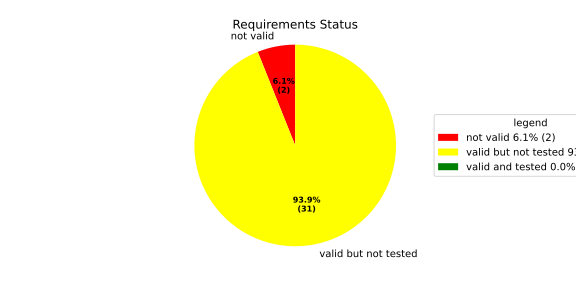
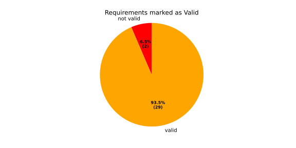
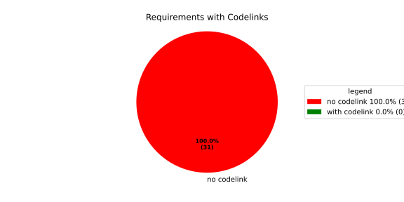
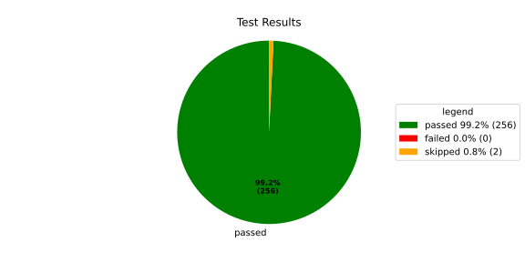
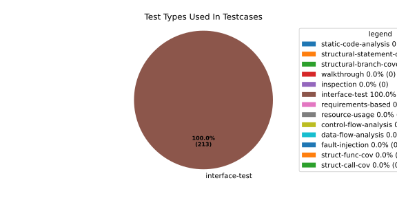
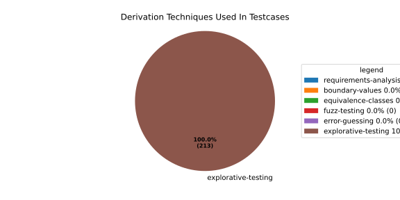

Verification Statistics#
Overview#

In Detail#



Failed Tests
Hint: This table should be empty. Before a PR can be merged all tests have to be successful.
No needs passed the filters
Skipped / Disabled Tests
testcase |
Result |
Fully Verifies |
Partially Verifies |
Test Type |
Derivation Technique |
link |
|---|---|---|---|---|---|---|
ValidateRangeTest/4__RejectsValueAboveMax |
skipped |
interface-test |
explorative-testing |
|||
ValidateRangeTest/4__RejectsValueBelowMin |
skipped |
interface-test |
explorative-testing |
All passed Tests#
testcase |
Result |
Fully Verifies |
Partially Verifies |
Test Type |
Derivation Technique |
link |
|---|---|---|---|---|---|---|
AliveImplTest__DoesNotThrowWhenInterfacePathEnvVarIsSet |
passed |
interface-test |
explorative-testing |
testcase__AliveImplTest__DoesNotThrowWhenInterfacePathEnvVarIsSet_xpewu |
||
AliveImplTest__ReportCheckpointSafeWhenNotConnected |
passed |
interface-test |
explorative-testing |
testcase__AliveImplTest__ReportCheckpointSafeWhenNotConnected_ppvuc |
||
AliveImplTest__ThrowsWhenInterfacePathEnvVarIsNotSet |
passed |
interface-test |
explorative-testing |
testcase__AliveImplTest__ThrowsWhenInterfacePathEnvVarIsNotSet_ekxfw |
||
AliveSupervisionTest__AliveDebouncesThroughFailedBeforeExpired |
passed |
interface-test |
explorative-testing |
testcase__AliveSupervisionTest__AliveDebouncesThroughFailedBeforeExpired_mlnbe |
||
AliveSupervisionTest__AliveReportsEnqueueFailureWhenRingBufferFull |
passed |
interface-test |
explorative-testing |
testcase__AliveSupervisionTest__AliveReportsEnqueueFailureWhenRingBufferFull_byhrd |
||
AliveSupervisionTest__AliveStaysOkWithCorrectHeartbeats |
passed |
interface-test |
explorative-testing |
testcase__AliveSupervisionTest__AliveStaysOkWithCorrectHeartbeats_vekof |
||
AliveSupervisionTest__AliveTransitionsOkToExpiredOnMissingHeartbeat |
passed |
interface-test |
explorative-testing |
testcase__AliveSupervisionTest__AliveTransitionsOkToExpiredOnMissingHeartbeat_jymxo |
||
AliveSupervisionTest__DeactivatesOnProcessCrash |
passed |
interface-test |
explorative-testing |
testcase__AliveSupervisionTest__DeactivatesOnProcessCrash_ypejs |
||
AliveSupervisionTest__DeactivatesOnProcessSigterm |
passed |
interface-test |
explorative-testing |
testcase__AliveSupervisionTest__DeactivatesOnProcessSigterm_hzaal |
||
AliveSupervisionTest__IgnoresIrrelevantProcessStates |
passed |
interface-test |
explorative-testing |
testcase__AliveSupervisionTest__IgnoresIrrelevantProcessStates_aolvb |
||
AliveSupervisionTest__MaxIndicationViolationExpires |
passed |
interface-test |
explorative-testing |
testcase__AliveSupervisionTest__MaxIndicationViolationExpires_whhhi |
||
AliveSupervisionTest__ReactivatesAfterCrash |
passed |
interface-test |
explorative-testing |
|||
ApplicationTypes/ApplicationTypeTest__ConvertsToExpectedValue/Native |
passed |
interface-test |
explorative-testing |
testcase__ApplicationTypes/ApplicationTypeTest__ConvertsToExpectedValue/Native_yxxcz |
||
ApplicationTypes/ApplicationTypeTest__ConvertsToExpectedValue/Reporting |
passed |
interface-test |
explorative-testing |
testcase__ApplicationTypes/ApplicationTypeTest__ConvertsToExpectedValue/Reporting_wcfwr |
||
ApplicationTypes/ApplicationTypeTest__ConvertsToExpectedValue/ReportingAndSupervised |
passed |
interface-test |
explorative-testing |
testcase__ApplicationTypes/ApplicationTypeTest__ConvertsToExpectedValue/ReportingAndSupervised_yxgad |
||
ApplicationTypes/ApplicationTypeTest__ConvertsToExpectedValue/StateManager |
passed |
interface-test |
explorative-testing |
testcase__ApplicationTypes/ApplicationTypeTest__ConvertsToExpectedValue/StateManager_ivuzc |
||
ConverterTest__ConvertAliveSupervisionMissingCycleReturnsError |
passed |
interface-test |
explorative-testing |
testcase__ConverterTest__ConvertAliveSupervisionMissingCycleReturnsError_bifzg |
||
ConverterTest__ConvertAliveSupervisionNullReturnsDefault |
passed |
interface-test |
explorative-testing |
testcase__ConverterTest__ConvertAliveSupervisionNullReturnsDefault_clyua |
||
ConverterTest__ConvertAliveSupervisionValid |
passed |
interface-test |
explorative-testing |
|||
ConverterTest__ConvertApplicationProfileMissingSelfTerminatingReturnsError |
passed |
interface-test |
explorative-testing |
testcase__ConverterTest__ConvertApplicationProfileMissingSelfTerminatingReturnsError_zddjb |
||
ConverterTest__ConvertApplicationProfileMissingTypeReturnsError |
passed |
interface-test |
explorative-testing |
testcase__ConverterTest__ConvertApplicationProfileMissingTypeReturnsError_zrfcs |
||
ConverterTest__ConvertApplicationProfileValid |
passed |
interface-test |
explorative-testing |
testcase__ConverterTest__ConvertApplicationProfileValid_oohxq |
||
ConverterTest__ConvertComponentAliveSupervisionBothIndicationsAbsentReturnsError |
passed |
interface-test |
explorative-testing |
testcase__ConverterTest__ConvertComponentAliveSupervisionBothIndicationsAbsentReturnsError_gvtfi |
||
ConverterTest__ConvertComponentAliveSupervisionMissingReportingCycleReturnsError |
passed |
interface-test |
explorative-testing |
testcase__ConverterTest__ConvertComponentAliveSupervisionMissingReportingCycleReturnsError_ajymy |
||
ConverterTest__ConvertComponentAliveSupervisionMissingToleranceReturnsError |
passed |
interface-test |
explorative-testing |
testcase__ConverterTest__ConvertComponentAliveSupervisionMissingToleranceReturnsError_lgrhj |
||
ConverterTest__ConvertComponentAliveSupervisionNullReturnsDefault |
passed |
interface-test |
explorative-testing |
testcase__ConverterTest__ConvertComponentAliveSupervisionNullReturnsDefault_xhaus |
||
ConverterTest__ConvertComponentAliveSupervisionOnlyMaxIndicationsPresent |
passed |
interface-test |
explorative-testing |
testcase__ConverterTest__ConvertComponentAliveSupervisionOnlyMaxIndicationsPresent_smwht |
||
ConverterTest__ConvertComponentAliveSupervisionOnlyMinIndicationsPresent |
passed |
interface-test |
explorative-testing |
testcase__ConverterTest__ConvertComponentAliveSupervisionOnlyMinIndicationsPresent_ybbrr |
||
ConverterTest__ConvertComponentAliveSupervisionValid |
passed |
interface-test |
explorative-testing |
testcase__ConverterTest__ConvertComponentAliveSupervisionValid_ijedh |
||
ConverterTest__ConvertComponentsValid |
passed |
interface-test |
explorative-testing |
|||
ConverterTest__ConvertComponentsWithInvalidComponentReturnsError |
passed |
interface-test |
explorative-testing |
testcase__ConverterTest__ConvertComponentsWithInvalidComponentReturnsError_wridc |
||
ConverterTest__ConvertComponentValid |
passed |
interface-test |
explorative-testing |
|||
ConverterTest__ConvertDeploymentConfigMissingReadyTimeoutReturnsError |
passed |
interface-test |
explorative-testing |
testcase__ConverterTest__ConvertDeploymentConfigMissingReadyTimeoutReturnsError_ljzfl |
||
ConverterTest__ConvertDeploymentConfigMissingShutdownTimeoutReturnsError |
passed |
interface-test |
explorative-testing |
testcase__ConverterTest__ConvertDeploymentConfigMissingShutdownTimeoutReturnsError_vyqye |
||
ConverterTest__ConvertDeploymentConfigValid |
passed |
interface-test |
explorative-testing |
|||
ConverterTest__ConvertEnvironmentalVariables |
passed |
interface-test |
explorative-testing |
testcase__ConverterTest__ConvertEnvironmentalVariables_fnhgo |
||
ConverterTest__ConvertEnvironmentalVariablesNullReturnsEmpty |
passed |
interface-test |
explorative-testing |
testcase__ConverterTest__ConvertEnvironmentalVariablesNullReturnsEmpty_vglrx |
||
ConverterTest__ConvertFallbackRunTargetMissingTimeoutReturnsError |
passed |
interface-test |
explorative-testing |
testcase__ConverterTest__ConvertFallbackRunTargetMissingTimeoutReturnsError_aevly |
||
ConverterTest__ConvertFallbackRunTargetValid |
passed |
interface-test |
explorative-testing |
testcase__ConverterTest__ConvertFallbackRunTargetValid_nexxj |
||
ConverterTest__ConvertReadyConditionMissingProcessStateReturnsError |
passed |
interface-test |
explorative-testing |
testcase__ConverterTest__ConvertReadyConditionMissingProcessStateReturnsError_ileav |
||
ConverterTest__ConvertReadyConditionValid |
passed |
interface-test |
explorative-testing |
|||
ConverterTest__ConvertRestartActionMissingFieldsReturnsError |
passed |
interface-test |
explorative-testing |
testcase__ConverterTest__ConvertRestartActionMissingFieldsReturnsError_aapjb |
||
ConverterTest__ConvertRestartActionNullReturnsNullopt |
passed |
interface-test |
explorative-testing |
testcase__ConverterTest__ConvertRestartActionNullReturnsNullopt_ifvyd |
||
ConverterTest__ConvertRestartActionValid |
passed |
interface-test |
explorative-testing |
|||
ConverterTest__ConvertRunTargetMissingTransitionTimeoutReturnsError |
passed |
interface-test |
explorative-testing |
testcase__ConverterTest__ConvertRunTargetMissingTransitionTimeoutReturnsError_ynekv |
||
ConverterTest__ConvertRunTargetsValid |
passed |
interface-test |
explorative-testing |
|||
ConverterTest__ConvertRunTargetsWithInvalidRunTargetReturnsError |
passed |
interface-test |
explorative-testing |
testcase__ConverterTest__ConvertRunTargetsWithInvalidRunTargetReturnsError_ldlox |
||
ConverterTest__ConvertRunTargetValid |
passed |
interface-test |
explorative-testing |
|||
ConverterTest__ConvertSandboxMissingGidReturnsError |
passed |
interface-test |
explorative-testing |
testcase__ConverterTest__ConvertSandboxMissingGidReturnsError_veeel |
||
ConverterTest__ConvertSandboxMissingSchedulingPolicyReturnsError |
passed |
interface-test |
explorative-testing |
testcase__ConverterTest__ConvertSandboxMissingSchedulingPolicyReturnsError_pkfts |
||
ConverterTest__ConvertSandboxMissingSchedulingPriorityReturnsError |
passed |
interface-test |
explorative-testing |
testcase__ConverterTest__ConvertSandboxMissingSchedulingPriorityReturnsError_xzdho |
||
ConverterTest__ConvertSandboxMissingUidReturnsError |
passed |
interface-test |
explorative-testing |
testcase__ConverterTest__ConvertSandboxMissingUidReturnsError_ogfku |
||
ConverterTest__ConvertSandboxSupplementaryGidOutOfRangeReturnsError |
passed |
interface-test |
explorative-testing |
testcase__ConverterTest__ConvertSandboxSupplementaryGidOutOfRangeReturnsError_zavpx |
||
ConverterTest__ConvertSandboxUidOutOfRangeReturnsError |
passed |
interface-test |
explorative-testing |
testcase__ConverterTest__ConvertSandboxUidOutOfRangeReturnsError_mcuaf |
||
ConverterTest__ConvertSandboxValid |
passed |
interface-test |
explorative-testing |
|||
ConverterTest__ConvertSwitchRunTargetActionNullReturnsNullopt |
passed |
interface-test |
explorative-testing |
testcase__ConverterTest__ConvertSwitchRunTargetActionNullReturnsNullopt_zmitx |
||
ConverterTest__ConvertSwitchRunTargetActionValid |
passed |
interface-test |
explorative-testing |
testcase__ConverterTest__ConvertSwitchRunTargetActionValid_tdklr |
||
ConverterTest__ConvertWatchdogMissingDeactivateReturnsError |
passed |
interface-test |
explorative-testing |
testcase__ConverterTest__ConvertWatchdogMissingDeactivateReturnsError_gzwjt |
||
ConverterTest__ConvertWatchdogMissingMagicCloseReturnsError |
passed |
interface-test |
explorative-testing |
testcase__ConverterTest__ConvertWatchdogMissingMagicCloseReturnsError_gexxk |
||
ConverterTest__ConvertWatchdogMissingMaxTimeoutReturnsError |
passed |
interface-test |
explorative-testing |
testcase__ConverterTest__ConvertWatchdogMissingMaxTimeoutReturnsError_lffxm |
||
ConverterTest__ConvertWatchdogNullReturnsNullopt |
passed |
interface-test |
explorative-testing |
testcase__ConverterTest__ConvertWatchdogNullReturnsNullopt_irsdk |
||
ConverterTest__ConvertWatchdogValid |
passed |
interface-test |
explorative-testing |
|||
DeadlineFixture__Start_AlreadyRunning |
passed |
interface-test |
explorative-testing |
|||
DeadlineFixture__Start_Succeeds |
passed |
interface-test |
explorative-testing |
|||
DeadlineMonitorBuilderFixture__AddDeadline_Succeeds |
passed |
interface-test |
explorative-testing |
testcase__DeadlineMonitorBuilderFixture__AddDeadline_Succeeds_nagke |
||
DeadlineMonitorBuilderFixture__New_Succeeds |
passed |
interface-test |
explorative-testing |
|||
DeadlineMonitorFixture__GetDeadline_Succeeds |
passed |
interface-test |
explorative-testing |
testcase__DeadlineMonitorFixture__GetDeadline_Succeeds_tmltf |
||
DeadlineMonitorFixture__GetDeadline_Unknown |
passed |
interface-test |
explorative-testing |
|||
EnumConversionTest__ConvertSchedulingPolicyUnsupported |
passed |
interface-test |
explorative-testing |
testcase__EnumConversionTest__ConvertSchedulingPolicyUnsupported_iavqm |
||
EnvironmentTest__AddIncreasesSize |
passed |
interface-test |
explorative-testing |
|||
EnvironmentTest__DefaultConstructedIsEmpty |
passed |
interface-test |
explorative-testing |
|||
EnvironmentTest__EmptyEnvironmentEnvpIsNullTerminated |
passed |
interface-test |
explorative-testing |
testcase__EnvironmentTest__EmptyEnvironmentEnvpIsNullTerminated_wwumw |
||
EnvironmentTest__EnvpReturnsNullTerminatedArray |
passed |
interface-test |
explorative-testing |
testcase__EnvironmentTest__EnvpReturnsNullTerminatedArray_aubkv |
||
EnvironmentTest__EnvpWithMultipleEntries |
passed |
interface-test |
explorative-testing |
|||
EnvironmentTest__MoveAssignmentPreservesEntries |
passed |
interface-test |
explorative-testing |
testcase__EnvironmentTest__MoveAssignmentPreservesEntries_vkydj |
||
EnvironmentTest__MoveConstructorPreservesEntries |
passed |
interface-test |
explorative-testing |
testcase__EnvironmentTest__MoveConstructorPreservesEntries_upclt |
||
EnvironmentTest__RangeBasedForLoopWorks |
passed |
interface-test |
explorative-testing |
|||
EnvironmentTest__ReserveAndAddAvoidReallocation |
passed |
interface-test |
explorative-testing |
testcase__EnvironmentTest__ReserveAndAddAvoidReallocation_lgzmu |
||
EnvironmentTest__SsoLengthStringSurvivesReallocation |
passed |
interface-test |
explorative-testing |
testcase__EnvironmentTest__SsoLengthStringSurvivesReallocation_jfmtl |
||
EnvironmentVariableTest__CStrReturnsKeyEqualsValue |
passed |
interface-test |
explorative-testing |
testcase__EnvironmentVariableTest__CStrReturnsKeyEqualsValue_rkwan |
||
EnvironmentVariableTest__EmptyValue |
passed |
interface-test |
explorative-testing |
|||
EnvironmentVariableTest__KeyAndValueAreAccessible |
passed |
interface-test |
explorative-testing |
testcase__EnvironmentVariableTest__KeyAndValueAreAccessible_kcrth |
||
EnvironmentVariableTest__ValueContainingEquals |
passed |
interface-test |
explorative-testing |
testcase__EnvironmentVariableTest__ValueContainingEquals_apzgz |
||
ExecErrorDomainTest__AllKnownCodesHaveDistinctMessages |
passed |
interface-test |
explorative-testing |
testcase__ExecErrorDomainTest__AllKnownCodesHaveDistinctMessages_qpoka |
||
ExecErrorDomainTest__AllKnownCodesReturnNonEmptyMessage |
passed |
interface-test |
explorative-testing |
testcase__ExecErrorDomainTest__AllKnownCodesReturnNonEmptyMessage_bawzg |
||
ExecErrorDomainTest__UnknownCodeReturnsNonEmptyMessage |
passed |
interface-test |
explorative-testing |
testcase__ExecErrorDomainTest__UnknownCodeReturnsNonEmptyMessage_kkwpr |
||
FlatbufferConfigLoaderTest__CorruptedBufferReturnsInvalidFormat |
passed |
interface-test |
explorative-testing |
testcase__FlatbufferConfigLoaderTest__CorruptedBufferReturnsInvalidFormat_twyac |
||
FlatbufferConfigLoaderTest__LoadAliveSupervision |
passed |
interface-test |
explorative-testing |
testcase__FlatbufferConfigLoaderTest__LoadAliveSupervision_hhuux |
||
FlatbufferConfigLoaderTest__LoadBufferFailsWithGenericErrorReturnsGeneralError |
passed |
interface-test |
explorative-testing |
testcase__FlatbufferConfigLoaderTest__LoadBufferFailsWithGenericErrorReturnsGeneralError_kmatm |
||
FlatbufferConfigLoaderTest__LoadBufferFailsWithNoSuchFileReturnsFileNotFound |
passed |
interface-test |
explorative-testing |
testcase__FlatbufferConfigLoaderTest__LoadBufferFailsWithNoSuchFileReturnsFileNotFound_yzlra |
||
FlatbufferConfigLoaderTest__LoadBufferFailsWithPermissionDeniedReturnsInsufficientPermission |
passed |
interface-test |
explorative-testing |
|||
FlatbufferConfigLoaderTest__LoadComponentAliveSupervision |
passed |
interface-test |
explorative-testing |
testcase__FlatbufferConfigLoaderTest__LoadComponentAliveSupervision_fwfad |
||
FlatbufferConfigLoaderTest__LoadEnvironmentalVariables |
passed |
interface-test |
explorative-testing |
testcase__FlatbufferConfigLoaderTest__LoadEnvironmentalVariables_wsosu |
||
FlatbufferConfigLoaderTest__LoadFallbackRunTarget |
passed |
interface-test |
explorative-testing |
testcase__FlatbufferConfigLoaderTest__LoadFallbackRunTarget_wduqm |
||
FlatbufferConfigLoaderTest__LoadMinimalConfig |
passed |
interface-test |
explorative-testing |
testcase__FlatbufferConfigLoaderTest__LoadMinimalConfig_hdkck |
||
FlatbufferConfigLoaderTest__LoadMultipleComponents |
passed |
interface-test |
explorative-testing |
testcase__FlatbufferConfigLoaderTest__LoadMultipleComponents_abpom |
||
FlatbufferConfigLoaderTest__LoadRestartRecoveryAction |
passed |
interface-test |
explorative-testing |
testcase__FlatbufferConfigLoaderTest__LoadRestartRecoveryAction_wyfqg |
||
FlatbufferConfigLoaderTest__LoadRunTargets |
passed |
interface-test |
explorative-testing |
|||
FlatbufferConfigLoaderTest__LoadSandbox |
passed |
interface-test |
explorative-testing |
|||
FlatbufferConfigLoaderTest__LoadSingleComponent |
passed |
interface-test |
explorative-testing |
testcase__FlatbufferConfigLoaderTest__LoadSingleComponent_yidty |
||
FlatbufferConfigLoaderTest__LoadSwitchRunTargetAction |
passed |
interface-test |
explorative-testing |
testcase__FlatbufferConfigLoaderTest__LoadSwitchRunTargetAction_uchgp |
||
FlatbufferConfigLoaderTest__LoadWatchdog |
passed |
interface-test |
explorative-testing |
|||
FlatbufferConfigLoaderTest__MissingSchemaVersionReturnsInvalidFormat |
passed |
interface-test |
explorative-testing |
testcase__FlatbufferConfigLoaderTest__MissingSchemaVersionReturnsInvalidFormat_qqmfn |
||
FlatbufferConfigLoaderTest__OptionalReadyConditionAbsent |
passed |
interface-test |
explorative-testing |
testcase__FlatbufferConfigLoaderTest__OptionalReadyConditionAbsent_lhddx |
||
FlatbufferConfigLoaderTest__OptionalWatchdogAbsent |
passed |
interface-test |
explorative-testing |
testcase__FlatbufferConfigLoaderTest__OptionalWatchdogAbsent_pkhkp |
||
FlatbufferConfigLoaderTest__WrongSchemaVersionReturnsUnsupportedVersion |
passed |
interface-test |
explorative-testing |
testcase__FlatbufferConfigLoaderTest__WrongSchemaVersionReturnsUnsupportedVersion_zrbjv |
||
HealthMonitor__GetDeadlineMonitor_Available |
passed |
|||||
HealthMonitor__GetDeadlineMonitor_Taken |
passed |
|||||
HealthMonitor__GetDeadlineMonitor_Unknown |
passed |
|||||
HealthMonitor__GetHeartbeatMonitor_Available |
passed |
testcase__HealthMonitor__GetHeartbeatMonitor_Available_aacat |
||||
HealthMonitor__GetHeartbeatMonitor_Taken |
passed |
|||||
HealthMonitor__GetHeartbeatMonitor_Unknown |
passed |
|||||
HealthMonitor__GetLogicMonitor_Available |
passed |
|||||
HealthMonitor__GetLogicMonitor_Taken |
passed |
|||||
HealthMonitor__GetLogicMonitor_Unknown |
passed |
|||||
HealthMonitor__Start_MonitorsNotTaken |
passed |
|||||
HealthMonitor__Start_Succeeds |
passed |
|||||
HealthMonitorBuilderFixture__Build_InvalidCycles |
passed |
interface-test |
explorative-testing |
testcase__HealthMonitorBuilderFixture__Build_InvalidCycles_pdigk |
||
HealthMonitorBuilderFixture__Build_NoMonitors |
passed |
interface-test |
explorative-testing |
testcase__HealthMonitorBuilderFixture__Build_NoMonitors_ktcve |
||
HealthMonitorBuilderFixture__Build_Succeeds |
passed |
interface-test |
explorative-testing |
|||
HealthMonitorBuilderFixture__New_Succeeds |
passed |
interface-test |
explorative-testing |
|||
HealthMonitorTest__Integrated |
passed |
interface-test |
explorative-testing |
|||
HeartbeatMonitor__Heartbeat_Succeeds |
passed |
interface-test |
explorative-testing |
|||
HeartbeatMonitorBuilder__New_Succeeds |
passed |
interface-test |
explorative-testing |
|||
IdentifierHashTest__IdentifierHash_default_created |
passed |
interface-test |
explorative-testing |
testcase__IdentifierHashTest__IdentifierHash_default_created_yhhvi |
||
IdentifierHashTest__IdentifierHash_EqualityOperators |
passed |
interface-test |
explorative-testing |
testcase__IdentifierHashTest__IdentifierHash_EqualityOperators_nnsuj |
||
IdentifierHashTest__IdentifierHash_invalid_hash_no_string_representation |
passed |
interface-test |
explorative-testing |
testcase__IdentifierHashTest__IdentifierHash_invalid_hash_no_string_representation_rxowr |
||
IdentifierHashTest__IdentifierHash_LessThanOperator |
passed |
interface-test |
explorative-testing |
testcase__IdentifierHashTest__IdentifierHash_LessThanOperator_rnbax |
||
IdentifierHashTest__IdentifierHash_no_dangling_pointer_after_source_string_dies |
passed |
interface-test |
explorative-testing |
testcase__IdentifierHashTest__IdentifierHash_no_dangling_pointer_after_source_string_dies_qsjin |
||
IdentifierHashTest__IdentifierHash_with_string_created |
passed |
interface-test |
explorative-testing |
testcase__IdentifierHashTest__IdentifierHash_with_string_created_aygdm |
||
IdentifierHashTest__IdentifierHash_with_string_view_created |
passed |
interface-test |
explorative-testing |
testcase__IdentifierHashTest__IdentifierHash_with_string_view_created_dbpol |
||
LogicMonitorBuilderFixture__AddState_Succeeds |
passed |
interface-test |
explorative-testing |
testcase__LogicMonitorBuilderFixture__AddState_Succeeds_axdxj |
||
LogicMonitorBuilderFixture__New_Succeeds |
passed |
interface-test |
explorative-testing |
|||
LogicMonitorFixture__State_Invalid |
passed |
interface-test |
explorative-testing |
|||
LogicMonitorFixture__State_Succeeds |
passed |
interface-test |
explorative-testing |
|||
LogicMonitorFixture__Transition_Invalid |
passed |
interface-test |
explorative-testing |
|||
LogicMonitorFixture__Transition_Succeeds |
passed |
interface-test |
explorative-testing |
|||
LogicMonitorFixture__Transition_Unknown |
passed |
interface-test |
explorative-testing |
|||
MonitorIfDaemonTest__Active_CheckpointDataForwarded |
passed |
interface-test |
explorative-testing |
testcase__MonitorIfDaemonTest__Active_CheckpointDataForwarded_evumz |
||
MonitorIfDaemonTest__Active_FutureTimestamp_NotForwardedInCurrentCycle |
passed |
interface-test |
explorative-testing |
testcase__MonitorIfDaemonTest__Active_FutureTimestamp_NotForwardedInCurrentCycle_oycau |
||
MonitorIfDaemonTest__Active_FutureTimestampCheckpoint_ConsumedInLaterCycle |
passed |
interface-test |
explorative-testing |
testcase__MonitorIfDaemonTest__Active_FutureTimestampCheckpoint_ConsumedInLaterCycle_veyyy |
||
MonitorIfDaemonTest__Active_MultipleCheckpointsInOneCycle_AllForwarded |
passed |
interface-test |
explorative-testing |
testcase__MonitorIfDaemonTest__Active_MultipleCheckpointsInOneCycle_AllForwarded_gmbms |
||
MonitorIfDaemonTest__Active_NonMatchingCheckpointId_NotForwarded |
passed |
interface-test |
explorative-testing |
testcase__MonitorIfDaemonTest__Active_NonMatchingCheckpointId_NotForwarded_bohck |
||
MonitorIfDaemonTest__Active_OverflowDetected_TransitionsToInactiveOverflow |
passed |
interface-test |
explorative-testing |
testcase__MonitorIfDaemonTest__Active_OverflowDetected_TransitionsToInactiveOverflow_ovitk |
||
MonitorIfDaemonTest__Active_TwoAttachedCheckpoints_RoutedByCheckpointId |
passed |
interface-test |
explorative-testing |
testcase__MonitorIfDaemonTest__Active_TwoAttachedCheckpoints_RoutedByCheckpointId_skqhd |
||
MonitorIfDaemonTest__GetInterfaceName_ReturnsNameGivenAtConstruction |
passed |
interface-test |
explorative-testing |
testcase__MonitorIfDaemonTest__GetInterfaceName_ReturnsNameGivenAtConstruction_iaemz |
||
MonitorIfDaemonTest__InactiveOverflow_NoProcessRestart_DoesNotRepeatNotification |
passed |
interface-test |
explorative-testing |
testcase__MonitorIfDaemonTest__InactiveOverflow_NoProcessRestart_DoesNotRepeatNotification_gdbxg |
||
MonitorIfDaemonTest__InactiveOverflow_ProcessRestartFlag_ClearedAfterNotification |
passed |
interface-test |
explorative-testing |
testcase__MonitorIfDaemonTest__InactiveOverflow_ProcessRestartFlag_ClearedAfterNotification_pqfyy |
||
MonitorIfDaemonTest__InactiveOverflow_ProcessRestarts_PushesOverflowNotificationAgain |
passed |
interface-test |
explorative-testing |
|||
MonitorIfDaemonTest__InitiallyInactive_CheckForNewData_DoesNotNotifyCheckpoint |
passed |
interface-test |
explorative-testing |
testcase__MonitorIfDaemonTest__InitiallyInactive_CheckForNewData_DoesNotNotifyCheckpoint_wjrfl |
||
MonitorIfDaemonTest__ProcessOff_DeactivatesMonitor_NoFurtherDataForwarded |
passed |
interface-test |
explorative-testing |
testcase__MonitorIfDaemonTest__ProcessOff_DeactivatesMonitor_NoFurtherDataForwarded_uialh |
||
MonitorIfDaemonTest__ProcessOffBeforeActivation_RemainsInactive |
passed |
interface-test |
explorative-testing |
testcase__MonitorIfDaemonTest__ProcessOffBeforeActivation_RemainsInactive_kzzyy |
||
MonitorIfDaemonTest__ProcessRunning_ActivatesMonitorOnNextCheckForNewData |
passed |
interface-test |
explorative-testing |
testcase__MonitorIfDaemonTest__ProcessRunning_ActivatesMonitorOnNextCheckForNewData_fkkmk |
||
MonitorIfDaemonTest__ProcessStarting_AlsoActivatesMonitor |
passed |
interface-test |
explorative-testing |
testcase__MonitorIfDaemonTest__ProcessStarting_AlsoActivatesMonitor_xdkbg |
||
MPMCConcurrentQueueTest_Basic__LvaluePushCopiesItem |
passed |
testcase__MPMCConcurrentQueueTest_Basic__LvaluePushCopiesItem_oysfc |
||||
MPMCConcurrentQueueTest_Basic__PopReturnsNulloptOnSemaphoreWaitFailure |
passed |
testcase__MPMCConcurrentQueueTest_Basic__PopReturnsNulloptOnSemaphoreWaitFailure_rgznm |
||||
MPMCConcurrentQueueTest_Basic__PushAndPopPreservesOrder |
passed |
testcase__MPMCConcurrentQueueTest_Basic__PushAndPopPreservesOrder_aijdb |
||||
MPMCConcurrentQueueTest_Basic__PushAndPopSingleItem |
passed |
testcase__MPMCConcurrentQueueTest_Basic__PushAndPopSingleItem_jrxwz |
||||
MPMCConcurrentQueueTest_Basic__RvaluePushWorksWithMoveOnlyType |
passed |
testcase__MPMCConcurrentQueueTest_Basic__RvaluePushWorksWithMoveOnlyType_cxxaj |
||||
MPMCConcurrentQueueTest_Blocking__PopBlocksUntilItemAvailable |
passed |
testcase__MPMCConcurrentQueueTest_Blocking__PopBlocksUntilItemAvailable_ttwcx |
||||
MPMCConcurrentQueueTest_Blocking__PushBlocksWhenFull |
passed |
testcase__MPMCConcurrentQueueTest_Blocking__PushBlocksWhenFull_ecujf |
||||
MPMCConcurrentQueueTest_Blocking__StopUnblocksBlockedConsumer |
passed |
testcase__MPMCConcurrentQueueTest_Blocking__StopUnblocksBlockedConsumer_snzyr |
||||
MPMCConcurrentQueueTest_Blocking__StopUnblocksBlockedProducer |
passed |
testcase__MPMCConcurrentQueueTest_Blocking__StopUnblocksBlockedProducer_inddu |
||||
MPMCConcurrentQueueTest_MPMC__AllItemsDelivered |
passed |
testcase__MPMCConcurrentQueueTest_MPMC__AllItemsDelivered_ztjqe |
||||
MPMCConcurrentQueueTest_Stop__ItemsAreDroppedAfterStop |
passed |
testcase__MPMCConcurrentQueueTest_Stop__ItemsAreDroppedAfterStop_ragzw |
||||
MPMCConcurrentQueueTest_Stop__PopReturnsNulloptWhenStoppedAndEmpty |
passed |
testcase__MPMCConcurrentQueueTest_Stop__PopReturnsNulloptWhenStoppedAndEmpty_cevga |
||||
MPMCConcurrentQueueTest_Stop__PushReturnsFalseAfterStop |
passed |
testcase__MPMCConcurrentQueueTest_Stop__PushReturnsFalseAfterStop_qqnhw |
||||
MPMCConcurrentQueueTest_Timeout__PushWithTimeoutReturnsFalseWhenFull |
passed |
testcase__MPMCConcurrentQueueTest_Timeout__PushWithTimeoutReturnsFalseWhenFull_aeips |
||||
MPMCConcurrentQueueTest_Timeout__PushWithTimeoutSucceedsWhenSlotAvailable |
passed |
testcase__MPMCConcurrentQueueTest_Timeout__PushWithTimeoutSucceedsWhenSlotAvailable_klzpo |
||||
OsHandlerTest__WaitReturnsError_OsHandlerSleepsAndDoesNotCallFindTerminated |
passed |
interface-test |
explorative-testing |
testcase__OsHandlerTest__WaitReturnsError_OsHandlerSleepsAndDoesNotCallFindTerminated_cibtr |
||
OsHandlerTest__WaitReturnsErrorThenProcessId_HandlerRecoversAndInvokesCallback |
passed |
interface-test |
explorative-testing |
testcase__OsHandlerTest__WaitReturnsErrorThenProcessId_HandlerRecoversAndInvokesCallback_nqstd |
||
OsHandlerTest__WaitReturnsProcessId_FindTerminatedIsCalled |
passed |
interface-test |
explorative-testing |
testcase__OsHandlerTest__WaitReturnsProcessId_FindTerminatedIsCalled_chlsq |
||
OsHandlerTest__WaitReturnsProcessIdBeforeRegistration_LaterRegistrationReceivesStoredTermination |
passed |
interface-test |
explorative-testing |
|||
OsHandlerTest__WaitReturnsUnknownPidWhenMapIsFull_OutOfResourcesPathDoesNotNotifyCallbacks |
passed |
interface-test |
explorative-testing |
|||
OsHandlerTest__WaitReturnsZeroPid_OsHandlerSleepsAndDoesNotCallFindTerminated |
passed |
interface-test |
explorative-testing |
testcase__OsHandlerTest__WaitReturnsZeroPid_OsHandlerSleepsAndDoesNotCallFindTerminated_rkttz |
||
ProcessStateClient_UT__ProcessStateClient_ConstructReceiver_Succeeds |
passed |
interface-test |
explorative-testing |
testcase__ProcessStateClient_UT__ProcessStateClient_ConstructReceiver_Succeeds_hodwy |
||
ProcessStateClient_UT__ProcessStateClient_QueueMaxNumberOfProcesses_Succeeds |
passed |
interface-test |
explorative-testing |
testcase__ProcessStateClient_UT__ProcessStateClient_QueueMaxNumberOfProcesses_Succeeds_qohom |
||
ProcessStateClient_UT__ProcessStateClient_QueueOneProcess_Succeeds |
passed |
interface-test |
explorative-testing |
testcase__ProcessStateClient_UT__ProcessStateClient_QueueOneProcess_Succeeds_tmzfz |
||
ProcessStateClient_UT__ProcessStateClient_QueueOneProcessTooMany_Fails |
passed |
interface-test |
explorative-testing |
testcase__ProcessStateClient_UT__ProcessStateClient_QueueOneProcessTooMany_Fails_sspoj |
||
ProcessStates/ProcessStateTest__ConvertsToExpectedValue/Running |
passed |
interface-test |
explorative-testing |
testcase__ProcessStates/ProcessStateTest__ConvertsToExpectedValue/Running_hinlr |
||
ProcessStates/ProcessStateTest__ConvertsToExpectedValue/Terminated |
passed |
interface-test |
explorative-testing |
testcase__ProcessStates/ProcessStateTest__ConvertsToExpectedValue/Terminated_zrytn |
||
RecoveryClientTest__FIFOOrdering |
passed |
interface-test |
explorative-testing |
|||
RecoveryClientTest__GetNextRequest |
passed |
interface-test |
explorative-testing |
|||
RecoveryClientTest__GetNextRequestEmpty |
passed |
interface-test |
explorative-testing |
|||
RecoveryClientTest__RingBufferFull |
passed |
interface-test |
explorative-testing |
|||
RecoveryClientTest__SendSingleRequest |
passed |
interface-test |
explorative-testing |
|||
RunTest__AsPosixProcessCreatesAndDestroysLifeCycleManager |
passed |
testcase__RunTest__AsPosixProcessCreatesAndDestroysLifeCycleManager_sooex |
||||
RunTest__AsPosixProcessForwardsConstructorArgsToApplication |
passed |
testcase__RunTest__AsPosixProcessForwardsConstructorArgsToApplication_dmeur |
||||
RunTest__AsPosixProcessForwardsNonZeroExitCode |
passed |
testcase__RunTest__AsPosixProcessForwardsNonZeroExitCode_lldqd |
||||
RunTest__AsPosixProcessPassesCorrectApplicationTypeToRun |
passed |
testcase__RunTest__AsPosixProcessPassesCorrectApplicationTypeToRun_ajqwz |
||||
RunTest__AsPosixProcessReturnsZeroExitCode |
passed |
|||||
RunTest__RunApplicationFreeFunctionDelegatesToAsPosixProcess |
passed |
testcase__RunTest__RunApplicationFreeFunctionDelegatesToAsPosixProcess_ccing |
||||
RunTest__RunConstructorPassesArgcArgvToApplicationContext |
passed |
testcase__RunTest__RunConstructorPassesArgcArgvToApplicationContext_agerd |
||||
SafeProcessMapTest__ConcurrentFindAndInsertFromMultipleThreads |
passed |
interface-test |
explorative-testing |
testcase__SafeProcessMapTest__ConcurrentFindAndInsertFromMultipleThreads_kzfyg |
||
SafeProcessMapTest__ConcurrentInsertAndFindFromMultipleThreads |
passed |
interface-test |
explorative-testing |
testcase__SafeProcessMapTest__ConcurrentInsertAndFindFromMultipleThreads_hnyqj |
||
SafeProcessMapTest__ConstructWithZeroCapacity |
passed |
interface-test |
explorative-testing |
testcase__SafeProcessMapTest__ConstructWithZeroCapacity_gjmqg |
||
SafeProcessMapTest__FindTerminatedInsertsEntryWhenPidNotPresent |
passed |
interface-test |
explorative-testing |
testcase__SafeProcessMapTest__FindTerminatedInsertsEntryWhenPidNotPresent_ixtlt |
||
SafeProcessMapTest__FindTerminatedMatchesExistingInsertAndCallsCallback |
passed |
interface-test |
explorative-testing |
testcase__SafeProcessMapTest__FindTerminatedMatchesExistingInsertAndCallsCallback_ehuzb |
||
SafeProcessMapTest__FindTerminatedSamePidTwiceYieldsUntilInsertResolves |
passed |
interface-test |
explorative-testing |
testcase__SafeProcessMapTest__FindTerminatedSamePidTwiceYieldsUntilInsertResolves_hsekx |
||
SafeProcessMapTest__FindTerminatedWithNegativePidReturnsInvalid |
passed |
interface-test |
explorative-testing |
testcase__SafeProcessMapTest__FindTerminatedWithNegativePidReturnsInvalid_dewoh |
||
SafeProcessMapTest__FindTerminatedWorksAtMaxTreeDepth |
passed |
interface-test |
explorative-testing |
testcase__SafeProcessMapTest__FindTerminatedWorksAtMaxTreeDepth_adtzi |
||
SafeProcessMapTest__InsertBeyondCapacityReturnsOutOfMemory |
passed |
interface-test |
explorative-testing |
testcase__SafeProcessMapTest__InsertBeyondCapacityReturnsOutOfMemory_qjnie |
||
SafeProcessMapTest__InsertIntoEmptyTreeReturnsZero |
passed |
interface-test |
explorative-testing |
testcase__SafeProcessMapTest__InsertIntoEmptyTreeReturnsZero_zfbaq |
||
SafeProcessMapTest__InsertMatchesExistingFindTerminatedEntry |
passed |
interface-test |
explorative-testing |
testcase__SafeProcessMapTest__InsertMatchesExistingFindTerminatedEntry_fuwrp |
||
SafeProcessMapTest__InsertMultipleNodesThenFindTerminatedRemovesAll |
passed |
interface-test |
explorative-testing |
testcase__SafeProcessMapTest__InsertMultipleNodesThenFindTerminatedRemovesAll_fvowh |
||
SafeProcessMapTest__InsertSamePidTwiceYieldsUntilFindTerminatedResolves |
passed |
interface-test |
explorative-testing |
testcase__SafeProcessMapTest__InsertSamePidTwiceYieldsUntilFindTerminatedResolves_wzwyb |
||
SchedulingPolicies/SchedulingPolicyTest__ConvertsToExpectedPosixValue/SCHED_FIFO |
passed |
interface-test |
explorative-testing |
testcase__SchedulingPolicies/SchedulingPolicyTest__ConvertsToExpectedPosixValue/SCHED_FIFO_soddq |
||
SchedulingPolicies/SchedulingPolicyTest__ConvertsToExpectedPosixValue/SCHED_OTHER |
passed |
interface-test |
explorative-testing |
testcase__SchedulingPolicies/SchedulingPolicyTest__ConvertsToExpectedPosixValue/SCHED_OTHER_oigmk |
||
SchedulingPolicies/SchedulingPolicyTest__ConvertsToExpectedPosixValue/SCHED_RR |
passed |
interface-test |
explorative-testing |
testcase__SchedulingPolicies/SchedulingPolicyTest__ConvertsToExpectedPosixValue/SCHED_RR_pcjci |
||
score/health_monitor/src/rust/test-510566969/tests |
passed |
testcase__score/health_monitor/src/rust/test-510566969/tests_kjjlw |
||||
score/health_monitor/src/rust/test-827801879/loom_tests |
passed |
testcase__score/health_monitor/src/rust/test-827801879/loom_tests_cpmix |
||||
SecondsToMsTest__ConvertsPositiveValue |
passed |
interface-test |
explorative-testing |
|||
SecondsToMsTest__ConvertsZero |
passed |
interface-test |
explorative-testing |
|||
SecondsToMsTest__RejectsNegativeValue |
passed |
interface-test |
explorative-testing |
|||
SecondsToMsTest__RejectsOverflow |
passed |
interface-test |
explorative-testing |
|||
SecondsToMsTest__RejectsSubMillisecond |
passed |
interface-test |
explorative-testing |
|||
StringHelperTest__ConvertGidVectorReturnsEmptyWhenNull |
passed |
interface-test |
explorative-testing |
testcase__StringHelperTest__ConvertGidVectorReturnsEmptyWhenNull_jmcsr |
||
StringHelperTest__ConvertStringVectorReturnsEmptyWhenNull |
passed |
interface-test |
explorative-testing |
testcase__StringHelperTest__ConvertStringVectorReturnsEmptyWhenNull_zsuvv |
||
StringHelperTest__SafeStringReturnsEmptyWhenNull |
passed |
interface-test |
explorative-testing |
testcase__StringHelperTest__SafeStringReturnsEmptyWhenNull_crelr |
||
StringHelperTest__SafeStringReturnsValueWhenNotNull |
passed |
interface-test |
explorative-testing |
testcase__StringHelperTest__SafeStringReturnsValueWhenNotNull_anbko |
||
test_complex_monitoring |
passed |
|||||
test_crash_on_startup |
passed |
|||||
test_incorrect_config_non_reporting |
passed |
|||||
test_process_crash_monitoring |
passed |
|||||
test_process_launch_args |
passed |
|||||
test_process_wrong_binary_failure |
passed |
|||||
test_recovery_action_complex_rep_failure |
passed |
|||||
test_recovery_action_simple_rep_failure |
passed |
|||||
test_smoke |
passed |
|||||
test_switch_run_target |
passed |
|||||
TimeRangeFixture__MinMax |
passed |
interface-test |
explorative-testing |
|||
TimeRangeFixture__New_InvalidOrder |
passed |
interface-test |
explorative-testing |
|||
TimeRangeFixture__New_Succeeds |
passed |
interface-test |
explorative-testing |
|||
ValidateRangeTest/0__AcceptsMaxBoundary |
passed |
interface-test |
explorative-testing |
|||
ValidateRangeTest/0__AcceptsMinBoundary |
passed |
interface-test |
explorative-testing |
|||
ValidateRangeTest/0__AcceptsZero |
passed |
interface-test |
explorative-testing |
|||
ValidateRangeTest/0__RejectsValueAboveMax |
passed |
interface-test |
explorative-testing |
|||
ValidateRangeTest/0__RejectsValueBelowMin |
passed |
interface-test |
explorative-testing |
|||
ValidateRangeTest/1__AcceptsMaxBoundary |
passed |
interface-test |
explorative-testing |
|||
ValidateRangeTest/1__AcceptsMinBoundary |
passed |
interface-test |
explorative-testing |
|||
ValidateRangeTest/1__AcceptsZero |
passed |
interface-test |
explorative-testing |
|||
ValidateRangeTest/1__RejectsValueAboveMax |
passed |
interface-test |
explorative-testing |
|||
ValidateRangeTest/1__RejectsValueBelowMin |
passed |
interface-test |
explorative-testing |
|||
ValidateRangeTest/2__AcceptsMaxBoundary |
passed |
interface-test |
explorative-testing |
|||
ValidateRangeTest/2__AcceptsMinBoundary |
passed |
interface-test |
explorative-testing |
|||
ValidateRangeTest/2__AcceptsZero |
passed |
interface-test |
explorative-testing |
|||
ValidateRangeTest/2__RejectsValueAboveMax |
passed |
interface-test |
explorative-testing |
|||
ValidateRangeTest/2__RejectsValueBelowMin |
passed |
interface-test |
explorative-testing |
|||
ValidateRangeTest/3__AcceptsMaxBoundary |
passed |
interface-test |
explorative-testing |
|||
ValidateRangeTest/3__AcceptsMinBoundary |
passed |
interface-test |
explorative-testing |
|||
ValidateRangeTest/3__AcceptsZero |
passed |
interface-test |
explorative-testing |
|||
ValidateRangeTest/3__RejectsValueAboveMax |
passed |
interface-test |
explorative-testing |
|||
ValidateRangeTest/3__RejectsValueBelowMin |
passed |
interface-test |
explorative-testing |
|||
ValidateRangeTest/4__AcceptsMaxBoundary |
passed |
interface-test |
explorative-testing |
|||
ValidateRangeTest/4__AcceptsMinBoundary |
passed |
interface-test |
explorative-testing |
|||
ValidateRangeTest/4__AcceptsZero |
passed |
interface-test |
explorative-testing |
Details About Testcases#


Test Log Files#
tests-report/tests/integration/process_simple_rep_failure/process_simple_rep_failure/test.log
exec ${PAGER:-/usr/bin/less} "$0" || exit 1
Executing tests from //tests/integration/process_simple_rep_failure:process_simple_rep_failure
-----------------------------------------------------------------------------
============================= test session starts ==============================
platform linux -- Python 3.12.12, pytest-9.0.3, pluggy-1.5.0
rootdir: /home/runner/.bazel/sandbox/processwrapper-sandbox/1314/execroot/_main/bazel-out/k8-fastbuild/bin/tests/integration/process_simple_rep_failure/process_simple_rep_failure.runfiles/score_itf+
configfile: pytest.ini
collected 1 item
../score_itf+::test_recovery_action_simple_rep_failure
-------------------------------- live log setup --------------------------------
[2026-07-08 10:00:59.496] [INFO] [score.itf.plugins.docker] Executing custom image bootstrap command: tests/utils/environments/x86_64-linux/x86_64-linux.sh
[2026-07-08 10:00:59.803] [DEBUG] [docker.utils.config] Trying paths: ['/home/runner/.docker/config.json', '/home/runner/.dockercfg']
[2026-07-08 10:00:59.803] [DEBUG] [docker.utils.config] Found file at path: /home/runner/.docker/config.json
[2026-07-08 10:00:59.804] [DEBUG] [docker.auth] Found 'auths' section
[2026-07-08 10:00:59.804] [DEBUG] [docker.auth] Found entry (registry='https://index.docker.io/v1/', username='githubactions')
[2026-07-08 10:00:59.817] [DEBUG] [urllib3.connectionpool] http://localhost:None "GET /version HTTP/1.1" 200 823
[2026-07-08 10:00:59.904] [DEBUG] [urllib3.connectionpool] http://localhost:None "POST /v1.48/containers/create HTTP/1.1" 201 88
[2026-07-08 10:00:59.906] [DEBUG] [urllib3.connectionpool] http://localhost:None "GET /v1.48/containers/88120aa98a505153259633990d9d5106035a4bb3e0659dde19a7a78ede7e2a50/json HTTP/1.1" 200 None
[2026-07-08 10:01:00.176] [DEBUG] [urllib3.connectionpool] http://localhost:None "POST /v1.48/containers/88120aa98a505153259633990d9d5106035a4bb3e0659dde19a7a78ede7e2a50/start HTTP/1.1" 204 0
[2026-07-08 10:01:00.177] [DEBUG] [docker.utils.config] Trying paths: ['/home/runner/.docker/config.json', '/home/runner/.dockercfg']
[2026-07-08 10:01:00.178] [DEBUG] [docker.utils.config] Found file at path: /home/runner/.docker/config.json
[2026-07-08 10:01:00.178] [DEBUG] [docker.auth] Found 'auths' section
[2026-07-08 10:01:00.179] [DEBUG] [docker.auth] Found entry (registry='https://index.docker.io/v1/', username='githubactions')
[2026-07-08 10:01:00.188] [DEBUG] [urllib3.connectionpool] http://localhost:None "GET /version HTTP/1.1" 200 823
[2026-07-08 10:01:00.432] [INFO] [tests.utils.testing_utils.setup_test] Test case setup finished
-------------------------------- live log call ---------------------------------
[2026-07-08 10:01:00.540] [INFO] [launch_manager] 2026/07/08 10:01:00.4860536 4919995 000 ECU1 LM LM log debug verbose 1 Launch Manager Started !!!!
[2026-07-08 10:01:00.540] [INFO] [launch_manager] 2026/07/08 10:01:00.4860536 4919998 000 ECU1 LM LM log debug verbose 1 Loading LCM Configurations...
[2026-07-08 10:01:00.541] [INFO] [launch_manager] 2026/07/08 10:01:00.4860536 4919999 000 ECU1 LM LM log debug verbose 1 ECUCFG_ENV_VAR_ROOTFOLDER set successfully
[2026-07-08 10:01:00.542] [INFO] [launch_manager] 2026/07/08 10:01:00.4860537 4920000 000 ECU1 LM LM log debug verbose 5 FlatBufferParser::getModeGroupPgName: MainPG ( IdentifierHash: 18079021346025578134 )
[2026-07-08 10:01:00.542] [INFO] [launch_manager] 2026/07/08 10:01:00.4860537 4920001 000 ECU1 LM LM log debug verbose 5 FlatBufferParser::getModeGroupPgStateName: MainPG/Startup ( IdentifierHash: 10504605499600661529 )
[2026-07-08 10:01:00.542] [INFO] [launch_manager] 2026/07/08 10:01:00.4860537 4920002 000 ECU1 LM LM log debug verbose 5
[2026-07-08 10:01:00.542] [INFO] [launch_manager] FlatBufferParser::getModeGroupPgStateName: MainPG/run_target_app_does_report_krunning_in_time ( IdentifierHash: 11934981641920773349 )
[2026-07-08 10:01:00.543] [INFO] [launch_manager] 2026/07/08 10:01:00.4860537 4920003 000 ECU1 LM LM log debug verbose 5
[2026-07-08 10:01:00.543] [INFO] [launch_manager] FlatBufferParser::getModeGroupPgStateName: MainPG/run_target_app_does_not_report_krunning_in_time ( IdentifierHash: 7672161913816744053 )
[2026-07-08 10:01:00.544] [INFO] [launch_manager] 2026/07/08 10:01:00.4860537 4920003 000 ECU1 LM LM log debug verbose 5
[2026-07-08 10:01:00.544] [INFO] [launch_manager] FlatBufferParser::getModeGroupPgStateName: MainPG/Off ( IdentifierHash: 15281793077830264047 )
[2026-07-08 10:01:00.545] [INFO] [launch_manager] 2026/07/08 10:01:00.4860537 4920004 000 ECU1 LM LM log debug verbose 5 FlatBufferParser::getModeGroupPgStateName: MainPG/fallback_run_target ( IdentifierHash: 4059409696722237352 )
[2026-07-08 10:01:00.545] [INFO] [launch_manager] 2026/07/08 10:01:00.4860537 4920005 000 ECU1 LM LM log debug verbose 4 parseProcessConfigurations: Process index: 0 executable_path_: /tmp/tests/process_simple_rep_failure/control_client_mock
[2026-07-08 10:01:00.546] [INFO] [launch_manager] 2026/07/08 10:01:00.4860537 4920006 000 ECU1 LM LM log debug verbose 3
[2026-07-08 10:01:00.546] [INFO] [launch_manager] Process control_client_mock is Reporting execution state
[2026-07-08 10:01:00.546] [INFO] [launch_manager] 2026/07/08 10:01:00.4860537 4920006 000 ECU1 LM LM log debug verbose 1 Process is STATE_MANAGEMENT function Cluster Affiliation
[2026-07-08 10:01:00.546] [INFO] [launch_manager] 2026/07/08 10:01:00.4860537 4920007 000 ECU1 LM LM log debug verbose 3 Process control_client_mock is Self terminating
[2026-07-08 10:01:00.546] [INFO] [launch_manager] 2026/07/08 10:01:00.4860537 4920008 000 ECU1 LM LM log debug verbose 4 ParseProcessProcessGroup: id:::pg_name_: MainPG , pg_state_name_: MainPG/Startup
[2026-07-08 10:01:00.546] [INFO] [launch_manager] 2026/07/08 10:01:00.4860537 4920008 000 ECU1 LM LM log debug verbose 4 ParseProcessProcessGroup: id:::pg_name_: MainPG , pg_state_name_: MainPG/run_target_app_does_report_krunning_in_time
[2026-07-08 10:01:00.546] [INFO] [launch_manager] 2026/07/08 10:01:00.4860538 4920009 000 ECU1 LM LM log debug verbose 4 ParseProcessProcessGroup: id:::pg_name_: MainPG , pg_state_name_: MainPG/run_target_app_does_not_report_krunning_in_time
[2026-07-08 10:01:00.547] [INFO] [launch_manager] 2026/07/08 10:01:00.4860538 4920010 000 ECU1 LM LM log debug verbose 4 ParseProcessProcessGroup: id:::pg_name_: MainPG , pg_state_name_: MainPG/fallback_run_target
[2026-07-08 10:01:00.547] [INFO] [launch_manager] 2026/07/08 10:01:00.4860538 4920011 000 ECU1 LM LM log debug verbose 4 parseProcessConfigurations: Process index: 1 executable_path_: /tmp/tests/process_simple_rep_failure/process_simple_reporting
[2026-07-08 10:01:00.547] [INFO] [launch_manager] 2026/07/08 10:01:00.4860538 4920012 000 ECU1 LM LM log debug verbose 3 Process component_does_report_krunning_in_time is Reporting execution state
[2026-07-08 10:01:00.547] [INFO] [launch_manager] 2026/07/08 10:01:00.4860538 4920012 000 ECU1 LM LM log debug verbose 1 Process is NOT associated with any function Cluster Affiliation
[2026-07-08 10:01:00.547] [INFO] [launch_manager] 2026/07/08 10:01:00.4860538 4920013 000 ECU1 LM LM log debug verbose 3 Process component_does_report_krunning_in_time is Self terminating
[2026-07-08 10:01:00.547] [INFO] [launch_manager] 2026/07/08 10:01:00.4860538 4920014 000 ECU1 LM LM log debug verbose 4 ParseProcessProcessGroup: id:::pg_name_: MainPG , pg_state_name_: MainPG/run_target_app_does_report_krunning_in_time
[2026-07-08 10:01:00.547] [INFO] [launch_manager] 2026/07/08 10:01:00.4860538 4920015 000 ECU1 LM LM log debug verbose 4 parseProcessConfigurations: Process index: 2 executable_path_: /tmp/tests/process_simple_rep_failure/process_simple_reporting
[2026-07-08 10:01:00.547] [INFO] [launch_manager] 2026/07/08 10:01:00.4860538 4920015 000 ECU1 LM LM log debug verbose 3 Process component_does_not_report_krunning_in_time is Reporting execution state
[2026-07-08 10:01:00.548] [INFO] [launch_manager] 2026/07/08 10:01:00.4860538 4920016 000 ECU1 LM LM log debug verbose 1 Process is NOT associated with any function Cluster Affiliation
[2026-07-08 10:01:00.548] [INFO] [launch_manager] 2026/07/08 10:01:00.4860538 4920017 000 ECU1 LM LM log debug verbose 3 Process component_does_not_report_krunning_in_time is Self terminating
[2026-07-08 10:01:00.548] [INFO] [launch_manager] 2026/07/08 10:01:00.4860538 4920017 000 ECU1 LM LM log debug verbose 4 ParseProcessProcessGroup: id:::pg_name_: MainPG , pg_state_name_: MainPG/run_target_app_does_not_report_krunning_in_time
[2026-07-08 10:01:00.548] [INFO] [launch_manager] 2026/07/08 10:01:00.4860538 4920018 000 ECU1 LM LM log debug verbose 4
[2026-07-08 10:01:00.548] [INFO] [launch_manager] parseProcessConfigurations: Process index: 3 executable_path_: /tmp/tests/process_simple_rep_failure/verification_process
[2026-07-08 10:01:00.548] [INFO] [launch_manager] 2026/07/08 10:01:00.4860539 4920019 000 ECU1 LM LM log debug verbose 3 Process verification_component is NOT Reporting execution state
[2026-07-08 10:01:00.548] [INFO] [launch_manager] 2026/07/08 10:01:00.4860539 4920021 000 ECU1 LM LM log debug verbose 1
[2026-07-08 10:01:00.549] [INFO] [launch_manager] Process is NOT associated with any function Cluster Affiliation
[2026-07-08 10:01:00.549] [INFO] [launch_manager] 2026/07/08 10:01:00.4860539 4920021 000 ECU1 LM LM log debug verbose 3 Process verification_component is Self terminating
[2026-07-08 10:01:00.549] [INFO] [launch_manager] 2026/07/08 10:01:00.4860539 4920022 000 ECU1 LM LM log debug verbose 4
[2026-07-08 10:01:00.549] [INFO] [launch_manager] ParseProcessProcessGroup: id:::pg_name_: MainPG , pg_state_name_: MainPG/fallback_run_target
[2026-07-08 10:01:00.549] [INFO] [launch_manager] 2026/07/08 10:01:00.4860539 4920023 000 ECU1 LM LM log debug verbose 3 Loading SWCL Nr. 0 Succeeded
[2026-07-08 10:01:00.549] [INFO] [launch_manager] 2026/07/08 10:01:00.4860539 4920024 000 ECU1 LM LM log debug verbose 2
[2026-07-08 10:01:00.550] [INFO] [launch_manager] 1 process group(s)
[2026-07-08 10:01:00.550] [INFO] [launch_manager] 2026/07/08 10:01:00.4860539 4920025 000 ECU1 LM LM log debug verbose 3
[2026-07-08 10:01:00.550] [INFO] [launch_manager] Creating graph with 4 nodes
[2026-07-08 10:01:00.550] [INFO] [launch_manager] 2026/07/08 10:01:00.4860539 4920025 000 ECU1 LM LM log debug verbose 1 Process groups initialized successfully
[2026-07-08 10:01:00.550] [INFO] [launch_manager] 2026/07/08 10:01:00.4860539 4920026 000 ECU1 LM LM log debug verbose 1
[2026-07-08 10:01:00.550] [INFO] [launch_manager] Process Group initialization done
[2026-07-08 10:01:00.550] [INFO] [launch_manager] 2026/07/08 10:01:00.4860539 4920027 000 ECU1 LM LM log debug verbose 3 Creating Safe Process Map with 4 entries
[2026-07-08 10:01:00.551] [INFO] [launch_manager] 2026/07/08 10:01:00.4860539 4920027 000 ECU1 LM LM log debug verbose 2 Creating job queue with capacity 1024
[2026-07-08 10:01:00.551] [INFO] [launch_manager] 2026/07/08 10:01:00.4860539 4920028 000 ECU1 LM LM log debug verbose 1 Creating worker threads...
[2026-07-08 10:01:00.551] [INFO] [launch_manager] 2026/07/08 10:01:00.4860542 4920057 000 ECU1 LM LM log debug verbose 7 Process group index 0 (with name MainPG ) has 4 processes
[2026-07-08 10:01:00.551] [INFO] [launch_manager] 2026/07/08 10:01:00.4860542 4920057 000 ECU1 LM LM log debug verbose 2 Creating process node with id: 0
[2026-07-08 10:01:00.551] [INFO] [launch_manager] 2026/07/08 10:01:00.4860542 4920058 000 ECU1 LM LM log debug verbose 5 Process 0 has 0 start dependencies
[2026-07-08 10:01:00.551] [INFO] [launch_manager] 2026/07/08 10:01:00.4860542 4920058 000 ECU1 LM LM log debug verbose 2 Creating process node with id: 1
[2026-07-08 10:01:00.551] [INFO] [launch_manager] 2026/07/08 10:01:00.4860542 4920058 000 ECU1 LM LM log debug verbose 5 Process 1 has 0 start dependencies
[2026-07-08 10:01:00.551] [INFO] [launch_manager] 2026/07/08 10:01:00.4860542 4920058 000 ECU1 LM LM log debug verbose 2 Creating process node with id: 2
[2026-07-08 10:01:00.552] [INFO] [launch_manager] 2026/07/08 10:01:00.4860542 4920058 000 ECU1 LM LM log debug verbose 5 Process 2 has 0 start dependencies
[2026-07-08 10:01:00.552] [INFO] [launch_manager] 2026/07/08 10:01:00.4860542 4920059 000 ECU1 LM LM log debug verbose 2 Creating process node with id: 3
[2026-07-08 10:01:00.552] [INFO] [launch_manager] 2026/07/08 10:01:00.4860543 4920059 000 ECU1 LM LM log debug verbose 5 Process 3 has 0 start dependencies
[2026-07-08 10:01:00.552] [INFO] [launch_manager] 2026/07/08 10:01:00.4860543 4920060 000 ECU1 LM LM log debug verbose 3 Created 4 process nodes
[2026-07-08 10:01:00.552] [INFO] [launch_manager] 2026/07/08 10:01:00.4860543 4920061 000 ECU1 LM LM log debug verbose 2
[2026-07-08 10:01:00.552] [INFO] [launch_manager] Creating successor lists for process group MainPG
[2026-07-08 10:01:00.552] [INFO] [launch_manager] 2026/07/08 10:01:00.4860543 4920063 000 ECU1 LM LM log debug verbose 1 Graphs initialized
[2026-07-08 10:01:00.552] [INFO] [launch_manager] 2026/07/08 10:01:00.4860543 4920065 000 ECU1 LM Fcty log info verbose 2 Factory for FlatCfg MachineConfig: Loading of HM Machine Configuration succeeded.
[2026-07-08 10:01:00.553] [INFO] [launch_manager] 2026/07/08 10:01:00.4860543 4920065 000 ECU1 LM Fcty log debug verbose 3 Factory for FlatCfg MachineConfig: Alive Supervision buffer size: 100
[2026-07-08 10:01:00.553] [INFO] [launch_manager] 2026/07/08 10:01:00.4860543 4920065 000 ECU1 LM Fcty log debug verbose 3 Factory for FlatCfg MachineConfig: Monitor buffer size: 512
[2026-07-08 10:01:00.553] [INFO] [launch_manager] 2026/07/08 10:01:00.4860543 4920066 000 ECU1 LM Fcty log debug verbose 4 Factory for FlatCfg MachineConfig: Periodicity: 50000000 ns
[2026-07-08 10:01:00.553] [INFO] [launch_manager] 2026/07/08 10:01:00.4860543 4920066 000 ECU1 LM Fcty log debug verbose 3 Factory for FlatCfg MachineConfig: Configured watchdogs: 0
[2026-07-08 10:01:00.553] [INFO] [launch_manager] 2026/07/08 10:01:00.4860543 4920066 000 ECU1 LM Fcty log warn verbose 2 Factory for FlatCfg MachineConfig: No watchdog configured
[2026-07-08 10:01:00.553] [INFO] [launch_manager] 2026/07/08 10:01:00.4860543 4920067 000 ECU1 LM Fcty log debug verbose 2 Software Cluster Handler starts constructing workers: MainCluster
[2026-07-08 10:01:00.553] [INFO] [launch_manager] 2026/07/08 10:01:00.4860543 4920067 000 ECU1 LM Fcty log debug verbose 3 Factory for FlatCfg AR24-11: Successfully created Process States: control_client_mock
[2026-07-08 10:01:00.554] [INFO] [launch_manager] 2026/07/08 10:01:00.4860543 4920067 000 ECU1 LM Fcty log debug verbose 3 Factory for FlatCfg AR24-11: Number of constructed Process States: 1
[2026-07-08 10:01:00.554] [INFO] [launch_manager] 2026/07/08 10:01:00.4860543 4920068 000 ECU1 LM Fcty log debug verbose 3 Factory for FlatCfg AR24-11: Successfully created Alive interface IPC with path: lifecycle_health_control_client_mock
[2026-07-08 10:01:00.554] [INFO] [launch_manager] 2026/07/08 10:01:00.4860543 4920069 000 ECU1 LM Fcty log debug verbose 3 Factory for FlatCfg AR24-11: Number of constructed Alive interface IPCs: 1
[2026-07-08 10:01:00.554] [INFO] [launch_manager] 2026/07/08 10:01:00.4860543 4920069 000 ECU1 LM Fcty log debug verbose 3 Factory for FlatCfg AR24-11: Successfully created Alive Interface: /lifecycle_health_control_client_mock
[2026-07-08 10:01:00.554] [INFO] [launch_manager] 2026/07/08 10:01:00.4860544 4920069 000 ECU1 LM Fcty log debug verbose 3 Factory for FlatCfg AR24-11: Number of constructed Alive interfaces: 1
[2026-07-08 10:01:00.555] [INFO] [launch_manager] 2026/07/08 10:01:00.4860544 4920069 000 ECU1 LM Fcty log debug verbose 3 Factory for FlatCfg AR24-11: Successfully created supervision checkpoint: control_client_mock_checkpoint
[2026-07-08 10:01:00.555] [INFO] [launch_manager] 2026/07/08 10:01:00.4860544 4920070 000 ECU1 LM Fcty log debug verbose 3 Factory for FlatCfg AR24-11: Number of constructed supervision checkpoints: 1
[2026-07-08 10:01:00.555] [INFO] [launch_manager] 2026/07/08 10:01:00.4860544 4920070 000 ECU1 LM Fcty log debug verbose 3 Factory for FlatCfg AR24-11: Successfully created alive supervision worker object: control_client_mock_alive_supervision
[2026-07-08 10:01:00.555] [INFO] [launch_manager] 2026/07/08 10:01:00.4860544 4920071 000 ECU1 LM Fcty log debug verbose 3 Factory for FlatCfg AR24-11: Number of constructed alive supervisions: 1
[2026-07-08 10:01:00.555] [INFO] [launch_manager] 2026/07/08 10:01:00.4860544 4920071 000 ECU1 LM Fcty log info verbose 2 Phm Daemon: The (configured) periodicity in [ns] is set to: 50000000
[2026-07-08 10:01:00.555] [INFO] [launch_manager] 2026/07/08 10:01:00.4860544 4920071 000 ECU1 LM Fcty log debug verbose 2 Phm Daemon: The accuracy of the monotonic system clock in [ns] is: 1
[2026-07-08 10:01:00.556] [INFO] [launch_manager] 2026/07/08 10:01:00.4860544 4920071 000 ECU1 LM Fcty log debug verbose 3 AliveMonitor: Initialization took 0 ms
[2026-07-08 10:01:00.556] [INFO] [launch_manager] 2026/07/08 10:01:00.4860544 4920072 000 ECU1 LM LM log info verbose 1 LCM started successfully
[2026-07-08 10:01:00.556] [INFO] [launch_manager] 2026/07/08 10:01:00.4860544 4920072 000 ECU1 LM LM log debug verbose 3 clock() at run(): 34.215000 ms
[2026-07-08 10:01:00.556] [INFO] [launch_manager] 2026/07/08 10:01:00.4860544 4920073 000 ECU1 LM LM log debug verbose 1 =============STARTING MAINPG STARTUP STATE============
[2026-07-08 10:01:00.556] [INFO] [launch_manager] 2026/07/08 10:01:00.4860544 4920074 000 ECU1 LM LM log debug verbose 9 Graph::setState changes from kSuccess to kInTransition for PG 0 ( MainPG )
[2026-07-08 10:01:00.556] [INFO] [launch_manager] 2026/07/08 10:01:00.4860544 4920074 000 ECU1 LM LM log debug verbose 2 Stop Dependencies: 0
[2026-07-08 10:01:00.556] [INFO] [launch_manager] 2026/07/08 10:01:00.4860544 4920074 000 ECU1 LM LM log debug verbose 2 Stop Dependencies: 0
[2026-07-08 10:01:00.556] [INFO] [launch_manager] 2026/07/08 10:01:00.4860544 4920074 000 ECU1 LM LM log debug verbose 2 Stop Dependencies: 0
[2026-07-08 10:01:00.556] [INFO] [launch_manager] 2026/07/08 10:01:00.4860544 4920074 000 ECU1 LM LM log debug verbose 2 Stop Dependencies: 0
[2026-07-08 10:01:00.557] [INFO] [launch_manager] 2026/07/08 10:01:00.4860544 4920074 000 ECU1 LM LM log debug verbose 2 Start Dependencies: 0
[2026-07-08 10:01:00.557] [INFO] [launch_manager] 2026/07/08 10:01:00.4860544 4920075 000 ECU1 LM LM log debug verbose 2 Start Dependencies: 0
[2026-07-08 10:01:00.557] [INFO] [launch_manager] 2026/07/08 10:01:00.4860544 4920075 000 ECU1 LM LM log debug verbose 2 Start Dependencies: 0
[2026-07-08 10:01:00.557] [INFO] [launch_manager] 2026/07/08 10:01:00.4860544 4920075 000 ECU1 LM LM log debug verbose 2 Start Dependencies: 0
[2026-07-08 10:01:00.557] [INFO] [launch_manager] 2026/07/08 10:01:00.4860544 4920076 000 ECU1 LM LM log debug verbose 6 Starting process 0 ( control_client_mock ) from executable /tmp/tests/process_simple_rep_failure/control_client_mock
[2026-07-08 10:01:00.557] [INFO] [launch_manager] 2026/07/08 10:01:00.4860545 4920080 000 ECU1 LM LM log debug verbose 3 Initialize the control client for control_client_mock process
[2026-07-08 10:01:00.558] [INFO] [launch_manager] 2026/07/08 10:01:00.4860545 4920081 000 ECU1 LM LM log debug verbose 1 ControlClientChannel initialized
[2026-07-08 10:01:00.558] [INFO] [launch_manager] 2026/07/08 10:01:00.4860547 4920101 000 ECU1 LM LM log debug verbose 4 startProcess pid 68 received for process: control_client_mock
[2026-07-08 10:01:00.558] [INFO] [launch_manager] 2026/07/08 10:01:00.4860547 4920101 000 ECU1 LM LM log debug verbose 1 ControlClientChannel obtained from sync.
[2026-07-08 10:01:00.558] [INFO] [launch_manager] [==========] Running 1 test from 1 test suite.
[2026-07-08 10:01:00.558] [INFO] [launch_manager] [----------] Global test environment set-up.
[2026-07-08 10:01:00.559] [INFO] [launch_manager] [----------] 1 test from RecoveryActionSimpleRepFailure
[2026-07-08 10:01:00.559] [INFO] [launch_manager] [ RUN ] RecoveryActionSimpleRepFailure.ControlClientMock
[2026-07-08 10:01:00.559] [INFO] [launch_manager] [ STEP ] Report running from ControlClientMock
[2026-07-08 10:01:00.561] [INFO] [launch_manager] [ END STEP ] Report running from ControlClientMock
[2026-07-08 10:01:00.561] [INFO] [launch_manager] [ STEP ] Activate RunTarget run_target_app_does_report_krunning_in_time
[2026-07-08 10:01:00.561] [INFO] [launch_manager] 2026/07/08 10:01:00.4860557 4920207 000 ECU1 LM LM log debug verbose 8 Got kRunning for pid 68 ( control_client_mock ) process 0 of group MainPG
[2026-07-08 10:01:00.562] [INFO] [launch_manager] 2026/07/08 10:01:00.4860557 4920207 000 ECU1 LM LM log debug verbose 7 startProcess for MainPG process 0 ( control_client_mock ) done
[2026-07-08 10:01:00.562] [INFO] [launch_manager] 2026/07/08 10:01:00.4860557 4920208 000 ECU1 LM LM log debug verbose 1 Control Client handler nudged
[2026-07-08 10:01:00.562] [INFO] [launch_manager] 2026/07/08 10:01:00.4860557 4920208 000 ECU1 LM LM log debug verbose 3 clock() at successful initial state transition: 35.494000 ms
[2026-07-08 10:01:00.562] [INFO] [launch_manager] 2026/07/08 10:01:00.4860557 4920208 000 ECU1 LM LM log debug verbose 9 Graph::setState changes from kInTransition to kSuccess for PG 0 ( MainPG )
[2026-07-08 10:01:00.562] [INFO] [launch_manager] 2026/07/08 10:01:00.4860557 4920208 000 ECU1 LM LM log info verbose 7 Completed the request for PG MainPG to State MainPG/Startup in 13 ms
[2026-07-08 10:01:00.562] [INFO] [launch_manager] 2026/07/08 10:01:00.4860557 4920209 000 ECU1 LM LM log debug verbose 1 Control Client handler nudged
[2026-07-08 10:01:00.562] [INFO] [launch_manager] 2026/07/08 10:01:00.4860558 4920213 000 ECU1 LM LM log debug verbose 1 Request sent. Waiting for acknowledgment...
[2026-07-08 10:01:00.562] [INFO] [launch_manager] 2026/07/08 10:01:00.4860558 4920214 000 ECU1 LM LM log debug verbose 8 ProcessGroupManager::ControlClientHandler: got request kSetStateRequest ( 16 ) re state MainPG/run_target_app_does_report_krunning_in_time of PG MainPG
[2026-07-08 10:01:00.562] [INFO] [launch_manager] 2026/07/08 10:01:00.4860558 4920215 000 ECU1 LM LM log debug verbose 6 Pending state for process group MainPG changed from to MainPG/run_target_app_does_report_krunning_in_time
[2026-07-08 10:01:00.562] [INFO] [launch_manager] 2026/07/08 10:01:00.4860558 4920215 000 ECU1 LM LM log debug verbose 1 Request acknowledged.
[2026-07-08 10:01:00.563] [INFO] [launch_manager] 2026/07/08 10:01:00.4860558 4920216 000 ECU1 LM LM log debug verbose 6 Pending state for process group MainPG changed from MainPG/run_target_app_does_report_krunning_in_time to
[2026-07-08 10:01:00.563] [INFO] [launch_manager] 2026/07/08 10:01:00.4860558 4920216 000 ECU1 LM LM log debug verbose 4 Start transition to MainPG/run_target_app_does_report_krunning_in_time for PG MainPG
[2026-07-08 10:01:00.563] [INFO] [launch_manager] 2026/07/08 10:01:00.4860558 4920216 000 ECU1 LM LM log debug verbose 9 Graph::setState changes from kSuccess to kInTransition for PG 0 ( MainPG )
[2026-07-08 10:01:00.563] [INFO] [launch_manager] 2026/07/08 10:01:00.4860558 4920216 000 ECU1 LM LM log debug verbose 2 Stop Dependencies: 0
[2026-07-08 10:01:00.563] [INFO] [launch_manager] 2026/07/08 10:01:00.4860558 4920217 000 ECU1 LM LM log debug verbose 2 Stop Dependencies: 0
[2026-07-08 10:01:00.563] [INFO] [launch_manager] 2026/07/08 10:01:00.4860558 4920217 000 ECU1 LM LM log debug verbose 2 Stop Dependencies: 0
[2026-07-08 10:01:00.563] [INFO] [launch_manager] 2026/07/08 10:01:00.4860558 4920217 000 ECU1 LM LM log debug verbose 2 Stop Dependencies: 0
[2026-07-08 10:01:00.563] [INFO] [launch_manager] 2026/07/08 10:01:00.4860558 4920217 000 ECU1 LM LM log debug verbose 2 Start Dependencies: 0
[2026-07-08 10:01:00.563] [INFO] [launch_manager] 2026/07/08 10:01:00.4860558 4920218 000 ECU1 LM LM log debug verbose 2 Start Dependencies: 0
[2026-07-08 10:01:00.563] [INFO] [launch_manager] 2026/07/08 10:01:00.4860558 4920218 000 ECU1 LM LM log debug verbose 2 Start Dependencies: 0
[2026-07-08 10:01:00.563] [INFO] [launch_manager] 2026/07/08 10:01:00.4860558 4920218 000 ECU1 LM LM log debug verbose 2 Start Dependencies: 0
[2026-07-08 10:01:00.563] [INFO] [launch_manager] 2026/07/08 10:01:00.4860558 4920219 000 ECU1 LM LM log debug verbose 6 Starting process 1 ( component_does_report_krunning_in_time ) from executable /tmp/tests/process_simple_rep_failure/process_simple_reporting
[2026-07-08 10:01:00.563] [INFO] [launch_manager] 2026/07/08 10:01:00.4860559 4920225 000 ECU1 LM LM log debug verbose 4 startProcess pid 70 received for process: component_does_report_krunning_in_time
[2026-07-08 10:01:00.564] [INFO] [launch_manager] 2026/07/08 10:01:00.4860559 4920227 000 ECU1 LM LM log debug verbose 1 Request acknowledged.
[2026-07-08 10:01:00.564] [INFO] [launch_manager] [==========] Running 1 test from 1 test suite.
[2026-07-08 10:01:00.564] [INFO] [launch_manager] [----------] Global test environment set-up.
[2026-07-08 10:01:00.565] [INFO] [launch_manager] [----------] 1 test from ProcessSimpleRepFailure
[2026-07-08 10:01:00.565] [INFO] [launch_manager] [ RUN ] ProcessSimpleRepFailure.ProcessSimpleReporting
[2026-07-08 10:01:00.565] [INFO] [launch_manager] [ STEP ] Check args
[2026-07-08 10:01:00.565] [INFO] [launch_manager] [ END STEP ] Check args
[2026-07-08 10:01:00.566] [INFO] [launch_manager] [ STEP ] Report running from ProcessSimpleReporting
[2026-07-08 10:01:00.595] [INFO] [launch_manager] 2026/07/08 10:01:00.4860594 4920573 000 ECU1 LM Sprv log debug verbose 6 Process with Id control_client_mock changed state PG MainPG/Startup PS 1
[2026-07-08 10:01:00.596] [INFO] [launch_manager] 2026/07/08 10:01:00.4860594 4920574 000 ECU1 LM Sprv log debug verbose 6 Process with Id control_client_mock changed state PG MainPG/Startup PS 2
[2026-07-08 10:01:00.596] [INFO] [launch_manager] 2026/07/08 10:01:00.4860594 4920574 000 ECU1 LM Sprv log debug verbose 6 Process with Id component_does_report_krunning_in_time changed state PG MainPG/run_target_app_does_report_krunning_in_time PS 1
[2026-07-08 10:01:00.596] [INFO] [launch_manager] 2026/07/08 10:01:00.4860594 4920575 000 ECU1 LM Sprv log info verbose 3 Alive Supervision ( control_client_mock_alive_supervision ) switched to OK.
[2026-07-08 10:01:00.631] [DEBUG] [tests.utils.testing_utils.run_until_file_deployed] Waiting for /tmp/tests/test_end
[2026-07-08 10:01:01.071] [INFO] [launch_manager] [ END STEP ] Report running from ProcessSimpleReporting
[2026-07-08 10:01:01.071] [INFO] [launch_manager] [ OK ] ProcessSimpleRepFailure.ProcessSimpleReporting (504 ms)
[2026-07-08 10:01:01.071] [INFO] [launch_manager] [----------] 1 test from ProcessSimpleRepFailure (504 ms total)
[2026-07-08 10:01:01.071] [INFO] [launch_manager] [----------] Global test environment tear-down
[2026-07-08 10:01:01.071] [INFO] [launch_manager] [==========] 1 test from 1 test suite ran. (505 ms total)
[2026-07-08 10:01:01.071] [INFO] [launch_manager] [ PASSED ] 1 test.
[2026-07-08 10:01:01.073] [INFO] [launch_manager] 2026/07/08 10:01:01.4861071 4925341 000 ECU1 LM LM log debug verbose 12 Child process 1 of MainPG pid 70 ( component_does_report_krunning_in_time ) for node True terminated with status 0
[2026-07-08 10:01:01.073] [INFO] [launch_manager] 2026/07/08 10:01:01.4861072 4925349 000 ECU1 LM LM log debug verbose 8 Got kRunning for pid 70 ( component_does_report_krunning_in_time ) process 1 of group MainPG
[2026-07-08 10:01:01.073] [INFO] [launch_manager] 2026/07/08 10:01:01.4861072 4925350 000 ECU1 LM LM log debug verbose 7 startProcess for MainPG process 1 ( component_does_report_krunning_in_time ) done
[2026-07-08 10:01:01.073] [INFO] [launch_manager] 2026/07/08 10:01:01.4861072 4925351 000 ECU1 LM LM log debug verbose 9 Graph::setState changes from kInTransition to kSuccess for PG 0 ( MainPG )
[2026-07-08 10:01:01.073] [INFO] [launch_manager] 2026/07/08 10:01:01.4861072 4925351 000 ECU1 LM LM log info verbose 7 Completed the request for PG MainPG to State MainPG/run_target_app_does_report_krunning_in_time in 513 ms
[2026-07-08 10:01:01.073] [INFO] [launch_manager] 2026/07/08 10:01:01.4861072 4925351 000 ECU1 LM LM log debug verbose 1 Control Client handler nudged
[2026-07-08 10:01:01.074] [INFO] [launch_manager] 2026/07/08 10:01:01.4861073 4925368 000 ECU1 LM LM log debug verbose 8 ProcessGroupManager::ControlClientHandler: Sending kSetStateSuccess ( 20 ) re state MainPG/run_target_app_does_report_krunning_in_time of PG MainPG
[2026-07-08 10:01:01.074] [INFO] [launch_manager] 2026/07/08 10:01:01.4861073 4925368 000 ECU1 LM LM log debug verbose 1 Response sent.
[2026-07-08 10:01:01.094] [INFO] [launch_manager] 2026/07/08 10:01:01.4861094 4925573 000 ECU1 LM Sprv log debug verbose 6 Process with Id component_does_report_krunning_in_time changed state PG MainPG/run_target_app_does_report_krunning_in_time PS 4
[2026-07-08 10:01:01.153] [INFO] [launch_manager] 2026/07/08 10:01:01.4861153 4926162 000 ECU1 LM LM log debug verbose 1 Response retrieved.
[2026-07-08 10:01:01.154] [INFO] [launch_manager] [ END STEP ] Activate RunTarget run_target_app_does_report_krunning_in_time
[2026-07-08 10:01:01.216] [DEBUG] [tests.utils.testing_utils.run_until_file_deployed] Waiting for /tmp/tests/test_end
[2026-07-08 10:01:01.773] [DEBUG] [tests.utils.testing_utils.run_until_file_deployed] Waiting for /tmp/tests/test_end
[2026-07-08 10:01:02.153] [INFO] [launch_manager] [ STEP ] Verify fallback run target has not been activated
[2026-07-08 10:01:02.154] [INFO] [launch_manager] [ END STEP ] Verify fallback run target has not been activated
[2026-07-08 10:01:02.154] [INFO] [launch_manager] [ STEP ] Activate RunTarget run_target_app_does_not_report_krunning_in_time
[2026-07-08 10:01:02.154] [INFO] [launch_manager] 2026/07/08 10:01:02.4862153 4936165 000 ECU1 LM LM log debug verbose 1 Request sent. Waiting for acknowledgment...
[2026-07-08 10:01:02.154] [INFO] [launch_manager] 2026/07/08 10:01:02.4862153 4936169 000 ECU1 LM LM log debug verbose 8 ProcessGroupManager::ControlClientHandler: got request kSetStateRequest ( 16 ) re state MainPG/run_target_app_does_not_report_krunning_in_time of PG MainPG
[2026-07-08 10:01:02.154] [INFO] [launch_manager] 2026/07/08 10:01:02.4862154 4936169 000 ECU1 LM LM log debug verbose 6 Pending state for process group MainPG changed from to MainPG/run_target_app_does_not_report_krunning_in_time
[2026-07-08 10:01:02.155] [INFO] [launch_manager] 2026/07/08 10:01:02.4862154 4936169 000 ECU1 LM LM log debug verbose 1 Request acknowledged.
[2026-07-08 10:01:02.155] [INFO] [launch_manager] 2026/07/08 10:01:02.4862154 4936170 000 ECU1 LM LM log debug verbose 6 Pending state for process group MainPG changed from MainPG/run_target_app_does_not_report_krunning_in_time to
[2026-07-08 10:01:02.155] [INFO] [launch_manager] 2026/07/08 10:01:02.4862154 4936170 000 ECU1 LM LM log debug verbose 4 Start transition to MainPG/run_target_app_does_not_report_krunning_in_time for PG MainPG
[2026-07-08 10:01:02.155] [INFO] [launch_manager] 2026/07/08 10:01:02.4862154 4936171 000 ECU1 LM LM log debug verbose 9 Graph::setState changes from kSuccess to kInTransition for PG 0 ( MainPG )
[2026-07-08 10:01:02.155] [INFO] [launch_manager] 2026/07/08 10:01:02.4862154 4936171 000 ECU1 LM LM log debug verbose 2 Stop Dependencies: 0
[2026-07-08 10:01:02.155] [INFO] [launch_manager] 2026/07/08 10:01:02.4862154 4936171 000 ECU1 LM LM log debug verbose 2 Stop Dependencies: 0
[2026-07-08 10:01:02.155] [INFO] [launch_manager] 2026/07/08 10:01:02.4862154 4936171 000 ECU1 LM LM log debug verbose 2 Stop Dependencies: 0
[2026-07-08 10:01:02.155] [INFO] [launch_manager] 2026/07/08 10:01:02.4862154 4936172 000 ECU1 LM LM log debug verbose 2 Stop Dependencies: 0
[2026-07-08 10:01:02.155] [INFO] [launch_manager] 2026/07/08 10:01:02.4862154 4936172 000 ECU1 LM LM log debug verbose 2 Start Dependencies: 0
[2026-07-08 10:01:02.155] [INFO] [launch_manager] 2026/07/08 10:01:02.4862154 4936172 000 ECU1 LM LM log debug verbose 2 Start Dependencies: 0
[2026-07-08 10:01:02.156] [INFO] [launch_manager] 2026/07/08 10:01:02.4862154 4936172 000 ECU1 LM LM log debug verbose 2 Start Dependencies: 0
[2026-07-08 10:01:02.156] [INFO] [launch_manager] 2026/07/08 10:01:02.4862154 4936173 000 ECU1 LM LM log debug verbose 2 Start Dependencies: 0
[2026-07-08 10:01:02.156] [INFO] [launch_manager] 2026/07/08 10:01:02.4862154 4936174 000 ECU1 LM LM log debug verbose 6
[2026-07-08 10:01:02.156] [INFO] [launch_manager] Starting process 2 ( component_does_not_report_krunning_in_time ) from executable /tmp/tests/process_simple_rep_failure/process_simple_reporting
[2026-07-08 10:01:02.156] [INFO] [launch_manager] 2026/07/08 10:01:02.4862154 4936177 000 ECU1 LM LM log debug verbose 1 Request acknowledged.
[2026-07-08 10:01:02.156] [INFO] [launch_manager] 2026/07/08 10:01:02.4862155 4936183 000 ECU1 LM LM log debug verbose 4
[2026-07-08 10:01:02.156] [INFO] [launch_manager] startProcess pid 89 received for process: component_does_not_report_krunning_in_time
[2026-07-08 10:01:02.157] [INFO] [launch_manager] [==========] Running 1 test from 1 test suite.
[2026-07-08 10:01:02.157] [INFO] [launch_manager] [----------] Global test environment set-up.
[2026-07-08 10:01:02.157] [INFO] [launch_manager] [----------] 1 test from ProcessSimpleRepFailure
[2026-07-08 10:01:02.157] [INFO] [launch_manager] [ RUN ] ProcessSimpleRepFailure.ProcessSimpleReporting
[2026-07-08 10:01:02.158] [INFO] [launch_manager] [ STEP ] Check args
[2026-07-08 10:01:02.158] [INFO] [launch_manager] [ END STEP ] Check args
[2026-07-08 10:01:02.158] [INFO] [launch_manager] [ STEP ] Report running from ProcessSimpleReporting
[2026-07-08 10:01:02.194] [INFO] [launch_manager] 2026/07/08 10:01:02.4862194 4936573 000 ECU1 LM Sprv log debug verbose 6 Process with Id component_does_not_report_krunning_in_time changed state PG MainPG/run_target_app_does_not_report_krunning_in_time PS 1
[2026-07-08 10:01:02.332] [DEBUG] [tests.utils.testing_utils.run_until_file_deployed] Waiting for /tmp/tests/test_end
[2026-07-08 10:01:02.885] [DEBUG] [tests.utils.testing_utils.run_until_file_deployed] Waiting for /tmp/tests/test_end
[2026-07-08 10:01:03.261] [INFO] [launch_manager] 2026/07/08 10:01:03.4863259 4947226 000 ECU1 LM LM log warn verbose 5
[2026-07-08 10:01:03.262] [INFO] [launch_manager] Got kRunning timeout for process 2 ( component_does_not_report_krunning_in_time )
[2026-07-08 10:01:03.262] [INFO] [launch_manager] 2026/07/08 10:01:03.4863261 4947239 000 ECU1 LM LM log debug verbose 5 terminating process 2 ( component_does_not_report_krunning_in_time )
[2026-07-08 10:01:03.262] [INFO] [launch_manager] 2026/07/08 10:01:03.4863261 4947241 000 ECU1 LM LM log debug verbose 9 Requesting termination of process 2 of MainPG pid 89 ( component_does_not_report_krunning_in_time )
[2026-07-08 10:01:03.262] [INFO] [launch_manager] 2026/07/08 10:01:03.4863261 4947242 000 ECU1 LM LM log debug verbose 2 Request termination received for 89
[2026-07-08 10:01:03.294] [INFO] [launch_manager] 2026/07/08 10:01:03.4863294 4947573 000 ECU1 LM Sprv log debug verbose 6 Process with Id component_does_not_report_krunning_in_time changed state PG MainPG/run_target_app_does_not_report_krunning_in_time PS 3
[2026-07-08 10:01:03.437] [DEBUG] [tests.utils.testing_utils.run_until_file_deployed] Waiting for /tmp/tests/test_end
[2026-07-08 10:01:03.658] [INFO] [launch_manager] [ END STEP ] Report running from ProcessSimpleReporting
[2026-07-08 10:01:03.658] [INFO] [launch_manager] [ OK ] ProcessSimpleRepFailure.ProcessSimpleReporting (1500 ms)
[2026-07-08 10:01:03.658] [INFO] [launch_manager] [----------] 1 test from ProcessSimpleRepFailure (1500 ms total)
[2026-07-08 10:01:03.658] [INFO] [launch_manager] [----------] Global test environment tear-down
[2026-07-08 10:01:03.658] [INFO] [launch_manager] [==========] 1 test from 1 test suite ran. (1500 ms total)
[2026-07-08 10:01:03.658] [INFO] [launch_manager] [ PASSED ] 1 test.
[2026-07-08 10:01:03.658] [INFO] [launch_manager] 2026/07/08 10:01:03.4863658 4951216 000 ECU1 LM LM log debug verbose 12 Child process 2 of MainPG pid 89 ( component_does_not_report_krunning_in_time ) for node True terminated with status 0
[2026-07-08 10:01:03.659] [INFO] [launch_manager] 2026/07/08 10:01:03.4863659 4951221 000 ECU1 LM LM log debug verbose 5 Queuing jobs after regular termination of process wait 2 ( component_does_not_report_krunning_in_time )
[2026-07-08 10:01:03.659] [INFO] [launch_manager] 2026/07/08 10:01:03.4863659 4951221 000 ECU1 LM LM log debug verbose 7 terminateProcess for MainPG process 2 ( component_does_not_report_krunning_in_time ) done
[2026-07-08 10:01:03.659] [INFO] [launch_manager] 2026/07/08 10:01:03.4863659 4951222 000 ECU1 LM LM log debug verbose 9 Graph::setState changes from kInTransition to kAborting for PG 0 ( MainPG )
[2026-07-08 10:01:03.659] [INFO] [launch_manager] 2026/07/08 10:01:03.4863659 4951223 000 ECU1 LM LM log debug verbose 7 startProcess for MainPG process 2 ( component_does_not_report_krunning_in_time ) done
[2026-07-08 10:01:03.659] [INFO] [launch_manager] 2026/07/08 10:01:03.4863659 4951223 000 ECU1 LM LM log debug verbose 9 Graph::setState changes from kAborting to kUndefinedState for PG 0 ( MainPG )
[2026-07-08 10:01:03.660] [INFO] [launch_manager] 2026/07/08 10:01:03.4863659 4951224 000 ECU1 LM LM log debug verbose 1 Control Client handler nudged
[2026-07-08 10:01:03.660] [INFO] [launch_manager] 2026/07/08 10:01:03.4863659 4951226 000 ECU1 LM LM log debug verbose 8
[2026-07-08 10:01:03.660] [INFO] [launch_manager] ProcessGroupManager::ControlClientHandler: Sending kSetStateFailed ( 19 ) re state MainPG/run_target_app_does_not_report_krunning_in_time of PG MainPG
[2026-07-08 10:01:03.660] [INFO] [launch_manager] 2026/07/08 10:01:03.4863659 4951227 000 ECU1 LM LM log debug verbose 1 Response sent.
[2026-07-08 10:01:03.660] [INFO] [launch_manager] 2026/07/08 10:01:03.4863659 4951227 000 ECU1 LM LM log warn verbose 3 Problem discovered in PG MainPG Activating Recovery state.
[2026-07-08 10:01:03.660] [INFO] [launch_manager] 2026/07/08 10:01:03.4863659 4951227 000 ECU1 LM LM log debug verbose 9 Graph::setState changes from kUndefinedState to kInTransition for PG 0 ( MainPG )
[2026-07-08 10:01:03.660] [INFO] [launch_manager] 2026/07/08 10:01:03.4863659 4951227 000 ECU1 LM LM log debug verbose 2 Stop Dependencies: 0
[2026-07-08 10:01:03.660] [INFO] [launch_manager] 2026/07/08 10:01:03.4863659 4951228 000 ECU1 LM LM log debug verbose 2 Stop Dependencies: 0
[2026-07-08 10:01:03.660] [INFO] [launch_manager] 2026/07/08 10:01:03.4863659 4951228 000 ECU1 LM LM log debug verbose 2 Stop Dependencies: 0
[2026-07-08 10:01:03.660] [INFO] [launch_manager] 2026/07/08 10:01:03.4863659 4951228 000 ECU1 LM LM log debug verbose 2 Stop Dependencies: 0
[2026-07-08 10:01:03.660] [INFO] [launch_manager] 2026/07/08 10:01:03.4863659 4951228 000 ECU1 LM LM log debug verbose 2 Start Dependencies: 0
[2026-07-08 10:01:03.661] [INFO] [launch_manager] 2026/07/08 10:01:03.4863659 4951228 000 ECU1 LM LM log debug verbose 2 Start Dependencies: 0
[2026-07-08 10:01:03.661] [INFO] [launch_manager] 2026/07/08 10:01:03.4863659 4951229 000 ECU1 LM LM log debug verbose 2 Start Dependencies: 0
[2026-07-08 10:01:03.661] [INFO] [launch_manager] 2026/07/08 10:01:03.4863659 4951229 000 ECU1 LM LM log debug verbose 2 Start Dependencies: 0
[2026-07-08 10:01:03.661] [INFO] [launch_manager] 2026/07/08 10:01:03.4863660 4951230 000 ECU1 LM LM log debug verbose 6 Starting process 3 ( verification_component ) from executable /tmp/tests/process_simple_rep_failure/verification_process
[2026-07-08 10:01:03.661] [INFO] [launch_manager] 2026/07/08 10:01:03.4863660 4951238 000 ECU1 LM LM log debug verbose 4 startProcess pid 108 received for process: verification_component
[2026-07-08 10:01:03.661] [INFO] [launch_manager] 2026/07/08 10:01:03.4863660 4951239 000 ECU1 LM LM log debug verbose 8 Considered kRunning for Non Reporting Process pid 108 ( verification_component ) process 3 of group MainPG
[2026-07-08 10:01:03.661] [INFO] [launch_manager] 2026/07/08 10:01:03.4863661 4951239 000 ECU1 LM LM log debug verbose 7 startProcess for MainPG process 3 ( verification_component ) done
[2026-07-08 10:01:03.661] [INFO] [launch_manager] 2026/07/08 10:01:03.4863661 4951239 000 ECU1 LM LM log debug verbose 9 Graph::setState changes from kInTransition to kSuccess for PG 0 ( MainPG )
[2026-07-08 10:01:03.661] [INFO] [launch_manager] 2026/07/08 10:01:03.4863661 4951240 000 ECU1 LM LM log info verbose 7 Completed the request for PG MainPG to State MainPG/fallback_run_target in 1 ms
[2026-07-08 10:01:03.661] [INFO] [launch_manager] 2026/07/08 10:01:03.4863661 4951240 000 ECU1 LM LM log debug verbose 1 Control Client handler nudged
[2026-07-08 10:01:03.662] [INFO] [launch_manager] 2026/07/08 10:01:03.4863662 4951250 000 ECU1 LM LM log debug verbose 8 ProcessGroupManager::ControlClientHandler: Sending kSetStateSuccess ( 20 ) re state MainPG/fallback_run_target of PG MainPG
[2026-07-08 10:01:03.662] [INFO] [launch_manager] 2026/07/08 10:01:03.4863662 4951251 000 ECU1 LM LM log debug verbose 1 Failed to send response: response is not empty.
[2026-07-08 10:01:03.662] [INFO] [launch_manager] 2026/07/08 10:01:03.4863662 4951251 000 ECU1 LM LM log debug verbose 1 Control Client handler nudged
[2026-07-08 10:01:03.662] [INFO] [launch_manager] 2026/07/08 10:01:03.4863662 4951253 000 ECU1 LM LM log debug verbose 8 ProcessGroupManager::ControlClientHandler: Sending kSetStateSuccess ( 20 ) re state MainPG/fallback_run_target of PG MainPG
[2026-07-08 10:01:03.662] [INFO] [launch_manager] 2026/07/08 10:01:03.4863662 4951254 000 ECU1 LM LM log debug verbose 1 Failed to send response: response is not empty.
[2026-07-08 10:01:03.664] [INFO] [launch_manager] 2026/07/08 10:01:03.4863662 4951255 000 ECU1 LM LM log debug verbose 1 Control Client handler nudged
[2026-07-08 10:01:03.664] [INFO] [launch_manager] 2026/07/08 10:01:03.4863662 4951256 000 ECU1 LM LM log debug verbose 8 ProcessGroupManager::ControlClientHandler: Sending kSetStateSuccess ( 20 ) re state MainPG/fallback_run_target of PG MainPG
[2026-07-08 10:01:03.664] [INFO] [launch_manager] 2026/07/08 10:01:03.4863662 4951256 000 ECU1 LM LM log debug verbose 1 Failed to send response: response is not empty.
[2026-07-08 10:01:03.664] [INFO] [launch_manager] 2026/07/08 10:01:03.4863662 4951256 000 ECU1 LM LM log debug verbose 1 Control Client handler nudged
[2026-07-08 10:01:03.664] [INFO] [launch_manager] 2026/07/08 10:01:03.4863662 4951257 000 ECU1 LM LM log debug verbose 12 Child process 3 of MainPG pid 108 ( verification_component ) for node True terminated with status 0
[2026-07-08 10:01:03.664] [INFO] [launch_manager] 2026/07/08 10:01:03.4863662 4951257 000 ECU1 LM LM log debug verbose 8 ProcessGroupManager::ControlClientHandler: Sending kSetStateSuccess ( 20 ) re state MainPG/fallback_run_target of PG MainPG
[2026-07-08 10:01:03.664] [INFO] [launch_manager] 2026/07/08 10:01:03.4863662 4951257 000 ECU1 LM LM log debug verbose 1 Failed to send response: response is not empty.
[2026-07-08 10:01:03.664] [INFO] [launch_manager] 2026/07/08 10:01:03.4863662 4951257 000 ECU1 LM LM log debug verbose 1 Control Client handler nudged
[2026-07-08 10:01:03.664] [INFO] [launch_manager] 2026/07/08 10:01:03.4863662 4951258 000 ECU1 LM LM log debug verbose 8 ProcessGroupManager::ControlClientHandler: Sending kSetStateSuccess ( 20 ) re state MainPG/fallback_run_target of PG MainPG
[2026-07-08 10:01:03.664] [INFO] [launch_manager] 2026/07/08 10:01:03.4863662 4951258 000 ECU1 LM LM log debug verbose 1 Failed to send response: response is not empty.
[2026-07-08 10:01:03.664] [INFO] [launch_manager] 2026/07/08 10:01:03.4863662 4951258 000 ECU1 LM LM log debug verbose 1 Control Client handler nudged
[2026-07-08 10:01:03.664] [INFO] [launch_manager] 2026/07/08 10:01:03.4863662 4951258 000 ECU1 LM LM log debug verbose 8 ProcessGroupManager::ControlClientHandler: Sending kSetStateSuccess ( 20 ) re state MainPG/fallback_run_target of PG MainPG
[2026-07-08 10:01:03.664] [INFO] [launch_manager] 2026/07/08 10:01:03.4863662 4951259 000 ECU1 LM LM log debug verbose 1 Failed to send response: response is not empty.
[2026-07-08 10:01:03.664] [INFO] [launch_manager] 2026/07/08 10:01:03.4863662 4951259 000 ECU1 LM LM log debug verbose 1 Control Client handler nudged
[2026-07-08 10:01:03.664] [INFO] [launch_manager] 2026/07/08 10:01:03.4863663 4951259 000 ECU1 LM LM log debug verbose 8 ProcessGroupManager::ControlClientHandler: Sending kSetStateSuccess ( 20 ) re state MainPG/fallback_run_target of PG MainPG
[2026-07-08 10:01:03.665] [INFO] [launch_manager] 2026/07/08 10:01:03.4863663 4951259 000 ECU1 LM LM log debug verbose 1 Failed to send response: response is not empty.
[2026-07-08 10:01:03.665] [INFO] [launch_manager] 2026/07/08 10:01:03.4863663 4951259 000 ECU1 LM LM log debug verbose 1 Control Client handler nudged
[2026-07-08 10:01:03.665] [INFO] [launch_manager] 2026/07/08 10:01:03.4863663 4951259 000 ECU1 LM LM log debug verbose 8 ProcessGroupManager::ControlClientHandler: Sending kSetStateSuccess ( 20 ) re state MainPG/fallback_run_target of PG MainPG
[2026-07-08 10:01:03.665] [INFO] [launch_manager] 2026/07/08 10:01:03.4863663 4951259 000 ECU1 LM LM log debug verbose 1 Failed to send response: response is not empty.
[2026-07-08 10:01:03.665] [INFO] [launch_manager] 2026/07/08 10:01:03.4863663 4951260 000 ECU1 LM LM log debug verbose 1 Control Client handler nudged
[2026-07-08 10:01:03.665] [INFO] [launch_manager] 2026/07/08 10:01:03.4863663 4951260 000 ECU1 LM LM log debug verbose 8 ProcessGroupManager::ControlClientHandler: Sending kSetStateSuccess ( 20 ) re state MainPG/fallback_run_target of PG MainPG
[2026-07-08 10:01:03.665] [INFO] [launch_manager] 2026/07/08 10:01:03.4863663 4951260 000 ECU1 LM LM log debug verbose 1 Failed to send response: response is not empty.
[2026-07-08 10:01:03.665] [INFO] [launch_manager] 2026/07/08 10:01:03.4863663 4951260 000 ECU1 LM LM log debug verbose 1 Control Client handler nudged
[2026-07-08 10:01:03.665] [INFO] [launch_manager] 2026/07/08 10:01:03.4863663 4951260 000 ECU1 LM LM log debug verbose 8 ProcessGroupManager::ControlClientHandler: Sending kSetStateSuccess ( 20 ) re state MainPG/fallback_run_target of PG MainPG
[2026-07-08 10:01:03.665] [INFO] [launch_manager] 2026/07/08 10:01:03.4863663 4951260 000 ECU1 LM LM log debug verbose 1 Failed to send response: response is not empty.
[2026-07-08 10:01:03.665] [INFO] [launch_manager] 2026/07/08 10:01:03.4863663 4951261 000 ECU1 LM LM log debug verbose 1 Control Client handler nudged
[2026-07-08 10:01:03.665] [INFO] [launch_manager] 2026/07/08 10:01:03.4863663 4951261 000 ECU1 LM LM log debug verbose 8 ProcessGroupManager::ControlClientHandler: Sending kSetStateSuccess ( 20 ) re state MainPG/fallback_run_target of PG MainPG
[2026-07-08 10:01:03.665] [INFO] [launch_manager] 2026/07/08 10:01:03.4863663 4951261 000 ECU1 LM LM log debug verbose 1 Failed to send response: response is not empty.
[2026-07-08 10:01:03.665] [INFO] [launch_manager] 2026/07/08 10:01:03.4863663 4951261 000 ECU1 LM LM log debug verbose 1 Control Client handler nudged
[2026-07-08 10:01:03.665] [INFO] [launch_manager] 2026/07/08 10:01:03.4863663 4951261 000 ECU1 LM LM log debug verbose 8 ProcessGroupManager::ControlClientHandler: Sending kSetStateSuccess ( 20 ) re state MainPG/fallback_run_target of PG MainPG
[2026-07-08 10:01:03.665] [INFO] [launch_manager] 2026/07/08 10:01:03.4863663 4951261 000 ECU1 LM LM log debug verbose 1 Failed to send response: response is not empty.
[2026-07-08 10:01:03.665] [INFO] [launch_manager] 2026/07/08 10:01:03.4863663 4951261 000 ECU1 LM LM log debug verbose 1 Control Client handler nudged
[2026-07-08 10:01:03.666] [INFO] [launch_manager] 2026/07/08 10:01:03.4863663 4951262 000 ECU1 LM LM log debug verbose 8 ProcessGroupManager::ControlClientHandler: Sending kSetStateSuccess ( 20 ) re state MainPG/fallback_run_target of PG MainPG
[2026-07-08 10:01:03.666] [INFO] [launch_manager] 2026/07/08 10:01:03.4863663 4951262 000 ECU1 LM LM log debug verbose 1 Failed to send response: response is not empty.
[2026-07-08 10:01:03.666] [INFO] [launch_manager] 2026/07/08 10:01:03.4863663 4951262 000 ECU1 LM LM log debug verbose 1 Control Client handler nudged
[2026-07-08 10:01:03.666] [INFO] [launch_manager] 2026/07/08 10:01:03.4863663 4951262 000 ECU1 LM LM log debug verbose 8 ProcessGroupManager::ControlClientHandler: Sending kSetStateSuccess ( 20 ) re state MainPG/fallback_run_target of PG MainPG
[2026-07-08 10:01:03.666] [INFO] [launch_manager] 2026/07/08 10:01:03.4863663 4951262 000 ECU1 LM LM log debug verbose 1 Failed to send response: response is not empty.
[2026-07-08 10:01:03.666] [INFO] [launch_manager] 2026/07/08 10:01:03.4863663 4951262 000 ECU1 LM LM log debug verbose 1 Control Client handler nudged
[2026-07-08 10:01:03.666] [INFO] [launch_manager] 2026/07/08 10:01:03.4863663 4951263 000 ECU1 LM LM log debug verbose 8 ProcessGroupManager::ControlClientHandler: Sending kSetStateSuccess ( 20 ) re state MainPG/fallback_run_target of PG MainPG
[2026-07-08 10:01:03.666] [INFO] [launch_manager] 2026/07/08 10:01:03.4863663 4951263 000 ECU1 LM LM log debug verbose 1 Failed to send response: response is not empty.
[2026-07-08 10:01:03.666] [INFO] [launch_manager] 2026/07/08 10:01:03.4863663 4951263 000 ECU1 LM LM log debug verbose 1 Control Client handler nudged
[2026-07-08 10:01:03.666] [INFO] [launch_manager] 2026/07/08 10:01:03.4863663 4951263 000 ECU1 LM LM log debug verbose 8 ProcessGroupManager::ControlClientHandler: Sending kSetStateSuccess ( 20 ) re state MainPG/fallback_run_target of PG MainPG
[2026-07-08 10:01:03.666] [INFO] [launch_manager] 2026/07/08 10:01:03.4863663 4951263 000 ECU1 LM LM log debug verbose 1 Failed to send response: response is not empty.
[2026-07-08 10:01:03.667] [INFO] [launch_manager] 2026/07/08 10:01:03.4863663 4951263 000 ECU1 LM LM log debug verbose 1 Control Client handler nudged
[2026-07-08 10:01:03.667] [INFO] [launch_manager] 2026/07/08 10:01:03.4863663 4951264 000 ECU1 LM LM log debug verbose 8 ProcessGroupManager::ControlClientHandler: Sending kSetStateSuccess ( 20 ) re state MainPG/fallback_run_target of PG MainPG
[2026-07-08 10:01:03.667] [INFO] [launch_manager] 2026/07/08 10:01:03.4863663 4951264 000 ECU1 LM LM log debug verbose 1 Failed to send response: response is not empty.
[2026-07-08 10:01:03.667] [INFO] [launch_manager] 2026/07/08 10:01:03.4863663 4951264 000 ECU1 LM LM log debug verbose 1 Control Client handler nudged
[2026-07-08 10:01:03.667] [INFO] [launch_manager] 2026/07/08 10:01:03.4863663 4951264 000 ECU1 LM LM log debug verbose 8 ProcessGroupManager::ControlClientHandler: Sending kSetStateSuccess ( 20 ) re state MainPG/fallback_run_target of PG MainPG
[2026-07-08 10:01:03.667] [INFO] [launch_manager] 2026/07/08 10:01:03.4863663 4951264 000 ECU1 LM LM log debug verbose 1 Failed to send response: response is not empty.
[2026-07-08 10:01:03.667] [INFO] [launch_manager] 2026/07/08 10:01:03.4863663 4951264 000 ECU1 LM LM log debug verbose 1 Control Client handler nudged
[2026-07-08 10:01:03.667] [INFO] [launch_manager] 2026/07/08 10:01:03.4863663 4951264 000 ECU1 LM LM log debug verbose 8 ProcessGroupManager::ControlClientHandler: Sending kSetStateSuccess ( 20 ) re state MainPG/fallback_run_target of PG MainPG
[2026-07-08 10:01:03.667] [INFO] [launch_manager] 2026/07/08 10:01:03.4863663 4951264 000 ECU1 LM LM log debug verbose 1 Failed to send response: response is not empty.
[2026-07-08 10:01:03.667] [INFO] [launch_manager] 2026/07/08 10:01:03.4863663 4951265 000 ECU1 LM LM log debug verbose 1 Control Client handler nudged
[2026-07-08 10:01:03.667] [INFO] [launch_manager] 2026/07/08 10:01:03.4863663 4951265 000 ECU1 LM LM log debug verbose 8 ProcessGroupManager::ControlClientHandler: Sending kSetStateSuccess ( 20 ) re state MainPG/fallback_run_target of PG MainPG
[2026-07-08 10:01:03.667] [INFO] [launch_manager] 2026/07/08 10:01:03.4863663 4951265 000 ECU1 LM LM log debug verbose 1 Failed to send response: response is not empty.
[2026-07-08 10:01:03.667] [INFO] [launch_manager] 2026/07/08 10:01:03.4863663 4951265 000 ECU1 LM LM log debug verbose 1 Control Client handler nudged
[2026-07-08 10:01:03.668] [INFO] [launch_manager] 2026/07/08 10:01:03.4863663 4951265 000 ECU1 LM LM log debug verbose 8 ProcessGroupManager::ControlClientHandler: Sending kSetStateSuccess ( 20 ) re state MainPG/fallback_run_target of PG MainPG
[2026-07-08 10:01:03.668] [INFO] [launch_manager] 2026/07/08 10:01:03.4863663 4951265 000 ECU1 LM LM log debug verbose 1 Failed to send response: response is not empty.
[2026-07-08 10:01:03.668] [INFO] [launch_manager] 2026/07/08 10:01:03.4863663 4951265 000 ECU1 LM LM log debug verbose 1 Control Client handler nudged
[2026-07-08 10:01:03.668] [INFO] [launch_manager] 2026/07/08 10:01:03.4863663 4951266 000 ECU1 LM LM log debug verbose 8 ProcessGroupManager::ControlClientHandler: Sending kSetStateSuccess ( 20 ) re state MainPG/fallback_run_target of PG MainPG
[2026-07-08 10:01:03.668] [INFO] [launch_manager] 2026/07/08 10:01:03.4863663 4951266 000 ECU1 LM LM log debug verbose 1 Failed to send response: response is not empty.
[2026-07-08 10:01:03.668] [INFO] [launch_manager] 2026/07/08 10:01:03.4863663 4951266 000 ECU1 LM LM log debug verbose 1 Control Client handler nudged
[2026-07-08 10:01:03.668] [INFO] [launch_manager] 2026/07/08 10:01:03.4863663 4951266 000 ECU1 LM LM log debug verbose 8 ProcessGroupManager::ControlClientHandler: Sending kSetStateSuccess ( 20 ) re state MainPG/fallback_run_target of PG MainPG
[2026-07-08 10:01:03.668] [INFO] [launch_manager] 2026/07/08 10:01:03.4863663 4951266 000 ECU1 LM LM log debug verbose 1 Failed to send response: response is not empty.
[2026-07-08 10:01:03.668] [INFO] [launch_manager] 2026/07/08 10:01:03.4863663 4951266 000 ECU1 LM LM log debug verbose 1 Control Client handler nudged
[2026-07-08 10:01:03.668] [INFO] [launch_manager] 2026/07/08 10:01:03.4863663 4951266 000 ECU1 LM LM log debug verbose 8 ProcessGroupManager::ControlClientHandler: Sending kSetStateSuccess ( 20 ) re state MainPG/fallback_run_target of PG MainPG
[2026-07-08 10:01:03.668] [INFO] [launch_manager] 2026/07/08 10:01:03.4863663 4951267 000 ECU1 LM LM log debug verbose 1 Failed to send response: response is not empty.
[2026-07-08 10:01:03.668] [INFO] [launch_manager] 2026/07/08 10:01:03.4863663 4951267 000 ECU1 LM LM log debug verbose 1 Control Client handler nudged
[2026-07-08 10:01:03.669] [INFO] [launch_manager] 2026/07/08 10:01:03.4863663 4951267 000 ECU1 LM LM log debug verbose 8 ProcessGroupManager::ControlClientHandler: Sending kSetStateSuccess ( 20 ) re state MainPG/fallback_run_target of PG MainPG
[2026-07-08 10:01:03.669] [INFO] [launch_manager] 2026/07/08 10:01:03.4863663 4951267 000 ECU1 LM LM log debug verbose 1 Failed to send response: response is not empty.
[2026-07-08 10:01:03.669] [INFO] [launch_manager] 2026/07/08 10:01:03.4863663 4951267 000 ECU1 LM LM log debug verbose 1 Control Client handler nudged
[2026-07-08 10:01:03.669] [INFO] [launch_manager] 2026/07/08 10:01:03.4863663 4951267 000 ECU1 LM LM log debug verbose 8 ProcessGroupManager::ControlClientHandler: Sending kSetStateSuccess ( 20 ) re state MainPG/fallback_run_target of PG MainPG
[2026-07-08 10:01:03.669] [INFO] [launch_manager] 2026/07/08 10:01:03.4863663 4951267 000 ECU1 LM LM log debug verbose 1 Failed to send response: response is not empty.
[2026-07-08 10:01:03.669] [INFO] [launch_manager] 2026/07/08 10:01:03.4863663 4951268 000 ECU1 LM LM log debug verbose 1 Control Client handler nudged
[2026-07-08 10:01:03.669] [INFO] [launch_manager] 2026/07/08 10:01:03.4863663 4951268 000 ECU1 LM LM log debug verbose 8 ProcessGroupManager::ControlClientHandler: Sending kSetStateSuccess ( 20 ) re state MainPG/fallback_run_target of PG MainPG
[2026-07-08 10:01:03.669] [INFO] [launch_manager] 2026/07/08 10:01:03.4863663 4951268 000 ECU1 LM LM log debug verbose 1 Failed to send response: response is not empty.
[2026-07-08 10:01:03.669] [INFO] [launch_manager] 2026/07/08 10:01:03.4863663 4951268 000 ECU1 LM LM log debug verbose 1 Control Client handler nudged
[2026-07-08 10:01:03.669] [INFO] [launch_manager] 2026/07/08 10:01:03.4863663 4951268 000 ECU1 LM LM log debug verbose 8 ProcessGroupManager::ControlClientHandler: Sending kSetStateSuccess ( 20 ) re state MainPG/fallback_run_target of PG MainPG
[2026-07-08 10:01:03.669] [INFO] [launch_manager] 2026/07/08 10:01:03.4863663 4951268 000 ECU1 LM LM log debug verbose 1 Failed to send response: response is not empty.
[2026-07-08 10:01:03.669] [INFO] [launch_manager] 2026/07/08 10:01:03.4863663 4951268 000 ECU1 LM LM log debug verbose 1 Control Client handler nudged
[2026-07-08 10:01:03.669] [INFO] [launch_manager] 2026/07/08 10:01:03.4863663 4951269 000 ECU1 LM LM log debug verbose 8 ProcessGroupManager::ControlClientHandler: Sending kSetStateSuccess ( 20 ) re state MainPG/fallback_run_target of PG MainPG
[2026-07-08 10:01:03.670] [INFO] [launch_manager] 2026/07/08 10:01:03.4863663 4951269 000 ECU1 LM LM log debug verbose 1 Failed to send response: response is not empty.
[2026-07-08 10:01:03.670] [INFO] [launch_manager] 2026/07/08 10:01:03.4863663 4951269 000 ECU1 LM LM log debug verbose 1 Control Client handler nudged
[2026-07-08 10:01:03.670] [INFO] [launch_manager] 2026/07/08 10:01:03.4863664 4951269 000 ECU1 LM LM log debug verbose 8 ProcessGroupManager::ControlClientHandler: Sending kSetStateSuccess ( 20 ) re state MainPG/fallback_run_target of PG MainPG
[2026-07-08 10:01:03.670] [INFO] [launch_manager] 2026/07/08 10:01:03.4863664 4951269 000 ECU1 LM LM log debug verbose 1 Response sent.
[2026-07-08 10:01:03.670] [INFO] [launch_manager] 2026/07/08 10:01:03.4863664 4951269 000 ECU1 LM LM log debug verbose 1 Response retrieved.
[2026-07-08 10:01:03.670] [INFO] [launch_manager] [ END STEP ] Activate RunTarget run_target_app_does_not_report_krunning_in_time
[2026-07-08 10:01:03.694] [INFO] [launch_manager] 2026/07/08 10:01:03.4863694 4951573 000 ECU1 LM Sprv log debug verbose 6 Process with Id component_does_not_report_krunning_in_time changed state PG MainPG/run_target_app_does_not_report_krunning_in_time PS 4
[2026-07-08 10:01:03.764] [INFO] [launch_manager] 2026/07/08 10:01:03.4863764 4952273 000 ECU1 LM LM log debug verbose 1 Response retrieved.
[2026-07-08 10:01:03.996] [DEBUG] [tests.utils.testing_utils.run_until_file_deployed] Waiting for /tmp/tests/test_end
[2026-07-08 10:01:04.546] [DEBUG] [tests.utils.testing_utils.run_until_file_deployed] Waiting for /tmp/tests/test_end
[2026-07-08 10:01:04.664] [INFO] [launch_manager] [ STEP ] Verify fallback run target was activated
[2026-07-08 10:01:04.664] [INFO] [launch_manager] [ END STEP ] Verify fallback run target was activated
[2026-07-08 10:01:04.664] [INFO] [launch_manager] [ STEP ] Activate RunTarget Off
[2026-07-08 10:01:04.665] [INFO] [launch_manager] 2026/07/08 10:01:04.4864664 4961273 000 ECU1 LM LM log debug verbose 1 Request sent. Waiting for acknowledgment...
[2026-07-08 10:01:04.665] [INFO] [launch_manager] 2026/07/08 10:01:04.4864665 4961285 000 ECU1 LM LM log debug verbose 8 ProcessGroupManager::ControlClientHandler: got request kSetStateRequest ( 16 ) re state MainPG/Off of PG MainPG
[2026-07-08 10:01:04.666] [INFO] [launch_manager] 2026/07/08 10:01:04.4864665 4961285 000 ECU1 LM LM log debug verbose 6 Pending state for process group MainPG changed from to MainPG/Off
[2026-07-08 10:01:04.666] [INFO] [launch_manager] 2026/07/08 10:01:04.4864665 4961286 000 ECU1 LM LM log debug verbose 1 Request acknowledged.
[2026-07-08 10:01:04.666] [INFO] [launch_manager] 2026/07/08 10:01:04.4864665 4961286 000 ECU1 LM LM log debug verbose 6 Pending state for process group MainPG changed from MainPG/Off to
[2026-07-08 10:01:04.666] [INFO] [launch_manager] 2026/07/08 10:01:04.4864665 4961286 000 ECU1 LM LM log debug verbose 4 Start transition to MainPG/Off for PG MainPG
[2026-07-08 10:01:04.666] [INFO] [launch_manager] 2026/07/08 10:01:04.4864665 4961287 000 ECU1 LM LM log debug verbose 9 Graph::setState changes from kSuccess to kInTransition for PG 0 ( MainPG )
[2026-07-08 10:01:04.666] [INFO] [launch_manager] 2026/07/08 10:01:04.4864665 4961287 000 ECU1 LM LM log debug verbose 2 Stop Dependencies: 0
[2026-07-08 10:01:04.666] [INFO] [launch_manager] 2026/07/08 10:01:04.4864665 4961287 000 ECU1 LM LM log debug verbose 2 Stop Dependencies: 0
[2026-07-08 10:01:04.666] [INFO] [launch_manager] 2026/07/08 10:01:04.4864665 4961287 000 ECU1 LM LM log debug verbose 2 Stop Dependencies: 0
[2026-07-08 10:01:04.666] [INFO] [launch_manager] 2026/07/08 10:01:04.4864665 4961287 000 ECU1 LM LM log debug verbose 2 Stop Dependencies: 0
[2026-07-08 10:01:04.666] [INFO] [launch_manager] 2026/07/08 10:01:04.4864665 4961288 000 ECU1 LM LM log debug verbose 1 Request acknowledged.
[2026-07-08 10:01:04.666] [INFO] [launch_manager] [ END STEP ] Activate RunTarget Off
[2026-07-08 10:01:04.667] [INFO] [launch_manager] 2026/07/08 10:01:04.4864665 4961288 000 ECU1 LM LM log debug verbose 5 terminating process 0 ( control_client_mock )
[2026-07-08 10:01:04.667] [INFO] [launch_manager] 2026/07/08 10:01:04.4864665 4961288 000 ECU1 LM LM log debug verbose 9 Requesting termination of process 0 of MainPG pid 68 ( control_client_mock )
[2026-07-08 10:01:04.667] [INFO] [launch_manager] 2026/07/08 10:01:04.4864665 4961289 000 ECU1 LM LM log debug verbose 2 Request termination received for 68
[2026-07-08 10:01:04.694] [INFO] [launch_manager] 2026/07/08 10:01:04.4864694 4961573 000 ECU1 LM Sprv log debug verbose 6 Process with Id control_client_mock changed state PG MainPG/Off PS 3
[2026-07-08 10:01:04.695] [INFO] [launch_manager] 2026/07/08 10:01:04.4864694 4961574 000 ECU1 LM Sprv log debug verbose 3 Alive Supervision ( control_client_mock_alive_supervision ) switched to DEACTIVATED.
[2026-07-08 10:01:04.766] [INFO] [launch_manager] [ OK ] RecoveryActionSimpleRepFailure.ControlClientMock (4215 ms)
[2026-07-08 10:01:04.767] [INFO] [launch_manager] [----------] 1 test from RecoveryActionSimpleRepFailure (4215 ms total)
[2026-07-08 10:01:04.767] [INFO] [launch_manager] [----------] Global test environment tear-down
[2026-07-08 10:01:04.767] [INFO] [launch_manager] [==========] 1 test from 1 test suite ran. (4215 ms total)
[2026-07-08 10:01:04.767] [INFO] [launch_manager] [ PASSED ] 1 test.
[2026-07-08 10:01:04.767] [INFO] [launch_manager] 2026/07/08 10:01:04.4864767 4962303 000 ECU1 LM LM log debug verbose 12
[2026-07-08 10:01:04.768] [INFO] [launch_manager] Child process 0 of MainPG pid 68 ( control_client_mock ) for node True terminated with status 0
[2026-07-08 10:01:04.769] [INFO] [launch_manager] 2026/07/08 10:01:04.4864768 4962317 000 ECU1 LM LM log debug verbose 5 Queuing jobs after regular termination of process wait 0 ( control_client_mock )
[2026-07-08 10:01:04.769] [INFO] [launch_manager] 2026/07/08 10:01:04.4864768 4962318 000 ECU1 LM LM log debug verbose 7 terminateProcess for MainPG process 0 ( control_client_mock ) done
[2026-07-08 10:01:04.769] [INFO] [launch_manager] 2026/07/08 10:01:04.4864768 4962318 000 ECU1 LM LM log debug verbose 2 Start Dependencies: 0
[2026-07-08 10:01:04.769] [INFO] [launch_manager] 2026/07/08 10:01:04.4864768 4962318 000 ECU1 LM LM log debug verbose 2 Start Dependencies: 0
[2026-07-08 10:01:04.769] [INFO] [launch_manager] 2026/07/08 10:01:04.4864768 4962319 000 ECU1 LM LM log debug verbose 2 Start Dependencies: 0
[2026-07-08 10:01:04.769] [INFO] [launch_manager] 2026/07/08 10:01:04.4864768 4962319 000 ECU1 LM LM log debug verbose 2 Start Dependencies: 0
[2026-07-08 10:01:04.769] [INFO] [launch_manager] 2026/07/08 10:01:04.4864769 4962319 000 ECU1 LM LM log debug verbose 9 Graph::setState changes from kInTransition to kSuccess for PG 0 ( MainPG )
[2026-07-08 10:01:04.769] [INFO] [launch_manager] 2026/07/08 10:01:04.4864769 4962320 000 ECU1 LM LM log info verbose 7 Completed the request for PG MainPG to State MainPG/Off in 103 ms
[2026-07-08 10:01:04.769] [INFO] [launch_manager] 2026/07/08 10:01:04.4864769 4962320 000 ECU1 LM LM log debug verbose 1 Control Client handler nudged
[2026-07-08 10:01:04.795] [INFO] [launch_manager] 2026/07/08 10:01:04.4864794 4962573 000 ECU1 LM Sprv log debug verbose 6 Process with Id control_client_mock changed state PG MainPG/Off PS 4
[2026-07-08 10:01:05.172] [INFO] [launch_manager] 2026/07/08 10:01:05.4865172 4966349 000 ECU1 LM LM log debug verbose 1 Cancel all process group transitions
[2026-07-08 10:01:05.172] [INFO] [launch_manager] 2026/07/08 10:01:05.4865172 4966351 000 ECU1 LM LM log debug verbose 9
[2026-07-08 10:01:05.172] [INFO] [launch_manager] Graph::setState changes from kSuccess to kUndefinedState for PG 0 ( MainPG )
[2026-07-08 10:01:05.173] [INFO] [launch_manager] 2026/07/08 10:01:05.4865172 4966351 000 ECU1 LM LM log debug verbose 1 Wait for process group cancellations
[2026-07-08 10:01:05.173] [INFO] [launch_manager] 2026/07/08 10:01:05.4865172 4966352 000 ECU1 LM LM log debug verbose 1 Start transitioning process groups to Off state
[2026-07-08 10:01:05.173] [INFO] [launch_manager] 2026/07/08 10:01:05.4865172 4966352 000 ECU1 LM LM log debug verbose 9 Graph::setState changes from kUndefinedState to kInTransition for PG 0 ( MainPG )
[2026-07-08 10:01:05.173] [INFO] [launch_manager] 2026/07/08 10:01:05.4865172 4966353 000 ECU1 LM LM log debug verbose 2
[2026-07-08 10:01:05.173] [INFO] [launch_manager] Stop Dependencies: 0
[2026-07-08 10:01:05.173] [INFO] [launch_manager] 2026/07/08 10:01:05.4865172 4966354 000 ECU1 LM LM log debug verbose 2 Stop Dependencies: 0
[2026-07-08 10:01:05.173] [INFO] [launch_manager] 2026/07/08 10:01:05.4865172 4966355 000 ECU1 LM LM log debug verbose 2 Stop Dependencies: 0
[2026-07-08 10:01:05.173] [INFO] [launch_manager] 2026/07/08 10:01:05.4865172 4966355 000 ECU1 LM LM log debug verbose 2 Stop Dependencies: 0
[2026-07-08 10:01:05.173] [INFO] [launch_manager] 2026/07/08 10:01:05.4865172 4966355 000 ECU1 LM LM log debug verbose 2 Start Dependencies: 0
[2026-07-08 10:01:05.173] [INFO] [launch_manager] 2026/07/08 10:01:05.4865172 4966356 000 ECU1 LM LM log debug verbose 2
[2026-07-08 10:01:05.174] [INFO] [launch_manager] Start Dependencies: 0
[2026-07-08 10:01:05.174] [INFO] [launch_manager] 2026/07/08 10:01:05.4865172 4966357 000 ECU1 LM LM log debug verbose 2 Start Dependencies: 0
[2026-07-08 10:01:05.174] [INFO] [launch_manager] 2026/07/08 10:01:05.4865172 4966357 000 ECU1 LM LM log debug verbose 2 Start Dependencies: 0
[2026-07-08 10:01:05.174] [INFO] [launch_manager] 2026/07/08 10:01:05.4865172 4966357 000 ECU1 LM LM log debug verbose 9 Graph::setState changes from kInTransition to kSuccess for PG 0 ( MainPG )
[2026-07-08 10:01:05.174] [INFO] [launch_manager] 2026/07/08 10:01:05.4865172 4966357 000 ECU1 LM LM log info verbose 7 Completed the request for PG MainPG to State MainPG/Off in 0 ms
[2026-07-08 10:01:05.174] [INFO] [launch_manager] 2026/07/08 10:01:05.4865172 4966358 000 ECU1 LM LM log debug verbose 1
[2026-07-08 10:01:05.174] [INFO] [launch_manager] Control Client handler nudged
[2026-07-08 10:01:05.174] [INFO] [launch_manager] 2026/07/08 10:01:05.4865173 4966360 000 ECU1 LM LM log debug verbose 1 Wait for all process groups to complete the transition
[2026-07-08 10:01:05.268] [INFO] [launch_manager] 2026/07/08 10:01:05.4865268 4967311 000 ECU1 LM LM log debug verbose 1 LCM run successfully
[2026-07-08 10:01:05.294] [INFO] [launch_manager] 2026/07/08 10:01:05.4865294 4967573 000 ECU1 LM Fcty log info verbose 1 Phm Daemon: Received termination request - shutting down
[2026-07-08 10:01:05.302] [INFO] [launch_manager] 2026/07/08 10:01:05.4865296 4967597 000 ECU1 LM LM log debug verbose 1 Graph destroyed
[2026-07-08 10:01:05.302] [INFO] [launch_manager] 2026/07/08 10:01:05.4865296 4967598 000 ECU1 LM LM log info verbose 2 Launch Manager completed with exit code value: 0
PASSED [100%]
- generated xml file: /home/runner/.bazel/sandbox/processwrapper-sandbox/1314/execroot/_main/bazel-out/k8-fastbuild/testlogs/tests/integration/process_simple_rep_failure/process_simple_rep_failure/test.xml -
============================== 1 passed in 6.66s ===============================
tests-report/tests/integration/process_wrong_binary_failure/process_wrong_binary_failure/test.log
exec ${PAGER:-/usr/bin/less} "$0" || exit 1
Executing tests from //tests/integration/process_wrong_binary_failure:process_wrong_binary_failure
-----------------------------------------------------------------------------
============================= test session starts ==============================
platform linux -- Python 3.12.12, pytest-9.0.3, pluggy-1.5.0
rootdir: /home/runner/.bazel/sandbox/processwrapper-sandbox/1321/execroot/_main/bazel-out/k8-fastbuild/bin/tests/integration/process_wrong_binary_failure/process_wrong_binary_failure.runfiles/score_itf+
configfile: pytest.ini
collected 1 item
../score_itf+::test_process_wrong_binary_failure
-------------------------------- live log setup --------------------------------
[2026-07-08 10:01:02.416] [INFO] [score.itf.plugins.docker] Executing custom image bootstrap command: tests/utils/environments/x86_64-linux/x86_64-linux.sh
[2026-07-08 10:01:02.540] [DEBUG] [docker.utils.config] Trying paths: ['/home/runner/.docker/config.json', '/home/runner/.dockercfg']
[2026-07-08 10:01:02.540] [DEBUG] [docker.utils.config] Found file at path: /home/runner/.docker/config.json
[2026-07-08 10:01:02.540] [DEBUG] [docker.auth] Found 'auths' section
[2026-07-08 10:01:02.540] [DEBUG] [docker.auth] Found entry (registry='https://index.docker.io/v1/', username='githubactions')
[2026-07-08 10:01:02.552] [DEBUG] [urllib3.connectionpool] http://localhost:None "GET /version HTTP/1.1" 200 823
[2026-07-08 10:01:02.674] [DEBUG] [urllib3.connectionpool] http://localhost:None "POST /v1.48/containers/create HTTP/1.1" 201 88
[2026-07-08 10:01:02.675] [DEBUG] [urllib3.connectionpool] http://localhost:None "GET /v1.48/containers/6b7d394cc17c94cdae5ffb94075ea4c7849d6815eed5c1b67604abf4b6237369/json HTTP/1.1" 200 None
[2026-07-08 10:01:02.798] [DEBUG] [urllib3.connectionpool] http://localhost:None "POST /v1.48/containers/6b7d394cc17c94cdae5ffb94075ea4c7849d6815eed5c1b67604abf4b6237369/start HTTP/1.1" 204 0
[2026-07-08 10:01:02.799] [DEBUG] [docker.utils.config] Trying paths: ['/home/runner/.docker/config.json', '/home/runner/.dockercfg']
[2026-07-08 10:01:02.799] [DEBUG] [docker.utils.config] Found file at path: /home/runner/.docker/config.json
[2026-07-08 10:01:02.799] [DEBUG] [docker.auth] Found 'auths' section
[2026-07-08 10:01:02.799] [DEBUG] [docker.auth] Found entry (registry='https://index.docker.io/v1/', username='githubactions')
[2026-07-08 10:01:02.806] [DEBUG] [urllib3.connectionpool] http://localhost:None "GET /version HTTP/1.1" 200 823
[2026-07-08 10:01:02.954] [INFO] [tests.utils.testing_utils.setup_test] Test case setup finished
-------------------------------- live log call ---------------------------------
[2026-07-08 10:01:03.070] [INFO] [launch_manager] 2026/07/08 10:01:03.4863060 4945235 000 ECU1 LM LM log debug verbose 1
[2026-07-08 10:01:03.071] [INFO] [launch_manager] Launch Manager Started !!!!
[2026-07-08 10:01:03.071] [INFO] [launch_manager] 2026/07/08 10:01:03.4863060 4945238 000 ECU1 LM LM log debug verbose 1 Loading LCM Configurations...
[2026-07-08 10:01:03.071] [INFO] [launch_manager] 2026/07/08 10:01:03.4863060 4945239 000 ECU1 LM LM log debug verbose 1 ECUCFG_ENV_VAR_ROOTFOLDER set successfully
[2026-07-08 10:01:03.071] [INFO] [launch_manager] 2026/07/08 10:01:03.4863061 4945240 000 ECU1 LM LM log debug verbose 5
[2026-07-08 10:01:03.071] [INFO] [launch_manager] FlatBufferParser::getModeGroupPgName: MainPG ( IdentifierHash: 18079021346025578134 )
[2026-07-08 10:01:03.071] [INFO] [launch_manager] 2026/07/08 10:01:03.4863061 4945241 000 ECU1 LM LM log debug verbose 5 FlatBufferParser::getModeGroupPgStateName: MainPG/Startup ( IdentifierHash: 10504605499600661529 )
[2026-07-08 10:01:03.071] [INFO] [launch_manager] 2026/07/08 10:01:03.4863061 4945241 000 ECU1 LM LM log debug verbose 5 FlatBufferParser::getModeGroupPgStateName: MainPG/run_target_with_missing_binary ( IdentifierHash: 13113169863542733312 )
[2026-07-08 10:01:03.071] [INFO] [launch_manager] 2026/07/08 10:01:03.4863061 4945242 000 ECU1 LM LM log debug verbose 5 FlatBufferParser::getModeGroupPgStateName: MainPG/Off ( IdentifierHash: 15281793077830264047 )
[2026-07-08 10:01:03.072] [INFO] [launch_manager] 2026/07/08 10:01:03.4863061 4945242 000 ECU1 LM LM log debug verbose 5 FlatBufferParser::getModeGroupPgStateName: MainPG/fallback_run_target ( IdentifierHash: 4059409696722237352 )
[2026-07-08 10:01:03.072] [INFO] [launch_manager] 2026/07/08 10:01:03.4863061 4945243 000 ECU1 LM LM log debug verbose 4 parseProcessConfigurations: Process index: 0 executable_path_: /tmp/tests/process_wrong_binary_failure/control_client_mock
[2026-07-08 10:01:03.072] [INFO] [launch_manager] 2026/07/08 10:01:03.4863061 4945243 000 ECU1 LM LM log debug verbose 3 Process control_client_mock is Reporting execution state
[2026-07-08 10:01:03.072] [INFO] [launch_manager] 2026/07/08 10:01:03.4863061 4945243 000 ECU1 LM LM log debug verbose 1 Process is STATE_MANAGEMENT function Cluster Affiliation
[2026-07-08 10:01:03.072] [INFO] [launch_manager] 2026/07/08 10:01:03.4863061 4945243 000 ECU1 LM LM log debug verbose 3 Process control_client_mock is Self terminating
[2026-07-08 10:01:03.072] [INFO] [launch_manager] 2026/07/08 10:01:03.4863061 4945244 000 ECU1 LM LM log debug verbose 4 ParseProcessProcessGroup: id:::pg_name_: MainPG , pg_state_name_: MainPG/Startup
[2026-07-08 10:01:03.072] [INFO] [launch_manager] 2026/07/08 10:01:03.4863061 4945244 000 ECU1 LM LM log debug verbose 4 ParseProcessProcessGroup: id:::pg_name_: MainPG , pg_state_name_: MainPG/run_target_with_missing_binary
[2026-07-08 10:01:03.072] [INFO] [launch_manager] 2026/07/08 10:01:03.4863061 4945244 000 ECU1 LM LM log debug verbose 4 ParseProcessProcessGroup: id:::pg_name_: MainPG , pg_state_name_: MainPG/fallback_run_target
[2026-07-08 10:01:03.072] [INFO] [launch_manager] 2026/07/08 10:01:03.4863061 4945245 000 ECU1 LM LM log debug verbose 4 parseProcessConfigurations: Process index: 1 executable_path_: /tmp/tests/process_wrong_binary_failure/abc_complex_reporting_process
[2026-07-08 10:01:03.072] [INFO] [launch_manager] 2026/07/08 10:01:03.4863061 4945245 000 ECU1 LM LM log debug verbose 3 Process component_with_missing_binary is Reporting execution state
[2026-07-08 10:01:03.072] [INFO] [launch_manager] 2026/07/08 10:01:03.4863061 4945245 000 ECU1 LM LM log debug verbose 1 Process is NOT associated with any function Cluster Affiliation
[2026-07-08 10:01:03.072] [INFO] [launch_manager] 2026/07/08 10:01:03.4863061 4945245 000 ECU1 LM LM log debug verbose 3 Process component_with_missing_binary is Self terminating
[2026-07-08 10:01:03.072] [INFO] [launch_manager] 2026/07/08 10:01:03.4863061 4945246 000 ECU1 LM LM log debug verbose 4 ParseProcessProcessGroup: id:::pg_name_: MainPG , pg_state_name_: MainPG/run_target_with_missing_binary
[2026-07-08 10:01:03.072] [INFO] [launch_manager] 2026/07/08 10:01:03.4863061 4945246 000 ECU1 LM LM log debug verbose 4 parseProcessConfigurations: Process index: 2 executable_path_: /tmp/tests/process_wrong_binary_failure/verification_process
[2026-07-08 10:01:03.073] [INFO] [launch_manager] 2026/07/08 10:01:03.4863061 4945247 000 ECU1 LM LM log debug verbose 3 Process verification_component is NOT Reporting execution state
[2026-07-08 10:01:03.074] [INFO] [launch_manager] 2026/07/08 10:01:03.4863061 4945247 000 ECU1 LM LM log debug verbose 1 Process is NOT associated with any function Cluster Affiliation
[2026-07-08 10:01:03.074] [INFO] [launch_manager] 2026/07/08 10:01:03.4863061 4945247 000 ECU1 LM LM log debug verbose 3 Process verification_component is Self terminating
[2026-07-08 10:01:03.075] [INFO] [launch_manager] 2026/07/08 10:01:03.4863061 4945247 000 ECU1 LM LM log debug verbose 4 ParseProcessProcessGroup: id:::pg_name_: MainPG , pg_state_name_: MainPG/fallback_run_target
[2026-07-08 10:01:03.075] [INFO] [launch_manager] 2026/07/08 10:01:03.4863061 4945248 000 ECU1 LM LM log debug verbose 3 Loading SWCL Nr. 0 Succeeded
[2026-07-08 10:01:03.075] [INFO] [launch_manager] 2026/07/08 10:01:03.4863061 4945248 000 ECU1 LM LM log debug verbose 2 1 process group(s)
[2026-07-08 10:01:03.075] [INFO] [launch_manager] 2026/07/08 10:01:03.4863061 4945248 000 ECU1 LM LM log debug verbose 3 Creating graph with 3 nodes
[2026-07-08 10:01:03.075] [INFO] [launch_manager] 2026/07/08 10:01:03.4863061 4945248 000 ECU1 LM LM log debug verbose 1 Process groups initialized successfully
[2026-07-08 10:01:03.075] [INFO] [launch_manager] 2026/07/08 10:01:03.4863061 4945248 000 ECU1 LM LM log debug verbose 1 Process Group initialization done
[2026-07-08 10:01:03.075] [INFO] [launch_manager] 2026/07/08 10:01:03.4863061 4945249 000 ECU1 LM LM log debug verbose 3 Creating Safe Process Map with 3 entries
[2026-07-08 10:01:03.076] [INFO] [launch_manager] 2026/07/08 10:01:03.4863061 4945249 000 ECU1 LM LM log debug verbose 2 Creating job queue with capacity 1024
[2026-07-08 10:01:03.076] [INFO] [launch_manager] 2026/07/08 10:01:03.4863062 4945249 000 ECU1 LM LM log debug verbose 1 Creating worker threads...
[2026-07-08 10:01:03.076] [INFO] [launch_manager] 2026/07/08 10:01:03.4863063 4945265 000 ECU1 LM LM log debug verbose 7 Process group index 0 (with name MainPG ) has 3 processes
[2026-07-08 10:01:03.076] [INFO] [launch_manager] 2026/07/08 10:01:03.4863063 4945266 000 ECU1 LM LM log debug verbose 2 Creating process node with id: 0
[2026-07-08 10:01:03.076] [INFO] [launch_manager] 2026/07/08 10:01:03.4863063 4945267 000 ECU1 LM LM log debug verbose 5 Process 0 has 0 start dependencies
[2026-07-08 10:01:03.077] [INFO] [launch_manager] 2026/07/08 10:01:03.4863063 4945268 000 ECU1 LM LM log debug verbose 2 Creating process node with id: 1
[2026-07-08 10:01:03.077] [INFO] [launch_manager] 2026/07/08 10:01:03.4863063 4945268 000 ECU1 LM LM log debug verbose 5 Process 1 has 0 start dependencies
[2026-07-08 10:01:03.077] [INFO] [launch_manager] 2026/07/08 10:01:03.4863063 4945268 000 ECU1 LM LM log debug verbose 2 Creating process node with id: 2
[2026-07-08 10:01:03.077] [INFO] [launch_manager] 2026/07/08 10:01:03.4863063 4945269 000 ECU1 LM LM log debug verbose 5 Process 2 has 0 start dependencies
[2026-07-08 10:01:03.078] [INFO] [launch_manager] 2026/07/08 10:01:03.4863063 4945269 000 ECU1 LM LM log debug verbose 3 Created 3 process nodes
[2026-07-08 10:01:03.078] [INFO] [launch_manager] 2026/07/08 10:01:03.4863064 4945269 000 ECU1 LM LM log debug verbose 2 Creating successor lists for process group MainPG
[2026-07-08 10:01:03.078] [INFO] [launch_manager] 2026/07/08 10:01:03.4863064 4945269 000 ECU1 LM LM log debug verbose 1 Graphs initialized
[2026-07-08 10:01:03.078] [INFO] [launch_manager] 2026/07/08 10:01:03.4863064 4945272 000 ECU1 LM Fcty log info verbose 2 Factory for FlatCfg MachineConfig: Loading of HM Machine Configuration succeeded.
[2026-07-08 10:01:03.078] [INFO] [launch_manager] 2026/07/08 10:01:03.4863064 4945272 000 ECU1 LM Fcty log debug verbose 3 Factory for FlatCfg MachineConfig: Alive Supervision buffer size: 100
[2026-07-08 10:01:03.078] [INFO] [launch_manager] 2026/07/08 10:01:03.4863064 4945273 000 ECU1 LM Fcty log debug verbose 3 Factory for FlatCfg MachineConfig: Monitor buffer size: 512
[2026-07-08 10:01:03.078] [INFO] [launch_manager] 2026/07/08 10:01:03.4863064 4945273 000 ECU1 LM Fcty log debug verbose 4 Factory for FlatCfg MachineConfig: Periodicity: 50000000 ns
[2026-07-08 10:01:03.078] [INFO] [launch_manager] 2026/07/08 10:01:03.4863064 4945274 000 ECU1 LM Fcty log debug verbose 3 Factory for FlatCfg MachineConfig: Configured watchdogs: 0
[2026-07-08 10:01:03.078] [INFO] [launch_manager] 2026/07/08 10:01:03.4863064 4945274 000 ECU1 LM Fcty log warn verbose 2 Factory for FlatCfg MachineConfig: No watchdog configured
[2026-07-08 10:01:03.078] [INFO] [launch_manager] 2026/07/08 10:01:03.4863064 4945275 000 ECU1 LM Fcty log debug verbose 2 Software Cluster Handler starts constructing workers: MainCluster
[2026-07-08 10:01:03.078] [INFO] [launch_manager] 2026/07/08 10:01:03.4863064 4945275 000 ECU1 LM Fcty log debug verbose 3 Factory for FlatCfg AR24-11: Successfully created Process States: control_client_mock
[2026-07-08 10:01:03.078] [INFO] [launch_manager] 2026/07/08 10:01:03.4863064 4945275 000 ECU1 LM Fcty log debug verbose 3 Factory for FlatCfg AR24-11: Number of constructed Process States: 1
[2026-07-08 10:01:03.078] [INFO] [launch_manager] 2026/07/08 10:01:03.4863064 4945276 000 ECU1 LM Fcty log debug verbose 3 Factory for FlatCfg AR24-11: Successfully created Alive interface IPC with path: lifecycle_health_control_client_mock
[2026-07-08 10:01:03.078] [INFO] [launch_manager] 2026/07/08 10:01:03.4863064 4945276 000 ECU1 LM Fcty log debug verbose 3 Factory for FlatCfg AR24-11: Number of constructed Alive interface IPCs: 1
[2026-07-08 10:01:03.078] [INFO] [launch_manager] 2026/07/08 10:01:03.4863064 4945276 000 ECU1 LM Fcty log debug verbose 3 Factory for FlatCfg AR24-11: Successfully created Alive Interface: /lifecycle_health_control_client_mock
[2026-07-08 10:01:03.079] [INFO] [launch_manager] 2026/07/08 10:01:03.4863064 4945277 000 ECU1 LM Fcty log debug verbose 3 Factory for FlatCfg AR24-11: Number of constructed Alive interfaces: 1
[2026-07-08 10:01:03.079] [INFO] [launch_manager] 2026/07/08 10:01:03.4863064 4945277 000 ECU1 LM Fcty log debug verbose 3 Factory for FlatCfg AR24-11: Successfully created supervision checkpoint: control_client_mock_checkpoint
[2026-07-08 10:01:03.079] [INFO] [launch_manager] 2026/07/08 10:01:03.4863064 4945277 000 ECU1 LM Fcty log debug verbose 3 Factory for FlatCfg AR24-11: Number of constructed supervision checkpoints: 1
[2026-07-08 10:01:03.079] [INFO] [launch_manager] 2026/07/08 10:01:03.4863064 4945277 000 ECU1 LM Fcty log debug verbose 3 Factory for FlatCfg AR24-11: Successfully created alive supervision worker object: control_client_mock_alive_supervision
[2026-07-08 10:01:03.080] [INFO] [launch_manager] 2026/07/08 10:01:03.4863064 4945278 000 ECU1 LM Fcty log debug verbose 3 Factory for FlatCfg AR24-11: Number of constructed alive supervisions: 1
[2026-07-08 10:01:03.080] [INFO] [launch_manager] 2026/07/08 10:01:03.4863064 4945278 000 ECU1 LM Fcty log info verbose 2 Phm Daemon: The (configured) periodicity in [ns] is set to: 50000000
[2026-07-08 10:01:03.080] [INFO] [launch_manager] 2026/07/08 10:01:03.4863064 4945278 000 ECU1 LM Fcty log debug verbose 2 Phm Daemon: The accuracy of the monotonic system clock in [ns] is: 1
[2026-07-08 10:01:03.080] [INFO] [launch_manager] 2026/07/08 10:01:03.4863064 4945278 000 ECU1 LM Fcty log debug verbose 3 AliveMonitor: Initialization took 0 ms
[2026-07-08 10:01:03.080] [INFO] [launch_manager] 2026/07/08 10:01:03.4863065 4945279 000 ECU1 LM LM log info verbose 1 LCM started successfully
[2026-07-08 10:01:03.080] [INFO] [launch_manager] 2026/07/08 10:01:03.4863065 4945280 000 ECU1 LM LM log debug verbose 3 clock() at run(): 39.067000 ms
[2026-07-08 10:01:03.080] [INFO] [launch_manager] 2026/07/08 10:01:03.4863065 4945282 000 ECU1 LM LM log debug verbose 1 =============STARTING MAINPG STARTUP STATE============
[2026-07-08 10:01:03.080] [INFO] [launch_manager] 2026/07/08 10:01:03.4863065 4945283 000 ECU1 LM LM log debug verbose 9 Graph::setState changes from kSuccess to kInTransition for PG 0 ( MainPG )
[2026-07-08 10:01:03.080] [INFO] [launch_manager] 2026/07/08 10:01:03.4863065 4945284 000 ECU1 LM LM log debug verbose 2 Stop Dependencies: 0
[2026-07-08 10:01:03.080] [INFO] [launch_manager] 2026/07/08 10:01:03.4863065 4945285 000 ECU1 LM LM log debug verbose 2 Stop Dependencies: 0
[2026-07-08 10:01:03.080] [INFO] [launch_manager] 2026/07/08 10:01:03.4863065 4945285 000 ECU1 LM LM log debug verbose 2 Stop Dependencies: 0
[2026-07-08 10:01:03.080] [INFO] [launch_manager] 2026/07/08 10:01:03.4863065 4945286 000 ECU1 LM LM log debug verbose 2 Start Dependencies: 0
[2026-07-08 10:01:03.080] [INFO] [launch_manager] 2026/07/08 10:01:03.4863065 4945286 000 ECU1 LM LM log debug verbose 2 Start Dependencies: 0
[2026-07-08 10:01:03.080] [INFO] [launch_manager] 2026/07/08 10:01:03.4863065 4945286 000 ECU1 LM LM log debug verbose 2 Start Dependencies: 0
[2026-07-08 10:01:03.080] [INFO] [launch_manager] 2026/07/08 10:01:03.4863065 4945287 000 ECU1 LM LM log debug verbose 6 Starting process 0 ( control_client_mock ) from executable /tmp/tests/process_wrong_binary_failure/control_client_mock
[2026-07-08 10:01:03.081] [INFO] [launch_manager] 2026/07/08 10:01:03.4863065 4945288 000 ECU1 LM LM log debug verbose 3 Initialize the control client for control_client_mock process
[2026-07-08 10:01:03.081] [INFO] [launch_manager] 2026/07/08 10:01:03.4863065 4945289 000 ECU1 LM LM log debug verbose 1 ControlClientChannel initialized
[2026-07-08 10:01:03.081] [INFO] [launch_manager] 2026/07/08 10:01:03.4863066 4945294 000 ECU1 LM LM log debug verbose 4 startProcess pid 68 received for process: control_client_mock
[2026-07-08 10:01:03.082] [INFO] [launch_manager] 2026/07/08 10:01:03.4863066 4945294 000 ECU1 LM LM log debug verbose 1 ControlClientChannel obtained from sync.
[2026-07-08 10:01:03.083] [INFO] [launch_manager] [==========] Running 1 test from 1 test suite.
[2026-07-08 10:01:03.083] [INFO] [launch_manager] [----------] Global test environment set-up.
[2026-07-08 10:01:03.083] [INFO] [launch_manager] [----------] 1 test from MissingBinaryFailure
[2026-07-08 10:01:03.083] [INFO] [launch_manager] [ RUN ] MissingBinaryFailure.ControlClientMock
[2026-07-08 10:01:03.083] [INFO] [launch_manager] [ STEP ] Report kRunning from ControlClientMock
[2026-07-08 10:01:03.083] [INFO] [launch_manager] [ END STEP ] Report kRunning from ControlClientMock
[2026-07-08 10:01:03.083] [INFO] [launch_manager] [ STEP ] Activate RunTarget containing a component with a missing binary
[2026-07-08 10:01:03.083] [INFO] [launch_manager] 2026/07/08 10:01:03.4863072 4945357 000 ECU1 LM LM log debug verbose 1 Request sent. Waiting for acknowledgment...
[2026-07-08 10:01:03.083] [INFO] [launch_manager] 2026/07/08 10:01:03.4863073 4945361 000 ECU1 LM LM log debug verbose 8 Got kRunning for pid 68 ( control_client_mock ) process 0 of group MainPG
[2026-07-08 10:01:03.084] [INFO] [launch_manager] 2026/07/08 10:01:03.4863073 4945362 000 ECU1 LM LM log debug verbose 7 startProcess for MainPG process 0 ( control_client_mock ) done
[2026-07-08 10:01:03.084] [INFO] [launch_manager] 2026/07/08 10:01:03.4863073 4945362 000 ECU1 LM LM log debug verbose 1 Control Client handler nudged
[2026-07-08 10:01:03.084] [INFO] [launch_manager] 2026/07/08 10:01:03.4863073 4945362 000 ECU1 LM LM log debug verbose 3 clock() at successful initial state transition: 40.322000 ms
[2026-07-08 10:01:03.084] [INFO] [launch_manager] 2026/07/08 10:01:03.4863073 4945363 000 ECU1 LM LM log debug verbose 9 Graph::setState changes from kInTransition to kSuccess for PG 0 ( MainPG )
[2026-07-08 10:01:03.084] [INFO] [launch_manager] 2026/07/08 10:01:03.4863073 4945363 000 ECU1 LM LM log info verbose 7 Completed the request for PG MainPG to State MainPG/Startup in 7 ms
[2026-07-08 10:01:03.084] [INFO] [launch_manager] 2026/07/08 10:01:03.4863073 4945363 000 ECU1 LM LM log debug verbose 1 Control Client handler nudged
[2026-07-08 10:01:03.084] [INFO] [launch_manager] 2026/07/08 10:01:03.4863073 4945363 000 ECU1 LM LM log debug verbose 8 ProcessGroupManager::ControlClientHandler: got request kSetStateRequest ( 16 ) re state MainPG/run_target_with_missing_binary of PG MainPG
[2026-07-08 10:01:03.084] [INFO] [launch_manager] 2026/07/08 10:01:03.4863073 4945364 000 ECU1 LM LM log debug verbose 6 Pending state for process group MainPG changed from to MainPG/run_target_with_missing_binary
[2026-07-08 10:01:03.084] [INFO] [launch_manager] 2026/07/08 10:01:03.4863073 4945364 000 ECU1 LM LM log debug verbose 1 Request acknowledged.
[2026-07-08 10:01:03.085] [INFO] [launch_manager] 2026/07/08 10:01:03.4863073 4945364 000 ECU1 LM LM log debug verbose 1 Request acknowledged.
[2026-07-08 10:01:03.085] [INFO] [launch_manager] 2026/07/08 10:01:03.4863073 4945364 000 ECU1 LM LM log debug verbose 6 Pending state for process group MainPG changed from MainPG/run_target_with_missing_binary to
[2026-07-08 10:01:03.085] [INFO] [launch_manager] 2026/07/08 10:01:03.4863073 4945365 000 ECU1 LM LM log debug verbose 4 Start transition to MainPG/run_target_with_missing_binary for PG MainPG
[2026-07-08 10:01:03.085] [INFO] [launch_manager] 2026/07/08 10:01:03.4863073 4945365 000 ECU1 LM LM log debug verbose 9 Graph::setState changes from kSuccess to kInTransition for PG 0 ( MainPG )
[2026-07-08 10:01:03.085] [INFO] [launch_manager] 2026/07/08 10:01:03.4863073 4945365 000 ECU1 LM LM log debug verbose 2 Stop Dependencies: 0
[2026-07-08 10:01:03.085] [INFO] [launch_manager] 2026/07/08 10:01:03.4863073 4945365 000 ECU1 LM LM log debug verbose 2 Stop Dependencies: 0
[2026-07-08 10:01:03.085] [INFO] [launch_manager] 2026/07/08 10:01:03.4863073 4945366 000 ECU1 LM LM log debug verbose 2 Stop Dependencies: 0
[2026-07-08 10:01:03.085] [INFO] [launch_manager] 2026/07/08 10:01:03.4863073 4945366 000 ECU1 LM LM log debug verbose 2 Start Dependencies: 0
[2026-07-08 10:01:03.086] [INFO] [launch_manager] 2026/07/08 10:01:03.4863073 4945366 000 ECU1 LM LM log debug verbose 2 Start Dependencies: 0
[2026-07-08 10:01:03.086] [INFO] [launch_manager] 2026/07/08 10:01:03.4863073 4945366 000 ECU1 LM LM log debug verbose 2 Start Dependencies: 0
[2026-07-08 10:01:03.086] [INFO] [launch_manager] 2026/07/08 10:01:03.4863073 4945367 000 ECU1 LM LM log debug verbose 6 Starting process 1 ( component_with_missing_binary ) from executable /tmp/tests/process_wrong_binary_failure/abc_complex_reporting_process
[2026-07-08 10:01:03.086] [INFO] [launch_manager] 2026/07/08 10:01:03.4863073 4945367 000 ECU1 LM LM log error verbose 2 File does not exist or is not executable: /tmp/tests/process_wrong_binary_failure/abc_complex_reporting_process
[2026-07-08 10:01:03.086] [INFO] [launch_manager] 2026/07/08 10:01:03.4863073 4945368 000 ECU1 LM LM log debug verbose 9 Graph::setState changes from kInTransition to kAborting for PG 0 ( MainPG )
[2026-07-08 10:01:03.086] [INFO] [launch_manager] 2026/07/08 10:01:03.4863073 4945368 000 ECU1 LM LM log debug verbose 7 startProcess for MainPG process 1 ( component_with_missing_binary ) done
[2026-07-08 10:01:03.086] [INFO] [launch_manager] 2026/07/08 10:01:03.4863073 4945368 000 ECU1 LM LM log debug verbose 9 Graph::setState changes from kAborting to kUndefinedState for PG 0 ( MainPG )
[2026-07-08 10:01:03.086] [INFO] [launch_manager] 2026/07/08 10:01:03.4863073 4945368 000 ECU1 LM LM log debug verbose 1 Control Client handler nudged
[2026-07-08 10:01:03.087] [INFO] [launch_manager] 2026/07/08 10:01:03.4863075 4945388 000 ECU1 LM LM log debug verbose 8 ProcessGroupManager::ControlClientHandler: Sending kSetStateFailed ( 19 ) re state MainPG/run_target_with_missing_binary of PG MainPG
[2026-07-08 10:01:03.087] [INFO] [launch_manager] 2026/07/08 10:01:03.4863075 4945388 000 ECU1 LM LM log debug verbose 1 Response sent.
[2026-07-08 10:01:03.087] [INFO] [launch_manager] 2026/07/08 10:01:03.4863075 4945388 000 ECU1 LM LM log warn verbose 3 Problem discovered in PG MainPG Activating Recovery state.
[2026-07-08 10:01:03.087] [INFO] [launch_manager] 2026/07/08 10:01:03.4863075 4945388 000 ECU1 LM LM log debug verbose 9 Graph::setState changes from kUndefinedState to kInTransition for PG 0 ( MainPG )
[2026-07-08 10:01:03.087] [INFO] [launch_manager] 2026/07/08 10:01:03.4863075 4945389 000 ECU1 LM LM log debug verbose 2 Stop Dependencies: 0
[2026-07-08 10:01:03.087] [INFO] [launch_manager] 2026/07/08 10:01:03.4863075 4945389 000 ECU1 LM LM log debug verbose 2 Stop Dependencies: 0
[2026-07-08 10:01:03.088] [INFO] [launch_manager] 2026/07/08 10:01:03.4863076 4945389 000 ECU1 LM LM log debug verbose 2 Stop Dependencies: 0
[2026-07-08 10:01:03.088] [INFO] [launch_manager] 2026/07/08 10:01:03.4863076 4945389 000 ECU1 LM LM log debug verbose 2 Start Dependencies: 0
[2026-07-08 10:01:03.088] [INFO] [launch_manager] 2026/07/08 10:01:03.4863076 4945389 000 ECU1 LM LM log debug verbose 2 Start Dependencies: 0
[2026-07-08 10:01:03.088] [INFO] [launch_manager] 2026/07/08 10:01:03.4863076 4945389 000 ECU1 LM LM log debug verbose 2 Start Dependencies: 0
[2026-07-08 10:01:03.088] [INFO] [launch_manager] 2026/07/08 10:01:03.4863076 4945390 000 ECU1 LM LM log debug verbose 6 Starting process 2 ( verification_component ) from executable /tmp/tests/process_wrong_binary_failure/verification_process
[2026-07-08 10:01:03.088] [INFO] [launch_manager] 2026/07/08 10:01:03.4863076 4945395 000 ECU1 LM LM log debug verbose 4 startProcess pid 70 received for process: verification_component
[2026-07-08 10:01:03.088] [INFO] [launch_manager] 2026/07/08 10:01:03.4863076 4945395 000 ECU1 LM LM log debug verbose 8 Considered kRunning for Non Reporting Process pid 70 ( verification_component ) process 2 of group MainPG
[2026-07-08 10:01:03.088] [INFO] [launch_manager] 2026/07/08 10:01:03.4863076 4945395 000 ECU1 LM LM log debug verbose 7 startProcess for MainPG process 2 ( verification_component ) done
[2026-07-08 10:01:03.088] [INFO] [launch_manager] 2026/07/08 10:01:03.4863076 4945396 000 ECU1 LM LM log debug verbose 9 Graph::setState changes from kInTransition to kSuccess for PG 0 ( MainPG )
[2026-07-08 10:01:03.088] [INFO] [launch_manager] 2026/07/08 10:01:03.4863076 4945396 000 ECU1 LM LM log info verbose 7 Completed the request for PG MainPG to State MainPG/fallback_run_target in 0 ms
[2026-07-08 10:01:03.088] [INFO] [launch_manager] 2026/07/08 10:01:03.4863076 4945396 000 ECU1 LM LM log debug verbose 1 Control Client handler nudged
[2026-07-08 10:01:03.088] [INFO] [launch_manager] 2026/07/08 10:01:03.4863078 4945411 000 ECU1 LM LM log debug verbose 8 ProcessGroupManager::ControlClientHandler: Sending kSetStateSuccess ( 20 ) re state MainPG/fallback_run_target of PG MainPG
[2026-07-08 10:01:03.088] [INFO] [launch_manager] 2026/07/08 10:01:03.4863078 4945411 000 ECU1 LM LM log debug verbose 1 Failed to send response: response is not empty.
[2026-07-08 10:01:03.089] [INFO] [launch_manager] 2026/07/08 10:01:03.4863078 4945411 000 ECU1 LM LM log debug verbose 1 Control Client handler nudged
[2026-07-08 10:01:03.089] [INFO] [launch_manager] 2026/07/08 10:01:03.4863078 4945412 000 ECU1 LM LM log debug verbose 8 ProcessGroupManager::ControlClientHandler: Sending kSetStateSuccess ( 20 ) re state MainPG/fallback_run_target of PG MainPG
[2026-07-08 10:01:03.089] [INFO] [launch_manager] 2026/07/08 10:01:03.4863078 4945412 000 ECU1 LM LM log debug verbose 1 Failed to send response: response is not empty.
[2026-07-08 10:01:03.089] [INFO] [launch_manager] 2026/07/08 10:01:03.4863078 4945412 000 ECU1 LM LM log debug verbose 1 Control Client handler nudged
[2026-07-08 10:01:03.089] [INFO] [launch_manager] 2026/07/08 10:01:03.4863078 4945412 000 ECU1 LM LM log debug verbose 8 ProcessGroupManager::ControlClientHandler: Sending kSetStateSuccess ( 20 ) re state MainPG/fallback_run_target of PG MainPG
[2026-07-08 10:01:03.089] [INFO] [launch_manager] 2026/07/08 10:01:03.4863078 4945412 000 ECU1 LM LM log debug verbose 1 Failed to send response: response is not empty.
[2026-07-08 10:01:03.089] [INFO] [launch_manager] 2026/07/08 10:01:03.4863078 4945413 000 ECU1 LM LM log debug verbose 1 Control Client handler nudged
[2026-07-08 10:01:03.089] [INFO] [launch_manager] 2026/07/08 10:01:03.4863078 4945413 000 ECU1 LM LM log debug verbose 8 ProcessGroupManager::ControlClientHandler: Sending kSetStateSuccess ( 20 ) re state MainPG/fallback_run_target of PG MainPG
[2026-07-08 10:01:03.089] [INFO] [launch_manager] 2026/07/08 10:01:03.4863078 4945413 000 ECU1 LM LM log debug verbose 1 Failed to send response: response is not empty.
[2026-07-08 10:01:03.089] [INFO] [launch_manager] 2026/07/08 10:01:03.4863078 4945413 000 ECU1 LM LM log debug verbose 1 Control Client handler nudged
[2026-07-08 10:01:03.089] [INFO] [launch_manager] 2026/07/08 10:01:03.4863078 4945414 000 ECU1 LM LM log debug verbose 8 ProcessGroupManager::ControlClientHandler: Sending kSetStateSuccess ( 20 ) re state MainPG/fallback_run_target of PG MainPG
[2026-07-08 10:01:03.089] [INFO] [launch_manager] 2026/07/08 10:01:03.4863078 4945414 000 ECU1 LM LM log debug verbose 1 Failed to send response: response is not empty.
[2026-07-08 10:01:03.090] [INFO] [launch_manager] 2026/07/08 10:01:03.4863078 4945414 000 ECU1 LM LM log debug verbose 1 Control Client handler nudged
[2026-07-08 10:01:03.090] [INFO] [launch_manager] 2026/07/08 10:01:03.4863078 4945414 000 ECU1 LM LM log debug verbose 8 ProcessGroupManager::ControlClientHandler: Sending kSetStateSuccess ( 20 ) re state MainPG/fallback_run_target of PG MainPG
[2026-07-08 10:01:03.090] [INFO] [launch_manager] 2026/07/08 10:01:03.4863078 4945414 000 ECU1 LM LM log debug verbose 1 Failed to send response: response is not empty.
[2026-07-08 10:01:03.090] [INFO] [launch_manager] 2026/07/08 10:01:03.4863078 4945415 000 ECU1 LM LM log debug verbose 1 Control Client handler nudged
[2026-07-08 10:01:03.090] [INFO] [launch_manager] 2026/07/08 10:01:03.4863078 4945415 000 ECU1 LM LM log debug verbose 8 ProcessGroupManager::ControlClientHandler: Sending kSetStateSuccess ( 20 ) re state MainPG/fallback_run_target of PG MainPG
[2026-07-08 10:01:03.090] [INFO] [launch_manager] 2026/07/08 10:01:03.4863078 4945415 000 ECU1 LM LM log debug verbose 1 Failed to send response: response is not empty.
[2026-07-08 10:01:03.090] [INFO] [launch_manager] 2026/07/08 10:01:03.4863078 4945415 000 ECU1 LM LM log debug verbose 1 Control Client handler nudged
[2026-07-08 10:01:03.090] [INFO] [launch_manager] 2026/07/08 10:01:03.4863078 4945416 000 ECU1 LM LM log debug verbose 8 ProcessGroupManager::ControlClientHandler: Sending kSetStateSuccess ( 20 ) re state MainPG/fallback_run_target of PG MainPG
[2026-07-08 10:01:03.090] [INFO] [launch_manager] 2026/07/08 10:01:03.4863078 4945416 000 ECU1 LM LM log debug verbose 1 Failed to send response: response is not empty.
[2026-07-08 10:01:03.090] [INFO] [launch_manager] 2026/07/08 10:01:03.4863078 4945416 000 ECU1 LM LM log debug verbose 1 Control Client handler nudged
[2026-07-08 10:01:03.090] [INFO] [launch_manager] 2026/07/08 10:01:03.4863078 4945416 000 ECU1 LM LM log debug verbose 8 ProcessGroupManager::ControlClientHandler: Sending kSetStateSuccess ( 20 ) re state MainPG/fallback_run_target of PG MainPG
[2026-07-08 10:01:03.090] [INFO] [launch_manager] 2026/07/08 10:01:03.4863078 4945416 000 ECU1 LM LM log debug verbose 1 Failed to send response: response is not empty.
[2026-07-08 10:01:03.090] [INFO] [launch_manager] 2026/07/08 10:01:03.4863078 4945417 000 ECU1 LM LM log debug verbose 1 Control Client handler nudged
[2026-07-08 10:01:03.091] [INFO] [launch_manager] 2026/07/08 10:01:03.4863078 4945417 000 ECU1 LM LM log debug verbose 8 ProcessGroupManager::ControlClientHandler: Sending kSetStateSuccess ( 20 ) re state MainPG/fallback_run_target of PG MainPG
[2026-07-08 10:01:03.091] [INFO] [launch_manager] 2026/07/08 10:01:03.4863078 4945417 000 ECU1 LM LM log debug verbose 1 Failed to send response: response is not empty.
[2026-07-08 10:01:03.091] [INFO] [launch_manager] 2026/07/08 10:01:03.4863078 4945417 000 ECU1 LM LM log debug verbose 1 Control Client handler nudged
[2026-07-08 10:01:03.091] [INFO] [launch_manager] 2026/07/08 10:01:03.4863078 4945417 000 ECU1 LM LM log debug verbose 8 ProcessGroupManager::ControlClientHandler: Sending kSetStateSuccess ( 20 ) re state MainPG/fallback_run_target of PG MainPG
[2026-07-08 10:01:03.091] [INFO] [launch_manager] 2026/07/08 10:01:03.4863078 4945418 000 ECU1 LM LM log debug verbose 1 Failed to send response: response is not empty.
[2026-07-08 10:01:03.091] [INFO] [launch_manager] 2026/07/08 10:01:03.4863078 4945418 000 ECU1 LM LM log debug verbose 1 Control Client handler nudged
[2026-07-08 10:01:03.091] [INFO] [launch_manager] 2026/07/08 10:01:03.4863078 4945418 000 ECU1 LM LM log debug verbose 8 ProcessGroupManager::ControlClientHandler: Sending kSetStateSuccess ( 20 ) re state MainPG/fallback_run_target of PG MainPG
[2026-07-08 10:01:03.091] [INFO] [launch_manager] 2026/07/08 10:01:03.4863078 4945418 000 ECU1 LM LM log debug verbose 1 Failed to send response: response is not empty.
[2026-07-08 10:01:03.091] [INFO] [launch_manager] 2026/07/08 10:01:03.4863078 4945418 000 ECU1 LM LM log debug verbose 1 Control Client handler nudged
[2026-07-08 10:01:03.091] [INFO] [launch_manager] 2026/07/08 10:01:03.4863078 4945418 000 ECU1 LM LM log debug verbose 8 ProcessGroupManager::ControlClientHandler: Sending kSetStateSuccess ( 20 ) re state MainPG/fallback_run_target of PG MainPG
[2026-07-08 10:01:03.091] [INFO] [launch_manager] 2026/07/08 10:01:03.4863078 4945419 000 ECU1 LM LM log debug verbose 1 Failed to send response: response is not empty.
[2026-07-08 10:01:03.091] [INFO] [launch_manager] 2026/07/08 10:01:03.4863078 4945419 000 ECU1 LM LM log debug verbose 1 Control Client handler nudged
[2026-07-08 10:01:03.091] [INFO] [launch_manager] 2026/07/08 10:01:03.4863078 4945419 000 ECU1 LM LM log debug verbose 8 ProcessGroupManager::ControlClientHandler: Sending kSetStateSuccess ( 20 ) re state MainPG/fallback_run_target of PG MainPG
[2026-07-08 10:01:03.091] [INFO] [launch_manager] 2026/07/08 10:01:03.4863079 4945419 000 ECU1 LM LM log debug verbose 1 Failed to send response: response is not empty.
[2026-07-08 10:01:03.091] [INFO] [launch_manager] 2026/07/08 10:01:03.4863079 4945419 000 ECU1 LM LM log debug verbose 1 Control Client handler nudged
[2026-07-08 10:01:03.091] [INFO] [launch_manager] 2026/07/08 10:01:03.4863079 4945419 000 ECU1 LM LM log debug verbose 8 ProcessGroupManager::ControlClientHandler: Sending kSetStateSuccess ( 20 ) re state MainPG/fallback_run_target of PG MainPG
[2026-07-08 10:01:03.091] [INFO] [launch_manager] 2026/07/08 10:01:03.4863079 4945419 000 ECU1 LM LM log debug verbose 1 Failed to send response: response is not empty.
[2026-07-08 10:01:03.091] [INFO] [launch_manager] 2026/07/08 10:01:03.4863079 4945419 000 ECU1 LM LM log debug verbose 1 Control Client handler nudged
[2026-07-08 10:01:03.092] [INFO] [launch_manager] 2026/07/08 10:01:03.4863079 4945420 000 ECU1 LM LM log debug verbose 8 ProcessGroupManager::ControlClientHandler: Sending kSetStateSuccess ( 20 ) re state MainPG/fallback_run_target of PG MainPG
[2026-07-08 10:01:03.092] [INFO] [launch_manager] 2026/07/08 10:01:03.4863079 4945421 000 ECU1 LM LM log debug verbose 1 Failed to send response: response is not empty.
[2026-07-08 10:01:03.092] [INFO] [launch_manager] 2026/07/08 10:01:03.4863079 4945421 000 ECU1 LM LM log debug verbose 1 Control Client handler nudged
[2026-07-08 10:01:03.092] [INFO] [launch_manager] 2026/07/08 10:01:03.4863079 4945421 000 ECU1 LM LM log debug verbose 8 ProcessGroupManager::ControlClientHandler: Sending kSetStateSuccess ( 20 ) re state MainPG/fallback_run_target of PG MainPG
[2026-07-08 10:01:03.092] [INFO] [launch_manager] 2026/07/08 10:01:03.4863079 4945421 000 ECU1 LM LM log debug verbose 1 Failed to send response: response is not empty.
[2026-07-08 10:01:03.092] [INFO] [launch_manager] 2026/07/08 10:01:03.4863079 4945422 000 ECU1 LM LM log debug verbose 1 Control Client handler nudged
[2026-07-08 10:01:03.092] [INFO] [launch_manager] 2026/07/08 10:01:03.4863079 4945422 000 ECU1 LM LM log debug verbose 8 ProcessGroupManager::ControlClientHandler: Sending kSetStateSuccess ( 20 ) re state MainPG/fallback_run_target of PG MainPG
[2026-07-08 10:01:03.092] [INFO] [launch_manager] 2026/07/08 10:01:03.4863079 4945422 000 ECU1 LM LM log debug verbose 1 Failed to send response: response is not empty.
[2026-07-08 10:01:03.092] [INFO] [launch_manager] 2026/07/08 10:01:03.4863079 4945422 000 ECU1 LM LM log debug verbose 1 Control Client handler nudged
[2026-07-08 10:01:03.092] [INFO] [launch_manager] 2026/07/08 10:01:03.4863079 4945423 000 ECU1 LM LM log debug verbose 8 ProcessGroupManager::ControlClientHandler: Sending kSetStateSuccess ( 20 ) re state MainPG/fallback_run_target of PG MainPG
[2026-07-08 10:01:03.092] [INFO] [launch_manager] 2026/07/08 10:01:03.4863079 4945423 000 ECU1 LM LM log debug verbose 1 Failed to send response: response is not empty.
[2026-07-08 10:01:03.092] [INFO] [launch_manager] 2026/07/08 10:01:03.4863079 4945423 000 ECU1 LM LM log debug verbose 1 Control Client handler nudged
[2026-07-08 10:01:03.092] [INFO] [launch_manager] 2026/07/08 10:01:03.4863079 4945423 000 ECU1 LM LM log debug verbose 8 ProcessGroupManager::ControlClientHandler: Sending kSetStateSuccess ( 20 ) re state MainPG/fallback_run_target of PG MainPG
[2026-07-08 10:01:03.093] [INFO] [launch_manager] 2026/07/08 10:01:03.4863079 4945424 000 ECU1 LM LM log debug verbose 1 Failed to send response: response is not empty.
[2026-07-08 10:01:03.093] [INFO] [launch_manager] 2026/07/08 10:01:03.4863079 4945424 000 ECU1 LM LM log debug verbose 1 Control Client handler nudged
[2026-07-08 10:01:03.093] [INFO] [launch_manager] 2026/07/08 10:01:03.4863079 4945424 000 ECU1 LM LM log debug verbose 8 ProcessGroupManager::ControlClientHandler: Sending kSetStateSuccess ( 20 ) re state MainPG/fallback_run_target of PG MainPG
[2026-07-08 10:01:03.093] [INFO] [launch_manager] 2026/07/08 10:01:03.4863079 4945424 000 ECU1 LM LM log debug verbose 1 Failed to send response: response is not empty.
[2026-07-08 10:01:03.093] [INFO] [launch_manager] 2026/07/08 10:01:03.4863079 4945425 000 ECU1 LM LM log debug verbose 1 Control Client handler nudged
[2026-07-08 10:01:03.093] [INFO] [launch_manager] 2026/07/08 10:01:03.4863079 4945425 000 ECU1 LM LM log debug verbose 8 ProcessGroupManager::ControlClientHandler: Sending kSetStateSuccess ( 20 ) re state MainPG/fallback_run_target of PG MainPG
[2026-07-08 10:01:03.093] [INFO] [launch_manager] 2026/07/08 10:01:03.4863079 4945426 000 ECU1 LM LM log debug verbose 1 Failed to send response: response is not empty.
[2026-07-08 10:01:03.093] [INFO] [launch_manager] 2026/07/08 10:01:03.4863079 4945426 000 ECU1 LM LM log debug verbose 1 Control Client handler nudged
[2026-07-08 10:01:03.093] [INFO] [launch_manager] 2026/07/08 10:01:03.4863079 4945428 000 ECU1 LM LM log debug verbose 8
[2026-07-08 10:01:03.093] [INFO] [launch_manager] ProcessGroupManager::ControlClientHandler: Sending kSetStateSuccess ( 20 ) re state MainPG/fallback_run_target of PG MainPG
[2026-07-08 10:01:03.094] [INFO] [launch_manager] 2026/07/08 10:01:03.4863080 4945429 000 ECU1 LM LM log debug verbose 1
[2026-07-08 10:01:03.094] [INFO] [launch_manager] Failed to send response: response is not empty.
[2026-07-08 10:01:03.094] [INFO] [launch_manager] 2026/07/08 10:01:03.4863080 4945432 000 ECU1 LM LM log debug verbose 1
[2026-07-08 10:01:03.094] [INFO] [launch_manager] Control Client handler nudged
[2026-07-08 10:01:03.094] [INFO] [launch_manager] 2026/07/08 10:01:03.4863080 4945434 000 ECU1 LM LM log debug verbose 8
[2026-07-08 10:01:03.094] [INFO] [launch_manager] ProcessGroupManager::ControlClientHandler: Sending kSetStateSuccess ( 20 ) re state MainPG/fallback_run_target of PG MainPG
[2026-07-08 10:01:03.094] [INFO] [launch_manager] 2026/07/08 10:01:03.4863080 4945436 000 ECU1 LM LM log debug verbose 1
[2026-07-08 10:01:03.094] [INFO] [launch_manager] Failed to send response: response is not empty.
[2026-07-08 10:01:03.094] [INFO] [launch_manager] 2026/07/08 10:01:03.4863080 4945438 000 ECU1 LM LM log debug verbose 1
[2026-07-08 10:01:03.094] [INFO] [launch_manager] Control Client handler nudged
[2026-07-08 10:01:03.095] [INFO] [launch_manager] 2026/07/08 10:01:03.4863081 4945440 000 ECU1 LM LM log debug verbose 8 ProcessGroupManager::ControlClientHandler: Sending kSetStateSuccess ( 20 ) re state MainPG/fallback_run_target of PG MainPG
[2026-07-08 10:01:03.095] [INFO] [launch_manager] 2026/07/08 10:01:03.4863081 4945441 000 ECU1 LM LM log debug verbose 1 Failed to send response: response is not empty.
[2026-07-08 10:01:03.095] [INFO] [launch_manager] 2026/07/08 10:01:03.4863081 4945441 000 ECU1 LM LM log debug verbose 1
[2026-07-08 10:01:03.095] [INFO] [launch_manager] Control Client handler nudged
[2026-07-08 10:01:03.095] [INFO] [launch_manager] 2026/07/08 10:01:03.4863082 4945454 000 ECU1 LM LM log debug verbose 8 ProcessGroupManager::ControlClientHandler: Sending kSetStateSuccess ( 20 ) re state MainPG/fallback_run_target of PG MainPG
[2026-07-08 10:01:03.095] [INFO] [launch_manager] 2026/07/08 10:01:03.4863082 4945454 000 ECU1 LM LM log debug verbose 1 Failed to send response: response is not empty.
[2026-07-08 10:01:03.095] [INFO] [launch_manager] 2026/07/08 10:01:03.4863082 4945454 000 ECU1 LM LM log debug verbose 1 Control Client handler nudged
[2026-07-08 10:01:03.095] [INFO] [launch_manager] 2026/07/08 10:01:03.4863082 4945455 000 ECU1 LM LM log debug verbose 8 ProcessGroupManager::ControlClientHandler: Sending kSetStateSuccess ( 20 ) re state MainPG/fallback_run_target of PG MainPG
[2026-07-08 10:01:03.095] [INFO] [launch_manager] 2026/07/08 10:01:03.4863082 4945455 000 ECU1 LM LM log debug verbose 1 Failed to send response: response is not empty.
[2026-07-08 10:01:03.095] [INFO] [launch_manager] 2026/07/08 10:01:03.4863082 4945455 000 ECU1 LM LM log debug verbose 1 Control Client handler nudged
[2026-07-08 10:01:03.095] [INFO] [launch_manager] 2026/07/08 10:01:03.4863082 4945456 000 ECU1 LM LM log debug verbose 8 ProcessGroupManager::ControlClientHandler: Sending kSetStateSuccess ( 20 ) re state MainPG/fallback_run_target of PG MainPG
[2026-07-08 10:01:03.095] [INFO] [launch_manager] 2026/07/08 10:01:03.4863082 4945456 000 ECU1 LM LM log debug verbose 1 Failed to send response: response is not empty.
[2026-07-08 10:01:03.096] [INFO] [launch_manager] 2026/07/08 10:01:03.4863082 4945456 000 ECU1 LM LM log debug verbose 1 Control Client handler nudged
[2026-07-08 10:01:03.096] [INFO] [launch_manager] 2026/07/08 10:01:03.4863082 4945456 000 ECU1 LM LM log debug verbose 8 ProcessGroupManager::ControlClientHandler: Sending kSetStateSuccess ( 20 ) re state MainPG/fallback_run_target of PG MainPG
[2026-07-08 10:01:03.096] [INFO] [launch_manager] 2026/07/08 10:01:03.4863082 4945456 000 ECU1 LM LM log debug verbose 1 Failed to send response: response is not empty.
[2026-07-08 10:01:03.096] [INFO] [launch_manager] 2026/07/08 10:01:03.4863082 4945457 000 ECU1 LM LM log debug verbose 1 Control Client handler nudged
[2026-07-08 10:01:03.096] [INFO] [launch_manager] 2026/07/08 10:01:03.4863082 4945457 000 ECU1 LM LM log debug verbose 8 ProcessGroupManager::ControlClientHandler: Sending kSetStateSuccess ( 20 ) re state MainPG/fallback_run_target of PG MainPG
[2026-07-08 10:01:03.096] [INFO] [launch_manager] 2026/07/08 10:01:03.4863082 4945457 000 ECU1 LM LM log debug verbose 1 Failed to send response: response is not empty.
[2026-07-08 10:01:03.096] [INFO] [launch_manager] 2026/07/08 10:01:03.4863082 4945458 000 ECU1 LM LM log debug verbose 1 Control Client handler nudged
[2026-07-08 10:01:03.096] [INFO] [launch_manager] 2026/07/08 10:01:03.4863082 4945459 000 ECU1 LM LM log debug verbose 8
[2026-07-08 10:01:03.096] [INFO] [launch_manager] ProcessGroupManager::ControlClientHandler: Sending kSetStateSuccess ( 20 ) re state MainPG/fallback_run_target of PG MainPG
[2026-07-08 10:01:03.096] [INFO] [launch_manager] 2026/07/08 10:01:03.4863083 4945465 000 ECU1 LM LM log debug verbose 1
[2026-07-08 10:01:03.097] [INFO] [launch_manager] Failed to send response: response is not empty.
[2026-07-08 10:01:03.097] [INFO] [launch_manager] 2026/07/08 10:01:03.4863083 4945467 000 ECU1 LM LM log debug verbose 1
[2026-07-08 10:01:03.097] [INFO] [launch_manager] Control Client handler nudged
[2026-07-08 10:01:03.097] [INFO] [launch_manager] 2026/07/08 10:01:03.4863083 4945469 000 ECU1 LM LM log debug verbose 8
[2026-07-08 10:01:03.097] [INFO] [launch_manager] ProcessGroupManager::ControlClientHandler: Sending kSetStateSuccess ( 20 ) re state MainPG/fallback_run_target of PG MainPG
[2026-07-08 10:01:03.097] [INFO] [launch_manager] 2026/07/08 10:01:03.4863084 4945471 000 ECU1 LM LM log debug verbose 1
[2026-07-08 10:01:03.097] [INFO] [launch_manager] Failed to send response: response is not empty.
[2026-07-08 10:01:03.097] [INFO] [launch_manager] 2026/07/08 10:01:03.4863084 4945473 000 ECU1 LM LM log debug verbose 1
[2026-07-08 10:01:03.097] [INFO] [launch_manager] Control Client handler nudged
[2026-07-08 10:01:03.098] [INFO] [launch_manager] 2026/07/08 10:01:03.4863084 4945474 000 ECU1 LM LM log debug verbose 8
[2026-07-08 10:01:03.098] [INFO] [launch_manager] ProcessGroupManager::ControlClientHandler: Sending kSetStateSuccess ( 20 ) re state MainPG/fallback_run_target of PG MainPG
[2026-07-08 10:01:03.098] [INFO] [launch_manager] 2026/07/08 10:01:03.4863084 4945476 000 ECU1 LM LM log debug verbose 1
[2026-07-08 10:01:03.098] [INFO] [launch_manager] Failed to send response: response is not empty.
[2026-07-08 10:01:03.098] [INFO] [launch_manager] 2026/07/08 10:01:03.4863084 4945478 000 ECU1 LM LM log debug verbose 1
[2026-07-08 10:01:03.098] [INFO] [launch_manager] Control Client handler nudged
[2026-07-08 10:01:03.098] [INFO] [launch_manager] 2026/07/08 10:01:03.4863085 4945479 000 ECU1 LM LM log debug verbose 8
[2026-07-08 10:01:03.098] [INFO] [launch_manager] ProcessGroupManager::ControlClientHandler: Sending kSetStateSuccess ( 20 ) re state MainPG/fallback_run_target of PG MainPG
[2026-07-08 10:01:03.099] [INFO] [launch_manager] 2026/07/08 10:01:03.4863085 4945481 000 ECU1 LM LM log debug verbose 1 Failed to send response: response is not empty.
[2026-07-08 10:01:03.099] [INFO] [launch_manager] 2026/07/08 10:01:03.4863085 4945482 000 ECU1 LM LM log debug verbose 1
[2026-07-08 10:01:03.099] [INFO] [launch_manager] Control Client handler nudged
[2026-07-08 10:01:03.099] [INFO] [launch_manager] 2026/07/08 10:01:03.4863085 4945484 000 ECU1 LM LM log debug verbose 8
[2026-07-08 10:01:03.099] [INFO] [launch_manager] ProcessGroupManager::ControlClientHandler: Sending kSetStateSuccess ( 20 ) re state MainPG/fallback_run_target of PG MainPG
[2026-07-08 10:01:03.099] [INFO] [launch_manager] 2026/07/08 10:01:03.4863085 4945485 000 ECU1 LM LM log debug verbose 1
[2026-07-08 10:01:03.099] [INFO] [launch_manager] Failed to send response: response is not empty.
[2026-07-08 10:01:03.099] [INFO] [launch_manager] 2026/07/08 10:01:03.4863085 4945487 000 ECU1 LM LM log debug verbose 1
[2026-07-08 10:01:03.099] [INFO] [launch_manager] Control Client handler nudged
[2026-07-08 10:01:03.100] [INFO] [launch_manager] 2026/07/08 10:01:03.4863085 4945488 000 ECU1 LM LM log debug verbose 8
[2026-07-08 10:01:03.100] [INFO] [launch_manager] ProcessGroupManager::ControlClientHandler: Sending kSetStateSuccess ( 20 ) re state MainPG/fallback_run_target of PG MainPG
[2026-07-08 10:01:03.100] [INFO] [launch_manager] 2026/07/08 10:01:03.4863086 4945489 000 ECU1 LM LM log debug verbose 1
[2026-07-08 10:01:03.100] [INFO] [launch_manager] Failed to send response: response is not empty.
[2026-07-08 10:01:03.100] [INFO] [launch_manager] 2026/07/08 10:01:03.4863086 4945490 000 ECU1 LM LM log debug verbose 1 Control Client handler nudged
[2026-07-08 10:01:03.100] [INFO] [launch_manager] 2026/07/08 10:01:03.4863086 4945492 000 ECU1 LM LM log debug verbose 8
[2026-07-08 10:01:03.101] [INFO] [launch_manager] ProcessGroupManager::ControlClientHandler: Sending kSetStateSuccess ( 20 ) re state MainPG/fallback_run_target of PG MainPG
[2026-07-08 10:01:03.101] [INFO] [launch_manager] 2026/07/08 10:01:03.4863086 4945493 000 ECU1 LM LM log debug verbose 1
[2026-07-08 10:01:03.101] [INFO] [launch_manager] Failed to send response: response is not empty.
[2026-07-08 10:01:03.101] [INFO] [launch_manager] 2026/07/08 10:01:03.4863086 4945495 000 ECU1 LM LM log debug verbose 1
[2026-07-08 10:01:03.101] [INFO] [launch_manager] Control Client handler nudged
[2026-07-08 10:01:03.101] [INFO] [launch_manager] 2026/07/08 10:01:03.4863086 4945496 000 ECU1 LM LM log debug verbose 8
[2026-07-08 10:01:03.102] [INFO] [launch_manager] ProcessGroupManager::ControlClientHandler: Sending kSetStateSuccess ( 20 ) re state MainPG/fallback_run_target of PG MainPG
[2026-07-08 10:01:03.102] [INFO] [launch_manager] 2026/07/08 10:01:03.4863086 4945498 000 ECU1 LM LM log debug verbose 1
[2026-07-08 10:01:03.102] [INFO] [launch_manager] Failed to send response: response is not empty.
[2026-07-08 10:01:03.102] [INFO] [launch_manager] 2026/07/08 10:01:03.4863087 4945499 000 ECU1 LM LM log debug verbose 1 Control Client handler nudged
[2026-07-08 10:01:03.102] [INFO] [launch_manager] 2026/07/08 10:01:03.4863087 4945499 000 ECU1 LM LM log debug verbose 8
[2026-07-08 10:01:03.103] [INFO] [launch_manager] ProcessGroupManager::ControlClientHandler: Sending kSetStateSuccess ( 20 ) re state MainPG/fallback_run_target of PG MainPG
[2026-07-08 10:01:03.103] [INFO] [launch_manager] 2026/07/08 10:01:03.4863087 4945501 000 ECU1 LM LM log debug verbose 1 Failed to send response: response is not empty.
[2026-07-08 10:01:03.103] [INFO] [launch_manager] 2026/07/08 10:01:03.4863087 4945501 000 ECU1 LM LM log debug verbose 1
[2026-07-08 10:01:03.103] [INFO] [launch_manager] Control Client handler nudged
[2026-07-08 10:01:03.103] [INFO] [launch_manager] 2026/07/08 10:01:03.4863087 4945503 000 ECU1 LM LM log debug verbose 8
[2026-07-08 10:01:03.103] [INFO] [launch_manager] ProcessGroupManager::ControlClientHandler: Sending kSetStateSuccess ( 20 ) re state MainPG/fallback_run_target of PG MainPG
[2026-07-08 10:01:03.104] [INFO] [launch_manager] 2026/07/08 10:01:03.4863087 4945506 000 ECU1 LM LM log debug verbose 1
[2026-07-08 10:01:03.105] [INFO] [launch_manager] Failed to send response: response is not empty.
[2026-07-08 10:01:03.105] [INFO] [launch_manager] 2026/07/08 10:01:03.4863087 4945508 000 ECU1 LM LM log debug verbose 1
[2026-07-08 10:01:03.105] [INFO] [launch_manager] Control Client handler nudged
[2026-07-08 10:01:03.106] [INFO] [launch_manager] 2026/07/08 10:01:03.4863088 4945511 000 ECU1 LM LM log debug verbose 8
[2026-07-08 10:01:03.106] [INFO] [launch_manager] ProcessGroupManager::ControlClientHandler: Sending kSetStateSuccess ( 20 ) re state MainPG/fallback_run_target of PG MainPG
[2026-07-08 10:01:03.106] [INFO] [launch_manager] 2026/07/08 10:01:03.4863088 4945512 000 ECU1 LM LM log debug verbose 1
[2026-07-08 10:01:03.106] [INFO] [launch_manager] Failed to send response: response is not empty.
[2026-07-08 10:01:03.106] [INFO] [launch_manager] 2026/07/08 10:01:03.4863088 4945514 000 ECU1 LM LM log debug verbose 1
[2026-07-08 10:01:03.107] [INFO] [launch_manager] Control Client handler nudged
[2026-07-08 10:01:03.108] [INFO] [launch_manager] 2026/07/08 10:01:03.4863088 4945517 000 ECU1 LM LM log debug verbose 8
[2026-07-08 10:01:03.109] [INFO] [launch_manager] ProcessGroupManager::ControlClientHandler: Sending kSetStateSuccess ( 20 ) re state MainPG/fallback_run_target of PG MainPG
[2026-07-08 10:01:03.109] [INFO] [launch_manager] 2026/07/08 10:01:03.4863088 4945518 000 ECU1 LM LM log debug verbose 1
[2026-07-08 10:01:03.109] [INFO] [launch_manager] Failed to send response: response is not empty.
[2026-07-08 10:01:03.109] [INFO] [launch_manager] 2026/07/08 10:01:03.4863089 4945520 000 ECU1 LM LM log debug verbose 1
[2026-07-08 10:01:03.109] [INFO] [launch_manager] Control Client handler nudged
[2026-07-08 10:01:03.109] [INFO] [launch_manager] 2026/07/08 10:01:03.4863089 4945522 000 ECU1 LM LM log debug verbose 8
[2026-07-08 10:01:03.109] [INFO] [launch_manager] ProcessGroupManager::ControlClientHandler: Sending kSetStateSuccess ( 20 ) re state MainPG/fallback_run_target of PG MainPG
[2026-07-08 10:01:03.109] [INFO] [launch_manager] 2026/07/08 10:01:03.4863089 4945523 000 ECU1 LM LM log debug verbose 1
[2026-07-08 10:01:03.110] [INFO] [launch_manager] Failed to send response: response is not empty.
[2026-07-08 10:01:03.110] [INFO] [launch_manager] 2026/07/08 10:01:03.4863089 4945525 000 ECU1 LM LM log debug verbose 1
[2026-07-08 10:01:03.110] [INFO] [launch_manager] Control Client handler nudged
[2026-07-08 10:01:03.110] [INFO] [launch_manager] 2026/07/08 10:01:03.4863089 4945526 000 ECU1 LM LM log debug verbose 8
[2026-07-08 10:01:03.110] [INFO] [launch_manager] ProcessGroupManager::ControlClientHandler: Sending kSetStateSuccess ( 20 ) re state MainPG/fallback_run_target of PG MainPG
[2026-07-08 10:01:03.110] [INFO] [launch_manager] 2026/07/08 10:01:03.4863089 4945528 000 ECU1 LM LM log debug verbose 1
[2026-07-08 10:01:03.110] [INFO] [launch_manager] Failed to send response: response is not empty.
[2026-07-08 10:01:03.111] [INFO] [launch_manager] 2026/07/08 10:01:03.4863090 4945530 000 ECU1 LM LM log debug verbose 1
[2026-07-08 10:01:03.111] [INFO] [launch_manager] Control Client handler nudged
[2026-07-08 10:01:03.111] [INFO] [launch_manager] 2026/07/08 10:01:03.4863090 4945532 000 ECU1 LM LM log debug verbose 8
[2026-07-08 10:01:03.111] [INFO] [launch_manager] ProcessGroupManager::ControlClientHandler: Sending kSetStateSuccess ( 20 ) re state MainPG/fallback_run_target of PG MainPG
[2026-07-08 10:01:03.111] [INFO] [launch_manager] 2026/07/08 10:01:03.4863090 4945533 000 ECU1 LM LM log debug verbose 1
[2026-07-08 10:01:03.111] [INFO] [launch_manager] Failed to send response: response is not empty.
[2026-07-08 10:01:03.111] [INFO] [launch_manager] 2026/07/08 10:01:03.4863090 4945535 000 ECU1 LM LM log debug verbose 1
[2026-07-08 10:01:03.111] [INFO] [launch_manager] Control Client handler nudged
[2026-07-08 10:01:03.112] [INFO] [launch_manager] 2026/07/08 10:01:03.4863090 4945536 000 ECU1 LM LM log debug verbose 8
[2026-07-08 10:01:03.112] [INFO] [launch_manager] ProcessGroupManager::ControlClientHandler: Sending kSetStateSuccess ( 20 ) re state MainPG/fallback_run_target of PG MainPG
[2026-07-08 10:01:03.112] [INFO] [launch_manager] 2026/07/08 10:01:03.4863090 4945538 000 ECU1 LM LM log debug verbose 1
[2026-07-08 10:01:03.112] [INFO] [launch_manager] Failed to send response: response is not empty.
[2026-07-08 10:01:03.112] [INFO] [launch_manager] 2026/07/08 10:01:03.4863091 4945539 000 ECU1 LM LM log debug verbose 1
[2026-07-08 10:01:03.112] [INFO] [launch_manager] Control Client handler nudged
[2026-07-08 10:01:03.113] [INFO] [launch_manager] 2026/07/08 10:01:03.4863091 4945541 000 ECU1 LM LM log debug verbose 8
[2026-07-08 10:01:03.113] [INFO] [launch_manager] ProcessGroupManager::ControlClientHandler: Sending kSetStateSuccess ( 20 ) re state MainPG/fallback_run_target of PG MainPG
[2026-07-08 10:01:03.113] [INFO] [launch_manager] 2026/07/08 10:01:03.4863091 4945543 000 ECU1 LM LM log debug verbose 1
[2026-07-08 10:01:03.113] [INFO] [launch_manager] Failed to send response: response is not empty.
[2026-07-08 10:01:03.113] [INFO] [launch_manager] 2026/07/08 10:01:03.4863091 4945544 000 ECU1 LM LM log debug verbose 1
[2026-07-08 10:01:03.113] [INFO] [launch_manager] Control Client handler nudged
[2026-07-08 10:01:03.113] [INFO] [launch_manager] 2026/07/08 10:01:03.4863091 4945546 000 ECU1 LM LM log debug verbose 8
[2026-07-08 10:01:03.114] [INFO] [launch_manager] ProcessGroupManager::ControlClientHandler: Sending kSetStateSuccess ( 20 ) re state MainPG/fallback_run_target of PG MainPG
[2026-07-08 10:01:03.114] [INFO] [launch_manager] 2026/07/08 10:01:03.4863091 4945548 000 ECU1 LM LM log debug verbose 1
[2026-07-08 10:01:03.114] [INFO] [launch_manager] Failed to send response: response is not empty.
[2026-07-08 10:01:03.114] [INFO] [launch_manager] 2026/07/08 10:01:03.4863092 4945550 000 ECU1 LM LM log debug verbose 1
[2026-07-08 10:01:03.114] [INFO] [launch_manager] Control Client handler nudged
[2026-07-08 10:01:03.115] [INFO] [launch_manager] 2026/07/08 10:01:03.4863092 4945552 000 ECU1 LM LM log debug verbose 8
[2026-07-08 10:01:03.115] [INFO] [launch_manager] ProcessGroupManager::ControlClientHandler: Sending kSetStateSuccess ( 20 ) re state MainPG/fallback_run_target of PG MainPG
[2026-07-08 10:01:03.115] [INFO] [launch_manager] 2026/07/08 10:01:03.4863092 4945554 000 ECU1 LM LM log debug verbose 1
[2026-07-08 10:01:03.116] [INFO] [launch_manager] Failed to send response: response is not empty.
[2026-07-08 10:01:03.116] [INFO] [launch_manager] 2026/07/08 10:01:03.4863092 4945556 000 ECU1 LM LM log debug verbose 1
[2026-07-08 10:01:03.116] [INFO] [launch_manager] Control Client handler nudged
[2026-07-08 10:01:03.116] [INFO] [launch_manager] 2026/07/08 10:01:03.4863092 4945559 000 ECU1 LM LM log debug verbose 8
[2026-07-08 10:01:03.116] [INFO] [launch_manager] ProcessGroupManager::ControlClientHandler: Sending kSetStateSuccess ( 20 ) re state MainPG/fallback_run_target of PG MainPG
[2026-07-08 10:01:03.116] [INFO] [launch_manager] 2026/07/08 10:01:03.4863093 4945560 000 ECU1 LM LM log debug verbose 1
[2026-07-08 10:01:03.116] [INFO] [launch_manager] Failed to send response: response is not empty.
[2026-07-08 10:01:03.116] [INFO] [launch_manager] 2026/07/08 10:01:03.4863093 4945561 000 ECU1 LM LM log debug verbose 1
[2026-07-08 10:01:03.116] [INFO] [launch_manager] Control Client handler nudged
[2026-07-08 10:01:03.117] [INFO] [launch_manager] 2026/07/08 10:01:03.4863093 4945563 000 ECU1 LM LM log debug verbose 8
[2026-07-08 10:01:03.117] [INFO] [launch_manager] ProcessGroupManager::ControlClientHandler: Sending kSetStateSuccess ( 20 ) re state MainPG/fallback_run_target of PG MainPG
[2026-07-08 10:01:03.117] [INFO] [launch_manager] 2026/07/08 10:01:03.4863093 4945565 000 ECU1 LM LM log debug verbose 1
[2026-07-08 10:01:03.117] [INFO] [launch_manager] Failed to send response: response is not empty.
[2026-07-08 10:01:03.117] [INFO] [launch_manager] 2026/07/08 10:01:03.4863093 4945566 000 ECU1 LM LM log debug verbose 1
[2026-07-08 10:01:03.117] [INFO] [launch_manager] Control Client handler nudged
[2026-07-08 10:01:03.117] [INFO] [launch_manager] 2026/07/08 10:01:03.4863093 4945567 000 ECU1 LM LM log debug verbose 8
[2026-07-08 10:01:03.117] [INFO] [launch_manager] ProcessGroupManager::ControlClientHandler: Sending kSetStateSuccess ( 20 ) re state MainPG/fallback_run_target of PG MainPG
[2026-07-08 10:01:03.118] [INFO] [launch_manager] 2026/07/08 10:01:03.4863093 4945568 000 ECU1 LM LM log debug verbose 1
[2026-07-08 10:01:03.118] [INFO] [launch_manager] Failed to send response: response is not empty.
[2026-07-08 10:01:03.118] [INFO] [launch_manager] 2026/07/08 10:01:03.4863094 4945570 000 ECU1 LM LM log debug verbose 1
[2026-07-08 10:01:03.118] [INFO] [launch_manager] Control Client handler nudged
[2026-07-08 10:01:03.118] [INFO] [launch_manager] 2026/07/08 10:01:03.4863094 4945573 000 ECU1 LM LM log debug verbose 8
[2026-07-08 10:01:03.118] [INFO] [launch_manager] ProcessGroupManager::ControlClientHandler: Sending kSetStateSuccess ( 20 ) re state MainPG/fallback_run_target of PG MainPG
[2026-07-08 10:01:03.118] [INFO] [launch_manager] 2026/07/08 10:01:03.4863094 4945575 000 ECU1 LM LM log debug verbose 1
[2026-07-08 10:01:03.118] [INFO] [launch_manager] Failed to send response: response is not empty.
[2026-07-08 10:01:03.119] [INFO] [launch_manager] 2026/07/08 10:01:03.4863094 4945576 000 ECU1 LM LM log debug verbose 1 Control Client handler nudged
[2026-07-08 10:01:03.119] [INFO] [launch_manager] 2026/07/08 10:01:03.4863094 4945577 000 ECU1 LM LM log debug verbose 8 ProcessGroupManager::ControlClientHandler: Sending kSetStateSuccess ( 20 ) re state MainPG/fallback_run_target of PG MainPG
[2026-07-08 10:01:03.119] [INFO] [launch_manager] 2026/07/08 10:01:03.4863094 4945578 000 ECU1 LM LM log debug verbose 1
[2026-07-08 10:01:03.119] [INFO] [launch_manager] Failed to send response: response is not empty.
[2026-07-08 10:01:03.119] [INFO] [launch_manager] 2026/07/08 10:01:03.4863095 4945579 000 ECU1 LM LM log debug verbose 1
[2026-07-08 10:01:03.119] [INFO] [launch_manager] Control Client handler nudged
[2026-07-08 10:01:03.119] [INFO] [launch_manager] 2026/07/08 10:01:03.4863095 4945580 000 ECU1 LM LM log debug verbose 8
[2026-07-08 10:01:03.119] [INFO] [launch_manager] ProcessGroupManager::ControlClientHandler: Sending kSetStateSuccess ( 20 ) re state MainPG/fallback_run_target of PG MainPG
[2026-07-08 10:01:03.119] [INFO] [launch_manager] 2026/07/08 10:01:03.4863095 4945581 000 ECU1 LM LM log debug verbose 1
[2026-07-08 10:01:03.120] [INFO] [launch_manager] Failed to send response: response is not empty.
[2026-07-08 10:01:03.120] [INFO] [launch_manager] 2026/07/08 10:01:03.4863095 4945582 000 ECU1 LM LM log debug verbose 1 Control Client handler nudged
[2026-07-08 10:01:03.120] [INFO] [launch_manager] 2026/07/08 10:01:03.4863095 4945584 000 ECU1 LM LM log debug verbose 8 ProcessGroupManager::ControlClientHandler: Sending kSetStateSuccess ( 20 ) re state MainPG/fallback_run_target of PG MainPG
[2026-07-08 10:01:03.120] [INFO] [launch_manager] 2026/07/08 10:01:03.4863095 4945584 000 ECU1 LM LM log debug verbose 1 Failed to send response: response is not empty.
[2026-07-08 10:01:03.120] [INFO] [launch_manager] 2026/07/08 10:01:03.4863095 4945585 000 ECU1 LM LM log debug verbose 1 Control Client handler nudged
[2026-07-08 10:01:03.120] [INFO] [launch_manager] 2026/07/08 10:01:03.4863095 4945587 000 ECU1 LM LM log debug verbose 8 ProcessGroupManager::ControlClientHandler: Sending kSetStateSuccess ( 20 ) re state MainPG/fallback_run_target of PG MainPG
[2026-07-08 10:01:03.120] [INFO] [launch_manager] 2026/07/08 10:01:03.4863095 4945588 000 ECU1 LM LM log debug verbose 1
[2026-07-08 10:01:03.120] [INFO] [launch_manager] Failed to send response: response is not empty.
[2026-07-08 10:01:03.120] [INFO] [launch_manager] 2026/07/08 10:01:03.4863096 4945589 000 ECU1 LM LM log debug verbose 1
[2026-07-08 10:01:03.121] [INFO] [launch_manager] Control Client handler nudged
[2026-07-08 10:01:03.121] [INFO] [launch_manager] 2026/07/08 10:01:03.4863096 4945591 000 ECU1 LM LM log debug verbose 8
[2026-07-08 10:01:03.121] [INFO] [launch_manager] ProcessGroupManager::ControlClientHandler: Sending kSetStateSuccess ( 20 ) re state MainPG/fallback_run_target of PG MainPG
[2026-07-08 10:01:03.121] [INFO] [launch_manager] 2026/07/08 10:01:03.4863096 4945592 000 ECU1 LM LM log debug verbose 1
[2026-07-08 10:01:03.121] [INFO] [launch_manager] Failed to send response: response is not empty.
[2026-07-08 10:01:03.121] [INFO] [launch_manager] 2026/07/08 10:01:03.4863096 4945593 000 ECU1 LM LM log debug verbose 1 Control Client handler nudged
[2026-07-08 10:01:03.121] [INFO] [launch_manager] 2026/07/08 10:01:03.4863096 4945594 000 ECU1 LM LM log debug verbose 8
[2026-07-08 10:01:03.121] [INFO] [launch_manager] ProcessGroupManager::ControlClientHandler: Sending kSetStateSuccess ( 20 ) re state MainPG/fallback_run_target of PG MainPG
[2026-07-08 10:01:03.121] [INFO] [launch_manager] 2026/07/08 10:01:03.4863096 4945595 000 ECU1 LM LM log debug verbose 1
[2026-07-08 10:01:03.121] [INFO] [launch_manager] Failed to send response: response is not empty.
[2026-07-08 10:01:03.122] [INFO] [launch_manager] 2026/07/08 10:01:03.4863096 4945596 000 ECU1 LM LM log debug verbose 1
[2026-07-08 10:01:03.122] [INFO] [launch_manager] Control Client handler nudged
[2026-07-08 10:01:03.122] [INFO] [launch_manager] 2026/07/08 10:01:03.4863096 4945597 000 ECU1 LM LM log debug verbose 8
[2026-07-08 10:01:03.122] [INFO] [launch_manager] ProcessGroupManager::ControlClientHandler: Sending kSetStateSuccess ( 20 ) re state MainPG/fallback_run_target of PG MainPG
[2026-07-08 10:01:03.122] [INFO] [launch_manager] 2026/07/08 10:01:03.4863096 4945598 000 ECU1 LM LM log debug verbose 1 Failed to send response: response is not empty.
[2026-07-08 10:01:03.122] [INFO] [launch_manager] 2026/07/08 10:01:03.4863096 4945598 000 ECU1 LM LM log debug verbose 1
[2026-07-08 10:01:03.122] [INFO] [launch_manager] Control Client handler nudged
[2026-07-08 10:01:03.122] [INFO] [launch_manager] 2026/07/08 10:01:03.4863097 4945600 000 ECU1 LM LM log debug verbose 8 ProcessGroupManager::ControlClientHandler: Sending kSetStateSuccess ( 20 ) re state MainPG/fallback_run_target of PG MainPG
[2026-07-08 10:01:03.122] [INFO] [launch_manager] 2026/07/08 10:01:03.4863097 4945601 000 ECU1 LM LM log debug verbose 1 Failed to send response: response is not empty.
[2026-07-08 10:01:03.123] [INFO] [launch_manager] 2026/07/08 10:01:03.4863097 4945602 000 ECU1 LM LM log debug verbose 1 Control Client handler nudged
[2026-07-08 10:01:03.123] [INFO] [launch_manager] 2026/07/08 10:01:03.4863097 4945603 000 ECU1 LM LM log debug verbose 8
[2026-07-08 10:01:03.123] [INFO] [launch_manager] ProcessGroupManager::ControlClientHandler: Sending kSetStateSuccess ( 20 ) re state MainPG/fallback_run_target of PG MainPG
[2026-07-08 10:01:03.123] [INFO] [launch_manager] 2026/07/08 10:01:03.4863097 4945604 000 ECU1 LM LM log debug verbose 1 Failed to send response: response is not empty.
[2026-07-08 10:01:03.123] [INFO] [launch_manager] 2026/07/08 10:01:03.4863097 4945604 000 ECU1 LM LM log debug verbose 1
[2026-07-08 10:01:03.123] [INFO] [launch_manager] Control Client handler nudged
[2026-07-08 10:01:03.123] [INFO] [launch_manager] 2026/07/08 10:01:03.4863097 4945606 000 ECU1 LM LM log debug verbose 8
[2026-07-08 10:01:03.123] [INFO] [launch_manager] ProcessGroupManager::ControlClientHandler: Sending kSetStateSuccess ( 20 ) re state MainPG/fallback_run_target of PG MainPG
[2026-07-08 10:01:03.123] [INFO] [launch_manager] 2026/07/08 10:01:03.4863097 4945607 000 ECU1 LM LM log debug verbose 1
[2026-07-08 10:01:03.123] [INFO] [launch_manager] Failed to send response: response is not empty.
[2026-07-08 10:01:03.124] [INFO] [launch_manager] 2026/07/08 10:01:03.4863097 4945607 000 ECU1 LM LM log debug verbose 1
[2026-07-08 10:01:03.124] [INFO] [launch_manager] Control Client handler nudged
[2026-07-08 10:01:03.124] [INFO] [launch_manager] 2026/07/08 10:01:03.4863097 4945609 000 ECU1 LM LM log debug verbose 8
[2026-07-08 10:01:03.127] [INFO] [launch_manager] ProcessGroupManager::ControlClientHandler: Sending kSetStateSuccess ( 20 ) re state MainPG/fallback_run_target of PG MainPG
[2026-07-08 10:01:03.127] [INFO] [launch_manager] 2026/07/08 10:01:03.4863098 4945609 000 ECU1 LM LM log debug verbose 1
[2026-07-08 10:01:03.127] [INFO] [launch_manager] Failed to send response: response is not empty.
[2026-07-08 10:01:03.127] [INFO] [launch_manager] 2026/07/08 10:01:03.4863098 4945610 000 ECU1 LM LM log debug verbose 1
[2026-07-08 10:01:03.127] [INFO] [launch_manager] Control Client handler nudged
[2026-07-08 10:01:03.127] [INFO] [launch_manager] 2026/07/08 10:01:03.4863098 4945612 000 ECU1 LM LM log debug verbose 8
[2026-07-08 10:01:03.127] [INFO] [launch_manager] ProcessGroupManager::ControlClientHandler: Sending kSetStateSuccess ( 20 ) re state MainPG/fallback_run_target of PG MainPG
[2026-07-08 10:01:03.127] [INFO] [launch_manager] 2026/07/08 10:01:03.4863098 4945613 000 ECU1 LM LM log debug verbose 1
[2026-07-08 10:01:03.128] [INFO] [launch_manager] Failed to send response: response is not empty.
[2026-07-08 10:01:03.128] [INFO] [launch_manager] 2026/07/08 10:01:03.4863098 4945613 000 ECU1 LM LM log debug verbose 1 Control Client handler nudged
[2026-07-08 10:01:03.128] [INFO] [launch_manager] 2026/07/08 10:01:03.4863098 4945615 000 ECU1 LM LM log debug verbose 8
[2026-07-08 10:01:03.128] [INFO] [launch_manager] ProcessGroupManager::ControlClientHandler: Sending kSetStateSuccess ( 20 ) re state MainPG/fallback_run_target of PG MainPG
[2026-07-08 10:01:03.128] [INFO] [launch_manager] 2026/07/08 10:01:03.4863098 4945616 000 ECU1 LM LM log debug verbose 1
[2026-07-08 10:01:03.128] [INFO] [launch_manager] Failed to send response: response is not empty.
[2026-07-08 10:01:03.128] [INFO] [launch_manager] 2026/07/08 10:01:03.4863098 4945617 000 ECU1 LM LM log debug verbose 1
[2026-07-08 10:01:03.128] [INFO] [launch_manager] Control Client handler nudged
[2026-07-08 10:01:03.128] [INFO] [launch_manager] 2026/07/08 10:01:03.4863098 4945618 000 ECU1 LM LM log debug verbose 8
[2026-07-08 10:01:03.128] [INFO] [launch_manager] ProcessGroupManager::ControlClientHandler: Sending kSetStateSuccess ( 20 ) re state MainPG/fallback_run_target of PG MainPG
[2026-07-08 10:01:03.129] [INFO] [launch_manager] 2026/07/08 10:01:03.4863098 4945619 000 ECU1 LM LM log debug verbose 1 Failed to send response: response is not empty.
[2026-07-08 10:01:03.129] [INFO] [launch_manager] 2026/07/08 10:01:03.4863099 4945620 000 ECU1 LM LM log debug verbose 1
[2026-07-08 10:01:03.129] [INFO] [launch_manager] Control Client handler nudged
[2026-07-08 10:01:03.129] [INFO] [launch_manager] 2026/07/08 10:01:03.4863099 4945621 000 ECU1 LM LM log debug verbose 8 ProcessGroupManager::ControlClientHandler: Sending kSetStateSuccess ( 20 ) re state MainPG/fallback_run_target of PG MainPG
[2026-07-08 10:01:03.129] [INFO] [launch_manager] 2026/07/08 10:01:03.4863099 4945622 000 ECU1 LM LM log debug verbose 1 Failed to send response: response is not empty.
[2026-07-08 10:01:03.129] [INFO] [launch_manager] 2026/07/08 10:01:03.4863099 4945623 000 ECU1 LM LM log debug verbose 1 Control Client handler nudged
[2026-07-08 10:01:03.129] [INFO] [launch_manager] 2026/07/08 10:01:03.4863099 4945624 000 ECU1 LM LM log debug verbose 8 ProcessGroupManager::ControlClientHandler: Sending kSetStateSuccess ( 20 ) re state MainPG/fallback_run_target of PG MainPG
[2026-07-08 10:01:03.129] [INFO] [launch_manager] 2026/07/08 10:01:03.4863099 4945625 000 ECU1 LM LM log debug verbose 1
[2026-07-08 10:01:03.129] [INFO] [launch_manager] Failed to send response: response is not empty.
[2026-07-08 10:01:03.129] [INFO] [launch_manager] 2026/07/08 10:01:03.4863099 4945625 000 ECU1 LM LM log debug verbose 1
[2026-07-08 10:01:03.129] [INFO] [launch_manager] Control Client handler nudged
[2026-07-08 10:01:03.130] [INFO] [launch_manager] 2026/07/08 10:01:03.4863099 4945627 000 ECU1 LM LM log debug verbose 8
[2026-07-08 10:01:03.130] [INFO] [launch_manager] ProcessGroupManager::ControlClientHandler: Sending kSetStateSuccess ( 20 ) re state MainPG/fallback_run_target of PG MainPG
[2026-07-08 10:01:03.130] [INFO] [launch_manager] 2026/07/08 10:01:03.4863099 4945627 000 ECU1 LM LM log debug verbose 1 Failed to send response: response is not empty.
[2026-07-08 10:01:03.130] [INFO] [launch_manager] 2026/07/08 10:01:03.4863099 4945628 000 ECU1 LM LM log debug verbose 1
[2026-07-08 10:01:03.130] [INFO] [launch_manager] Control Client handler nudged
[2026-07-08 10:01:03.130] [INFO] [launch_manager] 2026/07/08 10:01:03.4863100 4945629 000 ECU1 LM LM log debug verbose 8 ProcessGroupManager::ControlClientHandler: Sending kSetStateSuccess ( 20 ) re state MainPG/fallback_run_target of PG MainPG
[2026-07-08 10:01:03.130] [INFO] [launch_manager] 2026/07/08 10:01:03.4863100 4945630 000 ECU1 LM LM log debug verbose 1 Failed to send response: response is not empty.
[2026-07-08 10:01:03.130] [INFO] [launch_manager] 2026/07/08 10:01:03.4863100 4945631 000 ECU1 LM LM log debug verbose 1
[2026-07-08 10:01:03.130] [INFO] [launch_manager] Control Client handler nudged
[2026-07-08 10:01:03.130] [INFO] [launch_manager] 2026/07/08 10:01:03.4863100 4945632 000 ECU1 LM LM log debug verbose 8
[2026-07-08 10:01:03.130] [INFO] [launch_manager] ProcessGroupManager::ControlClientHandler: Sending kSetStateSuccess ( 20 ) re state MainPG/fallback_run_target of PG MainPG
[2026-07-08 10:01:03.130] [INFO] [launch_manager] 2026/07/08 10:01:03.4863100 4945633 000 ECU1 LM LM log debug verbose 1
[2026-07-08 10:01:03.131] [INFO] [launch_manager] Failed to send response: response is not empty.
[2026-07-08 10:01:03.131] [INFO] [launch_manager] 2026/07/08 10:01:03.4863100 4945634 000 ECU1 LM LM log debug verbose 1
[2026-07-08 10:01:03.131] [INFO] [launch_manager] Control Client handler nudged
[2026-07-08 10:01:03.131] [INFO] [launch_manager] 2026/07/08 10:01:03.4863100 4945635 000 ECU1 LM LM log debug verbose 8
[2026-07-08 10:01:03.131] [INFO] [launch_manager] ProcessGroupManager::ControlClientHandler: Sending kSetStateSuccess ( 20 ) re state MainPG/fallback_run_target of PG MainPG
[2026-07-08 10:01:03.131] [INFO] [launch_manager] 2026/07/08 10:01:03.4863100 4945636 000 ECU1 LM LM log debug verbose 1 Failed to send response: response is not empty.
[2026-07-08 10:01:03.131] [INFO] [launch_manager] 2026/07/08 10:01:03.4863100 4945637 000 ECU1 LM LM log debug verbose 1
[2026-07-08 10:01:03.131] [INFO] [launch_manager] Control Client handler nudged
[2026-07-08 10:01:03.131] [INFO] [launch_manager] 2026/07/08 10:01:03.4863100 4945638 000 ECU1 LM LM log debug verbose 8
[2026-07-08 10:01:03.131] [INFO] [launch_manager] ProcessGroupManager::ControlClientHandler: Sending kSetStateSuccess ( 20 ) re state MainPG/fallback_run_target of PG MainPG
[2026-07-08 10:01:03.131] [INFO] [launch_manager] 2026/07/08 10:01:03.4863100 4945639 000 ECU1 LM LM log debug verbose 1 Failed to send response: response is not empty.
[2026-07-08 10:01:03.132] [INFO] [launch_manager] 2026/07/08 10:01:03.4863101 4945640 000 ECU1 LM LM log debug verbose 1 Control Client handler nudged
[2026-07-08 10:01:03.132] [INFO] [launch_manager] 2026/07/08 10:01:03.4863101 4945641 000 ECU1 LM LM log debug verbose 8 ProcessGroupManager::ControlClientHandler: Sending kSetStateSuccess ( 20 ) re state MainPG/fallback_run_target of PG MainPG
[2026-07-08 10:01:03.132] [INFO] [launch_manager] 2026/07/08 10:01:03.4863101 4945642 000 ECU1 LM LM log debug verbose 1 Failed to send response: response is not empty.
[2026-07-08 10:01:03.132] [INFO] [launch_manager] 2026/07/08 10:01:03.4863101 4945643 000 ECU1 LM LM log debug verbose 1 Control Client handler nudged
[2026-07-08 10:01:03.132] [INFO] [launch_manager] 2026/07/08 10:01:03.4863101 4945644 000 ECU1 LM LM log debug verbose 8 ProcessGroupManager::ControlClientHandler: Sending kSetStateSuccess ( 20 ) re state MainPG/fallback_run_target of PG MainPG
[2026-07-08 10:01:03.132] [INFO] [launch_manager] 2026/07/08 10:01:03.4863101 4945645 000 ECU1 LM LM log debug verbose 1 Failed to send response: response is not empty.
[2026-07-08 10:01:03.132] [INFO] [launch_manager] 2026/07/08 10:01:03.4863101 4945645 000 ECU1 LM LM log debug verbose 1 Control Client handler nudged
[2026-07-08 10:01:03.132] [INFO] [launch_manager] 2026/07/08 10:01:03.4863101 4945646 000 ECU1 LM LM log debug verbose 8
[2026-07-08 10:01:03.132] [INFO] [launch_manager] ProcessGroupManager::ControlClientHandler: Sending kSetStateSuccess ( 20 ) re state MainPG/fallback_run_target of PG MainPG
[2026-07-08 10:01:03.133] [INFO] [launch_manager] 2026/07/08 10:01:03.4863101 4945648 000 ECU1 LM LM log debug verbose 1 Failed to send response: response is not empty.
[2026-07-08 10:01:03.133] [INFO] [launch_manager] 2026/07/08 10:01:03.4863101 4945648 000 ECU1 LM LM log debug verbose 1 Control Client handler nudged
[2026-07-08 10:01:03.133] [INFO] [launch_manager] 2026/07/08 10:01:03.4863102 4945649 000 ECU1 LM LM log debug verbose 8 ProcessGroupManager::ControlClientHandler: Sending kSetStateSuccess ( 20 ) re state MainPG/fallback_run_target of PG MainPG
[2026-07-08 10:01:03.133] [INFO] [launch_manager] 2026/07/08 10:01:03.4863102 4945651 000 ECU1 LM LM log debug verbose 1 Failed to send response: response is not empty.
[2026-07-08 10:01:03.133] [INFO] [launch_manager] 2026/07/08 10:01:03.4863102 4945651 000 ECU1 LM LM log debug verbose 1
[2026-07-08 10:01:03.133] [INFO] [launch_manager] Control Client handler nudged
[2026-07-08 10:01:03.133] [INFO] [launch_manager] 2026/07/08 10:01:03.4863102 4945653 000 ECU1 LM LM log debug verbose 8
[2026-07-08 10:01:03.133] [INFO] [launch_manager] ProcessGroupManager::ControlClientHandler: Sending kSetStateSuccess ( 20 ) re state MainPG/fallback_run_target of PG MainPG
[2026-07-08 10:01:03.134] [INFO] [launch_manager] 2026/07/08 10:01:03.4863102 4945655 000 ECU1 LM LM log debug verbose 1 Failed to send response: response is not empty.
[2026-07-08 10:01:03.134] [INFO] [launch_manager] 2026/07/08 10:01:03.4863102 4945656 000 ECU1 LM LM log debug verbose 1
[2026-07-08 10:01:03.134] [INFO] [launch_manager] Control Client handler nudged
[2026-07-08 10:01:03.134] [INFO] [launch_manager] 2026/07/08 10:01:03.4863102 4945658 000 ECU1 LM LM log debug verbose 8
[2026-07-08 10:01:03.134] [INFO] [launch_manager] ProcessGroupManager::ControlClientHandler: Sending kSetStateSuccess ( 20 ) re state MainPG/fallback_run_target of PG MainPG
[2026-07-08 10:01:03.134] [INFO] [launch_manager] 2026/07/08 10:01:03.4863103 4945659 000 ECU1 LM LM log debug verbose 1
[2026-07-08 10:01:03.134] [INFO] [launch_manager] Failed to send response: response is not empty.
[2026-07-08 10:01:03.134] [INFO] [launch_manager] 2026/07/08 10:01:03.4863104 4945671 000 ECU1 LM LM log debug verbose 1 Control Client handler nudged
[2026-07-08 10:01:03.134] [INFO] [launch_manager] 2026/07/08 10:01:03.4863104 4945672 000 ECU1 LM LM log debug verbose 8 ProcessGroupManager::ControlClientHandler: Sending kSetStateSuccess ( 20 ) re state MainPG/fallback_run_target of PG MainPG
[2026-07-08 10:01:03.134] [INFO] [launch_manager] 2026/07/08 10:01:03.4863104 4945672 000 ECU1 LM LM log debug verbose 1 Failed to send response: response is not empty.
[2026-07-08 10:01:03.135] [INFO] [launch_manager] 2026/07/08 10:01:03.4863104 4945672 000 ECU1 LM LM log debug verbose 1 Control Client handler nudged
[2026-07-08 10:01:03.135] [INFO] [launch_manager] 2026/07/08 10:01:03.4863104 4945673 000 ECU1 LM LM log debug verbose 8 ProcessGroupManager::ControlClientHandler: Sending kSetStateSuccess ( 20 ) re state MainPG/fallback_run_target of PG MainPG
[2026-07-08 10:01:03.135] [INFO] [launch_manager] 2026/07/08 10:01:03.4863104 4945674 000 ECU1 LM LM log debug verbose 1 Failed to send response: response is not empty.
[2026-07-08 10:01:03.135] [INFO] [launch_manager] 2026/07/08 10:01:03.4863105 4945680 000 ECU1 LM LM log debug verbose 1
[2026-07-08 10:01:03.135] [INFO] [launch_manager] Control Client handler nudged
[2026-07-08 10:01:03.135] [INFO] [launch_manager] 2026/07/08 10:01:03.4863106 4945691 000 ECU1 LM LM log debug verbose 8 ProcessGroupManager::ControlClientHandler: Sending kSetStateSuccess ( 20 ) re state MainPG/fallback_run_target of PG MainPG
[2026-07-08 10:01:03.135] [INFO] [launch_manager] 2026/07/08 10:01:03.4863106 4945691 000 ECU1 LM LM log debug verbose 1 Failed to send response: response is not empty.
[2026-07-08 10:01:03.135] [INFO] [launch_manager] 2026/07/08 10:01:03.4863106 4945691 000 ECU1 LM LM log debug verbose 1 Control Client handler nudged
[2026-07-08 10:01:03.135] [INFO] [launch_manager] 2026/07/08 10:01:03.4863106 4945691 000 ECU1 LM LM log debug verbose 8 ProcessGroupManager::ControlClientHandler: Sending kSetStateSuccess ( 20 ) re state MainPG/fallback_run_target of PG MainPG
[2026-07-08 10:01:03.135] [INFO] [launch_manager] 2026/07/08 10:01:03.4863106 4945692 000 ECU1 LM LM log debug verbose 1 Failed to send response: response is not empty.
[2026-07-08 10:01:03.136] [INFO] [launch_manager] 2026/07/08 10:01:03.4863106 4945692 000 ECU1 LM LM log debug verbose 1 Control Client handler nudged
[2026-07-08 10:01:03.136] [INFO] [launch_manager] 2026/07/08 10:01:03.4863106 4945692 000 ECU1 LM LM log debug verbose 8 ProcessGroupManager::ControlClientHandler: Sending kSetStateSuccess ( 20 ) re state MainPG/fallback_run_target of PG MainPG
[2026-07-08 10:01:03.136] [INFO] [launch_manager] 2026/07/08 10:01:03.4863106 4945692 000 ECU1 LM LM log debug verbose 1 Failed to send response: response is not empty.
[2026-07-08 10:01:03.136] [INFO] [launch_manager] 2026/07/08 10:01:03.4863106 4945692 000 ECU1 LM LM log debug verbose 1 Control Client handler nudged
[2026-07-08 10:01:03.136] [INFO] [launch_manager] 2026/07/08 10:01:03.4863106 4945693 000 ECU1 LM LM log debug verbose 8 ProcessGroupManager::ControlClientHandler: Sending kSetStateSuccess ( 20 ) re state MainPG/fallback_run_target of PG MainPG
[2026-07-08 10:01:03.136] [INFO] [launch_manager] 2026/07/08 10:01:03.4863106 4945693 000 ECU1 LM LM log debug verbose 1 Failed to send response: response is not empty.
[2026-07-08 10:01:03.136] [INFO] [launch_manager] 2026/07/08 10:01:03.4863106 4945693 000 ECU1 LM LM log debug verbose 1 Control Client handler nudged
[2026-07-08 10:01:03.136] [INFO] [launch_manager] 2026/07/08 10:01:03.4863106 4945693 000 ECU1 LM LM log debug verbose 8 ProcessGroupManager::ControlClientHandler: Sending kSetStateSuccess ( 20 ) re state MainPG/fallback_run_target of PG MainPG
[2026-07-08 10:01:03.136] [INFO] [launch_manager] 2026/07/08 10:01:03.4863106 4945694 000 ECU1 LM LM log debug verbose 1 Failed to send response: response is not empty.
[2026-07-08 10:01:03.136] [INFO] [launch_manager] 2026/07/08 10:01:03.4863106 4945694 000 ECU1 LM LM log debug verbose 1 Control Client handler nudged
[2026-07-08 10:01:03.136] [INFO] [launch_manager] 2026/07/08 10:01:03.4863106 4945694 000 ECU1 LM LM log debug verbose 8 ProcessGroupManager::ControlClientHandler: Sending kSetStateSuccess ( 20 ) re state MainPG/fallback_run_target of PG MainPG
[2026-07-08 10:01:03.137] [INFO] [launch_manager] 2026/07/08 10:01:03.4863106 4945694 000 ECU1 LM LM log debug verbose 1 Failed to send response: response is not empty.
[2026-07-08 10:01:03.137] [INFO] [launch_manager] 2026/07/08 10:01:03.4863106 4945695 000 ECU1 LM LM log debug verbose 1 Control Client handler nudged
[2026-07-08 10:01:03.137] [INFO] [launch_manager] 2026/07/08 10:01:03.4863106 4945695 000 ECU1 LM LM log debug verbose 8 ProcessGroupManager::ControlClientHandler: Sending kSetStateSuccess ( 20 ) re state MainPG/fallback_run_target of PG MainPG
[2026-07-08 10:01:03.137] [INFO] [launch_manager] 2026/07/08 10:01:03.4863106 4945695 000 ECU1 LM LM log debug verbose 1 Failed to send response: response is not empty.
[2026-07-08 10:01:03.137] [INFO] [launch_manager] 2026/07/08 10:01:03.4863106 4945695 000 ECU1 LM LM log debug verbose 1 Control Client handler nudged
[2026-07-08 10:01:03.137] [INFO] [launch_manager] 2026/07/08 10:01:03.4863106 4945696 000 ECU1 LM LM log debug verbose 8 ProcessGroupManager::ControlClientHandler: Sending kSetStateSuccess ( 20 ) re state MainPG/fallback_run_target of PG MainPG
[2026-07-08 10:01:03.137] [INFO] [launch_manager] 2026/07/08 10:01:03.4863106 4945696 000 ECU1 LM LM log debug verbose 1 Failed to send response: response is not empty.
[2026-07-08 10:01:03.137] [INFO] [launch_manager] 2026/07/08 10:01:03.4863106 4945696 000 ECU1 LM LM log debug verbose 1 Control Client handler nudged
[2026-07-08 10:01:03.137] [INFO] [launch_manager] 2026/07/08 10:01:03.4863106 4945696 000 ECU1 LM LM log debug verbose 8 ProcessGroupManager::ControlClientHandler: Sending kSetStateSuccess ( 20 ) re state MainPG/fallback_run_target of PG MainPG
[2026-07-08 10:01:03.137] [INFO] [launch_manager] 2026/07/08 10:01:03.4863106 4945696 000 ECU1 LM LM log debug verbose 1 Failed to send response: response is not empty.
[2026-07-08 10:01:03.138] [INFO] [launch_manager] 2026/07/08 10:01:03.4863106 4945697 000 ECU1 LM LM log debug verbose 1 Control Client handler nudged
[2026-07-08 10:01:03.138] [INFO] [launch_manager] 2026/07/08 10:01:03.4863106 4945697 000 ECU1 LM LM log debug verbose 8 ProcessGroupManager::ControlClientHandler: Sending kSetStateSuccess ( 20 ) re state MainPG/fallback_run_target of PG MainPG
[2026-07-08 10:01:03.138] [INFO] [launch_manager] 2026/07/08 10:01:03.4863106 4945699 000 ECU1 LM LM log debug verbose 1 Failed to send response: response is not empty.
[2026-07-08 10:01:03.138] [INFO] [launch_manager] 2026/07/08 10:01:03.4863106 4945699 000 ECU1 LM LM log debug verbose 1 Control Client handler nudged
[2026-07-08 10:01:03.138] [INFO] [launch_manager] 2026/07/08 10:01:03.4863107 4945699 000 ECU1 LM LM log debug verbose 8 ProcessGroupManager::ControlClientHandler: Sending kSetStateSuccess ( 20 ) re state MainPG/fallback_run_target of PG MainPG
[2026-07-08 10:01:03.138] [INFO] [launch_manager] 2026/07/08 10:01:03.4863107 4945700 000 ECU1 LM LM log debug verbose 1 Failed to send response: response is not empty.
[2026-07-08 10:01:03.138] [INFO] [launch_manager] 2026/07/08 10:01:03.4863107 4945700 000 ECU1 LM LM log debug verbose 1 Control Client handler nudged
[2026-07-08 10:01:03.138] [INFO] [launch_manager] 2026/07/08 10:01:03.4863107 4945701 000 ECU1 LM LM log debug verbose 8 ProcessGroupManager::ControlClientHandler: Sending kSetStateSuccess ( 20 ) re state MainPG/fallback_run_target of PG MainPG
[2026-07-08 10:01:03.138] [INFO] [launch_manager] 2026/07/08 10:01:03.4863107 4945701 000 ECU1 LM LM log debug verbose 1 Failed to send response: response is not empty.
[2026-07-08 10:01:03.138] [INFO] [launch_manager] 2026/07/08 10:01:03.4863107 4945701 000 ECU1 LM LM log debug verbose 1 Control Client handler nudged
[2026-07-08 10:01:03.138] [INFO] [launch_manager] 2026/07/08 10:01:03.4863107 4945702 000 ECU1 LM LM log debug verbose 8 ProcessGroupManager::ControlClientHandler: Sending kSetStateSuccess ( 20 ) re state MainPG/fallback_run_target of PG MainPG
[2026-07-08 10:01:03.139] [INFO] [launch_manager] 2026/07/08 10:01:03.4863107 4945702 000 ECU1 LM LM log debug verbose 1 Failed to send response: response is not empty.
[2026-07-08 10:01:03.139] [INFO] [launch_manager] 2026/07/08 10:01:03.4863107 4945702 000 ECU1 LM LM log debug verbose 1 Control Client handler nudged
[2026-07-08 10:01:03.139] [INFO] [launch_manager] 2026/07/08 10:01:03.4863107 4945703 000 ECU1 LM LM log debug verbose 8 ProcessGroupManager::ControlClientHandler: Sending kSetStateSuccess ( 20 ) re state MainPG/fallback_run_target of PG MainPG
[2026-07-08 10:01:03.139] [INFO] [launch_manager] 2026/07/08 10:01:03.4863107 4945703 000 ECU1 LM LM log debug verbose 1 Failed to send response: response is not empty.
[2026-07-08 10:01:03.139] [INFO] [launch_manager] 2026/07/08 10:01:03.4863107 4945703 000 ECU1 LM LM log debug verbose 1 Control Client handler nudged
[2026-07-08 10:01:03.139] [INFO] [launch_manager] 2026/07/08 10:01:03.4863107 4945704 000 ECU1 LM LM log debug verbose 8 ProcessGroupManager::ControlClientHandler: Sending kSetStateSuccess ( 20 ) re state MainPG/fallback_run_target of PG MainPG
[2026-07-08 10:01:03.139] [INFO] [launch_manager] 2026/07/08 10:01:03.4863107 4945704 000 ECU1 LM LM log debug verbose 1 Failed to send response: response is not empty.
[2026-07-08 10:01:03.140] [INFO] [launch_manager] 2026/07/08 10:01:03.4863107 4945704 000 ECU1 LM LM log debug verbose 1 Control Client handler nudged
[2026-07-08 10:01:03.140] [INFO] [launch_manager] 2026/07/08 10:01:03.4863107 4945704 000 ECU1 LM LM log debug verbose 8 ProcessGroupManager::ControlClientHandler: Sending kSetStateSuccess ( 20 ) re state MainPG/fallback_run_target of PG MainPG
[2026-07-08 10:01:03.140] [INFO] [launch_manager] 2026/07/08 10:01:03.4863107 4945706 000 ECU1 LM LM log debug verbose 1 Failed to send response: response is not empty.
[2026-07-08 10:01:03.140] [INFO] [launch_manager] 2026/07/08 10:01:03.4863107 4945707 000 ECU1 LM LM log debug verbose 1 Control Client handler nudged
[2026-07-08 10:01:03.140] [INFO] [launch_manager] 2026/07/08 10:01:03.4863108 4945709 000 ECU1 LM LM log debug verbose 8 ProcessGroupManager::ControlClientHandler: Sending kSetStateSuccess ( 20 ) re state MainPG/fallback_run_target of PG MainPG
[2026-07-08 10:01:03.140] [INFO] [launch_manager] 2026/07/08 10:01:03.4863108 4945710 000 ECU1 LM LM log debug verbose 1 Failed to send response: response is not empty.
[2026-07-08 10:01:03.141] [INFO] [launch_manager] 2026/07/08 10:01:03.4863108 4945710 000 ECU1 LM LM log debug verbose 1 Control Client handler nudged
[2026-07-08 10:01:03.141] [INFO] [launch_manager] 2026/07/08 10:01:03.4863108 4945711 000 ECU1 LM LM log debug verbose 8 ProcessGroupManager::ControlClientHandler: Sending kSetStateSuccess ( 20 ) re state MainPG/fallback_run_target of PG MainPG
[2026-07-08 10:01:03.141] [INFO] [launch_manager] 2026/07/08 10:01:03.4863108 4945711 000 ECU1 LM LM log debug verbose 1 Failed to send response: response is not empty.
[2026-07-08 10:01:03.143] [INFO] [launch_manager] 2026/07/08 10:01:03.4863108 4945711 000 ECU1 LM LM log debug verbose 1 Control Client handler nudged
[2026-07-08 10:01:03.143] [INFO] [launch_manager] 2026/07/08 10:01:03.4863108 4945712 000 ECU1 LM LM log debug verbose 8 ProcessGroupManager::ControlClientHandler: Sending kSetStateSuccess ( 20 ) re state MainPG/fallback_run_target of PG MainPG
[2026-07-08 10:01:03.143] [INFO] [launch_manager] 2026/07/08 10:01:03.4863108 4945712 000 ECU1 LM LM log debug verbose 1 Failed to send response: response is not empty.
[2026-07-08 10:01:03.143] [INFO] [launch_manager] 2026/07/08 10:01:03.4863108 4945712 000 ECU1 LM LM log debug verbose 1 Control Client handler nudged
[2026-07-08 10:01:03.143] [INFO] [launch_manager] 2026/07/08 10:01:03.4863108 4945713 000 ECU1 LM LM log debug verbose 8 ProcessGroupManager::ControlClientHandler: Sending kSetStateSuccess ( 20 ) re state MainPG/fallback_run_target of PG MainPG
[2026-07-08 10:01:03.143] [INFO] [launch_manager] 2026/07/08 10:01:03.4863108 4945714 000 ECU1 LM LM log debug verbose 1 Failed to send response: response is not empty.
[2026-07-08 10:01:03.143] [INFO] [launch_manager] 2026/07/08 10:01:03.4863108 4945714 000 ECU1 LM LM log debug verbose 1 Control Client handler nudged
[2026-07-08 10:01:03.144] [INFO] [launch_manager] 2026/07/08 10:01:03.4863108 4945714 000 ECU1 LM LM log debug verbose 8 ProcessGroupManager::ControlClientHandler: Sending kSetStateSuccess ( 20 ) re state MainPG/fallback_run_target of PG MainPG
[2026-07-08 10:01:03.144] [INFO] [launch_manager] 2026/07/08 10:01:03.4863108 4945715 000 ECU1 LM LM log debug verbose 1 Failed to send response: response is not empty.
[2026-07-08 10:01:03.144] [INFO] [launch_manager] 2026/07/08 10:01:03.4863108 4945715 000 ECU1 LM LM log debug verbose 1 Control Client handler nudged
[2026-07-08 10:01:03.144] [INFO] [launch_manager] 2026/07/08 10:01:03.4863108 4945715 000 ECU1 LM LM log debug verbose 8 ProcessGroupManager::ControlClientHandler: Sending kSetStateSuccess ( 20 ) re state MainPG/fallback_run_target of PG MainPG
[2026-07-08 10:01:03.144] [INFO] [launch_manager] 2026/07/08 10:01:03.4863108 4945716 000 ECU1 LM LM log debug verbose 1 Failed to send response: response is not empty.
[2026-07-08 10:01:03.144] [INFO] [launch_manager] 2026/07/08 10:01:03.4863108 4945716 000 ECU1 LM LM log debug verbose 1 Control Client handler nudged
[2026-07-08 10:01:03.144] [INFO] [launch_manager] 2026/07/08 10:01:03.4863108 4945716 000 ECU1 LM LM log debug verbose 8 ProcessGroupManager::ControlClientHandler: Sending kSetStateSuccess ( 20 ) re state MainPG/fallback_run_target of PG MainPG
[2026-07-08 10:01:03.144] [INFO] [launch_manager] 2026/07/08 10:01:03.4863108 4945716 000 ECU1 LM LM log debug verbose 1 Failed to send response: response is not empty.
[2026-07-08 10:01:03.145] [INFO] [launch_manager] 2026/07/08 10:01:03.4863108 4945717 000 ECU1 LM LM log debug verbose 1 Control Client handler nudged
[2026-07-08 10:01:03.145] [INFO] [launch_manager] 2026/07/08 10:01:03.4863108 4945717 000 ECU1 LM LM log debug verbose 8 ProcessGroupManager::ControlClientHandler: Sending kSetStateSuccess ( 20 ) re state MainPG/fallback_run_target of PG MainPG
[2026-07-08 10:01:03.145] [INFO] [launch_manager] 2026/07/08 10:01:03.4863108 4945717 000 ECU1 LM LM log debug verbose 1 Failed to send response: response is not empty.
[2026-07-08 10:01:03.145] [INFO] [launch_manager] 2026/07/08 10:01:03.4863108 4945717 000 ECU1 LM LM log debug verbose 1 Control Client handler nudged
[2026-07-08 10:01:03.145] [INFO] [launch_manager] 2026/07/08 10:01:03.4863108 4945718 000 ECU1 LM LM log debug verbose 8 ProcessGroupManager::ControlClientHandler: Sending kSetStateSuccess ( 20 ) re state MainPG/fallback_run_target of PG MainPG
[2026-07-08 10:01:03.145] [INFO] [launch_manager] 2026/07/08 10:01:03.4863108 4945718 000 ECU1 LM LM log debug verbose 1 Failed to send response: response is not empty.
[2026-07-08 10:01:03.145] [INFO] [launch_manager] 2026/07/08 10:01:03.4863108 4945718 000 ECU1 LM LM log debug verbose 1 Control Client handler nudged
[2026-07-08 10:01:03.145] [INFO] [launch_manager] 2026/07/08 10:01:03.4863108 4945718 000 ECU1 LM LM log debug verbose 8 ProcessGroupManager::ControlClientHandler: Sending kSetStateSuccess ( 20 ) re state MainPG/fallback_run_target of PG MainPG
[2026-07-08 10:01:03.145] [INFO] [launch_manager] 2026/07/08 10:01:03.4863108 4945718 000 ECU1 LM LM log debug verbose 1 Failed to send response: response is not empty.
[2026-07-08 10:01:03.145] [INFO] [launch_manager] 2026/07/08 10:01:03.4863108 4945719 000 ECU1 LM LM log debug verbose 1 Control Client handler nudged
[2026-07-08 10:01:03.145] [INFO] [launch_manager] 2026/07/08 10:01:03.4863108 4945719 000 ECU1 LM LM log debug verbose 8 ProcessGroupManager::ControlClientHandler: Sending kSetStateSuccess ( 20 ) re state MainPG/fallback_run_target of PG MainPG
[2026-07-08 10:01:03.145] [INFO] [launch_manager] 2026/07/08 10:01:03.4863109 4945719 000 ECU1 LM LM log debug verbose 1 Failed to send response: response is not empty.
[2026-07-08 10:01:03.145] [INFO] [launch_manager] 2026/07/08 10:01:03.4863109 4945719 000 ECU1 LM LM log debug verbose 1 Control Client handler nudged
[2026-07-08 10:01:03.146] [INFO] [launch_manager] 2026/07/08 10:01:03.4863109 4945720 000 ECU1 LM LM log debug verbose 8 ProcessGroupManager::ControlClientHandler: Sending kSetStateSuccess ( 20 ) re state MainPG/fallback_run_target of PG MainPG
[2026-07-08 10:01:03.146] [INFO] [launch_manager] 2026/07/08 10:01:03.4863109 4945720 000 ECU1 LM LM log debug verbose 1 Failed to send response: response is not empty.
[2026-07-08 10:01:03.146] [INFO] [launch_manager] 2026/07/08 10:01:03.4863109 4945721 000 ECU1 LM LM log debug verbose 1 Control Client handler nudged
[2026-07-08 10:01:03.146] [INFO] [launch_manager] 2026/07/08 10:01:03.4863109 4945721 000 ECU1 LM LM log debug verbose 8 ProcessGroupManager::ControlClientHandler: Sending kSetStateSuccess ( 20 ) re state MainPG/fallback_run_target of PG MainPG
[2026-07-08 10:01:03.146] [INFO] [launch_manager] 2026/07/08 10:01:03.4863109 4945722 000 ECU1 LM LM log debug verbose 1 Failed to send response: response is not empty.
[2026-07-08 10:01:03.146] [INFO] [launch_manager] 2026/07/08 10:01:03.4863109 4945722 000 ECU1 LM LM log debug verbose 1 Control Client handler nudged
[2026-07-08 10:01:03.146] [INFO] [launch_manager] 2026/07/08 10:01:03.4863109 4945722 000 ECU1 LM LM log debug verbose 8 ProcessGroupManager::ControlClientHandler: Sending kSetStateSuccess ( 20 ) re state MainPG/fallback_run_target of PG MainPG
[2026-07-08 10:01:03.146] [INFO] [launch_manager] 2026/07/08 10:01:03.4863109 4945722 000 ECU1 LM LM log debug verbose 1 Failed to send response: response is not empty.
[2026-07-08 10:01:03.146] [INFO] [launch_manager] 2026/07/08 10:01:03.4863109 4945723 000 ECU1 LM LM log debug verbose 1 Control Client handler nudged
[2026-07-08 10:01:03.146] [INFO] [launch_manager] 2026/07/08 10:01:03.4863109 4945723 000 ECU1 LM LM log debug verbose 8 ProcessGroupManager::ControlClientHandler: Sending kSetStateSuccess ( 20 ) re state MainPG/fallback_run_target of PG MainPG
[2026-07-08 10:01:03.146] [INFO] [launch_manager] 2026/07/08 10:01:03.4863109 4945723 000 ECU1 LM LM log debug verbose 1 Failed to send response: response is not empty.
[2026-07-08 10:01:03.146] [INFO] [launch_manager] 2026/07/08 10:01:03.4863109 4945723 000 ECU1 LM LM log debug verbose 1 Control Client handler nudged
[2026-07-08 10:01:03.146] [INFO] [launch_manager] 2026/07/08 10:01:03.4863109 4945724 000 ECU1 LM LM log debug verbose 8 ProcessGroupManager::ControlClientHandler: Sending kSetStateSuccess ( 20 ) re state MainPG/fallback_run_target of PG MainPG
[2026-07-08 10:01:03.146] [INFO] [launch_manager] 2026/07/08 10:01:03.4863109 4945724 000 ECU1 LM LM log debug verbose 1 Failed to send response: response is not empty.
[2026-07-08 10:01:03.146] [INFO] [launch_manager] 2026/07/08 10:01:03.4863109 4945724 000 ECU1 LM LM log debug verbose 1 Control Client handler nudged
[2026-07-08 10:01:03.147] [INFO] [launch_manager] 2026/07/08 10:01:03.4863109 4945724 000 ECU1 LM LM log debug verbose 8 ProcessGroupManager::ControlClientHandler: Sending kSetStateSuccess ( 20 ) re state MainPG/fallback_run_target of PG MainPG
[2026-07-08 10:01:03.147] [INFO] [launch_manager] 2026/07/08 10:01:03.4863109 4945724 000 ECU1 LM LM log debug verbose 1 Failed to send response: response is not empty.
[2026-07-08 10:01:03.147] [INFO] [launch_manager] 2026/07/08 10:01:03.4863109 4945725 000 ECU1 LM LM log debug verbose 1 Control Client handler nudged
[2026-07-08 10:01:03.148] [INFO] [launch_manager] 2026/07/08 10:01:03.4863109 4945725 000 ECU1 LM LM log debug verbose 8 ProcessGroupManager::ControlClientHandler: Sending kSetStateSuccess ( 20 ) re state MainPG/fallback_run_target of PG MainPG
[2026-07-08 10:01:03.148] [INFO] [launch_manager] 2026/07/08 10:01:03.4863109 4945725 000 ECU1 LM LM log debug verbose 1 Failed to send response: response is not empty.
[2026-07-08 10:01:03.149] [INFO] [launch_manager] 2026/07/08 10:01:03.4863109 4945725 000 ECU1 LM LM log debug verbose 1 Control Client handler nudged
[2026-07-08 10:01:03.149] [INFO] [launch_manager] 2026/07/08 10:01:03.4863109 4945726 000 ECU1 LM LM log debug verbose 8 ProcessGroupManager::ControlClientHandler: Sending kSetStateSuccess ( 20 ) re state MainPG/fallback_run_target of PG MainPG
[2026-07-08 10:01:03.149] [INFO] [launch_manager] 2026/07/08 10:01:03.4863109 4945726 000 ECU1 LM LM log debug verbose 1 Failed to send response: response is not empty.
[2026-07-08 10:01:03.149] [INFO] [launch_manager] 2026/07/08 10:01:03.4863109 4945726 000 ECU1 LM LM log debug verbose 1 Control Client handler nudged
[2026-07-08 10:01:03.149] [INFO] [launch_manager] 2026/07/08 10:01:03.4863109 4945727 000 ECU1 LM LM log debug verbose 8 ProcessGroupManager::ControlClientHandler: Sending kSetStateSuccess ( 20 ) re state MainPG/fallback_run_target of PG MainPG
[2026-07-08 10:01:03.149] [INFO] [launch_manager] 2026/07/08 10:01:03.4863109 4945727 000 ECU1 LM LM log debug verbose 1 Failed to send response: response is not empty.
[2026-07-08 10:01:03.149] [INFO] [launch_manager] 2026/07/08 10:01:03.4863109 4945727 000 ECU1 LM LM log debug verbose 1 Control Client handler nudged
[2026-07-08 10:01:03.149] [INFO] [launch_manager] 2026/07/08 10:01:03.4863109 4945727 000 ECU1 LM LM log debug verbose 8 ProcessGroupManager::ControlClientHandler: Sending kSetStateSuccess ( 20 ) re state MainPG/fallback_run_target of PG MainPG
[2026-07-08 10:01:03.149] [INFO] [launch_manager] 2026/07/08 10:01:03.4863109 4945728 000 ECU1 LM LM log debug verbose 1 Failed to send response: response is not empty.
[2026-07-08 10:01:03.149] [INFO] [launch_manager] 2026/07/08 10:01:03.4863109 4945728 000 ECU1 LM LM log debug verbose 1 Control Client handler nudged
[2026-07-08 10:01:03.149] [INFO] [launch_manager] 2026/07/08 10:01:03.4863109 4945729 000 ECU1 LM LM log debug verbose 8 ProcessGroupManager::ControlClientHandler: Sending kSetStateSuccess ( 20 ) re state MainPG/fallback_run_target of PG MainPG
[2026-07-08 10:01:03.149] [INFO] [launch_manager] 2026/07/08 10:01:03.4863109 4945729 000 ECU1 LM LM log debug verbose 1 Failed to send response: response is not empty.
[2026-07-08 10:01:03.150] [INFO] [launch_manager] 2026/07/08 10:01:03.4863110 4945729 000 ECU1 LM LM log debug verbose 1 Control Client handler nudged
[2026-07-08 10:01:03.150] [INFO] [launch_manager] 2026/07/08 10:01:03.4863110 4945730 000 ECU1 LM LM log debug verbose 8 ProcessGroupManager::ControlClientHandler: Sending kSetStateSuccess ( 20 ) re state MainPG/fallback_run_target of PG MainPG
[2026-07-08 10:01:03.150] [INFO] [launch_manager] 2026/07/08 10:01:03.4863110 4945730 000 ECU1 LM LM log debug verbose 1 Failed to send response: response is not empty.
[2026-07-08 10:01:03.150] [INFO] [launch_manager] 2026/07/08 10:01:03.4863110 4945730 000 ECU1 LM LM log debug verbose 1 Control Client handler nudged
[2026-07-08 10:01:03.150] [INFO] [launch_manager] 2026/07/08 10:01:03.4863110 4945731 000 ECU1 LM LM log debug verbose 8 ProcessGroupManager::ControlClientHandler: Sending kSetStateSuccess ( 20 ) re state MainPG/fallback_run_target of PG MainPG
[2026-07-08 10:01:03.150] [INFO] [launch_manager] 2026/07/08 10:01:03.4863110 4945731 000 ECU1 LM LM log debug verbose 1 Failed to send response: response is not empty.
[2026-07-08 10:01:03.150] [INFO] [launch_manager] 2026/07/08 10:01:03.4863110 4945731 000 ECU1 LM LM log debug verbose 1 Control Client handler nudged
[2026-07-08 10:01:03.150] [INFO] [launch_manager] 2026/07/08 10:01:03.4863110 4945731 000 ECU1 LM LM log debug verbose 8 ProcessGroupManager::ControlClientHandler: Sending kSetStateSuccess ( 20 ) re state MainPG/fallback_run_target of PG MainPG
[2026-07-08 10:01:03.151] [INFO] [launch_manager] 2026/07/08 10:01:03.4863110 4945732 000 ECU1 LM LM log debug verbose 1 Failed to send response: response is not empty.
[2026-07-08 10:01:03.151] [INFO] [launch_manager] 2026/07/08 10:01:03.4863110 4945732 000 ECU1 LM LM log debug verbose 1 Control Client handler nudged
[2026-07-08 10:01:03.152] [INFO] [launch_manager] 2026/07/08 10:01:03.4863110 4945732 000 ECU1 LM LM log debug verbose 8 ProcessGroupManager::ControlClientHandler: Sending kSetStateSuccess ( 20 ) re state MainPG/fallback_run_target of PG MainPG
[2026-07-08 10:01:03.152] [INFO] [launch_manager] 2026/07/08 10:01:03.4863110 4945732 000 ECU1 LM LM log debug verbose 1 Failed to send response: response is not empty.
[2026-07-08 10:01:03.152] [INFO] [launch_manager] 2026/07/08 10:01:03.4863110 4945733 000 ECU1 LM LM log debug verbose 1 Control Client handler nudged
[2026-07-08 10:01:03.152] [INFO] [launch_manager] 2026/07/08 10:01:03.4863110 4945733 000 ECU1 LM LM log debug verbose 8 ProcessGroupManager::ControlClientHandler: Sending kSetStateSuccess ( 20 ) re state MainPG/fallback_run_target of PG MainPG
[2026-07-08 10:01:03.152] [INFO] [launch_manager] 2026/07/08 10:01:03.4863110 4945734 000 ECU1 LM LM log debug verbose 1 Failed to send response: response is not empty.
[2026-07-08 10:01:03.152] [INFO] [launch_manager] 2026/07/08 10:01:03.4863110 4945734 000 ECU1 LM LM log debug verbose 1 Control Client handler nudged
[2026-07-08 10:01:03.152] [INFO] [launch_manager] 2026/07/08 10:01:03.4863110 4945734 000 ECU1 LM LM log debug verbose 8 ProcessGroupManager::ControlClientHandler: Sending kSetStateSuccess ( 20 ) re state MainPG/fallback_run_target of PG MainPG
[2026-07-08 10:01:03.152] [INFO] [launch_manager] 2026/07/08 10:01:03.4863110 4945734 000 ECU1 LM LM log debug verbose 1 Failed to send response: response is not empty.
[2026-07-08 10:01:03.153] [INFO] [launch_manager] 2026/07/08 10:01:03.4863110 4945735 000 ECU1 LM LM log debug verbose 1 Control Client handler nudged
[2026-07-08 10:01:03.153] [INFO] [launch_manager] 2026/07/08 10:01:03.4863110 4945735 000 ECU1 LM LM log debug verbose 8 ProcessGroupManager::ControlClientHandler: Sending kSetStateSuccess ( 20 ) re state MainPG/fallback_run_target of PG MainPG
[2026-07-08 10:01:03.153] [INFO] [launch_manager] 2026/07/08 10:01:03.4863110 4945735 000 ECU1 LM LM log debug verbose 1 Failed to send response: response is not empty.
[2026-07-08 10:01:03.153] [INFO] [launch_manager] 2026/07/08 10:01:03.4863110 4945736 000 ECU1 LM LM log debug verbose 1 Control Client handler nudged
[2026-07-08 10:01:03.154] [INFO] [launch_manager] 2026/07/08 10:01:03.4863110 4945736 000 ECU1 LM LM log debug verbose 8 ProcessGroupManager::ControlClientHandler: Sending kSetStateSuccess ( 20 ) re state MainPG/fallback_run_target of PG MainPG
[2026-07-08 10:01:03.154] [INFO] [launch_manager] 2026/07/08 10:01:03.4863110 4945737 000 ECU1 LM LM log debug verbose 1 Failed to send response: response is not empty.
[2026-07-08 10:01:03.154] [INFO] [launch_manager] 2026/07/08 10:01:03.4863110 4945737 000 ECU1 LM LM log debug verbose 1 Control Client handler nudged
[2026-07-08 10:01:03.154] [INFO] [launch_manager] 2026/07/08 10:01:03.4863110 4945737 000 ECU1 LM LM log debug verbose 8 ProcessGroupManager::ControlClientHandler: Sending kSetStateSuccess ( 20 ) re state MainPG/fallback_run_target of PG MainPG
[2026-07-08 10:01:03.154] [INFO] [launch_manager] 2026/07/08 10:01:03.4863110 4945738 000 ECU1 LM LM log debug verbose 1 Failed to send response: response is not empty.
[2026-07-08 10:01:03.154] [INFO] [launch_manager] 2026/07/08 10:01:03.4863110 4945738 000 ECU1 LM LM log debug verbose 1 Control Client handler nudged
[2026-07-08 10:01:03.154] [INFO] [launch_manager] 2026/07/08 10:01:03.4863110 4945738 000 ECU1 LM LM log debug verbose 8 ProcessGroupManager::ControlClientHandler: Sending kSetStateSuccess ( 20 ) re state MainPG/fallback_run_target of PG MainPG
[2026-07-08 10:01:03.154] [INFO] [launch_manager] 2026/07/08 10:01:03.4863110 4945739 000 ECU1 LM LM log debug verbose 1 Failed to send response: response is not empty.
[2026-07-08 10:01:03.154] [INFO] [launch_manager] 2026/07/08 10:01:03.4863110 4945739 000 ECU1 LM LM log debug verbose 1 Control Client handler nudged
[2026-07-08 10:01:03.154] [INFO] [launch_manager] 2026/07/08 10:01:03.4863111 4945739 000 ECU1 LM LM log debug verbose 8 ProcessGroupManager::ControlClientHandler: Sending kSetStateSuccess ( 20 ) re state MainPG/fallback_run_target of PG MainPG
[2026-07-08 10:01:03.154] [INFO] [launch_manager] 2026/07/08 10:01:03.4863111 4945740 000 ECU1 LM LM log debug verbose 1 Failed to send response: response is not empty.
[2026-07-08 10:01:03.154] [INFO] [launch_manager] 2026/07/08 10:01:03.4863111 4945740 000 ECU1 LM LM log debug verbose 1 Control Client handler nudged
[2026-07-08 10:01:03.154] [INFO] [launch_manager] 2026/07/08 10:01:03.4863111 4945741 000 ECU1 LM LM log debug verbose 8 ProcessGroupManager::ControlClientHandler: Sending kSetStateSuccess ( 20 ) re state MainPG/fallback_run_target of PG MainPG
[2026-07-08 10:01:03.155] [INFO] [launch_manager] 2026/07/08 10:01:03.4863111 4945741 000 ECU1 LM LM log debug verbose 1 Failed to send response: response is not empty.
[2026-07-08 10:01:03.158] [INFO] [launch_manager] 2026/07/08 10:01:03.4863111 4945741 000 ECU1 LM LM log debug verbose 1 Control Client handler nudged
[2026-07-08 10:01:03.159] [INFO] [launch_manager] 2026/07/08 10:01:03.4863111 4945742 000 ECU1 LM LM log debug verbose 8 ProcessGroupManager::ControlClientHandler: Sending kSetStateSuccess ( 20 ) re state MainPG/fallback_run_target of PG MainPG
[2026-07-08 10:01:03.159] [INFO] [launch_manager] 2026/07/08 10:01:03.4863111 4945742 000 ECU1 LM LM log debug verbose 1 Failed to send response: response is not empty.
[2026-07-08 10:01:03.159] [INFO] [launch_manager] 2026/07/08 10:01:03.4863111 4945742 000 ECU1 LM LM log debug verbose 1 Control Client handler nudged
[2026-07-08 10:01:03.159] [INFO] [launch_manager] 2026/07/08 10:01:03.4863111 4945742 000 ECU1 LM LM log debug verbose 8 ProcessGroupManager::ControlClientHandler: Sending kSetStateSuccess ( 20 ) re state MainPG/fallback_run_target of PG MainPG
[2026-07-08 10:01:03.159] [INFO] [launch_manager] 2026/07/08 10:01:03.4863111 4945743 000 ECU1 LM LM log debug verbose 1 Failed to send response: response is not empty.
[2026-07-08 10:01:03.159] [INFO] [launch_manager] 2026/07/08 10:01:03.4863111 4945743 000 ECU1 LM LM log debug verbose 1 Control Client handler nudged
[2026-07-08 10:01:03.159] [INFO] [launch_manager] 2026/07/08 10:01:03.4863111 4945743 000 ECU1 LM LM log debug verbose 8 ProcessGroupManager::ControlClientHandler: Sending kSetStateSuccess ( 20 ) re state MainPG/fallback_run_target of PG MainPG
[2026-07-08 10:01:03.159] [INFO] [launch_manager] 2026/07/08 10:01:03.4863111 4945743 000 ECU1 LM LM log debug verbose 1 Failed to send response: response is not empty.
[2026-07-08 10:01:03.159] [INFO] [launch_manager] 2026/07/08 10:01:03.4863111 4945744 000 ECU1 LM LM log debug verbose 1 Control Client handler nudged
[2026-07-08 10:01:03.159] [INFO] [launch_manager] 2026/07/08 10:01:03.4863111 4945744 000 ECU1 LM LM log debug verbose 8 ProcessGroupManager::ControlClientHandler: Sending kSetStateSuccess ( 20 ) re state MainPG/fallback_run_target of PG MainPG
[2026-07-08 10:01:03.159] [INFO] [launch_manager] 2026/07/08 10:01:03.4863111 4945744 000 ECU1 LM LM log debug verbose 1 Failed to send response: response is not empty.
[2026-07-08 10:01:03.159] [INFO] [launch_manager] 2026/07/08 10:01:03.4863111 4945745 000 ECU1 LM LM log debug verbose 1 Control Client handler nudged
[2026-07-08 10:01:03.159] [INFO] [launch_manager] 2026/07/08 10:01:03.4863111 4945745 000 ECU1 LM LM log debug verbose 8 ProcessGroupManager::ControlClientHandler: Sending kSetStateSuccess ( 20 ) re state MainPG/fallback_run_target of PG MainPG
[2026-07-08 10:01:03.160] [INFO] [launch_manager] 2026/07/08 10:01:03.4863111 4945745 000 ECU1 LM LM log debug verbose 1 Failed to send response: response is not empty.
[2026-07-08 10:01:03.160] [INFO] [launch_manager] 2026/07/08 10:01:03.4863111 4945746 000 ECU1 LM LM log debug verbose 1 Control Client handler nudged
[2026-07-08 10:01:03.160] [INFO] [launch_manager] 2026/07/08 10:01:03.4863111 4945746 000 ECU1 LM LM log debug verbose 8 ProcessGroupManager::ControlClientHandler: Sending kSetStateSuccess ( 20 ) re state MainPG/fallback_run_target of PG MainPG
[2026-07-08 10:01:03.160] [INFO] [launch_manager] 2026/07/08 10:01:03.4863111 4945746 000 ECU1 LM LM log debug verbose 1 Failed to send response: response is not empty.
[2026-07-08 10:01:03.160] [INFO] [launch_manager] 2026/07/08 10:01:03.4863111 4945747 000 ECU1 LM LM log debug verbose 1 Control Client handler nudged
[2026-07-08 10:01:03.160] [INFO] [launch_manager] 2026/07/08 10:01:03.4863111 4945747 000 ECU1 LM LM log debug verbose 8 ProcessGroupManager::ControlClientHandler: Sending kSetStateSuccess ( 20 ) re state MainPG/fallback_run_target of PG MainPG
[2026-07-08 10:01:03.160] [INFO] [launch_manager] 2026/07/08 10:01:03.4863111 4945747 000 ECU1 LM LM log debug verbose 1 Failed to send response: response is not empty.
[2026-07-08 10:01:03.160] [INFO] [launch_manager] 2026/07/08 10:01:03.4863111 4945748 000 ECU1 LM LM log debug verbose 1 Control Client handler nudged
[2026-07-08 10:01:03.160] [INFO] [launch_manager] 2026/07/08 10:01:03.4863111 4945748 000 ECU1 LM LM log debug verbose 8 ProcessGroupManager::ControlClientHandler: Sending kSetStateSuccess ( 20 ) re state MainPG/fallback_run_target of PG MainPG
[2026-07-08 10:01:03.161] [INFO] [launch_manager] 2026/07/08 10:01:03.4863111 4945748 000 ECU1 LM LM log debug verbose 1 Failed to send response: response is not empty.
[2026-07-08 10:01:03.161] [INFO] [launch_manager] 2026/07/08 10:01:03.4863111 4945748 000 ECU1 LM LM log debug verbose 1 Control Client handler nudged
[2026-07-08 10:01:03.161] [INFO] [launch_manager] 2026/07/08 10:01:03.4863112 4945749 000 ECU1 LM LM log debug verbose 8 ProcessGroupManager::ControlClientHandler: Sending kSetStateSuccess ( 20 ) re state MainPG/fallback_run_target of PG MainPG
[2026-07-08 10:01:03.161] [INFO] [launch_manager] 2026/07/08 10:01:03.4863112 4945749 000 ECU1 LM LM log debug verbose 1 Failed to send response: response is not empty.
[2026-07-08 10:01:03.161] [INFO] [launch_manager] 2026/07/08 10:01:03.4863112 4945749 000 ECU1 LM LM log debug verbose 1 Control Client handler nudged
[2026-07-08 10:01:03.161] [INFO] [launch_manager] 2026/07/08 10:01:03.4863112 4945750 000 ECU1 LM LM log debug verbose 8 ProcessGroupManager::ControlClientHandler: Sending kSetStateSuccess ( 20 ) re state MainPG/fallback_run_target of PG MainPG
[2026-07-08 10:01:03.161] [INFO] [launch_manager] 2026/07/08 10:01:03.4863112 4945750 000 ECU1 LM LM log debug verbose 1 Failed to send response: response is not empty.
[2026-07-08 10:01:03.161] [INFO] [launch_manager] 2026/07/08 10:01:03.4863112 4945751 000 ECU1 LM LM log debug verbose 1 Control Client handler nudged
[2026-07-08 10:01:03.161] [INFO] [launch_manager] 2026/07/08 10:01:03.4863112 4945751 000 ECU1 LM LM log debug verbose 8 ProcessGroupManager::ControlClientHandler: Sending kSetStateSuccess ( 20 ) re state MainPG/fallback_run_target of PG MainPG
[2026-07-08 10:01:03.161] [INFO] [launch_manager] 2026/07/08 10:01:03.4863112 4945752 000 ECU1 LM LM log debug verbose 1 Failed to send response: response is not empty.
[2026-07-08 10:01:03.162] [INFO] [launch_manager] 2026/07/08 10:01:03.4863112 4945753 000 ECU1 LM LM log debug verbose 1 Control Client handler nudged
[2026-07-08 10:01:03.162] [INFO] [launch_manager] 2026/07/08 10:01:03.4863112 4945754 000 ECU1 LM LM log debug verbose 8 ProcessGroupManager::ControlClientHandler: Sending kSetStateSuccess ( 20 ) re state MainPG/fallback_run_target of PG MainPG
[2026-07-08 10:01:03.162] [INFO] [launch_manager] 2026/07/08 10:01:03.4863112 4945755 000 ECU1 LM LM log debug verbose 1 Failed to send response: response is not empty.
[2026-07-08 10:01:03.162] [INFO] [launch_manager] 2026/07/08 10:01:03.4863112 4945756 000 ECU1 LM LM log debug verbose 1 Control Client handler nudged
[2026-07-08 10:01:03.162] [INFO] [launch_manager] 2026/07/08 10:01:03.4863112 4945758 000 ECU1 LM LM log debug verbose 8 ProcessGroupManager::ControlClientHandler: Sending kSetStateSuccess ( 20 ) re state MainPG/fallback_run_target of PG MainPG
[2026-07-08 10:01:03.162] [INFO] [launch_manager] 2026/07/08 10:01:03.4863112 4945759 000 ECU1 LM LM log debug verbose 1 Failed to send response: response is not empty.
[2026-07-08 10:01:03.162] [INFO] [launch_manager] 2026/07/08 10:01:03.4863113 4945760 000 ECU1 LM LM log debug verbose 1
[2026-07-08 10:01:03.162] [INFO] [launch_manager] Control Client handler nudged
[2026-07-08 10:01:03.163] [INFO] [launch_manager] 2026/07/08 10:01:03.4863113 4945761 000 ECU1 LM LM log debug verbose 8
[2026-07-08 10:01:03.164] [INFO] [launch_manager] ProcessGroupManager::ControlClientHandler: Sending kSetStateSuccess ( 20 ) re state MainPG/fallback_run_target of PG MainPG
[2026-07-08 10:01:03.164] [INFO] [launch_manager] 2026/07/08 10:01:03.4863113 4945764 000 ECU1 LM LM log debug verbose 1 Failed to send response: response is not empty.
[2026-07-08 10:01:03.164] [INFO] [launch_manager] 2026/07/08 10:01:03.4863113 4945765 000 ECU1 LM LM log debug verbose 1
[2026-07-08 10:01:03.164] [INFO] [launch_manager] Control Client handler nudged
[2026-07-08 10:01:03.164] [INFO] [launch_manager] 2026/07/08 10:01:03.4863113 4945767 000 ECU1 LM LM log debug verbose 8
[2026-07-08 10:01:03.165] [DEBUG] [tests.utils.testing_utils.run_until_file_deployed] Waiting for /tmp/tests/test_end
[2026-07-08 10:01:03.165] [INFO] [launch_manager] ProcessGroupManager::ControlClientHandler: Sending kSetStateSuccess ( 20 ) re state MainPG/fallback_run_target of PG MainPG
[2026-07-08 10:01:03.165] [INFO] [launch_manager] 2026/07/08 10:01:03.4863113 4945769 000 ECU1 LM LM log debug verbose 1
[2026-07-08 10:01:03.165] [INFO] [launch_manager] Failed to send response: response is not empty.
[2026-07-08 10:01:03.165] [INFO] [launch_manager] 2026/07/08 10:01:03.4863114 4945770 000 ECU1 LM LM log debug verbose 1
[2026-07-08 10:01:03.165] [INFO] [launch_manager] Control Client handler nudged
[2026-07-08 10:01:03.166] [INFO] [launch_manager] 2026/07/08 10:01:03.4863114 4945776 000 ECU1 LM LM log debug verbose 8
[2026-07-08 10:01:03.166] [INFO] [launch_manager] ProcessGroupManager::ControlClientHandler: Sending kSetStateSuccess ( 20 ) re state MainPG/fallback_run_target of PG MainPG
[2026-07-08 10:01:03.166] [INFO] [launch_manager] 2026/07/08 10:01:03.4863115 4945784 000 ECU1 LM LM log debug verbose 1
[2026-07-08 10:01:03.166] [INFO] [launch_manager] Failed to send response: response is not empty.
[2026-07-08 10:01:03.166] [INFO] [launch_manager] 2026/07/08 10:01:03.4863115 4945787 000 ECU1 LM LM log debug verbose 1 Control Client handler nudged
[2026-07-08 10:01:03.166] [INFO] [launch_manager] 2026/07/08 10:01:03.4863115 4945787 000 ECU1 LM LM log debug verbose 8 ProcessGroupManager::ControlClientHandler: Sending kSetStateSuccess ( 20 ) re state MainPG/fallback_run_target of PG MainPG
[2026-07-08 10:01:03.166] [INFO] [launch_manager] 2026/07/08 10:01:03.4863115 4945789 000 ECU1 LM Sprv log debug verbose 6 Process with Id control_client_mock changed state PG MainPG/Startup PS 1
[2026-07-08 10:01:03.166] [INFO] [launch_manager] 2026/07/08 10:01:03.4863116 4945789 000 ECU1 LM Sprv log debug verbose 6 Process with Id control_client_mock changed state PG MainPG/Startup PS 2
[2026-07-08 10:01:03.167] [INFO] [launch_manager] 2026/07/08 10:01:03.4863116 4945790 000 ECU1 LM Sprv log debug verbose 6 Process with Id component_with_missing_binary changed state PG MainPG/run_target_with_missing_binary PS 1
[2026-07-08 10:01:03.167] [INFO] [launch_manager] 2026/07/08 10:01:03.4863116 4945790 000 ECU1 LM Sprv log debug verbose 6 Process with Id component_with_missing_binary changed state PG MainPG/run_target_with_missing_binary PS 4
[2026-07-08 10:01:03.167] [INFO] [launch_manager] 2026/07/08 10:01:03.4863116 4945791 000 ECU1 LM Sprv log info verbose 3 Alive Supervision ( control_client_mock_alive_supervision ) switched to OK.
[2026-07-08 10:01:03.167] [INFO] [launch_manager] 2026/07/08 10:01:03.4863116 4945791 000 ECU1 LM LM log debug verbose 1 Failed to send response: response is not empty.
[2026-07-08 10:01:03.167] [INFO] [launch_manager] 2026/07/08 10:01:03.4863116 4945791 000 ECU1 LM LM log debug verbose 1 Control Client handler nudged
[2026-07-08 10:01:03.167] [INFO] [launch_manager] 2026/07/08 10:01:03.4863116 4945792 000 ECU1 LM LM log debug verbose 8 ProcessGroupManager::ControlClientHandler: Sending kSetStateSuccess ( 20 ) re state MainPG/fallback_run_target of PG MainPG
[2026-07-08 10:01:03.167] [INFO] [launch_manager] 2026/07/08 10:01:03.4863116 4945792 000 ECU1 LM LM log debug verbose 1 Failed to send response: response is not empty.
[2026-07-08 10:01:03.167] [INFO] [launch_manager] 2026/07/08 10:01:03.4863116 4945793 000 ECU1 LM LM log debug verbose 1 Control Client handler nudged
[2026-07-08 10:01:03.167] [INFO] [launch_manager] 2026/07/08 10:01:03.4863116 4945793 000 ECU1 LM LM log debug verbose 8 ProcessGroupManager::ControlClientHandler: Sending kSetStateSuccess ( 20 ) re state MainPG/fallback_run_target of PG MainPG
[2026-07-08 10:01:03.167] [INFO] [launch_manager] 2026/07/08 10:01:03.4863116 4945793 000 ECU1 LM LM log debug verbose 1 Failed to send response: response is not empty.
[2026-07-08 10:01:03.167] [INFO] [launch_manager] 2026/07/08 10:01:03.4863116 4945794 000 ECU1 LM LM log debug verbose 1 Control Client handler nudged
[2026-07-08 10:01:03.168] [INFO] [launch_manager] 2026/07/08 10:01:03.4863116 4945794 000 ECU1 LM LM log debug verbose 8 ProcessGroupManager::ControlClientHandler: Sending kSetStateSuccess ( 20 ) re state MainPG/fallback_run_target of PG MainPG
[2026-07-08 10:01:03.168] [INFO] [launch_manager] 2026/07/08 10:01:03.4863116 4945794 000 ECU1 LM LM log debug verbose 1 Failed to send response: response is not empty.
[2026-07-08 10:01:03.168] [INFO] [launch_manager] 2026/07/08 10:01:03.4863116 4945794 000 ECU1 LM LM log debug verbose 1 Control Client handler nudged
[2026-07-08 10:01:03.168] [INFO] [launch_manager] 2026/07/08 10:01:03.4863116 4945795 000 ECU1 LM LM log debug verbose 8 ProcessGroupManager::ControlClientHandler: Sending kSetStateSuccess ( 20 ) re state MainPG/fallback_run_target of PG MainPG
[2026-07-08 10:01:03.168] [INFO] [launch_manager] 2026/07/08 10:01:03.4863116 4945795 000 ECU1 LM LM log debug verbose 1 Failed to send response: response is not empty.
[2026-07-08 10:01:03.168] [INFO] [launch_manager] 2026/07/08 10:01:03.4863116 4945795 000 ECU1 LM LM log debug verbose 1 Control Client handler nudged
[2026-07-08 10:01:03.168] [INFO] [launch_manager] 2026/07/08 10:01:03.4863116 4945796 000 ECU1 LM LM log debug verbose 8 ProcessGroupManager::ControlClientHandler: Sending kSetStateSuccess ( 20 ) re state MainPG/fallback_run_target of PG MainPG
[2026-07-08 10:01:03.168] [INFO] [launch_manager] 2026/07/08 10:01:03.4863116 4945796 000 ECU1 LM LM log debug verbose 1 Failed to send response: response is not empty.
[2026-07-08 10:01:03.168] [INFO] [launch_manager] 2026/07/08 10:01:03.4863116 4945796 000 ECU1 LM LM log debug verbose 1 Control Client handler nudged
[2026-07-08 10:01:03.168] [INFO] [launch_manager] 2026/07/08 10:01:03.4863116 4945796 000 ECU1 LM LM log debug verbose 8 ProcessGroupManager::ControlClientHandler: Sending kSetStateSuccess ( 20 ) re state MainPG/fallback_run_target of PG MainPG
[2026-07-08 10:01:03.168] [INFO] [launch_manager] 2026/07/08 10:01:03.4863116 4945797 000 ECU1 LM LM log debug verbose 1 Failed to send response: response is not empty.
[2026-07-08 10:01:03.169] [INFO] [launch_manager] 2026/07/08 10:01:03.4863116 4945797 000 ECU1 LM LM log debug verbose 1 Control Client handler nudged
[2026-07-08 10:01:03.169] [INFO] [launch_manager] 2026/07/08 10:01:03.4863116 4945797 000 ECU1 LM LM log debug verbose 8 ProcessGroupManager::ControlClientHandler: Sending kSetStateSuccess ( 20 ) re state MainPG/fallback_run_target of PG MainPG
[2026-07-08 10:01:03.169] [INFO] [launch_manager] 2026/07/08 10:01:03.4863116 4945797 000 ECU1 LM LM log debug verbose 1 Failed to send response: response is not empty.
[2026-07-08 10:01:03.169] [INFO] [launch_manager] 2026/07/08 10:01:03.4863116 4945797 000 ECU1 LM LM log debug verbose 1 Control Client handler nudged
[2026-07-08 10:01:03.169] [INFO] [launch_manager] 2026/07/08 10:01:03.4863116 4945798 000 ECU1 LM LM log debug verbose 8 ProcessGroupManager::ControlClientHandler: Sending kSetStateSuccess ( 20 ) re state MainPG/fallback_run_target of PG MainPG
[2026-07-08 10:01:03.169] [INFO] [launch_manager] 2026/07/08 10:01:03.4863116 4945798 000 ECU1 LM LM log debug verbose 1 Failed to send response: response is not empty.
[2026-07-08 10:01:03.169] [INFO] [launch_manager] 2026/07/08 10:01:03.4863116 4945798 000 ECU1 LM LM log debug verbose 1 Control Client handler nudged
[2026-07-08 10:01:03.169] [INFO] [launch_manager] 2026/07/08 10:01:03.4863116 4945798 000 ECU1 LM LM log debug verbose 8 ProcessGroupManager::ControlClientHandler: Sending kSetStateSuccess ( 20 ) re state MainPG/fallback_run_target of PG MainPG
[2026-07-08 10:01:03.169] [INFO] [launch_manager] 2026/07/08 10:01:03.4863116 4945799 000 ECU1 LM LM log debug verbose 1 Failed to send response: response is not empty.
[2026-07-08 10:01:03.169] [INFO] [launch_manager] 2026/07/08 10:01:03.4863116 4945799 000 ECU1 LM LM log debug verbose 1 Control Client handler nudged
[2026-07-08 10:01:03.169] [INFO] [launch_manager] 2026/07/08 10:01:03.4863117 4945799 000 ECU1 LM LM log debug verbose 8 ProcessGroupManager::ControlClientHandler: Sending kSetStateSuccess ( 20 ) re state MainPG/fallback_run_target of PG MainPG
[2026-07-08 10:01:03.170] [INFO] [launch_manager] 2026/07/08 10:01:03.4863117 4945799 000 ECU1 LM LM log debug verbose 1 Failed to send response: response is not empty.
[2026-07-08 10:01:03.170] [INFO] [launch_manager] 2026/07/08 10:01:03.4863117 4945799 000 ECU1 LM LM log debug verbose 1 Control Client handler nudged
[2026-07-08 10:01:03.170] [INFO] [launch_manager] 2026/07/08 10:01:03.4863117 4945800 000 ECU1 LM LM log debug verbose 8 ProcessGroupManager::ControlClientHandler: Sending kSetStateSuccess ( 20 ) re state MainPG/fallback_run_target of PG MainPG
[2026-07-08 10:01:03.170] [INFO] [launch_manager] 2026/07/08 10:01:03.4863117 4945800 000 ECU1 LM LM log debug verbose 1 Failed to send response: response is not empty.
[2026-07-08 10:01:03.170] [INFO] [launch_manager] 2026/07/08 10:01:03.4863117 4945800 000 ECU1 LM LM log debug verbose 1 Control Client handler nudged
[2026-07-08 10:01:03.170] [INFO] [launch_manager] 2026/07/08 10:01:03.4863117 4945801 000 ECU1 LM LM log debug verbose 8 ProcessGroupManager::ControlClientHandler: Sending kSetStateSuccess ( 20 ) re state MainPG/fallback_run_target of PG MainPG
[2026-07-08 10:01:03.170] [INFO] [launch_manager] 2026/07/08 10:01:03.4863117 4945801 000 ECU1 LM LM log debug verbose 1 Failed to send response: response is not empty.
[2026-07-08 10:01:03.170] [INFO] [launch_manager] 2026/07/08 10:01:03.4863117 4945801 000 ECU1 LM LM log debug verbose 1 Control Client handler nudged
[2026-07-08 10:01:03.170] [INFO] [launch_manager] 2026/07/08 10:01:03.4863117 4945801 000 ECU1 LM LM log debug verbose 8 ProcessGroupManager::ControlClientHandler: Sending kSetStateSuccess ( 20 ) re state MainPG/fallback_run_target of PG MainPG
[2026-07-08 10:01:03.170] [INFO] [launch_manager] 2026/07/08 10:01:03.4863117 4945801 000 ECU1 LM LM log debug verbose 1 Failed to send response: response is not empty.
[2026-07-08 10:01:03.170] [INFO] [launch_manager] 2026/07/08 10:01:03.4863117 4945802 000 ECU1 LM LM log debug verbose 1 Control Client handler nudged
[2026-07-08 10:01:03.170] [INFO] [launch_manager] 2026/07/08 10:01:03.4863117 4945802 000 ECU1 LM LM log debug verbose 8 ProcessGroupManager::ControlClientHandler: Sending kSetStateSuccess ( 20 ) re state MainPG/fallback_run_target of PG MainPG
[2026-07-08 10:01:03.171] [INFO] [launch_manager] 2026/07/08 10:01:03.4863117 4945802 000 ECU1 LM LM log debug verbose 1 Failed to send response: response is not empty.
[2026-07-08 10:01:03.171] [INFO] [launch_manager] 2026/07/08 10:01:03.4863117 4945802 000 ECU1 LM LM log debug verbose 1 Control Client handler nudged
[2026-07-08 10:01:03.171] [INFO] [launch_manager] 2026/07/08 10:01:03.4863117 4945803 000 ECU1 LM LM log debug verbose 8 ProcessGroupManager::ControlClientHandler: Sending kSetStateSuccess ( 20 ) re state MainPG/fallback_run_target of PG MainPG
[2026-07-08 10:01:03.171] [INFO] [launch_manager] 2026/07/08 10:01:03.4863117 4945803 000 ECU1 LM LM log debug verbose 1 Failed to send response: response is not empty.
[2026-07-08 10:01:03.171] [INFO] [launch_manager] 2026/07/08 10:01:03.4863117 4945803 000 ECU1 LM LM log debug verbose 1 Control Client handler nudged
[2026-07-08 10:01:03.171] [INFO] [launch_manager] 2026/07/08 10:01:03.4863117 4945804 000 ECU1 LM LM log debug verbose 8 ProcessGroupManager::ControlClientHandler: Sending kSetStateSuccess ( 20 ) re state MainPG/fallback_run_target of PG MainPG
[2026-07-08 10:01:03.171] [INFO] [launch_manager] 2026/07/08 10:01:03.4863117 4945804 000 ECU1 LM LM log debug verbose 1 Failed to send response: response is not empty.
[2026-07-08 10:01:03.171] [INFO] [launch_manager] 2026/07/08 10:01:03.4863117 4945804 000 ECU1 LM LM log debug verbose 1 Control Client handler nudged
[2026-07-08 10:01:03.171] [INFO] [launch_manager] 2026/07/08 10:01:03.4863117 4945804 000 ECU1 LM LM log debug verbose 8 ProcessGroupManager::ControlClientHandler: Sending kSetStateSuccess ( 20 ) re state MainPG/fallback_run_target of PG MainPG
[2026-07-08 10:01:03.171] [INFO] [launch_manager] 2026/07/08 10:01:03.4863117 4945804 000 ECU1 LM LM log debug verbose 1 Failed to send response: response is not empty.
[2026-07-08 10:01:03.171] [INFO] [launch_manager] 2026/07/08 10:01:03.4863117 4945804 000 ECU1 LM LM log debug verbose 1 Control Client handler nudged
[2026-07-08 10:01:03.171] [INFO] [launch_manager] 2026/07/08 10:01:03.4863117 4945805 000 ECU1 LM LM log debug verbose 8 ProcessGroupManager::ControlClientHandler: Sending kSetStateSuccess ( 20 ) re state MainPG/fallback_run_target of PG MainPG
[2026-07-08 10:01:03.171] [INFO] [launch_manager] 2026/07/08 10:01:03.4863117 4945805 000 ECU1 LM LM log debug verbose 1 Failed to send response: response is not empty.
[2026-07-08 10:01:03.171] [INFO] [launch_manager] 2026/07/08 10:01:03.4863117 4945805 000 ECU1 LM LM log debug verbose 1 Control Client handler nudged
[2026-07-08 10:01:03.171] [INFO] [launch_manager] 2026/07/08 10:01:03.4863117 4945806 000 ECU1 LM LM log debug verbose 8 ProcessGroupManager::ControlClientHandler: Sending kSetStateSuccess ( 20 ) re state MainPG/fallback_run_target of PG MainPG
[2026-07-08 10:01:03.172] [INFO] [launch_manager] 2026/07/08 10:01:03.4863117 4945806 000 ECU1 LM LM log debug verbose 1 Failed to send response: response is not empty.
[2026-07-08 10:01:03.172] [INFO] [launch_manager] 2026/07/08 10:01:03.4863117 4945806 000 ECU1 LM LM log debug verbose 1 Control Client handler nudged
[2026-07-08 10:01:03.172] [INFO] [launch_manager] 2026/07/08 10:01:03.4863117 4945806 000 ECU1 LM LM log debug verbose 8 ProcessGroupManager::ControlClientHandler: Sending kSetStateSuccess ( 20 ) re state MainPG/fallback_run_target of PG MainPG
[2026-07-08 10:01:03.172] [INFO] [launch_manager] 2026/07/08 10:01:03.4863117 4945807 000 ECU1 LM LM log debug verbose 1 Failed to send response: response is not empty.
[2026-07-08 10:01:03.172] [INFO] [launch_manager] 2026/07/08 10:01:03.4863117 4945807 000 ECU1 LM LM log debug verbose 1 Control Client handler nudged
[2026-07-08 10:01:03.172] [INFO] [launch_manager] 2026/07/08 10:01:03.4863117 4945807 000 ECU1 LM LM log debug verbose 8 ProcessGroupManager::ControlClientHandler: Sending kSetStateSuccess ( 20 ) re state MainPG/fallback_run_target of PG MainPG
[2026-07-08 10:01:03.172] [INFO] [launch_manager] 2026/07/08 10:01:03.4863117 4945807 000 ECU1 LM LM log debug verbose 1 Failed to send response: response is not empty.
[2026-07-08 10:01:03.172] [INFO] [launch_manager] 2026/07/08 10:01:03.4863117 4945808 000 ECU1 LM LM log debug verbose 1 Control Client handler nudged
[2026-07-08 10:01:03.172] [INFO] [launch_manager] 2026/07/08 10:01:03.4863117 4945808 000 ECU1 LM LM log debug verbose 8 ProcessGroupManager::ControlClientHandler: Sending kSetStateSuccess ( 20 ) re state MainPG/fallback_run_target of PG MainPG
[2026-07-08 10:01:03.172] [INFO] [launch_manager] 2026/07/08 10:01:03.4863117 4945808 000 ECU1 LM LM log debug verbose 1 Failed to send response: response is not empty.
[2026-07-08 10:01:03.172] [INFO] [launch_manager] 2026/07/08 10:01:03.4863117 4945808 000 ECU1 LM LM log debug verbose 1 Control Client handler nudged
[2026-07-08 10:01:03.172] [INFO] [launch_manager] 2026/07/08 10:01:03.4863117 4945809 000 ECU1 LM LM log debug verbose 8 ProcessGroupManager::ControlClientHandler: Sending kSetStateSuccess ( 20 ) re state MainPG/fallback_run_target of PG MainPG
[2026-07-08 10:01:03.172] [INFO] [launch_manager] 2026/07/08 10:01:03.4863117 4945809 000 ECU1 LM LM log debug verbose 1 Failed to send response: response is not empty.
[2026-07-08 10:01:03.172] [INFO] [launch_manager] 2026/07/08 10:01:03.4863118 4945809 000 ECU1 LM LM log debug verbose 1 Control Client handler nudged
[2026-07-08 10:01:03.172] [INFO] [launch_manager] 2026/07/08 10:01:03.4863118 4945809 000 ECU1 LM LM log debug verbose 8 ProcessGroupManager::ControlClientHandler: Sending kSetStateSuccess ( 20 ) re state MainPG/fallback_run_target of PG MainPG
[2026-07-08 10:01:03.173] [INFO] [launch_manager] 2026/07/08 10:01:03.4863118 4945810 000 ECU1 LM LM log debug verbose 1 Failed to send response: response is not empty.
[2026-07-08 10:01:03.173] [INFO] [launch_manager] 2026/07/08 10:01:03.4863118 4945811 000 ECU1 LM LM log debug verbose 1 Control Client handler nudged
[2026-07-08 10:01:03.173] [INFO] [launch_manager] 2026/07/08 10:01:03.4863118 4945812 000 ECU1 LM LM log debug verbose 8 ProcessGroupManager::ControlClientHandler: Sending kSetStateSuccess ( 20 ) re state MainPG/fallback_run_target of PG MainPG
[2026-07-08 10:01:03.173] [INFO] [launch_manager] 2026/07/08 10:01:03.4863118 4945812 000 ECU1 LM LM log debug verbose 1 Failed to send response: response is not empty.
[2026-07-08 10:01:03.173] [INFO] [launch_manager] 2026/07/08 10:01:03.4863118 4945812 000 ECU1 LM LM log debug verbose 1 Control Client handler nudged
[2026-07-08 10:01:03.173] [INFO] [launch_manager] 2026/07/08 10:01:03.4863118 4945814 000 ECU1 LM LM log debug verbose 8 ProcessGroupManager::ControlClientHandler: Sending kSetStateSuccess ( 20 ) re state MainPG/fallback_run_target of PG MainPG
[2026-07-08 10:01:03.173] [INFO] [launch_manager] 2026/07/08 10:01:03.4863118 4945815 000 ECU1 LM LM log debug verbose 1 Failed to send response: response is not empty.
[2026-07-08 10:01:03.173] [INFO] [launch_manager] 2026/07/08 10:01:03.4863118 4945815 000 ECU1 LM LM log debug verbose 1 Control Client handler nudged
[2026-07-08 10:01:03.173] [INFO] [launch_manager] 2026/07/08 10:01:03.4863118 4945815 000 ECU1 LM LM log debug verbose 8 ProcessGroupManager::ControlClientHandler: Sending kSetStateSuccess ( 20 ) re state MainPG/fallback_run_target of PG MainPG
[2026-07-08 10:01:03.173] [INFO] [launch_manager] 2026/07/08 10:01:03.4863118 4945815 000 ECU1 LM LM log debug verbose 1 Failed to send response: response is not empty.
[2026-07-08 10:01:03.173] [INFO] [launch_manager] 2026/07/08 10:01:03.4863118 4945816 000 ECU1 LM LM log debug verbose 1 Control Client handler nudged
[2026-07-08 10:01:03.173] [INFO] [launch_manager] 2026/07/08 10:01:03.4863118 4945816 000 ECU1 LM LM log debug verbose 8 ProcessGroupManager::ControlClientHandler: Sending kSetStateSuccess ( 20 ) re state MainPG/fallback_run_target of PG MainPG
[2026-07-08 10:01:03.173] [INFO] [launch_manager] 2026/07/08 10:01:03.4863118 4945816 000 ECU1 LM LM log debug verbose 1 Failed to send response: response is not empty.
[2026-07-08 10:01:03.174] [INFO] [launch_manager] 2026/07/08 10:01:03.4863118 4945816 000 ECU1 LM LM log debug verbose 1 Control Client handler nudged
[2026-07-08 10:01:03.174] [INFO] [launch_manager] 2026/07/08 10:01:03.4863118 4945817 000 ECU1 LM LM log debug verbose 8 ProcessGroupManager::ControlClientHandler: Sending kSetStateSuccess ( 20 ) re state MainPG/fallback_run_target of PG MainPG
[2026-07-08 10:01:03.174] [INFO] [launch_manager] 2026/07/08 10:01:03.4863118 4945817 000 ECU1 LM LM log debug verbose 1 Failed to send response: response is not empty.
[2026-07-08 10:01:03.174] [INFO] [launch_manager] 2026/07/08 10:01:03.4863118 4945817 000 ECU1 LM LM log debug verbose 1 Control Client handler nudged
[2026-07-08 10:01:03.174] [INFO] [launch_manager] 2026/07/08 10:01:03.4863118 4945817 000 ECU1 LM LM log debug verbose 8 ProcessGroupManager::ControlClientHandler: Sending kSetStateSuccess ( 20 ) re state MainPG/fallback_run_target of PG MainPG
[2026-07-08 10:01:03.174] [INFO] [launch_manager] 2026/07/08 10:01:03.4863118 4945817 000 ECU1 LM LM log debug verbose 1 Failed to send response: response is not empty.
[2026-07-08 10:01:03.174] [INFO] [launch_manager] 2026/07/08 10:01:03.4863118 4945818 000 ECU1 LM LM log debug verbose 1 Control Client handler nudged
[2026-07-08 10:01:03.174] [INFO] [launch_manager] 2026/07/08 10:01:03.4863118 4945818 000 ECU1 LM LM log debug verbose 8 ProcessGroupManager::ControlClientHandler: Sending kSetStateSuccess ( 20 ) re state MainPG/fallback_run_target of PG MainPG
[2026-07-08 10:01:03.174] [INFO] [launch_manager] 2026/07/08 10:01:03.4863118 4945818 000 ECU1 LM LM log debug verbose 1 Failed to send response: response is not empty.
[2026-07-08 10:01:03.174] [INFO] [launch_manager] 2026/07/08 10:01:03.4863118 4945818 000 ECU1 LM LM log debug verbose 1 Control Client handler nudged
[2026-07-08 10:01:03.174] [INFO] [launch_manager] 2026/07/08 10:01:03.4863118 4945819 000 ECU1 LM LM log debug verbose 8 ProcessGroupManager::ControlClientHandler: Sending kSetStateSuccess ( 20 ) re state MainPG/fallback_run_target of PG MainPG
[2026-07-08 10:01:03.174] [INFO] [launch_manager] 2026/07/08 10:01:03.4863118 4945819 000 ECU1 LM LM log debug verbose 1 Failed to send response: response is not empty.
[2026-07-08 10:01:03.174] [INFO] [launch_manager] 2026/07/08 10:01:03.4863119 4945819 000 ECU1 LM LM log debug verbose 1 Control Client handler nudged
[2026-07-08 10:01:03.175] [INFO] [launch_manager] 2026/07/08 10:01:03.4863119 4945819 000 ECU1 LM LM log debug verbose 8 ProcessGroupManager::ControlClientHandler: Sending kSetStateSuccess ( 20 ) re state MainPG/fallback_run_target of PG MainPG
[2026-07-08 10:01:03.175] [INFO] [launch_manager] 2026/07/08 10:01:03.4863119 4945819 000 ECU1 LM LM log debug verbose 1 Failed to send response: response is not empty.
[2026-07-08 10:01:03.175] [INFO] [launch_manager] 2026/07/08 10:01:03.4863119 4945819 000 ECU1 LM LM log debug verbose 1 Control Client handler nudged
[2026-07-08 10:01:03.175] [INFO] [launch_manager] 2026/07/08 10:01:03.4863119 4945820 000 ECU1 LM LM log debug verbose 8 ProcessGroupManager::ControlClientHandler: Sending kSetStateSuccess ( 20 ) re state MainPG/fallback_run_target of PG MainPG
[2026-07-08 10:01:03.175] [INFO] [launch_manager] 2026/07/08 10:01:03.4863119 4945821 000 ECU1 LM LM log debug verbose 1
[2026-07-08 10:01:03.175] [INFO] [launch_manager] Failed to send response: response is not empty.
[2026-07-08 10:01:03.175] [INFO] [launch_manager] 2026/07/08 10:01:03.4863119 4945822 000 ECU1 LM LM log debug verbose 1
[2026-07-08 10:01:03.175] [INFO] [launch_manager] Control Client handler nudged
[2026-07-08 10:01:03.175] [INFO] [launch_manager] 2026/07/08 10:01:03.4863119 4945823 000 ECU1 LM LM log debug verbose 8
[2026-07-08 10:01:03.175] [INFO] [launch_manager] ProcessGroupManager::ControlClientHandler: Sending kSetStateSuccess ( 20 ) re state MainPG/fallback_run_target of PG MainPG
[2026-07-08 10:01:03.175] [INFO] [launch_manager] 2026/07/08 10:01:03.4863119 4945825 000 ECU1 LM LM log debug verbose 1
[2026-07-08 10:01:03.176] [INFO] [launch_manager] Failed to send response: response is not empty.
[2026-07-08 10:01:03.176] [INFO] [launch_manager] 2026/07/08 10:01:03.4863119 4945826 000 ECU1 LM LM log debug verbose 1 Control Client handler nudged
[2026-07-08 10:01:03.176] [INFO] [launch_manager] 2026/07/08 10:01:03.4863119 4945827 000 ECU1 LM LM log debug verbose 8
[2026-07-08 10:01:03.176] [INFO] [launch_manager] ProcessGroupManager::ControlClientHandler: Sending kSetStateSuccess ( 20 ) re state MainPG/fallback_run_target of PG MainPG
[2026-07-08 10:01:03.176] [INFO] [launch_manager] 2026/07/08 10:01:03.4863120 4945829 000 ECU1 LM LM log debug verbose 1
[2026-07-08 10:01:03.176] [INFO] [launch_manager] Failed to send response: response is not empty.
[2026-07-08 10:01:03.176] [INFO] [launch_manager] 2026/07/08 10:01:03.4863120 4945830 000 ECU1 LM LM log debug verbose 1
[2026-07-08 10:01:03.176] [INFO] [launch_manager] Control Client handler nudged
[2026-07-08 10:01:03.176] [INFO] [launch_manager] 2026/07/08 10:01:03.4863120 4945832 000 ECU1 LM LM log debug verbose 8 ProcessGroupManager::ControlClientHandler: Sending kSetStateSuccess ( 20 ) re state MainPG/fallback_run_target of PG MainPG
[2026-07-08 10:01:03.176] [INFO] [launch_manager] 2026/07/08 10:01:03.4863120 4945832 000 ECU1 LM LM log debug verbose 1 Failed to send response: response is not empty.
[2026-07-08 10:01:03.176] [INFO] [launch_manager] 2026/07/08 10:01:03.4863120 4945832 000 ECU1 LM LM log debug verbose 1 Control Client handler nudged
[2026-07-08 10:01:03.176] [INFO] [launch_manager] 2026/07/08 10:01:03.4863120 4945833 000 ECU1 LM LM log debug verbose 8 ProcessGroupManager::ControlClientHandler: Sending kSetStateSuccess ( 20 ) re state MainPG/fallback_run_target of PG MainPG
[2026-07-08 10:01:03.177] [INFO] [launch_manager] 2026/07/08 10:01:03.4863120 4945833 000 ECU1 LM LM log debug verbose 1 Failed to send response: response is not empty.
[2026-07-08 10:01:03.177] [INFO] [launch_manager] 2026/07/08 10:01:03.4863120 4945834 000 ECU1 LM LM log debug verbose 1 Control Client handler nudged
[2026-07-08 10:01:03.177] [INFO] [launch_manager] 2026/07/08 10:01:03.4863120 4945835 000 ECU1 LM LM log debug verbose 8 ProcessGroupManager::ControlClientHandler: Sending kSetStateSuccess ( 20 ) re state MainPG/fallback_run_target of PG MainPG
[2026-07-08 10:01:03.177] [INFO] [launch_manager] 2026/07/08 10:01:03.4863120 4945835 000 ECU1 LM LM log debug verbose 1 Failed to send response: response is not empty.
[2026-07-08 10:01:03.177] [INFO] [launch_manager] 2026/07/08 10:01:03.4863120 4945835 000 ECU1 LM LM log debug verbose 1 Control Client handler nudged
[2026-07-08 10:01:03.177] [INFO] [launch_manager] 2026/07/08 10:01:03.4863120 4945835 000 ECU1 LM LM log debug verbose 8 ProcessGroupManager::ControlClientHandler: Sending kSetStateSuccess ( 20 ) re state MainPG/fallback_run_target of PG MainPG
[2026-07-08 10:01:03.177] [INFO] [launch_manager] 2026/07/08 10:01:03.4863120 4945836 000 ECU1 LM LM log debug verbose 1 Failed to send response: response is not empty.
[2026-07-08 10:01:03.177] [INFO] [launch_manager] 2026/07/08 10:01:03.4863120 4945836 000 ECU1 LM LM log debug verbose 1 Control Client handler nudged
[2026-07-08 10:01:03.177] [INFO] [launch_manager] 2026/07/08 10:01:03.4863120 4945836 000 ECU1 LM LM log debug verbose 8 ProcessGroupManager::ControlClientHandler: Sending kSetStateSuccess ( 20 ) re state MainPG/fallback_run_target of PG MainPG
[2026-07-08 10:01:03.177] [INFO] [launch_manager] 2026/07/08 10:01:03.4863120 4945836 000 ECU1 LM LM log debug verbose 1 Failed to send response: response is not empty.
[2026-07-08 10:01:03.177] [INFO] [launch_manager] 2026/07/08 10:01:03.4863120 4945837 000 ECU1 LM LM log debug verbose 1 Control Client handler nudged
[2026-07-08 10:01:03.177] [INFO] [launch_manager] 2026/07/08 10:01:03.4863120 4945837 000 ECU1 LM LM log debug verbose 8 ProcessGroupManager::ControlClientHandler: Sending kSetStateSuccess ( 20 ) re state MainPG/fallback_run_target of PG MainPG
[2026-07-08 10:01:03.178] [INFO] [launch_manager] 2026/07/08 10:01:03.4863120 4945837 000 ECU1 LM LM log debug verbose 1 Failed to send response: response is not empty.
[2026-07-08 10:01:03.178] [INFO] [launch_manager] 2026/07/08 10:01:03.4863120 4945837 000 ECU1 LM LM log debug verbose 1 Control Client handler nudged
[2026-07-08 10:01:03.178] [INFO] [launch_manager] 2026/07/08 10:01:03.4863120 4945838 000 ECU1 LM LM log debug verbose 8 ProcessGroupManager::ControlClientHandler: Sending kSetStateSuccess ( 20 ) re state MainPG/fallback_run_target of PG MainPG
[2026-07-08 10:01:03.178] [INFO] [launch_manager] 2026/07/08 10:01:03.4863120 4945838 000 ECU1 LM LM log debug verbose 1 Failed to send response: response is not empty.
[2026-07-08 10:01:03.178] [INFO] [launch_manager] 2026/07/08 10:01:03.4863120 4945838 000 ECU1 LM LM log debug verbose 1 Control Client handler nudged
[2026-07-08 10:01:03.178] [INFO] [launch_manager] 2026/07/08 10:01:03.4863120 4945838 000 ECU1 LM LM log debug verbose 8 ProcessGroupManager::ControlClientHandler: Sending kSetStateSuccess ( 20 ) re state MainPG/fallback_run_target of PG MainPG
[2026-07-08 10:01:03.178] [INFO] [launch_manager] 2026/07/08 10:01:03.4863120 4945839 000 ECU1 LM LM log debug verbose 1 Failed to send response: response is not empty.
[2026-07-08 10:01:03.178] [INFO] [launch_manager] 2026/07/08 10:01:03.4863120 4945839 000 ECU1 LM LM log debug verbose 1 Control Client handler nudged
[2026-07-08 10:01:03.178] [INFO] [launch_manager] 2026/07/08 10:01:03.4863121 4945839 000 ECU1 LM LM log debug verbose 8 ProcessGroupManager::ControlClientHandler: Sending kSetStateSuccess ( 20 ) re state MainPG/fallback_run_target of PG MainPG
[2026-07-08 10:01:03.178] [INFO] [launch_manager] 2026/07/08 10:01:03.4863121 4945839 000 ECU1 LM LM log debug verbose 1 Failed to send response: response is not empty.
[2026-07-08 10:01:03.178] [INFO] [launch_manager] 2026/07/08 10:01:03.4863121 4945839 000 ECU1 LM LM log debug verbose 1 Control Client handler nudged
[2026-07-08 10:01:03.178] [INFO] [launch_manager] 2026/07/08 10:01:03.4863121 4945840 000 ECU1 LM LM log debug verbose 8 ProcessGroupManager::ControlClientHandler: Sending kSetStateSuccess ( 20 ) re state MainPG/fallback_run_target of PG MainPG
[2026-07-08 10:01:03.178] [INFO] [launch_manager] 2026/07/08 10:01:03.4863121 4945840 000 ECU1 LM LM log debug verbose 1 Failed to send response: response is not empty.
[2026-07-08 10:01:03.178] [INFO] [launch_manager] 2026/07/08 10:01:03.4863121 4945841 000 ECU1 LM LM log debug verbose 1 Control Client handler nudged
[2026-07-08 10:01:03.178] [INFO] [launch_manager] 2026/07/08 10:01:03.4863121 4945841 000 ECU1 LM LM log debug verbose 8 ProcessGroupManager::ControlClientHandler: Sending kSetStateSuccess ( 20 ) re state MainPG/fallback_run_target of PG MainPG
[2026-07-08 10:01:03.179] [INFO] [launch_manager] 2026/07/08 10:01:03.4863121 4945841 000 ECU1 LM LM log debug verbose 1 Failed to send response: response is not empty.
[2026-07-08 10:01:03.179] [INFO] [launch_manager] 2026/07/08 10:01:03.4863121 4945841 000 ECU1 LM LM log debug verbose 1 Control Client handler nudged
[2026-07-08 10:01:03.179] [INFO] [launch_manager] 2026/07/08 10:01:03.4863121 4945842 000 ECU1 LM LM log debug verbose 8 ProcessGroupManager::ControlClientHandler: Sending kSetStateSuccess ( 20 ) re state MainPG/fallback_run_target of PG MainPG
[2026-07-08 10:01:03.179] [INFO] [launch_manager] 2026/07/08 10:01:03.4863121 4945842 000 ECU1 LM LM log debug verbose 1 Failed to send response: response is not empty.
[2026-07-08 10:01:03.179] [INFO] [launch_manager] 2026/07/08 10:01:03.4863121 4945842 000 ECU1 LM LM log debug verbose 1 Control Client handler nudged
[2026-07-08 10:01:03.179] [INFO] [launch_manager] 2026/07/08 10:01:03.4863121 4945842 000 ECU1 LM LM log debug verbose 8 ProcessGroupManager::ControlClientHandler: Sending kSetStateSuccess ( 20 ) re state MainPG/fallback_run_target of PG MainPG
[2026-07-08 10:01:03.179] [INFO] [launch_manager] 2026/07/08 10:01:03.4863121 4945842 000 ECU1 LM LM log debug verbose 1 Failed to send response: response is not empty.
[2026-07-08 10:01:03.179] [INFO] [launch_manager] 2026/07/08 10:01:03.4863121 4945843 000 ECU1 LM LM log debug verbose 1 Control Client handler nudged
[2026-07-08 10:01:03.179] [INFO] [launch_manager] 2026/07/08 10:01:03.4863121 4945843 000 ECU1 LM LM log debug verbose 8 ProcessGroupManager::ControlClientHandler: Sending kSetStateSuccess ( 20 ) re state MainPG/fallback_run_target of PG MainPG
[2026-07-08 10:01:03.179] [INFO] [launch_manager] 2026/07/08 10:01:03.4863121 4945843 000 ECU1 LM LM log debug verbose 1 Failed to send response: response is not empty.
[2026-07-08 10:01:03.179] [INFO] [launch_manager] 2026/07/08 10:01:03.4863121 4945843 000 ECU1 LM LM log debug verbose 1 Control Client handler nudged
[2026-07-08 10:01:03.179] [INFO] [launch_manager] 2026/07/08 10:01:03.4863121 4945844 000 ECU1 LM LM log debug verbose 8 ProcessGroupManager::ControlClientHandler: Sending kSetStateSuccess ( 20 ) re state MainPG/fallback_run_target of PG MainPG
[2026-07-08 10:01:03.179] [INFO] [launch_manager] 2026/07/08 10:01:03.4863121 4945844 000 ECU1 LM LM log debug verbose 1 Failed to send response: response is not empty.
[2026-07-08 10:01:03.180] [INFO] [launch_manager] 2026/07/08 10:01:03.4863121 4945844 000 ECU1 LM LM log debug verbose 1 Control Client handler nudged
[2026-07-08 10:01:03.180] [INFO] [launch_manager] 2026/07/08 10:01:03.4863121 4945844 000 ECU1 LM LM log debug verbose 8 ProcessGroupManager::ControlClientHandler: Sending kSetStateSuccess ( 20 ) re state MainPG/fallback_run_target of PG MainPG
[2026-07-08 10:01:03.180] [INFO] [launch_manager] 2026/07/08 10:01:03.4863121 4945845 000 ECU1 LM LM log debug verbose 1 Failed to send response: response is not empty.
[2026-07-08 10:01:03.180] [INFO] [launch_manager] 2026/07/08 10:01:03.4863121 4945845 000 ECU1 LM LM log debug verbose 1 Control Client handler nudged
[2026-07-08 10:01:03.180] [INFO] [launch_manager] 2026/07/08 10:01:03.4863121 4945845 000 ECU1 LM LM log debug verbose 8 ProcessGroupManager::ControlClientHandler: Sending kSetStateSuccess ( 20 ) re state MainPG/fallback_run_target of PG MainPG
[2026-07-08 10:01:03.180] [INFO] [launch_manager] 2026/07/08 10:01:03.4863121 4945845 000 ECU1 LM LM log debug verbose 1 Failed to send response: response is not empty.
[2026-07-08 10:01:03.180] [INFO] [launch_manager] 2026/07/08 10:01:03.4863121 4945846 000 ECU1 LM LM log debug verbose 1 Control Client handler nudged
[2026-07-08 10:01:03.180] [INFO] [launch_manager] 2026/07/08 10:01:03.4863121 4945846 000 ECU1 LM LM log debug verbose 8 ProcessGroupManager::ControlClientHandler: Sending kSetStateSuccess ( 20 ) re state MainPG/fallback_run_target of PG MainPG
[2026-07-08 10:01:03.180] [INFO] [launch_manager] 2026/07/08 10:01:03.4863121 4945846 000 ECU1 LM LM log debug verbose 1 Failed to send response: response is not empty.
[2026-07-08 10:01:03.180] [INFO] [launch_manager] 2026/07/08 10:01:03.4863121 4945846 000 ECU1 LM LM log debug verbose 1 Control Client handler nudged
[2026-07-08 10:01:03.180] [INFO] [launch_manager] 2026/07/08 10:01:03.4863121 4945847 000 ECU1 LM LM log debug verbose 8
[2026-07-08 10:01:03.181] [INFO] [launch_manager] ProcessGroupManager::ControlClientHandler: Sending kSetStateSuccess ( 20 ) re state MainPG/fallback_run_target of PG MainPG
[2026-07-08 10:01:03.181] [INFO] [launch_manager] 2026/07/08 10:01:03.4863122 4945849 000 ECU1 LM LM log debug verbose 1
[2026-07-08 10:01:03.181] [INFO] [launch_manager] Failed to send response: response is not empty.
[2026-07-08 10:01:03.181] [INFO] [launch_manager] 2026/07/08 10:01:03.4863122 4945851 000 ECU1 LM LM log debug verbose 1
[2026-07-08 10:01:03.181] [INFO] [launch_manager] Control Client handler nudged
[2026-07-08 10:01:03.181] [INFO] [launch_manager] 2026/07/08 10:01:03.4863122 4945852 000 ECU1 LM LM log debug verbose 8
[2026-07-08 10:01:03.182] [INFO] [launch_manager] ProcessGroupManager::ControlClientHandler: Sending kSetStateSuccess ( 20 ) re state MainPG/fallback_run_target of PG MainPG
[2026-07-08 10:01:03.182] [INFO] [launch_manager] 2026/07/08 10:01:03.4863122 4945854 000 ECU1 LM LM log debug verbose 1
[2026-07-08 10:01:03.182] [INFO] [launch_manager] Failed to send response: response is not empty.
[2026-07-08 10:01:03.182] [INFO] [launch_manager] 2026/07/08 10:01:03.4863122 4945855 000 ECU1 LM LM log debug verbose 1
[2026-07-08 10:01:03.182] [INFO] [launch_manager] Control Client handler nudged
[2026-07-08 10:01:03.182] [INFO] [launch_manager] 2026/07/08 10:01:03.4863122 4945857 000 ECU1 LM LM log debug verbose 8
[2026-07-08 10:01:03.182] [INFO] [launch_manager] ProcessGroupManager::ControlClientHandler: Sending kSetStateSuccess ( 20 ) re state MainPG/fallback_run_target of PG MainPG
[2026-07-08 10:01:03.182] [INFO] [launch_manager] 2026/07/08 10:01:03.4863122 4945859 000 ECU1 LM LM log debug verbose 1
[2026-07-08 10:01:03.182] [INFO] [launch_manager] Failed to send response: response is not empty.
[2026-07-08 10:01:03.183] [INFO] [launch_manager] 2026/07/08 10:01:03.4863123 4945860 000 ECU1 LM LM log debug verbose 1
[2026-07-08 10:01:03.183] [INFO] [launch_manager] Control Client handler nudged
[2026-07-08 10:01:03.183] [INFO] [launch_manager] 2026/07/08 10:01:03.4863123 4945862 000 ECU1 LM LM log debug verbose 8
[2026-07-08 10:01:03.183] [INFO] [launch_manager] ProcessGroupManager::ControlClientHandler: Sending kSetStateSuccess ( 20 ) re state MainPG/fallback_run_target of PG MainPG
[2026-07-08 10:01:03.183] [INFO] [launch_manager] 2026/07/08 10:01:03.4863123 4945864 000 ECU1 LM LM log debug verbose 1
[2026-07-08 10:01:03.183] [INFO] [launch_manager] Failed to send response: response is not empty.
[2026-07-08 10:01:03.183] [INFO] [launch_manager] 2026/07/08 10:01:03.4863123 4945865 000 ECU1 LM LM log debug verbose 1
[2026-07-08 10:01:03.183] [INFO] [launch_manager] Control Client handler nudged
[2026-07-08 10:01:03.184] [INFO] [launch_manager] 2026/07/08 10:01:03.4863123 4945866 000 ECU1 LM LM log debug verbose 8
[2026-07-08 10:01:03.184] [INFO] [launch_manager] ProcessGroupManager::ControlClientHandler: Sending kSetStateSuccess ( 20 ) re state MainPG/fallback_run_target of PG MainPG
[2026-07-08 10:01:03.184] [INFO] [launch_manager] 2026/07/08 10:01:03.4863123 4945868 000 ECU1 LM LM log debug verbose 1
[2026-07-08 10:01:03.184] [INFO] [launch_manager] Failed to send response: response is not empty.
[2026-07-08 10:01:03.184] [INFO] [launch_manager] 2026/07/08 10:01:03.4863124 4945869 000 ECU1 LM LM log debug verbose 1
[2026-07-08 10:01:03.184] [INFO] [launch_manager] Control Client handler nudged
[2026-07-08 10:01:03.184] [INFO] [launch_manager] 2026/07/08 10:01:03.4863124 4945871 000 ECU1 LM LM log debug verbose 8
[2026-07-08 10:01:03.184] [INFO] [launch_manager] ProcessGroupManager::ControlClientHandler: Sending kSetStateSuccess ( 20 ) re state MainPG/fallback_run_target of PG MainPG
[2026-07-08 10:01:03.184] [INFO] [launch_manager] 2026/07/08 10:01:03.4863124 4945873 000 ECU1 LM LM log debug verbose 1
[2026-07-08 10:01:03.185] [INFO] [launch_manager] Failed to send response: response is not empty.
[2026-07-08 10:01:03.185] [INFO] [launch_manager] 2026/07/08 10:01:03.4863124 4945874 000 ECU1 LM LM log debug verbose 1
[2026-07-08 10:01:03.185] [INFO] [launch_manager] Control Client handler nudged
[2026-07-08 10:01:03.185] [INFO] [launch_manager] 2026/07/08 10:01:03.4863124 4945876 000 ECU1 LM LM log debug verbose 8 ProcessGroupManager::ControlClientHandler: Sending kSetStateSuccess ( 20 ) re state MainPG/fallback_run_target of PG MainPG
[2026-07-08 10:01:03.185] [INFO] [launch_manager] 2026/07/08 10:01:03.4863124 4945876 000 ECU1 LM LM log debug verbose 1 Failed to send response: response is not empty.
[2026-07-08 10:01:03.185] [INFO] [launch_manager] 2026/07/08 10:01:03.4863124 4945876 000 ECU1 LM LM log debug verbose 1 Control Client handler nudged
[2026-07-08 10:01:03.185] [INFO] [launch_manager] 2026/07/08 10:01:03.4863124 4945876 000 ECU1 LM LM log debug verbose 8 ProcessGroupManager::ControlClientHandler: Sending kSetStateSuccess ( 20 ) re state MainPG/fallback_run_target of PG MainPG
[2026-07-08 10:01:03.185] [INFO] [launch_manager] 2026/07/08 10:01:03.4863124 4945877 000 ECU1 LM LM log debug verbose 1 Failed to send response: response is not empty.
[2026-07-08 10:01:03.185] [INFO] [launch_manager] 2026/07/08 10:01:03.4863124 4945877 000 ECU1 LM LM log debug verbose 1 Control Client handler nudged
[2026-07-08 10:01:03.185] [INFO] [launch_manager] 2026/07/08 10:01:03.4863124 4945877 000 ECU1 LM LM log debug verbose 8 ProcessGroupManager::ControlClientHandler: Sending kSetStateSuccess ( 20 ) re state MainPG/fallback_run_target of PG MainPG
[2026-07-08 10:01:03.185] [INFO] [launch_manager] 2026/07/08 10:01:03.4863124 4945877 000 ECU1 LM LM log debug verbose 1 Failed to send response: response is not empty.
[2026-07-08 10:01:03.186] [INFO] [launch_manager] 2026/07/08 10:01:03.4863124 4945878 000 ECU1 LM LM log debug verbose 1 Control Client handler nudged
[2026-07-08 10:01:03.186] [INFO] [launch_manager] 2026/07/08 10:01:03.4863124 4945878 000 ECU1 LM LM log debug verbose 8 ProcessGroupManager::ControlClientHandler: Sending kSetStateSuccess ( 20 ) re state MainPG/fallback_run_target of PG MainPG
[2026-07-08 10:01:03.186] [INFO] [launch_manager] 2026/07/08 10:01:03.4863124 4945878 000 ECU1 LM LM log debug verbose 1 Failed to send response: response is not empty.
[2026-07-08 10:01:03.186] [INFO] [launch_manager] 2026/07/08 10:01:03.4863124 4945878 000 ECU1 LM LM log debug verbose 1 Control Client handler nudged
[2026-07-08 10:01:03.186] [INFO] [launch_manager] 2026/07/08 10:01:03.4863124 4945879 000 ECU1 LM LM log debug verbose 8 ProcessGroupManager::ControlClientHandler: Sending kSetStateSuccess ( 20 ) re state MainPG/fallback_run_target of PG MainPG
[2026-07-08 10:01:03.186] [INFO] [launch_manager] 2026/07/08 10:01:03.4863124 4945879 000 ECU1 LM LM log debug verbose 1 Failed to send response: response is not empty.
[2026-07-08 10:01:03.186] [INFO] [launch_manager] 2026/07/08 10:01:03.4863125 4945879 000 ECU1 LM LM log debug verbose 1 Control Client handler nudged
[2026-07-08 10:01:03.186] [INFO] [launch_manager] 2026/07/08 10:01:03.4863125 4945879 000 ECU1 LM LM log debug verbose 8 ProcessGroupManager::ControlClientHandler: Sending kSetStateSuccess ( 20 ) re state MainPG/fallback_run_target of PG MainPG
[2026-07-08 10:01:03.186] [INFO] [launch_manager] 2026/07/08 10:01:03.4863125 4945880 000 ECU1 LM LM log debug verbose 1 Failed to send response: response is not empty.
[2026-07-08 10:01:03.186] [INFO] [launch_manager] 2026/07/08 10:01:03.4863125 4945880 000 ECU1 LM LM log debug verbose 1 Control Client handler nudged
[2026-07-08 10:01:03.186] [INFO] [launch_manager] 2026/07/08 10:01:03.4863125 4945880 000 ECU1 LM LM log debug verbose 8 ProcessGroupManager::ControlClientHandler: Sending kSetStateSuccess ( 20 ) re state MainPG/fallback_run_target of PG MainPG
[2026-07-08 10:01:03.186] [INFO] [launch_manager] 2026/07/08 10:01:03.4863125 4945880 000 ECU1 LM LM log debug verbose 1 Failed to send response: response is not empty.
[2026-07-08 10:01:03.186] [INFO] [launch_manager] 2026/07/08 10:01:03.4863125 4945881 000 ECU1 LM LM log debug verbose 1 Control Client handler nudged
[2026-07-08 10:01:03.187] [INFO] [launch_manager] 2026/07/08 10:01:03.4863125 4945881 000 ECU1 LM LM log debug verbose 8 ProcessGroupManager::ControlClientHandler: Sending kSetStateSuccess ( 20 ) re state MainPG/fallback_run_target of PG MainPG
[2026-07-08 10:01:03.187] [INFO] [launch_manager] 2026/07/08 10:01:03.4863125 4945881 000 ECU1 LM LM log debug verbose 1 Failed to send response: response is not empty.
[2026-07-08 10:01:03.187] [INFO] [launch_manager] 2026/07/08 10:01:03.4863125 4945881 000 ECU1 LM LM log debug verbose 1 Control Client handler nudged
[2026-07-08 10:01:03.187] [INFO] [launch_manager] 2026/07/08 10:01:03.4863125 4945882 000 ECU1 LM LM log debug verbose 8 ProcessGroupManager::ControlClientHandler: Sending kSetStateSuccess ( 20 ) re state MainPG/fallback_run_target of PG MainPG
[2026-07-08 10:01:03.187] [INFO] [launch_manager] 2026/07/08 10:01:03.4863125 4945882 000 ECU1 LM LM log debug verbose 1 Failed to send response: response is not empty.
[2026-07-08 10:01:03.187] [INFO] [launch_manager] 2026/07/08 10:01:03.4863125 4945882 000 ECU1 LM LM log debug verbose 1 Control Client handler nudged
[2026-07-08 10:01:03.187] [INFO] [launch_manager] 2026/07/08 10:01:03.4863125 4945883 000 ECU1 LM LM log debug verbose 8 ProcessGroupManager::ControlClientHandler: Sending kSetStateSuccess ( 20 ) re state MainPG/fallback_run_target of PG MainPG
[2026-07-08 10:01:03.187] [INFO] [launch_manager] 2026/07/08 10:01:03.4863125 4945883 000 ECU1 LM LM log debug verbose 1 Failed to send response: response is not empty.
[2026-07-08 10:01:03.187] [INFO] [launch_manager] 2026/07/08 10:01:03.4863125 4945883 000 ECU1 LM LM log debug verbose 1 Control Client handler nudged
[2026-07-08 10:01:03.187] [INFO] [launch_manager] 2026/07/08 10:01:03.4863125 4945883 000 ECU1 LM LM log debug verbose 8 ProcessGroupManager::ControlClientHandler: Sending kSetStateSuccess ( 20 ) re state MainPG/fallback_run_target of PG MainPG
[2026-07-08 10:01:03.187] [INFO] [launch_manager] 2026/07/08 10:01:03.4863125 4945883 000 ECU1 LM LM log debug verbose 1 Failed to send response: response is not empty.
[2026-07-08 10:01:03.187] [INFO] [launch_manager] 2026/07/08 10:01:03.4863125 4945884 000 ECU1 LM LM log debug verbose 1 Control Client handler nudged
[2026-07-08 10:01:03.187] [INFO] [launch_manager] 2026/07/08 10:01:03.4863125 4945884 000 ECU1 LM LM log debug verbose 8 ProcessGroupManager::ControlClientHandler: Sending kSetStateSuccess ( 20 ) re state MainPG/fallback_run_target of PG MainPG
[2026-07-08 10:01:03.187] [INFO] [launch_manager] 2026/07/08 10:01:03.4863125 4945884 000 ECU1 LM LM log debug verbose 1 Failed to send response: response is not empty.
[2026-07-08 10:01:03.187] [INFO] [launch_manager] 2026/07/08 10:01:03.4863125 4945884 000 ECU1 LM LM log debug verbose 1 Control Client handler nudged
[2026-07-08 10:01:03.187] [INFO] [launch_manager] 2026/07/08 10:01:03.4863125 4945885 000 ECU1 LM LM log debug verbose 8 ProcessGroupManager::ControlClientHandler: Sending kSetStateSuccess ( 20 ) re state MainPG/fallback_run_target of PG MainPG
[2026-07-08 10:01:03.187] [INFO] [launch_manager] 2026/07/08 10:01:03.4863125 4945885 000 ECU1 LM LM log debug verbose 1 Failed to send response: response is not empty.
[2026-07-08 10:01:03.188] [INFO] [launch_manager] 2026/07/08 10:01:03.4863125 4945885 000 ECU1 LM LM log debug verbose 1 Control Client handler nudged
[2026-07-08 10:01:03.188] [INFO] [launch_manager] 2026/07/08 10:01:03.4863125 4945886 000 ECU1 LM LM log debug verbose 8 ProcessGroupManager::ControlClientHandler: Sending kSetStateSuccess ( 20 ) re state MainPG/fallback_run_target of PG MainPG
[2026-07-08 10:01:03.188] [INFO] [launch_manager] 2026/07/08 10:01:03.4863125 4945886 000 ECU1 LM LM log debug verbose 1 Failed to send response: response is not empty.
[2026-07-08 10:01:03.188] [INFO] [launch_manager] 2026/07/08 10:01:03.4863125 4945886 000 ECU1 LM LM log debug verbose 1 Control Client handler nudged
[2026-07-08 10:01:03.188] [INFO] [launch_manager] 2026/07/08 10:01:03.4863125 4945886 000 ECU1 LM LM log debug verbose 8 ProcessGroupManager::ControlClientHandler: Sending kSetStateSuccess ( 20 ) re state MainPG/fallback_run_target of PG MainPG
[2026-07-08 10:01:03.188] [INFO] [launch_manager] 2026/07/08 10:01:03.4863125 4945886 000 ECU1 LM LM log debug verbose 1 Failed to send response: response is not empty.
[2026-07-08 10:01:03.188] [INFO] [launch_manager] 2026/07/08 10:01:03.4863125 4945887 000 ECU1 LM LM log debug verbose 1
[2026-07-08 10:01:03.188] [INFO] [launch_manager] Control Client handler nudged
[2026-07-08 10:01:03.188] [INFO] [launch_manager] 2026/07/08 10:01:03.4863125 4945889 000 ECU1 LM LM log debug verbose 8
[2026-07-08 10:01:03.188] [INFO] [launch_manager] ProcessGroupManager::ControlClientHandler: Sending kSetStateSuccess ( 20 ) re state MainPG/fallback_run_target of PG MainPG
[2026-07-08 10:01:03.188] [INFO] [launch_manager] 2026/07/08 10:01:03.4863126 4945890 000 ECU1 LM LM log debug verbose 1
[2026-07-08 10:01:03.188] [INFO] [launch_manager] Failed to send response: response is not empty.
[2026-07-08 10:01:03.188] [INFO] [launch_manager] 2026/07/08 10:01:03.4863126 4945892 000 ECU1 LM LM log debug verbose 1
[2026-07-08 10:01:03.188] [INFO] [launch_manager] Control Client handler nudged
[2026-07-08 10:01:03.188] [INFO] [launch_manager] 2026/07/08 10:01:03.4863126 4945894 000 ECU1 LM LM log debug verbose 8
[2026-07-08 10:01:03.189] [INFO] [launch_manager] ProcessGroupManager::ControlClientHandler: Sending kSetStateSuccess ( 20 ) re state MainPG/fallback_run_target of PG MainPG
[2026-07-08 10:01:03.189] [INFO] [launch_manager] 2026/07/08 10:01:03.4863126 4945895 000 ECU1 LM LM log debug verbose 1
[2026-07-08 10:01:03.189] [INFO] [launch_manager] Failed to send response: response is not empty.
[2026-07-08 10:01:03.189] [INFO] [launch_manager] 2026/07/08 10:01:03.4863126 4945898 000 ECU1 LM LM log debug verbose 1
[2026-07-08 10:01:03.189] [INFO] [launch_manager] Control Client handler nudged
[2026-07-08 10:01:03.189] [INFO] [launch_manager] 2026/07/08 10:01:03.4863127 4945904 000 ECU1 LM LM log debug verbose 8 ProcessGroupManager::ControlClientHandler: Sending kSetStateSuccess ( 20 ) re state MainPG/fallback_run_target of PG MainPG
[2026-07-08 10:01:03.189] [INFO] [launch_manager] 2026/07/08 10:01:03.4863127 4945904 000 ECU1 LM LM log debug verbose 1 Failed to send response: response is not empty.
[2026-07-08 10:01:03.189] [INFO] [launch_manager] 2026/07/08 10:01:03.4863127 4945904 000 ECU1 LM LM log debug verbose 1 Control Client handler nudged
[2026-07-08 10:01:03.189] [INFO] [launch_manager] 2026/07/08 10:01:03.4863127 4945905 000 ECU1 LM LM log debug verbose 8 ProcessGroupManager::ControlClientHandler: Sending kSetStateSuccess ( 20 ) re state MainPG/fallback_run_target of PG MainPG
[2026-07-08 10:01:03.189] [INFO] [launch_manager] 2026/07/08 10:01:03.4863127 4945905 000 ECU1 LM LM log debug verbose 1 Failed to send response: response is not empty.
[2026-07-08 10:01:03.189] [INFO] [launch_manager] 2026/07/08 10:01:03.4863127 4945905 000 ECU1 LM LM log debug verbose 1 Control Client handler nudged
[2026-07-08 10:01:03.189] [INFO] [launch_manager] 2026/07/08 10:01:03.4863127 4945905 000 ECU1 LM LM log debug verbose 8 ProcessGroupManager::ControlClientHandler: Sending kSetStateSuccess ( 20 ) re state MainPG/fallback_run_target of PG MainPG
[2026-07-08 10:01:03.189] [INFO] [launch_manager] 2026/07/08 10:01:03.4863127 4945906 000 ECU1 LM LM log debug verbose 1 Failed to send response: response is not empty.
[2026-07-08 10:01:03.189] [INFO] [launch_manager] 2026/07/08 10:01:03.4863127 4945906 000 ECU1 LM LM log debug verbose 1 Control Client handler nudged
[2026-07-08 10:01:03.189] [INFO] [launch_manager] 2026/07/08 10:01:03.4863127 4945906 000 ECU1 LM LM log debug verbose 8 ProcessGroupManager::ControlClientHandler: Sending kSetStateSuccess ( 20 ) re state MainPG/fallback_run_target of PG MainPG
[2026-07-08 10:01:03.190] [INFO] [launch_manager] 2026/07/08 10:01:03.4863127 4945906 000 ECU1 LM LM log debug verbose 1 Failed to send response: response is not empty.
[2026-07-08 10:01:03.190] [INFO] [launch_manager] 2026/07/08 10:01:03.4863127 4945906 000 ECU1 LM LM log debug verbose 1 Control Client handler nudged
[2026-07-08 10:01:03.190] [INFO] [launch_manager] 2026/07/08 10:01:03.4863127 4945907 000 ECU1 LM LM log debug verbose 8 ProcessGroupManager::ControlClientHandler: Sending kSetStateSuccess ( 20 ) re state MainPG/fallback_run_target of PG MainPG
[2026-07-08 10:01:03.190] [INFO] [launch_manager] 2026/07/08 10:01:03.4863127 4945907 000 ECU1 LM LM log debug verbose 1 Failed to send response: response is not empty.
[2026-07-08 10:01:03.190] [INFO] [launch_manager] 2026/07/08 10:01:03.4863127 4945907 000 ECU1 LM LM log debug verbose 1
[2026-07-08 10:01:03.190] [INFO] [launch_manager] Control Client handler nudged
[2026-07-08 10:01:03.190] [INFO] [launch_manager] 2026/07/08 10:01:03.4863127 4945909 000 ECU1 LM LM log debug verbose 8 ProcessGroupManager::ControlClientHandler: Sending kSetStateSuccess ( 20 ) re state MainPG/fallback_run_target of PG MainPG
[2026-07-08 10:01:03.190] [INFO] [launch_manager] 2026/07/08 10:01:03.4863128 4945909 000 ECU1 LM LM log debug verbose 1
[2026-07-08 10:01:03.190] [INFO] [launch_manager] Failed to send response: response is not empty.
[2026-07-08 10:01:03.190] [INFO] [launch_manager] 2026/07/08 10:01:03.4863128 4945910 000 ECU1 LM LM log debug verbose 1
[2026-07-08 10:01:03.190] [INFO] [launch_manager] Control Client handler nudged
[2026-07-08 10:01:03.190] [INFO] [launch_manager] 2026/07/08 10:01:03.4863128 4945911 000 ECU1 LM LM log debug verbose 8 ProcessGroupManager::ControlClientHandler: Sending kSetStateSuccess ( 20 ) re state MainPG/fallback_run_target of PG MainPG
[2026-07-08 10:01:03.190] [INFO] [launch_manager] 2026/07/08 10:01:03.4863128 4945912 000 ECU1 LM LM log debug verbose 1 Failed to send response: response is not empty.
[2026-07-08 10:01:03.190] [INFO] [launch_manager] 2026/07/08 10:01:03.4863128 4945912 000 ECU1 LM LM log debug verbose 1
[2026-07-08 10:01:03.191] [INFO] [launch_manager] Control Client handler nudged
[2026-07-08 10:01:03.191] [INFO] [launch_manager] 2026/07/08 10:01:03.4863128 4945913 000 ECU1 LM LM log debug verbose 8
[2026-07-08 10:01:03.191] [INFO] [launch_manager] ProcessGroupManager::ControlClientHandler: Sending kSetStateSuccess ( 20 ) re state MainPG/fallback_run_target of PG MainPG
[2026-07-08 10:01:03.191] [INFO] [launch_manager] 2026/07/08 10:01:03.4863128 4945914 000 ECU1 LM LM log debug verbose 1
[2026-07-08 10:01:03.191] [INFO] [launch_manager] Failed to send response: response is not empty.
[2026-07-08 10:01:03.191] [INFO] [launch_manager] 2026/07/08 10:01:03.4863128 4945915 000 ECU1 LM LM log debug verbose 1
[2026-07-08 10:01:03.191] [INFO] [launch_manager] Control Client handler nudged
[2026-07-08 10:01:03.191] [INFO] [launch_manager] 2026/07/08 10:01:03.4863128 4945916 000 ECU1 LM LM log debug verbose 8
[2026-07-08 10:01:03.191] [INFO] [launch_manager] ProcessGroupManager::ControlClientHandler: Sending kSetStateSuccess ( 20 ) re state MainPG/fallback_run_target of PG MainPG
[2026-07-08 10:01:03.191] [INFO] [launch_manager] 2026/07/08 10:01:03.4863128 4945917 000 ECU1 LM LM log debug verbose 1
[2026-07-08 10:01:03.191] [INFO] [launch_manager] Failed to send response: response is not empty.
[2026-07-08 10:01:03.191] [INFO] [launch_manager] 2026/07/08 10:01:03.4863128 4945917 000 ECU1 LM LM log debug verbose 1 Control Client handler nudged
[2026-07-08 10:01:03.191] [INFO] [launch_manager] 2026/07/08 10:01:03.4863128 4945918 000 ECU1 LM LM log debug verbose 8
[2026-07-08 10:01:03.192] [INFO] [launch_manager] ProcessGroupManager::ControlClientHandler: Sending kSetStateSuccess ( 20 ) re state MainPG/fallback_run_target of PG MainPG
[2026-07-08 10:01:03.192] [INFO] [launch_manager] 2026/07/08 10:01:03.4863129 4945919 000 ECU1 LM LM log debug verbose 1 Failed to send response: response is not empty.
[2026-07-08 10:01:03.192] [INFO] [launch_manager] 2026/07/08 10:01:03.4863129 4945920 000 ECU1 LM LM log debug verbose 1 Control Client handler nudged
[2026-07-08 10:01:03.192] [INFO] [launch_manager] 2026/07/08 10:01:03.4863129 4945921 000 ECU1 LM LM log debug verbose 8 ProcessGroupManager::ControlClientHandler: Sending kSetStateSuccess ( 20 ) re state MainPG/fallback_run_target of PG MainPG
[2026-07-08 10:01:03.192] [INFO] [launch_manager] 2026/07/08 10:01:03.4863129 4945922 000 ECU1 LM LM log debug verbose 1
[2026-07-08 10:01:03.192] [INFO] [launch_manager] Failed to send response: response is not empty.
[2026-07-08 10:01:03.192] [INFO] [launch_manager] 2026/07/08 10:01:03.4863129 4945922 000 ECU1 LM LM log debug verbose 1 Control Client handler nudged
[2026-07-08 10:01:03.192] [INFO] [launch_manager] 2026/07/08 10:01:03.4863129 4945923 000 ECU1 LM LM log debug verbose 8 ProcessGroupManager::ControlClientHandler: Sending kSetStateSuccess ( 20 ) re state MainPG/fallback_run_target of PG MainPG
[2026-07-08 10:01:03.192] [INFO] [launch_manager] 2026/07/08 10:01:03.4863129 4945924 000 ECU1 LM LM log debug verbose 1
[2026-07-08 10:01:03.192] [INFO] [launch_manager] Failed to send response: response is not empty.
[2026-07-08 10:01:03.192] [INFO] [launch_manager] 2026/07/08 10:01:03.4863129 4945924 000 ECU1 LM LM log debug verbose 1 Control Client handler nudged
[2026-07-08 10:01:03.192] [INFO] [launch_manager] 2026/07/08 10:01:03.4863129 4945925 000 ECU1 LM LM log debug verbose 8
[2026-07-08 10:01:03.192] [INFO] [launch_manager] ProcessGroupManager::ControlClientHandler: Sending kSetStateSuccess ( 20 ) re state MainPG/fallback_run_target of PG MainPG
[2026-07-08 10:01:03.193] [INFO] [launch_manager] 2026/07/08 10:01:03.4863129 4945926 000 ECU1 LM LM log debug verbose 1 Failed to send response: response is not empty.
[2026-07-08 10:01:03.193] [INFO] [launch_manager] 2026/07/08 10:01:03.4863129 4945927 000 ECU1 LM LM log debug verbose 1
[2026-07-08 10:01:03.193] [INFO] [launch_manager] Control Client handler nudged
[2026-07-08 10:01:03.193] [INFO] [launch_manager] 2026/07/08 10:01:03.4863129 4945928 000 ECU1 LM LM log debug verbose 8
[2026-07-08 10:01:03.193] [INFO] [launch_manager] ProcessGroupManager::ControlClientHandler: Sending kSetStateSuccess ( 20 ) re state MainPG/fallback_run_target of PG MainPG
[2026-07-08 10:01:03.193] [INFO] [launch_manager] 2026/07/08 10:01:03.4863129 4945928 000 ECU1 LM LM log debug verbose 1 Failed to send response: response is not empty.
[2026-07-08 10:01:03.193] [INFO] [launch_manager] 2026/07/08 10:01:03.4863129 4945928 000 ECU1 LM LM log debug verbose 1 Control Client handler nudged
[2026-07-08 10:01:03.193] [INFO] [launch_manager] 2026/07/08 10:01:03.4863129 4945929 000 ECU1 LM LM log debug verbose 8 ProcessGroupManager::ControlClientHandler: Sending kSetStateSuccess ( 20 ) re state MainPG/fallback_run_target of PG MainPG
[2026-07-08 10:01:03.193] [INFO] [launch_manager] 2026/07/08 10:01:03.4863129 4945929 000 ECU1 LM LM log debug verbose 1 Failed to send response: response is not empty.
[2026-07-08 10:01:03.193] [INFO] [launch_manager] 2026/07/08 10:01:03.4863130 4945929 000 ECU1 LM LM log debug verbose 1 Control Client handler nudged
[2026-07-08 10:01:03.193] [INFO] [launch_manager] 2026/07/08 10:01:03.4863130 4945929 000 ECU1 LM LM log debug verbose 8 ProcessGroupManager::ControlClientHandler: Sending kSetStateSuccess ( 20 ) re state MainPG/fallback_run_target of PG MainPG
[2026-07-08 10:01:03.193] [INFO] [launch_manager] 2026/07/08 10:01:03.4863130 4945929 000 ECU1 LM LM log debug verbose 1 Failed to send response: response is not empty.
[2026-07-08 10:01:03.193] [INFO] [launch_manager] 2026/07/08 10:01:03.4863130 4945930 000 ECU1 LM LM log debug verbose 1 Control Client handler nudged
[2026-07-08 10:01:03.193] [INFO] [launch_manager] 2026/07/08 10:01:03.4863130 4945930 000 ECU1 LM LM log debug verbose 8 ProcessGroupManager::ControlClientHandler: Sending kSetStateSuccess ( 20 ) re state MainPG/fallback_run_target of PG MainPG
[2026-07-08 10:01:03.193] [INFO] [launch_manager] 2026/07/08 10:01:03.4863130 4945930 000 ECU1 LM LM log debug verbose 1 Failed to send response: response is not empty.
[2026-07-08 10:01:03.194] [INFO] [launch_manager] 2026/07/08 10:01:03.4863130 4945931 000 ECU1 LM LM log debug verbose 1 Control Client handler nudged
[2026-07-08 10:01:03.194] [INFO] [launch_manager] 2026/07/08 10:01:03.4863130 4945931 000 ECU1 LM LM log debug verbose 8 ProcessGroupManager::ControlClientHandler: Sending kSetStateSuccess ( 20 ) re state MainPG/fallback_run_target of PG MainPG
[2026-07-08 10:01:03.194] [INFO] [launch_manager] 2026/07/08 10:01:03.4863130 4945931 000 ECU1 LM LM log debug verbose 1 Failed to send response: response is not empty.
[2026-07-08 10:01:03.194] [INFO] [launch_manager] 2026/07/08 10:01:03.4863130 4945931 000 ECU1 LM LM log debug verbose 1 Control Client handler nudged
[2026-07-08 10:01:03.194] [INFO] [launch_manager] 2026/07/08 10:01:03.4863130 4945932 000 ECU1 LM LM log debug verbose 8 ProcessGroupManager::ControlClientHandler: Sending kSetStateSuccess ( 20 ) re state MainPG/fallback_run_target of PG MainPG
[2026-07-08 10:01:03.194] [INFO] [launch_manager] 2026/07/08 10:01:03.4863130 4945932 000 ECU1 LM LM log debug verbose 1 Failed to send response: response is not empty.
[2026-07-08 10:01:03.194] [INFO] [launch_manager] 2026/07/08 10:01:03.4863130 4945932 000 ECU1 LM LM log debug verbose 1 Control Client handler nudged
[2026-07-08 10:01:03.194] [INFO] [launch_manager] 2026/07/08 10:01:03.4863130 4945932 000 ECU1 LM LM log debug verbose 8 ProcessGroupManager::ControlClientHandler: Sending kSetStateSuccess ( 20 ) re state MainPG/fallback_run_target of PG MainPG
[2026-07-08 10:01:03.194] [INFO] [launch_manager] 2026/07/08 10:01:03.4863130 4945932 000 ECU1 LM LM log debug verbose 1 Failed to send response: response is not empty.
[2026-07-08 10:01:03.194] [INFO] [launch_manager] 2026/07/08 10:01:03.4863130 4945933 000 ECU1 LM LM log debug verbose 1 Control Client handler nudged
[2026-07-08 10:01:03.194] [INFO] [launch_manager] 2026/07/08 10:01:03.4863130 4945933 000 ECU1 LM LM log debug verbose 8 ProcessGroupManager::ControlClientHandler: Sending kSetStateSuccess ( 20 ) re state MainPG/fallback_run_target of PG MainPG
[2026-07-08 10:01:03.194] [INFO] [launch_manager] 2026/07/08 10:01:03.4863130 4945933 000 ECU1 LM LM log debug verbose 1 Failed to send response: response is not empty.
[2026-07-08 10:01:03.195] [INFO] [launch_manager] 2026/07/08 10:01:03.4863130 4945933 000 ECU1 LM LM log debug verbose 1 Control Client handler nudged
[2026-07-08 10:01:03.195] [INFO] [launch_manager] 2026/07/08 10:01:03.4863130 4945933 000 ECU1 LM LM log debug verbose 8 ProcessGroupManager::ControlClientHandler: Sending kSetStateSuccess ( 20 ) re state MainPG/fallback_run_target of PG MainPG
[2026-07-08 10:01:03.195] [INFO] [launch_manager] 2026/07/08 10:01:03.4863130 4945934 000 ECU1 LM LM log debug verbose 1 Failed to send response: response is not empty.
[2026-07-08 10:01:03.195] [INFO] [launch_manager] 2026/07/08 10:01:03.4863130 4945934 000 ECU1 LM LM log debug verbose 1 Control Client handler nudged
[2026-07-08 10:01:03.195] [INFO] [launch_manager] 2026/07/08 10:01:03.4863130 4945934 000 ECU1 LM LM log debug verbose 8 ProcessGroupManager::ControlClientHandler: Sending kSetStateSuccess ( 20 ) re state MainPG/fallback_run_target of PG MainPG
[2026-07-08 10:01:03.195] [INFO] [launch_manager] 2026/07/08 10:01:03.4863130 4945934 000 ECU1 LM LM log debug verbose 1 Failed to send response: response is not empty.
[2026-07-08 10:01:03.195] [INFO] [launch_manager] 2026/07/08 10:01:03.4863130 4945934 000 ECU1 LM LM log debug verbose 1 Control Client handler nudged
[2026-07-08 10:01:03.195] [INFO] [launch_manager] 2026/07/08 10:01:03.4863130 4945935 000 ECU1 LM LM log debug verbose 8 ProcessGroupManager::ControlClientHandler: Sending kSetStateSuccess ( 20 ) re state MainPG/fallback_run_target of PG MainPG
[2026-07-08 10:01:03.195] [INFO] [launch_manager] 2026/07/08 10:01:03.4863130 4945935 000 ECU1 LM LM log debug verbose 1 Failed to send response: response is not empty.
[2026-07-08 10:01:03.195] [INFO] [launch_manager] 2026/07/08 10:01:03.4863130 4945935 000 ECU1 LM LM log debug verbose 1 Control Client handler nudged
[2026-07-08 10:01:03.195] [INFO] [launch_manager] 2026/07/08 10:01:03.4863130 4945935 000 ECU1 LM LM log debug verbose 8 ProcessGroupManager::ControlClientHandler: Sending kSetStateSuccess ( 20 ) re state MainPG/fallback_run_target of PG MainPG
[2026-07-08 10:01:03.195] [INFO] [launch_manager] 2026/07/08 10:01:03.4863130 4945936 000 ECU1 LM LM log debug verbose 1 Failed to send response: response is not empty.
[2026-07-08 10:01:03.195] [INFO] [launch_manager] 2026/07/08 10:01:03.4863130 4945936 000 ECU1 LM LM log debug verbose 1 Control Client handler nudged
[2026-07-08 10:01:03.195] [INFO] [launch_manager] 2026/07/08 10:01:03.4863130 4945936 000 ECU1 LM LM log debug verbose 8 ProcessGroupManager::ControlClientHandler: Sending kSetStateSuccess ( 20 ) re state MainPG/fallback_run_target of PG MainPG
[2026-07-08 10:01:03.195] [INFO] [launch_manager] 2026/07/08 10:01:03.4863130 4945936 000 ECU1 LM LM log debug verbose 1 Failed to send response: response is not empty.
[2026-07-08 10:01:03.195] [INFO] [launch_manager] 2026/07/08 10:01:03.4863130 4945936 000 ECU1 LM LM log debug verbose 1 Control Client handler nudged
[2026-07-08 10:01:03.195] [INFO] [launch_manager] 2026/07/08 10:01:03.4863130 4945937 000 ECU1 LM LM log debug verbose 8
[2026-07-08 10:01:03.195] [INFO] [launch_manager] ProcessGroupManager::ControlClientHandler: Sending kSetStateSuccess ( 20 ) re state MainPG/fallback_run_target of PG MainPG
[2026-07-08 10:01:03.195] [INFO] [launch_manager] 2026/07/08 10:01:03.4863130 4945938 000 ECU1 LM LM log debug verbose 1
[2026-07-08 10:01:03.195] [INFO] [launch_manager] Failed to send response: response is not empty.
[2026-07-08 10:01:03.196] [INFO] [launch_manager] 2026/07/08 10:01:03.4863131 4945939 000 ECU1 LM LM log debug verbose 1 Control Client handler nudged
[2026-07-08 10:01:03.196] [INFO] [launch_manager] 2026/07/08 10:01:03.4863131 4945940 000 ECU1 LM LM log debug verbose 8 ProcessGroupManager::ControlClientHandler: Sending kSetStateSuccess ( 20 ) re state MainPG/fallback_run_target of PG MainPG
[2026-07-08 10:01:03.196] [INFO] [launch_manager] 2026/07/08 10:01:03.4863131 4945941 000 ECU1 LM LM log debug verbose 1
[2026-07-08 10:01:03.196] [INFO] [launch_manager] Failed to send response: response is not empty.
[2026-07-08 10:01:03.196] [INFO] [launch_manager] 2026/07/08 10:01:03.4863131 4945942 000 ECU1 LM LM log debug verbose 1 Control Client handler nudged
[2026-07-08 10:01:03.196] [INFO] [launch_manager] 2026/07/08 10:01:03.4863131 4945943 000 ECU1 LM LM log debug verbose 8
[2026-07-08 10:01:03.196] [INFO] [launch_manager] ProcessGroupManager::ControlClientHandler: Sending kSetStateSuccess ( 20 ) re state MainPG/fallback_run_target of PG MainPG
[2026-07-08 10:01:03.196] [INFO] [launch_manager] 2026/07/08 10:01:03.4863131 4945944 000 ECU1 LM LM log debug verbose 1
[2026-07-08 10:01:03.196] [INFO] [launch_manager] Failed to send response: response is not empty.
[2026-07-08 10:01:03.196] [INFO] [launch_manager] 2026/07/08 10:01:03.4863131 4945945 000 ECU1 LM LM log debug verbose 1
[2026-07-08 10:01:03.196] [INFO] [launch_manager] Control Client handler nudged
[2026-07-08 10:01:03.196] [INFO] [launch_manager] 2026/07/08 10:01:03.4863131 4945946 000 ECU1 LM LM log debug verbose 8 ProcessGroupManager::ControlClientHandler: Sending kSetStateSuccess ( 20 ) re state MainPG/fallback_run_target of PG MainPG
[2026-07-08 10:01:03.197] [INFO] [launch_manager] 2026/07/08 10:01:03.4863131 4945947 000 ECU1 LM LM log debug verbose 1
[2026-07-08 10:01:03.197] [INFO] [launch_manager] Failed to send response: response is not empty.
[2026-07-08 10:01:03.197] [INFO] [launch_manager] 2026/07/08 10:01:03.4863131 4945948 000 ECU1 LM LM log debug verbose 1
[2026-07-08 10:01:03.197] [INFO] [launch_manager] Control Client handler nudged
[2026-07-08 10:01:03.197] [INFO] [launch_manager] 2026/07/08 10:01:03.4863132 4945949 000 ECU1 LM LM log debug verbose 8
[2026-07-08 10:01:03.197] [INFO] [launch_manager] ProcessGroupManager::ControlClientHandler: Sending kSetStateSuccess ( 20 ) re state MainPG/fallback_run_target of PG MainPG
[2026-07-08 10:01:03.197] [INFO] [launch_manager] 2026/07/08 10:01:03.4863132 4945950 000 ECU1 LM LM log debug verbose 1 Failed to send response: response is not empty.
[2026-07-08 10:01:03.197] [INFO] [launch_manager] 2026/07/08 10:01:03.4863132 4945951 000 ECU1 LM LM log debug verbose 1
[2026-07-08 10:01:03.197] [INFO] [launch_manager] Control Client handler nudged
[2026-07-08 10:01:03.197] [INFO] [launch_manager] 2026/07/08 10:01:03.4863132 4945952 000 ECU1 LM LM log debug verbose 8
[2026-07-08 10:01:03.197] [INFO] [launch_manager] ProcessGroupManager::ControlClientHandler: Sending kSetStateSuccess ( 20 ) re state MainPG/fallback_run_target of PG MainPG
[2026-07-08 10:01:03.197] [INFO] [launch_manager] 2026/07/08 10:01:03.4863132 4945954 000 ECU1 LM LM log debug verbose 1
[2026-07-08 10:01:03.198] [INFO] [launch_manager] Failed to send response: response is not empty.
[2026-07-08 10:01:03.198] [INFO] [launch_manager] 2026/07/08 10:01:03.4863132 4945956 000 ECU1 LM LM log debug verbose 1
[2026-07-08 10:01:03.198] [INFO] [launch_manager] Control Client handler nudged
[2026-07-08 10:01:03.198] [INFO] [launch_manager] 2026/07/08 10:01:03.4863132 4945957 000 ECU1 LM LM log debug verbose 8 ProcessGroupManager::ControlClientHandler: Sending kSetStateSuccess ( 20 ) re state MainPG/fallback_run_target of PG MainPG
[2026-07-08 10:01:03.198] [INFO] [launch_manager] 2026/07/08 10:01:03.4863132 4945958 000 ECU1 LM LM log debug verbose 1
[2026-07-08 10:01:03.198] [INFO] [launch_manager] Failed to send response: response is not empty.
[2026-07-08 10:01:03.198] [INFO] [launch_manager] 2026/07/08 10:01:03.4863133 4945959 000 ECU1 LM LM log debug verbose 1
[2026-07-08 10:01:03.198] [INFO] [launch_manager] Control Client handler nudged
[2026-07-08 10:01:03.198] [INFO] [launch_manager] 2026/07/08 10:01:03.4863133 4945961 000 ECU1 LM LM log debug verbose 8
[2026-07-08 10:01:03.198] [INFO] [launch_manager] ProcessGroupManager::ControlClientHandler: Sending kSetStateSuccess ( 20 ) re state MainPG/fallback_run_target of PG MainPG
[2026-07-08 10:01:03.198] [INFO] [launch_manager] 2026/07/08 10:01:03.4863133 4945962 000 ECU1 LM LM log debug verbose 1 Failed to send response: response is not empty.
[2026-07-08 10:01:03.198] [INFO] [launch_manager] 2026/07/08 10:01:03.4863133 4945963 000 ECU1 LM LM log debug verbose 1 Control Client handler nudged
[2026-07-08 10:01:03.198] [INFO] [launch_manager] 2026/07/08 10:01:03.4863133 4945964 000 ECU1 LM LM log debug verbose 8 ProcessGroupManager::ControlClientHandler: Sending kSetStateSuccess ( 20 ) re state MainPG/fallback_run_target of PG MainPG
[2026-07-08 10:01:03.198] [INFO] [launch_manager] 2026/07/08 10:01:03.4863133 4945966 000 ECU1 LM LM log debug verbose 1 Failed to send response: response is not empty.
[2026-07-08 10:01:03.198] [INFO] [launch_manager] 2026/07/08 10:01:03.4863133 4945967 000 ECU1 LM LM log debug verbose 1 Control Client handler nudged
[2026-07-08 10:01:03.198] [INFO] [launch_manager] 2026/07/08 10:01:03.4863133 4945968 000 ECU1 LM LM log debug verbose 8 ProcessGroupManager::ControlClientHandler: Sending kSetStateSuccess ( 20 ) re state MainPG/fallback_run_target of PG MainPG
[2026-07-08 10:01:03.198] [INFO] [launch_manager] 2026/07/08 10:01:03.4863134 4945969 000 ECU1 LM LM log debug verbose 1 Failed to send response: response is not empty.
[2026-07-08 10:01:03.199] [INFO] [launch_manager] 2026/07/08 10:01:03.4863134 4945971 000 ECU1 LM LM log debug verbose 1 Control Client handler nudged
[2026-07-08 10:01:03.199] [INFO] [launch_manager] 2026/07/08 10:01:03.4863134 4945972 000 ECU1 LM LM log debug verbose 8 ProcessGroupManager::ControlClientHandler: Sending kSetStateSuccess ( 20 ) re state MainPG/fallback_run_target of PG MainPG
[2026-07-08 10:01:03.199] [INFO] [launch_manager] 2026/07/08 10:01:03.4863134 4945976 000 ECU1 LM LM log debug verbose 1 Failed to send response: response is not empty.
[2026-07-08 10:01:03.199] [INFO] [launch_manager] 2026/07/08 10:01:03.4863134 4945978 000 ECU1 LM LM log debug verbose 1 Control Client handler nudged
[2026-07-08 10:01:03.199] [INFO] [launch_manager] 2026/07/08 10:01:03.4863135 4945980 000 ECU1 LM LM log debug verbose 8 ProcessGroupManager::ControlClientHandler: Sending kSetStateSuccess ( 20 ) re state MainPG/fallback_run_target of PG MainPG
[2026-07-08 10:01:03.199] [INFO] [launch_manager] 2026/07/08 10:01:03.4863135 4945982 000 ECU1 LM LM log debug verbose 1 Failed to send response: response is not empty.
[2026-07-08 10:01:03.199] [INFO] [launch_manager] 2026/07/08 10:01:03.4863135 4945983 000 ECU1 LM LM log debug verbose 1 Control Client handler nudged
[2026-07-08 10:01:03.199] [INFO] [launch_manager] 2026/07/08 10:01:03.4863135 4945985 000 ECU1 LM LM log debug verbose 8 ProcessGroupManager::ControlClientHandler: Sending kSetStateSuccess ( 20 ) re state MainPG/fallback_run_target of PG MainPG
[2026-07-08 10:01:03.199] [INFO] [launch_manager] 2026/07/08 10:01:03.4863135 4945986 000 ECU1 LM LM log debug verbose 1 Failed to send response: response is not empty.
[2026-07-08 10:01:03.199] [INFO] [launch_manager] 2026/07/08 10:01:03.4863135 4945987 000 ECU1 LM LM log debug verbose 1 Control Client handler nudged
[2026-07-08 10:01:03.199] [INFO] [launch_manager] 2026/07/08 10:01:03.4863136 4945989 000 ECU1 LM LM log debug verbose 8 ProcessGroupManager::ControlClientHandler: Sending kSetStateSuccess ( 20 ) re state MainPG/fallback_run_target of PG MainPG
[2026-07-08 10:01:03.199] [INFO] [launch_manager] 2026/07/08 10:01:03.4863136 4945990 000 ECU1 LM LM log debug verbose 1 Failed to send response: response is not empty.
[2026-07-08 10:01:03.199] [INFO] [launch_manager] 2026/07/08 10:01:03.4863136 4945992 000 ECU1 LM LM log debug verbose 1 Control Client handler nudged
[2026-07-08 10:01:03.199] [INFO] [launch_manager] 2026/07/08 10:01:03.4863136 4945993 000 ECU1 LM LM log debug verbose 8 ProcessGroupManager::ControlClientHandler: Sending kSetStateSuccess ( 20 ) re state MainPG/fallback_run_target of PG MainPG
[2026-07-08 10:01:03.199] [INFO] [launch_manager] 2026/07/08 10:01:03.4863136 4945995 000 ECU1 LM LM log debug verbose 1 Failed to send response: response is not empty.
[2026-07-08 10:01:03.199] [INFO] [launch_manager] 2026/07/08 10:01:03.4863136 4945996 000 ECU1 LM LM log debug verbose 1 Control Client handler nudged
[2026-07-08 10:01:03.199] [INFO] [launch_manager] 2026/07/08 10:01:03.4863136 4945998 000 ECU1 LM LM log debug verbose 8 ProcessGroupManager::ControlClientHandler: Sending kSetStateSuccess ( 20 ) re state MainPG/fallback_run_target of PG MainPG
[2026-07-08 10:01:03.199] [INFO] [launch_manager] 2026/07/08 10:01:03.4863136 4945999 000 ECU1 LM LM log debug verbose 1 Failed to send response: response is not empty.
[2026-07-08 10:01:03.199] [INFO] [launch_manager] 2026/07/08 10:01:03.4863137 4946001 000 ECU1 LM LM log debug verbose 1 Control Client handler nudged
[2026-07-08 10:01:03.199] [INFO] [launch_manager] 2026/07/08 10:01:03.4863137 4946004 000 ECU1 LM LM log debug verbose 8 ProcessGroupManager::ControlClientHandler: Sending kSetStateSuccess ( 20 ) re state MainPG/fallback_run_target of PG MainPG
[2026-07-08 10:01:03.199] [INFO] [launch_manager] 2026/07/08 10:01:03.4863137 4946004 000 ECU1 LM LM log debug verbose 1 Failed to send response: response is not empty.
[2026-07-08 10:01:03.200] [INFO] [launch_manager] 2026/07/08 10:01:03.4863137 4946005 000 ECU1 LM LM log debug verbose 1 Control Client handler nudged
[2026-07-08 10:01:03.200] [INFO] [launch_manager] 2026/07/08 10:01:03.4863137 4946006 000 ECU1 LM LM log debug verbose 8 ProcessGroupManager::ControlClientHandler: Sending kSetStateSuccess ( 20 ) re state MainPG/fallback_run_target of PG MainPG
[2026-07-08 10:01:03.200] [INFO] [launch_manager] 2026/07/08 10:01:03.4863137 4946007 000 ECU1 LM LM log debug verbose 1 Failed to send response: response is not empty.
[2026-07-08 10:01:03.200] [INFO] [launch_manager] 2026/07/08 10:01:03.4863137 4946008 000 ECU1 LM LM log debug verbose 1 Control Client handler nudged
[2026-07-08 10:01:03.200] [INFO] [launch_manager] 2026/07/08 10:01:03.4863138 4946009 000 ECU1 LM LM log debug verbose 8 ProcessGroupManager::ControlClientHandler: Sending kSetStateSuccess ( 20 ) re state MainPG/fallback_run_target of PG MainPG
[2026-07-08 10:01:03.200] [INFO] [launch_manager] 2026/07/08 10:01:03.4863138 4946010 000 ECU1 LM LM log debug verbose 1 Failed to send response: response is not empty.
[2026-07-08 10:01:03.200] [INFO] [launch_manager] 2026/07/08 10:01:03.4863138 4946011 000 ECU1 LM LM log debug verbose 1 Control Client handler nudged
[2026-07-08 10:01:03.200] [INFO] [launch_manager] 2026/07/08 10:01:03.4863138 4946012 000 ECU1 LM LM log debug verbose 8 ProcessGroupManager::ControlClientHandler: Sending kSetStateSuccess ( 20 ) re state MainPG/fallback_run_target of PG MainPG
[2026-07-08 10:01:03.200] [INFO] [launch_manager] 2026/07/08 10:01:03.4863138 4946012 000 ECU1 LM LM log debug verbose 1 Failed to send response: response is not empty.
[2026-07-08 10:01:03.200] [INFO] [launch_manager] 2026/07/08 10:01:03.4863138 4946013 000 ECU1 LM LM log debug verbose 1 Control Client handler nudged
[2026-07-08 10:01:03.200] [INFO] [launch_manager] 2026/07/08 10:01:03.4863138 4946014 000 ECU1 LM LM log debug verbose 8 ProcessGroupManager::ControlClientHandler: Sending kSetStateSuccess ( 20 ) re state MainPG/fallback_run_target of PG MainPG
[2026-07-08 10:01:03.200] [INFO] [launch_manager] 2026/07/08 10:01:03.4863138 4946015 000 ECU1 LM LM log debug verbose 1 Failed to send response: response is not empty.
[2026-07-08 10:01:03.200] [INFO] [launch_manager] 2026/07/08 10:01:03.4863138 4946016 000 ECU1 LM LM log debug verbose 1 Control Client handler nudged
[2026-07-08 10:01:03.200] [INFO] [launch_manager] 2026/07/08 10:01:03.4863138 4946017 000 ECU1 LM LM log debug verbose 8 ProcessGroupManager::ControlClientHandler: Sending kSetStateSuccess ( 20 ) re state MainPG/fallback_run_target of PG MainPG
[2026-07-08 10:01:03.200] [INFO] [launch_manager] 2026/07/08 10:01:03.4863138 4946017 000 ECU1 LM LM log debug verbose 1 Failed to send response: response is not empty.
[2026-07-08 10:01:03.200] [INFO] [launch_manager] 2026/07/08 10:01:03.4863138 4946018 000 ECU1 LM LM log debug verbose 1 Control Client handler nudged
[2026-07-08 10:01:03.200] [INFO] [launch_manager] 2026/07/08 10:01:03.4863139 4946019 000 ECU1 LM LM log debug verbose 8 ProcessGroupManager::ControlClientHandler: Sending kSetStateSuccess ( 20 ) re state MainPG/fallback_run_target of PG MainPG
[2026-07-08 10:01:03.201] [INFO] [launch_manager] 2026/07/08 10:01:03.4863139 4946020 000 ECU1 LM LM log debug verbose 1 Failed to send response: response is not empty.
[2026-07-08 10:01:03.201] [INFO] [launch_manager] 2026/07/08 10:01:03.4863139 4946021 000 ECU1 LM LM log debug verbose 1 Control Client handler nudged
[2026-07-08 10:01:03.201] [INFO] [launch_manager] 2026/07/08 10:01:03.4863139 4946021 000 ECU1 LM LM log debug verbose 8 ProcessGroupManager::ControlClientHandler: Sending kSetStateSuccess ( 20 ) re state MainPG/fallback_run_target of PG MainPG
[2026-07-08 10:01:03.201] [INFO] [launch_manager] 2026/07/08 10:01:03.4863139 4946022 000 ECU1 LM LM log debug verbose 1 Failed to send response: response is not empty.
[2026-07-08 10:01:03.201] [INFO] [launch_manager] 2026/07/08 10:01:03.4863139 4946023 000 ECU1 LM LM log debug verbose 1 Control Client handler nudged
[2026-07-08 10:01:03.201] [INFO] [launch_manager] 2026/07/08 10:01:03.4863139 4946024 000 ECU1 LM LM log debug verbose 8 ProcessGroupManager::ControlClientHandler: Sending kSetStateSuccess ( 20 ) re state MainPG/fallback_run_target of PG MainPG
[2026-07-08 10:01:03.201] [INFO] [launch_manager] 2026/07/08 10:01:03.4863139 4946024 000 ECU1 LM LM log debug verbose 1 Failed to send response: response is not empty.
[2026-07-08 10:01:03.201] [INFO] [launch_manager] 2026/07/08 10:01:03.4863139 4946025 000 ECU1 LM LM log debug verbose 1 Control Client handler nudged
[2026-07-08 10:01:03.201] [INFO] [launch_manager] 2026/07/08 10:01:03.4863139 4946026 000 ECU1 LM LM log debug verbose 8 ProcessGroupManager::ControlClientHandler: Sending kSetStateSuccess ( 20 ) re state MainPG/fallback_run_target of PG MainPG
[2026-07-08 10:01:03.201] [INFO] [launch_manager] 2026/07/08 10:01:03.4863139 4946027 000 ECU1 LM LM log debug verbose 1 Failed to send response: response is not empty.
[2026-07-08 10:01:03.201] [INFO] [launch_manager] 2026/07/08 10:01:03.4863139 4946028 000 ECU1 LM LM log debug verbose 1 Control Client handler nudged
[2026-07-08 10:01:03.201] [INFO] [launch_manager] 2026/07/08 10:01:03.4863140 4946029 000 ECU1 LM LM log debug verbose 8 ProcessGroupManager::ControlClientHandler: Sending kSetStateSuccess ( 20 ) re state MainPG/fallback_run_target of PG MainPG
[2026-07-08 10:01:03.201] [INFO] [launch_manager] 2026/07/08 10:01:03.4863140 4946031 000 ECU1 LM LM log debug verbose 1 Failed to send response: response is not empty.
[2026-07-08 10:01:03.201] [INFO] [launch_manager] 2026/07/08 10:01:03.4863140 4946032 000 ECU1 LM LM log debug verbose 1 Control Client handler nudged
[2026-07-08 10:01:03.201] [INFO] [launch_manager] 2026/07/08 10:01:03.4863140 4946034 000 ECU1 LM LM log debug verbose 8 ProcessGroupManager::ControlClientHandler: Sending kSetStateSuccess ( 20 ) re state MainPG/fallback_run_target of PG MainPG
[2026-07-08 10:01:03.201] [INFO] [launch_manager] 2026/07/08 10:01:03.4863140 4946035 000 ECU1 LM LM log debug verbose 1 Failed to send response: response is not empty.
[2026-07-08 10:01:03.201] [INFO] [launch_manager] 2026/07/08 10:01:03.4863140 4946036 000 ECU1 LM LM log debug verbose 1 Control Client handler nudged
[2026-07-08 10:01:03.202] [INFO] [launch_manager] 2026/07/08 10:01:03.4863140 4946038 000 ECU1 LM LM log debug verbose 8 ProcessGroupManager::ControlClientHandler: Sending kSetStateSuccess ( 20 ) re state MainPG/fallback_run_target of PG MainPG
[2026-07-08 10:01:03.202] [INFO] [launch_manager] 2026/07/08 10:01:03.4863140 4946039 000 ECU1 LM LM log debug verbose 1 Failed to send response: response is not empty.
[2026-07-08 10:01:03.202] [INFO] [launch_manager] 2026/07/08 10:01:03.4863141 4946040 000 ECU1 LM LM log debug verbose 1 Control Client handler nudged
[2026-07-08 10:01:03.202] [INFO] [launch_manager] 2026/07/08 10:01:03.4863141 4946041 000 ECU1 LM LM log debug verbose 8 ProcessGroupManager::ControlClientHandler: Sending kSetStateSuccess ( 20 ) re state MainPG/fallback_run_target of PG MainPG
[2026-07-08 10:01:03.202] [INFO] [launch_manager] 2026/07/08 10:01:03.4863141 4946042 000 ECU1 LM LM log debug verbose 1 Failed to send response: response is not empty.
[2026-07-08 10:01:03.202] [INFO] [launch_manager] 2026/07/08 10:01:03.4863141 4946043 000 ECU1 LM LM log debug verbose 1 Control Client handler nudged
[2026-07-08 10:01:03.202] [INFO] [launch_manager] 2026/07/08 10:01:03.4863141 4946044 000 ECU1 LM LM log debug verbose 8 ProcessGroupManager::ControlClientHandler: Sending kSetStateSuccess ( 20 ) re state MainPG/fallback_run_target of PG MainPG
[2026-07-08 10:01:03.202] [INFO] [launch_manager] 2026/07/08 10:01:03.4863141 4946045 000 ECU1 LM LM log debug verbose 1 Failed to send response: response is not empty.
[2026-07-08 10:01:03.202] [INFO] [launch_manager] 2026/07/08 10:01:03.4863141 4946046 000 ECU1 LM LM log debug verbose 1 Control Client handler nudged
[2026-07-08 10:01:03.202] [INFO] [launch_manager] 2026/07/08 10:01:03.4863141 4946048 000 ECU1 LM LM log debug verbose 8 ProcessGroupManager::ControlClientHandler: Sending kSetStateSuccess ( 20 ) re state MainPG/fallback_run_target of PG MainPG
[2026-07-08 10:01:03.202] [INFO] [launch_manager] 2026/07/08 10:01:03.4863141 4946048 000 ECU1 LM LM log debug verbose 1 Failed to send response: response is not empty.
[2026-07-08 10:01:03.202] [INFO] [launch_manager] 2026/07/08 10:01:03.4863142 4946049 000 ECU1 LM LM log debug verbose 1 Control Client handler nudged
[2026-07-08 10:01:03.202] [INFO] [launch_manager] 2026/07/08 10:01:03.4863142 4946051 000 ECU1 LM LM log debug verbose 8 ProcessGroupManager::ControlClientHandler: Sending kSetStateSuccess ( 20 ) re state MainPG/fallback_run_target of PG MainPG
[2026-07-08 10:01:03.202] [INFO] [launch_manager] 2026/07/08 10:01:03.4863142 4946052 000 ECU1 LM LM log debug verbose 1 Failed to send response: response is not empty.
[2026-07-08 10:01:03.202] [INFO] [launch_manager] 2026/07/08 10:01:03.4863142 4946052 000 ECU1 LM LM log debug verbose 1 Control Client handler nudged
[2026-07-08 10:01:03.203] [INFO] [launch_manager] 2026/07/08 10:01:03.4863142 4946053 000 ECU1 LM LM log debug verbose 8 ProcessGroupManager::ControlClientHandler: Sending kSetStateSuccess ( 20 ) re state MainPG/fallback_run_target of PG MainPG
[2026-07-08 10:01:03.203] [INFO] [launch_manager] 2026/07/08 10:01:03.4863142 4946054 000 ECU1 LM LM log debug verbose 1 Failed to send response: response is not empty.
[2026-07-08 10:01:03.203] [INFO] [launch_manager] 2026/07/08 10:01:03.4863142 4946055 000 ECU1 LM LM log debug verbose 1 Control Client handler nudged
[2026-07-08 10:01:03.203] [INFO] [launch_manager] 2026/07/08 10:01:03.4863142 4946056 000 ECU1 LM LM log debug verbose 8 ProcessGroupManager::ControlClientHandler: Sending kSetStateSuccess ( 20 ) re state MainPG/fallback_run_target of PG MainPG
[2026-07-08 10:01:03.203] [INFO] [launch_manager] 2026/07/08 10:01:03.4863142 4946057 000 ECU1 LM LM log debug verbose 1 Failed to send response: response is not empty.
[2026-07-08 10:01:03.203] [INFO] [launch_manager] 2026/07/08 10:01:03.4863142 4946058 000 ECU1 LM LM log debug verbose 1 Control Client handler nudged
[2026-07-08 10:01:03.203] [INFO] [launch_manager] 2026/07/08 10:01:03.4863142 4946059 000 ECU1 LM LM log debug verbose 8 ProcessGroupManager::ControlClientHandler: Sending kSetStateSuccess ( 20 ) re state MainPG/fallback_run_target of PG MainPG
[2026-07-08 10:01:03.203] [INFO] [launch_manager] 2026/07/08 10:01:03.4863143 4946060 000 ECU1 LM LM log debug verbose 1 Failed to send response: response is not empty.
[2026-07-08 10:01:03.203] [INFO] [launch_manager] 2026/07/08 10:01:03.4863143 4946062 000 ECU1 LM LM log debug verbose 1 Control Client handler nudged
[2026-07-08 10:01:03.203] [INFO] [launch_manager] 2026/07/08 10:01:03.4863143 4946064 000 ECU1 LM LM log debug verbose 8 ProcessGroupManager::ControlClientHandler: Sending kSetStateSuccess ( 20 ) re state MainPG/fallback_run_target of PG MainPG
[2026-07-08 10:01:03.203] [INFO] [launch_manager] 2026/07/08 10:01:03.4863143 4946065 000 ECU1 LM LM log debug verbose 1 Failed to send response: response is not empty.
[2026-07-08 10:01:03.203] [INFO] [launch_manager] 2026/07/08 10:01:03.4863143 4946066 000 ECU1 LM LM log debug verbose 1 Control Client handler nudged
[2026-07-08 10:01:03.204] [INFO] [launch_manager] 2026/07/08 10:01:03.4863143 4946068 000 ECU1 LM LM log debug verbose 8 ProcessGroupManager::ControlClientHandler: Sending kSetStateSuccess ( 20 ) re state MainPG/fallback_run_target of PG MainPG
[2026-07-08 10:01:03.204] [INFO] [launch_manager] 2026/07/08 10:01:03.4863144 4946069 000 ECU1 LM LM log debug verbose 1 Failed to send response: response is not empty.
[2026-07-08 10:01:03.204] [INFO] [launch_manager] 2026/07/08 10:01:03.4863144 4946071 000 ECU1 LM LM log debug verbose 1 Control Client handler nudged
[2026-07-08 10:01:03.204] [INFO] [launch_manager] 2026/07/08 10:01:03.4863144 4946072 000 ECU1 LM LM log debug verbose 8 ProcessGroupManager::ControlClientHandler: Sending kSetStateSuccess ( 20 ) re state MainPG/fallback_run_target of PG MainPG
[2026-07-08 10:01:03.204] [INFO] [launch_manager] 2026/07/08 10:01:03.4863144 4946074 000 ECU1 LM LM log debug verbose 1 Failed to send response: response is not empty.
[2026-07-08 10:01:03.204] [INFO] [launch_manager] 2026/07/08 10:01:03.4863144 4946075 000 ECU1 LM LM log debug verbose 1 Control Client handler nudged
[2026-07-08 10:01:03.204] [INFO] [launch_manager] 2026/07/08 10:01:03.4863144 4946077 000 ECU1 LM LM log debug verbose 8 ProcessGroupManager::ControlClientHandler: Sending kSetStateSuccess ( 20 ) re state MainPG/fallback_run_target of PG MainPG
[2026-07-08 10:01:03.204] [INFO] [launch_manager] 2026/07/08 10:01:03.4863144 4946078 000 ECU1 LM LM log debug verbose 1 Failed to send response: response is not empty.
[2026-07-08 10:01:03.204] [INFO] [launch_manager] 2026/07/08 10:01:03.4863145 4946079 000 ECU1 LM LM log debug verbose 1 Control Client handler nudged
[2026-07-08 10:01:03.204] [INFO] [launch_manager] 2026/07/08 10:01:03.4863145 4946081 000 ECU1 LM LM log debug verbose 8 ProcessGroupManager::ControlClientHandler: Sending kSetStateSuccess ( 20 ) re state MainPG/fallback_run_target of PG MainPG
[2026-07-08 10:01:03.204] [INFO] [launch_manager] 2026/07/08 10:01:03.4863145 4946083 000 ECU1 LM LM log debug verbose 1 Failed to send response: response is not empty.
[2026-07-08 10:01:03.204] [INFO] [launch_manager] 2026/07/08 10:01:03.4863145 4946084 000 ECU1 LM LM log debug verbose 1 Control Client handler nudged
[2026-07-08 10:01:03.204] [INFO] [launch_manager] 2026/07/08 10:01:03.4863145 4946086 000 ECU1 LM LM log debug verbose 8 ProcessGroupManager::ControlClientHandler: Sending kSetStateSuccess ( 20 ) re state MainPG/fallback_run_target of PG MainPG
[2026-07-08 10:01:03.204] [INFO] [launch_manager] 2026/07/08 10:01:03.4863145 4946087 000 ECU1 LM LM log debug verbose 1 Failed to send response: response is not empty.
[2026-07-08 10:01:03.205] [INFO] [launch_manager] 2026/07/08 10:01:03.4863145 4946088 000 ECU1 LM LM log debug verbose 1 Control Client handler nudged
[2026-07-08 10:01:03.205] [INFO] [launch_manager] 2026/07/08 10:01:03.4863146 4946090 000 ECU1 LM LM log debug verbose 8 ProcessGroupManager::ControlClientHandler: Sending kSetStateSuccess ( 20 ) re state MainPG/fallback_run_target of PG MainPG
[2026-07-08 10:01:03.205] [INFO] [launch_manager] 2026/07/08 10:01:03.4863146 4946091 000 ECU1 LM LM log debug verbose 1 Failed to send response: response is not empty.
[2026-07-08 10:01:03.205] [INFO] [launch_manager] 2026/07/08 10:01:03.4863146 4946093 000 ECU1 LM LM log debug verbose 1 Control Client handler nudged
[2026-07-08 10:01:03.205] [INFO] [launch_manager] 2026/07/08 10:01:03.4863146 4946095 000 ECU1 LM LM log debug verbose 8 ProcessGroupManager::ControlClientHandler: Sending kSetStateSuccess ( 20 ) re state MainPG/fallback_run_target of PG MainPG
[2026-07-08 10:01:03.205] [INFO] [launch_manager] 2026/07/08 10:01:03.4863146 4946096 000 ECU1 LM LM log debug verbose 1 Failed to send response: response is not empty.
[2026-07-08 10:01:03.205] [INFO] [launch_manager] 2026/07/08 10:01:03.4863146 4946097 000 ECU1 LM LM log debug verbose 1 Control Client handler nudged
[2026-07-08 10:01:03.205] [INFO] [launch_manager] 2026/07/08 10:01:03.4863146 4946099 000 ECU1 LM LM log debug verbose 8 ProcessGroupManager::ControlClientHandler: Sending kSetStateSuccess ( 20 ) re state MainPG/fallback_run_target of PG MainPG
[2026-07-08 10:01:03.205] [INFO] [launch_manager] 2026/07/08 10:01:03.4863147 4946100 000 ECU1 LM LM log debug verbose 1 Failed to send response: response is not empty.
[2026-07-08 10:01:03.205] [INFO] [launch_manager] 2026/07/08 10:01:03.4863147 4946101 000 ECU1 LM LM log debug verbose 1 Control Client handler nudged
[2026-07-08 10:01:03.205] [INFO] [launch_manager] 2026/07/08 10:01:03.4863147 4946103 000 ECU1 LM LM log debug verbose 8 ProcessGroupManager::ControlClientHandler: Sending kSetStateSuccess ( 20 ) re state MainPG/fallback_run_target of PG MainPG
[2026-07-08 10:01:03.205] [INFO] [launch_manager] 2026/07/08 10:01:03.4863147 4946104 000 ECU1 LM LM log debug verbose 1 Failed to send response: response is not empty.
[2026-07-08 10:01:03.205] [INFO] [launch_manager] 2026/07/08 10:01:03.4863147 4946105 000 ECU1 LM LM log debug verbose 1 Control Client handler nudged
[2026-07-08 10:01:03.205] [INFO] [launch_manager] 2026/07/08 10:01:03.4863147 4946107 000 ECU1 LM LM log debug verbose 8 ProcessGroupManager::ControlClientHandler: Sending kSetStateSuccess ( 20 ) re state MainPG/fallback_run_target of PG MainPG
[2026-07-08 10:01:03.205] [INFO] [launch_manager] 2026/07/08 10:01:03.4863147 4946108 000 ECU1 LM LM log debug verbose 1 Failed to send response: response is not empty.
[2026-07-08 10:01:03.205] [INFO] [launch_manager] 2026/07/08 10:01:03.4863148 4946110 000 ECU1 LM LM log debug verbose 1 Control Client handler nudged
[2026-07-08 10:01:03.205] [INFO] [launch_manager] 2026/07/08 10:01:03.4863148 4946111 000 ECU1 LM LM log debug verbose 8 ProcessGroupManager::ControlClientHandler: Sending kSetStateSuccess ( 20 ) re state MainPG/fallback_run_target of PG MainPG
[2026-07-08 10:01:03.206] [INFO] [launch_manager] 2026/07/08 10:01:03.4863148 4946113 000 ECU1 LM LM log debug verbose 1 Failed to send response: response is not empty.
[2026-07-08 10:01:03.206] [INFO] [launch_manager] 2026/07/08 10:01:03.4863148 4946114 000 ECU1 LM LM log debug verbose 1 Control Client handler nudged
[2026-07-08 10:01:03.206] [INFO] [launch_manager] 2026/07/08 10:01:03.4863148 4946116 000 ECU1 LM LM log debug verbose 8 ProcessGroupManager::ControlClientHandler: Sending kSetStateSuccess ( 20 ) re state MainPG/fallback_run_target of PG MainPG
[2026-07-08 10:01:03.206] [INFO] [launch_manager] 2026/07/08 10:01:03.4863148 4946118 000 ECU1 LM LM log debug verbose 1 Failed to send response: response is not empty.
[2026-07-08 10:01:03.206] [INFO] [launch_manager] 2026/07/08 10:01:03.4863149 4946119 000 ECU1 LM LM log debug verbose 1 Control Client handler nudged
[2026-07-08 10:01:03.206] [INFO] [launch_manager] 2026/07/08 10:01:03.4863149 4946121 000 ECU1 LM LM log debug verbose 8 ProcessGroupManager::ControlClientHandler: Sending kSetStateSuccess ( 20 ) re state MainPG/fallback_run_target of PG MainPG
[2026-07-08 10:01:03.206] [INFO] [launch_manager] 2026/07/08 10:01:03.4863149 4946122 000 ECU1 LM LM log debug verbose 1 Failed to send response: response is not empty.
[2026-07-08 10:01:03.206] [INFO] [launch_manager] 2026/07/08 10:01:03.4863149 4946123 000 ECU1 LM LM log debug verbose 1 Control Client handler nudged
[2026-07-08 10:01:03.206] [INFO] [launch_manager] 2026/07/08 10:01:03.4863149 4946125 000 ECU1 LM LM log debug verbose 8 ProcessGroupManager::ControlClientHandler: Sending kSetStateSuccess ( 20 ) re state MainPG/fallback_run_target of PG MainPG
[2026-07-08 10:01:03.206] [INFO] [launch_manager] 2026/07/08 10:01:03.4863149 4946126 000 ECU1 LM LM log debug verbose 1 Failed to send response: response is not empty.
[2026-07-08 10:01:03.206] [INFO] [launch_manager] 2026/07/08 10:01:03.4863149 4946127 000 ECU1 LM LM log debug verbose 1 Control Client handler nudged
[2026-07-08 10:01:03.206] [INFO] [launch_manager] 2026/07/08 10:01:03.4863149 4946129 000 ECU1 LM LM log debug verbose 8 ProcessGroupManager::ControlClientHandler: Sending kSetStateSuccess ( 20 ) re state MainPG/fallback_run_target of PG MainPG
[2026-07-08 10:01:03.206] [INFO] [launch_manager] 2026/07/08 10:01:03.4863150 4946130 000 ECU1 LM LM log debug verbose 1 Failed to send response: response is not empty.
[2026-07-08 10:01:03.206] [INFO] [launch_manager] 2026/07/08 10:01:03.4863150 4946131 000 ECU1 LM LM log debug verbose 1 Control Client handler nudged
[2026-07-08 10:01:03.206] [INFO] [launch_manager] 2026/07/08 10:01:03.4863150 4946133 000 ECU1 LM LM log debug verbose 8 ProcessGroupManager::ControlClientHandler: Sending kSetStateSuccess ( 20 ) re state MainPG/fallback_run_target of PG MainPG
[2026-07-08 10:01:03.206] [INFO] [launch_manager] 2026/07/08 10:01:03.4863150 4946134 000 ECU1 LM LM log debug verbose 1 Failed to send response: response is not empty.
[2026-07-08 10:01:03.206] [INFO] [launch_manager] 2026/07/08 10:01:03.4863150 4946135 000 ECU1 LM LM log debug verbose 1 Control Client handler nudged
[2026-07-08 10:01:03.206] [INFO] [launch_manager] 2026/07/08 10:01:03.4863150 4946137 000 ECU1 LM LM log debug verbose 8 ProcessGroupManager::ControlClientHandler: Sending kSetStateSuccess ( 20 ) re state MainPG/fallback_run_target of PG MainPG
[2026-07-08 10:01:03.206] [INFO] [launch_manager] 2026/07/08 10:01:03.4863150 4946138 000 ECU1 LM LM log debug verbose 1 Failed to send response: response is not empty.
[2026-07-08 10:01:03.206] [INFO] [launch_manager] 2026/07/08 10:01:03.4863151 4946140 000 ECU1 LM LM log debug verbose 1 Control Client handler nudged
[2026-07-08 10:01:03.206] [INFO] [launch_manager] 2026/07/08 10:01:03.4863151 4946141 000 ECU1 LM LM log debug verbose 8 ProcessGroupManager::ControlClientHandler: Sending kSetStateSuccess ( 20 ) re state MainPG/fallback_run_target of PG MainPG
[2026-07-08 10:01:03.206] [INFO] [launch_manager] 2026/07/08 10:01:03.4863151 4946143 000 ECU1 LM LM log debug verbose 1 Failed to send response: response is not empty.
[2026-07-08 10:01:03.206] [INFO] [launch_manager] 2026/07/08 10:01:03.4863151 4946144 000 ECU1 LM LM log debug verbose 1 Control Client handler nudged
[2026-07-08 10:01:03.206] [INFO] [launch_manager] 2026/07/08 10:01:03.4863151 4946145 000 ECU1 LM LM log debug verbose 8 ProcessGroupManager::ControlClientHandler: Sending kSetStateSuccess ( 20 ) re state MainPG/fallback_run_target of PG MainPG
[2026-07-08 10:01:03.207] [INFO] [launch_manager] 2026/07/08 10:01:03.4863151 4946147 000 ECU1 LM LM log debug verbose 1 Failed to send response: response is not empty.
[2026-07-08 10:01:03.207] [INFO] [launch_manager] 2026/07/08 10:01:03.4863151 4946148 000 ECU1 LM LM log debug verbose 1 Control Client handler nudged
[2026-07-08 10:01:03.207] [INFO] [launch_manager] 2026/07/08 10:01:03.4863152 4946149 000 ECU1 LM LM log debug verbose 8 ProcessGroupManager::ControlClientHandler: Sending kSetStateSuccess ( 20 ) re state MainPG/fallback_run_target of PG MainPG
[2026-07-08 10:01:03.207] [INFO] [launch_manager] 2026/07/08 10:01:03.4863152 4946151 000 ECU1 LM LM log debug verbose 1 Failed to send response: response is not empty.
[2026-07-08 10:01:03.207] [INFO] [launch_manager] 2026/07/08 10:01:03.4863152 4946152 000 ECU1 LM LM log debug verbose 1 Control Client handler nudged
[2026-07-08 10:01:03.207] [INFO] [launch_manager] 2026/07/08 10:01:03.4863152 4946153 000 ECU1 LM LM log debug verbose 8 ProcessGroupManager::ControlClientHandler: Sending kSetStateSuccess ( 20 ) re state MainPG/fallback_run_target of PG MainPG
[2026-07-08 10:01:03.207] [INFO] [launch_manager] 2026/07/08 10:01:03.4863152 4946155 000 ECU1 LM LM log debug verbose 1 Failed to send response: response is not empty.
[2026-07-08 10:01:03.207] [INFO] [launch_manager] 2026/07/08 10:01:03.4863152 4946156 000 ECU1 LM LM log debug verbose 1 Control Client handler nudged
[2026-07-08 10:01:03.207] [INFO] [launch_manager] 2026/07/08 10:01:03.4863152 4946157 000 ECU1 LM LM log debug verbose 8 ProcessGroupManager::ControlClientHandler: Sending kSetStateSuccess ( 20 ) re state MainPG/fallback_run_target of PG MainPG
[2026-07-08 10:01:03.207] [INFO] [launch_manager] 2026/07/08 10:01:03.4863152 4946158 000 ECU1 LM LM log debug verbose 1 Failed to send response: response is not empty.
[2026-07-08 10:01:03.207] [INFO] [launch_manager] 2026/07/08 10:01:03.4863153 4946160 000 ECU1 LM LM log debug verbose 1 Control Client handler nudged
[2026-07-08 10:01:03.207] [INFO] [launch_manager] 2026/07/08 10:01:03.4863153 4946161 000 ECU1 LM LM log debug verbose 8 ProcessGroupManager::ControlClientHandler: Sending kSetStateSuccess ( 20 ) re state MainPG/fallback_run_target of PG MainPG
[2026-07-08 10:01:03.207] [INFO] [launch_manager] 2026/07/08 10:01:03.4863153 4946162 000 ECU1 LM LM log debug verbose 1 Failed to send response: response is not empty.
[2026-07-08 10:01:03.207] [INFO] [launch_manager] 2026/07/08 10:01:03.4863153 4946164 000 ECU1 LM LM log debug verbose 1 Control Client handler nudged
[2026-07-08 10:01:03.207] [INFO] [launch_manager] 2026/07/08 10:01:03.4863153 4946165 000 ECU1 LM LM log debug verbose 8 ProcessGroupManager::ControlClientHandler: Sending kSetStateSuccess ( 20 ) re state MainPG/fallback_run_target of PG MainPG
[2026-07-08 10:01:03.207] [INFO] [launch_manager] 2026/07/08 10:01:03.4863153 4946166 000 ECU1 LM LM log debug verbose 1 Failed to send response: response is not empty.
[2026-07-08 10:01:03.207] [INFO] [launch_manager] 2026/07/08 10:01:03.4863153 4946167 000 ECU1 LM LM log debug verbose 1 Control Client handler nudged
[2026-07-08 10:01:03.207] [INFO] [launch_manager] 2026/07/08 10:01:03.4863153 4946168 000 ECU1 LM LM log debug verbose 8 ProcessGroupManager::ControlClientHandler: Sending kSetStateSuccess ( 20 ) re state MainPG/fallback_run_target of PG MainPG
[2026-07-08 10:01:03.207] [INFO] [launch_manager] 2026/07/08 10:01:03.4863154 4946169 000 ECU1 LM LM log debug verbose 1 Failed to send response: response is not empty.
[2026-07-08 10:01:03.207] [INFO] [launch_manager] 2026/07/08 10:01:03.4863154 4946171 000 ECU1 LM LM log debug verbose 1 Control Client handler nudged
[2026-07-08 10:01:03.207] [INFO] [launch_manager] 2026/07/08 10:01:03.4863154 4946172 000 ECU1 LM LM log debug verbose 8 ProcessGroupManager::ControlClientHandler: Sending kSetStateSuccess ( 20 ) re state MainPG/fallback_run_target of PG MainPG
[2026-07-08 10:01:03.207] [INFO] [launch_manager] 2026/07/08 10:01:03.4863154 4946174 000 ECU1 LM LM log debug verbose 1 Failed to send response: response is not empty.
[2026-07-08 10:01:03.207] [INFO] [launch_manager] 2026/07/08 10:01:03.4863154 4946175 000 ECU1 LM LM log debug verbose 1 Control Client handler nudged
[2026-07-08 10:01:03.207] [INFO] [launch_manager] 2026/07/08 10:01:03.4863154 4946176 000 ECU1 LM LM log debug verbose 8 ProcessGroupManager::ControlClientHandler: Sending kSetStateSuccess ( 20 ) re state MainPG/fallback_run_target of PG MainPG
[2026-07-08 10:01:03.208] [INFO] [launch_manager] 2026/07/08 10:01:03.4863154 4946177 000 ECU1 LM LM log debug verbose 1 Failed to send response: response is not empty.
[2026-07-08 10:01:03.208] [INFO] [launch_manager] 2026/07/08 10:01:03.4863154 4946178 000 ECU1 LM LM log debug verbose 1 Control Client handler nudged
[2026-07-08 10:01:03.208] [INFO] [launch_manager] 2026/07/08 10:01:03.4863155 4946180 000 ECU1 LM LM log debug verbose 8 ProcessGroupManager::ControlClientHandler: Sending kSetStateSuccess ( 20 ) re state MainPG/fallback_run_target of PG MainPG
[2026-07-08 10:01:03.208] [INFO] [launch_manager] 2026/07/08 10:01:03.4863155 4946181 000 ECU1 LM LM log debug verbose 1 Failed to send response: response is not empty.
[2026-07-08 10:01:03.208] [INFO] [launch_manager] 2026/07/08 10:01:03.4863155 4946182 000 ECU1 LM LM log debug verbose 1 Control Client handler nudged
[2026-07-08 10:01:03.208] [INFO] [launch_manager] 2026/07/08 10:01:03.4863155 4946184 000 ECU1 LM LM log debug verbose 8 ProcessGroupManager::ControlClientHandler: Sending kSetStateSuccess ( 20 ) re state MainPG/fallback_run_target of PG MainPG
[2026-07-08 10:01:03.208] [INFO] [launch_manager] 2026/07/08 10:01:03.4863155 4946185 000 ECU1 LM LM log debug verbose 1 Failed to send response: response is not empty.
[2026-07-08 10:01:03.208] [INFO] [launch_manager] 2026/07/08 10:01:03.4863155 4946186 000 ECU1 LM LM log debug verbose 1 Control Client handler nudged
[2026-07-08 10:01:03.208] [INFO] [launch_manager] 2026/07/08 10:01:03.4863155 4946188 000 ECU1 LM LM log debug verbose 8 ProcessGroupManager::ControlClientHandler: Sending kSetStateSuccess ( 20 ) re state MainPG/fallback_run_target of PG MainPG
[2026-07-08 10:01:03.208] [INFO] [launch_manager] 2026/07/08 10:01:03.4863155 4946189 000 ECU1 LM LM log debug verbose 1 Failed to send response: response is not empty.
[2026-07-08 10:01:03.208] [INFO] [launch_manager] 2026/07/08 10:01:03.4863156 4946190 000 ECU1 LM LM log debug verbose 1 Control Client handler nudged
[2026-07-08 10:01:03.208] [INFO] [launch_manager] 2026/07/08 10:01:03.4863156 4946192 000 ECU1 LM LM log debug verbose 8 ProcessGroupManager::ControlClientHandler: Sending kSetStateSuccess ( 20 ) re state MainPG/fallback_run_target of PG MainPG
[2026-07-08 10:01:03.208] [INFO] [launch_manager] 2026/07/08 10:01:03.4863156 4946193 000 ECU1 LM LM log debug verbose 1 Failed to send response: response is not empty.
[2026-07-08 10:01:03.208] [INFO] [launch_manager] 2026/07/08 10:01:03.4863156 4946194 000 ECU1 LM LM log debug verbose 1 Control Client handler nudged
[2026-07-08 10:01:03.208] [INFO] [launch_manager] 2026/07/08 10:01:03.4863156 4946196 000 ECU1 LM LM log debug verbose 8 ProcessGroupManager::ControlClientHandler: Sending kSetStateSuccess ( 20 ) re state MainPG/fallback_run_target of PG MainPG
[2026-07-08 10:01:03.208] [INFO] [launch_manager] 2026/07/08 10:01:03.4863156 4946197 000 ECU1 LM LM log debug verbose 1 Failed to send response: response is not empty.
[2026-07-08 10:01:03.208] [INFO] [launch_manager] 2026/07/08 10:01:03.4863156 4946198 000 ECU1 LM LM log debug verbose 1 Control Client handler nudged
[2026-07-08 10:01:03.208] [INFO] [launch_manager] 2026/07/08 10:01:03.4863157 4946200 000 ECU1 LM LM log debug verbose 8 ProcessGroupManager::ControlClientHandler: Sending kSetStateSuccess ( 20 ) re state MainPG/fallback_run_target of PG MainPG
[2026-07-08 10:01:03.208] [INFO] [launch_manager] 2026/07/08 10:01:03.4863157 4946201 000 ECU1 LM LM log debug verbose 1 Failed to send response: response is not empty.
[2026-07-08 10:01:03.208] [INFO] [launch_manager] 2026/07/08 10:01:03.4863157 4946203 000 ECU1 LM LM log debug verbose 1 Control Client handler nudged
[2026-07-08 10:01:03.209] [INFO] [launch_manager] 2026/07/08 10:01:03.4863157 4946204 000 ECU1 LM LM log debug verbose 8 ProcessGroupManager::ControlClientHandler: Sending kSetStateSuccess ( 20 ) re state MainPG/fallback_run_target of PG MainPG
[2026-07-08 10:01:03.209] [INFO] [launch_manager] 2026/07/08 10:01:03.4863157 4946205 000 ECU1 LM LM log debug verbose 1 Failed to send response: response is not empty.
[2026-07-08 10:01:03.209] [INFO] [launch_manager] 2026/07/08 10:01:03.4863157 4946205 000 ECU1 LM LM log debug verbose 1 Control Client handler nudged
[2026-07-08 10:01:03.209] [INFO] [launch_manager] 2026/07/08 10:01:03.4863157 4946206 000 ECU1 LM LM log debug verbose 8 ProcessGroupManager::ControlClientHandler: Sending kSetStateSuccess ( 20 ) re state MainPG/fallback_run_target of PG MainPG
[2026-07-08 10:01:03.209] [INFO] [launch_manager] 2026/07/08 10:01:03.4863157 4946206 000 ECU1 LM LM log debug verbose 1 Failed to send response: response is not empty.
[2026-07-08 10:01:03.209] [INFO] [launch_manager] 2026/07/08 10:01:03.4863157 4946206 000 ECU1 LM LM log debug verbose 1 Control Client handler nudged
[2026-07-08 10:01:03.209] [INFO] [launch_manager] 2026/07/08 10:01:03.4863157 4946206 000 ECU1 LM LM log debug verbose 8 ProcessGroupManager::ControlClientHandler: Sending kSetStateSuccess ( 20 ) re state MainPG/fallback_run_target of PG MainPG
[2026-07-08 10:01:03.209] [INFO] [launch_manager] 2026/07/08 10:01:03.4863157 4946207 000 ECU1 LM LM log debug verbose 1 Failed to send response: response is not empty.
[2026-07-08 10:01:03.209] [INFO] [launch_manager] 2026/07/08 10:01:03.4863157 4946207 000 ECU1 LM LM log debug verbose 1 Control Client handler nudged
[2026-07-08 10:01:03.209] [INFO] [launch_manager] 2026/07/08 10:01:03.4863157 4946207 000 ECU1 LM LM log debug verbose 8 ProcessGroupManager::ControlClientHandler: Sending kSetStateSuccess ( 20 ) re state MainPG/fallback_run_target of PG MainPG
[2026-07-08 10:01:03.209] [INFO] [launch_manager] 2026/07/08 10:01:03.4863157 4946207 000 ECU1 LM LM log debug verbose 1 Failed to send response: response is not empty.
[2026-07-08 10:01:03.209] [INFO] [launch_manager] 2026/07/08 10:01:03.4863157 4946208 000 ECU1 LM LM log debug verbose 1 Control Client handler nudged
[2026-07-08 10:01:03.209] [INFO] [launch_manager] 2026/07/08 10:01:03.4863158 4946210 000 ECU1 LM LM log debug verbose 8 ProcessGroupManager::ControlClientHandler: Sending kSetStateSuccess ( 20 ) re state MainPG/fallback_run_target of PG MainPG
[2026-07-08 10:01:03.209] [INFO] [launch_manager] 2026/07/08 10:01:03.4863158 4946211 000 ECU1 LM LM log debug verbose 1 Failed to send response: response is not empty.
[2026-07-08 10:01:03.209] [INFO] [launch_manager] 2026/07/08 10:01:03.4863158 4946213 000 ECU1 LM LM log debug verbose 1 Control Client handler nudged
[2026-07-08 10:01:03.209] [INFO] [launch_manager] 2026/07/08 10:01:03.4863159 4946220 000 ECU1 LM LM log debug verbose 8 ProcessGroupManager::ControlClientHandler: Sending kSetStateSuccess ( 20 ) re state MainPG/fallback_run_target of PG MainPG
[2026-07-08 10:01:03.209] [INFO] [launch_manager] 2026/07/08 10:01:03.4863159 4946220 000 ECU1 LM LM log debug verbose 1 Failed to send response: response is not empty.
[2026-07-08 10:01:03.209] [INFO] [launch_manager] 2026/07/08 10:01:03.4863159 4946221 000 ECU1 LM LM log debug verbose 1 Control Client handler nudged
[2026-07-08 10:01:03.209] [INFO] [launch_manager] 2026/07/08 10:01:03.4863159 4946221 000 ECU1 LM LM log debug verbose 8 ProcessGroupManager::ControlClientHandler: Sending kSetStateSuccess ( 20 ) re state MainPG/fallback_run_target of PG MainPG
[2026-07-08 10:01:03.209] [INFO] [launch_manager] 2026/07/08 10:01:03.4863159 4946221 000 ECU1 LM LM log debug verbose 1 Failed to send response: response is not empty.
[2026-07-08 10:01:03.209] [INFO] [launch_manager] 2026/07/08 10:01:03.4863159 4946221 000 ECU1 LM LM log debug verbose 1 Control Client handler nudged
[2026-07-08 10:01:03.209] [INFO] [launch_manager] 2026/07/08 10:01:03.4863159 4946222 000 ECU1 LM LM log debug verbose 8 ProcessGroupManager::ControlClientHandler: Sending kSetStateSuccess ( 20 ) re state MainPG/fallback_run_target of PG MainPG
[2026-07-08 10:01:03.210] [INFO] [launch_manager] 2026/07/08 10:01:03.4863159 4946222 000 ECU1 LM LM log debug verbose 1 Failed to send response: response is not empty.
[2026-07-08 10:01:03.210] [INFO] [launch_manager] 2026/07/08 10:01:03.4863159 4946222 000 ECU1 LM LM log debug verbose 1 Control Client handler nudged
[2026-07-08 10:01:03.210] [INFO] [launch_manager] 2026/07/08 10:01:03.4863159 4946222 000 ECU1 LM LM log debug verbose 8 ProcessGroupManager::ControlClientHandler: Sending kSetStateSuccess ( 20 ) re state MainPG/fallback_run_target of PG MainPG
[2026-07-08 10:01:03.210] [INFO] [launch_manager] 2026/07/08 10:01:03.4863159 4946222 000 ECU1 LM LM log debug verbose 1 Failed to send response: response is not empty.
[2026-07-08 10:01:03.210] [INFO] [launch_manager] 2026/07/08 10:01:03.4863159 4946222 000 ECU1 LM LM log debug verbose 1 Control Client handler nudged
[2026-07-08 10:01:03.210] [INFO] [launch_manager] 2026/07/08 10:01:03.4863159 4946223 000 ECU1 LM LM log debug verbose 8 ProcessGroupManager::ControlClientHandler: Sending kSetStateSuccess ( 20 ) re state MainPG/fallback_run_target of PG MainPG
[2026-07-08 10:01:03.210] [INFO] [launch_manager] 2026/07/08 10:01:03.4863159 4946223 000 ECU1 LM LM log debug verbose 1 Failed to send response: response is not empty.
[2026-07-08 10:01:03.210] [INFO] [launch_manager] 2026/07/08 10:01:03.4863159 4946223 000 ECU1 LM LM log debug verbose 1 Control Client handler nudged
[2026-07-08 10:01:03.210] [INFO] [launch_manager] 2026/07/08 10:01:03.4863159 4946223 000 ECU1 LM LM log debug verbose 8 ProcessGroupManager::ControlClientHandler: Sending kSetStateSuccess ( 20 ) re state MainPG/fallback_run_target of PG MainPG
[2026-07-08 10:01:03.210] [INFO] [launch_manager] 2026/07/08 10:01:03.4863159 4946223 000 ECU1 LM LM log debug verbose 1 Failed to send response: response is not empty.
[2026-07-08 10:01:03.210] [INFO] [launch_manager] 2026/07/08 10:01:03.4863159 4946224 000 ECU1 LM LM log debug verbose 1 Control Client handler nudged
[2026-07-08 10:01:03.210] [INFO] [launch_manager] 2026/07/08 10:01:03.4863159 4946224 000 ECU1 LM LM log debug verbose 8 ProcessGroupManager::ControlClientHandler: Sending kSetStateSuccess ( 20 ) re state MainPG/fallback_run_target of PG MainPG
[2026-07-08 10:01:03.210] [INFO] [launch_manager] 2026/07/08 10:01:03.4863159 4946224 000 ECU1 LM LM log debug verbose 1 Failed to send response: response is not empty.
[2026-07-08 10:01:03.210] [INFO] [launch_manager] 2026/07/08 10:01:03.4863159 4946224 000 ECU1 LM LM log debug verbose 1 Control Client handler nudged
[2026-07-08 10:01:03.210] [INFO] [launch_manager] 2026/07/08 10:01:03.4863159 4946224 000 ECU1 LM LM log debug verbose 8 ProcessGroupManager::ControlClientHandler: Sending kSetStateSuccess ( 20 ) re state MainPG/fallback_run_target of PG MainPG
[2026-07-08 10:01:03.210] [INFO] [launch_manager] 2026/07/08 10:01:03.4863159 4946225 000 ECU1 LM LM log debug verbose 1 Failed to send response: response is not empty.
[2026-07-08 10:01:03.210] [INFO] [launch_manager] 2026/07/08 10:01:03.4863159 4946225 000 ECU1 LM LM log debug verbose 1 Control Client handler nudged
[2026-07-08 10:01:03.210] [INFO] [launch_manager] 2026/07/08 10:01:03.4863159 4946225 000 ECU1 LM LM log debug verbose 8 ProcessGroupManager::ControlClientHandler: Sending kSetStateSuccess ( 20 ) re state MainPG/fallback_run_target of PG MainPG
[2026-07-08 10:01:03.211] [INFO] [launch_manager] 2026/07/08 10:01:03.4863159 4946225 000 ECU1 LM LM log debug verbose 1 Failed to send response: response is not empty.
[2026-07-08 10:01:03.211] [INFO] [launch_manager] 2026/07/08 10:01:03.4863159 4946225 000 ECU1 LM LM log debug verbose 1 Control Client handler nudged
[2026-07-08 10:01:03.211] [INFO] [launch_manager] 2026/07/08 10:01:03.4863159 4946226 000 ECU1 LM LM log debug verbose 8 ProcessGroupManager::ControlClientHandler: Sending kSetStateSuccess ( 20 ) re state MainPG/fallback_run_target of PG MainPG
[2026-07-08 10:01:03.211] [INFO] [launch_manager] 2026/07/08 10:01:03.4863159 4946226 000 ECU1 LM LM log debug verbose 1 Failed to send response: response is not empty.
[2026-07-08 10:01:03.211] [INFO] [launch_manager] 2026/07/08 10:01:03.4863159 4946226 000 ECU1 LM LM log debug verbose 1 Control Client handler nudged
[2026-07-08 10:01:03.211] [INFO] [launch_manager] 2026/07/08 10:01:03.4863159 4946226 000 ECU1 LM LM log debug verbose 8 ProcessGroupManager::ControlClientHandler: Sending kSetStateSuccess ( 20 ) re state MainPG/fallback_run_target of PG MainPG
[2026-07-08 10:01:03.211] [INFO] [launch_manager] 2026/07/08 10:01:03.4863159 4946227 000
[2026-07-08 10:01:03.211] [INFO] [launch_manager] ECU1 LM LM log debug verbose 1 Failed to send response: response is not empty.
[2026-07-08 10:01:03.211] [INFO] [launch_manager] 2026/07/08 10:01:03.4863159 4946227 000 ECU1 LM LM log debug verbose 1 Control Client handler nudged
[2026-07-08 10:01:03.211] [INFO] [launch_manager] 2026/07/08 10:01:03.4863159 4946227 000 ECU1 LM LM log debug verbose 8 ProcessGroupManager::ControlClientHandler: Sending kSetStateSuccess ( 20 ) re state MainPG/fallback_run_target of PG MainPG
[2026-07-08 10:01:03.211] [INFO] [launch_manager] 2026/07/08 10:01:03.4863159 4946227 000 ECU1 LM LM log debug verbose 1 Failed to send response: response is not empty.
[2026-07-08 10:01:03.211] [INFO] [launch_manager] 2026/07/08 10:01:03.4863159 4946227 000 ECU1 LM LM log debug verbose 1 Control Client handler nudged
[2026-07-08 10:01:03.211] [INFO] [launch_manager] 2026/07/08 10:01:03.4863159 4946228 000 ECU1 LM LM log debug verbose 8 ProcessGroupManager::ControlClientHandler: Sending kSetStateSuccess ( 20 ) re state MainPG/fallback_run_target of PG MainPG
[2026-07-08 10:01:03.212] [INFO] [launch_manager] 2026/07/08 10:01:03.4863159 4946228 000 ECU1 LM LM log debug verbose 1 Failed to send response: response is not empty.
[2026-07-08 10:01:03.212] [INFO] [launch_manager] 2026/07/08 10:01:03.4863159 4946228 000 ECU1 LM LM log debug verbose 1 Control Client handler nudged
[2026-07-08 10:01:03.212] [INFO] [launch_manager] 2026/07/08 10:01:03.4863159 4946228 000 ECU1 LM LM log debug verbose 8 ProcessGroupManager::ControlClientHandler: Sending kSetStateSuccess ( 20 ) re state MainPG/fallback_run_target of PG MainPG
[2026-07-08 10:01:03.212] [INFO] [launch_manager] 2026/07/08 10:01:03.4863159 4946228 000 ECU1 LM LM log debug verbose 1 Failed to send response: response is not empty.
[2026-07-08 10:01:03.212] [INFO] [launch_manager] 2026/07/08 10:01:03.4863159 4946229 000 ECU1 LM LM log debug verbose 1 Control Client handler nudged
[2026-07-08 10:01:03.212] [INFO] [launch_manager] 2026/07/08 10:01:03.4863159 4946229 000 ECU1 LM LM log debug verbose 8 ProcessGroupManager::ControlClientHandler: Sending kSetStateSuccess ( 20 ) re state MainPG/fallback_run_target of PG MainPG
[2026-07-08 10:01:03.212] [INFO] [launch_manager] 2026/07/08 10:01:03.4863160 4946229 000 ECU1 LM LM log debug verbose 1 Failed to send response: response is not empty.
[2026-07-08 10:01:03.212] [INFO] [launch_manager] 2026/07/08 10:01:03.4863160 4946229 000 ECU1 LM LM log debug verbose 1 Control Client handler nudged
[2026-07-08 10:01:03.212] [INFO] [launch_manager] 2026/07/08 10:01:03.4863160 4946229 000 ECU1 LM LM log debug verbose 8 ProcessGroupManager::ControlClientHandler: Sending kSetStateSuccess ( 20 ) re state MainPG/fallback_run_target of PG MainPG
[2026-07-08 10:01:03.212] [INFO] [launch_manager] 2026/07/08 10:01:03.4863163 4946260 000 ECU1 LM LM log debug verbose 1 Failed to send response: response is not empty.
[2026-07-08 10:01:03.212] [INFO] [launch_manager] 2026/07/08 10:01:03.4863163 4946261 000 ECU1 LM LM log debug verbose 1 Control Client handler nudged
[2026-07-08 10:01:03.212] [INFO] [launch_manager] 2026/07/08 10:01:03.4863163 4946262 000 ECU1 LM LM log debug verbose 8 ProcessGroupManager::ControlClientHandler: Sending kSetStateSuccess ( 20 ) re state MainPG/fallback_run_target of PG MainPG
[2026-07-08 10:01:03.212] [INFO] [launch_manager] 2026/07/08 10:01:03.4863163 4946263 000 ECU1 LM LM log debug verbose 1 Failed to send response: response is not empty.
[2026-07-08 10:01:03.213] [INFO] [launch_manager] 2026/07/08 10:01:03.4863164 4946270 000 ECU1 LM LM log debug verbose 1 Control Client handler nudged
[2026-07-08 10:01:03.213] [INFO] [launch_manager] 2026/07/08 10:01:03.4863164 4946273 000 ECU1 LM LM log debug verbose 8 ProcessGroupManager::ControlClientHandler: Sending kSetStateSuccess ( 20 ) re state MainPG/fallback_run_target of PG MainPG
[2026-07-08 10:01:03.213] [INFO] [launch_manager] 2026/07/08 10:01:03.4863165 4946285 000 ECU1 LM LM log debug verbose 1 Failed to send response: response is not empty.
[2026-07-08 10:01:03.213] [INFO] [launch_manager] 2026/07/08 10:01:03.4863165 4946286 000 ECU1 LM LM log debug verbose 1 Control Client handler nudged
[2026-07-08 10:01:03.213] [INFO] [launch_manager] 2026/07/08 10:01:03.4863165 4946288 000 ECU1 LM LM log debug verbose 8 ProcessGroupManager::ControlClientHandler: Sending kSetStateSuccess ( 20 ) re state MainPG/fallback_run_target of PG MainPG
[2026-07-08 10:01:03.213] [INFO] [launch_manager] 2026/07/08 10:01:03.4863165 4946289 000 ECU1 LM LM log debug verbose 1 Failed to send response: response is not empty.
[2026-07-08 10:01:03.213] [INFO] [launch_manager] 2026/07/08 10:01:03.4863166 4946290 000 ECU1 LM LM log debug verbose 1 Control Client handler nudged
[2026-07-08 10:01:03.213] [INFO] [launch_manager] 2026/07/08 10:01:03.4863166 4946291 000 ECU1 LM LM log debug verbose 8 ProcessGroupManager::ControlClientHandler: Sending kSetStateSuccess ( 20 ) re state MainPG/fallback_run_target of PG MainPG
[2026-07-08 10:01:03.213] [INFO] [launch_manager] 2026/07/08 10:01:03.4863167 4946299 000 ECU1 LM LM log debug verbose 1 Failed to send response: response is not empty.
[2026-07-08 10:01:03.213] [INFO] [launch_manager] 2026/07/08 10:01:03.4863167 4946300 000 ECU1 LM LM log debug verbose 1 Control Client handler nudged
[2026-07-08 10:01:03.213] [INFO] [launch_manager] 2026/07/08 10:01:03.4863167 4946301 000 ECU1 LM LM log debug verbose 8 ProcessGroupManager::ControlClientHandler: Sending kSetStateSuccess ( 20 ) re state MainPG/fallback_run_target of PG MainPG
[2026-07-08 10:01:03.213] [INFO] [launch_manager] 2026/07/08 10:01:03.4863167 4946301 000 ECU1 LM LM log debug verbose 1 Failed to send response: response is not empty.
[2026-07-08 10:01:03.213] [INFO] [launch_manager] 2026/07/08 10:01:03.4863167 4946301 000 ECU1 LM LM log debug verbose 1 Control Client handler nudged
[2026-07-08 10:01:03.213] [INFO] [launch_manager] 2026/07/08 10:01:03.4863167 4946301 000 ECU1 LM LM log debug verbose 8 ProcessGroupManager::ControlClientHandler: Sending kSetStateSuccess ( 20 ) re state MainPG/fallback_run_target of PG MainPG
[2026-07-08 10:01:03.213] [INFO] [launch_manager] 2026/07/08 10:01:03.4863167 4946302 000 ECU1 LM LM log debug verbose 1 Failed to send response: response is not empty.
[2026-07-08 10:01:03.213] [INFO] [launch_manager] 2026/07/08 10:01:03.4863167 4946302 000 ECU1 LM LM log debug verbose 1 Control Client handler nudged
[2026-07-08 10:01:03.214] [INFO] [launch_manager] 2026/07/08 10:01:03.4863167 4946302 000 ECU1 LM LM log debug verbose 8 ProcessGroupManager::ControlClientHandler: Sending kSetStateSuccess ( 20 ) re state MainPG/fallback_run_target of PG MainPG
[2026-07-08 10:01:03.214] [INFO] [launch_manager] 2026/07/08 10:01:03.4863167 4946302 000 ECU1 LM LM log debug verbose 1 Failed to send response: response is not empty.
[2026-07-08 10:01:03.214] [INFO] [launch_manager] 2026/07/08 10:01:03.4863167 4946302 000 ECU1 LM LM log debug verbose 1 Control Client handler nudged
[2026-07-08 10:01:03.214] [INFO] [launch_manager] 2026/07/08 10:01:03.4863167 4946303 000 ECU1 LM LM log debug verbose 8 ProcessGroupManager::ControlClientHandler: Sending kSetStateSuccess ( 20 ) re state MainPG/fallback_run_target of PG MainPG
[2026-07-08 10:01:03.214] [INFO] [launch_manager] 2026/07/08 10:01:03.4863167 4946303 000 ECU1 LM LM log debug verbose 1 Failed to send response: response is not empty.
[2026-07-08 10:01:03.214] [INFO] [launch_manager] 2026/07/08 10:01:03.4863167 4946303 000 ECU1 LM LM log debug verbose 1 Control Client handler nudged
[2026-07-08 10:01:03.215] [INFO] [launch_manager] 2026/07/08 10:01:03.4863167 4946303 000 ECU1 LM LM log debug verbose 8 ProcessGroupManager::ControlClientHandler: Sending kSetStateSuccess ( 20 ) re state MainPG/fallback_run_target of PG MainPG
[2026-07-08 10:01:03.215] [INFO] [launch_manager] 2026/07/08 10:01:03.4863167 4946303 000 ECU1 LM LM log debug verbose 1 Failed to send response: response is not empty.
[2026-07-08 10:01:03.215] [INFO] [launch_manager] 2026/07/08 10:01:03.4863167 4946304 000 ECU1 LM LM log debug verbose 1 Control Client handler nudged
[2026-07-08 10:01:03.215] [INFO] [launch_manager] 2026/07/08 10:01:03.4863167 4946304 000 ECU1 LM LM log debug verbose 8 ProcessGroupManager::ControlClientHandler: Sending kSetStateSuccess ( 20 ) re state MainPG/fallback_run_target of PG MainPG
[2026-07-08 10:01:03.215] [INFO] [launch_manager] 2026/07/08 10:01:03.4863167 4946304 000 ECU1 LM LM log debug verbose 1 Failed to send response: response is not empty.
[2026-07-08 10:01:03.215] [INFO] [launch_manager] 2026/07/08 10:01:03.4863167 4946304 000 ECU1 LM LM log debug verbose 1 Control Client handler nudged
[2026-07-08 10:01:03.215] [INFO] [launch_manager] 2026/07/08 10:01:03.4863167 4946304 000 ECU1 LM LM log debug verbose 8 ProcessGroupManager::ControlClientHandler: Sending kSetStateSuccess ( 20 ) re state MainPG/fallback_run_target of PG MainPG
[2026-07-08 10:01:03.215] [INFO] [launch_manager] 2026/07/08 10:01:03.4863167 4946305 000 ECU1 LM LM log debug verbose 1 Failed to send response: response is not empty.
[2026-07-08 10:01:03.215] [INFO] [launch_manager] 2026/07/08 10:01:03.4863167 4946305 000 ECU1 LM LM log debug verbose 1 Control Client handler nudged
[2026-07-08 10:01:03.215] [INFO] [launch_manager] 2026/07/08 10:01:03.4863167 4946305 000 ECU1 LM LM log debug verbose 8 ProcessGroupManager::ControlClientHandler: Sending kSetStateSuccess ( 20 ) re state MainPG/fallback_run_target of PG MainPG
[2026-07-08 10:01:03.216] [INFO] [launch_manager] 2026/07/08 10:01:03.4863167 4946305 000 ECU1 LM LM log debug verbose 1 Failed to send response: response is not empty.
[2026-07-08 10:01:03.216] [INFO] [launch_manager] 2026/07/08 10:01:03.4863167 4946305 000 ECU1 LM LM log debug verbose 1 Control Client handler nudged
[2026-07-08 10:01:03.216] [INFO] [launch_manager] 2026/07/08 10:01:03.4863167 4946306 000 ECU1 LM LM log debug verbose 8 ProcessGroupManager::ControlClientHandler: Sending kSetStateSuccess ( 20 ) re state MainPG/fallback_run_target of PG MainPG
[2026-07-08 10:01:03.216] [INFO] [launch_manager] 2026/07/08 10:01:03.4863167 4946306 000 ECU1 LM LM log debug verbose 1 Failed to send response: response is not empty.
[2026-07-08 10:01:03.216] [INFO] [launch_manager] 2026/07/08 10:01:03.4863167 4946306 000 ECU1 LM LM log debug verbose 1 Control Client handler nudged
[2026-07-08 10:01:03.216] [INFO] [launch_manager] 2026/07/08 10:01:03.4863167 4946306 000 ECU1 LM LM log debug verbose 8 ProcessGroupManager::ControlClientHandler: Sending kSetStateSuccess ( 20 ) re state MainPG/fallback_run_target of PG MainPG
[2026-07-08 10:01:03.216] [INFO] [launch_manager] 2026/07/08 10:01:03.4863167 4946306 000 ECU1 LM LM log debug verbose 1 Failed to send response: response is not empty.
[2026-07-08 10:01:03.216] [INFO] [launch_manager] 2026/07/08 10:01:03.4863167 4946307 000 ECU1 LM LM log debug verbose 1 Control Client handler nudged
[2026-07-08 10:01:03.216] [INFO] [launch_manager] 2026/07/08 10:01:03.4863167 4946307 000 ECU1 LM LM log debug verbose 8 ProcessGroupManager::ControlClientHandler: Sending kSetStateSuccess ( 20 ) re state MainPG/fallback_run_target of PG MainPG
[2026-07-08 10:01:03.216] [INFO] [launch_manager] 2026/07/08 10:01:03.4863167 4946307 000 ECU1 LM LM log debug verbose 1 Failed to send response: response is not empty.
[2026-07-08 10:01:03.216] [INFO] [launch_manager] 2026/07/08 10:01:03.4863167 4946307 000 ECU1 LM LM log debug verbose 1 Control Client handler nudged
[2026-07-08 10:01:03.216] [INFO] [launch_manager] 2026/07/08 10:01:03.4863167 4946307 000 ECU1 LM LM log debug verbose 8 ProcessGroupManager::ControlClientHandler: Sending kSetStateSuccess ( 20 ) re state MainPG/fallback_run_target of PG MainPG
[2026-07-08 10:01:03.216] [INFO] [launch_manager] 2026/07/08 10:01:03.4863167 4946308 000 ECU1 LM LM log debug verbose 1 Failed to send response: response is not empty.
[2026-07-08 10:01:03.216] [INFO] [launch_manager] 2026/07/08 10:01:03.4863167 4946308 000 ECU1 LM LM log debug verbose 1 Control Client handler nudged
[2026-07-08 10:01:03.216] [INFO] [launch_manager] 2026/07/08 10:01:03.4863167 4946308 000 ECU1 LM LM log debug verbose 8 ProcessGroupManager::ControlClientHandler: Sending kSetStateSuccess ( 20 ) re state MainPG/fallback_run_target of PG MainPG
[2026-07-08 10:01:03.216] [INFO] [launch_manager] 2026/07/08 10:01:03.4863167 4946308 000 ECU1 LM LM log debug verbose 1 Failed to send response: response is not empty.
[2026-07-08 10:01:03.216] [INFO] [launch_manager] 2026/07/08 10:01:03.4863167 4946308 000 ECU1 LM LM log debug verbose 1 Control Client handler nudged
[2026-07-08 10:01:03.216] [INFO] [launch_manager] 2026/07/08 10:01:03.4863167 4946309 000 ECU1 LM LM log debug verbose 8 ProcessGroupManager::ControlClientHandler: Sending kSetStateSuccess ( 20 ) re state MainPG/fallback_run_target of PG MainPG
[2026-07-08 10:01:03.217] [INFO] [launch_manager] 2026/07/08 10:01:03.4863167 4946309 000 ECU1 LM LM log debug verbose 1 Failed to send response: response is not empty.
[2026-07-08 10:01:03.217] [INFO] [launch_manager] 2026/07/08 10:01:03.4863168 4946309 000 ECU1 LM LM log debug verbose 1 Control Client handler nudged
[2026-07-08 10:01:03.217] [INFO] [launch_manager] 2026/07/08 10:01:03.4863168 4946309 000 ECU1 LM LM log debug verbose 8 ProcessGroupManager::ControlClientHandler: Sending kSetStateSuccess ( 20 ) re state MainPG/fallback_run_target of PG MainPG
[2026-07-08 10:01:03.217] [INFO] [launch_manager] 2026/07/08 10:01:03.4863168 4946309 000 ECU1 LM LM log debug verbose 1 Failed to send response: response is not empty.
[2026-07-08 10:01:03.217] [INFO] [launch_manager] 2026/07/08 10:01:03.4863168 4946310 000 ECU1 LM LM log debug verbose 1 Control Client handler nudged
[2026-07-08 10:01:03.217] [INFO] [launch_manager] 2026/07/08 10:01:03.4863168 4946310 000 ECU1 LM LM log debug verbose 8 ProcessGroupManager::ControlClientHandler: Sending kSetStateSuccess ( 20 ) re state MainPG/fallback_run_target of PG MainPG
[2026-07-08 10:01:03.217] [INFO] [launch_manager] 2026/07/08 10:01:03.4863168 4946310 000 ECU1 LM LM log debug verbose 1 Failed to send response: response is not empty.
[2026-07-08 10:01:03.217] [INFO] [launch_manager] 2026/07/08 10:01:03.4863168 4946310 000 ECU1 LM LM log debug verbose 1 Control Client handler nudged
[2026-07-08 10:01:03.217] [INFO] [launch_manager] 2026/07/08 10:01:03.4863168 4946311 000 ECU1 LM LM log debug verbose 8 ProcessGroupManager::ControlClientHandler: Sending kSetStateSuccess ( 20 ) re state MainPG/fallback_run_target of PG MainPG
[2026-07-08 10:01:03.217] [INFO] [launch_manager] 2026/07/08 10:01:03.4863168 4946311 000 ECU1 LM LM log debug verbose 1 Failed to send response: response is not empty.
[2026-07-08 10:01:03.217] [INFO] [launch_manager] 2026/07/08 10:01:03.4863168 4946311 000 ECU1 LM LM log debug verbose 1 Control Client handler nudged
[2026-07-08 10:01:03.217] [INFO] [launch_manager] 2026/07/08 10:01:03.4863168 4946311 000 ECU1 LM LM log debug verbose 8 ProcessGroupManager::ControlClientHandler: Sending kSetStateSuccess ( 20 ) re state MainPG/fallback_run_target of PG MainPG
[2026-07-08 10:01:03.217] [INFO] [launch_manager] 2026/07/08 10:01:03.4863168 4946312 000 ECU1 LM LM log debug verbose 1 Failed to send response: response is not empty.
[2026-07-08 10:01:03.217] [INFO] [launch_manager] 2026/07/08 10:01:03.4863168 4946312 000 ECU1 LM LM log debug verbose 1 Control Client handler nudged
[2026-07-08 10:01:03.217] [INFO] [launch_manager] 2026/07/08 10:01:03.4863168 4946312 000 ECU1 LM LM log debug verbose 8 ProcessGroupManager::ControlClientHandler: Sending kSetStateSuccess ( 20 ) re state MainPG/fallback_run_target of PG MainPG
[2026-07-08 10:01:03.217] [INFO] [launch_manager] 2026/07/08 10:01:03.4863168 4946312 000 ECU1 LM LM log debug verbose 1 Failed to send response: response is not empty.
[2026-07-08 10:01:03.217] [INFO] [launch_manager] 2026/07/08 10:01:03.4863168 4946312 000 ECU1 LM LM log debug verbose 1 Control Client handler nudged
[2026-07-08 10:01:03.217] [INFO] [launch_manager] 2026/07/08 10:01:03.4863168 4946313 000 ECU1 LM LM log debug verbose 8 ProcessGroupManager::ControlClientHandler: Sending kSetStateSuccess ( 20 ) re state MainPG/fallback_run_target of PG MainPG
[2026-07-08 10:01:03.217] [INFO] [launch_manager] 2026/07/08 10:01:03.4863168 4946313 000 ECU1 LM LM log debug verbose 1 Failed to send response: response is not empty.
[2026-07-08 10:01:03.218] [INFO] [launch_manager] 2026/07/08 10:01:03.4863168 4946313 000 ECU1 LM LM log debug verbose 1 Control Client handler nudged
[2026-07-08 10:01:03.218] [INFO] [launch_manager] 2026/07/08 10:01:03.4863168 4946313 000 ECU1 LM LM log debug verbose 8 ProcessGroupManager::ControlClientHandler: Sending kSetStateSuccess ( 20 ) re state MainPG/fallback_run_target of PG MainPG
[2026-07-08 10:01:03.218] [INFO] [launch_manager] 2026/07/08 10:01:03.4863168 4946314 000 ECU1 LM LM log debug verbose 1 Failed to send response: response is not empty.
[2026-07-08 10:01:03.218] [INFO] [launch_manager] 2026/07/08 10:01:03.4863168 4946314 000 ECU1 LM LM log debug verbose 1 Control Client handler nudged
[2026-07-08 10:01:03.218] [INFO] [launch_manager] 2026/07/08 10:01:03.4863168 4946314 000 ECU1 LM LM log debug verbose 8 ProcessGroupManager::ControlClientHandler: Sending kSetStateSuccess ( 20 ) re state MainPG/fallback_run_target of PG MainPG
[2026-07-08 10:01:03.218] [INFO] [launch_manager] 2026/07/08 10:01:03.4863168 4946314 000 ECU1 LM LM log debug verbose 1 Failed to send response: response is not empty.
[2026-07-08 10:01:03.218] [INFO] [launch_manager] 2026/07/08 10:01:03.4863168 4946314 000 ECU1 LM LM log debug verbose 1 Control Client handler nudged
[2026-07-08 10:01:03.218] [INFO] [launch_manager] 2026/07/08 10:01:03.4863168 4946315 000 ECU1 LM LM log debug verbose 8 ProcessGroupManager::ControlClientHandler: Sending kSetStateSuccess ( 20 ) re state MainPG/fallback_run_target of PG MainPG
[2026-07-08 10:01:03.218] [INFO] [launch_manager] 2026/07/08 10:01:03.4863168 4946315 000 ECU1 LM LM log debug verbose 1 Failed to send response: response is not empty.
[2026-07-08 10:01:03.218] [INFO] [launch_manager] 2026/07/08 10:01:03.4863168 4946315 000 ECU1 LM LM log debug verbose 1 Control Client handler nudged
[2026-07-08 10:01:03.218] [INFO] [launch_manager] 2026/07/08 10:01:03.4863168 4946315 000 ECU1 LM LM log debug verbose 8 ProcessGroupManager::ControlClientHandler: Sending kSetStateSuccess ( 20 ) re state MainPG/fallback_run_target of PG MainPG
[2026-07-08 10:01:03.218] [INFO] [launch_manager] 2026/07/08 10:01:03.4863168 4946315 000 ECU1 LM LM log debug verbose 1 Failed to send response: response is not empty.
[2026-07-08 10:01:03.218] [INFO] [launch_manager] 2026/07/08 10:01:03.4863168 4946315 000 ECU1 LM LM log debug verbose 1 Control Client handler nudged
[2026-07-08 10:01:03.218] [INFO] [launch_manager] 2026/07/08 10:01:03.4863168 4946316 000 ECU1 LM LM log debug verbose 8 ProcessGroupManager::ControlClientHandler: Sending kSetStateSuccess ( 20 ) re state MainPG/fallback_run_target of PG MainPG
[2026-07-08 10:01:03.218] [INFO] [launch_manager] 2026/07/08 10:01:03.4863168 4946316 000 ECU1 LM LM log debug verbose 1 Failed to send response: response is not empty.
[2026-07-08 10:01:03.218] [INFO] [launch_manager] 2026/07/08 10:01:03.4863168 4946316 000 ECU1 LM LM log debug verbose 1 Control Client handler nudged
[2026-07-08 10:01:03.218] [INFO] [launch_manager] 2026/07/08 10:01:03.4863168 4946316 000 ECU1 LM LM log debug verbose 8 ProcessGroupManager::ControlClientHandler: Sending kSetStateSuccess ( 20 ) re state MainPG/fallback_run_target of PG MainPG
[2026-07-08 10:01:03.219] [INFO] [launch_manager] 2026/07/08 10:01:03.4863168 4946317 000 ECU1 LM LM log debug verbose 1 Failed to send response: response is not empty.
[2026-07-08 10:01:03.219] [INFO] [launch_manager] 2026/07/08 10:01:03.4863168 4946317 000 ECU1 LM LM log debug verbose 1 Control Client handler nudged
[2026-07-08 10:01:03.219] [INFO] [launch_manager] 2026/07/08 10:01:03.4863168 4946317 000 ECU1 LM LM log debug verbose 8 ProcessGroupManager::ControlClientHandler: Sending kSetStateSuccess ( 20 ) re state MainPG/fallback_run_target of PG MainPG
[2026-07-08 10:01:03.219] [INFO] [launch_manager] 2026/07/08 10:01:03.4863168 4946317 000 ECU1 LM LM log debug verbose 1 Failed to send response: response is not empty.
[2026-07-08 10:01:03.219] [INFO] [launch_manager] 2026/07/08 10:01:03.4863168 4946317 000 ECU1 LM LM log debug verbose 1 Control Client handler nudged
[2026-07-08 10:01:03.219] [INFO] [launch_manager] 2026/07/08 10:01:03.4863168 4946318 000 ECU1 LM LM log debug verbose 8 ProcessGroupManager::ControlClientHandler: Sending kSetStateSuccess ( 20 ) re state MainPG/fallback_run_target of PG MainPG
[2026-07-08 10:01:03.219] [INFO] [launch_manager] 2026/07/08 10:01:03.4863168 4946318 000 ECU1 LM LM log debug verbose 1 Failed to send response: response is not empty.
[2026-07-08 10:01:03.219] [INFO] [launch_manager] 2026/07/08 10:01:03.4863168 4946318 000 ECU1 LM LM log debug verbose 1 Control Client handler nudged
[2026-07-08 10:01:03.219] [INFO] [launch_manager] 2026/07/08 10:01:03.4863168 4946318 000 ECU1 LM LM log debug verbose 8 ProcessGroupManager::ControlClientHandler: Sending kSetStateSuccess ( 20 ) re state MainPG/fallback_run_target of PG MainPG
[2026-07-08 10:01:03.219] [INFO] [launch_manager] 2026/07/08 10:01:03.4863168 4946318 000 ECU1 LM LM log debug verbose 1 Failed to send response: response is not empty.
[2026-07-08 10:01:03.219] [INFO] [launch_manager] 2026/07/08 10:01:03.4863168 4946319 000 ECU1 LM LM log debug verbose 1 Control Client handler nudged
[2026-07-08 10:01:03.219] [INFO] [launch_manager] 2026/07/08 10:01:03.4863168 4946319 000 ECU1 LM LM log debug verbose 8 ProcessGroupManager::ControlClientHandler: Sending kSetStateSuccess ( 20 ) re state MainPG/fallback_run_target of PG MainPG
[2026-07-08 10:01:03.219] [INFO] [launch_manager] 2026/07/08 10:01:03.4863169 4946319 000 ECU1 LM LM log debug verbose 1 Failed to send response: response is not empty.
[2026-07-08 10:01:03.219] [INFO] [launch_manager] 2026/07/08 10:01:03.4863169 4946319 000 ECU1 LM LM log debug verbose 1 Control Client handler nudged
[2026-07-08 10:01:03.219] [INFO] [launch_manager] 2026/07/08 10:01:03.4863169 4946319 000 ECU1 LM LM log debug verbose 8 ProcessGroupManager::ControlClientHandler: Sending kSetStateSuccess ( 20 ) re state MainPG/fallback_run_target of PG MainPG
[2026-07-08 10:01:03.219] [INFO] [launch_manager] 2026/07/08 10:01:03.4863169 4946321 000 ECU1 LM LM log debug verbose 1 Failed to send response: response is not empty.
[2026-07-08 10:01:03.220] [INFO] [launch_manager] 2026/07/08 10:01:03.4863169 4946322 000 ECU1 LM LM log debug verbose 1 Control Client handler nudged
[2026-07-08 10:01:03.220] [INFO] [launch_manager] 2026/07/08 10:01:03.4863169 4946323 000 ECU1 LM LM log debug verbose 8 ProcessGroupManager::ControlClientHandler: Sending kSetStateSuccess ( 20 ) re state MainPG/fallback_run_target of PG MainPG
[2026-07-08 10:01:03.220] [INFO] [launch_manager] 2026/07/08 10:01:03.4863169 4946325 000 ECU1 LM LM log debug verbose 1 Failed to send response: response is not empty.
[2026-07-08 10:01:03.220] [INFO] [launch_manager] 2026/07/08 10:01:03.4863169 4946326 000 ECU1 LM LM log debug verbose 1 Control Client handler nudged
[2026-07-08 10:01:03.220] [INFO] [launch_manager] 2026/07/08 10:01:03.4863169 4946327 000 ECU1 LM LM log debug verbose 8 ProcessGroupManager::ControlClientHandler: Sending kSetStateSuccess ( 20 ) re state MainPG/fallback_run_target of PG MainPG
[2026-07-08 10:01:03.220] [INFO] [launch_manager] 2026/07/08 10:01:03.4863169 4946329 000 ECU1 LM LM log debug verbose 1 Failed to send response: response is not empty.
[2026-07-08 10:01:03.220] [INFO] [launch_manager] 2026/07/08 10:01:03.4863170 4946330 000 ECU1 LM LM log debug verbose 1 Response retrieved.
[2026-07-08 10:01:03.220] [INFO] [launch_manager] [ END STEP ] Activate RunTarget containing a component with a missing binary
[2026-07-08 10:01:03.220] [INFO] [launch_manager] 2026/07/08 10:01:03.4863170 4946331 000 ECU1 LM LM log debug verbose 1 Control Client handler nudged
[2026-07-08 10:01:03.220] [INFO] [launch_manager] 2026/07/08 10:01:03.4863170 4946333 000 ECU1 LM LM log debug verbose 8 ProcessGroupManager::ControlClientHandler: Sending kSetStateSuccess ( 20 ) re state MainPG/fallback_run_target of PG MainPG
[2026-07-08 10:01:03.220] [INFO] [launch_manager] 2026/07/08 10:01:03.4863170 4946334 000 ECU1 LM LM log debug verbose 12 Child process 2 of MainPG pid 70 ( verification_component ) for node True terminated with status 0
[2026-07-08 10:01:03.220] [INFO] [launch_manager] 2026/07/08 10:01:03.4863170 4946335 000 ECU1 LM LM log debug verbose 1 Response sent.
[2026-07-08 10:01:03.270] [INFO] [launch_manager] 2026/07/08 10:01:03.4863270 4947332 000 ECU1 LM LM log debug verbose 1 Response retrieved.
[2026-07-08 10:01:03.718] [DEBUG] [tests.utils.testing_utils.run_until_file_deployed] Waiting for /tmp/tests/test_end
[2026-07-08 10:01:04.170] [INFO] [launch_manager] [ STEP ] Verify fallback run target was activated
[2026-07-08 10:01:04.170] [INFO] [launch_manager] [ END STEP ] Verify fallback run target was activated
[2026-07-08 10:01:04.170] [INFO] [launch_manager] [ STEP ] Activate RunTarget Off
[2026-07-08 10:01:04.171] [INFO] [launch_manager] 2026/07/08 10:01:04.4864170 4956334 000 ECU1 LM LM log debug verbose 1
[2026-07-08 10:01:04.171] [INFO] [launch_manager] Request sent. Waiting for acknowledgment...
[2026-07-08 10:01:04.172] [INFO] [launch_manager] 2026/07/08 10:01:04.4864172 4956350 000 ECU1 LM LM log debug verbose 8 ProcessGroupManager::ControlClientHandler: got request kSetStateRequest ( 16 ) re state MainPG/Off of PG MainPG
[2026-07-08 10:01:04.172] [INFO] [launch_manager] 2026/07/08 10:01:04.4864172 4956351 000 ECU1 LM LM log debug verbose 6
[2026-07-08 10:01:04.173] [INFO] [launch_manager] Pending state for process group MainPG changed from to MainPG/Off
[2026-07-08 10:01:04.173] [INFO] [launch_manager] 2026/07/08 10:01:04.4864172 4956355 000 ECU1 LM LM log debug verbose 1 Request acknowledged.
[2026-07-08 10:01:04.173] [INFO] [launch_manager] 2026/07/08 10:01:04.4864172 4956355 000 ECU1 LM LM log debug verbose 6 Pending state for process group MainPG changed from MainPG/Off to
[2026-07-08 10:01:04.173] [INFO] [launch_manager] 2026/07/08 10:01:04.4864172 4956355 000 ECU1 LM LM log debug verbose 4 Start transition to MainPG/Off for PG MainPG
[2026-07-08 10:01:04.173] [INFO] [launch_manager] 2026/07/08 10:01:04.4864172 4956356 000 ECU1 LM LM log debug verbose 9 Graph::setState changes from kSuccess to kInTransition for PG 0 ( MainPG )
[2026-07-08 10:01:04.173] [INFO] [launch_manager] 2026/07/08 10:01:04.4864172 4956356 000 ECU1 LM LM log debug verbose 2 Stop Dependencies: 0
[2026-07-08 10:01:04.173] [INFO] [launch_manager] 2026/07/08 10:01:04.4864172 4956356 000 ECU1 LM LM log debug verbose 2 Stop Dependencies: 0
[2026-07-08 10:01:04.174] [INFO] [launch_manager] 2026/07/08 10:01:04.4864172 4956356 000 ECU1 LM LM log debug verbose 2 Stop Dependencies: 0
[2026-07-08 10:01:04.174] [INFO] [launch_manager] 2026/07/08 10:01:04.4864172 4956357 000 ECU1 LM LM log debug verbose 5 terminating process 0 ( control_client_mock )
[2026-07-08 10:01:04.174] [INFO] [launch_manager] 2026/07/08 10:01:04.4864172 4956358 000 ECU1 LM LM log debug verbose 9
[2026-07-08 10:01:04.174] [INFO] [launch_manager] 2026/07/08 10:01:04.4864172 4956359 000 ECU1 LM LM log debug verbose 1
[2026-07-08 10:01:04.174] [INFO] [launch_manager] Requesting termination of process 0 of MainPG pid 68 ( control_client_mock )
[2026-07-08 10:01:04.174] [INFO] [launch_manager] 2026/07/08 10:01:04.4864173 4956360 000 ECU1 LM LM log debug verbose 2
[2026-07-08 10:01:04.174] [INFO] [launch_manager] Request termination received for 68
[2026-07-08 10:01:04.174] [INFO] [launch_manager] Request acknowledged.
[2026-07-08 10:01:04.175] [INFO] [launch_manager] [ END STEP ] Activate RunTarget Off
[2026-07-08 10:01:04.215] [INFO] [launch_manager] 2026/07/08 10:01:04.4864215 4956780 000 ECU1 LM Sprv log debug verbose 6 Process with Id control_client_mock changed state PG MainPG/Off PS 3
[2026-07-08 10:01:04.215] [INFO] [launch_manager] 2026/07/08 10:01:04.4864215 4956783 000 ECU1 LM Sprv log debug verbose 3 Alive Supervision ( control_client_mock_alive_supervision ) switched to DEACTIVATED.
[2026-07-08 10:01:04.269] [DEBUG] [tests.utils.testing_utils.run_until_file_deployed] Waiting for /tmp/tests/test_end
[2026-07-08 10:01:04.272] [INFO] [launch_manager] [ OK ] MissingBinaryFailure.ControlClientMock (1203 ms)
[2026-07-08 10:01:04.272] [INFO] [launch_manager] [----------] 1 test from MissingBinaryFailure (1203 ms total)
[2026-07-08 10:01:04.272] [INFO] [launch_manager] [----------] Global test environment tear-down
[2026-07-08 10:01:04.273] [INFO] [launch_manager] [==========] 1 test from 1 test suite ran. (1203 ms total)
[2026-07-08 10:01:04.273] [INFO] [launch_manager] [ PASSED ] 1 test.
[2026-07-08 10:01:04.273] [INFO] [launch_manager] 2026/07/08 10:01:04.4864272 4957355 000 ECU1 LM LM log debug verbose 12 Child process 0 of MainPG pid 68 ( control_client_mock ) for node True terminated with status 0
[2026-07-08 10:01:04.273] [INFO] [launch_manager] 2026/07/08 10:01:04.4864273 4957364 000 ECU1 LM LM log debug verbose 5 Queuing jobs after regular termination of process wait 0 ( control_client_mock )
[2026-07-08 10:01:04.273] [INFO] [launch_manager] 2026/07/08 10:01:04.4864273 4957365 000 ECU1 LM LM log debug verbose 7 terminateProcess for MainPG process 0 ( control_client_mock ) done
[2026-07-08 10:01:04.274] [INFO] [launch_manager] 2026/07/08 10:01:04.4864273 4957365 000 ECU1 LM LM log debug verbose 2 Start Dependencies: 0
[2026-07-08 10:01:04.274] [INFO] [launch_manager] 2026/07/08 10:01:04.4864273 4957365 000 ECU1 LM LM log debug verbose 2 Start Dependencies: 0
[2026-07-08 10:01:04.274] [INFO] [launch_manager] 2026/07/08 10:01:04.4864273 4957365 000 ECU1 LM LM log debug verbose 2 Start Dependencies: 0
[2026-07-08 10:01:04.274] [INFO] [launch_manager] 2026/07/08 10:01:04.4864273 4957366 000 ECU1 LM LM log debug verbose 9 Graph::setState changes from kInTransition to kSuccess for PG 0 ( MainPG )
[2026-07-08 10:01:04.274] [INFO] [launch_manager] 2026/07/08 10:01:04.4864273 4957366 000 ECU1 LM LM log info verbose 7 Completed the request for PG MainPG to State MainPG/Off in 101 ms
[2026-07-08 10:01:04.274] [INFO] [launch_manager] 2026/07/08 10:01:04.4864273 4957366 000 ECU1 LM LM log debug verbose 1 Control Client handler nudged
[2026-07-08 10:01:04.315] [INFO] [launch_manager] 2026/07/08 10:01:04.4864315 4957780 000 ECU1 LM Sprv log debug verbose 6 Process with Id control_client_mock changed state PG MainPG/Off PS 4
[2026-07-08 10:01:04.881] [INFO] [launch_manager] 2026/07/08 10:01:04.4864880 4963437 000 ECU1 LM LM log debug verbose 1 Cancel all process group transitions
[2026-07-08 10:01:04.881] [INFO] [launch_manager] 2026/07/08 10:01:04.4864880 4963437 000 ECU1 LM LM log debug verbose 9 Graph::setState changes from kSuccess to kUndefinedState for PG 0 ( MainPG )
[2026-07-08 10:01:04.881] [INFO] [launch_manager] 2026/07/08 10:01:04.4864880 4963437 000 ECU1 LM LM log debug verbose 1 Wait for process group cancellations
[2026-07-08 10:01:04.881] [INFO] [launch_manager] 2026/07/08 10:01:04.4864880 4963437 000 ECU1 LM LM log debug verbose 1 Start transitioning process groups to Off state
[2026-07-08 10:01:04.881] [INFO] [launch_manager] 2026/07/08 10:01:04.4864880 4963438 000 ECU1 LM LM log debug verbose 9 Graph::setState changes from kUndefinedState to kInTransition for PG 0 ( MainPG )
[2026-07-08 10:01:04.881] [INFO] [launch_manager] 2026/07/08 10:01:04.4864880 4963438 000 ECU1 LM LM log debug verbose 2 Stop Dependencies: 0
[2026-07-08 10:01:04.881] [INFO] [launch_manager] 2026/07/08 10:01:04.4864880 4963438 000 ECU1 LM LM log debug verbose 2 Stop Dependencies: 0
[2026-07-08 10:01:04.881] [INFO] [launch_manager] 2026/07/08 10:01:04.4864880 4963438 000 ECU1 LM LM log debug verbose 2 Stop Dependencies: 0
[2026-07-08 10:01:04.882] [INFO] [launch_manager] 2026/07/08 10:01:04.4864880 4963439 000 ECU1 LM LM log debug verbose 2 Start Dependencies: 0
[2026-07-08 10:01:04.882] [INFO] [launch_manager] 2026/07/08 10:01:04.4864880 4963439 000 ECU1 LM LM log debug verbose 2 Start Dependencies: 0
[2026-07-08 10:01:04.882] [INFO] [launch_manager] 2026/07/08 10:01:04.4864881 4963439 000 ECU1 LM LM log debug verbose 2 Start Dependencies: 0
[2026-07-08 10:01:04.882] [INFO] [launch_manager] 2026/07/08 10:01:04.4864881 4963439 000 ECU1 LM LM log debug verbose 9 Graph::setState changes from kInTransition to kSuccess for PG 0 ( MainPG )
[2026-07-08 10:01:04.882] [INFO] [launch_manager] 2026/07/08 10:01:04.4864881 4963440 000 ECU1 LM LM log info verbose 7 Completed the request for PG MainPG to State MainPG/Off in 0 ms
[2026-07-08 10:01:04.882] [INFO] [launch_manager] 2026/07/08 10:01:04.4864881 4963440 000 ECU1 LM LM log debug verbose 1 Control Client handler nudged
[2026-07-08 10:01:04.882] [INFO] [launch_manager] 2026/07/08 10:01:04.4864881 4963440 000 ECU1 LM LM log debug verbose 1 Wait for all process groups to complete the transition
[2026-07-08 10:01:04.973] [INFO] [launch_manager] 2026/07/08 10:01:04.4864973 4964363 000 ECU1 LM LM log debug verbose 1 LCM run successfully
[2026-07-08 10:01:05.016] [INFO] [launch_manager] 2026/07/08 10:01:05.4865015 4964780 000 ECU1 LM Fcty log info verbose 1 Phm Daemon: Received termination request - shutting down
[2026-07-08 10:01:05.019] [INFO] [launch_manager] 2026/07/08 10:01:05.4865018 4964811 000 ECU1 LM LM log debug verbose 1 Graph destroyed
[2026-07-08 10:01:05.019] [INFO] [launch_manager] 2026/07/08 10:01:05.4865018 4964812 000 ECU1 LM LM log info verbose 2 Launch Manager completed with exit code value: 0
PASSED [100%]
- generated xml file: /home/runner/.bazel/sandbox/processwrapper-sandbox/1321/execroot/_main/bazel-out/k8-fastbuild/testlogs/tests/integration/process_wrong_binary_failure/process_wrong_binary_failure/test.xml -
============================== 1 passed in 3.31s ===============================
tests-report/tests/integration/process_complex_rep_failure/process_complex_rep_failure/test.log
exec ${PAGER:-/usr/bin/less} "$0" || exit 1
Executing tests from //tests/integration/process_complex_rep_failure:process_complex_rep_failure
-----------------------------------------------------------------------------
============================= test session starts ==============================
platform linux -- Python 3.12.12, pytest-9.0.3, pluggy-1.5.0
rootdir: /home/runner/.bazel/sandbox/processwrapper-sandbox/1306/execroot/_main/bazel-out/k8-fastbuild/bin/tests/integration/process_complex_rep_failure/process_complex_rep_failure.runfiles/score_itf+
configfile: pytest.ini
collected 1 item
../score_itf+::test_recovery_action_complex_rep_failure
-------------------------------- live log setup --------------------------------
[2026-07-08 10:00:56.914] [INFO] [score.itf.plugins.docker] Executing custom image bootstrap command: tests/utils/environments/x86_64-linux/x86_64-linux.sh
[2026-07-08 10:00:57.231] [DEBUG] [docker.utils.config] Trying paths: ['/home/runner/.docker/config.json', '/home/runner/.dockercfg']
[2026-07-08 10:00:57.231] [DEBUG] [docker.utils.config] Found file at path: /home/runner/.docker/config.json
[2026-07-08 10:00:57.231] [DEBUG] [docker.auth] Found 'auths' section
[2026-07-08 10:00:57.231] [DEBUG] [docker.auth] Found entry (registry='https://index.docker.io/v1/', username='githubactions')
[2026-07-08 10:00:57.247] [DEBUG] [urllib3.connectionpool] http://localhost:None "GET /version HTTP/1.1" 200 823
[2026-07-08 10:00:57.269] [DEBUG] [urllib3.connectionpool] http://localhost:None "POST /v1.48/containers/create HTTP/1.1" 201 88
[2026-07-08 10:00:57.272] [DEBUG] [urllib3.connectionpool] http://localhost:None "GET /v1.48/containers/fec871d36fe4adf1dab2a575a9f7d1908c1c6e120c2e4cd7e4c48f5958a6168a/json HTTP/1.1" 200 None
[2026-07-08 10:00:57.406] [DEBUG] [urllib3.connectionpool] http://localhost:None "POST /v1.48/containers/fec871d36fe4adf1dab2a575a9f7d1908c1c6e120c2e4cd7e4c48f5958a6168a/start HTTP/1.1" 204 0
[2026-07-08 10:00:57.407] [DEBUG] [docker.utils.config] Trying paths: ['/home/runner/.docker/config.json', '/home/runner/.dockercfg']
[2026-07-08 10:00:57.407] [DEBUG] [docker.utils.config] Found file at path: /home/runner/.docker/config.json
[2026-07-08 10:00:57.407] [DEBUG] [docker.auth] Found 'auths' section
[2026-07-08 10:00:57.407] [DEBUG] [docker.auth] Found entry (registry='https://index.docker.io/v1/', username='githubactions')
[2026-07-08 10:00:57.417] [DEBUG] [urllib3.connectionpool] http://localhost:None "GET /version HTTP/1.1" 200 823
[2026-07-08 10:00:57.665] [INFO] [tests.utils.testing_utils.setup_test] Test case setup finished
-------------------------------- live log call ---------------------------------
[2026-07-08 10:00:57.808] [INFO] [launch_manager] 2026/07/08 10:00:57.4857799 4892626 000 ECU1 LM LM log debug verbose 1 Launch Manager Started !!!!
[2026-07-08 10:00:57.810] [INFO] [launch_manager] 2026/07/08 10:00:57.4857799 4892629 000 ECU1 LM LM log debug verbose 1 Loading LCM Configurations...
[2026-07-08 10:00:57.810] [INFO] [launch_manager] 2026/07/08 10:00:57.4857800 4892629 000 ECU1 LM LM log debug verbose 1 ECUCFG_ENV_VAR_ROOTFOLDER set successfully
[2026-07-08 10:00:57.810] [INFO] [launch_manager] 2026/07/08 10:00:57.4857800 4892630 000 ECU1 LM LM log debug verbose 5 FlatBufferParser::getModeGroupPgName: MainPG ( IdentifierHash: 18079021346025578134 )
[2026-07-08 10:00:57.810] [INFO] [launch_manager] 2026/07/08 10:00:57.4857800 4892630 000 ECU1 LM LM log debug verbose 5 FlatBufferParser::getModeGroupPgStateName: MainPG/Startup ( IdentifierHash: 10504605499600661529 )
[2026-07-08 10:00:57.810] [INFO] [launch_manager] 2026/07/08 10:00:57.4857800 4892631 000 ECU1 LM LM log debug verbose 5 FlatBufferParser::getModeGroupPgStateName: MainPG/run_target_app_does_report_krunning_in_time ( IdentifierHash: 11934981641920773349 )
[2026-07-08 10:00:57.810] [INFO] [launch_manager] 2026/07/08 10:00:57.4857800 4892631 000 ECU1 LM LM log debug verbose 5 FlatBufferParser::getModeGroupPgStateName: MainPG/run_target_app_does_not_report_krunning_in_time ( IdentifierHash: 7672161913816744053 )
[2026-07-08 10:00:57.810] [INFO] [launch_manager] 2026/07/08 10:00:57.4857800 4892631 000 ECU1 LM LM log debug verbose 5 FlatBufferParser::getModeGroupPgStateName: MainPG/Off ( IdentifierHash: 15281793077830264047 )
[2026-07-08 10:00:57.811] [INFO] [launch_manager] 2026/07/08 10:00:57.4857800 4892632 000 ECU1 LM LM log debug verbose 5 FlatBufferParser::getModeGroupPgStateName: MainPG/fallback_run_target ( IdentifierHash: 4059409696722237352 )
[2026-07-08 10:00:57.813] [INFO] [launch_manager] 2026/07/08 10:00:57.4857800 4892632 000 ECU1 LM LM log debug verbose 4 parseProcessConfigurations: Process index: 0 executable_path_: /tmp/tests/process_complex_rep_failure/control_client_mock
[2026-07-08 10:00:57.813] [INFO] [launch_manager] 2026/07/08 10:00:57.4857800 4892632 000 ECU1 LM LM log debug verbose 3 Process control_client_mock is Reporting execution state
[2026-07-08 10:00:57.813] [INFO] [launch_manager] 2026/07/08 10:00:57.4857800 4892633 000 ECU1 LM LM log debug verbose 1 Process is STATE_MANAGEMENT function Cluster Affiliation
[2026-07-08 10:00:57.813] [INFO] [launch_manager] 2026/07/08 10:00:57.4857800 4892633 000 ECU1 LM LM log debug verbose 3 Process control_client_mock is Self terminating
[2026-07-08 10:00:57.814] [INFO] [launch_manager] 2026/07/08 10:00:57.4857800 4892633 000 ECU1 LM LM log debug verbose 4 ParseProcessProcessGroup: id:::pg_name_: MainPG , pg_state_name_: MainPG/Startup
[2026-07-08 10:00:57.814] [INFO] [launch_manager] 2026/07/08 10:00:57.4857800 4892633 000 ECU1 LM LM log debug verbose 4 ParseProcessProcessGroup: id:::pg_name_: MainPG , pg_state_name_: MainPG/run_target_app_does_report_krunning_in_time
[2026-07-08 10:00:57.814] [INFO] [launch_manager] 2026/07/08 10:00:57.4857800 4892634 000 ECU1 LM LM log debug verbose 4 ParseProcessProcessGroup: id:::pg_name_: MainPG , pg_state_name_: MainPG/run_target_app_does_not_report_krunning_in_time
[2026-07-08 10:00:57.814] [INFO] [launch_manager] 2026/07/08 10:00:57.4857800 4892634 000 ECU1 LM LM log debug verbose 4 ParseProcessProcessGroup: id:::pg_name_: MainPG , pg_state_name_: MainPG/fallback_run_target
[2026-07-08 10:00:57.815] [INFO] [launch_manager] 2026/07/08 10:00:57.4857800 4892634 000 ECU1 LM LM log debug verbose 4 parseProcessConfigurations: Process index: 1 executable_path_: /tmp/tests/process_complex_rep_failure/complex_reporting_process
[2026-07-08 10:00:57.815] [INFO] [launch_manager] 2026/07/08 10:00:57.4857800 4892635 000 ECU1 LM LM log debug verbose 3 Process component_does_report_krunning_in_time is Reporting execution state
[2026-07-08 10:00:57.816] [INFO] [launch_manager] 2026/07/08 10:00:57.4857800 4892635 000 ECU1 LM LM log debug verbose 1 Process is NOT associated with any function Cluster Affiliation
[2026-07-08 10:00:57.816] [INFO] [launch_manager] 2026/07/08 10:00:57.4857800 4892635 000 ECU1 LM LM log debug verbose 3 Process component_does_report_krunning_in_time is Self terminating
[2026-07-08 10:00:57.817] [INFO] [launch_manager] 2026/07/08 10:00:57.4857800 4892635 000 ECU1 LM LM log debug verbose 4 ParseProcessProcessGroup: id:::pg_name_: MainPG , pg_state_name_: MainPG/run_target_app_does_report_krunning_in_time
[2026-07-08 10:00:57.817] [INFO] [launch_manager] 2026/07/08 10:00:57.4857800 4892636 000 ECU1 LM LM log debug verbose 4 parseProcessConfigurations: Process index: 2 executable_path_: /tmp/tests/process_complex_rep_failure/complex_reporting_process
[2026-07-08 10:00:57.818] [INFO] [launch_manager] 2026/07/08 10:00:57.4857800 4892636 000 ECU1 LM LM log debug verbose 3 Process component_does_not_report_krunning_in_time is Reporting execution state
[2026-07-08 10:00:57.818] [INFO] [launch_manager] 2026/07/08 10:00:57.4857800 4892636 000 ECU1 LM LM log debug verbose 1 Process is NOT associated with any function Cluster Affiliation
[2026-07-08 10:00:57.818] [INFO] [launch_manager] 2026/07/08 10:00:57.4857800 4892636 000 ECU1 LM LM log debug verbose 3 Process component_does_not_report_krunning_in_time is Self terminating
[2026-07-08 10:00:57.819] [INFO] [launch_manager] 2026/07/08 10:00:57.4857800 4892637 000 ECU1 LM LM log debug verbose 4 ParseProcessProcessGroup: id:::pg_name_: MainPG , pg_state_name_: MainPG/run_target_app_does_not_report_krunning_in_time
[2026-07-08 10:00:57.819] [INFO] [launch_manager] 2026/07/08 10:00:57.4857800 4892637 000 ECU1 LM LM log debug verbose 4 parseProcessConfigurations: Process index: 3 executable_path_: /tmp/tests/process_complex_rep_failure/verification_process
[2026-07-08 10:00:57.819] [INFO] [launch_manager] 2026/07/08 10:00:57.4857800 4892637 000 ECU1 LM LM log debug verbose 3 Process verification_component is NOT Reporting execution state
[2026-07-08 10:00:57.819] [INFO] [launch_manager] 2026/07/08 10:00:57.4857800 4892638 000 ECU1 LM LM log debug verbose 1 Process is NOT associated with any function Cluster Affiliation
[2026-07-08 10:00:57.819] [INFO] [launch_manager] 2026/07/08 10:00:57.4857800 4892638 000 ECU1 LM LM log debug verbose 3 Process verification_component is Self terminating
[2026-07-08 10:00:57.819] [INFO] [launch_manager] 2026/07/08 10:00:57.4857800 4892638 000 ECU1 LM LM log debug verbose 4 ParseProcessProcessGroup: id:::pg_name_: MainPG , pg_state_name_: MainPG/fallback_run_target
[2026-07-08 10:00:57.819] [INFO] [launch_manager] 2026/07/08 10:00:57.4857800 4892638 000 ECU1 LM LM log debug verbose 3 Loading SWCL Nr. 0 Succeeded
[2026-07-08 10:00:57.820] [INFO] [launch_manager] 2026/07/08 10:00:57.4857800 4892639 000 ECU1 LM LM log debug verbose 2 1 process group(s)
[2026-07-08 10:00:57.820] [INFO] [launch_manager] 2026/07/08 10:00:57.4857801 4892639 000 ECU1 LM LM log debug verbose 3 Creating graph with 4 nodes
[2026-07-08 10:00:57.820] [INFO] [launch_manager] 2026/07/08 10:00:57.4857801 4892639 000 ECU1 LM LM log debug verbose 1 Process groups initialized successfully
[2026-07-08 10:00:57.820] [INFO] [launch_manager] 2026/07/08 10:00:57.4857801 4892639 000 ECU1 LM LM log debug verbose 1 Process Group initialization done
[2026-07-08 10:00:57.820] [INFO] [launch_manager] 2026/07/08 10:00:57.4857801 4892639 000 ECU1 LM LM log debug verbose 3 Creating Safe Process Map with 4 entries
[2026-07-08 10:00:57.820] [INFO] [launch_manager] 2026/07/08 10:00:57.4857801 4892640 000 ECU1 LM LM log debug verbose 2 Creating job queue with capacity 1024
[2026-07-08 10:00:57.820] [INFO] [launch_manager] 2026/07/08 10:00:57.4857801 4892640 000 ECU1 LM LM log debug verbose 1 Creating worker threads...
[2026-07-08 10:00:57.820] [INFO] [launch_manager] 2026/07/08 10:00:57.4857802 4892654 000 ECU1 LM LM log debug verbose 7 Process group index 0 (with name MainPG ) has 4 processes
[2026-07-08 10:00:57.820] [INFO] [launch_manager] 2026/07/08 10:00:57.4857802 4892654 000 ECU1 LM LM log debug verbose 2 Creating process node with id: 0
[2026-07-08 10:00:57.821] [INFO] [launch_manager] 2026/07/08 10:00:57.4857802 4892655 000 ECU1 LM LM log debug verbose 5 Process 0 has 0 start dependencies
[2026-07-08 10:00:57.821] [INFO] [launch_manager] 2026/07/08 10:00:57.4857802 4892655 000 ECU1 LM LM log debug verbose 2 Creating process node with id: 1
[2026-07-08 10:00:57.821] [INFO] [launch_manager] 2026/07/08 10:00:57.4857802 4892655 000 ECU1 LM LM log debug verbose 5 Process 1 has 0 start dependencies
[2026-07-08 10:00:57.821] [INFO] [launch_manager] 2026/07/08 10:00:57.4857802 4892655 000 ECU1 LM LM log debug verbose 2 Creating process node with id: 2
[2026-07-08 10:00:57.821] [INFO] [launch_manager] 2026/07/08 10:00:57.4857802 4892655 000 ECU1 LM LM log debug verbose 5 Process 2 has 0 start dependencies
[2026-07-08 10:00:57.821] [INFO] [launch_manager] 2026/07/08 10:00:57.4857802 4892655 000 ECU1 LM LM log debug verbose 2 Creating process node with id: 3
[2026-07-08 10:00:57.821] [INFO] [launch_manager] 2026/07/08 10:00:57.4857802 4892656 000 ECU1 LM LM log debug verbose 5 Process 3 has 0 start dependencies
[2026-07-08 10:00:57.821] [INFO] [launch_manager] 2026/07/08 10:00:57.4857802 4892656 000 ECU1 LM LM log debug verbose 3 Created 4 process nodes
[2026-07-08 10:00:57.821] [INFO] [launch_manager] 2026/07/08 10:00:57.4857802 4892656 000 ECU1 LM LM log debug verbose 2 Creating successor lists for process group MainPG
[2026-07-08 10:00:57.822] [INFO] [launch_manager] 2026/07/08 10:00:57.4857802 4892656 000 ECU1 LM LM log debug verbose 1 Graphs initialized
[2026-07-08 10:00:57.832] [INFO] [launch_manager] 2026/07/08 10:00:57.4857802 4892658 000 ECU1 LM Fcty log info verbose 2 Factory for FlatCfg MachineConfig: Loading of HM Machine Configuration succeeded.
[2026-07-08 10:00:57.832] [INFO] [launch_manager] 2026/07/08 10:00:57.4857802 4892658 000 ECU1 LM Fcty log debug verbose 3 Factory for FlatCfg MachineConfig: Alive Supervision buffer size: 100
[2026-07-08 10:00:57.832] [INFO] [launch_manager] 2026/07/08 10:00:57.4857802 4892658 000 ECU1 LM Fcty log debug verbose 3 Factory for FlatCfg MachineConfig: Monitor buffer size: 512
[2026-07-08 10:00:57.832] [INFO] [launch_manager] 2026/07/08 10:00:57.4857802 4892658 000 ECU1 LM Fcty log debug verbose 4 Factory for FlatCfg MachineConfig: Periodicity: 50000000 ns
[2026-07-08 10:00:57.832] [INFO] [launch_manager] 2026/07/08 10:00:57.4857802 4892658 000 ECU1 LM Fcty log debug verbose 3 Factory for FlatCfg MachineConfig: Configured watchdogs: 0
[2026-07-08 10:00:57.832] [INFO] [launch_manager] 2026/07/08 10:00:57.4857802 4892659 000 ECU1 LM Fcty log warn verbose 2 Factory for FlatCfg MachineConfig: No watchdog configured
[2026-07-08 10:00:57.832] [INFO] [launch_manager] 2026/07/08 10:00:57.4857803 4892659 000 ECU1 LM Fcty log debug verbose 2 Software Cluster Handler starts constructing workers: MainCluster
[2026-07-08 10:00:57.832] [INFO] [launch_manager] 2026/07/08 10:00:57.4857803 4892659 000 ECU1 LM Fcty log debug verbose 3 Factory for FlatCfg AR24-11: Successfully created Process States: control_client_mock
[2026-07-08 10:00:57.832] [INFO] [launch_manager] 2026/07/08 10:00:57.4857803 4892660 000 ECU1 LM Fcty log debug verbose 3 Factory for FlatCfg AR24-11: Number of constructed Process States: 1
[2026-07-08 10:00:57.832] [INFO] [launch_manager] 2026/07/08 10:00:57.4857803 4892661 000 ECU1 LM Fcty log debug verbose 3 Factory for FlatCfg AR24-11: Successfully created Alive interface IPC with path: lifecycle_health_control_client_mock
[2026-07-08 10:00:57.832] [INFO] [launch_manager] 2026/07/08 10:00:57.4857803 4892662 000 ECU1 LM Fcty log debug verbose 3 Factory for FlatCfg AR24-11: Number of constructed Alive interface IPCs: 1
[2026-07-08 10:00:57.833] [INFO] [launch_manager] 2026/07/08 10:00:57.4857803 4892662 000 ECU1 LM Fcty log debug verbose 3 Factory for FlatCfg AR24-11: Successfully created Alive Interface: /lifecycle_health_control_client_mock
[2026-07-08 10:00:57.833] [INFO] [launch_manager] 2026/07/08 10:00:57.4857803 4892662 000 ECU1 LM Fcty log debug verbose 3 Factory for FlatCfg AR24-11: Number of constructed Alive interfaces: 1
[2026-07-08 10:00:57.833] [INFO] [launch_manager] 2026/07/08 10:00:57.4857803 4892662 000 ECU1 LM Fcty log debug verbose 3 Factory for FlatCfg AR24-11: Successfully created supervision checkpoint: control_client_mock_checkpoint
[2026-07-08 10:00:57.833] [INFO] [launch_manager] 2026/07/08 10:00:57.4857803 4892662 000 ECU1 LM Fcty log debug verbose 3 Factory for FlatCfg AR24-11: Number of constructed supervision checkpoints: 1
[2026-07-08 10:00:57.833] [INFO] [launch_manager] 2026/07/08 10:00:57.4857803 4892663 000 ECU1 LM Fcty log debug verbose 3 Factory for FlatCfg AR24-11: Successfully created alive supervision worker object: control_client_mock_alive_supervision
[2026-07-08 10:00:57.833] [INFO] [launch_manager] 2026/07/08 10:00:57.4857803 4892663 000 ECU1 LM Fcty log debug verbose 3 Factory for FlatCfg AR24-11: Number of constructed alive supervisions: 1
[2026-07-08 10:00:57.833] [INFO] [launch_manager] 2026/07/08 10:00:57.4857803 4892663 000 ECU1 LM Fcty log info verbose 2 Phm Daemon: The (configured) periodicity in [ns] is set to: 50000000
[2026-07-08 10:00:57.833] [INFO] [launch_manager] 2026/07/08 10:00:57.4857803 4892663 000 ECU1 LM Fcty log debug verbose 2 Phm Daemon: The accuracy of the monotonic system clock in [ns] is: 1
[2026-07-08 10:00:57.834] [INFO] [launch_manager] 2026/07/08 10:00:57.4857803 4892664 000 ECU1 LM Fcty log debug verbose 3 AliveMonitor: Initialization took 0 ms
[2026-07-08 10:00:57.834] [INFO] [launch_manager] 2026/07/08 10:00:57.4857803 4892664 000 ECU1 LM LM log info verbose 1 LCM started successfully
[2026-07-08 10:00:57.834] [INFO] [launch_manager] 2026/07/08 10:00:57.4857803 4892664 000 ECU1 LM LM log debug verbose 3 clock() at run(): 38.685000 ms
[2026-07-08 10:00:57.834] [INFO] [launch_manager] 2026/07/08 10:00:57.4857803 4892665 000 ECU1 LM LM log debug verbose 1 =============STARTING MAINPG STARTUP STATE============
[2026-07-08 10:00:57.834] [INFO] [launch_manager] 2026/07/08 10:00:57.4857803 4892665 000 ECU1 LM LM log debug verbose 9 Graph::setState changes from kSuccess to kInTransition for PG 0 ( MainPG )
[2026-07-08 10:00:57.834] [INFO] [launch_manager] 2026/07/08 10:00:57.4857803 4892666 000 ECU1 LM LM log debug verbose 2 Stop Dependencies: 0
[2026-07-08 10:00:57.834] [INFO] [launch_manager] 2026/07/08 10:00:57.4857803 4892666 000 ECU1 LM LM log debug verbose 2 Stop Dependencies: 0
[2026-07-08 10:00:57.834] [INFO] [launch_manager] 2026/07/08 10:00:57.4857803 4892666 000 ECU1 LM LM log debug verbose 2 Stop Dependencies: 0
[2026-07-08 10:00:57.834] [INFO] [launch_manager] 2026/07/08 10:00:57.4857803 4892666 000 ECU1 LM LM log debug verbose 2 Stop Dependencies: 0
[2026-07-08 10:00:57.834] [INFO] [launch_manager] 2026/07/08 10:00:57.4857803 4892667 000 ECU1 LM LM log debug verbose 2 Start Dependencies: 0
[2026-07-08 10:00:57.834] [INFO] [launch_manager] 2026/07/08 10:00:57.4857803 4892667 000 ECU1 LM LM log debug verbose 2 Start Dependencies: 0
[2026-07-08 10:00:57.835] [INFO] [launch_manager] 2026/07/08 10:00:57.4857803 4892667 000 ECU1 LM LM log debug verbose 2 Start Dependencies: 0
[2026-07-08 10:00:57.835] [INFO] [launch_manager] 2026/07/08 10:00:57.4857803 4892667 000 ECU1 LM LM log debug verbose 2 Start Dependencies: 0
[2026-07-08 10:00:57.850] [INFO] [launch_manager] 2026/07/08 10:00:57.4857803 4892668 000 ECU1 LM LM log debug verbose 6 Starting process 0 ( control_client_mock ) from executable /tmp/tests/process_complex_rep_failure/control_client_mock
[2026-07-08 10:00:57.850] [INFO] [launch_manager] 2026/07/08 10:00:57.4857803 4892668 000 ECU1 LM LM log debug verbose 3 Initialize the control client for control_client_mock process
[2026-07-08 10:00:57.850] [INFO] [launch_manager] 2026/07/08 10:00:57.4857803 4892669 000 ECU1 LM LM log debug verbose 1 ControlClientChannel initialized
[2026-07-08 10:00:57.851] [INFO] [launch_manager] 2026/07/08 10:00:57.4857804 4892674 000 ECU1 LM LM log debug verbose 4 startProcess pid 72 received for process: control_client_mock
[2026-07-08 10:00:57.851] [INFO] [launch_manager] 2026/07/08 10:00:57.4857804 4892674 000 ECU1 LM LM log debug verbose 1 ControlClientChannel obtained from sync.
[2026-07-08 10:00:57.854] [INFO] [launch_manager] [==========] Running 1 test from 1 test suite.
[2026-07-08 10:00:57.854] [INFO] [launch_manager] [----------] Global test environment set-up.
[2026-07-08 10:00:57.854] [INFO] [launch_manager] [----------] 1 test from RecoveryActionComplexRepFailure
[2026-07-08 10:00:57.854] [INFO] [launch_manager] [ RUN ] RecoveryActionComplexRepFailure.ControlClientMock
[2026-07-08 10:00:57.854] [INFO] [launch_manager] [ STEP ] Report running from ControlClientMock
[2026-07-08 10:00:57.854] [INFO] [launch_manager] [ END STEP ] Report running from ControlClientMock
[2026-07-08 10:00:57.855] [INFO] [launch_manager] [ STEP ] Activate RunTarget run_target_app_does_report_krunning_in_time
[2026-07-08 10:00:57.855] [INFO] [launch_manager] 2026/07/08 10:00:57.4857809 4892721 000 ECU1 LM LM log debug verbose 8 Got kRunning for pid 72 ( control_client_mock ) process 0 of group MainPG
[2026-07-08 10:00:57.855] [INFO] [launch_manager] 2026/07/08 10:00:57.4857809 4892721 000 ECU1 LM LM log debug verbose 7 startProcess for MainPG process 0 ( control_client_mock ) done
[2026-07-08 10:00:57.855] [INFO] [launch_manager] 2026/07/08 10:00:57.4857809 4892721 000 ECU1 LM LM log debug verbose 1 Control Client handler nudged
[2026-07-08 10:00:57.855] [INFO] [launch_manager] 2026/07/08 10:00:57.4857809 4892722 000 ECU1 LM LM log debug verbose 3 clock() at successful initial state transition: 39.863000 ms
[2026-07-08 10:00:57.855] [INFO] [launch_manager] 2026/07/08 10:00:57.4857809 4892722 000 ECU1 LM LM log debug verbose 9 Graph::setState changes from kInTransition to kSuccess for PG 0 ( MainPG )
[2026-07-08 10:00:57.855] [INFO] [launch_manager] 2026/07/08 10:00:57.4857809 4892722 000 ECU1 LM LM log info verbose 7 Completed the request for PG MainPG to State MainPG/Startup in 5 ms
[2026-07-08 10:00:57.855] [INFO] [launch_manager] 2026/07/08 10:00:57.4857809 4892722 000 ECU1 LM LM log debug verbose 1 Control Client handler nudged
[2026-07-08 10:00:57.855] [INFO] [launch_manager] 2026/07/08 10:00:57.4857809 4892727 000 ECU1 LM LM log debug verbose 1 Request sent. Waiting for acknowledgment...
[2026-07-08 10:00:57.855] [INFO] [launch_manager] 2026/07/08 10:00:57.4857810 4892736 000 ECU1 LM LM log debug verbose 8 ProcessGroupManager::ControlClientHandler: got request kSetStateRequest ( 16 ) re state MainPG/run_target_app_does_report_krunning_in_time of PG MainPG
[2026-07-08 10:00:57.855] [INFO] [launch_manager] 2026/07/08 10:00:57.4857810 4892736 000 ECU1 LM LM log debug verbose 6 Pending state for process group MainPG changed from to MainPG/run_target_app_does_report_krunning_in_time
[2026-07-08 10:00:57.860] [INFO] [launch_manager] 2026/07/08 10:00:57.4857810 4892737 000 ECU1 LM LM log debug verbose 1 Request acknowledged.
[2026-07-08 10:00:57.860] [INFO] [launch_manager] 2026/07/08 10:00:57.4857810 4892738 000 ECU1 LM LM log debug verbose 1 Request acknowledged.
[2026-07-08 10:00:57.861] [INFO] [launch_manager] 2026/07/08 10:00:57.4857810 4892739 000 ECU1 LM LM log debug verbose 6 Pending state for process group MainPG changed from MainPG/run_target_app_does_report_krunning_in_time to
[2026-07-08 10:00:57.861] [INFO] [launch_manager] 2026/07/08 10:00:57.4857811 4892740 000 ECU1 LM LM log debug verbose 4 Start transition to MainPG/run_target_app_does_report_krunning_in_time for PG MainPG
[2026-07-08 10:00:57.861] [INFO] [launch_manager] 2026/07/08 10:00:57.4857811 4892740 000 ECU1 LM LM log debug verbose 9 Graph::setState changes from kSuccess to kInTransition for PG 0 ( MainPG )
[2026-07-08 10:00:57.861] [INFO] [launch_manager] 2026/07/08 10:00:57.4857811 4892741 000 ECU1 LM LM log debug verbose 2 Stop Dependencies: 0
[2026-07-08 10:00:57.861] [INFO] [launch_manager] 2026/07/08 10:00:57.4857811 4892741 000 ECU1 LM LM log debug verbose 2 Stop Dependencies: 0
[2026-07-08 10:00:57.861] [INFO] [launch_manager] 2026/07/08 10:00:57.4857811 4892741 000 ECU1 LM LM log debug verbose 2 Stop Dependencies: 0
[2026-07-08 10:00:57.861] [INFO] [launch_manager] 2026/07/08 10:00:57.4857811 4892742 000 ECU1 LM LM log debug verbose 2 Stop Dependencies: 0
[2026-07-08 10:00:57.861] [INFO] [launch_manager] 2026/07/08 10:00:57.4857811 4892742 000 ECU1 LM LM log debug verbose 2 Start Dependencies: 0
[2026-07-08 10:00:57.861] [INFO] [launch_manager] 2026/07/08 10:00:57.4857811 4892742 000 ECU1 LM LM log debug verbose 2
[2026-07-08 10:00:57.861] [INFO] [launch_manager] Start Dependencies: 0
[2026-07-08 10:00:57.862] [INFO] [launch_manager] 2026/07/08 10:00:57.4857811 4892743 000 ECU1 LM LM log debug verbose 2 Start Dependencies: 0
[2026-07-08 10:00:57.862] [INFO] [launch_manager] 2026/07/08 10:00:57.4857811 4892743 000 ECU1 LM LM log debug verbose 2 Start Dependencies: 0
[2026-07-08 10:00:57.862] [INFO] [launch_manager] 2026/07/08 10:00:57.4857811 4892745 000 ECU1 LM LM log debug verbose 6 Starting process 1 ( component_does_report_krunning_in_time ) from executable /tmp/tests/process_complex_rep_failure/complex_reporting_process
[2026-07-08 10:00:57.862] [INFO] [launch_manager] 2026/07/08 10:00:57.4857812 4892753 000 ECU1 LM LM log debug verbose 4
[2026-07-08 10:00:57.862] [INFO] [launch_manager] startProcess pid 74 received for process: component_does_report_krunning_in_time
[2026-07-08 10:00:57.862] [INFO] [launch_manager] [==========] Running 1 test from 1 test suite.
[2026-07-08 10:00:57.862] [INFO] [launch_manager] [----------] Global test environment set-up.
[2026-07-08 10:00:57.862] [INFO] [launch_manager] [----------] 1 test from ComplexReportingProcess
[2026-07-08 10:00:57.862] [INFO] [launch_manager] [ RUN ] ComplexReportingProcess.ReportsRunning
[2026-07-08 10:00:57.863] [INFO] [launch_manager] [ STEP ] Check args
[2026-07-08 10:00:57.863] [INFO] [launch_manager] [ END STEP ] Check args
[2026-07-08 10:00:57.863] [INFO] [launch_manager] [ STEP ] Report running from ProcessComplexReporting
[2026-07-08 10:00:57.863] [INFO] [launch_manager] 2026/07/08 10:00:57.4857854 4893169 000 ECU1 LM Sprv log debug verbose 6 Process with Id control_client_mock changed state PG MainPG/Startup PS 1
[2026-07-08 10:00:57.863] [INFO] [launch_manager] 2026/07/08 10:00:57.4857854 4893170 000 ECU1 LM Sprv log debug verbose 6 Process with Id control_client_mock changed state PG MainPG/Startup PS 2
[2026-07-08 10:00:57.863] [INFO] [launch_manager] 2026/07/08 10:00:57.4857854 4893170 000 ECU1 LM Sprv log debug verbose 6 Process with Id component_does_report_krunning_in_time changed state PG MainPG/run_target_app_does_report_krunning_in_time PS 1
[2026-07-08 10:00:57.864] [INFO] [launch_manager] 2026/07/08 10:00:57.4857854 4893170 000 ECU1 LM Sprv log info verbose 3 Alive Supervision ( control_client_mock_alive_supervision ) switched to OK.
[2026-07-08 10:00:57.870] [DEBUG] [tests.utils.testing_utils.run_until_file_deployed] Waiting for /tmp/tests/test_end
[2026-07-08 10:00:58.321] [INFO] [launch_manager] 2026/07/08 10:00:58.4858316 4897798 000 ECU1 LM DFLT log info verbose 1 Initializing LifeCycleManager
[2026-07-08 10:00:58.321] [INFO] [launch_manager] 2026/07/08 10:00:58.4858317 4897807 000 ECU1 LM DFLT log info verbose 1 LifeCycleManager started
[2026-07-08 10:00:58.323] [INFO] [launch_manager] 2026/07/08 10:00:58.4858317 4897808 000 ECU1 LM DFLT log info verbose 1 Running Application
[2026-07-08 10:00:58.323] [INFO] [launch_manager] 2026/07/08 10:00:58.4858317 4897809 000 ECU1 LM DFLT log info verbose 1 Signal handler started
[2026-07-08 10:00:58.324] [INFO] [launch_manager] 2026/07/08 10:00:58.4858317 4897809 000 ECU1 LM DFLT log info verbose 1 Reporting kRunning to Launch Manager
[2026-07-08 10:00:58.325] [INFO] [launch_manager] 2026/07/08 10:00:58.4858320 4897832 000 ECU1 LM DFLT log info verbose 1 Shutting down Application
[2026-07-08 10:00:58.325] [INFO] [launch_manager] 2026/07/08 10:00:58.4858320 4897832 000 ECU1 LM DFLT log info verbose 4 Application /tmp/tests/process_complex_rep_failure/complex_reporting_process run finished with 0
[2026-07-08 10:00:58.326] [INFO] [launch_manager] 2026/07/08 10:00:58.4858320 4897833 000 ECU1 LM DFLT log info verbose 1
[2026-07-08 10:00:58.326] [INFO] [launch_manager] Signal SIGTERM received, requesting to stop the app
[2026-07-08 10:00:58.326] [INFO] [launch_manager] [ END STEP ] Report running from ProcessComplexReporting
[2026-07-08 10:00:58.326] [INFO] [launch_manager] [ OK ] ComplexReportingProcess.ReportsRunning (504 ms)
[2026-07-08 10:00:58.326] [INFO] [launch_manager] [----------] 1 test from ComplexReportingProcess (504 ms total)
[2026-07-08 10:00:58.329] [INFO] [launch_manager] [----------] Global test environment tear-down
[2026-07-08 10:00:58.331] [INFO] [launch_manager] [==========] 1 test from 1 test suite ran. (504 ms total)
[2026-07-08 10:00:58.331] [INFO] [launch_manager] [ PASSED ] 1 test.
[2026-07-08 10:00:58.332] [INFO] [launch_manager] 2026/07/08 10:00:58.4858322 4897851 000 ECU1 LM LM log debug verbose 8 Got kRunning for pid 74 ( component_does_report_krunning_in_time ) process 1 of group MainPG
[2026-07-08 10:00:58.332] [INFO] [launch_manager] 2026/07/08 10:00:58.4858322 4897852 000 ECU1 LM LM log debug verbose 7
[2026-07-08 10:00:58.332] [INFO] [launch_manager] startProcess for MainPG process 1 ( component_does_report_krunning_in_time ) done
[2026-07-08 10:00:58.333] [INFO] [launch_manager] 2026/07/08 10:00:58.4858322 4897855 000 ECU1 LM LM log debug verbose 9
[2026-07-08 10:00:58.334] [INFO] [launch_manager] Graph::setState changes from kInTransition to kSuccess for PG 0 ( MainPG )
[2026-07-08 10:00:58.336] [INFO] [launch_manager] 2026/07/08 10:00:58.4858323 4897863 000 ECU1 LM LM log info verbose 7
[2026-07-08 10:00:58.336] [INFO] [launch_manager] Completed the request for PG MainPG to State MainPG/run_target_app_does_report_krunning_in_time in 512 ms
[2026-07-08 10:00:58.338] [INFO] [launch_manager] 2026/07/08 10:00:58.4858323 4897865 000 ECU1 LM LM log debug verbose 1 Control Client handler nudged
[2026-07-08 10:00:58.338] [INFO] [launch_manager] 2026/07/08 10:00:58.4858323 4897866 000 ECU1 LM LM log debug verbose 12 Child process 1 of MainPG pid 74 ( component_does_report_krunning_in_time ) for node True terminated with status 0
[2026-07-08 10:00:58.338] [INFO] [launch_manager] 2026/07/08 10:00:58.4858324 4897873 000 ECU1 LM LM log debug verbose 8
[2026-07-08 10:00:58.338] [INFO] [launch_manager] ProcessGroupManager::ControlClientHandler: Sending kSetStateSuccess ( 20 ) re state MainPG/run_target_app_does_report_krunning_in_time of PG MainPG
[2026-07-08 10:00:58.338] [INFO] [launch_manager] 2026/07/08 10:00:58.4858324 4897875 000 ECU1 LM LM log debug verbose 1
[2026-07-08 10:00:58.338] [INFO] [launch_manager] Response sent.
[2026-07-08 10:00:58.357] [INFO] [launch_manager] 2026/07/08 10:00:58.4858354 4898171 000 ECU1 LM Sprv log debug verbose 6 Process with Id component_does_report_krunning_in_time changed state PG MainPG/run_target_app_does_report_krunning_in_time PS 2
[2026-07-08 10:00:58.357] [INFO] [launch_manager] 2026/07/08 10:00:58.4858354 4898171 000 ECU1 LM Sprv log debug verbose 6 Process with Id component_does_report_krunning_in_time changed state PG MainPG/run_target_app_does_report_krunning_in_time PS 4
[2026-07-08 10:00:58.413] [INFO] [launch_manager] 2026/07/08 10:00:58.4858407 4898704 000 ECU1 LM LM log debug verbose 1
[2026-07-08 10:00:58.414] [INFO] [launch_manager] Response retrieved.
[2026-07-08 10:00:58.414] [INFO] [launch_manager] [ END STEP ] Activate RunTarget run_target_app_does_report_krunning_in_time
[2026-07-08 10:00:58.475] [DEBUG] [tests.utils.testing_utils.run_until_file_deployed] Waiting for /tmp/tests/test_end
[2026-07-08 10:00:59.027] [DEBUG] [tests.utils.testing_utils.run_until_file_deployed] Waiting for /tmp/tests/test_end
[2026-07-08 10:00:59.410] [INFO] [launch_manager] [ STEP ] Verify fallback run target has not been activated
[2026-07-08 10:00:59.411] [INFO] [launch_manager] [ END STEP ] Verify fallback run target has not been activated
[2026-07-08 10:00:59.411] [INFO] [launch_manager] [ STEP ] Activate RunTarget run_target_app_does_not_report_krunning_in_time
[2026-07-08 10:00:59.411] [INFO] [launch_manager] 2026/07/08 10:00:59.4859408 4908710 000 ECU1 LM LM log debug verbose 1
[2026-07-08 10:00:59.413] [INFO] [launch_manager] Request sent. Waiting for acknowledgment...
[2026-07-08 10:00:59.414] [INFO] [launch_manager] 2026/07/08 10:00:59.4859408 4908718 000 ECU1 LM LM log debug verbose 8
[2026-07-08 10:00:59.414] [INFO] [launch_manager] ProcessGroupManager::ControlClientHandler: got request kSetStateRequest ( 16 ) re state MainPG/run_target_app_does_not_report_krunning_in_time of PG MainPG
[2026-07-08 10:00:59.414] [INFO] [launch_manager] 2026/07/08 10:00:59.4859409 4908719 000 ECU1 LM LM log debug verbose 6
[2026-07-08 10:00:59.414] [INFO] [launch_manager] Pending state for process group MainPG changed from to MainPG/run_target_app_does_not_report_krunning_in_time
[2026-07-08 10:00:59.414] [INFO] [launch_manager] 2026/07/08 10:00:59.4859409 4908721 000 ECU1 LM LM log debug verbose 1
[2026-07-08 10:00:59.414] [INFO] [launch_manager] Request acknowledged.
[2026-07-08 10:00:59.414] [INFO] [launch_manager] 2026/07/08 10:00:59.4859409 4908722 000 ECU1 LM LM log debug verbose 1
[2026-07-08 10:00:59.414] [INFO] [launch_manager] 2026/07/08 10:00:59.4859409 4908723 000 ECU1 LM LM log debug verbose 6
[2026-07-08 10:00:59.415] [INFO] [launch_manager] Request acknowledged.
[2026-07-08 10:00:59.415] [INFO] [launch_manager] Pending state for process group MainPG changed from MainPG/run_target_app_does_not_report_krunning_in_time to
[2026-07-08 10:00:59.415] [INFO] [launch_manager] 2026/07/08 10:00:59.4859409 4908725 000 ECU1 LM LM log debug verbose 4
[2026-07-08 10:00:59.415] [INFO] [launch_manager] Start transition to MainPG/run_target_app_does_not_report_krunning_in_time for PG MainPG
[2026-07-08 10:00:59.415] [INFO] [launch_manager] 2026/07/08 10:00:59.4859409 4908726 000 ECU1 LM LM log debug verbose 9 Graph::setState changes from kSuccess to kInTransition for PG 0 ( MainPG )
[2026-07-08 10:00:59.415] [INFO] [launch_manager] 2026/07/08 10:00:59.4859409 4908728 000 ECU1 LM LM log debug verbose 2
[2026-07-08 10:00:59.415] [INFO] [launch_manager] Stop Dependencies: 0
[2026-07-08 10:00:59.415] [INFO] [launch_manager] 2026/07/08 10:00:59.4859410 4908729 000 ECU1 LM LM log debug verbose 2
[2026-07-08 10:00:59.416] [INFO] [launch_manager] Stop Dependencies: 0
[2026-07-08 10:00:59.420] [INFO] [launch_manager] 2026/07/08 10:00:59.4859410 4908730 000 ECU1 LM LM log debug verbose 2
[2026-07-08 10:00:59.420] [INFO] [launch_manager] Stop Dependencies: 0
[2026-07-08 10:00:59.420] [INFO] [launch_manager] 2026/07/08 10:00:59.4859410 4908732 000 ECU1 LM LM log debug verbose 2
[2026-07-08 10:00:59.420] [INFO] [launch_manager] Stop Dependencies: 0
[2026-07-08 10:00:59.420] [INFO] [launch_manager] 2026/07/08 10:00:59.4859410 4908733 000 ECU1 LM LM log debug verbose 2
[2026-07-08 10:00:59.420] [INFO] [launch_manager] Start Dependencies: 0
[2026-07-08 10:00:59.420] [INFO] [launch_manager] 2026/07/08 10:00:59.4859410 4908734 000 ECU1 LM LM log debug verbose 2
[2026-07-08 10:00:59.421] [INFO] [launch_manager] Start Dependencies: 0
[2026-07-08 10:00:59.421] [INFO] [launch_manager] 2026/07/08 10:00:59.4859410 4908735 000 ECU1 LM LM log debug verbose 2
[2026-07-08 10:00:59.421] [INFO] [launch_manager] Start Dependencies: 0
[2026-07-08 10:00:59.421] [INFO] [launch_manager] 2026/07/08 10:00:59.4859410 4908736 000 ECU1 LM LM log debug verbose 2
[2026-07-08 10:00:59.421] [INFO] [launch_manager] Start Dependencies: 0
[2026-07-08 10:00:59.421] [INFO] [launch_manager] 2026/07/08 10:00:59.4859410 4908739 000 ECU1 LM LM log debug verbose 6
[2026-07-08 10:00:59.421] [INFO] [launch_manager] Starting process 2 ( component_does_not_report_krunning_in_time ) from executable /tmp/tests/process_complex_rep_failure/complex_reporting_process
[2026-07-08 10:00:59.421] [INFO] [launch_manager] 2026/07/08 10:00:59.4859411 4908748 000 ECU1 LM LM log debug verbose 4
[2026-07-08 10:00:59.421] [INFO] [launch_manager] startProcess pid 94 received for process: component_does_not_report_krunning_in_time
[2026-07-08 10:00:59.422] [INFO] [launch_manager] [==========] Running 1 test from 1 test suite.
[2026-07-08 10:00:59.422] [INFO] [launch_manager] [----------] Global test environment set-up.
[2026-07-08 10:00:59.422] [INFO] [launch_manager] [----------] 1 test from ComplexReportingProcess
[2026-07-08 10:00:59.422] [INFO] [launch_manager] [ RUN ] ComplexReportingProcess.ReportsRunning
[2026-07-08 10:00:59.422] [INFO] [launch_manager] [ STEP ] Check args
[2026-07-08 10:00:59.422] [INFO] [launch_manager] [ END STEP ] Check args
[2026-07-08 10:00:59.422] [INFO] [launch_manager] [ STEP ] Report running from ProcessComplexReporting
[2026-07-08 10:00:59.457] [INFO] [launch_manager] 2026/07/08 10:00:59.4859453 4909169 000 ECU1 LM Sprv log debug verbose 6 Process with Id component_does_not_report_krunning_in_time changed state PG MainPG/run_target_app_does_not_report_krunning_in_time PS 1
[2026-07-08 10:00:59.600] [DEBUG] [tests.utils.testing_utils.run_until_file_deployed] Waiting for /tmp/tests/test_end
[2026-07-08 10:01:00.182] [DEBUG] [tests.utils.testing_utils.run_until_file_deployed] Waiting for /tmp/tests/test_end
[2026-07-08 10:01:00.514] [INFO] [launch_manager] 2026/07/08 10:01:00.4860514 4919771 000 ECU1 LM LM log warn verbose 5 Got kRunning timeout for process 2 ( component_does_not_report_krunning_in_time )
[2026-07-08 10:01:00.514] [INFO] [launch_manager] 2026/07/08 10:01:00.4860514 4919771 000 ECU1 LM LM log debug verbose 5 terminating process 2 ( component_does_not_report_krunning_in_time )
[2026-07-08 10:01:00.514] [INFO] [launch_manager] 2026/07/08 10:01:00.4860514 4919771 000 ECU1 LM LM log debug verbose 9 Requesting termination of process 2 of MainPG pid 94 ( component_does_not_report_krunning_in_time )
[2026-07-08 10:01:00.514] [INFO] [launch_manager] 2026/07/08 10:01:00.4860514 4919773 000 ECU1 LM LM log debug verbose 2 Request termination received for 94
[2026-07-08 10:01:00.554] [INFO] [launch_manager] 2026/07/08 10:01:00.4860554 4920170 000 ECU1 LM Sprv log debug verbose 6 Process with Id component_does_not_report_krunning_in_time changed state PG MainPG/run_target_app_does_not_report_krunning_in_time PS 3
[2026-07-08 10:01:00.744] [DEBUG] [tests.utils.testing_utils.run_until_file_deployed] Waiting for /tmp/tests/test_end
[2026-07-08 10:01:00.914] [INFO] [launch_manager] 2026/07/08 10:01:00.4860914 4923773 000 ECU1 LM DFLT log info verbose 1 Initializing LifeCycleManager
[2026-07-08 10:01:00.914] [INFO] [launch_manager] 2026/07/08 10:01:00.4860914 4923774 000 ECU1 LM DFLT log info verbose 1 LifeCycleManager started
[2026-07-08 10:01:00.915] [INFO] [launch_manager] 2026/07/08 10:01:00.4860914 4923774 000 ECU1 LM DFLT log info verbose 1 Running Application
[2026-07-08 10:01:00.915] [INFO] [launch_manager] 2026/07/08 10:01:00.4860914 4923775 000 ECU1 LM DFLT log info verbose 1 Reporting kRunning to Launch Manager
[2026-07-08 10:01:00.915] [INFO] [launch_manager] 2026/07/08 10:01:00.4860914 4923775 000 ECU1 LM DFLT log info verbose 1
[2026-07-08 10:01:00.915] [INFO] [launch_manager] Signal handler started
[2026-07-08 10:01:00.915] [INFO] [launch_manager] 2026/07/08 10:01:00.4860915 4923783 000 ECU1 LM DFLT log info verbose 1 Shutting down Application
[2026-07-08 10:01:00.915] [INFO] [launch_manager] 2026/07/08 10:01:00.4860915 4923783 000 ECU1 LM DFLT log info verbose 4 Application /tmp/tests/process_complex_rep_failure/complex_reporting_process run finished with 0
[2026-07-08 10:01:00.915] [INFO] [launch_manager] 2026/07/08 10:01:00.4860915 4923784 000 ECU1 LM DFLT log info verbose 1 Signal SIGTERM received, requesting to stop the app
[2026-07-08 10:01:00.916] [INFO] [launch_manager] [ END STEP ] Report running from ProcessComplexReporting
[2026-07-08 10:01:00.916] [INFO] [launch_manager] [ OK ] ComplexReportingProcess.ReportsRunning (1501 ms)
[2026-07-08 10:01:00.916] [INFO] [launch_manager] [----------] 1 test from ComplexReportingProcess (1501 ms total)
[2026-07-08 10:01:00.916] [INFO] [launch_manager] [----------] Global test environment tear-down
[2026-07-08 10:01:00.916] [INFO] [launch_manager] [==========] 1 test from 1 test suite ran. (1501 ms total)
[2026-07-08 10:01:00.916] [INFO] [launch_manager] [ PASSED ] 1 test.
[2026-07-08 10:01:00.916] [INFO] [launch_manager] 2026/07/08 10:01:00.4860916 4923792 000 ECU1 LM LM log debug verbose 12 Child process 2 of MainPG pid 94 ( component_does_not_report_krunning_in_time ) for node True terminated with status 0
[2026-07-08 10:01:00.917] [INFO] [launch_manager] 2026/07/08 10:01:00.4860916 4923797 000 ECU1 LM LM log debug verbose 5 Queuing jobs after regular termination of process wait 2 ( component_does_not_report_krunning_in_time )
[2026-07-08 10:01:00.917] [INFO] [launch_manager] 2026/07/08 10:01:00.4860916 4923797 000 ECU1 LM LM log debug verbose 7 terminateProcess for MainPG process 2 ( component_does_not_report_krunning_in_time ) done
[2026-07-08 10:01:00.917] [INFO] [launch_manager] 2026/07/08 10:01:00.4860916 4923797 000 ECU1 LM LM log debug verbose 9 Graph::setState changes from kInTransition to kAborting for PG 0 ( MainPG )
[2026-07-08 10:01:00.917] [INFO] [launch_manager] 2026/07/08 10:01:00.4860916 4923798 000 ECU1 LM LM log debug verbose 7 startProcess for MainPG process 2 ( component_does_not_report_krunning_in_time ) done
[2026-07-08 10:01:00.917] [INFO] [launch_manager] 2026/07/08 10:01:00.4860916 4923798 000 ECU1 LM LM log debug verbose 9 Graph::setState changes from kAborting to kUndefinedState for PG 0 ( MainPG )
[2026-07-08 10:01:00.917] [INFO] [launch_manager] 2026/07/08 10:01:00.4860916 4923799 000 ECU1 LM LM log debug verbose 1 Control Client handler nudged
[2026-07-08 10:01:00.918] [INFO] [launch_manager] 2026/07/08 10:01:00.4860918 4923816 000 ECU1 LM LM log debug verbose 8 ProcessGroupManager::ControlClientHandler: Sending kSetStateFailed ( 19 ) re state MainPG/run_target_app_does_not_report_krunning_in_time of PG MainPG
[2026-07-08 10:01:00.919] [INFO] [launch_manager] 2026/07/08 10:01:00.4860918 4923816 000 ECU1 LM LM log debug verbose 1 Response sent.
[2026-07-08 10:01:00.920] [INFO] [launch_manager] 2026/07/08 10:01:00.4860918 4923817 000 ECU1 LM LM log warn verbose 3 Problem discovered in PG MainPG Activating Recovery state.
[2026-07-08 10:01:00.920] [INFO] [launch_manager] 2026/07/08 10:01:00.4860918 4923817 000 ECU1 LM LM log debug verbose 9 Graph::setState changes from kUndefinedState to kInTransition for PG 0 ( MainPG )
[2026-07-08 10:01:00.920] [INFO] [launch_manager] 2026/07/08 10:01:00.4860918 4923818 000 ECU1 LM LM log debug verbose 2 Stop Dependencies: 0
[2026-07-08 10:01:00.920] [INFO] [launch_manager] 2026/07/08 10:01:00.4860918 4923818 000 ECU1 LM LM log debug verbose 2 Stop Dependencies: 0
[2026-07-08 10:01:00.920] [INFO] [launch_manager] 2026/07/08 10:01:00.4860918 4923818 000 ECU1 LM LM log debug verbose 2 Stop Dependencies: 0
[2026-07-08 10:01:00.920] [INFO] [launch_manager] 2026/07/08 10:01:00.4860918 4923818 000 ECU1 LM LM log debug verbose 2 Stop Dependencies: 0
[2026-07-08 10:01:00.920] [INFO] [launch_manager] 2026/07/08 10:01:00.4860918 4923818 000 ECU1 LM LM log debug verbose 2 Start Dependencies: 0
[2026-07-08 10:01:00.920] [INFO] [launch_manager] 2026/07/08 10:01:00.4860918 4923819 000 ECU1 LM LM log debug verbose 2 Start Dependencies: 0
[2026-07-08 10:01:00.921] [INFO] [launch_manager] 2026/07/08 10:01:00.4860918 4923819 000 ECU1 LM LM log debug verbose 2 Start Dependencies: 0
[2026-07-08 10:01:00.921] [INFO] [launch_manager] 2026/07/08 10:01:00.4860919 4923819 000 ECU1 LM LM log debug verbose 2 Start Dependencies: 0
[2026-07-08 10:01:00.921] [INFO] [launch_manager] 2026/07/08 10:01:00.4860919 4923821 000 ECU1 LM LM log debug verbose 6 Starting process 3 ( verification_component ) from executable /tmp/tests/process_complex_rep_failure/verification_process
[2026-07-08 10:01:00.921] [INFO] [launch_manager] 2026/07/08 10:01:00.4860919 4923826 000 ECU1 LM LM log debug verbose 4 startProcess pid 114 received for process: verification_component
[2026-07-08 10:01:00.921] [INFO] [launch_manager] 2026/07/08 10:01:00.4860919 4923827 000 ECU1 LM LM log debug verbose 8 Considered kRunning for Non Reporting Process pid 114 ( verification_component ) process 3 of group MainPG
[2026-07-08 10:01:00.921] [INFO] [launch_manager] 2026/07/08 10:01:00.4860919 4923827 000 ECU1 LM LM log debug verbose 7 startProcess for MainPG process 3 ( verification_component ) done
[2026-07-08 10:01:00.921] [INFO] [launch_manager] 2026/07/08 10:01:00.4860919 4923828 000 ECU1 LM LM log debug verbose 9 Graph::setState changes from kInTransition to kSuccess for PG 0 ( MainPG )
[2026-07-08 10:01:00.921] [INFO] [launch_manager] 2026/07/08 10:01:00.4860919 4923828 000 ECU1 LM LM log info verbose 7 Completed the request for PG MainPG to State MainPG/fallback_run_target in 1 ms
[2026-07-08 10:01:00.921] [INFO] [launch_manager] 2026/07/08 10:01:00.4860919 4923829 000 ECU1 LM LM log debug verbose 1 Control Client handler nudged
[2026-07-08 10:01:00.921] [INFO] [launch_manager] 2026/07/08 10:01:00.4860921 4923840 000 ECU1 LM LM log debug verbose 8 ProcessGroupManager::ControlClientHandler: Sending kSetStateSuccess ( 20 ) re state MainPG/fallback_run_target of PG MainPG
[2026-07-08 10:01:00.922] [INFO] [launch_manager] 2026/07/08 10:01:00.4860921 4923841 000 ECU1 LM LM log debug verbose 1 Failed to send response: response is not empty.
[2026-07-08 10:01:00.922] [INFO] [launch_manager] 2026/07/08 10:01:00.4860921 4923841 000 ECU1 LM LM log debug verbose 1 Control Client handler nudged
[2026-07-08 10:01:00.922] [INFO] [launch_manager] 2026/07/08 10:01:00.4860921 4923841 000 ECU1 LM LM log debug verbose 8 ProcessGroupManager::ControlClientHandler: Sending kSetStateSuccess ( 20 ) re state MainPG/fallback_run_target of PG MainPG
[2026-07-08 10:01:00.922] [INFO] [launch_manager] 2026/07/08 10:01:00.4860921 4923841 000 ECU1 LM LM log debug verbose 1 Failed to send response: response is not empty.
[2026-07-08 10:01:00.922] [INFO] [launch_manager] 2026/07/08 10:01:00.4860921 4923841 000 ECU1 LM LM log debug verbose 1 Control Client handler nudged
[2026-07-08 10:01:00.922] [INFO] [launch_manager] 2026/07/08 10:01:00.4860921 4923842 000 ECU1 LM LM log debug verbose 8 ProcessGroupManager::ControlClientHandler: Sending kSetStateSuccess ( 20 ) re state MainPG/fallback_run_target of PG MainPG
[2026-07-08 10:01:00.922] [INFO] [launch_manager] 2026/07/08 10:01:00.4860921 4923842 000 ECU1 LM LM log debug verbose 1 Failed to send response: response is not empty.
[2026-07-08 10:01:00.922] [INFO] [launch_manager] 2026/07/08 10:01:00.4860921 4923842 000 ECU1 LM LM log debug verbose 1 Control Client handler nudged
[2026-07-08 10:01:00.922] [INFO] [launch_manager] 2026/07/08 10:01:00.4860921 4923842 000 ECU1 LM LM log debug verbose 8 ProcessGroupManager::ControlClientHandler: Sending kSetStateSuccess ( 20 ) re state MainPG/fallback_run_target of PG MainPG
[2026-07-08 10:01:00.922] [INFO] [launch_manager] 2026/07/08 10:01:00.4860921 4923842 000 ECU1 LM LM log debug verbose 1 Failed to send response: response is not empty.
[2026-07-08 10:01:00.922] [INFO] [launch_manager] 2026/07/08 10:01:00.4860921 4923842 000 ECU1 LM LM log debug verbose 1 Control Client handler nudged
[2026-07-08 10:01:00.922] [INFO] [launch_manager] 2026/07/08 10:01:00.4860921 4923843 000 ECU1 LM LM log debug verbose 8 ProcessGroupManager::ControlClientHandler: Sending kSetStateSuccess ( 20 ) re state MainPG/fallback_run_target of PG MainPG
[2026-07-08 10:01:00.922] [INFO] [launch_manager] 2026/07/08 10:01:00.4860921 4923843 000 ECU1 LM LM log debug verbose 1 Failed to send response: response is not empty.
[2026-07-08 10:01:00.923] [INFO] [launch_manager] 2026/07/08 10:01:00.4860921 4923843 000 ECU1 LM LM log debug verbose 1 Control Client handler nudged
[2026-07-08 10:01:00.923] [INFO] [launch_manager] 2026/07/08 10:01:00.4860921 4923843 000 ECU1 LM LM log debug verbose 8 ProcessGroupManager::ControlClientHandler: Sending kSetStateSuccess ( 20 ) re state MainPG/fallback_run_target of PG MainPG
[2026-07-08 10:01:00.923] [INFO] [launch_manager] 2026/07/08 10:01:00.4860921 4923843 000 ECU1 LM LM log debug verbose 1 Failed to send response: response is not empty.
[2026-07-08 10:01:00.923] [INFO] [launch_manager] 2026/07/08 10:01:00.4860921 4923843 000 ECU1 LM LM log debug verbose 1 Control Client handler nudged
[2026-07-08 10:01:00.923] [INFO] [launch_manager] 2026/07/08 10:01:00.4860921 4923844 000 ECU1 LM LM log debug verbose 8 ProcessGroupManager::ControlClientHandler: Sending kSetStateSuccess ( 20 ) re state MainPG/fallback_run_target of PG MainPG
[2026-07-08 10:01:00.923] [INFO] [launch_manager] 2026/07/08 10:01:00.4860921 4923844 000 ECU1 LM LM log debug verbose 1 Failed to send response: response is not empty.
[2026-07-08 10:01:00.923] [INFO] [launch_manager] 2026/07/08 10:01:00.4860921 4923844 000 ECU1 LM LM log debug verbose 1 Control Client handler nudged
[2026-07-08 10:01:00.923] [INFO] [launch_manager] 2026/07/08 10:01:00.4860921 4923844 000 ECU1 LM LM log debug verbose 8 ProcessGroupManager::ControlClientHandler: Sending kSetStateSuccess ( 20 ) re state MainPG/fallback_run_target of PG MainPG
[2026-07-08 10:01:00.923] [INFO] [launch_manager] 2026/07/08 10:01:00.4860921 4923844 000 ECU1 LM LM log debug verbose 1 Failed to send response: response is not empty.
[2026-07-08 10:01:00.923] [INFO] [launch_manager] 2026/07/08 10:01:00.4860921 4923844 000 ECU1 LM LM log debug verbose 1 Control Client handler nudged
[2026-07-08 10:01:00.923] [INFO] [launch_manager] 2026/07/08 10:01:00.4860921 4923844 000 ECU1 LM LM log debug verbose 8 ProcessGroupManager::ControlClientHandler: Sending kSetStateSuccess ( 20 ) re state MainPG/fallback_run_target of PG MainPG
[2026-07-08 10:01:00.923] [INFO] [launch_manager] 2026/07/08 10:01:00.4860921 4923845 000 ECU1 LM LM log debug verbose 1 Failed to send response: response is not empty.
[2026-07-08 10:01:00.923] [INFO] [launch_manager] 2026/07/08 10:01:00.4860921 4923845 000 ECU1 LM LM log debug verbose 1 Control Client handler nudged
[2026-07-08 10:01:00.923] [INFO] [launch_manager] 2026/07/08 10:01:00.4860921 4923845 000 ECU1 LM LM log debug verbose 8 ProcessGroupManager::ControlClientHandler: Sending kSetStateSuccess ( 20 ) re state MainPG/fallback_run_target of PG MainPG
[2026-07-08 10:01:00.923] [INFO] [launch_manager] 2026/07/08 10:01:00.4860921 4923845 000 ECU1 LM LM log debug verbose 1 Failed to send response: response is not empty.
[2026-07-08 10:01:00.924] [INFO] [launch_manager] 2026/07/08 10:01:00.4860921 4923845 000 ECU1 LM LM log debug verbose 1 Control Client handler nudged
[2026-07-08 10:01:00.924] [INFO] [launch_manager] 2026/07/08 10:01:00.4860921 4923845 000 ECU1 LM LM log debug verbose 8 ProcessGroupManager::ControlClientHandler: Sending kSetStateSuccess ( 20 ) re state MainPG/fallback_run_target of PG MainPG
[2026-07-08 10:01:00.924] [INFO] [launch_manager] 2026/07/08 10:01:00.4860921 4923845 000 ECU1 LM LM log debug verbose 1 Failed to send response: response is not empty.
[2026-07-08 10:01:00.924] [INFO] [launch_manager] 2026/07/08 10:01:00.4860921 4923846 000 ECU1 LM LM log debug verbose 1 Control Client handler nudged
[2026-07-08 10:01:00.924] [INFO] [launch_manager] 2026/07/08 10:01:00.4860921 4923846 000 ECU1 LM LM log debug verbose 8 ProcessGroupManager::ControlClientHandler: Sending kSetStateSuccess ( 20 ) re state MainPG/fallback_run_target of PG MainPG
[2026-07-08 10:01:00.924] [INFO] [launch_manager] 2026/07/08 10:01:00.4860921 4923846 000 ECU1 LM LM log debug verbose 1 Failed to send response: response is not empty.
[2026-07-08 10:01:00.924] [INFO] [launch_manager] 2026/07/08 10:01:00.4860921 4923846 000 ECU1 LM LM log debug verbose 1 Control Client handler nudged
[2026-07-08 10:01:00.924] [INFO] [launch_manager] 2026/07/08 10:01:00.4860921 4923846 000 ECU1 LM LM log debug verbose 8 ProcessGroupManager::ControlClientHandler: Sending kSetStateSuccess ( 20 ) re state MainPG/fallback_run_target of PG MainPG
[2026-07-08 10:01:00.924] [INFO] [launch_manager] 2026/07/08 10:01:00.4860921 4923846 000 ECU1 LM LM log debug verbose 1 Failed to send response: response is not empty.
[2026-07-08 10:01:00.924] [INFO] [launch_manager] 2026/07/08 10:01:00.4860921 4923847 000 ECU1 LM LM log debug verbose 1 Control Client handler nudged
[2026-07-08 10:01:00.924] [INFO] [launch_manager] 2026/07/08 10:01:00.4860921 4923847 000 ECU1 LM LM log debug verbose 8 ProcessGroupManager::ControlClientHandler: Sending kSetStateSuccess ( 20 ) re state MainPG/fallback_run_target of PG MainPG
[2026-07-08 10:01:00.924] [INFO] [launch_manager] 2026/07/08 10:01:00.4860921 4923848 000 ECU1 LM LM log debug verbose 12 Child process 3 of MainPG pid 114 ( verification_component ) for node True terminated with status 0
[2026-07-08 10:01:00.924] [INFO] [launch_manager] 2026/07/08 10:01:00.4860921 4923849 000 ECU1 LM LM log debug verbose 1 Failed to send response: response is not empty.
[2026-07-08 10:01:00.925] [INFO] [launch_manager] 2026/07/08 10:01:00.4860922 4923849 000 ECU1 LM LM log debug verbose 1
[2026-07-08 10:01:00.925] [INFO] [launch_manager] Control Client handler nudged
[2026-07-08 10:01:00.925] [INFO] [launch_manager] 2026/07/08 10:01:00.4860922 4923850 000 ECU1 LM LM log debug verbose 8 ProcessGroupManager::ControlClientHandler: Sending kSetStateSuccess ( 20 ) re state MainPG/fallback_run_target of PG MainPG
[2026-07-08 10:01:00.925] [INFO] [launch_manager] 2026/07/08 10:01:00.4860922 4923851 000 ECU1 LM LM log debug verbose 1 Failed to send response: response is not empty.
[2026-07-08 10:01:00.925] [INFO] [launch_manager] 2026/07/08 10:01:00.4860922 4923851 000 ECU1 LM LM log debug verbose 1 Control Client handler nudged
[2026-07-08 10:01:00.925] [INFO] [launch_manager] 2026/07/08 10:01:00.4860922 4923852 000 ECU1 LM LM log debug verbose 8
[2026-07-08 10:01:00.925] [INFO] [launch_manager] ProcessGroupManager::ControlClientHandler: Sending kSetStateSuccess ( 20 ) re state MainPG/fallback_run_target of PG MainPG
[2026-07-08 10:01:00.925] [INFO] [launch_manager] 2026/07/08 10:01:00.4860922 4923852 000 ECU1 LM LM log debug verbose 1 Failed to send response: response is not empty.
[2026-07-08 10:01:00.926] [INFO] [launch_manager] 2026/07/08 10:01:00.4860922 4923853 000 ECU1 LM LM log debug verbose 1 Control Client handler nudged
[2026-07-08 10:01:00.926] [INFO] [launch_manager] 2026/07/08 10:01:00.4860922 4923853 000 ECU1 LM LM log debug verbose 8 ProcessGroupManager::ControlClientHandler: Sending kSetStateSuccess ( 20 ) re state MainPG/fallback_run_target of PG MainPG
[2026-07-08 10:01:00.926] [INFO] [launch_manager] 2026/07/08 10:01:00.4860922 4923853 000 ECU1 LM LM log debug verbose 1 Failed to send response: response is not empty.
[2026-07-08 10:01:00.926] [INFO] [launch_manager] 2026/07/08 10:01:00.4860922 4923853 000 ECU1 LM LM log debug verbose 1 Control Client handler nudged
[2026-07-08 10:01:00.926] [INFO] [launch_manager] 2026/07/08 10:01:00.4860922 4923854 000 ECU1 LM LM log debug verbose 8
[2026-07-08 10:01:00.926] [INFO] [launch_manager] ProcessGroupManager::ControlClientHandler: Sending kSetStateSuccess ( 20 ) re state MainPG/fallback_run_target of PG MainPG
[2026-07-08 10:01:00.926] [INFO] [launch_manager] 2026/07/08 10:01:00.4860922 4923855 000 ECU1 LM LM log debug verbose 1 Failed to send response: response is not empty.
[2026-07-08 10:01:00.926] [INFO] [launch_manager] 2026/07/08 10:01:00.4860922 4923855 000 ECU1 LM LM log debug verbose 1 Control Client handler nudged
[2026-07-08 10:01:00.926] [INFO] [launch_manager] 2026/07/08 10:01:00.4860922 4923856 000 ECU1 LM LM log debug verbose 8 ProcessGroupManager::ControlClientHandler: Sending kSetStateSuccess ( 20 ) re state MainPG/fallback_run_target of PG MainPG
[2026-07-08 10:01:00.926] [INFO] [launch_manager] 2026/07/08 10:01:00.4860922 4923856 000 ECU1 LM LM log debug verbose 1 Failed to send response: response is not empty.
[2026-07-08 10:01:00.927] [INFO] [launch_manager] 2026/07/08 10:01:00.4860922 4923856 000 ECU1 LM LM log debug verbose 1 Control Client handler nudged
[2026-07-08 10:01:00.927] [INFO] [launch_manager] 2026/07/08 10:01:00.4860922 4923856 000 ECU1 LM LM log debug verbose 8 ProcessGroupManager::ControlClientHandler: Sending kSetStateSuccess ( 20 ) re state MainPG/fallback_run_target of PG MainPG
[2026-07-08 10:01:00.927] [INFO] [launch_manager] 2026/07/08 10:01:00.4860922 4923857 000 ECU1 LM LM log debug verbose 1 Failed to send response: response is not empty.
[2026-07-08 10:01:00.927] [INFO] [launch_manager] 2026/07/08 10:01:00.4860922 4923857 000 ECU1 LM LM log debug verbose 1
[2026-07-08 10:01:00.927] [INFO] [launch_manager] Control Client handler nudged
[2026-07-08 10:01:00.927] [INFO] [launch_manager] 2026/07/08 10:01:00.4860922 4923858 000 ECU1 LM LM log debug verbose 8 ProcessGroupManager::ControlClientHandler: Sending kSetStateSuccess ( 20 ) re state MainPG/fallback_run_target of PG MainPG
[2026-07-08 10:01:00.927] [INFO] [launch_manager] 2026/07/08 10:01:00.4860922 4923859 000 ECU1 LM LM log debug verbose 1 Failed to send response: response is not empty.
[2026-07-08 10:01:00.927] [INFO] [launch_manager] 2026/07/08 10:01:00.4860923 4923859 000 ECU1 LM LM log debug verbose 1 Control Client handler nudged
[2026-07-08 10:01:00.928] [INFO] [launch_manager] 2026/07/08 10:01:00.4860923 4923860 000 ECU1 LM LM log debug verbose 8 ProcessGroupManager::ControlClientHandler: Sending kSetStateSuccess ( 20 ) re state MainPG/fallback_run_target of PG MainPG
[2026-07-08 10:01:00.928] [INFO] [launch_manager] 2026/07/08 10:01:00.4860923 4923861 000 ECU1 LM LM log debug verbose 1 Response sent.
[2026-07-08 10:01:00.928] [INFO] [launch_manager] 2026/07/08 10:01:00.4860923 4923862 000 ECU1 LM LM log debug verbose 1 Response retrieved.
[2026-07-08 10:01:00.928] [INFO] [launch_manager] [ END STEP ] Activate RunTarget run_target_app_does_not_report_krunning_in_time
[2026-07-08 10:01:00.954] [INFO] [launch_manager] 2026/07/08 10:01:00.4860953 4924169 000 ECU1 LM Sprv log debug verbose 6 Process with Id component_does_not_report_krunning_in_time changed state PG MainPG/run_target_app_does_not_report_krunning_in_time PS 4
[2026-07-08 10:01:01.024] [INFO] [launch_manager] 2026/07/08 10:01:01.4861023 4924864 000 ECU1 LM LM log debug verbose 1 Response retrieved.
[2026-07-08 10:01:01.307] [DEBUG] [tests.utils.testing_utils.run_until_file_deployed] Waiting for /tmp/tests/test_end
[2026-07-08 10:01:01.869] [DEBUG] [tests.utils.testing_utils.run_until_file_deployed] Waiting for /tmp/tests/test_end
[2026-07-08 10:01:01.923] [INFO] [launch_manager] [ STEP ] Verify fallback run target was activated
[2026-07-08 10:01:01.924] [INFO] [launch_manager] [ END STEP ] Verify fallback run target was activated
[2026-07-08 10:01:01.924] [INFO] [launch_manager] [ STEP ] Activate RunTarget Off
[2026-07-08 10:01:01.924] [INFO] [launch_manager] 2026/07/08 10:01:01.4861923 4933865 000 ECU1 LM LM log debug verbose 1 Request sent. Waiting for acknowledgment...
[2026-07-08 10:01:01.924] [INFO] [launch_manager] 2026/07/08 10:01:01.4861924 4933874 000 ECU1 LM LM log debug verbose 8 ProcessGroupManager::ControlClientHandler: got request kSetStateRequest ( 16 ) re state MainPG/Off of PG MainPG
[2026-07-08 10:01:01.925] [INFO] [launch_manager] 2026/07/08 10:01:01.4861924 4933874 000 ECU1 LM LM log debug verbose 6 Pending state for process group MainPG changed from to MainPG/Off
[2026-07-08 10:01:01.925] [INFO] [launch_manager] 2026/07/08 10:01:01.4861924 4933875 000 ECU1 LM LM log debug verbose 1 Request acknowledged.
[2026-07-08 10:01:01.925] [INFO] [launch_manager] 2026/07/08 10:01:01.4861924 4933875 000 ECU1 LM LM log debug verbose 6 Pending state for process group MainPG changed from MainPG/Off to
[2026-07-08 10:01:01.925] [INFO] [launch_manager] 2026/07/08 10:01:01.4861924 4933875 000 ECU1 LM LM log debug verbose 4
[2026-07-08 10:01:01.925] [INFO] [launch_manager] Start transition to MainPG/Off for PG MainPG
[2026-07-08 10:01:01.925] [INFO] [launch_manager] 2026/07/08 10:01:01.4861924 4933875 000 ECU1 LM LM log debug verbose 9 Graph::setState changes from kSuccess to kInTransition for PG 0 ( MainPG )
[2026-07-08 10:01:01.925] [INFO] [launch_manager] 2026/07/08 10:01:01.4861924 4933876 000 ECU1 LM LM log debug verbose 2 Stop Dependencies: 0
[2026-07-08 10:01:01.925] [INFO] [launch_manager] 2026/07/08 10:01:01.4861924 4933876 000 ECU1 LM LM log debug verbose 2 Stop Dependencies: 0
[2026-07-08 10:01:01.926] [INFO] [launch_manager] 2026/07/08 10:01:01.4861924 4933876 000 ECU1 LM LM log debug verbose 2 Stop Dependencies: 0
[2026-07-08 10:01:01.926] [INFO] [launch_manager] 2026/07/08 10:01:01.4861924 4933877 000 ECU1 LM LM log debug verbose 2 Stop Dependencies: 0
[2026-07-08 10:01:01.926] [INFO] [launch_manager] 2026/07/08 10:01:01.4861924 4933877 000 ECU1 LM LM log debug verbose 1 Request acknowledged.
[2026-07-08 10:01:01.926] [INFO] [launch_manager] [ END STEP ] Activate RunTarget Off
[2026-07-08 10:01:01.926] [INFO] [launch_manager] 2026/07/08 10:01:01.4861924 4933879 000 ECU1 LM LM log debug verbose 5 terminating process 0 ( control_client_mock )
[2026-07-08 10:01:01.926] [INFO] [launch_manager] 2026/07/08 10:01:01.4861925 4933879 000 ECU1 LM LM log debug verbose 9 Requesting termination of process 0 of MainPG pid 72 ( control_client_mock )
[2026-07-08 10:01:01.926] [INFO] [launch_manager] 2026/07/08 10:01:01.4861925 4933879 000 ECU1 LM LM log debug verbose 2 Request termination received for 72
[2026-07-08 10:01:01.954] [INFO] [launch_manager] 2026/07/08 10:01:01.4861953 4934169 000 ECU1 LM Sprv log debug verbose 6 Process with Id control_client_mock changed state PG MainPG/Off PS 3
[2026-07-08 10:01:01.954] [INFO] [launch_manager] 2026/07/08 10:01:01.4861954 4934169 000 ECU1 LM Sprv log debug verbose 3 Alive Supervision ( control_client_mock_alive_supervision ) switched to DEACTIVATED.
[2026-07-08 10:01:02.025] [INFO] [launch_manager] [ OK ] RecoveryActionComplexRepFailure.ControlClientMock (4218 ms)
[2026-07-08 10:01:02.025] [INFO] [launch_manager] [----------] 1 test from RecoveryActionComplexRepFailure (4218 ms total)
[2026-07-08 10:01:02.025] [INFO] [launch_manager] [----------] Global test environment tear-down
[2026-07-08 10:01:02.026] [INFO] [launch_manager] [==========] 1 test from 1 test suite ran. (4219 ms total)
[2026-07-08 10:01:02.026] [INFO] [launch_manager] [ PASSED ] 1 test.
[2026-07-08 10:01:02.026] [INFO] [launch_manager] 2026/07/08 10:01:02.4862026 4934896 000 ECU1 LM LM log debug verbose 12 Child process 0 of MainPG pid 72 ( control_client_mock ) for node True terminated with status 0
[2026-07-08 10:01:02.027] [INFO] [launch_manager] 2026/07/08 10:01:02.4862027 4934902 000 ECU1 LM LM log debug verbose 5 Queuing jobs after regular termination of process wait 0 ( control_client_mock )
[2026-07-08 10:01:02.027] [INFO] [launch_manager] 2026/07/08 10:01:02.4862027 4934902 000 ECU1 LM LM log debug verbose 7 terminateProcess for MainPG process 0 ( control_client_mock ) done
[2026-07-08 10:01:02.027] [INFO] [launch_manager] 2026/07/08 10:01:02.4862027 4934902 000 ECU1 LM LM log debug verbose 2 Start Dependencies: 0
[2026-07-08 10:01:02.027] [INFO] [launch_manager] 2026/07/08 10:01:02.4862027 4934902 000 ECU1 LM LM log debug verbose 2 Start Dependencies: 0
[2026-07-08 10:01:02.028] [INFO] [launch_manager] 2026/07/08 10:01:02.4862027 4934903 000 ECU1 LM LM log debug verbose 2 Start Dependencies: 0
[2026-07-08 10:01:02.028] [INFO] [launch_manager] 2026/07/08 10:01:02.4862027 4934903 000 ECU1 LM LM log debug verbose 2 Start Dependencies: 0
[2026-07-08 10:01:02.028] [INFO] [launch_manager] 2026/07/08 10:01:02.4862027 4934903 000 ECU1 LM LM log debug verbose 9 Graph::setState changes from kInTransition to kSuccess for PG 0 ( MainPG )
[2026-07-08 10:01:02.028] [INFO] [launch_manager] 2026/07/08 10:01:02.4862027 4934903 000 ECU1 LM LM log info verbose 7 Completed the request for PG MainPG to State MainPG/Off in 102 ms
[2026-07-08 10:01:02.028] [INFO] [launch_manager] 2026/07/08 10:01:02.4862027 4934904 000 ECU1 LM LM log debug verbose 1 Control Client handler nudged
[2026-07-08 10:01:02.054] [INFO] [launch_manager] 2026/07/08 10:01:02.4862053 4935169 000 ECU1 LM Sprv log debug verbose 6 Process with Id control_client_mock changed state PG MainPG/Off PS 4
[2026-07-08 10:01:02.531] [INFO] [launch_manager] 2026/07/08 10:01:02.4862531 4939940 000 ECU1 LM LM log debug verbose 1 Cancel all process group transitions
[2026-07-08 10:01:02.531] [INFO] [launch_manager] 2026/07/08 10:01:02.4862531 4939941 000 ECU1 LM LM log debug verbose 9 Graph::setState changes from kSuccess to kUndefinedState for PG 0 ( MainPG )
[2026-07-08 10:01:02.531] [INFO] [launch_manager] 2026/07/08 10:01:02.4862531 4939941 000 ECU1 LM LM log debug verbose 1
[2026-07-08 10:01:02.531] [INFO] [launch_manager] Wait for process group cancellations
[2026-07-08 10:01:02.532] [INFO] [launch_manager] 2026/07/08 10:01:02.4862531 4939942 000 ECU1 LM LM log debug verbose 1 Start transitioning process groups to Off state
[2026-07-08 10:01:02.532] [INFO] [launch_manager] 2026/07/08 10:01:02.4862531 4939942 000 ECU1 LM LM log debug verbose 9 Graph::setState changes from kUndefinedState to kInTransition for PG 0 ( MainPG )
[2026-07-08 10:01:02.532] [INFO] [launch_manager] 2026/07/08 10:01:02.4862531 4939942 000 ECU1 LM LM log debug verbose 2 Stop Dependencies: 0
[2026-07-08 10:01:02.532] [INFO] [launch_manager] 2026/07/08 10:01:02.4862531 4939943 000 ECU1 LM LM log debug verbose 2 Stop Dependencies: 0
[2026-07-08 10:01:02.532] [INFO] [launch_manager] 2026/07/08 10:01:02.4862531 4939943 000 ECU1 LM LM log debug verbose 2 Stop Dependencies: 0
[2026-07-08 10:01:02.532] [INFO] [launch_manager] 2026/07/08 10:01:02.4862531 4939943 000 ECU1 LM LM log debug verbose 2 Stop Dependencies: 0
[2026-07-08 10:01:02.532] [INFO] [launch_manager] 2026/07/08 10:01:02.4862531 4939943 000 ECU1 LM LM log debug verbose 2 Start Dependencies: 0
[2026-07-08 10:01:02.532] [INFO] [launch_manager] 2026/07/08 10:01:02.4862531 4939943 000 ECU1 LM LM log debug verbose 2 Start Dependencies: 0
[2026-07-08 10:01:02.532] [INFO] [launch_manager] 2026/07/08 10:01:02.4862531 4939944 000 ECU1 LM LM log debug verbose 2 Start Dependencies: 0
[2026-07-08 10:01:02.532] [INFO] [launch_manager] 2026/07/08 10:01:02.4862531 4939944 000 ECU1 LM LM log debug verbose 2 Start Dependencies: 0
[2026-07-08 10:01:02.532] [INFO] [launch_manager] 2026/07/08 10:01:02.4862531 4939944 000 ECU1 LM LM log debug verbose 9 Graph::setState changes from kInTransition to kSuccess for PG 0 ( MainPG )
[2026-07-08 10:01:02.532] [INFO] [launch_manager] 2026/07/08 10:01:02.4862531 4939944 000 ECU1 LM LM log info verbose 7 Completed the request for PG MainPG to State MainPG/Off in 0 ms
[2026-07-08 10:01:02.532] [INFO] [launch_manager] 2026/07/08 10:01:02.4862531 4939944 000 ECU1 LM LM log debug verbose 1 Control Client handler nudged
[2026-07-08 10:01:02.532] [INFO] [launch_manager] 2026/07/08 10:01:02.4862531 4939945 000 ECU1 LM LM log debug verbose 1 Wait for all process groups to complete the transition
[2026-07-08 10:01:02.627] [INFO] [launch_manager] 2026/07/08 10:01:02.4862627 4940903 000 ECU1 LM LM log debug verbose 1 LCM run successfully
[2026-07-08 10:01:02.654] [INFO] [launch_manager] 2026/07/08 10:01:02.4862653 4941168 000 ECU1 LM Fcty log info verbose 1 Phm Daemon: Received termination request - shutting down
[2026-07-08 10:01:02.655] [INFO] [launch_manager] 2026/07/08 10:01:02.4862655 4941179 000 ECU1 LM LM log debug verbose 1 Graph destroyed
[2026-07-08 10:01:02.655] [INFO] [launch_manager] 2026/07/08 10:01:02.4862655 4941179 000 ECU1 LM LM log info verbose 2 Launch Manager completed with exit code value: 0
PASSED [100%]
- generated xml file: /home/runner/.bazel/sandbox/processwrapper-sandbox/1306/execroot/_main/bazel-out/k8-fastbuild/testlogs/tests/integration/process_complex_rep_failure/process_complex_rep_failure/test.xml -
============================== 1 passed in 6.40s ===============================
tests-report/tests/integration/switch_run_target/switch_run_target/test.log
exec ${PAGER:-/usr/bin/less} "$0" || exit 1
Executing tests from //tests/integration/switch_run_target:switch_run_target
-----------------------------------------------------------------------------
============================= test session starts ==============================
platform linux -- Python 3.12.12, pytest-9.0.3, pluggy-1.5.0
rootdir: /home/runner/.bazel/sandbox/processwrapper-sandbox/1308/execroot/_main/bazel-out/k8-fastbuild/bin/tests/integration/switch_run_target/switch_run_target.runfiles/score_itf+
configfile: pytest.ini
collected 1 item
../score_itf+::test_switch_run_target
-------------------------------- live log setup --------------------------------
[2026-07-08 10:00:57.598] [INFO] [score.itf.plugins.docker] Executing custom image bootstrap command: tests/utils/environments/x86_64-linux/x86_64-linux.sh
[2026-07-08 10:00:57.868] [DEBUG] [docker.utils.config] Trying paths: ['/home/runner/.docker/config.json', '/home/runner/.dockercfg']
[2026-07-08 10:00:57.869] [DEBUG] [docker.utils.config] Found file at path: /home/runner/.docker/config.json
[2026-07-08 10:00:57.869] [DEBUG] [docker.auth] Found 'auths' section
[2026-07-08 10:00:57.870] [DEBUG] [docker.auth] Found entry (registry='https://index.docker.io/v1/', username='githubactions')
[2026-07-08 10:00:57.884] [DEBUG] [urllib3.connectionpool] http://localhost:None "GET /version HTTP/1.1" 200 823
[2026-07-08 10:00:57.928] [DEBUG] [urllib3.connectionpool] http://localhost:None "POST /v1.48/containers/create HTTP/1.1" 201 88
[2026-07-08 10:00:57.930] [DEBUG] [urllib3.connectionpool] http://localhost:None "GET /v1.48/containers/f68d480ff149e6c71601f39a78fd0a50e1f0363db028fab586ebcea14dd025b7/json HTTP/1.1" 200 None
[2026-07-08 10:00:58.084] [DEBUG] [urllib3.connectionpool] http://localhost:None "POST /v1.48/containers/f68d480ff149e6c71601f39a78fd0a50e1f0363db028fab586ebcea14dd025b7/start HTTP/1.1" 204 0
[2026-07-08 10:00:58.085] [DEBUG] [docker.utils.config] Trying paths: ['/home/runner/.docker/config.json', '/home/runner/.dockercfg']
[2026-07-08 10:00:58.085] [DEBUG] [docker.utils.config] Found file at path: /home/runner/.docker/config.json
[2026-07-08 10:00:58.085] [DEBUG] [docker.auth] Found 'auths' section
[2026-07-08 10:00:58.085] [DEBUG] [docker.auth] Found entry (registry='https://index.docker.io/v1/', username='githubactions')
[2026-07-08 10:00:58.094] [DEBUG] [urllib3.connectionpool] http://localhost:None "GET /version HTTP/1.1" 200 823
[2026-07-08 10:00:58.326] [INFO] [tests.utils.testing_utils.setup_test] Test case setup finished
-------------------------------- live log call ---------------------------------
[2026-07-08 10:00:58.472] [INFO] [launch_manager] 2026/07/08 10:00:58.4858459 4899229 000 ECU1 LM LM log debug verbose 1 Launch Manager Started !!!!
[2026-07-08 10:00:58.472] [INFO] [launch_manager] 2026/07/08 10:00:58.4858460 4899232 000 ECU1 LM LM log debug verbose 1 Loading LCM Configurations...
[2026-07-08 10:00:58.472] [INFO] [launch_manager] 2026/07/08 10:00:58.4858460 4899232 000 ECU1 LM LM log debug verbose 1 ECUCFG_ENV_VAR_ROOTFOLDER set successfully
[2026-07-08 10:00:58.472] [INFO] [launch_manager] 2026/07/08 10:00:58.4858460 4899233 000 ECU1 LM LM log debug verbose 5 FlatBufferParser::getModeGroupPgName: MainPG ( IdentifierHash: 18079021346025578134 )
[2026-07-08 10:00:58.473] [INFO] [launch_manager] 2026/07/08 10:00:58.4858460 4899233 000 ECU1 LM LM log debug verbose 5 FlatBufferParser::getModeGroupPgStateName: MainPG/Startup ( IdentifierHash: 10504605499600661529 )
[2026-07-08 10:00:58.473] [INFO] [launch_manager] 2026/07/08 10:00:58.4858460 4899234 000 ECU1 LM LM log debug verbose 5 FlatBufferParser::getModeGroupPgStateName: MainPG/run_target_a ( IdentifierHash: 4535707649935996147 )
[2026-07-08 10:00:58.473] [INFO] [launch_manager] 2026/07/08 10:00:58.4858460 4899234 000 ECU1 LM LM log debug verbose 5 FlatBufferParser::getModeGroupPgStateName: MainPG/run_target_c ( IdentifierHash: 6199163020077258462 )
[2026-07-08 10:00:58.474] [INFO] [launch_manager] 2026/07/08 10:00:58.4858460 4899234 000 ECU1 LM LM log debug verbose 5 FlatBufferParser::getModeGroupPgStateName: MainPG/Off ( IdentifierHash: 15281793077830264047 )
[2026-07-08 10:00:58.474] [INFO] [launch_manager] 2026/07/08 10:00:58.4858460 4899234 000 ECU1 LM LM log debug verbose 5 FlatBufferParser::getModeGroupPgStateName: MainPG/fallback_run_target ( IdentifierHash: 4059409696722237352 )
[2026-07-08 10:00:58.474] [INFO] [launch_manager] 2026/07/08 10:00:58.4858460 4899235 000 ECU1 LM LM log debug verbose 4 parseProcessConfigurations: Process index: 0 executable_path_: /tmp/tests/switch_run_target/control_client_mock
[2026-07-08 10:00:58.475] [INFO] [launch_manager] 2026/07/08 10:00:58.4858460 4899235 000 ECU1 LM LM log debug verbose 3 Process component_initial is Reporting execution state
[2026-07-08 10:00:58.475] [INFO] [launch_manager] 2026/07/08 10:00:58.4858460 4899235 000 ECU1 LM LM log debug verbose 1 Process is STATE_MANAGEMENT function Cluster Affiliation
[2026-07-08 10:00:58.475] [INFO] [launch_manager] 2026/07/08 10:00:58.4858460 4899236 000 ECU1 LM LM log debug verbose 3 Process component_initial is NOT Self terminating
[2026-07-08 10:00:58.475] [INFO] [launch_manager] 2026/07/08 10:00:58.4858460 4899236 000 ECU1 LM LM log debug verbose 4 ParseProcessProcessGroup: id:::pg_name_: MainPG , pg_state_name_: MainPG/Startup
[2026-07-08 10:00:58.476] [INFO] [launch_manager] 2026/07/08 10:00:58.4858460 4899236 000 ECU1 LM LM log debug verbose 4 ParseProcessProcessGroup: id:::pg_name_: MainPG , pg_state_name_: MainPG/run_target_a
[2026-07-08 10:00:58.476] [INFO] [launch_manager] 2026/07/08 10:00:58.4858460 4899237 000 ECU1 LM LM log debug verbose 4 parseProcessConfigurations: Process index: 1 executable_path_: /tmp/tests/switch_run_target/component_a
[2026-07-08 10:00:58.477] [INFO] [launch_manager] 2026/07/08 10:00:58.4858460 4899237 000 ECU1 LM LM log debug verbose 3 Process component_a is Reporting execution state
[2026-07-08 10:00:58.477] [INFO] [launch_manager] 2026/07/08 10:00:58.4858460 4899237 000 ECU1 LM LM log debug verbose 1 Process is NOT associated with any function Cluster Affiliation
[2026-07-08 10:00:58.477] [INFO] [launch_manager] 2026/07/08 10:00:58.4858460 4899237 000 ECU1 LM LM log debug verbose 3 Process component_a is NOT Self terminating
[2026-07-08 10:00:58.477] [INFO] [launch_manager] 2026/07/08 10:00:58.4858460 4899237 000 ECU1 LM LM log debug verbose 4 ParseProcessExecutionDependency: target process path: component_b ID: component_b
[2026-07-08 10:00:58.478] [INFO] [launch_manager] 2026/07/08 10:00:58.4858460 4899238 000 ECU1 LM LM log debug verbose 4 ParseProcessProcessGroup: id:::pg_name_: MainPG , pg_state_name_: MainPG/run_target_a
[2026-07-08 10:00:58.479] [INFO] [launch_manager] 2026/07/08 10:00:58.4858460 4899238 000 ECU1 LM LM log debug verbose 4 parseProcessConfigurations: Process index: 2 executable_path_: /tmp/tests/switch_run_target/component_b
[2026-07-08 10:00:58.479] [INFO] [launch_manager] 2026/07/08 10:00:58.4858460 4899238 000 ECU1 LM LM log debug verbose 3 Process component_b is Reporting execution state
[2026-07-08 10:00:58.480] [INFO] [launch_manager] 2026/07/08 10:00:58.4858460 4899238 000 ECU1 LM LM log debug verbose 1 Process is NOT associated with any function Cluster Affiliation
[2026-07-08 10:00:58.480] [INFO] [launch_manager] 2026/07/08 10:00:58.4858460 4899238 000 ECU1 LM LM log debug verbose 3 Process component_b is NOT Self terminating
[2026-07-08 10:00:58.480] [INFO] [launch_manager] 2026/07/08 10:00:58.4858460 4899239 000 ECU1 LM LM log debug verbose 4 ParseProcessProcessGroup: id:::pg_name_: MainPG , pg_state_name_: MainPG/run_target_a
[2026-07-08 10:00:58.480] [INFO] [launch_manager] 2026/07/08 10:00:58.4858461 4899239 000 ECU1 LM LM log debug verbose 4 parseProcessConfigurations: Process index: 3 executable_path_: /tmp/tests/switch_run_target/reporting_process
[2026-07-08 10:00:58.481] [INFO] [launch_manager] 2026/07/08 10:00:58.4858461 4899239 000 ECU1 LM LM log debug verbose 3 Process component_e is Reporting execution state
[2026-07-08 10:00:58.481] [INFO] [launch_manager] 2026/07/08 10:00:58.4858461 4899239 000 ECU1 LM LM log debug verbose 1 Process is NOT associated with any function Cluster Affiliation
[2026-07-08 10:00:58.481] [INFO] [launch_manager] 2026/07/08 10:00:58.4858461 4899240 000 ECU1 LM LM log debug verbose 3 Process component_e is NOT Self terminating
[2026-07-08 10:00:58.482] [INFO] [launch_manager] 2026/07/08 10:00:58.4858461 4899240 000 ECU1 LM LM log debug verbose 4 parseProcessConfigurations: Process index: 4 executable_path_: /tmp/tests/switch_run_target/component_d
[2026-07-08 10:00:58.482] [INFO] [launch_manager] 2026/07/08 10:00:58.4858461 4899241 000 ECU1 LM LM log debug verbose 3 Process component_d is Reporting execution state
[2026-07-08 10:00:58.482] [INFO] [launch_manager] 2026/07/08 10:00:58.4858461 4899241 000 ECU1 LM LM log debug verbose 1 Process is NOT associated with any function Cluster Affiliation
[2026-07-08 10:00:58.482] [INFO] [launch_manager] 2026/07/08 10:00:58.4858461 4899241 000 ECU1 LM LM log debug verbose 3 Process component_d is NOT Self terminating
[2026-07-08 10:00:58.482] [INFO] [launch_manager] 2026/07/08 10:00:58.4858461 4899241 000 ECU1 LM LM log debug verbose 4 ParseProcessProcessGroup: id:::pg_name_: MainPG , pg_state_name_: MainPG/run_target_a
[2026-07-08 10:00:58.482] [INFO] [launch_manager] 2026/07/08 10:00:58.4858461 4899241 000 ECU1 LM LM log debug verbose 4 ParseProcessProcessGroup: id:::pg_name_: MainPG , pg_state_name_: MainPG/run_target_c
[2026-07-08 10:00:58.482] [INFO] [launch_manager] 2026/07/08 10:00:58.4858461 4899242 000 ECU1 LM LM log debug verbose 3 Loading SWCL Nr. 0 Succeeded
[2026-07-08 10:00:58.483] [INFO] [launch_manager] 2026/07/08 10:00:58.4858461 4899242 000 ECU1 LM LM log debug verbose 2 1 process group(s)
[2026-07-08 10:00:58.485] [INFO] [launch_manager] 2026/07/08 10:00:58.4858461 4899242 000 ECU1 LM LM log debug verbose 3 Creating graph with 4 nodes
[2026-07-08 10:00:58.486] [INFO] [launch_manager] 2026/07/08 10:00:58.4858461 4899242 000 ECU1 LM LM log debug verbose 1 Process groups initialized successfully
[2026-07-08 10:00:58.486] [INFO] [launch_manager] 2026/07/08 10:00:58.4858461 4899242 000 ECU1 LM LM log debug verbose 1 Process Group initialization done
[2026-07-08 10:00:58.486] [INFO] [launch_manager] 2026/07/08 10:00:58.4858461 4899243 000 ECU1 LM LM log debug verbose 3 Creating Safe Process Map with 4 entries
[2026-07-08 10:00:58.487] [INFO] [launch_manager] 2026/07/08 10:00:58.4858461 4899243 000 ECU1 LM LM log debug verbose 2 Creating job queue with capacity 1024
[2026-07-08 10:00:58.487] [INFO] [launch_manager] 2026/07/08 10:00:58.4858461 4899243 000 ECU1 LM LM log debug verbose 1 Creating worker threads...
[2026-07-08 10:00:58.488] [INFO] [launch_manager] 2026/07/08 10:00:58.4858463 4899259 000 ECU1 LM LM log debug verbose 7 Process group index 0 (with name MainPG ) has 4 processes
[2026-07-08 10:00:58.488] [INFO] [launch_manager] 2026/07/08 10:00:58.4858463 4899260 000 ECU1 LM LM log debug verbose 2 Creating process node with id: 0
[2026-07-08 10:00:58.488] [INFO] [launch_manager] 2026/07/08 10:00:58.4858463 4899260 000 ECU1 LM LM log debug verbose 5 Process 0 has 0 start dependencies
[2026-07-08 10:00:58.489] [INFO] [launch_manager] 2026/07/08 10:00:58.4858463 4899260 000 ECU1 LM LM log debug verbose 2 Creating process node with id: 1
[2026-07-08 10:00:58.489] [INFO] [launch_manager] 2026/07/08 10:00:58.4858463 4899261 000 ECU1 LM LM log debug verbose 5 Process 1 has 1 start dependencies
[2026-07-08 10:00:58.490] [INFO] [launch_manager] 2026/07/08 10:00:58.4858463 4899261 000 ECU1 LM LM log debug verbose 2 Creating process node with id: 2
[2026-07-08 10:00:58.490] [INFO] [launch_manager] 2026/07/08 10:00:58.4858463 4899261 000 ECU1 LM LM log debug verbose 5 Process 2 has 0 start dependencies
[2026-07-08 10:00:58.490] [INFO] [launch_manager] 2026/07/08 10:00:58.4858463 4899261 000 ECU1 LM LM log debug verbose 2 Creating process node with id: 3
[2026-07-08 10:00:58.491] [INFO] [launch_manager] 2026/07/08 10:00:58.4858463 4899261 000 ECU1 LM LM log debug verbose 5 Process 3 has 0 start dependencies
[2026-07-08 10:00:58.491] [INFO] [launch_manager] 2026/07/08 10:00:58.4858463 4899262 000 ECU1 LM LM log debug verbose 3 Created 4 process nodes
[2026-07-08 10:00:58.491] [INFO] [launch_manager] 2026/07/08 10:00:58.4858463 4899262 000 ECU1 LM LM log debug verbose 2
[2026-07-08 10:00:58.492] [INFO] [launch_manager] Creating successor lists for process group MainPG
[2026-07-08 10:00:58.492] [INFO] [launch_manager] 2026/07/08 10:00:58.4858463 4899262 000 ECU1 LM LM log debug verbose 4 Adding kRunning successor for process 2 : 1
[2026-07-08 10:00:58.492] [INFO] [launch_manager] 2026/07/08 10:00:58.4858463 4899262 000 ECU1 LM LM log debug verbose 4 Added successor node dependency: 2 -> 1
[2026-07-08 10:00:58.493] [INFO] [launch_manager] 2026/07/08 10:00:58.4858463 4899263 000 ECU1 LM LM log debug verbose 1 Graphs initialized
[2026-07-08 10:00:58.493] [INFO] [launch_manager] 2026/07/08 10:00:58.4858463 4899264 000 ECU1 LM Fcty log info verbose 2 Factory for FlatCfg MachineConfig: Loading of HM Machine Configuration succeeded.
[2026-07-08 10:00:58.493] [INFO] [launch_manager] 2026/07/08 10:00:58.4858463 4899265 000 ECU1 LM Fcty log debug verbose 3 Factory for FlatCfg MachineConfig: Alive Supervision buffer size: 100
[2026-07-08 10:00:58.493] [INFO] [launch_manager] 2026/07/08 10:00:58.4858463 4899265 000 ECU1 LM Fcty log debug verbose 3 Factory for FlatCfg MachineConfig: Monitor buffer size: 512
[2026-07-08 10:00:58.493] [INFO] [launch_manager] 2026/07/08 10:00:58.4858463 4899265 000 ECU1 LM Fcty log debug verbose 4 Factory for FlatCfg MachineConfig: Periodicity: 50000000 ns
[2026-07-08 10:00:58.494] [INFO] [launch_manager] 2026/07/08 10:00:58.4858463 4899265 000 ECU1 LM Fcty log debug verbose 3 Factory for FlatCfg MachineConfig: Configured watchdogs: 0
[2026-07-08 10:00:58.494] [INFO] [launch_manager] 2026/07/08 10:00:58.4858463 4899265 000 ECU1 LM Fcty log warn verbose 2 Factory for FlatCfg MachineConfig: No watchdog configured
[2026-07-08 10:00:58.494] [INFO] [launch_manager] 2026/07/08 10:00:58.4858463 4899266 000 ECU1 LM Fcty log debug verbose 2 Software Cluster Handler starts constructing workers: MainCluster
[2026-07-08 10:00:58.494] [INFO] [launch_manager] 2026/07/08 10:00:58.4858463 4899266 000 ECU1 LM Fcty log debug verbose 3 Factory for FlatCfg AR24-11: Successfully created Process States: component_initial
[2026-07-08 10:00:58.495] [INFO] [launch_manager] 2026/07/08 10:00:58.4858463 4899266 000 ECU1 LM Fcty log debug verbose 3 Factory for FlatCfg AR24-11: Number of constructed Process States: 1
[2026-07-08 10:00:58.496] [INFO] [launch_manager] 2026/07/08 10:00:58.4858463 4899267 000 ECU1 LM Fcty log debug verbose 3 Factory for FlatCfg AR24-11: Successfully created Alive interface IPC with path: lifecycle_health_component_initial
[2026-07-08 10:00:58.496] [INFO] [launch_manager] 2026/07/08 10:00:58.4858463 4899268 000 ECU1 LM Fcty log debug verbose 3 Factory for FlatCfg AR24-11: Number of constructed Alive interface IPCs: 1
[2026-07-08 10:00:58.496] [INFO] [launch_manager] 2026/07/08 10:00:58.4858463 4899268 000 ECU1 LM Fcty log debug verbose 3 Factory for FlatCfg AR24-11: Successfully created Alive Interface: /lifecycle_health_component_initial
[2026-07-08 10:00:58.496] [INFO] [launch_manager] 2026/07/08 10:00:58.4858463 4899268 000 ECU1 LM Fcty log debug verbose 3 Factory for FlatCfg AR24-11: Number of constructed Alive interfaces: 1
[2026-07-08 10:00:58.497] [INFO] [launch_manager] 2026/07/08 10:00:58.4858463 4899268 000 ECU1 LM Fcty log debug verbose 3 Factory for FlatCfg AR24-11: Successfully created supervision checkpoint: component_initial_checkpoint
[2026-07-08 10:00:58.497] [INFO] [launch_manager] 2026/07/08 10:00:58.4858463 4899269 000 ECU1 LM Fcty log debug verbose 3 Factory for FlatCfg AR24-11: Number of constructed supervision checkpoints: 1
[2026-07-08 10:00:58.497] [INFO] [launch_manager] 2026/07/08 10:00:58.4858463 4899269 000 ECU1 LM Fcty log debug verbose 3 Factory for FlatCfg AR24-11: Successfully created alive supervision worker object: component_initial_alive_supervision
[2026-07-08 10:00:58.497] [INFO] [launch_manager] 2026/07/08 10:00:58.4858464 4899269 000 ECU1 LM Fcty log debug verbose 3 Factory for FlatCfg AR24-11: Number of constructed alive supervisions: 1
[2026-07-08 10:00:58.498] [INFO] [launch_manager] 2026/07/08 10:00:58.4858464 4899269 000 ECU1 LM Fcty log info verbose 2 Phm Daemon: The (configured) periodicity in [ns] is set to: 50000000
[2026-07-08 10:00:58.498] [INFO] [launch_manager] 2026/07/08 10:00:58.4858464 4899269 000 ECU1 LM Fcty log debug verbose 2 Phm Daemon: The accuracy of the monotonic system clock in [ns] is: 1
[2026-07-08 10:00:58.498] [INFO] [launch_manager] 2026/07/08 10:00:58.4858464 4899271 000 ECU1 LM Fcty log debug verbose 3 AliveMonitor: Initialization took 0 ms
[2026-07-08 10:00:58.499] [INFO] [launch_manager] 2026/07/08 10:00:58.4858464 4899271 000 ECU1 LM LM log info verbose 1 LCM started successfully
[2026-07-08 10:00:58.499] [INFO] [launch_manager] 2026/07/08 10:00:58.4858464 4899271 000 ECU1 LM LM log debug verbose 3 clock() at run(): 38.344000 ms
[2026-07-08 10:00:58.499] [INFO] [launch_manager] 2026/07/08 10:00:58.4858464 4899272 000 ECU1 LM LM log debug verbose 1 =============STARTING MAINPG STARTUP STATE============
[2026-07-08 10:00:58.499] [INFO] [launch_manager] 2026/07/08 10:00:58.4858464 4899273 000 ECU1 LM LM log debug verbose 9 Graph::setState changes from kSuccess to kInTransition for PG 0 ( MainPG )
[2026-07-08 10:00:58.499] [INFO] [launch_manager] 2026/07/08 10:00:58.4858464 4899273 000 ECU1 LM LM log debug verbose 2 Stop Dependencies: 0
[2026-07-08 10:00:58.500] [INFO] [launch_manager] 2026/07/08 10:00:58.4858464 4899273 000 ECU1 LM LM log debug verbose 2 Stop Dependencies: 0
[2026-07-08 10:00:58.500] [INFO] [launch_manager] 2026/07/08 10:00:58.4858464 4899273 000 ECU1 LM LM log debug verbose 2 Stop Dependencies: 0
[2026-07-08 10:00:58.500] [INFO] [launch_manager] 2026/07/08 10:00:58.4858464 4899273 000 ECU1 LM LM log debug verbose 2 Stop Dependencies: 0
[2026-07-08 10:00:58.500] [INFO] [launch_manager] 2026/07/08 10:00:58.4858464 4899274 000 ECU1 LM LM log debug verbose 2 Start Dependencies: 0
[2026-07-08 10:00:58.500] [INFO] [launch_manager] 2026/07/08 10:00:58.4858464 4899274 000 ECU1 LM LM log debug verbose 2 Start Dependencies: 1
[2026-07-08 10:00:58.500] [INFO] [launch_manager] 2026/07/08 10:00:58.4858464 4899274 000 ECU1 LM LM log debug verbose 2 Start Dependencies: 0
[2026-07-08 10:00:58.501] [INFO] [launch_manager] 2026/07/08 10:00:58.4858464 4899274 000 ECU1 LM LM log debug verbose 2 Start Dependencies: 0
[2026-07-08 10:00:58.501] [INFO] [launch_manager] 2026/07/08 10:00:58.4858464 4899275 000 ECU1 LM LM log debug verbose 6 Starting process 0 ( component_initial ) from executable /tmp/tests/switch_run_target/control_client_mock
[2026-07-08 10:00:58.502] [INFO] [launch_manager] 2026/07/08 10:00:58.4858464 4899276 000 ECU1 LM LM log debug verbose 3 Initialize the control client for component_initial process
[2026-07-08 10:00:58.503] [INFO] [launch_manager] 2026/07/08 10:00:58.4858464 4899277 000 ECU1 LM LM log debug verbose 1 ControlClientChannel initialized
[2026-07-08 10:00:58.503] [INFO] [launch_manager] 2026/07/08 10:00:58.4858468 4899309 000 ECU1 LM LM log debug verbose 4 startProcess pid 67 received for process: component_initial
[2026-07-08 10:00:58.503] [INFO] [launch_manager] 2026/07/08 10:00:58.4858468 4899310 000 ECU1 LM LM log debug verbose 1 ControlClientChannel obtained from sync.
[2026-07-08 10:00:58.503] [INFO] [launch_manager] [==========] Running 1 test from 1 test suite.
[2026-07-08 10:00:58.503] [INFO] [launch_manager] [----------] Global test environment set-up.
[2026-07-08 10:00:58.503] [INFO] [launch_manager] [----------] 1 test from SwitchRunTarget
[2026-07-08 10:00:58.503] [INFO] [launch_manager] [ RUN ] SwitchRunTarget.ControlClientMock
[2026-07-08 10:00:58.504] [INFO] [launch_manager] [ STEP ] Report running
[2026-07-08 10:00:58.504] [INFO] [launch_manager] [ END STEP ] Report running
[2026-07-08 10:00:58.505] [INFO] [launch_manager] [ STEP ] Activate run target A
[2026-07-08 10:00:58.507] [INFO] [launch_manager] 2026/07/08 10:00:58.4858479 4899429 000 ECU1 LM LM log debug verbose 1 Request sent. Waiting for acknowledgment...
[2026-07-08 10:00:58.507] [INFO] [launch_manager] 2026/07/08 10:00:58.4858480 4899433 000 ECU1 LM LM log debug verbose 8 ProcessGroupManager::ControlClientHandler: got request kSetStateRequest ( 16 ) re state MainPG/run_target_a of PG MainPG
[2026-07-08 10:00:58.507] [INFO] [launch_manager] 2026/07/08 10:00:58.4858480 4899434 000 ECU1 LM LM log debug verbose 6 Pending state for process group MainPG changed from to MainPG/run_target_a
[2026-07-08 10:00:58.507] [INFO] [launch_manager] 2026/07/08 10:00:58.4858480 4899434 000 ECU1 LM LM log debug verbose 9 Graph::setState changes from kInTransition to kCancelled for PG 0 ( MainPG )
[2026-07-08 10:00:58.507] [INFO] [launch_manager] 2026/07/08 10:00:58.4858480 4899434 000 ECU1 LM LM log debug verbose 1 Control Client handler nudged
[2026-07-08 10:00:58.507] [INFO] [launch_manager] 2026/07/08 10:00:58.4858480 4899435 000 ECU1 LM LM log debug verbose 1 Request acknowledged.
[2026-07-08 10:00:58.507] [INFO] [launch_manager] 2026/07/08 10:00:58.4858480 4899435 000 ECU1 LM LM log debug verbose 1
[2026-07-08 10:00:58.507] [INFO] [launch_manager] Request acknowledged.
[2026-07-08 10:00:58.508] [INFO] [launch_manager] 2026/07/08 10:00:58.4858481 4899441 000 ECU1 LM LM log debug verbose 8 Got kRunning for pid 67 ( component_initial ) process 0 of group MainPG
[2026-07-08 10:00:58.508] [INFO] [launch_manager] 2026/07/08 10:00:58.4858481 4899442 000 ECU1 LM LM log debug verbose 7 startProcess for MainPG process 0 ( component_initial ) done
[2026-07-08 10:00:58.508] [INFO] [launch_manager] 2026/07/08 10:00:58.4858481 4899442 000 ECU1 LM LM log debug verbose 1 Control Client handler nudged
[2026-07-08 10:00:58.508] [INFO] [launch_manager] 2026/07/08 10:00:58.4858481 4899443 000 ECU1 LM LM log fatal verbose 3 clock() at failed initial state transition: 40.147000 ms
[2026-07-08 10:00:58.509] [INFO] [launch_manager] 2026/07/08 10:00:58.4858481 4899444 000 ECU1 LM LM log debug verbose 9
[2026-07-08 10:00:58.509] [INFO] [launch_manager] Graph::setState changes from kCancelled to kUndefinedState for PG 0 ( MainPG )
[2026-07-08 10:00:58.511] [INFO] [launch_manager] 2026/07/08 10:00:58.4858481 4899444 000 ECU1 LM LM log debug verbose 1 Control Client handler nudged
[2026-07-08 10:00:58.511] [INFO] [launch_manager] 2026/07/08 10:00:58.4858482 4899456 000 ECU1 LM LM log debug verbose 6
[2026-07-08 10:00:58.511] [INFO] [launch_manager] Pending state for process group MainPG changed from MainPG/run_target_a to
[2026-07-08 10:00:58.511] [INFO] [launch_manager] 2026/07/08 10:00:58.4858482 4899458 000 ECU1 LM LM log debug verbose 4
[2026-07-08 10:00:58.511] [INFO] [launch_manager] Start transition to MainPG/run_target_a for PG MainPG
[2026-07-08 10:00:58.511] [INFO] [launch_manager] 2026/07/08 10:00:58.4858483 4899461 000 ECU1 LM LM log debug verbose 9
[2026-07-08 10:00:58.512] [INFO] [launch_manager] Graph::setState changes from kUndefinedState to kInTransition for PG 0 ( MainPG )
[2026-07-08 10:00:58.512] [INFO] [launch_manager] 2026/07/08 10:00:58.4858483 4899463 000 ECU1 LM LM log debug verbose 2
[2026-07-08 10:00:58.512] [INFO] [launch_manager] Stop Dependencies: 0
[2026-07-08 10:00:58.512] [INFO] [launch_manager] 2026/07/08 10:00:58.4858483 4899465 000 ECU1 LM LM log debug verbose 2
[2026-07-08 10:00:58.512] [INFO] [launch_manager] Stop Dependencies: 0
[2026-07-08 10:00:58.512] [INFO] [launch_manager] 2026/07/08 10:00:58.4858483 4899468 000 ECU1 LM LM log debug verbose 2
[2026-07-08 10:00:58.512] [INFO] [launch_manager] Stop Dependencies: 0
[2026-07-08 10:00:58.518] [INFO] [launch_manager] 2026/07/08 10:00:58.4858484 4899470 000 ECU1 LM LM log debug verbose 2 Stop Dependencies: 0
[2026-07-08 10:00:58.518] [INFO] [launch_manager] 2026/07/08 10:00:58.4858484 4899470 000 ECU1 LM LM log debug verbose 2 Start Dependencies: 0
[2026-07-08 10:00:58.519] [INFO] [launch_manager] 2026/07/08 10:00:58.4858484 4899471 000 ECU1 LM LM log debug verbose 2 Start Dependencies: 1
[2026-07-08 10:00:58.519] [INFO] [launch_manager] 2026/07/08 10:00:58.4858484 4899471 000 ECU1 LM LM log debug verbose 2 Start Dependencies: 0
[2026-07-08 10:00:58.519] [INFO] [launch_manager] 2026/07/08 10:00:58.4858484 4899471 000 ECU1 LM LM log debug verbose 2 Start Dependencies: 0
[2026-07-08 10:00:58.519] [INFO] [launch_manager] 2026/07/08 10:00:58.4858484 4899472 000 ECU1 LM LM log debug verbose 6 Starting process 3 ( component_d ) from executable /tmp/tests/switch_run_target/component_d
[2026-07-08 10:00:58.519] [INFO] [launch_manager] 2026/07/08 10:00:58.4858484 4899473 000 ECU1 LM LM log debug verbose 6 Starting process 2 ( component_b ) from executable /tmp/tests/switch_run_target/component_b
[2026-07-08 10:00:58.519] [INFO] [launch_manager] 2026/07/08 10:00:58.4858489 4899525 000 ECU1 LM LM log debug verbose 4
[2026-07-08 10:00:58.519] [INFO] [launch_manager] startProcess pid 70 received for process: component_b
[2026-07-08 10:00:58.520] [INFO] [launch_manager] 2026/07/08 10:00:58.4858491 4899541 000 ECU1 LM LM log debug verbose 4
[2026-07-08 10:00:58.521] [INFO] [launch_manager] startProcess pid 69 received for process: component_d
[2026-07-08 10:00:58.521] [INFO] [launch_manager] [==========] Running 1 test from 1 test suite.
[2026-07-08 10:00:58.521] [INFO] [launch_manager] [==========] Running 1 test from 1 test suite.
[2026-07-08 10:00:58.521] [INFO] [launch_manager] [----------] Global test environment set-up.
[2026-07-08 10:00:58.521] [INFO] [launch_manager] [----------] 1 test from ComponentD
[2026-07-08 10:00:58.523] [INFO] [launch_manager] [ RUN ] ComponentD.RunAndVerify
[2026-07-08 10:00:58.523] [INFO] [launch_manager] [ STEP ] Report running
[2026-07-08 10:00:58.523] [INFO] [launch_manager] [----------] Global test environment set-up.
[2026-07-08 10:00:58.523] [INFO] [launch_manager] [----------] 1 test from ComponentB
[2026-07-08 10:00:58.523] [INFO] [launch_manager] [ RUN ] ComponentB.RunAndVerify
[2026-07-08 10:00:58.525] [INFO] [launch_manager] [ STEP ] Verify startup order
[2026-07-08 10:00:58.525] [INFO] [launch_manager] [ END STEP ] Verify startup order
[2026-07-08 10:00:58.525] [INFO] [launch_manager] [ STEP ] Report running
[2026-07-08 10:00:58.525] [INFO] [launch_manager] [ END STEP ] Report running
[2026-07-08 10:00:58.525] [INFO] [launch_manager] [ END STEP ] Report running
[2026-07-08 10:00:58.525] [INFO] [launch_manager] 2026/07/08 10:00:58.4858497 4899606 000 ECU1 LM LM log debug verbose 8 Got kRunning for pid 69 ( component_d ) process 3 of group MainPG
[2026-07-08 10:00:58.525] [INFO] [launch_manager] 2026/07/08 10:00:58.4858497 4899608 000 ECU1 LM LM log debug verbose 7
[2026-07-08 10:00:58.526] [INFO] [launch_manager] startProcess for MainPG process 3 ( component_d ) done
[2026-07-08 10:00:58.528] [INFO] [launch_manager] 2026/07/08 10:00:58.4858498 4899613 000 ECU1 LM LM log debug verbose 8
[2026-07-08 10:00:58.528] [INFO] [launch_manager] Got kRunning for pid 70 ( component_b ) process 2 of group MainPG
[2026-07-08 10:00:58.528] [INFO] [launch_manager] 2026/07/08 10:00:58.4858498 4899616 000 ECU1 LM LM log debug verbose 6 Starting process 1 ( component_a ) from executable /tmp/tests/switch_run_target/component_a
[2026-07-08 10:00:58.528] [INFO] [launch_manager] 2026/07/08 10:00:58.4858498 4899618 000 ECU1 LM LM log debug verbose 7
[2026-07-08 10:00:58.528] [INFO] [launch_manager] startProcess for MainPG process 2 ( component_b ) done
[2026-07-08 10:00:58.528] [INFO] [launch_manager] 2026/07/08 10:00:58.4858499 4899624 000 ECU1 LM LM log debug verbose 4
[2026-07-08 10:00:58.529] [INFO] [launch_manager] startProcess pid 72 received for process: component_a
[2026-07-08 10:00:58.529] [INFO] [launch_manager] [==========] Running 1 test from 1 test suite.
[2026-07-08 10:00:58.529] [INFO] [launch_manager] [----------] Global test environment set-up.
[2026-07-08 10:00:58.529] [INFO] [launch_manager] [----------] 1 test from ComponentA
[2026-07-08 10:00:58.529] [INFO] [launch_manager] [ RUN ] ComponentA.RunAndVerify
[2026-07-08 10:00:58.529] [INFO] [launch_manager] [ STEP ] Report running
[2026-07-08 10:00:58.529] [INFO] [launch_manager] [ END STEP ] Report running
[2026-07-08 10:00:58.530] [INFO] [launch_manager] [ STEP ] Verify startup order
[2026-07-08 10:00:58.531] [INFO] [launch_manager] [ END STEP ] Verify startup order
[2026-07-08 10:00:58.531] [INFO] [launch_manager] 2026/07/08 10:00:58.4858504 4899673 000 ECU1 LM LM log debug verbose 8 Got kRunning for pid 72 ( component_a ) process 1 of group MainPG
[2026-07-08 10:00:58.531] [INFO] [launch_manager] 2026/07/08 10:00:58.4858504 4899674 000 ECU1 LM LM log debug verbose 7
[2026-07-08 10:00:58.531] [INFO] [launch_manager] startProcess for MainPG process 1 ( component_a ) done
[2026-07-08 10:00:58.531] [INFO] [launch_manager] 2026/07/08 10:00:58.4858504 4899676 000 ECU1 LM LM log debug verbose 9
[2026-07-08 10:00:58.533] [INFO] [launch_manager] Graph::setState changes from kInTransition to kSuccess for PG 0 ( MainPG )
[2026-07-08 10:00:58.533] [INFO] [launch_manager] 2026/07/08 10:00:58.4858504 4899677 000 ECU1 LM LM log info verbose 7
[2026-07-08 10:00:58.533] [INFO] [launch_manager] Completed the request for PG MainPG to State MainPG/run_target_a in 24 ms
[2026-07-08 10:00:58.533] [INFO] [launch_manager] 2026/07/08 10:00:58.4858504 4899678 000 ECU1 LM LM log debug verbose 1 Control Client handler nudged
[2026-07-08 10:00:58.533] [INFO] [launch_manager] 2026/07/08 10:00:58.4858506 4899698 000 ECU1 LM LM log debug verbose 8 ProcessGroupManager::ControlClientHandler: Sending kSetStateSuccess ( 20 ) re state MainPG/run_target_a of PG MainPG
[2026-07-08 10:00:58.535] [INFO] [launch_manager] 2026/07/08 10:00:58.4858506 4899699 000 ECU1 LM LM log debug verbose 1
[2026-07-08 10:00:58.535] [INFO] [launch_manager] Response sent.
[2026-07-08 10:00:58.535] [INFO] [launch_manager] 2026/07/08 10:00:58.4858514 4899776 000 ECU1 LM Sprv log debug verbose 6
[2026-07-08 10:00:58.535] [INFO] [launch_manager] Process with Id component_initial changed state PG MainPG/Startup PS 1
[2026-07-08 10:00:58.535] [INFO] [launch_manager] 2026/07/08 10:00:58.4858514 4899777 000 ECU1 LM Sprv log debug verbose 6
[2026-07-08 10:00:58.535] [INFO] [launch_manager] Process with Id component_initial changed state PG MainPG/Startup PS 2
[2026-07-08 10:00:58.536] [INFO] [launch_manager] 2026/07/08 10:00:58.4858514 4899778 000 ECU1 LM Sprv log debug verbose 6
[2026-07-08 10:00:58.538] [INFO] [launch_manager] Process with Id component_d changed state PG MainPG/run_target_a PS 1
[2026-07-08 10:00:58.538] [INFO] [launch_manager] 2026/07/08 10:00:58.4858515 4899780 000 ECU1 LM Sprv log debug verbose 6
[2026-07-08 10:00:58.538] [INFO] [launch_manager] Process with Id component_b changed state PG MainPG/run_target_a PS 1
[2026-07-08 10:00:58.538] [INFO] [launch_manager] 2026/07/08 10:00:58.4858515 4899781 000 ECU1 LM Sprv log debug verbose 6
[2026-07-08 10:00:58.538] [INFO] [launch_manager] Process with Id component_d changed state PG MainPG/run_target_a PS 2
[2026-07-08 10:00:58.538] [INFO] [launch_manager] 2026/07/08 10:00:58.4858515 4899782 000 ECU1 LM Sprv log debug verbose 6
[2026-07-08 10:00:58.539] [INFO] [launch_manager] Process with Id component_b changed state PG MainPG/run_target_a PS 2
[2026-07-08 10:00:58.539] [INFO] [launch_manager] 2026/07/08 10:00:58.4858515 4899783 000 ECU1 LM Sprv log debug verbose 6
[2026-07-08 10:00:58.539] [INFO] [launch_manager] Process with Id component_a changed state PG MainPG/run_target_a PS 1
[2026-07-08 10:00:58.539] [INFO] [launch_manager] 2026/07/08 10:00:58.4858515 4899784 000 ECU1 LM Sprv log debug verbose 6
[2026-07-08 10:00:58.540] [INFO] [launch_manager] Process with Id component_a changed state PG MainPG/run_target_a PS 2
[2026-07-08 10:00:58.540] [INFO] [launch_manager] 2026/07/08 10:00:58.4858515 4899785 000 ECU1 LM Sprv log info verbose 3 Alive Supervision ( component_initial_alive_supervision ) switched to OK.
[2026-07-08 10:00:58.554] [DEBUG] [tests.utils.testing_utils.run_until_file_deployed] Waiting for /tmp/tests/test_end
[2026-07-08 10:00:58.580] [INFO] [launch_manager] 2026/07/08 10:00:58.4858579 4900427 000 ECU1 LM LM log debug verbose 1 Response retrieved.
[2026-07-08 10:00:58.581] [INFO] [launch_manager] [ END STEP ] Activate run target A
[2026-07-08 10:00:58.581] [INFO] [launch_manager] [ STEP ] Verify running processes
[2026-07-08 10:00:58.581] [INFO] [launch_manager] [ END STEP ] Verify running processes
[2026-07-08 10:00:58.581] [INFO] [launch_manager] [ STEP ] Activate RunTarget Startup
[2026-07-08 10:00:58.582] [INFO] [launch_manager] 2026/07/08 10:00:58.4858579 4900428 000 ECU1 LM LM log debug verbose 1 Request sent. Waiting for acknowledgment...
[2026-07-08 10:00:58.584] [INFO] [launch_manager] 2026/07/08 10:00:58.4858580 4900436 000 ECU1 LM LM log debug verbose 8 ProcessGroupManager::ControlClientHandler: got request kSetStateRequest ( 16 ) re state MainPG/Startup of PG MainPG
[2026-07-08 10:00:58.584] [INFO] [launch_manager] 2026/07/08 10:00:58.4858580 4900437 000 ECU1 LM LM log debug verbose 6 Pending state for process group MainPG changed from to MainPG/Startup
[2026-07-08 10:00:58.584] [INFO] [launch_manager] 2026/07/08 10:00:58.4858580 4900437 000 ECU1 LM LM log debug verbose 1 Request acknowledged.
[2026-07-08 10:00:58.584] [INFO] [launch_manager] 2026/07/08 10:00:58.4858580 4900437 000 ECU1 LM LM log debug verbose 6 Pending state for process group MainPG changed from MainPG/Startup to
[2026-07-08 10:00:58.584] [INFO] [launch_manager] 2026/07/08 10:00:58.4858580 4900438 000 ECU1 LM LM log debug verbose 4 Start transition to MainPG/Startup for PG MainPG
[2026-07-08 10:00:58.586] [INFO] [launch_manager] 2026/07/08 10:00:58.4858580 4900438 000 ECU1 LM LM log debug verbose 9 Graph::setState changes from kSuccess to kInTransition for PG 0 ( MainPG )
[2026-07-08 10:00:58.586] [INFO] [launch_manager] 2026/07/08 10:00:58.4858580 4900438 000 ECU1 LM LM log debug verbose 2 Stop Dependencies: 0
[2026-07-08 10:00:58.586] [INFO] [launch_manager] 2026/07/08 10:00:58.4858580 4900439 000 ECU1 LM LM log debug verbose 2 Stop Dependencies: 0
[2026-07-08 10:00:58.586] [INFO] [launch_manager] 2026/07/08 10:00:58.4858581 4900439 000 ECU1 LM LM log debug verbose 2 Stop Dependencies: 1
[2026-07-08 10:00:58.586] [INFO] [launch_manager] 2026/07/08 10:00:58.4858581 4900439 000 ECU1 LM LM log debug verbose 2 Stop Dependencies: 0
[2026-07-08 10:00:58.587] [INFO] [launch_manager] 2026/07/08 10:00:58.4858581 4900439 000 ECU1 LM LM log debug verbose 1 Request acknowledged.
[2026-07-08 10:00:58.587] [INFO] [launch_manager] 2026/07/08 10:00:58.4858581 4900441 000 ECU1 LM LM log debug verbose 5 terminating process 1 ( component_a )
[2026-07-08 10:00:58.587] [INFO] [launch_manager] 2026/07/08 10:00:58.4858581 4900441 000 ECU1 LM LM log debug verbose 9 Requesting termination of process 1 of MainPG pid 72 ( component_a )
[2026-07-08 10:00:58.587] [INFO] [launch_manager] 2026/07/08 10:00:58.4858581 4900442 000 ECU1 LM LM log debug verbose 2 Request termination received for 72
[2026-07-08 10:00:58.587] [INFO] [launch_manager] [ STEP ] Verify termination order
[2026-07-08 10:00:58.587] [INFO] [launch_manager] [ END STEP ] Verify termination order
[2026-07-08 10:00:58.587] [INFO] [launch_manager] [ OK ] ComponentA.RunAndVerify (79 ms)
[2026-07-08 10:00:58.587] [INFO] [launch_manager] [----------] 1 test from ComponentA (79 ms total)
[2026-07-08 10:00:58.587] [INFO] [launch_manager] [----------] Global test environment tear-down
[2026-07-08 10:00:58.587] [INFO] [launch_manager] [==========] 1 test from 1 test suite ran. (79 ms total)
[2026-07-08 10:00:58.587] [INFO] [launch_manager] [ PASSED ] 1 test.
[2026-07-08 10:00:58.587] [INFO] [launch_manager] 2026/07/08 10:00:58.4858581 4900447 000 ECU1 LM LM log debug verbose 5 terminating process 3 ( component_d )
[2026-07-08 10:00:58.587] [INFO] [launch_manager] 2026/07/08 10:00:58.4858581 4900447 000 ECU1 LM LM log debug verbose 9 Requesting termination of process 3 of MainPG pid 69 ( component_d )
[2026-07-08 10:00:58.588] [INFO] [launch_manager] 2026/07/08 10:00:58.4858581 4900447 000 ECU1 LM LM log debug verbose 2 Request termination received for 69
[2026-07-08 10:00:58.588] [INFO] [launch_manager] [ OK ] ComponentD.RunAndVerify (87 ms)
[2026-07-08 10:00:58.588] [INFO] [launch_manager] [----------] 1 test from ComponentD (87 ms total)
[2026-07-08 10:00:58.588] [INFO] [launch_manager] [----------] Global test environment tear-down
[2026-07-08 10:00:58.589] [INFO] [launch_manager] 2026/07/08 10:00:58.4858582 4900451 000 ECU1 LM LM log debug verbose 12 Child process 1 of MainPG pid 72 ( component_a ) for node True terminated with status 0
[2026-07-08 10:00:58.591] [INFO] [launch_manager] [==========] 1 test from 1 test suite ran. (88 ms total)
[2026-07-08 10:00:58.591] [INFO] [launch_manager] [ PASSED ] 1 test.
[2026-07-08 10:00:58.593] [INFO] [launch_manager] 2026/07/08 10:00:58.4858583 4900463 000 ECU1 LM LM log debug verbose 5 Queuing jobs after regular termination of process wait 1 ( component_a )
[2026-07-08 10:00:58.595] [INFO] [launch_manager] 2026/07/08 10:00:58.4858583 4900465 000 ECU1 LM LM log debug verbose 5
[2026-07-08 10:00:58.595] [INFO] [launch_manager] terminating process 2 ( component_b )
[2026-07-08 10:00:58.595] [INFO] [launch_manager] 2026/07/08 10:00:58.4858583 4900467 000 ECU1 LM LM log debug verbose 7
[2026-07-08 10:00:58.595] [INFO] [launch_manager] terminateProcess for MainPG process 1 ( component_a ) done
[2026-07-08 10:00:58.595] [INFO] [launch_manager] 2026/07/08 10:00:58.4858583 4900468 000 ECU1 LM LM log debug verbose 9 Requesting termination of process 2 of MainPG pid 70 ( component_b )
[2026-07-08 10:00:58.595] [INFO] [launch_manager] 2026/07/08 10:00:58.4858584 4900470 000 ECU1 LM LM log debug verbose 12 Child process 3 of MainPG pid 69 ( component_d ) for node True terminated with status 0
[2026-07-08 10:00:58.595] [INFO] [launch_manager] 2026/07/08 10:00:58.4858584 4900471 000 ECU1 LM LM log debug verbose 2 Request termination received for 70
[2026-07-08 10:00:58.599] [INFO] [launch_manager] [ STEP ] Verify termination order
[2026-07-08 10:00:58.599] [INFO] [launch_manager] [ END STEP ] Verify termination order
[2026-07-08 10:00:58.599] [INFO] [launch_manager] [ OK ] ComponentB.RunAndVerify (89 ms)
[2026-07-08 10:00:58.599] [INFO] [launch_manager] [----------] 1 test from ComponentB (89 ms total)
[2026-07-08 10:00:58.599] [INFO] [launch_manager] [----------] Global test environment tear-down
[2026-07-08 10:00:58.599] [INFO] [launch_manager] [==========] 1 test from 1 test suite ran. (90 ms total)
[2026-07-08 10:00:58.599] [INFO] [launch_manager] [ PASSED ] 1 test.
[2026-07-08 10:00:58.599] [INFO] [launch_manager] 2026/07/08 10:00:58.4858584 4900477 000 ECU1 LM LM log debug verbose 5 Queuing jobs after regular termination of process wait 3 ( component_d )
[2026-07-08 10:00:58.599] [INFO] [launch_manager] 2026/07/08 10:00:58.4858584 4900477 000 ECU1 LM LM log debug verbose 7 terminateProcess for MainPG process 3 ( component_d ) done
[2026-07-08 10:00:58.599] [INFO] [launch_manager] 2026/07/08 10:00:58.4858584 4900479 000 ECU1 LM LM log debug verbose 12 Child process 2 of MainPG pid 70 ( component_b ) for node True terminated with status 0
[2026-07-08 10:00:58.599] [INFO] [launch_manager] 2026/07/08 10:00:58.4858586 4900492 000 ECU1 LM LM log debug verbose 5 Queuing jobs after regular termination of process wait 2 ( component_b )
[2026-07-08 10:00:58.599] [INFO] [launch_manager] 2026/07/08 10:00:58.4858586 4900493 000 ECU1 LM LM log debug verbose 7 terminateProcess for MainPG process 2 ( component_b ) done
[2026-07-08 10:00:58.600] [INFO] [launch_manager] 2026/07/08 10:00:58.4858586 4900493 000 ECU1 LM LM log debug verbose 2 Start Dependencies: 0
[2026-07-08 10:00:58.600] [INFO] [launch_manager] 2026/07/08 10:00:58.4858586 4900493 000 ECU1 LM LM log debug verbose 2 Start Dependencies: 1
[2026-07-08 10:00:58.600] [INFO] [launch_manager] 2026/07/08 10:00:58.4858586 4900493 000 ECU1 LM LM log debug verbose 2 Start Dependencies: 0
[2026-07-08 10:00:58.600] [INFO] [launch_manager] 2026/07/08 10:00:58.4858586 4900494 000 ECU1 LM LM log debug verbose 2 Start Dependencies: 0
[2026-07-08 10:00:58.600] [INFO] [launch_manager] 2026/07/08 10:00:58.4858586 4900494 000 ECU1 LM LM log debug verbose 9 Graph::setState changes from kInTransition to kSuccess for PG 0 ( MainPG )
[2026-07-08 10:00:58.600] [INFO] [launch_manager] 2026/07/08 10:00:58.4858586 4900494 000 ECU1 LM LM log info verbose 7 Completed the request for PG MainPG to State MainPG/Startup in 5 ms
[2026-07-08 10:00:58.600] [INFO] [launch_manager] 2026/07/08 10:00:58.4858586 4900495 000 ECU1 LM LM log debug verbose 1 Control Client handler nudged
[2026-07-08 10:00:58.600] [INFO] [launch_manager] 2026/07/08 10:00:58.4858590 4900530 000 ECU1 LM LM log debug verbose 8 ProcessGroupManager::ControlClientHandler: Sending kSetStateSuccess ( 20 ) re state MainPG/Startup of PG MainPG
[2026-07-08 10:00:58.601] [INFO] [launch_manager] 2026/07/08 10:00:58.4858590 4900531 000 ECU1 LM LM log debug verbose 1 Response sent.
[2026-07-08 10:00:58.615] [INFO] [launch_manager] 2026/07/08 10:00:58.4858614 4900776 000 ECU1 LM Sprv log debug verbose 6 Process with Id component_a changed state PG MainPG/Startup PS 3
[2026-07-08 10:00:58.615] [INFO] [launch_manager] 2026/07/08 10:00:58.4858614 4900778 000 ECU1 LM Sprv log debug verbose 6
[2026-07-08 10:00:58.615] [INFO] [launch_manager] Process with Id component_d changed state PG MainPG/Startup PS 3
[2026-07-08 10:00:58.616] [INFO] [launch_manager] 2026/07/08 10:00:58.4858615 4900779 000 ECU1 LM Sprv log debug verbose 6
[2026-07-08 10:00:58.616] [INFO] [launch_manager] Process with Id component_a changed state PG MainPG/Startup PS 4
[2026-07-08 10:00:58.617] [INFO] [launch_manager] 2026/07/08 10:00:58.4858615 4900781 000 ECU1 LM Sprv log debug verbose 6
[2026-07-08 10:00:58.617] [INFO] [launch_manager] Process with Id component_b changed state PG MainPG/Startup PS 3
[2026-07-08 10:00:58.617] [INFO] [launch_manager] 2026/07/08 10:00:58.4858615 4900782 000 ECU1 LM Sprv log debug verbose 6
[2026-07-08 10:00:58.617] [INFO] [launch_manager] Process with Id component_d changed state PG MainPG/Startup PS 4
[2026-07-08 10:00:58.617] [INFO] [launch_manager] 2026/07/08 10:00:58.4858615 4900783 000 ECU1 LM Sprv log debug verbose 6 Process with Id component_b changed state PG MainPG/Startup PS 4
[2026-07-08 10:00:58.680] [INFO] [launch_manager] 2026/07/08 10:00:58.4858679 4901429 000 ECU1 LM LM log debug verbose 1 Response retrieved.
[2026-07-08 10:00:58.680] [INFO] [launch_manager] [ END STEP ] Activate RunTarget Startup
[2026-07-08 10:00:58.680] [INFO] [launch_manager] [ STEP ] Activate RunTarget Off
[2026-07-08 10:00:58.683] [INFO] [launch_manager] 2026/07/08 10:00:58.4858680 4901430 000 ECU1 LM LM log debug verbose 1 Request sent. Waiting for acknowledgment...
[2026-07-08 10:00:58.683] [INFO] [launch_manager] 2026/07/08 10:00:58.4858680 4901435 000 ECU1 LM LM log debug verbose 8 ProcessGroupManager::ControlClientHandler: got request kSetStateRequest ( 16 ) re state MainPG/Off of PG MainPG
[2026-07-08 10:00:58.683] [INFO] [launch_manager] 2026/07/08 10:00:58.4858680 4901435 000 ECU1 LM LM log debug verbose 6 Pending state for process group MainPG changed from to MainPG/Off
[2026-07-08 10:00:58.683] [INFO] [launch_manager] 2026/07/08 10:00:58.4858680 4901435 000 ECU1 LM LM log debug verbose 1 Request acknowledged.
[2026-07-08 10:00:58.683] [INFO] [launch_manager] 2026/07/08 10:00:58.4858680 4901436 000 ECU1 LM LM log debug verbose 6 Pending state for process group MainPG changed from MainPG/Off to
[2026-07-08 10:00:58.683] [INFO] [launch_manager] 2026/07/08 10:00:58.4858680 4901436 000 ECU1 LM LM log debug verbose 4 Start transition to MainPG/Off for PG MainPG
[2026-07-08 10:00:58.683] [INFO] [launch_manager] 2026/07/08 10:00:58.4858680 4901437 000 ECU1 LM LM log debug verbose 9 Graph::setState changes from kSuccess to kInTransition for PG 0 ( MainPG )
[2026-07-08 10:00:58.684] [INFO] [launch_manager] 2026/07/08 10:00:58.4858680 4901437 000 ECU1 LM LM log debug verbose 2 Stop Dependencies: 0
[2026-07-08 10:00:58.684] [INFO] [launch_manager] 2026/07/08 10:00:58.4858680 4901437 000 ECU1 LM LM log debug verbose 2 Stop Dependencies: 0
[2026-07-08 10:00:58.684] [INFO] [launch_manager] 2026/07/08 10:00:58.4858680 4901437 000 ECU1 LM LM log debug verbose 2 Stop Dependencies: 0
[2026-07-08 10:00:58.684] [INFO] [launch_manager] 2026/07/08 10:00:58.4858680 4901438 000 ECU1 LM LM log debug verbose 2 Stop Dependencies: 0
[2026-07-08 10:00:58.684] [INFO] [launch_manager] 2026/07/08 10:00:58.4858680 4901439 000 ECU1 LM LM log debug verbose 5 terminating process 0 ( component_initial )
[2026-07-08 10:00:58.684] [INFO] [launch_manager] 2026/07/08 10:00:58.4858681 4901440 000 ECU1 LM LM log debug verbose 9 Requesting termination of process 0 of MainPG pid 67 ( component_initial )
[2026-07-08 10:00:58.684] [INFO] [launch_manager] 2026/07/08 10:00:58.4858681 4901440 000 ECU1 LM LM log debug verbose 2 Request termination received for 67
[2026-07-08 10:00:58.684] [INFO] [launch_manager] 2026/07/08 10:00:58.4858681 4901442 000 ECU1 LM LM log debug verbose 1 Request acknowledged.
[2026-07-08 10:00:58.684] [INFO] [launch_manager] [ END STEP ] Activate RunTarget Off
[2026-07-08 10:00:58.718] [INFO] [launch_manager] 2026/07/08 10:00:58.4858714 4901776 000 ECU1 LM Sprv log debug verbose 6 Process with Id component_initial changed state PG MainPG/Off PS 3
[2026-07-08 10:00:58.718] [INFO] [launch_manager] 2026/07/08 10:00:58.4858714 4901778 000 ECU1 LM Sprv log debug verbose 3
[2026-07-08 10:00:58.718] [INFO] [launch_manager] Alive Supervision ( component_initial_alive_supervision ) switched to DEACTIVATED.
[2026-07-08 10:00:58.781] [INFO] [launch_manager] [ OK ] SwitchRunTarget.ControlClientMock (310 ms)
[2026-07-08 10:00:58.781] [INFO] [launch_manager] [----------] 1 test from SwitchRunTarget (310 ms total)
[2026-07-08 10:00:58.781] [INFO] [launch_manager] [----------] Global test environment tear-down
[2026-07-08 10:00:58.781] [INFO] [launch_manager] [==========] 1 test from 1 test suite ran. (310 ms total)
[2026-07-08 10:00:58.781] [INFO] [launch_manager] [ PASSED ] 1 test.
[2026-07-08 10:00:58.782] [INFO] [launch_manager] 2026/07/08 10:00:58.4858782 4902450 000 ECU1 LM LM log debug verbose 12
[2026-07-08 10:00:58.782] [INFO] [launch_manager] Child process 0 of MainPG pid 67 ( component_initial ) for node True terminated with status 0
[2026-07-08 10:00:58.784] [INFO] [launch_manager] 2026/07/08 10:00:58.4858784 4902474 000 ECU1 LM LM log debug verbose 5 Queuing jobs after regular termination of process wait 0 ( component_initial )
[2026-07-08 10:00:58.784] [INFO] [launch_manager] 2026/07/08 10:00:58.4858784 4902475 000 ECU1 LM LM log debug verbose 7 terminateProcess for MainPG process 0 ( component_initial ) done
[2026-07-08 10:00:58.784] [INFO] [launch_manager] 2026/07/08 10:00:58.4858784 4902475 000 ECU1 LM LM log debug verbose 2 Start Dependencies: 0
[2026-07-08 10:00:58.785] [INFO] [launch_manager] 2026/07/08 10:00:58.4858784 4902475 000 ECU1 LM LM log debug verbose 2 Start Dependencies: 1
[2026-07-08 10:00:58.785] [INFO] [launch_manager] 2026/07/08 10:00:58.4858784 4902475 000 ECU1 LM LM log debug verbose 2 Start Dependencies: 0
[2026-07-08 10:00:58.785] [INFO] [launch_manager] 2026/07/08 10:00:58.4858784 4902476 000 ECU1 LM LM log debug verbose 2 Start Dependencies: 0
[2026-07-08 10:00:58.785] [INFO] [launch_manager] 2026/07/08 10:00:58.4858784 4902476 000 ECU1 LM LM log debug verbose 9 Graph::setState changes from kInTransition to kSuccess for PG 0 ( MainPG )
[2026-07-08 10:00:58.785] [INFO] [launch_manager] 2026/07/08 10:00:58.4858784 4902476 000 ECU1 LM LM log info verbose 7 Completed the request for PG MainPG to State MainPG/Off in 104 ms
[2026-07-08 10:00:58.785] [INFO] [launch_manager] 2026/07/08 10:00:58.4858784 4902476 000 ECU1 LM LM log debug verbose 1 Control Client handler nudged
[2026-07-08 10:00:58.815] [INFO] [launch_manager] 2026/07/08 10:00:58.4858814 4902776 000 ECU1 LM Sprv log debug verbose 6 Process with Id component_initial changed state PG MainPG/Off PS 4
[2026-07-08 10:00:59.187] [INFO] [launch_manager] 2026/07/08 10:00:59.4859186 4906499 000 ECU1 LM LM log debug verbose 1 Cancel all process group transitions
[2026-07-08 10:00:59.187] [INFO] [launch_manager] 2026/07/08 10:00:59.4859187 4906499 000 ECU1 LM LM log debug verbose 9 Graph::setState changes from kSuccess to kUndefinedState for PG 0 ( MainPG )
[2026-07-08 10:00:59.187] [INFO] [launch_manager] 2026/07/08 10:00:59.4859187 4906499 000 ECU1 LM LM log debug verbose 1 Wait for process group cancellations
[2026-07-08 10:00:59.187] [INFO] [launch_manager] 2026/07/08 10:00:59.4859187 4906499 000 ECU1 LM LM log debug verbose 1 Start transitioning process groups to Off state
[2026-07-08 10:00:59.188] [INFO] [launch_manager] 2026/07/08 10:00:59.4859187 4906500 000 ECU1 LM LM log debug verbose 9 Graph::setState changes from kUndefinedState to kInTransition for PG 0 ( MainPG )
[2026-07-08 10:00:59.188] [INFO] [launch_manager] 2026/07/08 10:00:59.4859187 4906500 000 ECU1 LM LM log debug verbose 2 Stop Dependencies: 0
[2026-07-08 10:00:59.188] [INFO] [launch_manager] 2026/07/08 10:00:59.4859187 4906500 000 ECU1 LM LM log debug verbose 2 Stop Dependencies: 0
[2026-07-08 10:00:59.188] [INFO] [launch_manager] 2026/07/08 10:00:59.4859187 4906501 000 ECU1 LM LM log debug verbose 2 Stop Dependencies: 0
[2026-07-08 10:00:59.188] [INFO] [launch_manager] 2026/07/08 10:00:59.4859187 4906501 000 ECU1 LM LM log debug verbose 2 Stop Dependencies: 0
[2026-07-08 10:00:59.188] [INFO] [launch_manager] 2026/07/08 10:00:59.4859187 4906501 000 ECU1 LM LM log debug verbose 2 Start Dependencies: 0
[2026-07-08 10:00:59.188] [INFO] [launch_manager] 2026/07/08 10:00:59.4859187 4906501 000 ECU1 LM LM log debug verbose 2 Start Dependencies: 1
[2026-07-08 10:00:59.188] [INFO] [launch_manager] 2026/07/08 10:00:59.4859187 4906501 000 ECU1 LM LM log debug verbose 2 Start Dependencies: 0
[2026-07-08 10:00:59.188] [INFO] [launch_manager] 2026/07/08 10:00:59.4859187 4906501 000 ECU1 LM LM log debug verbose 2 Start Dependencies: 0
[2026-07-08 10:00:59.188] [INFO] [launch_manager] 2026/07/08 10:00:59.4859187 4906502 000 ECU1 LM LM log debug verbose 9 Graph::setState changes from kInTransition to kSuccess for PG 0 ( MainPG )
[2026-07-08 10:00:59.188] [INFO] [launch_manager] 2026/07/08 10:00:59.4859187 4906502 000 ECU1 LM LM log info verbose 7 Completed the request for PG MainPG to State MainPG/Off in 0 ms
[2026-07-08 10:00:59.188] [INFO] [launch_manager] 2026/07/08 10:00:59.4859187 4906502 000 ECU1 LM LM log debug verbose 1 Control Client handler nudged
[2026-07-08 10:00:59.188] [INFO] [launch_manager] 2026/07/08 10:00:59.4859187 4906502 000 ECU1 LM LM log debug verbose 1 Wait for all process groups to complete the transition
[2026-07-08 10:00:59.284] [INFO] [launch_manager] 2026/07/08 10:00:59.4859283 4907461 000 ECU1 LM LM log debug verbose 1 LCM run successfully
[2026-07-08 10:00:59.316] [INFO] [launch_manager] 2026/07/08 10:00:59.4859314 4907776 000 ECU1 LM Fcty log info verbose 1 Phm Daemon: Received termination request - shutting down
[2026-07-08 10:00:59.319] [INFO] [launch_manager] 2026/07/08 10:00:59.4859318 4907817 000 ECU1 LM LM log debug verbose 1
[2026-07-08 10:00:59.319] [INFO] [launch_manager] Graph destroyed
[2026-07-08 10:00:59.322] [INFO] [launch_manager] 2026/07/08 10:00:59.4859320 4907830 000 ECU1 LM LM log info verbose 2
[2026-07-08 10:00:59.322] [INFO] [launch_manager] Launch Manager completed with exit code value: 0
PASSED [100%]
- generated xml file: /home/runner/.bazel/sandbox/processwrapper-sandbox/1308/execroot/_main/bazel-out/k8-fastbuild/testlogs/tests/integration/switch_run_target/switch_run_target/test.xml -
============================== 1 passed in 2.78s ===============================
tests-report/tests/integration/complex_monitoring/complex_monitoring/test.log
exec ${PAGER:-/usr/bin/less} "$0" || exit 1
Executing tests from //tests/integration/complex_monitoring:complex_monitoring
-----------------------------------------------------------------------------
============================= test session starts ==============================
platform linux -- Python 3.12.12, pytest-9.0.3, pluggy-1.5.0
rootdir: /home/runner/.bazel/sandbox/processwrapper-sandbox/1323/execroot/_main/bazel-out/k8-fastbuild/bin/tests/integration/complex_monitoring/complex_monitoring.runfiles/score_itf+
configfile: pytest.ini
collected 1 item
../score_itf+::test_complex_monitoring
-------------------------------- live log setup --------------------------------
[2026-07-08 10:01:05.184] [INFO] [score.itf.plugins.docker] Executing custom image bootstrap command: tests/utils/environments/x86_64-linux/x86_64-linux.sh
[2026-07-08 10:01:05.282] [DEBUG] [docker.utils.config] Trying paths: ['/home/runner/.docker/config.json', '/home/runner/.dockercfg']
[2026-07-08 10:01:05.282] [DEBUG] [docker.utils.config] Found file at path: /home/runner/.docker/config.json
[2026-07-08 10:01:05.282] [DEBUG] [docker.auth] Found 'auths' section
[2026-07-08 10:01:05.283] [DEBUG] [docker.auth] Found entry (registry='https://index.docker.io/v1/', username='githubactions')
[2026-07-08 10:01:05.290] [DEBUG] [urllib3.connectionpool] http://localhost:None "GET /version HTTP/1.1" 200 823
[2026-07-08 10:01:05.320] [DEBUG] [urllib3.connectionpool] http://localhost:None "POST /v1.48/containers/create HTTP/1.1" 201 88
[2026-07-08 10:01:05.322] [DEBUG] [urllib3.connectionpool] http://localhost:None "GET /v1.48/containers/a5c9060b8daa2855a0f44b86ab1dbd63eeb0b61aeb7c628c765cd60abdbc25f2/json HTTP/1.1" 200 None
[2026-07-08 10:01:05.461] [DEBUG] [urllib3.connectionpool] http://localhost:None "POST /v1.48/containers/a5c9060b8daa2855a0f44b86ab1dbd63eeb0b61aeb7c628c765cd60abdbc25f2/start HTTP/1.1" 204 0
[2026-07-08 10:01:05.462] [DEBUG] [docker.utils.config] Trying paths: ['/home/runner/.docker/config.json', '/home/runner/.dockercfg']
[2026-07-08 10:01:05.462] [DEBUG] [docker.utils.config] Found file at path: /home/runner/.docker/config.json
[2026-07-08 10:01:05.462] [DEBUG] [docker.auth] Found 'auths' section
[2026-07-08 10:01:05.462] [DEBUG] [docker.auth] Found entry (registry='https://index.docker.io/v1/', username='githubactions')
[2026-07-08 10:01:05.470] [DEBUG] [urllib3.connectionpool] http://localhost:None "GET /version HTTP/1.1" 200 823
[2026-07-08 10:01:05.732] [INFO] [tests.utils.testing_utils.setup_test] Test case setup finished
-------------------------------- live log call ---------------------------------
[2026-07-08 10:01:05.901] [INFO] [launch_manager] 2026/07/08 10:01:05.4865900 4973638 000 ECU1 LM LM log debug verbose 1 Launch Manager Started !!!!
[2026-07-08 10:01:05.901] [INFO] [launch_manager] 2026/07/08 10:01:05.4865901 4973642 000 ECU1 LM LM log debug verbose 1 Loading LCM Configurations...
[2026-07-08 10:01:05.902] [INFO] [launch_manager] 2026/07/08 10:01:05.4865901 4973643 000 ECU1 LM LM log debug verbose 1
[2026-07-08 10:01:05.902] [INFO] [launch_manager] ECUCFG_ENV_VAR_ROOTFOLDER set successfully
[2026-07-08 10:01:05.902] [INFO] [launch_manager] 2026/07/08 10:01:05.4865901 4973644 000 ECU1 LM LM log debug verbose 5
[2026-07-08 10:01:05.902] [INFO] [launch_manager] FlatBufferParser::getModeGroupPgName: MainPG ( IdentifierHash: 18079021346025578134 )
[2026-07-08 10:01:05.902] [INFO] [launch_manager] 2026/07/08 10:01:05.4865901 4973645 000 ECU1 LM LM log debug verbose 5
[2026-07-08 10:01:05.902] [INFO] [launch_manager] FlatBufferParser::getModeGroupPgStateName: MainPG/Startup ( IdentifierHash: 10504605499600661529 )
[2026-07-08 10:01:05.903] [INFO] [launch_manager] 2026/07/08 10:01:05.4865901 4973646 000 ECU1 LM LM log debug verbose 5 FlatBufferParser::getModeGroupPgStateName: MainPG/run_target_complex_monitoring ( IdentifierHash: 581828208140588256 )
[2026-07-08 10:01:05.903] [INFO] [launch_manager] 2026/07/08 10:01:05.4865901 4973647 000 ECU1 LM LM log debug verbose 5
[2026-07-08 10:01:05.903] [INFO] [launch_manager] FlatBufferParser::getModeGroupPgStateName: MainPG/Off ( IdentifierHash: 15281793077830264047 )
[2026-07-08 10:01:05.903] [INFO] [launch_manager] 2026/07/08 10:01:05.4865901 4973648 000 ECU1 LM LM log debug verbose 5 FlatBufferParser::getModeGroupPgStateName: MainPG/fallback_run_target ( IdentifierHash: 4059409696722237352 )
[2026-07-08 10:01:05.903] [INFO] [launch_manager] 2026/07/08 10:01:05.4865902 4973649 000 ECU1 LM LM log debug verbose 4 parseProcessConfigurations: Process index: 0 executable_path_: /tmp/tests/complex_monitoring/control_client_mock
[2026-07-08 10:01:05.904] [INFO] [launch_manager] 2026/07/08 10:01:05.4865902 4973651 000 ECU1 LM LM log debug verbose 3 Process control_client_mock is Reporting execution state
[2026-07-08 10:01:05.904] [INFO] [launch_manager] 2026/07/08 10:01:05.4865902 4973651 000 ECU1 LM LM log debug verbose 1 Process is STATE_MANAGEMENT function Cluster Affiliation
[2026-07-08 10:01:05.904] [INFO] [launch_manager] 2026/07/08 10:01:05.4865902 4973652 000 ECU1 LM LM log debug verbose 3 Process control_client_mock is NOT Self terminating
[2026-07-08 10:01:05.904] [INFO] [launch_manager] 2026/07/08 10:01:05.4865902 4973653 000 ECU1 LM LM log debug verbose 4 ParseProcessProcessGroup: id:::pg_name_: MainPG , pg_state_name_: MainPG/Startup
[2026-07-08 10:01:05.904] [INFO] [launch_manager] 2026/07/08 10:01:05.4865902 4973654 000 ECU1 LM LM log debug verbose 4 ParseProcessProcessGroup: id:::pg_name_: MainPG , pg_state_name_: MainPG/run_target_complex_monitoring
[2026-07-08 10:01:05.904] [INFO] [launch_manager] 2026/07/08 10:01:05.4865902 4973655 000 ECU1 LM LM log debug verbose 4 ParseProcessProcessGroup: id:::pg_name_: MainPG , pg_state_name_: MainPG/fallback_run_target
[2026-07-08 10:01:05.904] [INFO] [launch_manager] 2026/07/08 10:01:05.4865902 4973656 000 ECU1 LM LM log debug verbose 4 parseProcessConfigurations: Process index: 1 executable_path_: /tmp/tests/complex_monitoring/component_complex_monitoring
[2026-07-08 10:01:05.904] [INFO] [launch_manager] 2026/07/08 10:01:05.4865902 4973657 000 ECU1 LM LM log debug verbose 3
[2026-07-08 10:01:05.904] [INFO] [launch_manager] Process component_complex_monitoring is Reporting execution state
[2026-07-08 10:01:05.908] [INFO] [launch_manager] 2026/07/08 10:01:05.4865902 4973657 000 ECU1 LM LM log debug verbose 1 Process is NOT associated with any function Cluster Affiliation
[2026-07-08 10:01:05.908] [INFO] [launch_manager] 2026/07/08 10:01:05.4865902 4973658 000 ECU1 LM LM log debug verbose 3 Process component_complex_monitoring is NOT Self terminating
[2026-07-08 10:01:05.908] [INFO] [launch_manager] 2026/07/08 10:01:05.4865902 4973659 000 ECU1 LM LM log debug verbose 4 ParseProcessProcessGroup: id:::pg_name_: MainPG , pg_state_name_: MainPG/run_target_complex_monitoring
[2026-07-08 10:01:05.908] [INFO] [launch_manager] 2026/07/08 10:01:05.4865903 4973661 000 ECU1 LM LM log debug verbose 4 parseProcessConfigurations: Process index: 2 executable_path_: /tmp/tests/complex_monitoring/verification_process
[2026-07-08 10:01:05.908] [INFO] [launch_manager] 2026/07/08 10:01:05.4865903 4973661 000 ECU1 LM LM log debug verbose 3 Process verification_component is NOT Reporting execution state
[2026-07-08 10:01:05.908] [INFO] [launch_manager] 2026/07/08 10:01:05.4865903 4973662 000 ECU1 LM LM log debug verbose 1 Process is NOT associated with any function Cluster Affiliation
[2026-07-08 10:01:05.908] [INFO] [launch_manager] 2026/07/08 10:01:05.4865903 4973663 000 ECU1 LM LM log debug verbose 3 Process verification_component is Self terminating
[2026-07-08 10:01:05.908] [INFO] [launch_manager] 2026/07/08 10:01:05.4865903 4973664 000 ECU1 LM LM log debug verbose 4 ParseProcessProcessGroup: id:::pg_name_: MainPG , pg_state_name_: MainPG/fallback_run_target
[2026-07-08 10:01:05.908] [INFO] [launch_manager] 2026/07/08 10:01:05.4865903 4973665 000 ECU1 LM LM log debug verbose 3 Loading SWCL Nr. 0 Succeeded
[2026-07-08 10:01:05.909] [INFO] [launch_manager] 2026/07/08 10:01:05.4865903 4973666 000 ECU1 LM LM log debug verbose 2 1 process group(s)
[2026-07-08 10:01:05.909] [INFO] [launch_manager] 2026/07/08 10:01:05.4865903 4973666 000 ECU1 LM LM log debug verbose 3 Creating graph with 3 nodes
[2026-07-08 10:01:05.909] [INFO] [launch_manager] 2026/07/08 10:01:05.4865903 4973667 000 ECU1 LM LM log debug verbose 1 Process groups initialized successfully
[2026-07-08 10:01:05.909] [INFO] [launch_manager] 2026/07/08 10:01:05.4865903 4973668 000 ECU1 LM LM log debug verbose 1 Process Group initialization done
[2026-07-08 10:01:05.909] [INFO] [launch_manager] 2026/07/08 10:01:05.4865904 4973669 000 ECU1 LM LM log debug verbose 3 Creating Safe Process Map with 3 entries
[2026-07-08 10:01:05.909] [INFO] [launch_manager] 2026/07/08 10:01:05.4865904 4973670 000 ECU1 LM LM log debug verbose 2 Creating job queue with capacity 1024
[2026-07-08 10:01:05.909] [INFO] [launch_manager] 2026/07/08 10:01:05.4865904 4973671 000 ECU1 LM LM log debug verbose 1 Creating worker threads...
[2026-07-08 10:01:05.909] [INFO] [launch_manager] 2026/07/08 10:01:05.4865905 4973686 000 ECU1 LM LM log debug verbose 7 Process group index 0 (with name MainPG ) has 3 processes
[2026-07-08 10:01:05.909] [INFO] [launch_manager] 2026/07/08 10:01:05.4865905 4973687 000 ECU1 LM LM log debug verbose 2 Creating process node with id: 0
[2026-07-08 10:01:05.910] [INFO] [launch_manager] 2026/07/08 10:01:05.4865905 4973688 000 ECU1 LM LM log debug verbose 5 Process 0 has 0 start dependencies
[2026-07-08 10:01:05.910] [INFO] [launch_manager] 2026/07/08 10:01:05.4865905 4973689 000 ECU1 LM LM log debug verbose 2 Creating process node with id: 1
[2026-07-08 10:01:05.910] [INFO] [launch_manager] 2026/07/08 10:01:05.4865906 4973689 000 ECU1 LM LM log debug verbose 5 Process 1 has 0 start dependencies
[2026-07-08 10:01:05.910] [INFO] [launch_manager] 2026/07/08 10:01:05.4865906 4973690 000 ECU1 LM LM log debug verbose 2 Creating process node with id: 2
[2026-07-08 10:01:05.910] [INFO] [launch_manager] 2026/07/08 10:01:05.4865906 4973691 000 ECU1 LM LM log debug verbose 5 Process 2 has 0 start dependencies
[2026-07-08 10:01:05.910] [INFO] [launch_manager] 2026/07/08 10:01:05.4865906 4973692 000 ECU1 LM LM log debug verbose 3 Created 3 process nodes
[2026-07-08 10:01:05.910] [INFO] [launch_manager] 2026/07/08 10:01:05.4865906 4973693 000 ECU1 LM LM log debug verbose 2 Creating successor lists for process group MainPG
[2026-07-08 10:01:05.910] [INFO] [launch_manager] 2026/07/08 10:01:05.4865906 4973694 000 ECU1 LM LM log debug verbose 1 Graphs initialized
[2026-07-08 10:01:05.910] [INFO] [launch_manager] 2026/07/08 10:01:05.4865906 4973697 000 ECU1 LM Fcty log info verbose 2 Factory for FlatCfg MachineConfig: Loading of HM Machine Configuration succeeded.
[2026-07-08 10:01:05.910] [INFO] [launch_manager] 2026/07/08 10:01:05.4865906 4973698 000 ECU1 LM Fcty log debug verbose 3 Factory for FlatCfg MachineConfig: Alive Supervision buffer size: 100
[2026-07-08 10:01:05.910] [INFO] [launch_manager] 2026/07/08 10:01:05.4865906 4973699 000 ECU1 LM Fcty log debug verbose 3 Factory for FlatCfg MachineConfig: Monitor buffer size: 512
[2026-07-08 10:01:05.910] [INFO] [launch_manager] 2026/07/08 10:01:05.4865907 4973700 000 ECU1 LM Fcty log debug verbose 4 Factory for FlatCfg MachineConfig: Periodicity: 50000000 ns
[2026-07-08 10:01:05.910] [INFO] [launch_manager] 2026/07/08 10:01:05.4865907 4973701 000 ECU1 LM Fcty log debug verbose 3 Factory for FlatCfg MachineConfig: Configured watchdogs: 0
[2026-07-08 10:01:05.910] [INFO] [launch_manager] 2026/07/08 10:01:05.4865907 4973702 000 ECU1 LM Fcty log warn verbose 2 Factory for FlatCfg MachineConfig: No watchdog configured
[2026-07-08 10:01:05.910] [INFO] [launch_manager] 2026/07/08 10:01:05.4865907 4973703 000 ECU1 LM Fcty log debug verbose 2 Software Cluster Handler starts constructing workers: MainCluster
[2026-07-08 10:01:05.911] [INFO] [launch_manager] 2026/07/08 10:01:05.4865907 4973704 000 ECU1 LM Fcty log debug verbose 3 Factory for FlatCfg AR24-11: Successfully created Process States: control_client_mock
[2026-07-08 10:01:05.911] [INFO] [launch_manager] 2026/07/08 10:01:05.4865907 4973705 000 ECU1 LM Fcty log debug verbose 3 Factory for FlatCfg AR24-11: Successfully created Process States: component_complex_monitoring
[2026-07-08 10:01:05.911] [INFO] [launch_manager] 2026/07/08 10:01:05.4865907 4973705 000 ECU1 LM Fcty log debug verbose 3 Factory for FlatCfg AR24-11: Number of constructed Process States: 2
[2026-07-08 10:01:05.911] [INFO] [launch_manager] 2026/07/08 10:01:05.4865907 4973707 000 ECU1 LM Fcty log debug verbose 3 Factory for FlatCfg AR24-11: Successfully created Alive interface IPC with path: lifecycle_health_control_client_mock
[2026-07-08 10:01:05.911] [INFO] [launch_manager] 2026/07/08 10:01:05.4865907 4973709 000 ECU1 LM Fcty log debug verbose 3 Factory for FlatCfg AR24-11: Successfully created Alive interface IPC with path: lifecycle_health_component_complex_monitoring
[2026-07-08 10:01:05.911] [INFO] [launch_manager] 2026/07/08 10:01:05.4865908 4973709 000 ECU1 LM Fcty log debug verbose 3
[2026-07-08 10:01:05.911] [INFO] [launch_manager] Factory for FlatCfg AR24-11: Number of constructed Alive interface IPCs: 2
[2026-07-08 10:01:05.911] [INFO] [launch_manager] 2026/07/08 10:01:05.4865909 4973727 000 ECU1 LM Fcty log debug verbose 3
[2026-07-08 10:01:05.911] [INFO] [launch_manager] Factory for FlatCfg AR24-11: Successfully created Alive Interface: /lifecycle_health_control_client_mock
[2026-07-08 10:01:05.911] [INFO] [launch_manager] 2026/07/08 10:01:05.4865909 4973729 000 ECU1 LM Fcty log debug verbose 3
[2026-07-08 10:01:05.911] [INFO] [launch_manager] Factory for FlatCfg AR24-11: Successfully created Alive Interface: /lifecycle_health_component_complex_monitoring
[2026-07-08 10:01:05.911] [INFO] [launch_manager] 2026/07/08 10:01:05.4865910 4973731 000 ECU1 LM Fcty log debug verbose 3
[2026-07-08 10:01:05.912] [INFO] [launch_manager] Factory for FlatCfg AR24-11: Number of constructed Alive interfaces: 2
[2026-07-08 10:01:05.912] [INFO] [launch_manager] 2026/07/08 10:01:05.4865910 4973733 000 ECU1 LM Fcty log debug verbose 3
[2026-07-08 10:01:05.912] [INFO] [launch_manager] Factory for FlatCfg AR24-11: Successfully created supervision checkpoint: control_client_mock_checkpoint
[2026-07-08 10:01:05.912] [INFO] [launch_manager] 2026/07/08 10:01:05.4865910 4973735 000 ECU1 LM Fcty log debug verbose 3
[2026-07-08 10:01:05.912] [INFO] [launch_manager] Factory for FlatCfg AR24-11: Successfully created supervision checkpoint: component_complex_monitoring_checkpoint
[2026-07-08 10:01:05.912] [INFO] [launch_manager] 2026/07/08 10:01:05.4865910 4973737 000 ECU1 LM Fcty log debug verbose 3
[2026-07-08 10:01:05.912] [INFO] [launch_manager] Factory for FlatCfg AR24-11: Number of constructed supervision checkpoints: 2
[2026-07-08 10:01:05.912] [INFO] [launch_manager] 2026/07/08 10:01:05.4865910 4973739 000 ECU1 LM Fcty log debug verbose 3
[2026-07-08 10:01:05.912] [INFO] [launch_manager] Factory for FlatCfg AR24-11: Successfully created alive supervision worker object: control_client_mock_alive_supervision
[2026-07-08 10:01:05.912] [INFO] [launch_manager] 2026/07/08 10:01:05.4865911 4973741 000 ECU1 LM Fcty log debug verbose 3
[2026-07-08 10:01:05.913] [INFO] [launch_manager] Factory for FlatCfg AR24-11: Successfully created alive supervision worker object: component_complex_monitoring_alive_supervision
[2026-07-08 10:01:05.913] [INFO] [launch_manager] 2026/07/08 10:01:05.4865911 4973743 000 ECU1 LM Fcty log debug verbose 3
[2026-07-08 10:01:05.913] [INFO] [launch_manager] Factory for FlatCfg AR24-11: Number of constructed alive supervisions: 2
[2026-07-08 10:01:05.913] [INFO] [launch_manager] 2026/07/08 10:01:05.4865911 4973744 000 ECU1 LM Fcty log info verbose 2
[2026-07-08 10:01:05.913] [INFO] [launch_manager] Phm Daemon: The (configured) periodicity in [ns] is set to: 50000000
[2026-07-08 10:01:05.913] [INFO] [launch_manager] 2026/07/08 10:01:05.4865911 4973747 000 ECU1 LM Fcty log debug verbose 2
[2026-07-08 10:01:05.913] [INFO] [launch_manager] Phm Daemon: The accuracy of the monotonic system clock in [ns] is: 1
[2026-07-08 10:01:05.913] [INFO] [launch_manager] 2026/07/08 10:01:05.4865912 4973750 000 ECU1 LM Fcty log debug verbose 3
[2026-07-08 10:01:05.913] [INFO] [launch_manager] AliveMonitor: Initialization took 5 ms
[2026-07-08 10:01:05.913] [INFO] [launch_manager] 2026/07/08 10:01:05.4865912 4973752 000 ECU1 LM LM log info verbose 1
[2026-07-08 10:01:05.913] [INFO] [launch_manager] LCM started successfully
[2026-07-08 10:01:05.918] [INFO] [launch_manager] 2026/07/08 10:01:05.4865918 4973813 000 ECU1 LM LM log debug verbose 3
[2026-07-08 10:01:05.918] [INFO] [launch_manager] clock() at run(): 37.490000 ms
[2026-07-08 10:01:05.919] [INFO] [launch_manager] 2026/07/08 10:01:05.4865918 4973817 000 ECU1 LM LM log debug verbose 1 =============STARTING MAINPG STARTUP STATE============
[2026-07-08 10:01:05.919] [INFO] [launch_manager] 2026/07/08 10:01:05.4865919 4973819 000 ECU1 LM LM log debug verbose 9 Graph::setState changes from kSuccess to kInTransition for PG 0 ( MainPG )
[2026-07-08 10:01:05.919] [INFO] [launch_manager] 2026/07/08 10:01:05.4865919 4973820 000 ECU1 LM LM log debug verbose 2 Stop Dependencies: 0
[2026-07-08 10:01:05.919] [INFO] [launch_manager] 2026/07/08 10:01:05.4865919 4973821 000 ECU1 LM LM log debug verbose 2 Stop Dependencies: 0
[2026-07-08 10:01:05.919] [INFO] [launch_manager] 2026/07/08 10:01:05.4865919 4973822 000 ECU1 LM LM log debug verbose 2 Stop Dependencies: 0
[2026-07-08 10:01:05.919] [INFO] [launch_manager] 2026/07/08 10:01:05.4865919 4973823 000 ECU1 LM LM log debug verbose 2 Start Dependencies: 0
[2026-07-08 10:01:05.919] [INFO] [launch_manager] 2026/07/08 10:01:05.4865919 4973824 000 ECU1 LM LM log debug verbose 2
[2026-07-08 10:01:05.919] [INFO] [launch_manager] Start Dependencies: 0
[2026-07-08 10:01:05.920] [INFO] [launch_manager] 2026/07/08 10:01:05.4865919 4973825 000 ECU1 LM LM log debug verbose 2 Start Dependencies: 0
[2026-07-08 10:01:05.920] [INFO] [launch_manager] 2026/07/08 10:01:05.4865919 4973826 000 ECU1 LM LM log debug verbose 6 Starting process 0 ( control_client_mock ) from executable /tmp/tests/complex_monitoring/control_client_mock
[2026-07-08 10:01:05.920] [INFO] [launch_manager] 2026/07/08 10:01:05.4865919 4973827 000 ECU1 LM LM log debug verbose 3 Initialize the control client for control_client_mock process
[2026-07-08 10:01:05.920] [INFO] [launch_manager] 2026/07/08 10:01:05.4865919 4973829 000 ECU1 LM LM log debug verbose 1 ControlClientChannel initialized
[2026-07-08 10:01:05.922] [INFO] [launch_manager] 2026/07/08 10:01:05.4865920 4973838 000 ECU1 LM LM log debug verbose 4 startProcess pid 69 received for process: control_client_mock
[2026-07-08 10:01:05.922] [INFO] [launch_manager] 2026/07/08 10:01:05.4865921 4973839 000 ECU1 LM LM log debug verbose 1 ControlClientChannel obtained from sync.
[2026-07-08 10:01:05.923] [INFO] [launch_manager] [==========] Running 1 test from 1 test suite.
[2026-07-08 10:01:05.923] [INFO] [launch_manager] [----------] Global test environment set-up.
[2026-07-08 10:01:05.924] [INFO] [launch_manager] [----------] 1 test from ComplexMonitoring
[2026-07-08 10:01:05.924] [INFO] [launch_manager] [ RUN ] ComplexMonitoring.ControlClientMock
[2026-07-08 10:01:05.924] [INFO] [launch_manager] [ STEP ] Report running
[2026-07-08 10:01:05.931] [INFO] [launch_manager] [ END STEP ] Report running
[2026-07-08 10:01:05.931] [INFO] [launch_manager] [ STEP ] Launch monitored process
[2026-07-08 10:01:05.931] [INFO] [launch_manager] 2026/07/08 10:01:05.4865931 4973941 000 ECU1 LM LM log debug verbose 1 Request sent. Waiting for acknowledgment...
[2026-07-08 10:01:05.931] [INFO] [launch_manager] 2026/07/08 10:01:05.4865931 4973942 000 ECU1 LM LM log debug verbose 8 Got kRunning for pid 69 ( control_client_mock ) process 0 of group MainPG
[2026-07-08 10:01:05.931] [INFO] [launch_manager] 2026/07/08 10:01:05.4865931 4973944 000 ECU1 LM LM log debug verbose 7 startProcess for MainPG process 0 ( control_client_mock ) done
[2026-07-08 10:01:05.931] [INFO] [launch_manager] 2026/07/08 10:01:05.4865931 4973944 000 ECU1 LM LM log debug verbose 1 Control Client handler nudged
[2026-07-08 10:01:05.932] [INFO] [launch_manager] 2026/07/08 10:01:05.4865931 4973945 000 ECU1 LM LM log debug verbose 3 clock() at successful initial state transition: 39.127000 ms
[2026-07-08 10:01:05.932] [INFO] [launch_manager] 2026/07/08 10:01:05.4865931 4973946 000 ECU1 LM LM log debug verbose 9
[2026-07-08 10:01:05.932] [INFO] [launch_manager] Graph::setState changes from kInTransition to kSuccess for PG 0 ( MainPG )
[2026-07-08 10:01:05.932] [INFO] [launch_manager] 2026/07/08 10:01:05.4865931 4973947 000 ECU1 LM LM log info verbose 7 Completed the request for PG MainPG to State MainPG/Startup in 12 ms
[2026-07-08 10:01:05.932] [INFO] [launch_manager] 2026/07/08 10:01:05.4865931 4973947 000 ECU1 LM LM log debug verbose 1 Control Client handler nudged
[2026-07-08 10:01:05.933] [INFO] [launch_manager] 2026/07/08 10:01:05.4865933 4973962 000 ECU1 LM LM log debug verbose 8
[2026-07-08 10:01:05.933] [INFO] [launch_manager] ProcessGroupManager::ControlClientHandler: got request kSetStateRequest ( 16 ) re state MainPG/run_target_complex_monitoring of PG MainPG
[2026-07-08 10:01:05.933] [INFO] [launch_manager] 2026/07/08 10:01:05.4865933 4973963 000 ECU1 LM LM log debug verbose 6 Pending state for process group MainPG changed from to MainPG/run_target_complex_monitoring
[2026-07-08 10:01:05.933] [INFO] [launch_manager] 2026/07/08 10:01:05.4865933 4973964 000 ECU1 LM LM log debug verbose 1
[2026-07-08 10:01:05.933] [INFO] [launch_manager] Request acknowledged.
[2026-07-08 10:01:05.934] [INFO] [launch_manager] 2026/07/08 10:01:05.4865933 4973965 000 ECU1 LM LM log debug verbose 6 Pending state for process group MainPG changed from MainPG/run_target_complex_monitoring to
[2026-07-08 10:01:05.934] [INFO] [launch_manager] 2026/07/08 10:01:05.4865933 4973966 000 ECU1 LM LM log debug verbose 4 Start transition to MainPG/run_target_complex_monitoring for PG MainPG
[2026-07-08 10:01:05.934] [INFO] [launch_manager] 2026/07/08 10:01:05.4865933 4973967 000 ECU1 LM LM log debug verbose 9 Graph::setState changes from kSuccess to kInTransition for PG 0 ( MainPG )
[2026-07-08 10:01:05.934] [INFO] [launch_manager] 2026/07/08 10:01:05.4865933 4973968 000 ECU1 LM LM log debug verbose 2 Stop Dependencies: 0
[2026-07-08 10:01:05.934] [INFO] [launch_manager] 2026/07/08 10:01:05.4865934 4973969 000 ECU1 LM LM log debug verbose 2 Stop Dependencies: 0
[2026-07-08 10:01:05.934] [INFO] [launch_manager] 2026/07/08 10:01:05.4865934 4973970 000 ECU1 LM LM log debug verbose 2 Stop Dependencies: 0
[2026-07-08 10:01:05.934] [INFO] [launch_manager] 2026/07/08 10:01:05.4865934 4973971 000 ECU1 LM LM log debug verbose 2 Start Dependencies: 0
[2026-07-08 10:01:05.934] [INFO] [launch_manager] 2026/07/08 10:01:05.4865934 4973972 000 ECU1 LM LM log debug verbose 2 Start Dependencies: 0
[2026-07-08 10:01:05.935] [INFO] [launch_manager] 2026/07/08 10:01:05.4865934 4973972 000 ECU1 LM LM log debug verbose 2 Start Dependencies: 0
[2026-07-08 10:01:05.935] [INFO] [launch_manager] 2026/07/08 10:01:05.4865934 4973974 000 ECU1 LM LM log debug verbose 6 Starting process 1 ( component_complex_monitoring ) from executable /tmp/tests/complex_monitoring/component_complex_monitoring
[2026-07-08 10:01:05.935] [INFO] [launch_manager] 2026/07/08 10:01:05.4865934 4973978 000 ECU1 LM LM log debug verbose 4 startProcess pid 76 received for process: component_complex_monitoring
[2026-07-08 10:01:05.936] [INFO] [launch_manager] 2026/07/08 10:01:05.4865935 4973983 000 ECU1 LM LM log debug verbose 1 Request acknowledged.
[2026-07-08 10:01:05.937] [INFO] [launch_manager] [==========] Running 1 test from 1 test suite.
[2026-07-08 10:01:05.940] [INFO] [launch_manager] [----------] Global test environment set-up.
[2026-07-08 10:01:05.941] [INFO] [launch_manager] [----------] 1 test from ComplexMonitoring
[2026-07-08 10:01:05.941] [INFO] [launch_manager] [ RUN ] ComplexMonitoring.ComponentComplexMonitoring
[2026-07-08 10:01:05.941] [INFO] [launch_manager] [2026/07/08 10:01:05.9406423][76][HMON][DEBUG] ScoreSupervisorAPIClient: Creating with IDENTIFIER=component_complex_monitoring
[2026-07-08 10:01:05.941] [INFO] [launch_manager] [ STEP ] Report running
[2026-07-08 10:01:05.942] [INFO] [launch_manager] [2026/07/08 10:01:05.9412122][76][HMON][INFO] Monitoring thread started.
[2026-07-08 10:01:05.943] [INFO] [launch_manager] [ END STEP ] Report running
[2026-07-08 10:01:05.943] [INFO] [launch_manager] [ STEP ] Send heartbeats for 1 second
[2026-07-08 10:01:05.945] [INFO] [launch_manager] 2026/07/08 10:01:05.4865944 4974078 000 ECU1 LM LM log debug verbose 8
[2026-07-08 10:01:05.945] [INFO] [launch_manager] Got kRunning for pid 76 ( component_complex_monitoring ) process 1 of group MainPG
[2026-07-08 10:01:05.945] [INFO] [launch_manager] 2026/07/08 10:01:05.4865945 4974084 000 ECU1 LM LM log debug verbose 7
[2026-07-08 10:01:05.945] [INFO] [launch_manager] startProcess for MainPG process 1 ( component_complex_monitoring ) done
[2026-07-08 10:01:05.946] [INFO] [launch_manager] 2026/07/08 10:01:05.4865946 4974089 000 ECU1 LM LM log debug verbose 9
[2026-07-08 10:01:05.946] [INFO] [launch_manager] Graph::setState changes from kInTransition to kSuccess for PG 0 ( MainPG )
[2026-07-08 10:01:05.946] [INFO] [launch_manager] 2026/07/08 10:01:05.4865946 4974095 000 ECU1 LM LM log info verbose 7
[2026-07-08 10:01:05.947] [INFO] [launch_manager] Completed the request for PG MainPG to State MainPG/run_target_complex_monitoring in 13 ms
[2026-07-08 10:01:05.947] [INFO] [launch_manager] 2026/07/08 10:01:05.4865947 4974101 000 ECU1 LM LM log debug verbose 1
[2026-07-08 10:01:05.947] [INFO] [launch_manager] Control Client handler nudged
[2026-07-08 10:01:05.952] [INFO] [launch_manager] 2026/07/08 10:01:05.4865952 4974151 000 ECU1 LM LM log debug verbose 8 ProcessGroupManager::ControlClientHandler: Sending kSetStateSuccess ( 20 ) re state MainPG/run_target_complex_monitoring of PG MainPG
[2026-07-08 10:01:05.952] [INFO] [launch_manager] 2026/07/08 10:01:05.4865952 4974151 000 ECU1 LM LM log debug verbose 1 Response sent.
[2026-07-08 10:01:06.011] [INFO] [launch_manager] 2026/07/08 10:01:06.4866011 4974741 000 ECU1 LM Sprv log debug verbose 6
[2026-07-08 10:01:06.011] [INFO] [launch_manager] Process with Id control_client_mock changed state PG MainPG/Startup PS 1
[2026-07-08 10:01:06.012] [INFO] [launch_manager] 2026/07/08 10:01:06.4866011 4974749 000 ECU1 LM Sprv log debug verbose 6
[2026-07-08 10:01:06.013] [INFO] [launch_manager] Process with Id control_client_mock changed state PG MainPG/Startup PS 2
[2026-07-08 10:01:06.017] [INFO] [launch_manager] 2026/07/08 10:01:06.4866013 4974761 000 ECU1 LM Sprv log debug verbose 6 Process with Id component_complex_monitoring changed state PG MainPG/run_target_complex_monitoring PS 1
[2026-07-08 10:01:06.017] [INFO] [launch_manager] 2026/07/08 10:01:06.4866013 4974762 000 ECU1 LM Sprv log debug verbose 6
[2026-07-08 10:01:06.027] [INFO] [launch_manager] Process with Id component_complex_monitoring changed state PG MainPG/run_target_complex_monitoring PS 2
[2026-07-08 10:01:06.027] [INFO] [launch_manager] 2026/07/08 10:01:06.4866015 4974785 000 ECU1 LM Sprv log info verbose 3 Alive Supervision ( control_client_mock_alive_supervision ) switched to OK.
[2026-07-08 10:01:06.027] [INFO] [launch_manager] 2026/07/08 10:01:06.4866015 4974786 000 ECU1 LM Sprv log info verbose 3 Alive Supervision ( component_complex_monitoring_alive_supervision ) switched to OK.
[2026-07-08 10:01:06.027] [INFO] [launch_manager] 2026/07/08 10:01:06.4866015 4974787 000 ECU1 LM Fcty log debug verbose 3 Phm Daemon: Phm cycle took 3.572012 ms longer than the configured cycle time
[2026-07-08 10:01:06.028] [INFO] [launch_manager] 2026/07/08 10:01:06.4866023 4974868 000 ECU1 LM LM log debug verbose 1 Response retrieved.
[2026-07-08 10:01:06.028] [INFO] [launch_manager] [ END STEP ] Launch monitored process
[2026-07-08 10:01:06.035] [DEBUG] [tests.utils.testing_utils.run_until_file_deployed] Waiting for /tmp/tests/test_end
[2026-07-08 10:01:06.601] [DEBUG] [tests.utils.testing_utils.run_until_file_deployed] Waiting for /tmp/tests/test_end
[2026-07-08 10:01:06.995] [INFO] [launch_manager] [ END STEP ] Send heartbeats for 1 second
[2026-07-08 10:01:07.025] [INFO] [launch_manager] [2026/07/08 10:01:07.0251168][76][HMON][INFO] Monitoring thread exiting.
[2026-07-08 10:01:07.025] [INFO] [launch_manager] [ OK ] ComplexMonitoring.ComponentComplexMonitoring (1084 ms)
[2026-07-08 10:01:07.025] [INFO] [launch_manager] [----------] 1 test from ComplexMonitoring (1084 ms total)
[2026-07-08 10:01:07.025] [INFO] [launch_manager] [----------] Global test environment tear-down
[2026-07-08 10:01:07.026] [INFO] [launch_manager] [==========] 1 test from 1 test suite ran. (1088 ms total)
[2026-07-08 10:01:07.026] [INFO] [launch_manager] [ PASSED ] 1 test.
[2026-07-08 10:01:07.159] [DEBUG] [tests.utils.testing_utils.run_until_file_deployed] Waiting for /tmp/tests/test_end
[2026-07-08 10:01:07.162] [INFO] [launch_manager] 2026/07/08 10:01:07.4867162 4986253 000 ECU1 LM Sprv log warn verbose 13 Alive Supervision ( component_complex_monitoring_alive_supervision ) switched to EXPIRED , due to 0 reported alive indication(s) (expected >= 1 ). Failed supervision cycles: 0 / 0
[2026-07-08 10:01:07.162] [INFO] [launch_manager] 2026/07/08 10:01:07.4867162 4986253 000 ECU1 LM Sprv log debug verbose 3 Recovery request enqueued successfully for alive supervision component_complex_monitoring_alive_supervision failure
[2026-07-08 10:01:07.171] [INFO] [launch_manager] 2026/07/08 10:01:07.4867171 4986346 000 ECU1 LM LM log debug verbose 4 recoveryActionHandler: Processing recovery request for PG component_complex_monitoring to state MainPG/fallback_run_target
[2026-07-08 10:01:07.172] [INFO] [launch_manager] 2026/07/08 10:01:07.4867171 4986346 000 ECU1 LM LM log debug verbose 6 Pending state for process group MainPG changed from to MainPG/fallback_run_target
[2026-07-08 10:01:07.274] [INFO] [launch_manager] 2026/07/08 10:01:07.4867273 4987366 000 ECU1 LM LM log debug verbose 6 Pending state for process group MainPG changed from MainPG/fallback_run_target to
[2026-07-08 10:01:07.274] [INFO] [launch_manager] 2026/07/08 10:01:07.4867273 4987367 000 ECU1 LM LM log debug verbose 4 Start transition to MainPG/fallback_run_target for PG MainPG
[2026-07-08 10:01:07.274] [INFO] [launch_manager] 2026/07/08 10:01:07.4867273 4987368 000 ECU1 LM LM log debug verbose 9 Graph::setState changes from kSuccess to kInTransition for PG 0 ( MainPG )
[2026-07-08 10:01:07.274] [INFO] [launch_manager] 2026/07/08 10:01:07.4867273 4987368 000 ECU1 LM LM log debug verbose 2 Stop Dependencies: 0
[2026-07-08 10:01:07.274] [INFO] [launch_manager] 2026/07/08 10:01:07.4867273 4987368 000 ECU1 LM LM log debug verbose 2 Stop Dependencies: 0
[2026-07-08 10:01:07.274] [INFO] [launch_manager] 2026/07/08 10:01:07.4867273 4987368 000 ECU1 LM LM log debug verbose 2 Stop Dependencies: 0
[2026-07-08 10:01:07.274] [INFO] [launch_manager] 2026/07/08 10:01:07.4867273 4987369 000 ECU1 LM LM log debug verbose 5 terminating process 1 ( component_complex_monitoring )
[2026-07-08 10:01:07.274] [INFO] [launch_manager] 2026/07/08 10:01:07.4867274 4987369 000 ECU1 LM LM log debug verbose 9 Requesting termination of process 1 of MainPG pid 76 ( component_complex_monitoring )
[2026-07-08 10:01:07.275] [INFO] [launch_manager] 2026/07/08 10:01:07.4867274 4987370 000 ECU1 LM LM log debug verbose 2 Request termination received for 76
[2026-07-08 10:01:07.312] [INFO] [launch_manager] 2026/07/08 10:01:07.4867312 4987753 000 ECU1 LM Sprv log debug verbose 6
[2026-07-08 10:01:07.313] [INFO] [launch_manager] Process with Id component_complex_monitoring changed state PG MainPG/fallback_run_target PS 3
[2026-07-08 10:01:07.313] [INFO] [launch_manager] 2026/07/08 10:01:07.4867313 4987761 000 ECU1 LM Sprv log debug verbose 3
[2026-07-08 10:01:07.313] [INFO] [launch_manager] Alive Supervision ( component_complex_monitoring_alive_supervision ) switched to DEACTIVATED.
[2026-07-08 10:01:07.476] [INFO] [launch_manager] 2026/07/08 10:01:07.4867476 4989389 000 ECU1 LM LM log warn verbose 5 Process 1 ( component_complex_monitoring ) did not respond to SIGTERM, sending SIGKILL
[2026-07-08 10:01:07.476] [INFO] [launch_manager] 2026/07/08 10:01:07.4867476 4989390 000 ECU1 LM LM log debug verbose 2 Forced termination received for pid 76
[2026-07-08 10:01:07.477] [INFO] [launch_manager] 2026/07/08 10:01:07.4867476 4989395 000 ECU1 LM LM log debug verbose 12 Child process 1 of MainPG pid 76 ( component_complex_monitoring ) for node True terminated with status 9
[2026-07-08 10:01:07.478] [INFO] [launch_manager] 2026/07/08 10:01:07.4867478 4989411 000 ECU1 LM LM log debug verbose 7 terminateProcess for MainPG process 1 ( component_complex_monitoring ) done
[2026-07-08 10:01:07.479] [INFO] [launch_manager] 2026/07/08 10:01:07.4867478 4989411 000 ECU1 LM LM log debug verbose 2 Start Dependencies: 0
[2026-07-08 10:01:07.479] [INFO] [launch_manager] 2026/07/08 10:01:07.4867478 4989412 000 ECU1 LM LM log debug verbose 2 Start Dependencies: 0
[2026-07-08 10:01:07.479] [INFO] [launch_manager] 2026/07/08 10:01:07.4867478 4989412 000 ECU1 LM LM log debug verbose 2 Start Dependencies: 0
[2026-07-08 10:01:07.480] [INFO] [launch_manager] 2026/07/08 10:01:07.4867478 4989412 000 ECU1 LM LM log debug verbose 6 Starting process 2 ( verification_component ) from executable /tmp/tests/complex_monitoring/verification_process
[2026-07-08 10:01:07.481] [INFO] [launch_manager] 2026/07/08 10:01:07.4867480 4989431 000 ECU1 LM LM log debug verbose 4 startProcess pid 91 received for process: verification_component
[2026-07-08 10:01:07.481] [INFO] [launch_manager] 2026/07/08 10:01:07.4867480 4989431 000 ECU1 LM LM log debug verbose 8 Considered kRunning for Non Reporting Process pid 91 ( verification_component ) process 2 of group MainPG
[2026-07-08 10:01:07.481] [INFO] [launch_manager] 2026/07/08 10:01:07.4867480 4989431 000 ECU1 LM LM log debug verbose 7 startProcess for MainPG process 2 ( verification_component ) done
[2026-07-08 10:01:07.481] [INFO] [launch_manager] 2026/07/08 10:01:07.4867480 4989432 000 ECU1 LM LM log debug verbose 9 Graph::setState changes from kInTransition to kSuccess for PG 0 ( MainPG )
[2026-07-08 10:01:07.481] [INFO] [launch_manager] 2026/07/08 10:01:07.4867480 4989432 000 ECU1 LM LM log info verbose 7 Completed the request for PG MainPG to State MainPG/fallback_run_target in 308 ms
[2026-07-08 10:01:07.481] [INFO] [launch_manager] 2026/07/08 10:01:07.4867480 4989432 000 ECU1 LM LM log debug verbose 1 Control Client handler nudged
[2026-07-08 10:01:07.481] [INFO] [launch_manager] 2026/07/08 10:01:07.4867480 4989433 000 ECU1 LM LM log debug verbose 8
[2026-07-08 10:01:07.482] [INFO] [launch_manager] ProcessGroupManager::ControlClientHandler: Sending kSetStateSuccess ( 20 ) re state MainPG/fallback_run_target of PG MainPG
[2026-07-08 10:01:07.482] [INFO] [launch_manager] 2026/07/08 10:01:07.4867480 4989434 000 ECU1 LM LM log debug verbose 1 Response sent.
[2026-07-08 10:01:07.491] [INFO] [launch_manager] 2026/07/08 10:01:07.4867488 4989513 000 ECU1 LM LM log debug verbose 12
[2026-07-08 10:01:07.491] [INFO] [launch_manager] Child process 2 of MainPG pid 91 ( verification_component ) for node True terminated with status 0
[2026-07-08 10:01:07.512] [INFO] [launch_manager] 2026/07/08 10:01:07.4867512 4989753 000 ECU1 LM Sprv log debug verbose 6 Process with Id component_complex_monitoring changed state PG MainPG/fallback_run_target PS 4
[2026-07-08 10:01:07.525] [INFO] [launch_manager] 2026/07/08 10:01:07.4867525 4989883 000 ECU1 LM LM log debug verbose 1
[2026-07-08 10:01:07.526] [INFO] [launch_manager] Response retrieved.
[2026-07-08 10:01:07.731] [DEBUG] [tests.utils.testing_utils.run_until_file_deployed] Waiting for /tmp/tests/test_end
[2026-07-08 10:01:08.024] [INFO] [launch_manager] [ STEP ] Verify state changed to fallback run target
[2026-07-08 10:01:08.024] [INFO] [launch_manager] [ END STEP ] Verify state changed to fallback run target
[2026-07-08 10:01:08.024] [INFO] [launch_manager] [ STEP ] Activate Off run target
[2026-07-08 10:01:08.025] [INFO] [launch_manager] 2026/07/08 10:01:08.4868024 4994871 000 ECU1 LM LM log debug verbose 1
[2026-07-08 10:01:08.025] [INFO] [launch_manager] Request sent. Waiting for acknowledgment...
[2026-07-08 10:01:08.026] [INFO] [launch_manager] 2026/07/08 10:01:08.4868024 4994876 000 ECU1 LM LM log debug verbose 8 ProcessGroupManager::ControlClientHandler: got request kSetStateRequest ( 16 ) re state MainPG/Off of PG MainPG
[2026-07-08 10:01:08.026] [INFO] [launch_manager] 2026/07/08 10:01:08.4868024 4994877 000 ECU1 LM LM log debug verbose 6 Pending state for process group MainPG changed from to MainPG/Off
[2026-07-08 10:01:08.026] [INFO] [launch_manager] 2026/07/08 10:01:08.4868024 4994877 000 ECU1 LM LM log debug verbose 1 Request acknowledged.
[2026-07-08 10:01:08.026] [INFO] [launch_manager] 2026/07/08 10:01:08.4868024 4994878 000 ECU1 LM LM log debug verbose 6 Pending state for process group MainPG changed from MainPG/Off to
[2026-07-08 10:01:08.026] [INFO] [launch_manager] 2026/07/08 10:01:08.4868024 4994878 000 ECU1 LM LM log debug verbose 4 Start transition to MainPG/Off for PG MainPG
[2026-07-08 10:01:08.026] [INFO] [launch_manager] 2026/07/08 10:01:08.4868024 4994878 000 ECU1 LM LM log debug verbose 9 Graph::setState changes from kSuccess to kInTransition for PG 0 ( MainPG )
[2026-07-08 10:01:08.026] [INFO] [launch_manager] 2026/07/08 10:01:08.4868024 4994879 000 ECU1 LM LM log debug verbose 2 Stop Dependencies: 0
[2026-07-08 10:01:08.026] [INFO] [launch_manager] 2026/07/08 10:01:08.4868025 4994879 000 ECU1 LM LM log debug verbose 2 Stop Dependencies: 0
[2026-07-08 10:01:08.026] [INFO] [launch_manager] 2026/07/08 10:01:08.4868025 4994879 000 ECU1 LM LM log debug verbose 2 Stop Dependencies: 0
[2026-07-08 10:01:08.027] [INFO] [launch_manager] 2026/07/08 10:01:08.4868025 4994881 000 ECU1 LM LM log debug verbose 5 terminating process 0 ( control_client_mock )
[2026-07-08 10:01:08.027] [INFO] [launch_manager] 2026/07/08 10:01:08.4868025 4994882 000 ECU1 LM LM log debug verbose 9
[2026-07-08 10:01:08.027] [INFO] [launch_manager] Requesting termination of process 0 of MainPG pid 69 ( control_client_mock )
[2026-07-08 10:01:08.027] [INFO] [launch_manager] 2026/07/08 10:01:08.4868025 4994883 000 ECU1 LM LM log debug verbose 2
[2026-07-08 10:01:08.027] [INFO] [launch_manager] 2026/07/08 10:01:08.4868025 4994883 000 ECU1 LM LM log debug verbose 1
[2026-07-08 10:01:08.030] [INFO] [launch_manager] Request termination received for 69
[2026-07-08 10:01:08.031] [INFO] [launch_manager] Request acknowledged.
[2026-07-08 10:01:08.031] [INFO] [launch_manager] [ END STEP ] Activate Off run target
[2026-07-08 10:01:08.031] [INFO] [launch_manager] [ OK ] ComplexMonitoring.ControlClientMock (2105 ms)
[2026-07-08 10:01:08.031] [INFO] [launch_manager] [----------] 1 test from ComplexMonitoring (2105 ms total)
[2026-07-08 10:01:08.031] [INFO] [launch_manager] [----------] Global test environment tear-down
[2026-07-08 10:01:08.031] [INFO] [launch_manager] [==========] 1 test from 1 test suite ran. (2105 ms total)
[2026-07-08 10:01:08.031] [INFO] [launch_manager] [ PASSED ] 1 test.
[2026-07-08 10:01:08.032] [INFO] [launch_manager] 2026/07/08 10:01:08.4868029 4994922 000 ECU1 LM LM log debug verbose 12
[2026-07-08 10:01:08.032] [INFO] [launch_manager] Child process 0 of MainPG pid 69 ( control_client_mock ) for node True terminated with status 0
[2026-07-08 10:01:08.033] [INFO] [launch_manager] 2026/07/08 10:01:08.4868029 4994927 000 ECU1 LM LM log debug verbose 5
[2026-07-08 10:01:08.034] [INFO] [launch_manager] Queuing jobs after regular termination of process wait 0 ( control_client_mock )
[2026-07-08 10:01:08.034] [INFO] [launch_manager] 2026/07/08 10:01:08.4868029 4994928 000 ECU1 LM LM log debug verbose 7
[2026-07-08 10:01:08.036] [INFO] [launch_manager] terminateProcess for MainPG process 0 ( control_client_mock ) done
[2026-07-08 10:01:08.036] [INFO] [launch_manager] 2026/07/08 10:01:08.4868030 4994929 000 ECU1 LM LM log debug verbose 2
[2026-07-08 10:01:08.037] [INFO] [launch_manager] Start Dependencies: 0
[2026-07-08 10:01:08.037] [INFO] [launch_manager] 2026/07/08 10:01:08.4868030 4994931 000 ECU1 LM LM log debug verbose 2
[2026-07-08 10:01:08.038] [INFO] [launch_manager] Start Dependencies: 0
[2026-07-08 10:01:08.038] [INFO] [launch_manager] 2026/07/08 10:01:08.4868030 4994933 000 ECU1 LM LM log debug verbose 2
[2026-07-08 10:01:08.038] [INFO] [launch_manager] Start Dependencies: 0
[2026-07-08 10:01:08.038] [INFO] [launch_manager] 2026/07/08 10:01:08.4868030 4994936 000 ECU1 LM LM log debug verbose 9
[2026-07-08 10:01:08.038] [INFO] [launch_manager] Graph::setState changes from kInTransition to kSuccess for PG 0 ( MainPG )
[2026-07-08 10:01:08.038] [INFO] [launch_manager] 2026/07/08 10:01:08.4868030 4994938 000 ECU1 LM LM log info verbose 7
[2026-07-08 10:01:08.038] [INFO] [launch_manager] Completed the request for PG MainPG to State MainPG/Off in 5 ms
[2026-07-08 10:01:08.039] [INFO] [launch_manager] 2026/07/08 10:01:08.4868031 4994940 000 ECU1 LM LM log debug verbose 1
[2026-07-08 10:01:08.040] [INFO] [launch_manager] Control Client handler nudged
[2026-07-08 10:01:08.062] [INFO] [launch_manager] 2026/07/08 10:01:08.4868062 4995253 000 ECU1 LM Sprv log debug verbose 6 Process with Id control_client_mock changed state PG MainPG/Off PS 3
[2026-07-08 10:01:08.062] [INFO] [launch_manager] 2026/07/08 10:01:08.4868062 4995253 000 ECU1 LM Sprv log debug verbose 6 Process with Id control_client_mock changed state PG MainPG/Off PS 4
[2026-07-08 10:01:08.063] [INFO] [launch_manager] 2026/07/08 10:01:08.4868062 4995253 000 ECU1 LM Sprv log debug verbose 3 Alive Supervision ( control_client_mock_alive_supervision ) switched to DEACTIVATED.
[2026-07-08 10:01:08.439] [INFO] [launch_manager] 2026/07/08 10:01:08.4868438 4999019 000 ECU1 LM LM log debug verbose 1 Cancel all process group transitions
[2026-07-08 10:01:08.439] [INFO] [launch_manager] 2026/07/08 10:01:08.4868439 4999019 000 ECU1 LM LM log debug verbose 9 Graph::setState changes from kSuccess to kUndefinedState for PG 0 ( MainPG )
[2026-07-08 10:01:08.439] [INFO] [launch_manager] 2026/07/08 10:01:08.4868439 4999019 000 ECU1 LM LM log debug verbose 1 Wait for process group cancellations
[2026-07-08 10:01:08.439] [INFO] [launch_manager] 2026/07/08 10:01:08.4868439 4999019 000 ECU1 LM LM log debug verbose 1 Start transitioning process groups to Off state
[2026-07-08 10:01:08.439] [INFO] [launch_manager] 2026/07/08 10:01:08.4868439 4999020 000 ECU1 LM LM log debug verbose 9 Graph::setState changes from kUndefinedState to kInTransition for PG 0 ( MainPG )
[2026-07-08 10:01:08.440] [INFO] [launch_manager] 2026/07/08 10:01:08.4868439 4999021 000 ECU1 LM LM log debug verbose 2 Stop Dependencies: 0
[2026-07-08 10:01:08.440] [INFO] [launch_manager] 2026/07/08 10:01:08.4868439 4999021 000 ECU1 LM LM log debug verbose 2 Stop Dependencies: 0
[2026-07-08 10:01:08.440] [INFO] [launch_manager] 2026/07/08 10:01:08.4868439 4999021 000 ECU1 LM LM log debug verbose 2 Stop Dependencies: 0
[2026-07-08 10:01:08.440] [INFO] [launch_manager] 2026/07/08 10:01:08.4868439 4999021 000 ECU1 LM LM log debug verbose 2 Start Dependencies: 0
[2026-07-08 10:01:08.440] [INFO] [launch_manager] 2026/07/08 10:01:08.4868439 4999021 000 ECU1 LM LM log debug verbose 2 Start Dependencies: 0
[2026-07-08 10:01:08.440] [INFO] [launch_manager] 2026/07/08 10:01:08.4868439 4999022 000 ECU1 LM LM log debug verbose 2 Start Dependencies: 0
[2026-07-08 10:01:08.440] [INFO] [launch_manager] 2026/07/08 10:01:08.4868439 4999022 000 ECU1 LM LM log debug verbose 9 Graph::setState changes from kInTransition to kSuccess for PG 0 ( MainPG )
[2026-07-08 10:01:08.440] [INFO] [launch_manager] 2026/07/08 10:01:08.4868439 4999022 000 ECU1 LM LM log info verbose 7 Completed the request for PG MainPG to State MainPG/Off in 0 ms
[2026-07-08 10:01:08.440] [INFO] [launch_manager] 2026/07/08 10:01:08.4868439 4999022 000 ECU1 LM LM log debug verbose 1 Control Client handler nudged
[2026-07-08 10:01:08.440] [INFO] [launch_manager] 2026/07/08 10:01:08.4868439 4999022 000 ECU1 LM LM log debug verbose 1 Wait for all process groups to complete the transition
[2026-07-08 10:01:08.530] [INFO] [launch_manager] 2026/07/08 10:01:08.4868530 4999931 000 ECU1 LM LM log debug verbose 1 LCM run successfully
[2026-07-08 10:01:08.562] [INFO] [launch_manager] 2026/07/08 10:01:08.4868562 5000253 000 ECU1 LM Fcty log info verbose 1 Phm Daemon: Received termination request - shutting down
[2026-07-08 10:01:08.601] [INFO] [launch_manager] 2026/07/08 10:01:08.4868568 5000317 000 ECU1 LM LM log debug verbose 1 Graph destroyed
[2026-07-08 10:01:08.601] [INFO] [launch_manager] 2026/07/08 10:01:08.4868568 5000318 000 ECU1 LM LM log info verbose 2 Launch Manager completed with exit code value: 0
PASSED [100%]
- generated xml file: /home/runner/.bazel/sandbox/processwrapper-sandbox/1323/execroot/_main/bazel-out/k8-fastbuild/testlogs/tests/integration/complex_monitoring/complex_monitoring/test.xml -
============================== 1 passed in 4.08s ===============================
tests-report/tests/integration/process_crash_monitoring/process_crash_monitoring/test.log
exec ${PAGER:-/usr/bin/less} "$0" || exit 1
Executing tests from //tests/integration/process_crash_monitoring:process_crash_monitoring
-----------------------------------------------------------------------------
============================= test session starts ==============================
platform linux -- Python 3.12.12, pytest-9.0.3, pluggy-1.5.0
rootdir: /home/runner/.bazel/sandbox/processwrapper-sandbox/1303/execroot/_main/bazel-out/k8-fastbuild/bin/tests/integration/process_crash_monitoring/process_crash_monitoring.runfiles/score_itf+
configfile: pytest.ini
collected 1 item
../score_itf+::test_process_crash_monitoring
-------------------------------- live log setup --------------------------------
[2026-07-08 10:00:50.448] [INFO] [score.itf.plugins.docker] Executing custom image bootstrap command: tests/utils/environments/x86_64-linux/x86_64-linux.sh
[2026-07-08 10:00:52.892] [DEBUG] [docker.utils.config] Trying paths: ['/home/runner/.docker/config.json', '/home/runner/.dockercfg']
[2026-07-08 10:00:52.892] [DEBUG] [docker.utils.config] Found file at path: /home/runner/.docker/config.json
[2026-07-08 10:00:52.892] [DEBUG] [docker.auth] Found 'auths' section
[2026-07-08 10:00:52.893] [DEBUG] [docker.auth] Found entry (registry='https://index.docker.io/v1/', username='githubactions')
[2026-07-08 10:00:52.910] [DEBUG] [urllib3.connectionpool] http://localhost:None "GET /version HTTP/1.1" 200 823
[2026-07-08 10:00:52.948] [DEBUG] [urllib3.connectionpool] http://localhost:None "POST /v1.48/containers/create HTTP/1.1" 201 88
[2026-07-08 10:00:52.953] [DEBUG] [urllib3.connectionpool] http://localhost:None "GET /v1.48/containers/da20bd44a98031080da0cad6d4ee83a22954f41c3facee6dbaa126f8fc08df15/json HTTP/1.1" 200 None
[2026-07-08 10:00:53.284] [DEBUG] [urllib3.connectionpool] http://localhost:None "POST /v1.48/containers/da20bd44a98031080da0cad6d4ee83a22954f41c3facee6dbaa126f8fc08df15/start HTTP/1.1" 204 0
[2026-07-08 10:00:53.285] [DEBUG] [docker.utils.config] Trying paths: ['/home/runner/.docker/config.json', '/home/runner/.dockercfg']
[2026-07-08 10:00:53.285] [DEBUG] [docker.utils.config] Found file at path: /home/runner/.docker/config.json
[2026-07-08 10:00:53.289] [DEBUG] [docker.auth] Found 'auths' section
[2026-07-08 10:00:53.291] [DEBUG] [docker.auth] Found entry (registry='https://index.docker.io/v1/', username='githubactions')
[2026-07-08 10:00:53.314] [DEBUG] [urllib3.connectionpool] http://localhost:None "GET /version HTTP/1.1" 200 823
[2026-07-08 10:00:53.694] [INFO] [tests.utils.testing_utils.setup_test] Test case setup finished
-------------------------------- live log call ---------------------------------
[2026-07-08 10:00:53.881] [INFO] [launch_manager] 2026/07/08 10:00:53.4853866 4853295 000 ECU1 LM LM log debug verbose 1
[2026-07-08 10:00:53.882] [INFO] [launch_manager] Launch Manager Started !!!!
[2026-07-08 10:00:53.882] [INFO] [launch_manager] 2026/07/08 10:00:53.4853866 4853299 000 ECU1 LM LM log debug verbose 1 Loading LCM Configurations...
[2026-07-08 10:00:53.882] [INFO] [launch_manager] 2026/07/08 10:00:53.4853867 4853300 000 ECU1 LM LM log debug verbose 1
[2026-07-08 10:00:53.882] [INFO] [launch_manager] ECUCFG_ENV_VAR_ROOTFOLDER set successfully
[2026-07-08 10:00:53.882] [INFO] [launch_manager] 2026/07/08 10:00:53.4853867 4853302 000 ECU1 LM LM log debug verbose 5 FlatBufferParser::getModeGroupPgName: MainPG ( IdentifierHash: 18079021346025578134 )
[2026-07-08 10:00:53.882] [INFO] [launch_manager] 2026/07/08 10:00:53.4853867 4853303 000 ECU1 LM LM log debug verbose 5 FlatBufferParser::getModeGroupPgStateName: MainPG/Startup ( IdentifierHash: 10504605499600661529 )
[2026-07-08 10:00:53.883] [INFO] [launch_manager] 2026/07/08 10:00:53.4853867 4853304 000 ECU1 LM LM log debug verbose 5 FlatBufferParser::getModeGroupPgStateName: MainPG/run_target_crashing_app_on_runtime ( IdentifierHash: 2790219684262892047 )
[2026-07-08 10:00:53.883] [INFO] [launch_manager] 2026/07/08 10:00:53.4853867 4853305 000 ECU1 LM LM log debug verbose 5
[2026-07-08 10:00:53.883] [INFO] [launch_manager] FlatBufferParser::getModeGroupPgStateName: MainPG/Off ( IdentifierHash: 15281793077830264047 )
[2026-07-08 10:00:53.883] [INFO] [launch_manager] 2026/07/08 10:00:53.4853867 4853306 000 ECU1 LM LM log debug verbose 5
[2026-07-08 10:00:53.883] [INFO] [launch_manager] FlatBufferParser::getModeGroupPgStateName: MainPG/fallback_run_target ( IdentifierHash: 4059409696722237352 )
[2026-07-08 10:00:53.883] [INFO] [launch_manager] 2026/07/08 10:00:53.4853867 4853308 000 ECU1 LM LM log debug verbose 4
[2026-07-08 10:00:53.883] [INFO] [launch_manager] parseProcessConfigurations: Process index: 0 executable_path_: /tmp/tests/process_crash_monitoring/control_client_mock
[2026-07-08 10:00:53.883] [INFO] [launch_manager] 2026/07/08 10:00:53.4853868 4853309 000 ECU1 LM LM log debug verbose 3 Process control_client_mock is Reporting execution state
[2026-07-08 10:00:53.883] [INFO] [launch_manager] 2026/07/08 10:00:53.4853868 4853309 000 ECU1 LM LM log debug verbose 1 Process is STATE_MANAGEMENT function Cluster Affiliation
[2026-07-08 10:00:53.883] [INFO] [launch_manager] 2026/07/08 10:00:53.4853868 4853309 000 ECU1 LM LM log debug verbose 3 Process control_client_mock is NOT Self terminating
[2026-07-08 10:00:53.893] [INFO] [launch_manager] 2026/07/08 10:00:53.4853868 4853310 000 ECU1 LM LM log debug verbose 4 ParseProcessProcessGroup: id:::pg_name_: MainPG , pg_state_name_: MainPG/Startup
[2026-07-08 10:00:53.893] [INFO] [launch_manager] 2026/07/08 10:00:53.4853868 4853311 000 ECU1 LM LM log debug verbose 4 ParseProcessProcessGroup: id:::pg_name_: MainPG , pg_state_name_: MainPG/run_target_crashing_app_on_runtime
[2026-07-08 10:00:53.894] [INFO] [launch_manager] 2026/07/08 10:00:53.4853868 4853311 000 ECU1 LM LM log debug verbose 4 ParseProcessProcessGroup: id:::pg_name_: MainPG , pg_state_name_: MainPG/fallback_run_target
[2026-07-08 10:00:53.894] [INFO] [launch_manager] 2026/07/08 10:00:53.4853868 4853312 000 ECU1 LM LM log debug verbose 4 parseProcessConfigurations: Process index: 1 executable_path_: /tmp/tests/process_crash_monitoring/process_crashing_on_runtime
[2026-07-08 10:00:53.894] [INFO] [launch_manager] 2026/07/08 10:00:53.4853868 4853312 000 ECU1 LM LM log debug verbose 3 Process component_crashing_on_runtime is Reporting execution state
[2026-07-08 10:00:53.894] [INFO] [launch_manager] 2026/07/08 10:00:53.4853868 4853312 000 ECU1 LM LM log debug verbose 1 Process is NOT associated with any function Cluster Affiliation
[2026-07-08 10:00:53.894] [INFO] [launch_manager] 2026/07/08 10:00:53.4853868 4853313 000 ECU1 LM LM log debug verbose 3 Process component_crashing_on_runtime is NOT Self terminating
[2026-07-08 10:00:53.894] [INFO] [launch_manager] 2026/07/08 10:00:53.4853868 4853313 000 ECU1 LM LM log debug verbose 4 ParseProcessProcessGroup: id:::pg_name_: MainPG , pg_state_name_: MainPG/run_target_crashing_app_on_runtime
[2026-07-08 10:00:53.894] [INFO] [launch_manager] 2026/07/08 10:00:53.4853868 4853314 000 ECU1 LM LM log debug verbose 4 parseProcessConfigurations: Process index: 2 executable_path_: /tmp/tests/process_crash_monitoring/verification_process
[2026-07-08 10:00:53.894] [INFO] [launch_manager] 2026/07/08 10:00:53.4853868 4853314 000 ECU1 LM LM log debug verbose 3 Process verification_component is NOT Reporting execution state
[2026-07-08 10:00:53.894] [INFO] [launch_manager] 2026/07/08 10:00:53.4853868 4853314 000 ECU1 LM LM log debug verbose 1 Process is NOT associated with any function Cluster Affiliation
[2026-07-08 10:00:53.894] [INFO] [launch_manager] 2026/07/08 10:00:53.4853868 4853315 000 ECU1 LM LM log debug verbose 3 Process verification_component is Self terminating
[2026-07-08 10:00:53.894] [INFO] [launch_manager] 2026/07/08 10:00:53.4853868 4853315 000 ECU1 LM LM log debug verbose 4 ParseProcessProcessGroup: id:::pg_name_: MainPG , pg_state_name_: MainPG/fallback_run_target
[2026-07-08 10:00:53.894] [INFO] [launch_manager] 2026/07/08 10:00:53.4853868 4853316 000 ECU1 LM LM log debug verbose 3 Loading SWCL Nr. 0 Succeeded
[2026-07-08 10:00:53.894] [INFO] [launch_manager] 2026/07/08 10:00:53.4853868 4853316 000 ECU1 LM LM log debug verbose 2 1 process group(s)
[2026-07-08 10:00:53.894] [INFO] [launch_manager] 2026/07/08 10:00:53.4853868 4853316 000 ECU1 LM LM log debug verbose 3 Creating graph with 3 nodes
[2026-07-08 10:00:53.895] [INFO] [launch_manager] 2026/07/08 10:00:53.4853868 4853316 000 ECU1 LM LM log debug verbose 1 Process groups initialized successfully
[2026-07-08 10:00:53.895] [INFO] [launch_manager] 2026/07/08 10:00:53.4853868 4853317 000 ECU1 LM LM log debug verbose 1 Process Group initialization done
[2026-07-08 10:00:53.895] [INFO] [launch_manager] 2026/07/08 10:00:53.4853868 4853317 000 ECU1 LM LM log debug verbose 3 Creating Safe Process Map with 3 entries
[2026-07-08 10:00:53.895] [INFO] [launch_manager] 2026/07/08 10:00:53.4853868 4853317 000 ECU1 LM LM log debug verbose 2 Creating job queue with capacity 1024
[2026-07-08 10:00:53.895] [INFO] [launch_manager] 2026/07/08 10:00:53.4853868 4853317 000 ECU1 LM LM log debug verbose 1 Creating worker threads...
[2026-07-08 10:00:53.895] [INFO] [launch_manager] 2026/07/08 10:00:53.4853870 4853336 000 ECU1 LM LM log debug verbose 7 Process group index 0 (with name MainPG ) has 3 processes
[2026-07-08 10:00:53.895] [INFO] [launch_manager] 2026/07/08 10:00:53.4853870 4853338 000 ECU1 LM LM log debug verbose 2 Creating process node with id: 0
[2026-07-08 10:00:53.895] [INFO] [launch_manager] 2026/07/08 10:00:53.4853870 4853338 000 ECU1 LM LM log debug verbose 5 Process 0 has 0 start dependencies
[2026-07-08 10:00:53.895] [INFO] [launch_manager] 2026/07/08 10:00:53.4853871 4853339 000 ECU1 LM LM log debug verbose 2
[2026-07-08 10:00:53.895] [INFO] [launch_manager] Creating process node with id: 1
[2026-07-08 10:00:53.895] [INFO] [launch_manager] 2026/07/08 10:00:53.4853871 4853341 000 ECU1 LM LM log debug verbose 5 Process 1 has 0 start dependencies
[2026-07-08 10:00:53.895] [INFO] [launch_manager] 2026/07/08 10:00:53.4853871 4853342 000 ECU1 LM LM log debug verbose 2 Creating process node with id: 2
[2026-07-08 10:00:53.895] [INFO] [launch_manager] 2026/07/08 10:00:53.4853871 4853342 000 ECU1 LM LM log debug verbose 5 Process 2 has 0 start dependencies
[2026-07-08 10:00:53.895] [INFO] [launch_manager] 2026/07/08 10:00:53.4853871 4853342 000 ECU1 LM LM log debug verbose 3 Created 3 process nodes
[2026-07-08 10:00:53.896] [INFO] [launch_manager] 2026/07/08 10:00:53.4853871 4853343 000 ECU1 LM LM log debug verbose 2 Creating successor lists for process group MainPG
[2026-07-08 10:00:53.899] [INFO] [launch_manager] 2026/07/08 10:00:53.4853871 4853343 000 ECU1 LM LM log debug verbose 1
[2026-07-08 10:00:53.899] [INFO] [launch_manager] Graphs initialized
[2026-07-08 10:00:53.900] [INFO] [launch_manager] 2026/07/08 10:00:53.4853871 4853346 000 ECU1 LM Fcty log info verbose 2
[2026-07-08 10:00:53.900] [INFO] [launch_manager] Factory for FlatCfg MachineConfig: Loading of HM Machine Configuration succeeded.
[2026-07-08 10:00:53.900] [INFO] [launch_manager] 2026/07/08 10:00:53.4853871 4853348 000 ECU1 LM Fcty log debug verbose 3
[2026-07-08 10:00:53.900] [INFO] [launch_manager] Factory for FlatCfg MachineConfig: Alive Supervision buffer size: 100
[2026-07-08 10:00:53.900] [INFO] [launch_manager] 2026/07/08 10:00:53.4853872 4853349 000 ECU1 LM Fcty log debug verbose 3
[2026-07-08 10:00:53.900] [INFO] [launch_manager] Factory for FlatCfg MachineConfig: Monitor buffer size: 512
[2026-07-08 10:00:53.904] [INFO] [launch_manager] 2026/07/08 10:00:53.4853872 4853350 000 ECU1 LM Fcty log debug verbose 4
[2026-07-08 10:00:53.904] [INFO] [launch_manager] Factory for FlatCfg MachineConfig: Periodicity: 50000000 ns
[2026-07-08 10:00:53.904] [INFO] [launch_manager] 2026/07/08 10:00:53.4853872 4853352 000 ECU1 LM Fcty log debug verbose 3
[2026-07-08 10:00:53.904] [INFO] [launch_manager] Factory for FlatCfg MachineConfig: Configured watchdogs: 0
[2026-07-08 10:00:53.904] [INFO] [launch_manager] 2026/07/08 10:00:53.4853872 4853353 000 ECU1 LM Fcty log warn verbose 2 Factory for FlatCfg MachineConfig: No watchdog configured
[2026-07-08 10:00:53.904] [INFO] [launch_manager] 2026/07/08 10:00:53.4853872 4853354 000 ECU1 LM Fcty log debug verbose 2
[2026-07-08 10:00:53.904] [INFO] [launch_manager] Software Cluster Handler starts constructing workers: MainCluster
[2026-07-08 10:00:53.905] [INFO] [launch_manager] 2026/07/08 10:00:53.4853872 4853355 000 ECU1 LM Fcty log debug verbose 3
[2026-07-08 10:00:53.905] [INFO] [launch_manager] Factory for FlatCfg AR24-11: Successfully created Process States: control_client_mock
[2026-07-08 10:00:53.905] [INFO] [launch_manager] 2026/07/08 10:00:53.4853872 4853357 000 ECU1 LM Fcty log debug verbose 3 Factory for FlatCfg AR24-11: Number of constructed Process States: 1
[2026-07-08 10:00:53.905] [INFO] [launch_manager] 2026/07/08 10:00:53.4853872 4853359 000 ECU1 LM Fcty log debug verbose 3 Factory for FlatCfg AR24-11: Successfully created Alive interface IPC with path: lifecycle_health_control_client_mock
[2026-07-08 10:00:53.905] [INFO] [launch_manager] 2026/07/08 10:00:53.4853873 4853360 000 ECU1 LM Fcty log debug verbose 3
[2026-07-08 10:00:53.905] [INFO] [launch_manager] Factory for FlatCfg AR24-11: Number of constructed Alive interface IPCs: 1
[2026-07-08 10:00:53.905] [INFO] [launch_manager] 2026/07/08 10:00:53.4853873 4853361 000 ECU1 LM Fcty log debug verbose 3
[2026-07-08 10:00:53.905] [INFO] [launch_manager] Factory for FlatCfg AR24-11: Successfully created Alive Interface: /lifecycle_health_control_client_mock
[2026-07-08 10:00:53.905] [INFO] [launch_manager] 2026/07/08 10:00:53.4853873 4853362 000 ECU1 LM Fcty log debug verbose 3
[2026-07-08 10:00:53.906] [INFO] [launch_manager] Factory for FlatCfg AR24-11: Number of constructed Alive interfaces: 1
[2026-07-08 10:00:53.908] [INFO] [launch_manager] 2026/07/08 10:00:53.4853873 4853364 000 ECU1 LM Fcty log debug verbose 3
[2026-07-08 10:00:53.908] [INFO] [launch_manager] Factory for FlatCfg AR24-11: Successfully created supervision checkpoint: control_client_mock_checkpoint
[2026-07-08 10:00:53.908] [INFO] [launch_manager] 2026/07/08 10:00:53.4853873 4853365 000 ECU1 LM Fcty log debug verbose 3
[2026-07-08 10:00:53.909] [INFO] [launch_manager] Factory for FlatCfg AR24-11: Number of constructed supervision checkpoints: 1
[2026-07-08 10:00:53.909] [INFO] [launch_manager] 2026/07/08 10:00:53.4853873 4853367 000 ECU1 LM Fcty log debug verbose 3 Factory for FlatCfg AR24-11: Successfully created alive supervision worker object: control_client_mock_alive_supervision
[2026-07-08 10:00:53.909] [INFO] [launch_manager] 2026/07/08 10:00:53.4853873 4853368 000 ECU1 LM Fcty log debug verbose 3 Factory for FlatCfg AR24-11: Number of constructed alive supervisions: 1
[2026-07-08 10:00:53.910] [INFO] [launch_manager] 2026/07/08 10:00:53.4853873 4853368 000 ECU1 LM Fcty log info verbose 2 Phm Daemon: The (configured) periodicity in [ns] is set to: 50000000
[2026-07-08 10:00:53.910] [INFO] [launch_manager] 2026/07/08 10:00:53.4853873 4853368 000 ECU1 LM Fcty log debug verbose 2 Phm Daemon: The accuracy of the monotonic system clock in [ns] is: 1
[2026-07-08 10:00:53.910] [INFO] [launch_manager] 2026/07/08 10:00:53.4853874 4853369 000 ECU1 LM Fcty log debug verbose 3
[2026-07-08 10:00:53.911] [INFO] [launch_manager] AliveMonitor: Initialization took 2 ms
[2026-07-08 10:00:53.912] [INFO] [launch_manager] 2026/07/08 10:00:53.4853874 4853371 000 ECU1 LM LM log info verbose 1
[2026-07-08 10:00:53.912] [INFO] [launch_manager] LCM started successfully
[2026-07-08 10:00:53.912] [INFO] [launch_manager] 2026/07/08 10:00:53.4853874 4853373 000 ECU1 LM LM log debug verbose 3
[2026-07-08 10:00:53.913] [INFO] [launch_manager] clock() at run(): 39.990000 ms
[2026-07-08 10:00:53.914] [INFO] [launch_manager] 2026/07/08 10:00:53.4853874 4853375 000 ECU1 LM LM log debug verbose 1
[2026-07-08 10:00:53.914] [INFO] [launch_manager] =============STARTING MAINPG STARTUP STATE============
[2026-07-08 10:00:53.914] [INFO] [launch_manager] 2026/07/08 10:00:53.4853874 4853376 000 ECU1 LM LM log debug verbose 9 Graph::setState changes from kSuccess to kInTransition for PG 0 ( MainPG )
[2026-07-08 10:00:53.914] [INFO] [launch_manager] 2026/07/08 10:00:53.4853874 4853377 000 ECU1 LM LM log debug verbose 2 Stop Dependencies: 0
[2026-07-08 10:00:53.915] [INFO] [launch_manager] 2026/07/08 10:00:53.4853874 4853377 000 ECU1 LM LM log debug verbose 2 Stop Dependencies: 0
[2026-07-08 10:00:53.915] [INFO] [launch_manager] 2026/07/08 10:00:53.4853874 4853377 000 ECU1 LM LM log debug verbose 2 Stop Dependencies: 0
[2026-07-08 10:00:53.915] [INFO] [launch_manager] 2026/07/08 10:00:53.4853874 4853377 000 ECU1 LM LM log debug verbose 2 Start Dependencies: 0
[2026-07-08 10:00:53.915] [INFO] [launch_manager] 2026/07/08 10:00:53.4853874 4853378 000 ECU1 LM LM log debug verbose 2 Start Dependencies: 0
[2026-07-08 10:00:53.915] [INFO] [launch_manager] 2026/07/08 10:00:53.4853874 4853378 000 ECU1 LM LM log debug verbose 2 Start Dependencies: 0
[2026-07-08 10:00:53.915] [INFO] [launch_manager] 2026/07/08 10:00:53.4853874 4853379 000 ECU1 LM LM log debug verbose 6 Starting process 0 ( control_client_mock ) from executable /tmp/tests/process_crash_monitoring/control_client_mock
[2026-07-08 10:00:53.915] [INFO] [launch_manager] 2026/07/08 10:00:53.4853875 4853380 000 ECU1 LM LM log debug verbose 3 Initialize the control client for control_client_mock process
[2026-07-08 10:00:53.917] [INFO] [launch_manager] 2026/07/08 10:00:53.4853875 4853380 000 ECU1 LM LM log debug verbose 1 ControlClientChannel initialized
[2026-07-08 10:00:53.917] [INFO] [launch_manager] 2026/07/08 10:00:53.4853875 4853385 000 ECU1 LM LM log debug verbose 4 startProcess pid 69 received for process: control_client_mock
[2026-07-08 10:00:53.917] [INFO] [launch_manager] 2026/07/08 10:00:53.4853875 4853385 000 ECU1 LM LM log debug verbose 1 ControlClientChannel obtained from sync.
[2026-07-08 10:00:53.917] [INFO] [launch_manager] [==========] Running 1 test from 1 test suite.
[2026-07-08 10:00:53.917] [INFO] [launch_manager] [----------] Global test environment set-up.
[2026-07-08 10:00:53.918] [INFO] [launch_manager] [----------] 1 test from ProcessCrashMonitoring
[2026-07-08 10:00:53.919] [INFO] [launch_manager] [ RUN ] ProcessCrashMonitoring.ControlClientMock
[2026-07-08 10:00:53.921] [INFO] [launch_manager] [ STEP ] Report running
[2026-07-08 10:00:53.921] [INFO] [launch_manager] [ END STEP ] Report running
[2026-07-08 10:00:53.921] [INFO] [launch_manager] [ STEP ] Start crashing process
[2026-07-08 10:00:53.921] [INFO] [launch_manager] 2026/07/08 10:00:53.4853880 4853438 000 ECU1 LM LM log debug verbose 1 Request sent. Waiting for acknowledgment...
[2026-07-08 10:00:53.921] [INFO] [launch_manager] 2026/07/08 10:00:53.4853881 4853441 000 ECU1 LM LM log debug verbose 8 ProcessGroupManager::ControlClientHandler: got request kSetStateRequest ( 16 ) re state MainPG/run_target_crashing_app_on_runtime of PG MainPG
[2026-07-08 10:00:53.922] [INFO] [launch_manager] 2026/07/08 10:00:53.4853881 4853442 000 ECU1 LM LM log debug verbose 6
[2026-07-08 10:00:53.922] [INFO] [launch_manager] Pending state for process group MainPG changed from to MainPG/run_target_crashing_app_on_runtime
[2026-07-08 10:00:53.923] [INFO] [launch_manager] 2026/07/08 10:00:53.4853881 4853443 000 ECU1 LM LM log debug verbose 9 Graph::setState changes from kInTransition to kCancelled for PG 0 ( MainPG )
[2026-07-08 10:00:53.923] [INFO] [launch_manager] 2026/07/08 10:00:53.4853881 4853444 000 ECU1 LM LM log debug verbose 1 Control Client handler nudged
[2026-07-08 10:00:53.923] [INFO] [launch_manager] 2026/07/08 10:00:53.4853881 4853445 000 ECU1 LM LM log debug verbose 1
[2026-07-08 10:00:53.927] [INFO] [launch_manager] 2026/07/08 10:00:53.4853881 4853446 000 ECU1 LM LM log debug verbose 1
[2026-07-08 10:00:53.928] [INFO] [launch_manager] Request acknowledged.
[2026-07-08 10:00:53.928] [INFO] [launch_manager] Request acknowledged.
[2026-07-08 10:00:53.928] [INFO] [launch_manager] 2026/07/08 10:00:53.4853881 4853448 000 ECU1 LM LM log debug verbose 8 Got kRunning for pid 69 ( control_client_mock ) process 0 of group MainPG
[2026-07-08 10:00:53.932] [INFO] [launch_manager] 2026/07/08 10:00:53.4853881 4853449 000 ECU1 LM LM log debug verbose 7 startProcess for MainPG process 0 ( control_client_mock ) done
[2026-07-08 10:00:53.932] [INFO] [launch_manager] 2026/07/08 10:00:53.4853882 4853449 000 ECU1 LM LM log debug verbose 1 Control Client handler nudged
[2026-07-08 10:00:53.932] [INFO] [launch_manager] 2026/07/08 10:00:53.4853882 4853449 000 ECU1 LM LM log fatal verbose 3 clock() at failed initial state transition: 41.591000 ms
[2026-07-08 10:00:53.932] [INFO] [launch_manager] 2026/07/08 10:00:53.4853882 4853449 000 ECU1 LM LM log debug verbose 9 Graph::setState changes from kCancelled to kUndefinedState for PG 0 ( MainPG )
[2026-07-08 10:00:53.932] [INFO] [launch_manager] 2026/07/08 10:00:53.4853882 4853450 000 ECU1 LM LM log debug verbose 1 Control Client handler nudged
[2026-07-08 10:00:53.935] [INFO] [launch_manager] 2026/07/08 10:00:53.4853883 4853468 000 ECU1 LM LM log debug verbose 6 Pending state for process group MainPG changed from MainPG/run_target_crashing_app_on_runtime to
[2026-07-08 10:00:53.935] [INFO] [launch_manager] 2026/07/08 10:00:53.4853883 4853469 000 ECU1 LM LM log debug verbose 4 Start transition to MainPG/run_target_crashing_app_on_runtime for PG MainPG
[2026-07-08 10:00:53.935] [INFO] [launch_manager] 2026/07/08 10:00:53.4853884 4853469 000 ECU1 LM LM log debug verbose 9 Graph::setState changes from kUndefinedState to kInTransition for PG 0 ( MainPG )
[2026-07-08 10:00:53.935] [INFO] [launch_manager] 2026/07/08 10:00:53.4853884 4853469 000 ECU1 LM LM log debug verbose 2
[2026-07-08 10:00:53.935] [INFO] [launch_manager] Stop Dependencies: 0
[2026-07-08 10:00:53.935] [INFO] [launch_manager] 2026/07/08 10:00:53.4853884 4853471 000 ECU1 LM LM log debug verbose 2
[2026-07-08 10:00:53.936] [INFO] [launch_manager] Stop Dependencies: 0
[2026-07-08 10:00:53.940] [INFO] [launch_manager] 2026/07/08 10:00:53.4853884 4853472 000 ECU1 LM LM log debug verbose 2 Stop Dependencies: 0
[2026-07-08 10:00:53.940] [INFO] [launch_manager] 2026/07/08 10:00:53.4853884 4853472 000 ECU1 LM LM log debug verbose 2
[2026-07-08 10:00:53.941] [INFO] [launch_manager] Start Dependencies: 0
[2026-07-08 10:00:53.941] [INFO] [launch_manager] 2026/07/08 10:00:53.4853884 4853473 000 ECU1 LM LM log debug verbose 2 Start Dependencies: 0
[2026-07-08 10:00:53.941] [INFO] [launch_manager] 2026/07/08 10:00:53.4853884 4853473 000 ECU1 LM LM log debug verbose 2 Start Dependencies: 0
[2026-07-08 10:00:53.941] [INFO] [launch_manager] 2026/07/08 10:00:53.4853884 4853474 000 ECU1 LM LM log debug verbose 6 Starting process 1 ( component_crashing_on_runtime ) from executable /tmp/tests/process_crash_monitoring/process_crashing_on_runtime
[2026-07-08 10:00:53.941] [INFO] [launch_manager] 2026/07/08 10:00:53.4853885 4853479 000 ECU1 LM LM log debug verbose 4 startProcess pid 71 received for process: component_crashing_on_runtime
[2026-07-08 10:00:53.941] [INFO] [launch_manager] [==========] Running 1 test from 1 test suite.
[2026-07-08 10:00:53.941] [INFO] [launch_manager] [----------] Global test environment set-up.
[2026-07-08 10:00:53.941] [INFO] [launch_manager] [----------] 1 test from ProcessCrashMonitoring
[2026-07-08 10:00:53.941] [INFO] [launch_manager] [ RUN ] ProcessCrashMonitoring.CrashingProcess
[2026-07-08 10:00:53.942] [INFO] [launch_manager] [ STEP ] Report running
[2026-07-08 10:00:53.942] [INFO] [launch_manager] [ END STEP ] Report running
[2026-07-08 10:00:53.942] [INFO] [launch_manager] [ OK ] ProcessCrashMonitoring.CrashingProcess (2 ms)
[2026-07-08 10:00:53.942] [INFO] [launch_manager] [----------] 1 test from ProcessCrashMonitoring (2 ms total)
[2026-07-08 10:00:53.943] [INFO] [launch_manager] [----------] Global test environment tear-down
[2026-07-08 10:00:53.943] [INFO] [launch_manager] [==========] 1 test from 1 test suite ran. (2 ms total)
[2026-07-08 10:00:53.943] [INFO] [launch_manager] [ PASSED ] 1 test.
[2026-07-08 10:00:53.943] [INFO] [launch_manager] 2026/07/08 10:00:53.4853890 4853531 000 ECU1 LM LM log debug verbose 8
[2026-07-08 10:00:53.943] [INFO] [launch_manager] Got kRunning for pid 71 ( component_crashing_on_runtime ) process 1 of group MainPG
[2026-07-08 10:00:53.943] [INFO] [launch_manager] 2026/07/08 10:00:53.4853890 4853534 000 ECU1 LM LM log debug verbose 7
[2026-07-08 10:00:53.957] [INFO] [launch_manager] startProcess for MainPG process 1 ( component_crashing_on_runtime ) done
[2026-07-08 10:00:53.957] [INFO] [launch_manager] 2026/07/08 10:00:53.4853890 4853536 000 ECU1 LM LM log debug verbose 9
[2026-07-08 10:00:53.957] [INFO] [launch_manager] Graph::setState changes from kInTransition to kSuccess for PG 0 ( MainPG )
[2026-07-08 10:00:53.958] [INFO] [launch_manager] 2026/07/08 10:00:53.4853890 4853539 000 ECU1 LM LM log info verbose 7
[2026-07-08 10:00:53.958] [INFO] [launch_manager] Completed the request for PG MainPG to State MainPG/run_target_crashing_app_on_runtime in 9 ms
[2026-07-08 10:00:53.958] [INFO] [launch_manager] 2026/07/08 10:00:53.4853891 4853542 000 ECU1 LM LM log debug verbose 1
[2026-07-08 10:00:53.958] [INFO] [launch_manager] Control Client handler nudged
[2026-07-08 10:00:53.958] [INFO] [launch_manager] 2026/07/08 10:00:53.4853893 4853561 000 ECU1 LM LM log debug verbose 8
[2026-07-08 10:00:53.958] [INFO] [launch_manager] ProcessGroupManager::ControlClientHandler: Sending kSetStateSuccess ( 20 ) re state MainPG/run_target_crashing_app_on_runtime of PG MainPG
[2026-07-08 10:00:53.958] [INFO] [launch_manager] 2026/07/08 10:00:53.4853893 4853563 000 ECU1 LM LM log debug verbose 1
[2026-07-08 10:00:53.958] [INFO] [launch_manager] Response sent.
[2026-07-08 10:00:53.959] [INFO] [launch_manager] 2026/07/08 10:00:53.4853924 4853873 000 ECU1 LM Sprv log debug verbose 6 Process with Id control_client_mock changed state PG MainPG/Startup PS 1
[2026-07-08 10:00:53.959] [INFO] [launch_manager] 2026/07/08 10:00:53.4853924 4853874 000 ECU1 LM Sprv log debug verbose 6 Process with Id control_client_mock changed state PG MainPG/Startup PS 2
[2026-07-08 10:00:53.959] [INFO] [launch_manager] 2026/07/08 10:00:53.4853924 4853874 000 ECU1 LM Sprv log debug verbose 6 Process with Id component_crashing_on_runtime changed state PG MainPG/run_target_crashing_app_on_runtime PS 1
[2026-07-08 10:00:53.959] [INFO] [launch_manager] 2026/07/08 10:00:53.4853924 4853875 000 ECU1 LM Sprv log debug verbose 6 Process with Id component_crashing_on_runtime changed state PG MainPG/run_target_crashing_app_on_runtime PS 2
[2026-07-08 10:00:53.959] [INFO] [launch_manager] 2026/07/08 10:00:53.4853924 4853875 000 ECU1 LM Sprv log info verbose 3 Alive Supervision ( control_client_mock_alive_supervision ) switched to OK.
[2026-07-08 10:00:53.962] [DEBUG] [tests.utils.testing_utils.run_until_file_deployed] Waiting for /tmp/tests/test_end
[2026-07-08 10:00:53.979] [INFO] [launch_manager] 2026/07/08 10:00:53.4853978 4854412 000 ECU1 LM LM log debug verbose 1 Response retrieved.
[2026-07-08 10:00:53.979] [INFO] [launch_manager] [ END STEP ] Start crashing process
[2026-07-08 10:00:54.516] [DEBUG] [tests.utils.testing_utils.run_until_file_deployed] Waiting for /tmp/tests/test_end
[2026-07-08 10:00:54.890] [INFO] [launch_manager] Process crashing...
[2026-07-08 10:00:55.029] [INFO] [launch_manager] 2026/07/08 10:00:55.4855029 4864925 000 ECU1 LM LM log debug verbose 12 Child process 1 of MainPG pid 71 ( component_crashing_on_runtime ) for node True terminated with status 134
[2026-07-08 10:00:55.032] [INFO] [launch_manager] 2026/07/08 10:00:55.4855029 4864925 000 ECU1 LM LM log warn verbose 7 unexpected termination of process 1 pid 71 ( component_crashing_on_runtime )
[2026-07-08 10:00:55.033] [INFO] [launch_manager] 2026/07/08 10:00:55.4855029 4864925 000 ECU1 LM LM log debug verbose 9 Graph::setState changes from kSuccess to kUndefinedState for PG 0 ( MainPG )
[2026-07-08 10:00:55.074] [INFO] [launch_manager] 2026/07/08 10:00:55.4855074 4865372 000 ECU1 LM Sprv log debug verbose 6
[2026-07-08 10:00:55.076] [INFO] [launch_manager] Process with Id component_crashing_on_runtime changed state PG MainPG/run_target_crashing_app_on_runtime PS 4
[2026-07-08 10:00:55.103] [INFO] [launch_manager] 2026/07/08 10:00:55.4855101 4865647 000 ECU1 LM LM log warn verbose 3 Problem discovered in PG MainPG Activating Recovery state.
[2026-07-08 10:00:55.103] [INFO] [launch_manager] 2026/07/08 10:00:55.4855101 4865648 000 ECU1 LM LM log debug verbose 9 Graph::setState changes from kUndefinedState to kInTransition for PG 0 ( MainPG )
[2026-07-08 10:00:55.103] [INFO] [launch_manager] 2026/07/08 10:00:55.4855101 4865648 000 ECU1 LM LM log debug verbose 2 Stop Dependencies: 0
[2026-07-08 10:00:55.104] [INFO] [launch_manager] 2026/07/08 10:00:55.4855101 4865648 000 ECU1 LM LM log debug verbose 2 Stop Dependencies: 0
[2026-07-08 10:00:55.104] [INFO] [launch_manager] 2026/07/08 10:00:55.4855101 4865648 000 ECU1 LM LM log debug verbose 2 Stop Dependencies: 0
[2026-07-08 10:00:55.104] [INFO] [launch_manager] 2026/07/08 10:00:55.4855101 4865648 000 ECU1 LM LM log debug verbose 2 Start Dependencies: 0
[2026-07-08 10:00:55.104] [INFO] [launch_manager] 2026/07/08 10:00:55.4855101 4865649 000 ECU1 LM LM log debug verbose 2 Start Dependencies: 0
[2026-07-08 10:00:55.104] [INFO] [launch_manager] 2026/07/08 10:00:55.4855101 4865649 000 ECU1 LM LM log debug verbose 2 Start Dependencies: 0
[2026-07-08 10:00:55.105] [INFO] [launch_manager] 2026/07/08 10:00:55.4855102 4865651 000 ECU1 LM LM log debug verbose 6 Starting process 2 ( verification_component ) from executable /tmp/tests/process_crash_monitoring/verification_process
[2026-07-08 10:00:55.105] [INFO] [launch_manager] 2026/07/08 10:00:55.4855102 4865656 000 ECU1 LM LM log debug verbose 4 startProcess pid 91 received for process: verification_component
[2026-07-08 10:00:55.105] [INFO] [launch_manager] 2026/07/08 10:00:55.4855102 4865656 000 ECU1 LM LM log debug verbose 8 Considered kRunning for Non Reporting Process pid 91 ( verification_component ) process 2 of group MainPG
[2026-07-08 10:00:55.105] [INFO] [launch_manager] 2026/07/08 10:00:55.4855102 4865657 000 ECU1 LM LM log debug verbose 7 startProcess for MainPG process 2 ( verification_component ) done
[2026-07-08 10:00:55.105] [INFO] [launch_manager] 2026/07/08 10:00:55.4855102 4865657 000 ECU1 LM LM log debug verbose 9 Graph::setState changes from kInTransition to kSuccess for PG 0 ( MainPG )
[2026-07-08 10:00:55.105] [INFO] [launch_manager] 2026/07/08 10:00:55.4855102 4865658 000 ECU1 LM LM log info verbose 7 Completed the request for PG MainPG to State MainPG/fallback_run_target in 0 ms
[2026-07-08 10:00:55.105] [INFO] [launch_manager] 2026/07/08 10:00:55.4855102 4865658 000 ECU1 LM LM log debug verbose 1 Control Client handler nudged
[2026-07-08 10:00:55.106] [INFO] [launch_manager] 2026/07/08 10:00:55.4855104 4865671 000 ECU1 LM LM log debug verbose 8 ProcessGroupManager::ControlClientHandler: Sending kSetStateSuccess ( 20 ) re state MainPG/fallback_run_target of PG MainPG
[2026-07-08 10:00:55.106] [INFO] [launch_manager] 2026/07/08 10:00:55.4855104 4865671 000 ECU1 LM LM log debug verbose 1 Response sent.
[2026-07-08 10:00:55.112] [INFO] [launch_manager] 2026/07/08 10:00:55.4855111 4865740 000 ECU1 LM LM log debug verbose 12 Child process 2 of MainPG pid 91 ( verification_component ) for node True terminated with status 0
[2026-07-08 10:00:55.116] [DEBUG] [tests.utils.testing_utils.run_until_file_deployed] Waiting for /tmp/tests/test_end
[2026-07-08 10:00:55.133] [INFO] [launch_manager] [ STEP ] Verify state changed to fallback run target
[2026-07-08 10:00:55.140] [INFO] [launch_manager] [ END STEP ] Verify state changed to fallback run target
[2026-07-08 10:00:55.140] [INFO] [launch_manager] [ STEP ] Activate RunTarget Off
[2026-07-08 10:00:55.140] [INFO] [launch_manager] 2026/07/08 10:00:55.4855130 4865937 000 ECU1 LM LM log debug verbose 1
[2026-07-08 10:00:55.140] [INFO] [launch_manager] Request sent. Waiting for acknowledgment...
[2026-07-08 10:00:55.141] [INFO] [launch_manager] 2026/07/08 10:00:55.4855132 4865950 000 ECU1 LM LM log debug verbose 8
[2026-07-08 10:00:55.141] [INFO] [launch_manager] ProcessGroupManager::ControlClientHandler: got request kSetStateRequest ( 16 ) re state MainPG/Off of PG MainPG
[2026-07-08 10:00:55.143] [INFO] [launch_manager] 2026/07/08 10:00:55.4855132 4865952 000 ECU1 LM LM log debug verbose 6
[2026-07-08 10:00:55.143] [INFO] [launch_manager] Pending state for process group MainPG changed from to MainPG/Off
[2026-07-08 10:00:55.151] [INFO] [launch_manager] 2026/07/08 10:00:55.4855132 4865953 000 ECU1 LM LM log debug verbose 1
[2026-07-08 10:00:55.163] [INFO] [launch_manager] Request acknowledged.
[2026-07-08 10:00:55.170] [INFO] [launch_manager] 2026/07/08 10:00:55.4855132 4865955 000 ECU1 LM LM log debug verbose 6 Pending state for process group MainPG changed from MainPG/Off to
[2026-07-08 10:00:55.172] [INFO] [launch_manager] 2026/07/08 10:00:55.4855132 4865956 000 ECU1 LM LM log debug verbose 4
[2026-07-08 10:00:55.172] [INFO] [launch_manager] Start transition to MainPG/Off for PG MainPG
[2026-07-08 10:00:55.177] [INFO] [launch_manager] 2026/07/08 10:00:55.4855132 4865958 000 ECU1 LM LM log debug verbose 9
[2026-07-08 10:00:55.177] [INFO] [launch_manager] Graph::setState changes from kSuccess to kInTransition for PG 0 ( MainPG )
[2026-07-08 10:00:55.177] [INFO] [launch_manager] 2026/07/08 10:00:55.4855133 4865959 000 ECU1 LM LM log debug verbose 2 Stop Dependencies: 0
[2026-07-08 10:00:55.177] [INFO] [launch_manager] 2026/07/08 10:00:55.4855133 4865960 000 ECU1 LM LM log debug verbose 1
[2026-07-08 10:00:55.177] [INFO] [launch_manager] 2026/07/08 10:00:55.4855133 4865962 000 ECU1 LM LM log debug verbose 2
[2026-07-08 10:00:55.177] [INFO] [launch_manager] Request acknowledged.
[2026-07-08 10:00:55.177] [INFO] [launch_manager] Stop Dependencies: 0
[2026-07-08 10:00:55.178] [INFO] [launch_manager] [ END STEP ] Activate RunTarget Off
[2026-07-08 10:00:55.181] [INFO] [launch_manager] 2026/07/08 10:00:55.4855133 4865964 000 ECU1 LM LM log debug verbose 2
[2026-07-08 10:00:55.184] [INFO] [launch_manager] Stop Dependencies: 0
[2026-07-08 10:00:55.184] [INFO] [launch_manager] 2026/07/08 10:00:55.4855133 4865966 000 ECU1 LM LM log debug verbose 5
[2026-07-08 10:00:55.184] [INFO] [launch_manager] terminating process 0 ( control_client_mock )
[2026-07-08 10:00:55.186] [INFO] [launch_manager] 2026/07/08 10:00:55.4855133 4865968 000 ECU1 LM LM log debug verbose 9 Requesting termination of process 0 of MainPG pid 69 ( control_client_mock )
[2026-07-08 10:00:55.188] [INFO] [launch_manager] 2026/07/08 10:00:55.4855134 4865970 000 ECU1 LM LM log debug verbose 2 Request termination received for 69
[2026-07-08 10:00:55.189] [INFO] [launch_manager] 2026/07/08 10:00:55.4855174 4866372 000 ECU1 LM Sprv log debug verbose 6 Process with Id control_client_mock changed state PG MainPG/Off PS 3
[2026-07-08 10:00:55.196] [INFO] [launch_manager] 2026/07/08 10:00:55.4855174 4866373 000 ECU1 LM Sprv log debug verbose 3 Alive Supervision ( control_client_mock_alive_supervision ) switched to DEACTIVATED.
[2026-07-08 10:00:55.197] [INFO] [launch_manager] [ OK ] ProcessCrashMonitoring.ControlClientMock (1306 ms)
[2026-07-08 10:00:55.197] [INFO] [launch_manager] [----------] 1 test from ProcessCrashMonitoring (1306 ms total)
[2026-07-08 10:00:55.197] [INFO] [launch_manager] [----------] Global test environment tear-down
[2026-07-08 10:00:55.198] [INFO] [launch_manager] [==========] 1 test from 1 test suite ran. (1307 ms total)
[2026-07-08 10:00:55.198] [INFO] [launch_manager] [ PASSED ] 1 test.
[2026-07-08 10:00:55.199] [INFO] [launch_manager] 2026/07/08 10:00:55.4855186 4866491 000 ECU1 LM LM log debug verbose 12 Child process 0 of MainPG pid 69 ( control_client_mock ) for node True terminated with status 0
[2026-07-08 10:00:55.200] [INFO] [launch_manager] 2026/07/08 10:00:55.4855186 4866493 000 ECU1 LM LM log debug verbose 5 Queuing jobs after regular termination of process wait 0 ( control_client_mock )
[2026-07-08 10:00:55.201] [INFO] [launch_manager] 2026/07/08 10:00:55.4855186 4866493 000 ECU1 LM LM log debug verbose 7 terminateProcess for MainPG process 0 ( control_client_mock ) done
[2026-07-08 10:00:55.218] [INFO] [launch_manager] 2026/07/08 10:00:55.4855186 4866493 000 ECU1 LM LM log debug verbose 2 Start Dependencies: 0
[2026-07-08 10:00:55.218] [INFO] [launch_manager] 2026/07/08 10:00:55.4855186 4866494 000 ECU1 LM LM log debug verbose 2 Start Dependencies: 0
[2026-07-08 10:00:55.240] [INFO] [launch_manager] 2026/07/08 10:00:55.4855186 4866494 000 ECU1 LM LM log debug verbose 2 Start Dependencies: 0
[2026-07-08 10:00:55.240] [INFO] [launch_manager] 2026/07/08 10:00:55.4855186 4866494 000 ECU1 LM LM log debug verbose 9 Graph::setState changes from kInTransition to kSuccess for PG 0 ( MainPG )
[2026-07-08 10:00:55.240] [INFO] [launch_manager] 2026/07/08 10:00:55.4855186 4866495 000 ECU1 LM LM log info verbose 7 Completed the request for PG MainPG to State MainPG/Off in 54 ms
[2026-07-08 10:00:55.240] [INFO] [launch_manager] 2026/07/08 10:00:55.4855186 4866495 000 ECU1 LM LM log debug verbose 1 Control Client handler nudged
[2026-07-08 10:00:55.240] [INFO] [launch_manager] 2026/07/08 10:00:55.4855224 4866872 000 ECU1 LM Sprv log debug verbose 6 Process with Id control_client_mock changed state PG MainPG/Off PS 4
[2026-07-08 10:00:55.794] [INFO] [launch_manager] 2026/07/08 10:00:55.4855793 4872567 000 ECU1 LM LM log debug verbose 1 Cancel all process group transitions
[2026-07-08 10:00:55.796] [INFO] [launch_manager] 2026/07/08 10:00:55.4855793 4872568 000 ECU1 LM LM log debug verbose 9 Graph::setState changes from kSuccess to kUndefinedState for PG 0 ( MainPG )
[2026-07-08 10:00:55.796] [INFO] [launch_manager] 2026/07/08 10:00:55.4855793 4872568 000 ECU1 LM LM log debug verbose 1 Wait for process group cancellations
[2026-07-08 10:00:55.796] [INFO] [launch_manager] 2026/07/08 10:00:55.4855793 4872568 000 ECU1 LM LM log debug verbose 1 Start transitioning process groups to Off state
[2026-07-08 10:00:55.796] [INFO] [launch_manager] 2026/07/08 10:00:55.4855793 4872569 000 ECU1 LM LM log debug verbose 9 Graph::setState changes from kUndefinedState to kInTransition for PG 0 ( MainPG )
[2026-07-08 10:00:55.796] [INFO] [launch_manager] 2026/07/08 10:00:55.4855794 4872569 000 ECU1 LM LM log debug verbose 2 Stop Dependencies: 0
[2026-07-08 10:00:55.796] [INFO] [launch_manager] 2026/07/08 10:00:55.4855794 4872569 000 ECU1 LM LM log debug verbose 2 Stop Dependencies: 0
[2026-07-08 10:00:55.796] [INFO] [launch_manager] 2026/07/08 10:00:55.4855794 4872569 000 ECU1 LM LM log debug verbose 2 Stop Dependencies: 0
[2026-07-08 10:00:55.796] [INFO] [launch_manager] 2026/07/08 10:00:55.4855794 4872570 000 ECU1 LM LM log debug verbose 2 Start Dependencies: 0
[2026-07-08 10:00:55.796] [INFO] [launch_manager] 2026/07/08 10:00:55.4855794 4872570 000 ECU1 LM LM log debug verbose 2 Start Dependencies: 0
[2026-07-08 10:00:55.796] [INFO] [launch_manager] 2026/07/08 10:00:55.4855794 4872570 000 ECU1 LM LM log debug verbose 2 Start Dependencies: 0
[2026-07-08 10:00:55.797] [INFO] [launch_manager] 2026/07/08 10:00:55.4855794 4872571 000 ECU1 LM LM log debug verbose 9 Graph::setState changes from kInTransition to kSuccess for PG 0 ( MainPG )
[2026-07-08 10:00:55.797] [INFO] [launch_manager] 2026/07/08 10:00:55.4855794 4872571 000 ECU1 LM LM log info verbose 7 Completed the request for PG MainPG to State MainPG/Off in 0 ms
[2026-07-08 10:00:55.797] [INFO] [launch_manager] 2026/07/08 10:00:55.4855794 4872571 000 ECU1 LM LM log debug verbose 1 Control Client handler nudged
[2026-07-08 10:00:55.797] [INFO] [launch_manager] 2026/07/08 10:00:55.4855794 4872571 000 ECU1 LM LM log debug verbose 1 Wait for all process groups to complete the transition
[2026-07-08 10:00:55.887] [INFO] [launch_manager] 2026/07/08 10:00:55.4855886 4873498 000 ECU1 LM LM log debug verbose 1 LCM run successfully
[2026-07-08 10:00:55.925] [INFO] [launch_manager] 2026/07/08 10:00:55.4855924 4873872 000 ECU1 LM Fcty log info verbose 1
[2026-07-08 10:00:55.927] [INFO] [launch_manager] Phm Daemon: Received termination request - shutting down
[2026-07-08 10:00:55.928] [INFO] [launch_manager] 2026/07/08 10:00:55.4855926 4873893 000 ECU1 LM LM log debug verbose 1 Graph destroyed
[2026-07-08 10:00:55.930] [INFO] [launch_manager] 2026/07/08 10:00:55.4855926 4873893 000 ECU1 LM LM log info verbose 2 Launch Manager completed with exit code value: 0
PASSED [100%]
- generated xml file: /home/runner/.bazel/sandbox/processwrapper-sandbox/1303/execroot/_main/bazel-out/k8-fastbuild/testlogs/tests/integration/process_crash_monitoring/process_crash_monitoring/test.xml -
============================== 1 passed in 6.26s ===============================
tests-report/tests/integration/incorrect_config_non_reporting/incorrect_config_non_reporting/test.log
exec ${PAGER:-/usr/bin/less} "$0" || exit 1
Executing tests from //tests/integration/incorrect_config_non_reporting:incorrect_config_non_reporting
-----------------------------------------------------------------------------
============================= test session starts ==============================
platform linux -- Python 3.12.12, pytest-9.0.3, pluggy-1.5.0
rootdir: /home/runner/.bazel/sandbox/processwrapper-sandbox/1293/execroot/_main/bazel-out/k8-fastbuild/bin/tests/integration/incorrect_config_non_reporting/incorrect_config_non_reporting.runfiles/score_itf+
configfile: pytest.ini
collected 1 item
../score_itf+::test_incorrect_config_non_reporting
-------------------------------- live log setup --------------------------------
[2026-07-08 10:00:48.561] [INFO] [score.itf.plugins.docker] Executing custom image bootstrap command: tests/utils/environments/x86_64-linux/x86_64-linux.sh
[2026-07-08 10:00:52.905] [DEBUG] [docker.utils.config] Trying paths: ['/home/runner/.docker/config.json', '/home/runner/.dockercfg']
[2026-07-08 10:00:52.905] [DEBUG] [docker.utils.config] Found file at path: /home/runner/.docker/config.json
[2026-07-08 10:00:52.905] [DEBUG] [docker.auth] Found 'auths' section
[2026-07-08 10:00:52.905] [DEBUG] [docker.auth] Found entry (registry='https://index.docker.io/v1/', username='githubactions')
[2026-07-08 10:00:52.934] [DEBUG] [urllib3.connectionpool] http://localhost:None "GET /version HTTP/1.1" 200 823
[2026-07-08 10:00:52.966] [DEBUG] [urllib3.connectionpool] http://localhost:None "POST /v1.48/containers/create HTTP/1.1" 201 88
[2026-07-08 10:00:52.976] [DEBUG] [urllib3.connectionpool] http://localhost:None "GET /v1.48/containers/e820ea246ba219d0929b3836414eee5625dc5bfda4d327f32aeb65379fb43bea/json HTTP/1.1" 200 None
[2026-07-08 10:00:53.277] [DEBUG] [urllib3.connectionpool] http://localhost:None "POST /v1.48/containers/e820ea246ba219d0929b3836414eee5625dc5bfda4d327f32aeb65379fb43bea/start HTTP/1.1" 204 0
[2026-07-08 10:00:53.277] [DEBUG] [docker.utils.config] Trying paths: ['/home/runner/.docker/config.json', '/home/runner/.dockercfg']
[2026-07-08 10:00:53.278] [DEBUG] [docker.utils.config] Found file at path: /home/runner/.docker/config.json
[2026-07-08 10:00:53.278] [DEBUG] [docker.auth] Found 'auths' section
[2026-07-08 10:00:53.278] [DEBUG] [docker.auth] Found entry (registry='https://index.docker.io/v1/', username='githubactions')
[2026-07-08 10:00:53.306] [DEBUG] [urllib3.connectionpool] http://localhost:None "GET /version HTTP/1.1" 200 823
[2026-07-08 10:00:53.601] [INFO] [tests.utils.testing_utils.setup_test] Test case setup finished
-------------------------------- live log call ---------------------------------
[2026-07-08 10:00:53.783] [INFO] [launch_manager] 2026/07/08 10:00:53.4853768 4852313 000 ECU1 LM LM log debug verbose 1 Launch Manager Started !!!!
[2026-07-08 10:00:53.784] [INFO] [launch_manager] 2026/07/08 10:00:53.4853768 4852316 000 ECU1 LM LM log debug verbose 1 Loading LCM Configurations...
[2026-07-08 10:00:53.785] [INFO] [launch_manager] 2026/07/08 10:00:53.4853768 4852317 000 ECU1 LM LM log debug verbose 1
[2026-07-08 10:00:53.785] [INFO] [launch_manager] ECUCFG_ENV_VAR_ROOTFOLDER set successfully
[2026-07-08 10:00:53.785] [INFO] [launch_manager] 2026/07/08 10:00:53.4853768 4852318 000 ECU1 LM LM log debug verbose 5 FlatBufferParser::getModeGroupPgName: MainPG ( IdentifierHash: 18079021346025578134 )
[2026-07-08 10:00:53.785] [INFO] [launch_manager] 2026/07/08 10:00:53.4853769 4852319 000 ECU1 LM LM log debug verbose 5
[2026-07-08 10:00:53.787] [INFO] [launch_manager] FlatBufferParser::getModeGroupPgStateName: MainPG/Startup ( IdentifierHash: 10504605499600661529 )
[2026-07-08 10:00:53.787] [INFO] [launch_manager] 2026/07/08 10:00:53.4853769 4852320 000 ECU1 LM LM log debug verbose 5
[2026-07-08 10:00:53.788] [INFO] [launch_manager] FlatBufferParser::getModeGroupPgStateName: MainPG/Off ( IdentifierHash: 15281793077830264047 )
[2026-07-08 10:00:53.788] [INFO] [launch_manager] 2026/07/08 10:00:53.4853769 4852321 000 ECU1 LM LM log debug verbose 5
[2026-07-08 10:00:53.788] [INFO] [launch_manager] FlatBufferParser::getModeGroupPgStateName: MainPG/fallback_run_target ( IdentifierHash: 4059409696722237352 )
[2026-07-08 10:00:53.788] [INFO] [launch_manager] 2026/07/08 10:00:53.4853769 4852322 000 ECU1 LM LM log debug verbose 4 parseProcessConfigurations: Process index: 0 executable_path_: /tmp/tests/incorrect_config_non_reporting/non_reporting_process
[2026-07-08 10:00:53.788] [INFO] [launch_manager] 2026/07/08 10:00:53.4853769 4852323 000 ECU1 LM LM log debug verbose 3
[2026-07-08 10:00:53.788] [INFO] [launch_manager] Process non_reporting_process is NOT Reporting execution state
[2026-07-08 10:00:53.788] [INFO] [launch_manager] 2026/07/08 10:00:53.4853769 4852324 000 ECU1 LM LM log debug verbose 1 Process is NOT associated with any function Cluster Affiliation
[2026-07-08 10:00:53.788] [INFO] [launch_manager] 2026/07/08 10:00:53.4853769 4852324 000 ECU1 LM LM log debug verbose 3
[2026-07-08 10:00:53.796] [INFO] [launch_manager] Process non_reporting_process is Self terminating
[2026-07-08 10:00:53.800] [INFO] [launch_manager] 2026/07/08 10:00:53.4853769 4852325 000 ECU1 LM LM log debug verbose 4 ParseProcessProcessGroup: id:::pg_name_: MainPG , pg_state_name_: MainPG/Startup
[2026-07-08 10:00:53.800] [INFO] [launch_manager] 2026/07/08 10:00:53.4853769 4852326 000 ECU1 LM LM log debug verbose 3
[2026-07-08 10:00:53.800] [INFO] [launch_manager] Loading SWCL Nr. 0 Succeeded
[2026-07-08 10:00:53.800] [INFO] [launch_manager] 2026/07/08 10:00:53.4853769 4852327 000 ECU1 LM LM log debug verbose 2 1 process group(s)
[2026-07-08 10:00:53.800] [INFO] [launch_manager] 2026/07/08 10:00:53.4853769 4852328 000 ECU1 LM LM log debug verbose 3
[2026-07-08 10:00:53.800] [INFO] [launch_manager] Creating graph with 1 nodes
[2026-07-08 10:00:53.801] [INFO] [launch_manager] 2026/07/08 10:00:53.4853769 4852329 000 ECU1 LM LM log debug verbose 1
[2026-07-08 10:00:53.801] [INFO] [launch_manager] Process groups initialized successfully
[2026-07-08 10:00:53.801] [INFO] [launch_manager] 2026/07/08 10:00:53.4853770 4852329 000 ECU1 LM LM log debug verbose 1 Process Group initialization done
[2026-07-08 10:00:53.801] [INFO] [launch_manager] 2026/07/08 10:00:53.4853770 4852330 000 ECU1 LM LM log debug verbose 3
[2026-07-08 10:00:53.801] [INFO] [launch_manager] Creating Safe Process Map with 1 entries
[2026-07-08 10:00:53.801] [INFO] [launch_manager] 2026/07/08 10:00:53.4853770 4852331 000 ECU1 LM LM log debug verbose 2
[2026-07-08 10:00:53.801] [INFO] [launch_manager] Creating job queue with capacity 1024
[2026-07-08 10:00:53.801] [INFO] [launch_manager] 2026/07/08 10:00:53.4853770 4852332 000 ECU1 LM LM log debug verbose 1 Creating worker threads...
[2026-07-08 10:00:53.801] [INFO] [launch_manager] 2026/07/08 10:00:53.4853771 4852347 000 ECU1 LM LM log debug verbose 7
[2026-07-08 10:00:53.802] [INFO] [launch_manager] Process group index 0 (with name MainPG ) has 1 processes
[2026-07-08 10:00:53.802] [INFO] [launch_manager] 2026/07/08 10:00:53.4853771 4852348 000 ECU1 LM LM log debug verbose 2 Creating process node with id: 0
[2026-07-08 10:00:53.804] [INFO] [launch_manager] 2026/07/08 10:00:53.4853771 4852348 000 ECU1 LM LM log debug verbose 5 Process 0 has 0 start dependencies
[2026-07-08 10:00:53.804] [INFO] [launch_manager] 2026/07/08 10:00:53.4853771 4852348 000 ECU1 LM LM log debug verbose 3 Created 1 process nodes
[2026-07-08 10:00:53.805] [INFO] [launch_manager] 2026/07/08 10:00:53.4853771 4852349 000 ECU1 LM LM log debug verbose 2 Creating successor lists for process group MainPG
[2026-07-08 10:00:53.808] [INFO] [launch_manager] 2026/07/08 10:00:53.4853772 4852349 000 ECU1 LM LM log debug verbose 1 Graphs initialized
[2026-07-08 10:00:53.808] [INFO] [launch_manager] 2026/07/08 10:00:53.4853772 4852351 000 ECU1 LM Fcty log info verbose 2 Factory for FlatCfg MachineConfig: Loading of HM Machine Configuration succeeded.
[2026-07-08 10:00:53.808] [INFO] [launch_manager] 2026/07/08 10:00:53.4853772 4852351 000 ECU1 LM Fcty log debug verbose 3 Factory for FlatCfg MachineConfig: Alive Supervision buffer size: 100
[2026-07-08 10:00:53.809] [INFO] [launch_manager] 2026/07/08 10:00:53.4853772 4852351 000 ECU1 LM Fcty log debug verbose 3 Factory for FlatCfg MachineConfig: Monitor buffer size: 512
[2026-07-08 10:00:53.809] [INFO] [launch_manager] 2026/07/08 10:00:53.4853772 4852352 000 ECU1 LM Fcty log debug verbose 4 Factory for FlatCfg MachineConfig: Periodicity: 50000000 ns
[2026-07-08 10:00:53.809] [INFO] [launch_manager] 2026/07/08 10:00:53.4853772 4852352 000 ECU1 LM Fcty log debug verbose 3 Factory for FlatCfg MachineConfig: Configured watchdogs: 0
[2026-07-08 10:00:53.809] [INFO] [launch_manager] 2026/07/08 10:00:53.4853772 4852352 000 ECU1 LM Fcty log warn verbose 2 Factory for FlatCfg MachineConfig: No watchdog configured
[2026-07-08 10:00:53.809] [INFO] [launch_manager] 2026/07/08 10:00:53.4853772 4852353 000 ECU1 LM Fcty log debug verbose 2 Software Cluster Handler starts constructing workers: MainCluster
[2026-07-08 10:00:53.809] [INFO] [launch_manager] 2026/07/08 10:00:53.4853772 4852353 000 ECU1 LM Fcty log debug verbose 3 Factory for FlatCfg AR24-11: Number of constructed Process States: 0
[2026-07-08 10:00:53.809] [INFO] [launch_manager] 2026/07/08 10:00:53.4853772 4852353 000 ECU1 LM Fcty log debug verbose 3 Factory for FlatCfg AR24-11: Number of constructed Alive interface IPCs: 0
[2026-07-08 10:00:53.809] [INFO] [launch_manager] 2026/07/08 10:00:53.4853772 4852354 000 ECU1 LM Fcty log debug verbose 3 Factory for FlatCfg AR24-11: Number of constructed Alive interfaces: 0
[2026-07-08 10:00:53.809] [INFO] [launch_manager] 2026/07/08 10:00:53.4853772 4852354 000 ECU1 LM Fcty log debug verbose 3 Factory for FlatCfg AR24-11: Number of constructed supervision checkpoints: 0
[2026-07-08 10:00:53.809] [INFO] [launch_manager] 2026/07/08 10:00:53.4853772 4852354 000 ECU1 LM Fcty log debug verbose 3 Factory for FlatCfg AR24-11: Number of constructed alive supervisions: 0
[2026-07-08 10:00:53.809] [INFO] [launch_manager] 2026/07/08 10:00:53.4853772 4852354 000 ECU1 LM Fcty log info verbose 2 Phm Daemon: The (configured) periodicity in [ns] is set to: 50000000
[2026-07-08 10:00:53.810] [INFO] [launch_manager] 2026/07/08 10:00:53.4853772 4852355 000 ECU1 LM Fcty log debug verbose 2 Phm Daemon: The accuracy of the monotonic system clock in [ns] is: 1
[2026-07-08 10:00:53.810] [INFO] [launch_manager] 2026/07/08 10:00:53.4853772 4852355 000 ECU1 LM Fcty log debug verbose 3 AliveMonitor: Initialization took 0 ms
[2026-07-08 10:00:53.810] [INFO] [launch_manager] 2026/07/08 10:00:53.4853772 4852355 000 ECU1 LM LM log info verbose 1 LCM started successfully
[2026-07-08 10:00:53.810] [INFO] [launch_manager] 2026/07/08 10:00:53.4853772 4852356 000 ECU1 LM LM log debug verbose 3 clock() at run(): 39.214000 ms
[2026-07-08 10:00:53.810] [INFO] [launch_manager] 2026/07/08 10:00:53.4853772 4852357 000 ECU1 LM LM log debug verbose 1 =============STARTING MAINPG STARTUP STATE============
[2026-07-08 10:00:53.810] [INFO] [launch_manager] 2026/07/08 10:00:53.4853772 4852357 000 ECU1 LM LM log debug verbose 9 Graph::setState changes from kSuccess to kInTransition for PG 0 ( MainPG )
[2026-07-08 10:00:53.816] [INFO] [launch_manager] 2026/07/08 10:00:53.4853772 4852357 000 ECU1 LM LM log debug verbose 2 Stop Dependencies: 0
[2026-07-08 10:00:53.821] [INFO] [launch_manager] 2026/07/08 10:00:53.4853772 4852357 000 ECU1 LM LM log debug verbose 2 Start Dependencies: 0
[2026-07-08 10:00:53.821] [INFO] [launch_manager] 2026/07/08 10:00:53.4853772 4852358 000 ECU1 LM LM log debug verbose 6 Starting process 0 ( non_reporting_process ) from executable /tmp/tests/incorrect_config_non_reporting/non_reporting_process
[2026-07-08 10:00:53.821] [INFO] [launch_manager] 2026/07/08 10:00:53.4853773 4852363 000 ECU1 LM LM log debug verbose 4 startProcess pid 68 received for process: non_reporting_process
[2026-07-08 10:00:53.821] [INFO] [launch_manager] 2026/07/08 10:00:53.4853773 4852364 000 ECU1 LM LM log debug verbose 8 Considered kRunning for Non Reporting Process pid 68 ( non_reporting_process ) process 0 of group MainPG
[2026-07-08 10:00:53.821] [INFO] [launch_manager] 2026/07/08 10:00:53.4853773 4852364 000 ECU1 LM LM log debug verbose 7 startProcess for MainPG process 0 ( non_reporting_process ) done
[2026-07-08 10:00:53.821] [INFO] [launch_manager] 2026/07/08 10:00:53.4853773 4852364 000 ECU1 LM LM log debug verbose 1 Control Client handler nudged
[2026-07-08 10:00:53.821] [INFO] [launch_manager] 2026/07/08 10:00:53.4853773 4852364 000 ECU1 LM LM log debug verbose 3 clock() at successful initial state transition: 40.122000 ms
[2026-07-08 10:00:53.826] [INFO] [launch_manager] 2026/07/08 10:00:53.4853773 4852365 000 ECU1 LM LM log debug verbose 9 Graph::setState changes from kInTransition to kSuccess for PG 0 ( MainPG )
[2026-07-08 10:00:53.826] [INFO] [launch_manager] 2026/07/08 10:00:53.4853773 4852365 000 ECU1 LM LM log info verbose 7 Completed the request for PG MainPG to State MainPG/Startup in 0 ms
[2026-07-08 10:00:53.826] [INFO] [launch_manager] 2026/07/08 10:00:53.4853773 4852366 000 ECU1 LM LM log debug verbose 1 Control Client handler nudged
[2026-07-08 10:00:53.827] [INFO] [launch_manager] [==========] Running 1 test from 1 test suite.
[2026-07-08 10:00:53.827] [INFO] [launch_manager] [----------] Global test environment set-up.
[2026-07-08 10:00:53.827] [INFO] [launch_manager] [----------] 1 test from NonReporting
[2026-07-08 10:00:53.827] [INFO] [launch_manager] [ RUN ] NonReporting.Process
[2026-07-08 10:00:53.830] [INFO] [launch_manager] 2026/07/08 10:00:53.4853775 4852386 000 ECU1 LM LM log error verbose 3
[2026-07-08 10:00:53.831] [INFO] [launch_manager] [Lifecycle client] FD 3 is invalid for kRunning report
[2026-07-08 10:00:53.832] [INFO] [launch_manager] [ OK ] NonReporting.Process (0 ms)
[2026-07-08 10:00:53.866] [INFO] [launch_manager] [----------] 1 test from NonReporting (0 ms total)
[2026-07-08 10:00:53.866] [INFO] [launch_manager] [----------] Global test environment tear-down
[2026-07-08 10:00:53.866] [INFO] [launch_manager] [==========] 1 test from 1 test suite ran. (0 ms total)
[2026-07-08 10:00:53.867] [INFO] [launch_manager] [ PASSED ] 1 test.
[2026-07-08 10:00:53.874] [INFO] [launch_manager] 2026/07/08 10:00:53.4853872 4853358 000 ECU1 LM LM log debug verbose 12 Child process 0 of MainPG pid 68 ( non_reporting_process ) for node True terminated with status 0
[2026-07-08 10:00:53.978] [INFO] [launch_manager] 2026/07/08 10:00:53.4853977 4854402 000 ECU1 LM LM log debug verbose 1 Cancel all process group transitions
[2026-07-08 10:00:53.978] [INFO] [launch_manager] 2026/07/08 10:00:53.4853977 4854402 000 ECU1 LM LM log debug verbose 9 Graph::setState changes from kSuccess to kUndefinedState for PG 0 ( MainPG )
[2026-07-08 10:00:53.978] [INFO] [launch_manager] 2026/07/08 10:00:53.4853977 4854403 000 ECU1 LM LM log debug verbose 1 Wait for process group cancellations
[2026-07-08 10:00:53.978] [INFO] [launch_manager] 2026/07/08 10:00:53.4853977 4854403 000 ECU1 LM LM log debug verbose 1 Start transitioning process groups to Off state
[2026-07-08 10:00:53.978] [INFO] [launch_manager] 2026/07/08 10:00:53.4853977 4854403 000 ECU1 LM LM log debug verbose 9
[2026-07-08 10:00:53.979] [INFO] [launch_manager] Graph::setState changes from kUndefinedState to kInTransition for PG 0 ( MainPG )
[2026-07-08 10:00:53.979] [INFO] [launch_manager] 2026/07/08 10:00:53.4853977 4854404 000 ECU1 LM LM log debug verbose 2 Stop Dependencies: 0
[2026-07-08 10:00:53.979] [INFO] [launch_manager] 2026/07/08 10:00:53.4853977 4854405 000 ECU1 LM LM log debug verbose 2 Start Dependencies: 0
[2026-07-08 10:00:53.979] [INFO] [launch_manager] 2026/07/08 10:00:53.4853977 4854406 000 ECU1 LM LM log debug verbose 9
[2026-07-08 10:00:53.979] [INFO] [launch_manager] Graph::setState changes from kInTransition to kSuccess for PG 0 ( MainPG )
[2026-07-08 10:00:53.979] [INFO] [launch_manager] 2026/07/08 10:00:53.4853977 4854407 000 ECU1 LM LM log info verbose 7
[2026-07-08 10:00:53.979] [INFO] [launch_manager] Completed the request for PG MainPG to State MainPG/Off in 0 ms
[2026-07-08 10:00:53.979] [INFO] [launch_manager] 2026/07/08 10:00:53.4853977 4854408 000 ECU1 LM LM log debug verbose 1 Control Client handler nudged
[2026-07-08 10:00:53.980] [INFO] [launch_manager] 2026/07/08 10:00:53.4853977 4854409 000 ECU1 LM LM log debug verbose 1 Wait for all process groups to complete the transition
[2026-07-08 10:00:54.074] [INFO] [launch_manager] 2026/07/08 10:00:54.4854073 4855362 000 ECU1 LM LM log debug verbose 1 LCM run successfully
[2026-07-08 10:00:54.122] [INFO] [launch_manager] 2026/07/08 10:00:54.4854122 4855856 000 ECU1 LM Fcty log info verbose 1 Phm Daemon: Received termination request - shutting down
[2026-07-08 10:00:54.124] [INFO] [launch_manager] 2026/07/08 10:00:54.4854124 4855871 000 ECU1 LM LM log debug verbose 1 Graph destroyed
[2026-07-08 10:00:54.125] [INFO] [launch_manager] 2026/07/08 10:00:54.4854124 4855872 000 ECU1 LM LM log info verbose 2 Launch Manager completed with exit code value: 0
PASSED [100%]
- generated xml file: /home/runner/.bazel/sandbox/processwrapper-sandbox/1293/execroot/_main/bazel-out/k8-fastbuild/testlogs/tests/integration/incorrect_config_non_reporting/incorrect_config_non_reporting/test.xml -
============================== 1 passed in 6.19s ===============================
tests-report/tests/integration/process_launch_args/process_launch_args/test.log
exec ${PAGER:-/usr/bin/less} "$0" || exit 1
Executing tests from //tests/integration/process_launch_args:process_launch_args
-----------------------------------------------------------------------------
============================= test session starts ==============================
platform linux -- Python 3.12.12, pytest-9.0.3, pluggy-1.5.0
rootdir: /home/runner/.bazel/sandbox/processwrapper-sandbox/1320/execroot/_main/bazel-out/k8-fastbuild/bin/tests/integration/process_launch_args/process_launch_args.runfiles/score_itf+
configfile: pytest.ini
collected 1 item
../score_itf+::test_process_launch_args
-------------------------------- live log setup --------------------------------
[2026-07-08 10:01:02.345] [INFO] [score.itf.plugins.docker] Executing custom image bootstrap command: tests/utils/environments/x86_64-linux/x86_64-linux.sh
[2026-07-08 10:01:02.491] [DEBUG] [docker.utils.config] Trying paths: ['/home/runner/.docker/config.json', '/home/runner/.dockercfg']
[2026-07-08 10:01:02.491] [DEBUG] [docker.utils.config] Found file at path: /home/runner/.docker/config.json
[2026-07-08 10:01:02.491] [DEBUG] [docker.auth] Found 'auths' section
[2026-07-08 10:01:02.491] [DEBUG] [docker.auth] Found entry (registry='https://index.docker.io/v1/', username='githubactions')
[2026-07-08 10:01:02.501] [DEBUG] [urllib3.connectionpool] http://localhost:None "GET /version HTTP/1.1" 200 823
[2026-07-08 10:01:02.671] [DEBUG] [urllib3.connectionpool] http://localhost:None "POST /v1.48/containers/create HTTP/1.1" 201 88
[2026-07-08 10:01:02.673] [DEBUG] [urllib3.connectionpool] http://localhost:None "GET /v1.48/containers/798ba973656a4c835b10a7e05e6e7bf16dac7598da1b8a15d9cd7a92fdc248e8/json HTTP/1.1" 200 None
[2026-07-08 10:01:02.790] [DEBUG] [urllib3.connectionpool] http://localhost:None "POST /v1.48/containers/798ba973656a4c835b10a7e05e6e7bf16dac7598da1b8a15d9cd7a92fdc248e8/start HTTP/1.1" 204 0
[2026-07-08 10:01:02.791] [DEBUG] [docker.utils.config] Trying paths: ['/home/runner/.docker/config.json', '/home/runner/.dockercfg']
[2026-07-08 10:01:02.791] [DEBUG] [docker.utils.config] Found file at path: /home/runner/.docker/config.json
[2026-07-08 10:01:02.791] [DEBUG] [docker.auth] Found 'auths' section
[2026-07-08 10:01:02.791] [DEBUG] [docker.auth] Found entry (registry='https://index.docker.io/v1/', username='githubactions')
[2026-07-08 10:01:02.799] [DEBUG] [urllib3.connectionpool] http://localhost:None "GET /version HTTP/1.1" 200 823
[2026-07-08 10:01:02.933] [INFO] [tests.utils.testing_utils.setup_test] Test case setup finished
-------------------------------- live log call ---------------------------------
[2026-07-08 10:01:03.033] [INFO] [launch_manager] 2026/07/08 10:01:03.4863031 4944949 000 ECU1 LM LM log debug verbose 1 Launch Manager Started !!!!
[2026-07-08 10:01:03.033] [INFO] [launch_manager] 2026/07/08 10:01:03.4863032 4944952 000 ECU1 LM LM log debug verbose 1 Loading LCM Configurations...
[2026-07-08 10:01:03.033] [INFO] [launch_manager] 2026/07/08 10:01:03.4863032 4944952 000 ECU1 LM LM log debug verbose 1 ECUCFG_ENV_VAR_ROOTFOLDER set successfully
[2026-07-08 10:01:03.033] [INFO] [launch_manager] 2026/07/08 10:01:03.4863032 4944954 000 ECU1 LM LM log debug verbose 5 FlatBufferParser::getModeGroupPgName: MainPG ( IdentifierHash: 18079021346025578134 )
[2026-07-08 10:01:03.033] [INFO] [launch_manager] 2026/07/08 10:01:03.4863032 4944955 000 ECU1 LM LM log debug verbose 5 FlatBufferParser::getModeGroupPgStateName: MainPG/Startup ( IdentifierHash: 10504605499600661529 )
[2026-07-08 10:01:03.033] [INFO] [launch_manager] 2026/07/08 10:01:03.4863032 4944956 000 ECU1 LM LM log debug verbose 5 FlatBufferParser::getModeGroupPgStateName: MainPG/fallback_run_target ( IdentifierHash: 4059409696722237352 )
[2026-07-08 10:01:03.033] [INFO] [launch_manager] 2026/07/08 10:01:03.4863032 4944957 000 ECU1 LM LM log debug verbose 4 parseProcessConfigurations: Process index: 0 executable_path_: /tmp/tests/process_launch_args/process_initial
[2026-07-08 10:01:03.033] [INFO] [launch_manager] 2026/07/08 10:01:03.4863032 4944958 000 ECU1 LM LM log debug verbose 3 Process component_initial is Reporting execution state
[2026-07-08 10:01:03.034] [INFO] [launch_manager] 2026/07/08 10:01:03.4863032 4944959 000 ECU1 LM LM log debug verbose 1 Process is NOT associated with any function Cluster Affiliation
[2026-07-08 10:01:03.034] [INFO] [launch_manager] 2026/07/08 10:01:03.4863033 4944960 000 ECU1 LM LM log debug verbose 3
[2026-07-08 10:01:03.035] [INFO] [launch_manager] Process component_initial is Self terminating
[2026-07-08 10:01:03.035] [INFO] [launch_manager] 2026/07/08 10:01:03.4863033 4944961 000 ECU1 LM LM log debug verbose 4 ParseProcessProcessGroup: id:::pg_name_: MainPG , pg_state_name_: MainPG/Startup
[2026-07-08 10:01:03.035] [INFO] [launch_manager] 2026/07/08 10:01:03.4863033 4944961 000 ECU1 LM LM log debug verbose 3 Loading SWCL Nr. 0 Succeeded
[2026-07-08 10:01:03.035] [INFO] [launch_manager] 2026/07/08 10:01:03.4863033 4944962 000 ECU1 LM LM log debug verbose 2 1 process group(s)
[2026-07-08 10:01:03.036] [INFO] [launch_manager] 2026/07/08 10:01:03.4863033 4944962 000 ECU1 LM LM log debug verbose 3 Creating graph with 1 nodes
[2026-07-08 10:01:03.036] [INFO] [launch_manager] 2026/07/08 10:01:03.4863033 4944963 000 ECU1 LM LM log debug verbose 1 Process groups initialized successfully
[2026-07-08 10:01:03.036] [INFO] [launch_manager] 2026/07/08 10:01:03.4863033 4944963 000 ECU1 LM LM log debug verbose 1 Process Group initialization done
[2026-07-08 10:01:03.036] [INFO] [launch_manager] 2026/07/08 10:01:03.4863033 4944963 000 ECU1 LM LM log debug verbose 3 Creating Safe Process Map with 1 entries
[2026-07-08 10:01:03.036] [INFO] [launch_manager] 2026/07/08 10:01:03.4863033 4944963 000 ECU1 LM LM log debug verbose 2 Creating job queue with capacity 1024
[2026-07-08 10:01:03.036] [INFO] [launch_manager] 2026/07/08 10:01:03.4863033 4944964 000 ECU1 LM LM log debug verbose 1 Creating worker threads...
[2026-07-08 10:01:03.036] [INFO] [launch_manager] 2026/07/08 10:01:03.4863035 4944983 000 ECU1 LM LM log debug verbose 7 Process group index 0 (with name MainPG ) has 1 processes
[2026-07-08 10:01:03.036] [INFO] [launch_manager] 2026/07/08 10:01:03.4863035 4944984 000 ECU1 LM LM log debug verbose 2 Creating process node with id: 0
[2026-07-08 10:01:03.036] [INFO] [launch_manager] 2026/07/08 10:01:03.4863035 4944985 000 ECU1 LM LM log debug verbose 5 Process 0 has 0 start dependencies
[2026-07-08 10:01:03.036] [INFO] [launch_manager] 2026/07/08 10:01:03.4863035 4944986 000 ECU1 LM LM log debug verbose 3 Created 1 process nodes
[2026-07-08 10:01:03.036] [INFO] [launch_manager] 2026/07/08 10:01:03.4863035 4944986 000 ECU1 LM LM log debug verbose 2 Creating successor lists for process group MainPG
[2026-07-08 10:01:03.036] [INFO] [launch_manager] 2026/07/08 10:01:03.4863035 4944987 000 ECU1 LM LM log debug verbose 1 Graphs initialized
[2026-07-08 10:01:03.037] [INFO] [launch_manager] 2026/07/08 10:01:03.4863036 4944989 000 ECU1 LM Fcty log info verbose 2 Factory for FlatCfg MachineConfig: Loading of HM Machine Configuration succeeded.
[2026-07-08 10:01:03.037] [INFO] [launch_manager] 2026/07/08 10:01:03.4863036 4944990 000 ECU1 LM Fcty log debug verbose 3 Factory for FlatCfg MachineConfig: Alive Supervision buffer size: 100
[2026-07-08 10:01:03.037] [INFO] [launch_manager] 2026/07/08 10:01:03.4863036 4944991 000 ECU1 LM Fcty log debug verbose 3 Factory for FlatCfg MachineConfig: Monitor buffer size: 512
[2026-07-08 10:01:03.037] [INFO] [launch_manager] 2026/07/08 10:01:03.4863036 4944991 000 ECU1 LM Fcty log debug verbose 4 Factory for FlatCfg MachineConfig: Periodicity: 50000000 ns
[2026-07-08 10:01:03.037] [INFO] [launch_manager] 2026/07/08 10:01:03.4863036 4944991 000 ECU1 LM Fcty log debug verbose 3 Factory for FlatCfg MachineConfig: Configured watchdogs: 0
[2026-07-08 10:01:03.037] [INFO] [launch_manager] 2026/07/08 10:01:03.4863036 4944992 000 ECU1 LM Fcty log warn verbose 2 Factory for FlatCfg MachineConfig: No watchdog configured
[2026-07-08 10:01:03.037] [INFO] [launch_manager] 2026/07/08 10:01:03.4863036 4944993 000 ECU1 LM Fcty log debug verbose 2 Software Cluster Handler starts constructing workers: MainCluster
[2026-07-08 10:01:03.037] [INFO] [launch_manager] 2026/07/08 10:01:03.4863036 4944993 000 ECU1 LM Fcty log debug verbose 3 Factory for FlatCfg AR24-11: Number of constructed Process States: 0
[2026-07-08 10:01:03.037] [INFO] [launch_manager] 2026/07/08 10:01:03.4863036 4944994 000 ECU1 LM Fcty log debug verbose 3
[2026-07-08 10:01:03.037] [INFO] [launch_manager] Factory for FlatCfg AR24-11: Number of constructed Alive interface IPCs: 0
[2026-07-08 10:01:03.037] [INFO] [launch_manager] 2026/07/08 10:01:03.4863036 4944995 000 ECU1 LM Fcty log debug verbose 3 Factory for FlatCfg AR24-11: Number of constructed Alive interfaces: 0
[2026-07-08 10:01:03.037] [INFO] [launch_manager] 2026/07/08 10:01:03.4863036 4944995 000 ECU1 LM Fcty log debug verbose 3 Factory for FlatCfg AR24-11: Number of constructed supervision checkpoints: 0
[2026-07-08 10:01:03.038] [INFO] [launch_manager] 2026/07/08 10:01:03.4863036 4944996 000 ECU1 LM Fcty log debug verbose 3 Factory for FlatCfg AR24-11: Number of constructed alive supervisions: 0
[2026-07-08 10:01:03.038] [INFO] [launch_manager] 2026/07/08 10:01:03.4863036 4944996 000 ECU1 LM Fcty log info verbose 2 Phm Daemon: The (configured) periodicity in [ns] is set to: 50000000
[2026-07-08 10:01:03.038] [INFO] [launch_manager] 2026/07/08 10:01:03.4863036 4944997 000 ECU1 LM Fcty log debug verbose 2 Phm Daemon: The accuracy of the monotonic system clock in [ns] is: 1
[2026-07-08 10:01:03.038] [INFO] [launch_manager] 2026/07/08 10:01:03.4863036 4944997 000 ECU1 LM Fcty log debug verbose 3 AliveMonitor: Initialization took 0 ms
[2026-07-08 10:01:03.038] [INFO] [launch_manager] 2026/07/08 10:01:03.4863036 4944998 000 ECU1 LM LM log info verbose 1 LCM started successfully
[2026-07-08 10:01:03.038] [INFO] [launch_manager] 2026/07/08 10:01:03.4863036 4944999 000 ECU1 LM LM log debug verbose 3 clock() at run(): 35.663000 ms
[2026-07-08 10:01:03.039] [INFO] [launch_manager] 2026/07/08 10:01:03.4863037 4945001 000 ECU1 LM LM log debug verbose 1
[2026-07-08 10:01:03.040] [INFO] [launch_manager] =============STARTING MAINPG STARTUP STATE============
[2026-07-08 10:01:03.040] [INFO] [launch_manager] 2026/07/08 10:01:03.4863037 4945002 000 ECU1 LM LM log debug verbose 9 Graph::setState changes from kSuccess to kInTransition for PG 0 ( MainPG )
[2026-07-08 10:01:03.040] [INFO] [launch_manager] 2026/07/08 10:01:03.4863037 4945002 000 ECU1 LM LM log debug verbose 2 Stop Dependencies: 0
[2026-07-08 10:01:03.040] [INFO] [launch_manager] 2026/07/08 10:01:03.4863037 4945002 000 ECU1 LM LM log debug verbose 2 Start Dependencies: 0
[2026-07-08 10:01:03.040] [INFO] [launch_manager] 2026/07/08 10:01:03.4863038 4945011 000 ECU1 LM LM log debug verbose 6 Starting process 0 ( component_initial ) from executable /tmp/tests/process_launch_args/process_initial
[2026-07-08 10:01:03.041] [INFO] [launch_manager] 2026/07/08 10:01:03.4863038 4945016 000 ECU1 LM LM log debug verbose 4 startProcess pid 68 received for process: component_initial
[2026-07-08 10:01:03.041] [INFO] [launch_manager] [==========] Running 1 test from 1 test suite.
[2026-07-08 10:01:03.041] [INFO] [launch_manager] [----------] Global test environment set-up.
[2026-07-08 10:01:03.041] [INFO] [launch_manager] [----------] 1 test from ProcessLaunchArgs
[2026-07-08 10:01:03.041] [INFO] [launch_manager] [ RUN ] ProcessLaunchArgs.ProcessInitial
[2026-07-08 10:01:03.041] [INFO] [launch_manager] [ STEP ] Report running
[2026-07-08 10:01:03.043] [INFO] [launch_manager] [ END STEP ] Report running
[2026-07-08 10:01:03.043] [INFO] [launch_manager] [ STEP ] Check args
[2026-07-08 10:01:03.043] [INFO] [launch_manager] [ END STEP ] Check args
[2026-07-08 10:01:03.043] [INFO] [launch_manager] [ OK ] ProcessLaunchArgs.ProcessInitial (2 ms)
[2026-07-08 10:01:03.043] [INFO] [launch_manager] [----------] 1 test from ProcessLaunchArgs (2 ms total)
[2026-07-08 10:01:03.043] [INFO] [launch_manager] [----------] Global test environment tear-down
[2026-07-08 10:01:03.043] [INFO] [launch_manager] [==========] 1 test from 1 test suite ran. (2 ms total)
[2026-07-08 10:01:03.043] [INFO] [launch_manager] [ PASSED ] 1 test.
[2026-07-08 10:01:03.044] [INFO] [launch_manager] 2026/07/08 10:01:03.4863044 4945071 000 ECU1 LM LM log debug verbose 8 Got kRunning for pid 68 ( component_initial ) process 0 of group MainPG
[2026-07-08 10:01:03.045] [INFO] [launch_manager] 2026/07/08 10:01:03.4863044 4945072 000 ECU1 LM LM log debug verbose 7 startProcess for MainPG process 0 ( component_initial ) done
[2026-07-08 10:01:03.045] [INFO] [launch_manager] 2026/07/08 10:01:03.4863044 4945072 000 ECU1 LM LM log debug verbose 1 Control Client handler nudged
[2026-07-08 10:01:03.045] [INFO] [launch_manager] 2026/07/08 10:01:03.4863044 4945073 000 ECU1 LM LM log debug verbose 3 clock() at successful initial state transition: 36.801000 ms
[2026-07-08 10:01:03.045] [INFO] [launch_manager] 2026/07/08 10:01:03.4863044 4945073 000 ECU1 LM LM log debug verbose 9 Graph::setState changes from kInTransition to kSuccess for PG 0 ( MainPG )
[2026-07-08 10:01:03.045] [INFO] [launch_manager] 2026/07/08 10:01:03.4863044 4945073 000 ECU1 LM LM log info verbose 7 Completed the request for PG MainPG to State MainPG/Startup in 7 ms
[2026-07-08 10:01:03.045] [INFO] [launch_manager] 2026/07/08 10:01:03.4863044 4945073 000 ECU1 LM LM log debug verbose 1 Control Client handler nudged
[2026-07-08 10:01:03.089] [INFO] [launch_manager] 2026/07/08 10:01:03.4863087 4945525 000 ECU1 LM Sprv log debug verbose 6 Process with Id component_initial changed state PG MainPG/Startup PS 1
[2026-07-08 10:01:03.090] [INFO] [launch_manager] 2026/07/08 10:01:03.4863089 4945525 000 ECU1 LM Sprv log debug verbose 6 Process with Id component_initial changed state PG MainPG/Startup PS 2
[2026-07-08 10:01:03.140] [INFO] [launch_manager] 2026/07/08 10:01:03.4863137 4946002 000 ECU1 LM LM log debug verbose 12 Child process 0 of MainPG pid 68 ( component_initial ) for node True terminated with status 0
[2026-07-08 10:01:03.140] [INFO] [launch_manager] 2026/07/08 10:01:03.4863137 4946007 000 ECU1 LM Sprv log debug verbose 6 Process with Id component_initial changed state PG MainPG/Startup PS 4
[2026-07-08 10:01:03.250] [INFO] [launch_manager] 2026/07/08 10:01:03.4863250 4947131 000 ECU1 LM LM log debug verbose 1 Cancel all process group transitions
[2026-07-08 10:01:03.250] [INFO] [launch_manager] 2026/07/08 10:01:03.4863250 4947131 000 ECU1 LM LM log debug verbose 9 Graph::setState changes from kSuccess to kUndefinedState for PG 0 ( MainPG )
[2026-07-08 10:01:03.251] [INFO] [launch_manager] 2026/07/08 10:01:03.4863250 4947132 000 ECU1 LM LM log debug verbose 1 Wait for process group cancellations
[2026-07-08 10:01:03.251] [INFO] [launch_manager] 2026/07/08 10:01:03.4863250 4947132 000 ECU1 LM LM log debug verbose 1 Start transitioning process groups to Off state
[2026-07-08 10:01:03.251] [INFO] [launch_manager] 2026/07/08 10:01:03.4863250 4947132 000 ECU1 LM LM log debug verbose 9 Graph::setState changes from kUndefinedState to kInTransition for PG 0 ( MainPG )
[2026-07-08 10:01:03.251] [INFO] [launch_manager] 2026/07/08 10:01:03.4863250 4947133 000 ECU1 LM LM log debug verbose 2 Stop Dependencies: 0
[2026-07-08 10:01:03.251] [INFO] [launch_manager] 2026/07/08 10:01:03.4863250 4947133 000 ECU1 LM LM log debug verbose 2 Start Dependencies: 0
[2026-07-08 10:01:03.251] [INFO] [launch_manager] 2026/07/08 10:01:03.4863250 4947133 000 ECU1 LM LM log debug verbose 9 Graph::setState changes from kInTransition to kSuccess for PG 0 ( MainPG )
[2026-07-08 10:01:03.251] [INFO] [launch_manager] 2026/07/08 10:01:03.4863250 4947133 000 ECU1 LM LM log info verbose 7 Completed the request for PG MainPG to State Off in 0 ms
[2026-07-08 10:01:03.251] [INFO] [launch_manager] 2026/07/08 10:01:03.4863250 4947134 000 ECU1 LM LM log debug verbose 1 Control Client handler nudged
[2026-07-08 10:01:03.251] [INFO] [launch_manager] 2026/07/08 10:01:03.4863250 4947134 000 ECU1 LM LM log debug verbose 1 Wait for all process groups to complete the transition
[2026-07-08 10:01:03.337] [INFO] [launch_manager] 2026/07/08 10:01:03.4863337 4948005 000 ECU1 LM LM log debug verbose 1 LCM run successfully
[2026-07-08 10:01:03.387] [INFO] [launch_manager] 2026/07/08 10:01:03.4863386 4948498 000 ECU1 LM Fcty log info verbose 1 Phm Daemon: Received termination request - shutting down
[2026-07-08 10:01:03.389] [INFO] [launch_manager] 2026/07/08 10:01:03.4863388 4948518 000 ECU1 LM LM log debug verbose 1 Graph destroyed
[2026-07-08 10:01:03.389] [INFO] [launch_manager] 2026/07/08 10:01:03.4863389 4948519 000 ECU1 LM LM log info verbose 2 Launch Manager completed with exit code value: 0
PASSED [100%]
- generated xml file: /home/runner/.bazel/sandbox/processwrapper-sandbox/1320/execroot/_main/bazel-out/k8-fastbuild/testlogs/tests/integration/process_launch_args/process_launch_args/test.xml -
============================== 1 passed in 1.55s ===============================
tests-report/tests/integration/crash_on_startup/crash_on_startup/test.log
exec ${PAGER:-/usr/bin/less} "$0" || exit 1
Executing tests from //tests/integration/crash_on_startup:crash_on_startup
-----------------------------------------------------------------------------
============================= test session starts ==============================
platform linux -- Python 3.12.12, pytest-9.0.3, pluggy-1.5.0
rootdir: /home/runner/.bazel/sandbox/processwrapper-sandbox/1322/execroot/_main/bazel-out/k8-fastbuild/bin/tests/integration/crash_on_startup/crash_on_startup.runfiles/score_itf+
configfile: pytest.ini
collected 1 item
../score_itf+::test_crash_on_startup
-------------------------------- live log setup --------------------------------
[2026-07-08 10:01:04.478] [INFO] [score.itf.plugins.docker] Executing custom image bootstrap command: tests/utils/environments/x86_64-linux/x86_64-linux.sh
[2026-07-08 10:01:04.602] [DEBUG] [docker.utils.config] Trying paths: ['/home/runner/.docker/config.json', '/home/runner/.dockercfg']
[2026-07-08 10:01:04.603] [DEBUG] [docker.utils.config] Found file at path: /home/runner/.docker/config.json
[2026-07-08 10:01:04.603] [DEBUG] [docker.auth] Found 'auths' section
[2026-07-08 10:01:04.603] [DEBUG] [docker.auth] Found entry (registry='https://index.docker.io/v1/', username='githubactions')
[2026-07-08 10:01:04.613] [DEBUG] [urllib3.connectionpool] http://localhost:None "GET /version HTTP/1.1" 200 823
[2026-07-08 10:01:04.644] [DEBUG] [urllib3.connectionpool] http://localhost:None "POST /v1.48/containers/create HTTP/1.1" 201 88
[2026-07-08 10:01:04.646] [DEBUG] [urllib3.connectionpool] http://localhost:None "GET /v1.48/containers/93642aa13928b51c6833ddf84445ab94af236ea41383b8be1f05e16c0d2eff95/json HTTP/1.1" 200 None
[2026-07-08 10:01:04.758] [DEBUG] [urllib3.connectionpool] http://localhost:None "POST /v1.48/containers/93642aa13928b51c6833ddf84445ab94af236ea41383b8be1f05e16c0d2eff95/start HTTP/1.1" 204 0
[2026-07-08 10:01:04.758] [DEBUG] [docker.utils.config] Trying paths: ['/home/runner/.docker/config.json', '/home/runner/.dockercfg']
[2026-07-08 10:01:04.758] [DEBUG] [docker.utils.config] Found file at path: /home/runner/.docker/config.json
[2026-07-08 10:01:04.758] [DEBUG] [docker.auth] Found 'auths' section
[2026-07-08 10:01:04.759] [DEBUG] [docker.auth] Found entry (registry='https://index.docker.io/v1/', username='githubactions')
[2026-07-08 10:01:04.765] [DEBUG] [urllib3.connectionpool] http://localhost:None "GET /version HTTP/1.1" 200 823
[2026-07-08 10:01:04.927] [INFO] [tests.utils.testing_utils.setup_test] Test case setup finished
-------------------------------- live log call ---------------------------------
[2026-07-08 10:01:05.015] [INFO] [launch_manager] 2026/07/08 10:01:05.4865012 4964750 000 ECU1 LM LM log debug verbose 1 Launch Manager Started !!!!
[2026-07-08 10:01:05.015] [INFO] [launch_manager] 2026/07/08 10:01:05.4865012 4964753 000 ECU1 LM LM log debug verbose 1 Loading LCM Configurations...
[2026-07-08 10:01:05.015] [INFO] [launch_manager] 2026/07/08 10:01:05.4865012 4964753 000 ECU1 LM LM log debug verbose 1 ECUCFG_ENV_VAR_ROOTFOLDER set successfully
[2026-07-08 10:01:05.017] [INFO] [launch_manager] 2026/07/08 10:01:05.4865012 4964754 000 ECU1 LM LM log debug verbose 5 FlatBufferParser::getModeGroupPgName: MainPG ( IdentifierHash: 18079021346025578134 )
[2026-07-08 10:01:05.017] [INFO] [launch_manager] 2026/07/08 10:01:05.4865012 4964755 000 ECU1 LM LM log debug verbose 5
[2026-07-08 10:01:05.017] [INFO] [launch_manager] FlatBufferParser::getModeGroupPgStateName: MainPG/Startup ( IdentifierHash: 10504605499600661529 )
[2026-07-08 10:01:05.017] [INFO] [launch_manager] 2026/07/08 10:01:05.4865012 4964756 000 ECU1 LM LM log debug verbose 5 FlatBufferParser::getModeGroupPgStateName: MainPG/run_target_crash_on_startup_twice ( IdentifierHash: 16083544560338850016 )
[2026-07-08 10:01:05.017] [INFO] [launch_manager] 2026/07/08 10:01:05.4865012 4964756 000 ECU1 LM LM log debug verbose 5 FlatBufferParser::getModeGroupPgStateName: MainPG/run_target_crash_on_startup_always ( IdentifierHash: 12093248490838190123 )
[2026-07-08 10:01:05.017] [INFO] [launch_manager] 2026/07/08 10:01:05.4865012 4964757 000 ECU1 LM LM log debug verbose 5 FlatBufferParser::getModeGroupPgStateName: MainPG/Off ( IdentifierHash: 15281793077830264047 )
[2026-07-08 10:01:05.017] [INFO] [launch_manager] 2026/07/08 10:01:05.4865012 4964757 000 ECU1 LM LM log debug verbose 5 FlatBufferParser::getModeGroupPgStateName: MainPG/fallback_run_target ( IdentifierHash: 4059409696722237352 )
[2026-07-08 10:01:05.018] [INFO] [launch_manager] 2026/07/08 10:01:05.4865012 4964758 000 ECU1 LM LM log debug verbose 4 parseProcessConfigurations: Process index: 0 executable_path_: /tmp/tests/crash_on_startup/control_client_mock
[2026-07-08 10:01:05.018] [INFO] [launch_manager] 2026/07/08 10:01:05.4865012 4964758 000 ECU1 LM LM log debug verbose 3 Process control_client_mock is Reporting execution state
[2026-07-08 10:01:05.018] [INFO] [launch_manager] 2026/07/08 10:01:05.4865012 4964758 000 ECU1 LM LM log debug verbose 1 Process is STATE_MANAGEMENT function Cluster Affiliation
[2026-07-08 10:01:05.018] [INFO] [launch_manager] 2026/07/08 10:01:05.4865012 4964758 000 ECU1 LM LM log debug verbose 3 Process control_client_mock is NOT Self terminating
[2026-07-08 10:01:05.018] [INFO] [launch_manager] 2026/07/08 10:01:05.4865012 4964758 000 ECU1 LM LM log debug verbose 4 ParseProcessProcessGroup: id:::pg_name_: MainPG , pg_state_name_: MainPG/Startup
[2026-07-08 10:01:05.018] [INFO] [launch_manager] 2026/07/08 10:01:05.4865012 4964759 000 ECU1 LM LM log debug verbose 4 ParseProcessProcessGroup: id:::pg_name_: MainPG , pg_state_name_: MainPG/run_target_crash_on_startup_twice
[2026-07-08 10:01:05.018] [INFO] [launch_manager] 2026/07/08 10:01:05.4865012 4964759 000 ECU1 LM LM log debug verbose 4 ParseProcessProcessGroup: id:::pg_name_: MainPG , pg_state_name_: MainPG/run_target_crash_on_startup_always
[2026-07-08 10:01:05.018] [INFO] [launch_manager] 2026/07/08 10:01:05.4865013 4964759 000 ECU1 LM LM log debug verbose 4 ParseProcessProcessGroup: id:::pg_name_: MainPG , pg_state_name_: MainPG/fallback_run_target
[2026-07-08 10:01:05.018] [INFO] [launch_manager] 2026/07/08 10:01:05.4865013 4964759 000 ECU1 LM LM log debug verbose 4 parseProcessConfigurations: Process index: 1 executable_path_: /tmp/tests/crash_on_startup/process_crashing_on_startup_twice
[2026-07-08 10:01:05.018] [INFO] [launch_manager] 2026/07/08 10:01:05.4865013 4964760 000 ECU1 LM LM log debug verbose 3 Process process_crashing_on_startup_twice is Reporting execution state
[2026-07-08 10:01:05.018] [INFO] [launch_manager] 2026/07/08 10:01:05.4865013 4964760 000 ECU1 LM LM log debug verbose 1 Process is NOT associated with any function Cluster Affiliation
[2026-07-08 10:01:05.019] [INFO] [launch_manager] 2026/07/08 10:01:05.4865013 4964760 000 ECU1 LM LM log debug verbose 3 Process process_crashing_on_startup_twice is NOT Self terminating
[2026-07-08 10:01:05.020] [INFO] [launch_manager] 2026/07/08 10:01:05.4865013 4964760 000 ECU1 LM LM log debug verbose 4 ParseProcessProcessGroup: id:::pg_name_: MainPG , pg_state_name_: MainPG/run_target_crash_on_startup_twice
[2026-07-08 10:01:05.020] [INFO] [launch_manager] 2026/07/08 10:01:05.4865013 4964761 000 ECU1 LM LM log debug verbose 4 parseProcessConfigurations: Process index: 2 executable_path_: /tmp/tests/crash_on_startup/process_crashing_on_startup_always
[2026-07-08 10:01:05.020] [INFO] [launch_manager] 2026/07/08 10:01:05.4865013 4964761 000 ECU1 LM LM log debug verbose 3 Process process_crashing_on_startup_always is Reporting execution state
[2026-07-08 10:01:05.020] [INFO] [launch_manager] 2026/07/08 10:01:05.4865013 4964761 000 ECU1 LM LM log debug verbose 1 Process is NOT associated with any function Cluster Affiliation
[2026-07-08 10:01:05.020] [INFO] [launch_manager] 2026/07/08 10:01:05.4865013 4964762 000 ECU1 LM LM log debug verbose 3 Process process_crashing_on_startup_always is NOT Self terminating
[2026-07-08 10:01:05.020] [INFO] [launch_manager] 2026/07/08 10:01:05.4865013 4964762 000 ECU1 LM LM log debug verbose 4 ParseProcessProcessGroup: id:::pg_name_: MainPG , pg_state_name_: MainPG/run_target_crash_on_startup_always
[2026-07-08 10:01:05.020] [INFO] [launch_manager] 2026/07/08 10:01:05.4865013 4964762 000 ECU1 LM LM log debug verbose 4 parseProcessConfigurations: Process index: 3 executable_path_: /tmp/tests/crash_on_startup/verification_process
[2026-07-08 10:01:05.020] [INFO] [launch_manager] 2026/07/08 10:01:05.4865013 4964762 000 ECU1 LM LM log debug verbose 3 Process verification_component is NOT Reporting execution state
[2026-07-08 10:01:05.021] [INFO] [launch_manager] 2026/07/08 10:01:05.4865013 4964763 000 ECU1 LM LM log debug verbose 1 Process is NOT associated with any function Cluster Affiliation
[2026-07-08 10:01:05.021] [INFO] [launch_manager] 2026/07/08 10:01:05.4865013 4964763 000 ECU1 LM LM log debug verbose 3 Process verification_component is Self terminating
[2026-07-08 10:01:05.022] [INFO] [launch_manager] 2026/07/08 10:01:05.4865013 4964763 000 ECU1 LM LM log debug verbose 4 ParseProcessProcessGroup: id:::pg_name_: MainPG , pg_state_name_: MainPG/fallback_run_target
[2026-07-08 10:01:05.022] [INFO] [launch_manager] 2026/07/08 10:01:05.4865013 4964763 000 ECU1 LM LM log debug verbose 3 Loading SWCL Nr. 0 Succeeded
[2026-07-08 10:01:05.022] [INFO] [launch_manager] 2026/07/08 10:01:05.4865013 4964764 000 ECU1 LM LM log debug verbose 2 1 process group(s)
[2026-07-08 10:01:05.022] [INFO] [launch_manager] 2026/07/08 10:01:05.4865013 4964764 000 ECU1 LM LM log debug verbose 3 Creating graph with 4 nodes
[2026-07-08 10:01:05.022] [INFO] [launch_manager] 2026/07/08 10:01:05.4865013 4964764 000 ECU1 LM LM log debug verbose 1 Process groups initialized successfully
[2026-07-08 10:01:05.022] [INFO] [launch_manager] 2026/07/08 10:01:05.4865013 4964764 000 ECU1 LM LM log debug verbose 1 Process Group initialization done
[2026-07-08 10:01:05.022] [INFO] [launch_manager] 2026/07/08 10:01:05.4865013 4964764 000 ECU1 LM LM log debug verbose 3 Creating Safe Process Map with 4 entries
[2026-07-08 10:01:05.022] [INFO] [launch_manager] 2026/07/08 10:01:05.4865013 4964765 000 ECU1 LM LM log debug verbose 2 Creating job queue with capacity 1024
[2026-07-08 10:01:05.022] [INFO] [launch_manager] 2026/07/08 10:01:05.4865013 4964765 000 ECU1 LM LM log debug verbose 1 Creating worker threads...
[2026-07-08 10:01:05.022] [INFO] [launch_manager] 2026/07/08 10:01:05.4865015 4964780 000 ECU1 LM LM log debug verbose 7
[2026-07-08 10:01:05.023] [INFO] [launch_manager] Process group index 0 (with name MainPG ) has 4 processes
[2026-07-08 10:01:05.023] [INFO] [launch_manager] 2026/07/08 10:01:05.4865015 4964782 000 ECU1 LM LM log debug verbose 2 Creating process node with id: 0
[2026-07-08 10:01:05.023] [INFO] [launch_manager] 2026/07/08 10:01:05.4865015 4964783 000 ECU1 LM LM log debug verbose 5 Process 0 has 0 start dependencies
[2026-07-08 10:01:05.023] [INFO] [launch_manager] 2026/07/08 10:01:05.4865015 4964783 000 ECU1 LM LM log debug verbose 2 Creating process node with id: 1
[2026-07-08 10:01:05.023] [INFO] [launch_manager] 2026/07/08 10:01:05.4865015 4964783 000 ECU1 LM LM log debug verbose 5
[2026-07-08 10:01:05.023] [INFO] [launch_manager] Process 1 has 0 start dependencies
[2026-07-08 10:01:05.023] [INFO] [launch_manager] 2026/07/08 10:01:05.4865015 4964785 000 ECU1 LM LM log debug verbose 2 Creating process node with id: 2
[2026-07-08 10:01:05.024] [INFO] [launch_manager] 2026/07/08 10:01:05.4865015 4964785 000 ECU1 LM LM log debug verbose 5 Process 2 has 0 start dependencies
[2026-07-08 10:01:05.024] [INFO] [launch_manager] 2026/07/08 10:01:05.4865015 4964786 000 ECU1 LM LM log debug verbose 2 Creating process node with id: 3
[2026-07-08 10:01:05.024] [INFO] [launch_manager] 2026/07/08 10:01:05.4865015 4964786 000 ECU1 LM LM log debug verbose 5 Process 3 has 0 start dependencies
[2026-07-08 10:01:05.024] [INFO] [launch_manager] 2026/07/08 10:01:05.4865015 4964786 000 ECU1 LM LM log debug verbose 3 Created 4 process nodes
[2026-07-08 10:01:05.024] [INFO] [launch_manager] 2026/07/08 10:01:05.4865015 4964786 000 ECU1 LM LM log debug verbose 2 Creating successor lists for process group MainPG
[2026-07-08 10:01:05.024] [INFO] [launch_manager] 2026/07/08 10:01:05.4865015 4964787 000 ECU1 LM LM log debug verbose 1
[2026-07-08 10:01:05.024] [INFO] [launch_manager] Graphs initialized
[2026-07-08 10:01:05.024] [INFO] [launch_manager] 2026/07/08 10:01:05.4865016 4964790 000 ECU1 LM Fcty log info verbose 2 Factory for FlatCfg MachineConfig: Loading of HM Machine Configuration succeeded.
[2026-07-08 10:01:05.024] [INFO] [launch_manager] 2026/07/08 10:01:05.4865016 4964791 000 ECU1 LM Fcty log debug verbose 3 Factory for FlatCfg MachineConfig: Alive Supervision buffer size: 100
[2026-07-08 10:01:05.024] [INFO] [launch_manager] 2026/07/08 10:01:05.4865016 4964791 000 ECU1 LM Fcty log debug verbose 3 Factory for FlatCfg MachineConfig: Monitor buffer size: 512
[2026-07-08 10:01:05.025] [INFO] [launch_manager] 2026/07/08 10:01:05.4865016 4964791 000 ECU1 LM Fcty log debug verbose 4 Factory for FlatCfg MachineConfig: Periodicity: 50000000 ns
[2026-07-08 10:01:05.025] [INFO] [launch_manager] 2026/07/08 10:01:05.4865016 4964792 000 ECU1 LM Fcty log debug verbose 3 Factory for FlatCfg MachineConfig: Configured watchdogs: 0
[2026-07-08 10:01:05.025] [INFO] [launch_manager] 2026/07/08 10:01:05.4865016 4964792 000 ECU1 LM Fcty log warn verbose 2 Factory for FlatCfg MachineConfig: No watchdog configured
[2026-07-08 10:01:05.025] [INFO] [launch_manager] 2026/07/08 10:01:05.4865016 4964793 000 ECU1 LM Fcty log debug verbose 2 Software Cluster Handler starts constructing workers: MainCluster
[2026-07-08 10:01:05.025] [INFO] [launch_manager] 2026/07/08 10:01:05.4865016 4964793 000 ECU1 LM Fcty log debug verbose 3 Factory for FlatCfg AR24-11: Successfully created Process States: control_client_mock
[2026-07-08 10:01:05.025] [INFO] [launch_manager] 2026/07/08 10:01:05.4865016 4964793 000 ECU1 LM Fcty log debug verbose 3 Factory for FlatCfg AR24-11: Number of constructed Process States: 1
[2026-07-08 10:01:05.025] [INFO] [launch_manager] 2026/07/08 10:01:05.4865016 4964794 000 ECU1 LM Fcty log debug verbose 3 Factory for FlatCfg AR24-11: Successfully created Alive interface IPC with path: lifecycle_health_control_client_mock
[2026-07-08 10:01:05.025] [INFO] [launch_manager] 2026/07/08 10:01:05.4865016 4964794 000 ECU1 LM Fcty log debug verbose 3 Factory for FlatCfg AR24-11: Number of constructed Alive interface IPCs: 1
[2026-07-08 10:01:05.026] [INFO] [launch_manager] 2026/07/08 10:01:05.4865016 4964795 000 ECU1 LM Fcty log debug verbose 3 Factory for FlatCfg AR24-11: Successfully created Alive Interface: /lifecycle_health_control_client_mock
[2026-07-08 10:01:05.026] [INFO] [launch_manager] 2026/07/08 10:01:05.4865016 4964795 000 ECU1 LM Fcty log debug verbose 3 Factory for FlatCfg AR24-11: Number of constructed Alive interfaces: 1
[2026-07-08 10:01:05.026] [INFO] [launch_manager] 2026/07/08 10:01:05.4865016 4964795 000 ECU1 LM Fcty log debug verbose 3 Factory for FlatCfg AR24-11: Successfully created supervision checkpoint: control_client_mock_checkpoint
[2026-07-08 10:01:05.026] [INFO] [launch_manager] 2026/07/08 10:01:05.4865016 4964795 000 ECU1 LM Fcty log debug verbose 3 Factory for FlatCfg AR24-11: Number of constructed supervision checkpoints: 1
[2026-07-08 10:01:05.026] [INFO] [launch_manager] 2026/07/08 10:01:05.4865016 4964796 000 ECU1 LM Fcty log debug verbose 3 Factory for FlatCfg AR24-11: Successfully created alive supervision worker object: control_client_mock_alive_supervision
[2026-07-08 10:01:05.026] [INFO] [launch_manager] 2026/07/08 10:01:05.4865016 4964796 000 ECU1 LM Fcty log debug verbose 3 Factory for FlatCfg AR24-11: Number of constructed alive supervisions: 1
[2026-07-08 10:01:05.026] [INFO] [launch_manager] 2026/07/08 10:01:05.4865016 4964796 000 ECU1 LM Fcty log info verbose 2 Phm Daemon: The (configured) periodicity in [ns] is set to: 50000000
[2026-07-08 10:01:05.027] [INFO] [launch_manager] 2026/07/08 10:01:05.4865016 4964796 000 ECU1 LM Fcty log debug verbose 2 Phm Daemon: The accuracy of the monotonic system clock in [ns] is: 1
[2026-07-08 10:01:05.027] [INFO] [launch_manager] 2026/07/08 10:01:05.4865016 4964797 000 ECU1 LM Fcty log debug verbose 3 AliveMonitor: Initialization took 0 ms
[2026-07-08 10:01:05.027] [INFO] [launch_manager] 2026/07/08 10:01:05.4865016 4964797 000 ECU1 LM LM log info verbose 1 LCM started successfully
[2026-07-08 10:01:05.027] [INFO] [launch_manager] 2026/07/08 10:01:05.4865016 4964798 000 ECU1 LM LM log debug verbose 3 clock() at run(): 30.976000 ms
[2026-07-08 10:01:05.027] [INFO] [launch_manager] 2026/07/08 10:01:05.4865017 4964799 000 ECU1 LM LM log debug verbose 1 =============STARTING MAINPG STARTUP STATE============
[2026-07-08 10:01:05.027] [INFO] [launch_manager] 2026/07/08 10:01:05.4865017 4964800 000 ECU1 LM LM log debug verbose 9 Graph::setState changes from kSuccess to kInTransition for PG 0 ( MainPG )
[2026-07-08 10:01:05.027] [INFO] [launch_manager] 2026/07/08 10:01:05.4865017 4964800 000 ECU1 LM LM log debug verbose 2 Stop Dependencies: 0
[2026-07-08 10:01:05.027] [INFO] [launch_manager] 2026/07/08 10:01:05.4865017 4964801 000 ECU1 LM LM log debug verbose 2 Stop Dependencies: 0
[2026-07-08 10:01:05.027] [INFO] [launch_manager] 2026/07/08 10:01:05.4865017 4964801 000 ECU1 LM LM log debug verbose 2 Stop Dependencies: 0
[2026-07-08 10:01:05.028] [INFO] [launch_manager] 2026/07/08 10:01:05.4865017 4964801 000 ECU1 LM LM log debug verbose 2 Stop Dependencies: 0
[2026-07-08 10:01:05.028] [INFO] [launch_manager] 2026/07/08 10:01:05.4865017 4964801 000 ECU1 LM LM log debug verbose 2 Start Dependencies: 0
[2026-07-08 10:01:05.028] [INFO] [launch_manager] 2026/07/08 10:01:05.4865017 4964802 000 ECU1 LM LM log debug verbose 2 Start Dependencies: 0
[2026-07-08 10:01:05.028] [INFO] [launch_manager] 2026/07/08 10:01:05.4865017 4964802 000 ECU1 LM LM log debug verbose 2 Start Dependencies: 0
[2026-07-08 10:01:05.028] [INFO] [launch_manager] 2026/07/08 10:01:05.4865017 4964802 000 ECU1 LM LM log debug verbose 2 Start Dependencies: 0
[2026-07-08 10:01:05.028] [INFO] [launch_manager] 2026/07/08 10:01:05.4865017 4964803 000 ECU1 LM LM log debug verbose 6 Starting process 0 ( control_client_mock ) from executable /tmp/tests/crash_on_startup/control_client_mock
[2026-07-08 10:01:05.028] [INFO] [launch_manager] 2026/07/08 10:01:05.4865017 4964804 000 ECU1 LM LM log debug verbose 3 Initialize the control client for control_client_mock process
[2026-07-08 10:01:05.028] [INFO] [launch_manager] 2026/07/08 10:01:05.4865017 4964804 000 ECU1 LM LM log debug verbose 1 ControlClientChannel initialized
[2026-07-08 10:01:05.028] [INFO] [launch_manager] 2026/07/08 10:01:05.4865018 4964811 000 ECU1 LM LM log debug verbose 4 startProcess pid 68 received for process: control_client_mock
[2026-07-08 10:01:05.029] [INFO] [launch_manager] 2026/07/08 10:01:05.4865018 4964811 000 ECU1 LM LM log debug verbose 1 ControlClientChannel obtained from sync.
[2026-07-08 10:01:05.029] [INFO] [launch_manager] [==========] Running 1 test from 1 test suite.
[2026-07-08 10:01:05.029] [INFO] [launch_manager] [----------] Global test environment set-up.
[2026-07-08 10:01:05.029] [INFO] [launch_manager] [----------] 1 test from CrashOnStartup
[2026-07-08 10:01:05.029] [INFO] [launch_manager] [ RUN ] CrashOnStartup.ControlClientMock
[2026-07-08 10:01:05.029] [INFO] [launch_manager] [ STEP ] Report running
[2026-07-08 10:01:05.029] [INFO] [launch_manager] [ END STEP ] Report running
[2026-07-08 10:01:05.029] [INFO] [launch_manager] [ STEP ] Launch process crashing on startup twice
[2026-07-08 10:01:05.029] [INFO] [launch_manager] 2026/07/08 10:01:05.4865026 4964898 000 ECU1 LM LM log debug verbose 8 Got kRunning for pid 68 ( control_client_mock ) process 0 of group MainPG
[2026-07-08 10:01:05.029] [INFO] [launch_manager] 2026/07/08 10:01:05.4865026 4964899 000 ECU1 LM LM log debug verbose 7 startProcess for MainPG process 0 ( control_client_mock ) done
[2026-07-08 10:01:05.030] [INFO] [launch_manager] 2026/07/08 10:01:05.4865027 4964899 000 ECU1 LM LM log debug verbose 1 Control Client handler nudged
[2026-07-08 10:01:05.030] [INFO] [launch_manager] 2026/07/08 10:01:05.4865027 4964900 000 ECU1 LM LM log debug verbose 3 clock() at successful initial state transition: 32.421000 ms
[2026-07-08 10:01:05.030] [INFO] [launch_manager] 2026/07/08 10:01:05.4865027 4964900 000 ECU1 LM LM log debug verbose 9 Graph::setState changes from kInTransition to kSuccess for PG 0 ( MainPG )
[2026-07-08 10:01:05.030] [INFO] [launch_manager] 2026/07/08 10:01:05.4865027 4964901 000 ECU1 LM LM log info verbose 7 Completed the request for PG MainPG to State MainPG/Startup in 10 ms
[2026-07-08 10:01:05.030] [INFO] [launch_manager] 2026/07/08 10:01:05.4865027 4964901 000 ECU1 LM LM log debug verbose 1 Control Client handler nudged
[2026-07-08 10:01:05.030] [INFO] [launch_manager] 2026/07/08 10:01:05.4865027 4964901 000 ECU1 LM LM log debug verbose 1 Request sent. Waiting for acknowledgment...
[2026-07-08 10:01:05.030] [INFO] [launch_manager] 2026/07/08 10:01:05.4865028 4964909 000 ECU1 LM LM log debug verbose 8 ProcessGroupManager::ControlClientHandler: got request kSetStateRequest ( 16 ) re state MainPG/run_target_crash_on_startup_twice of PG MainPG
[2026-07-08 10:01:05.030] [INFO] [launch_manager] 2026/07/08 10:01:05.4865028 4964910 000 ECU1 LM LM log debug verbose 6 Pending state for process group MainPG changed from to MainPG/run_target_crash_on_startup_twice
[2026-07-08 10:01:05.030] [INFO] [launch_manager] 2026/07/08 10:01:05.4865028 4964910 000 ECU1 LM LM log debug verbose 1 Request acknowledged.
[2026-07-08 10:01:05.030] [INFO] [launch_manager] 2026/07/08 10:01:05.4865028 4964911 000 ECU1 LM LM log debug verbose 6 Pending state for process group MainPG changed from MainPG/run_target_crash_on_startup_twice to
[2026-07-08 10:01:05.030] [INFO] [launch_manager] 2026/07/08 10:01:05.4865028 4964911 000 ECU1 LM LM log debug verbose 4 Start transition to MainPG/run_target_crash_on_startup_twice for PG MainPG
[2026-07-08 10:01:05.030] [INFO] [launch_manager] 2026/07/08 10:01:05.4865028 4964911 000 ECU1 LM LM log debug verbose 9 Graph::setState changes from kSuccess to kInTransition for PG 0 ( MainPG )
[2026-07-08 10:01:05.031] [INFO] [launch_manager] 2026/07/08 10:01:05.4865028 4964911 000 ECU1 LM LM log debug verbose 2 Stop Dependencies: 0
[2026-07-08 10:01:05.031] [INFO] [launch_manager] 2026/07/08 10:01:05.4865028 4964912 000 ECU1 LM LM log debug verbose 2 Stop Dependencies: 0
[2026-07-08 10:01:05.031] [INFO] [launch_manager] 2026/07/08 10:01:05.4865028 4964912 000 ECU1 LM LM log debug verbose 2 Stop Dependencies: 0
[2026-07-08 10:01:05.031] [INFO] [launch_manager] 2026/07/08 10:01:05.4865028 4964912 000 ECU1 LM LM log debug verbose 2 Stop Dependencies: 0
[2026-07-08 10:01:05.031] [INFO] [launch_manager] 2026/07/08 10:01:05.4865028 4964912 000 ECU1 LM LM log debug verbose 2 Start Dependencies: 0
[2026-07-08 10:01:05.031] [INFO] [launch_manager] 2026/07/08 10:01:05.4865028 4964914 000 ECU1 LM LM log debug verbose 1
[2026-07-08 10:01:05.031] [INFO] [launch_manager] Request acknowledged.
[2026-07-08 10:01:05.031] [INFO] [launch_manager] 2026/07/08 10:01:05.4865028 4964913 000 ECU1 LM LM log debug verbose 2
[2026-07-08 10:01:05.032] [INFO] [launch_manager] Start Dependencies: 0
[2026-07-08 10:01:05.032] [INFO] [launch_manager] 2026/07/08 10:01:05.4865029 4964919 000 ECU1 LM LM log debug verbose 2
[2026-07-08 10:01:05.032] [INFO] [launch_manager] Start Dependencies: 0
[2026-07-08 10:01:05.032] [INFO] [launch_manager] 2026/07/08 10:01:05.4865029 4964921 000 ECU1 LM LM log debug verbose 2
[2026-07-08 10:01:05.032] [INFO] [launch_manager] Start Dependencies: 0
[2026-07-08 10:01:05.032] [INFO] [launch_manager] 2026/07/08 10:01:05.4865029 4964924 000 ECU1 LM LM log debug verbose 6
[2026-07-08 10:01:05.032] [INFO] [launch_manager] Starting process 1 ( process_crashing_on_startup_twice ) from executable /tmp/tests/crash_on_startup/process_crashing_on_startup_twice
[2026-07-08 10:01:05.032] [INFO] [launch_manager] 2026/07/08 10:01:05.4865030 4964932 000 ECU1 LM LM log debug verbose 4
[2026-07-08 10:01:05.033] [INFO] [launch_manager] startProcess pid 70 received for process: process_crashing_on_startup_twice
[2026-07-08 10:01:05.033] [INFO] [launch_manager] Process crashing on startup...
[2026-07-08 10:01:05.067] [INFO] [launch_manager] 2026/07/08 10:01:05.4865066 4965299 000 ECU1 LM Sprv log debug verbose 6 Process with Id control_client_mock changed state PG MainPG/Startup PS 1
[2026-07-08 10:01:05.067] [INFO] [launch_manager] 2026/07/08 10:01:05.4865067 4965299 000 ECU1 LM Sprv log debug verbose 6 Process with Id control_client_mock changed state PG MainPG/Startup PS 2
[2026-07-08 10:01:05.067] [INFO] [launch_manager] 2026/07/08 10:01:05.4865067 4965300 000 ECU1 LM Sprv log debug verbose 6 Process with Id process_crashing_on_startup_twice changed state PG MainPG/run_target_crash_on_startup_twice PS 1
[2026-07-08 10:01:05.067] [INFO] [launch_manager] 2026/07/08 10:01:05.4865067 4965300 000 ECU1 LM Sprv log info verbose 3 Alive Supervision ( control_client_mock_alive_supervision ) switched to OK.
[2026-07-08 10:01:05.083] [DEBUG] [tests.utils.testing_utils.run_until_file_deployed] Waiting for /tmp/tests/test_end
[2026-07-08 10:01:05.135] [INFO] [launch_manager] 2026/07/08 10:01:05.4865135 4965983 000 ECU1 LM LM log debug verbose 12
[2026-07-08 10:01:05.136] [INFO] [launch_manager] Child process 1 of MainPG pid 70 ( process_crashing_on_startup_twice ) for node True terminated with status 134
[2026-07-08 10:01:05.137] [INFO] [launch_manager] 2026/07/08 10:01:05.4865136 4965997 000 ECU1 LM LM log warn verbose 7 unexpected termination of process 1 pid 70 ( process_crashing_on_startup_twice )
[2026-07-08 10:01:05.167] [INFO] [launch_manager] 2026/07/08 10:01:05.4865166 4966298 000 ECU1 LM Sprv log debug verbose 6 Process with Id process_crashing_on_startup_twice changed state PG MainPG/run_target_crash_on_startup_twice PS 4
[2026-07-08 10:01:05.238] [INFO] [launch_manager] 2026/07/08 10:01:05.4865237 4967004 000 ECU1 LM LM log warn verbose 5 Got kRunning timeout for process 1 ( process_crashing_on_startup_twice )
[2026-07-08 10:01:05.238] [INFO] [launch_manager] 2026/07/08 10:01:05.4865237 4967005 000 ECU1 LM LM log debug verbose 5 terminating process 1 ( process_crashing_on_startup_twice )
[2026-07-08 10:01:05.238] [INFO] [launch_manager] 2026/07/08 10:01:05.4865237 4967005 000 ECU1 LM LM log debug verbose 7 terminateProcess for MainPG process 1 ( process_crashing_on_startup_twice ) done
[2026-07-08 10:01:05.239] [INFO] [launch_manager] 2026/07/08 10:01:05.4865238 4967014 000 ECU1 LM LM log debug verbose 4
[2026-07-08 10:01:05.240] [INFO] [launch_manager] startProcess pid 77 received for process: process_crashing_on_startup_twice
[2026-07-08 10:01:05.240] [INFO] [launch_manager] Process crashing on startup...
[2026-07-08 10:01:05.268] [INFO] [launch_manager] 2026/07/08 10:01:05.4865268 4967316 000 ECU1 LM Sprv log debug verbose 6 Process with Id process_crashing_on_startup_twice changed state PG MainPG/run_target_crash_on_startup_twice PS 1
[2026-07-08 10:01:05.354] [INFO] [launch_manager] 2026/07/08 10:01:05.4865353 4968165 000 ECU1 LM LM log debug verbose 12 Child process 1 of MainPG pid 77 ( process_crashing_on_startup_twice ) for node True terminated with status 134
[2026-07-08 10:01:05.354] [INFO] [launch_manager] 2026/07/08 10:01:05.4865353 4968166 000 ECU1 LM LM log warn verbose 7 unexpected termination of process 1 pid 77 ( process_crashing_on_startup_twice )
[2026-07-08 10:01:05.367] [INFO] [launch_manager] 2026/07/08 10:01:05.4865367 4968303 000 ECU1 LM Sprv log debug verbose 6 Process with Id process_crashing_on_startup_twice changed state PG MainPG/run_target_crash_on_startup_twice PS 4
[2026-07-08 10:01:05.458] [INFO] [launch_manager] 2026/07/08 10:01:05.4865455 4969182 000 ECU1 LM LM log warn verbose 5 Got kRunning timeout for process 1 ( process_crashing_on_startup_twice )
[2026-07-08 10:01:05.459] [INFO] [launch_manager] 2026/07/08 10:01:05.4865455 4969183 000 ECU1 LM LM log debug verbose 5 terminating process 1 ( process_crashing_on_startup_twice )
[2026-07-08 10:01:05.459] [INFO] [launch_manager] 2026/07/08 10:01:05.4865455 4969184 000 ECU1 LM LM log debug verbose 7 terminateProcess for MainPG process 1 ( process_crashing_on_startup_twice ) done
[2026-07-08 10:01:05.459] [INFO] [launch_manager] 2026/07/08 10:01:05.4865456 4969192 000 ECU1 LM LM log debug verbose 4 startProcess pid 78 received for process: process_crashing_on_startup_twice
[2026-07-08 10:01:05.460] [INFO] [launch_manager] Process starting successfully...
[2026-07-08 10:01:05.460] [INFO] [launch_manager] [==========] Running 1 test from 1 test suite.
[2026-07-08 10:01:05.460] [INFO] [launch_manager] [----------] Global test environment set-up.
[2026-07-08 10:01:05.460] [INFO] [launch_manager] [----------] 1 test from CrashOnStartup
[2026-07-08 10:01:05.460] [INFO] [launch_manager] [ RUN ] CrashOnStartup.ProcessCrashingOnStartupTwice
[2026-07-08 10:01:05.460] [INFO] [launch_manager] [ STEP ] Report running
[2026-07-08 10:01:05.461] [INFO] [launch_manager] [ END STEP ] Report running
[2026-07-08 10:01:05.461] [INFO] [launch_manager] [ OK ] CrashOnStartup.ProcessCrashingOnStartupTwice (2 ms)
[2026-07-08 10:01:05.461] [INFO] [launch_manager] [----------] 1 test from CrashOnStartup (2 ms total)
[2026-07-08 10:01:05.461] [INFO] [launch_manager] [----------] Global test environment tear-down
[2026-07-08 10:01:05.461] [INFO] [launch_manager] [==========] 1 test from 1 test suite ran. (2 ms total)
[2026-07-08 10:01:05.461] [INFO] [launch_manager] [ PASSED ] 1 test.
[2026-07-08 10:01:05.461] [INFO] [launch_manager] 2026/07/08 10:01:05.4865460 4969235 000 ECU1 LM LM log debug verbose 8 Got kRunning for pid 78 ( process_crashing_on_startup_twice ) process 1 of group MainPG
[2026-07-08 10:01:05.463] [INFO] [launch_manager] 2026/07/08 10:01:05.4865460 4969236 000 ECU1 LM LM log debug verbose 7 startProcess for MainPG process 1 ( process_crashing_on_startup_twice ) done
[2026-07-08 10:01:05.463] [INFO] [launch_manager] 2026/07/08 10:01:05.4865460 4969236 000 ECU1 LM LM log debug verbose 9 Graph::setState changes from kInTransition to kSuccess for PG 0 ( MainPG )
[2026-07-08 10:01:05.463] [INFO] [launch_manager] 2026/07/08 10:01:05.4865460 4969237 000 ECU1 LM LM log info verbose 7 Completed the request for PG MainPG to State MainPG/run_target_crash_on_startup_twice in 432 ms
[2026-07-08 10:01:05.463] [INFO] [launch_manager] 2026/07/08 10:01:05.4865460 4969237 000 ECU1 LM LM log debug verbose 1 Control Client handler nudged
[2026-07-08 10:01:05.463] [INFO] [launch_manager] 2026/07/08 10:01:05.4865462 4969255 000 ECU1 LM LM log debug verbose 8 ProcessGroupManager::ControlClientHandler: Sending kSetStateSuccess ( 20 ) re state MainPG/run_target_crash_on_startup_twice of PG MainPG
[2026-07-08 10:01:05.464] [INFO] [launch_manager] 2026/07/08 10:01:05.4865462 4969255 000 ECU1 LM LM log debug verbose 1 Response sent.
[2026-07-08 10:01:05.467] [INFO] [launch_manager] 2026/07/08 10:01:05.4865466 4969298 000 ECU1 LM Sprv log debug verbose 6
[2026-07-08 10:01:05.468] [INFO] [launch_manager] Process with Id process_crashing_on_startup_twice changed state PG MainPG/run_target_crash_on_startup_twice PS 1
[2026-07-08 10:01:05.468] [INFO] [launch_manager] 2026/07/08 10:01:05.4865468 4969310 000 ECU1 LM Sprv log debug verbose 6 Process with Id process_crashing_on_startup_twice changed state PG MainPG/run_target_crash_on_startup_twice PS 2
[2026-07-08 10:01:05.525] [INFO] [launch_manager] 2026/07/08 10:01:05.4865525 4969881 000 ECU1 LM LM log debug verbose 1
[2026-07-08 10:01:05.525] [INFO] [launch_manager] Response retrieved.
[2026-07-08 10:01:05.527] [INFO] [launch_manager] [ END STEP ] Launch process crashing on startup twice
[2026-07-08 10:01:05.528] [INFO] [launch_manager] [ STEP ] Verify fallback run target was not activated, i.e. process eventually started successfully
[2026-07-08 10:01:05.528] [INFO] [launch_manager] [ END STEP ] Verify fallback run target was not activated, i.e. process eventually started successfully
[2026-07-08 10:01:05.528] [INFO] [launch_manager] [ STEP ] Attempt to launch process crashing on startup always
[2026-07-08 10:01:05.528] [INFO] [launch_manager] 2026/07/08 10:01:05.4865526 4969900 000 ECU1 LM LM log debug verbose 1 Request sent. Waiting for acknowledgment...
[2026-07-08 10:01:05.529] [INFO] [launch_manager] 2026/07/08 10:01:05.4865529 4969921 000 ECU1 LM LM log debug verbose 8
[2026-07-08 10:01:05.529] [INFO] [launch_manager] ProcessGroupManager::ControlClientHandler: got request kSetStateRequest ( 16 ) re state MainPG/run_target_crash_on_startup_always of PG MainPG
[2026-07-08 10:01:05.529] [INFO] [launch_manager] 2026/07/08 10:01:05.4865529 4969927 000 ECU1 LM LM log debug verbose 6
[2026-07-08 10:01:05.530] [INFO] [launch_manager] Pending state for process group MainPG changed from to MainPG/run_target_crash_on_startup_always
[2026-07-08 10:01:05.530] [INFO] [launch_manager] 2026/07/08 10:01:05.4865530 4969934 000 ECU1 LM LM log debug verbose 1 2026/07/08 10:01:05.4865530 4969934 000 ECU1 LM LM log debug verbose 1 Request acknowledged.
[2026-07-08 10:01:05.530] [INFO] [launch_manager] Request acknowledged.
[2026-07-08 10:01:05.531] [INFO] [launch_manager] 2026/07/08 10:01:05.4865531 4969941 000 ECU1 LM LM log debug verbose 6
[2026-07-08 10:01:05.531] [INFO] [launch_manager] Pending state for process group MainPG changed from MainPG/run_target_crash_on_startup_always to
[2026-07-08 10:01:05.531] [INFO] [launch_manager] 2026/07/08 10:01:05.4865531 4969947 000 ECU1 LM LM log debug verbose 4
[2026-07-08 10:01:05.532] [INFO] [launch_manager] Start transition to MainPG/run_target_crash_on_startup_always for PG MainPG
[2026-07-08 10:01:05.532] [INFO] [launch_manager] 2026/07/08 10:01:05.4865532 4969953 000 ECU1 LM LM log debug verbose 9
[2026-07-08 10:01:05.532] [INFO] [launch_manager] Graph::setState changes from kSuccess to kInTransition for PG 0 ( MainPG )
[2026-07-08 10:01:05.533] [INFO] [launch_manager] 2026/07/08 10:01:05.4865533 4969959 000 ECU1 LM LM log debug verbose 2
[2026-07-08 10:01:05.533] [INFO] [launch_manager] Stop Dependencies: 0
[2026-07-08 10:01:05.533] [INFO] [launch_manager] 2026/07/08 10:01:05.4865533 4969965 000 ECU1 LM LM log debug verbose 2
[2026-07-08 10:01:05.534] [INFO] [launch_manager] Stop Dependencies: 0
[2026-07-08 10:01:05.534] [INFO] [launch_manager] 2026/07/08 10:01:05.4865534 4969971 000 ECU1 LM LM log debug verbose 2
[2026-07-08 10:01:05.534] [INFO] [launch_manager] Stop Dependencies: 0
[2026-07-08 10:01:05.534] [INFO] [launch_manager] 2026/07/08 10:01:05.4865534 4969977 000 ECU1 LM LM log debug verbose 2
[2026-07-08 10:01:05.535] [INFO] [launch_manager] Stop Dependencies: 0
[2026-07-08 10:01:05.535] [INFO] [launch_manager] 2026/07/08 10:01:05.4865535 4969984 000 ECU1 LM LM log debug verbose 5 terminating process 1 ( process_crashing_on_startup_twice )
[2026-07-08 10:01:05.535] [INFO] [launch_manager] 2026/07/08 10:01:05.4865535 4969984 000 ECU1 LM LM log debug verbose 9 Requesting termination of process 1 of MainPG pid 78 ( process_crashing_on_startup_twice )
[2026-07-08 10:01:05.536] [INFO] [launch_manager] 2026/07/08 10:01:05.4865535 4969985 000 ECU1 LM LM log debug verbose 2 Request termination received for 78
[2026-07-08 10:01:05.536] [INFO] [launch_manager] 2026/07/08 10:01:05.4865536 4969990 000 ECU1 LM LM log debug verbose 12 Child process 1 of MainPG pid 78 ( process_crashing_on_startup_twice ) for node True terminated with status 0
[2026-07-08 10:01:05.538] [INFO] [launch_manager] 2026/07/08 10:01:05.4865537 4970006 000 ECU1 LM LM log debug verbose 5 Queuing jobs after regular termination of process wait 1 ( process_crashing_on_startup_twice )
[2026-07-08 10:01:05.538] [INFO] [launch_manager] 2026/07/08 10:01:05.4865537 4970007 000 ECU1 LM LM log debug verbose 7 terminateProcess for MainPG process 1 ( process_crashing_on_startup_twice ) done
[2026-07-08 10:01:05.538] [INFO] [launch_manager] 2026/07/08 10:01:05.4865537 4970007 000 ECU1 LM LM log debug verbose 2 Start Dependencies: 0
[2026-07-08 10:01:05.538] [INFO] [launch_manager] 2026/07/08 10:01:05.4865537 4970007 000 ECU1 LM LM log debug verbose 2 Start Dependencies: 0
[2026-07-08 10:01:05.538] [INFO] [launch_manager] 2026/07/08 10:01:05.4865537 4970007 000 ECU1 LM LM log debug verbose 2 Start Dependencies: 0
[2026-07-08 10:01:05.538] [INFO] [launch_manager] 2026/07/08 10:01:05.4865537 4970007 000 ECU1 LM LM log debug verbose 2 Start Dependencies: 0
[2026-07-08 10:01:05.538] [INFO] [launch_manager] 2026/07/08 10:01:05.4865537 4970008 000 ECU1 LM LM log debug verbose 6 Starting process 2 ( process_crashing_on_startup_always ) from executable /tmp/tests/crash_on_startup/process_crashing_on_startup_always
[2026-07-08 10:01:05.538] [INFO] [launch_manager] 2026/07/08 10:01:05.4865538 4970014 000 ECU1 LM LM log debug verbose 4 startProcess pid 79 received for process: process_crashing_on_startup_always
[2026-07-08 10:01:05.541] [INFO] [launch_manager] Process crashing on startup (always)...
[2026-07-08 10:01:05.567] [INFO] [launch_manager] 2026/07/08 10:01:05.4865566 4970299 000 ECU1 LM Sprv log debug verbose 6 Process with Id process_crashing_on_startup_twice changed state PG MainPG/run_target_crash_on_startup_always PS 3
[2026-07-08 10:01:05.567] [INFO] [launch_manager] 2026/07/08 10:01:05.4865567 4970299 000 ECU1 LM Sprv log debug verbose 6 Process with Id process_crashing_on_startup_twice changed state PG MainPG/run_target_crash_on_startup_always PS 4
[2026-07-08 10:01:05.567] [INFO] [launch_manager] 2026/07/08 10:01:05.4865567 4970300 000 ECU1 LM Sprv log debug verbose 6 Process with Id process_crashing_on_startup_always changed state PG MainPG/run_target_crash_on_startup_always PS 1
[2026-07-08 10:01:05.712] [DEBUG] [tests.utils.testing_utils.run_until_file_deployed] Waiting for /tmp/tests/test_end
[2026-07-08 10:01:05.752] [INFO] [launch_manager] 2026/07/08 10:01:05.4865750 4972136 000 ECU1 LM LM log debug verbose 12 Child process 2 of MainPG pid 79 ( process_crashing_on_startup_always ) for node True terminated with status 134
[2026-07-08 10:01:05.752] [INFO] [launch_manager] 2026/07/08 10:01:05.4865750 4972136 000 ECU1 LM LM log warn verbose 7 unexpected termination of process 2 pid 79 ( process_crashing_on_startup_always )
[2026-07-08 10:01:05.771] [INFO] [launch_manager] 2026/07/08 10:01:05.4865768 4972312 000 ECU1 LM Sprv log debug verbose 6 Process with Id process_crashing_on_startup_always changed state PG MainPG/run_target_crash_on_startup_always PS 4
[2026-07-08 10:01:05.853] [INFO] [launch_manager] 2026/07/08 10:01:05.4865852 4973155 000 ECU1 LM LM log warn verbose 5 Got kRunning timeout for process 2 ( process_crashing_on_startup_always )
[2026-07-08 10:01:05.853] [INFO] [launch_manager] 2026/07/08 10:01:05.4865852 4973156 000 ECU1 LM LM log debug verbose 5 terminating process 2 ( process_crashing_on_startup_always )
[2026-07-08 10:01:05.853] [INFO] [launch_manager] 2026/07/08 10:01:05.4865852 4973156 000 ECU1 LM LM log debug verbose 7 terminateProcess for MainPG process 2 ( process_crashing_on_startup_always ) done
[2026-07-08 10:01:05.853] [INFO] [launch_manager] 2026/07/08 10:01:05.4865853 4973162 000 ECU1 LM LM log debug verbose 4 startProcess pid 85 received for process: process_crashing_on_startup_always
[2026-07-08 10:01:05.854] [INFO] [launch_manager] Process crashing on startup (always)...
[2026-07-08 10:01:05.867] [INFO] [launch_manager] 2026/07/08 10:01:05.4865866 4973298 000 ECU1 LM Sprv log debug verbose 6 Process with Id process_crashing_on_startup_always changed state PG MainPG/run_target_crash_on_startup_always PS 1
[2026-07-08 10:01:06.029] [INFO] [launch_manager] 2026/07/08 10:01:06.4866029 4974926 000 ECU1 LM LM log debug verbose 12
[2026-07-08 10:01:06.030] [INFO] [launch_manager] Child process 2 of MainPG pid 85 ( process_crashing_on_startup_always ) for node True terminated with status 134
[2026-07-08 10:01:06.030] [INFO] [launch_manager] 2026/07/08 10:01:06.4866030 4974930 000 ECU1 LM LM log warn verbose 7 unexpected termination of process 2 pid 85 ( process_crashing_on_startup_always )
[2026-07-08 10:01:06.069] [INFO] [launch_manager] 2026/07/08 10:01:06.4866066 4975298 000 ECU1 LM Sprv log debug verbose 6 Process with Id process_crashing_on_startup_always changed state PG MainPG/run_target_crash_on_startup_always PS 4
[2026-07-08 10:01:06.133] [INFO] [launch_manager] 2026/07/08 10:01:06.4866133 4975960 000 ECU1 LM LM log warn verbose 5 Got kRunning timeout for process 2 ( process_crashing_on_startup_always )
[2026-07-08 10:01:06.134] [INFO] [launch_manager] 2026/07/08 10:01:06.4866133 4975961 000 ECU1 LM LM log debug verbose 5 terminating process 2 ( process_crashing_on_startup_always )
[2026-07-08 10:01:06.138] [INFO] [launch_manager] 2026/07/08 10:01:06.4866133 4975961 000 ECU1 LM LM log debug verbose 7 terminateProcess for MainPG process 2 ( process_crashing_on_startup_always ) done
[2026-07-08 10:01:06.138] [INFO] [launch_manager] 2026/07/08 10:01:06.4866133 4975968 000 ECU1 LM LM log debug verbose 4 startProcess pid 86 received for process: process_crashing_on_startup_always
[2026-07-08 10:01:06.138] [INFO] [launch_manager] Process crashing on startup (always)...
[2026-07-08 10:01:06.168] [INFO] [launch_manager] 2026/07/08 10:01:06.4866166 4976299 000 ECU1 LM Sprv log debug verbose 6 Process with Id process_crashing_on_startup_always changed state PG MainPG/run_target_crash_on_startup_always PS 1
[2026-07-08 10:01:06.296] [DEBUG] [tests.utils.testing_utils.run_until_file_deployed] Waiting for /tmp/tests/test_end
[2026-07-08 10:01:06.298] [INFO] [launch_manager] 2026/07/08 10:01:06.4866296 4977590 000 ECU1 LM LM log debug verbose 12 Child process 2 of MainPG pid 86 ( process_crashing_on_startup_always ) for node True terminated with status 134
[2026-07-08 10:01:06.298] [INFO] [launch_manager] 2026/07/08 10:01:06.4866296 4977591 000 ECU1 LM LM log warn verbose 7 unexpected termination of process 2 pid 86 ( process_crashing_on_startup_always )
[2026-07-08 10:01:06.319] [INFO] [launch_manager] 2026/07/08 10:01:06.4866319 4977821 000 ECU1 LM Sprv log debug verbose 6 Process with Id process_crashing_on_startup_always changed state PG MainPG/run_target_crash_on_startup_always PS 4
[2026-07-08 10:01:06.398] [INFO] [launch_manager] 2026/07/08 10:01:06.4866397 4978604 000 ECU1 LM LM log warn verbose 5 Got kRunning timeout for process 2 ( process_crashing_on_startup_always )
[2026-07-08 10:01:06.398] [INFO] [launch_manager] 2026/07/08 10:01:06.4866397 4978605 000 ECU1 LM LM log debug verbose 5 terminating process 2 ( process_crashing_on_startup_always )
[2026-07-08 10:01:06.398] [INFO] [launch_manager] 2026/07/08 10:01:06.4866397 4978605 000 ECU1 LM LM log debug verbose 7 terminateProcess for MainPG process 2 ( process_crashing_on_startup_always ) done
[2026-07-08 10:01:06.398] [INFO] [launch_manager] 2026/07/08 10:01:06.4866397 4978605 000 ECU1 LM LM log debug verbose 9 Graph::setState changes from kInTransition to kAborting for PG 0 ( MainPG )
[2026-07-08 10:01:06.398] [INFO] [launch_manager] 2026/07/08 10:01:06.4866397 4978606 000 ECU1 LM LM log debug verbose 7 startProcess for MainPG process 2 ( process_crashing_on_startup_always ) done
[2026-07-08 10:01:06.398] [INFO] [launch_manager] 2026/07/08 10:01:06.4866397 4978606 000 ECU1 LM LM log debug verbose 9 Graph::setState changes from kAborting to kUndefinedState for PG 0 ( MainPG )
[2026-07-08 10:01:06.398] [INFO] [launch_manager] 2026/07/08 10:01:06.4866397 4978606 000 ECU1 LM LM log debug verbose 1 Control Client handler nudged
[2026-07-08 10:01:06.399] [INFO] [launch_manager] 2026/07/08 10:01:06.4866398 4978619 000 ECU1 LM LM log debug verbose 8 ProcessGroupManager::ControlClientHandler: Sending kFailedUnexpectedTerminationOnEnter ( 23 ) re state MainPG/run_target_crash_on_startup_always of PG MainPG
[2026-07-08 10:01:06.399] [INFO] [launch_manager] 2026/07/08 10:01:06.4866399 4978619 000 ECU1 LM LM log debug verbose 1 Response sent.
[2026-07-08 10:01:06.399] [INFO] [launch_manager] 2026/07/08 10:01:06.4866399 4978619 000 ECU1 LM LM log warn verbose 3 Problem discovered in PG MainPG Activating Recovery state.
[2026-07-08 10:01:06.399] [INFO] [launch_manager] 2026/07/08 10:01:06.4866399 4978619 000 ECU1 LM LM log debug verbose 9 Graph::setState changes from kUndefinedState to kInTransition for PG 0 ( MainPG )
[2026-07-08 10:01:06.399] [INFO] [launch_manager] 2026/07/08 10:01:06.4866399 4978620 000 ECU1 LM LM log debug verbose 2 Stop Dependencies: 0
[2026-07-08 10:01:06.399] [INFO] [launch_manager] 2026/07/08 10:01:06.4866399 4978620 000 ECU1 LM LM log debug verbose 2 Stop Dependencies: 0
[2026-07-08 10:01:06.399] [INFO] [launch_manager] 2026/07/08 10:01:06.4866399 4978620 000 ECU1 LM LM log debug verbose 2 Stop Dependencies: 0
[2026-07-08 10:01:06.399] [INFO] [launch_manager] 2026/07/08 10:01:06.4866399 4978620 000 ECU1 LM LM log debug verbose 2 Stop Dependencies: 0
[2026-07-08 10:01:06.400] [INFO] [launch_manager] 2026/07/08 10:01:06.4866399 4978621 000 ECU1 LM LM log debug verbose 2 Start Dependencies: 0
[2026-07-08 10:01:06.400] [INFO] [launch_manager] 2026/07/08 10:01:06.4866399 4978621 000 ECU1 LM LM log debug verbose 2 Start Dependencies: 0
[2026-07-08 10:01:06.400] [INFO] [launch_manager] 2026/07/08 10:01:06.4866399 4978621 000 ECU1 LM LM log debug verbose 2 Start Dependencies: 0
[2026-07-08 10:01:06.400] [INFO] [launch_manager] 2026/07/08 10:01:06.4866399 4978621 000 ECU1 LM LM log debug verbose 2 Start Dependencies: 0
[2026-07-08 10:01:06.400] [INFO] [launch_manager] 2026/07/08 10:01:06.4866399 4978622 000 ECU1 LM LM log debug verbose 6 Starting process 3 ( verification_component ) from executable /tmp/tests/crash_on_startup/verification_process
[2026-07-08 10:01:06.400] [INFO] [launch_manager] 2026/07/08 10:01:06.4866399 4978628 000 ECU1 LM LM log debug verbose 4 startProcess pid 94 received for process: verification_component
[2026-07-08 10:01:06.400] [INFO] [launch_manager] 2026/07/08 10:01:06.4866399 4978628 000 ECU1 LM LM log debug verbose 8 Considered kRunning for Non Reporting Process pid 94 ( verification_component ) process 3 of group MainPG
[2026-07-08 10:01:06.400] [INFO] [launch_manager] 2026/07/08 10:01:06.4866399 4978629 000 ECU1 LM LM log debug verbose 7 startProcess for MainPG process 3 ( verification_component ) done
[2026-07-08 10:01:06.400] [INFO] [launch_manager] 2026/07/08 10:01:06.4866399 4978629 000 ECU1 LM LM log debug verbose 9 Graph::setState changes from kInTransition to kSuccess for PG 0 ( MainPG )
[2026-07-08 10:01:06.400] [INFO] [launch_manager] 2026/07/08 10:01:06.4866400 4978629 000 ECU1 LM LM log info verbose 7 Completed the request for PG MainPG to State MainPG/fallback_run_target in 0 ms
[2026-07-08 10:01:06.400] [INFO] [launch_manager] 2026/07/08 10:01:06.4866400 4978629 000 ECU1 LM LM log debug verbose 1 Control Client handler nudged
[2026-07-08 10:01:06.403] [INFO] [launch_manager] 2026/07/08 10:01:06.4866403 4978660 000 ECU1 LM LM log debug verbose 8 ProcessGroupManager::ControlClientHandler: Sending kSetStateSuccess ( 20 ) re state MainPG/fallback_run_target of PG MainPG
[2026-07-08 10:01:06.403] [INFO] [launch_manager] 2026/07/08 10:01:06.4866403 4978661 000 ECU1 LM LM log debug verbose 1 Failed to send response: response is not empty.
[2026-07-08 10:01:06.404] [INFO] [launch_manager] 2026/07/08 10:01:06.4866403 4978661 000 ECU1 LM LM log debug verbose 1 Control Client handler nudged
[2026-07-08 10:01:06.404] [INFO] [launch_manager] 2026/07/08 10:01:06.4866403 4978661 000 ECU1 LM LM log debug verbose 8 ProcessGroupManager::ControlClientHandler: Sending kSetStateSuccess ( 20 ) re state MainPG/fallback_run_target of PG MainPG
[2026-07-08 10:01:06.404] [INFO] [launch_manager] 2026/07/08 10:01:06.4866403 4978662 000 ECU1 LM LM log debug verbose 1 Failed to send response: response is not empty.
[2026-07-08 10:01:06.404] [INFO] [launch_manager] 2026/07/08 10:01:06.4866403 4978662 000 ECU1 LM LM log debug verbose 1 Control Client handler nudged
[2026-07-08 10:01:06.404] [INFO] [launch_manager] 2026/07/08 10:01:06.4866403 4978662 000 ECU1 LM LM log debug verbose 8 ProcessGroupManager::ControlClientHandler: Sending kSetStateSuccess ( 20 ) re state MainPG/fallback_run_target of PG MainPG
[2026-07-08 10:01:06.404] [INFO] [launch_manager] 2026/07/08 10:01:06.4866403 4978663 000 ECU1 LM LM log debug verbose 12 Child process 3 of MainPG pid 94 ( verification_component ) for node True terminated with status 0
[2026-07-08 10:01:06.404] [INFO] [launch_manager] 2026/07/08 10:01:06.4866403 4978663 000 ECU1 LM LM log debug verbose 1 Failed to send response: response is not empty.
[2026-07-08 10:01:06.405] [INFO] [launch_manager] 2026/07/08 10:01:06.4866403 4978663 000 ECU1 LM LM log debug verbose 1 Control Client handler nudged
[2026-07-08 10:01:06.405] [INFO] [launch_manager] 2026/07/08 10:01:06.4866403 4978664 000 ECU1 LM LM log debug verbose 8 ProcessGroupManager::ControlClientHandler: Sending kSetStateSuccess ( 20 ) re state MainPG/fallback_run_target of PG MainPG
[2026-07-08 10:01:06.405] [INFO] [launch_manager] 2026/07/08 10:01:06.4866403 4978664 000 ECU1 LM LM log debug verbose 1 Failed to send response: response is not empty.
[2026-07-08 10:01:06.405] [INFO] [launch_manager] 2026/07/08 10:01:06.4866403 4978664 000 ECU1 LM LM log debug verbose 1 Control Client handler nudged
[2026-07-08 10:01:06.405] [INFO] [launch_manager] 2026/07/08 10:01:06.4866403 4978664 000 ECU1 LM LM log debug verbose 8
[2026-07-08 10:01:06.405] [INFO] [launch_manager] ProcessGroupManager::ControlClientHandler: Sending kSetStateSuccess ( 20 ) re state MainPG/fallback_run_target of PG MainPG
[2026-07-08 10:01:06.406] [INFO] [launch_manager] 2026/07/08 10:01:06.4866403 4978664 000 ECU1 LM LM log debug verbose 1 Failed to send response: response is not empty.
[2026-07-08 10:01:06.406] [INFO] [launch_manager] 2026/07/08 10:01:06.4866403 4978665 000 ECU1 LM LM log debug verbose 1 Control Client handler nudged
[2026-07-08 10:01:06.406] [INFO] [launch_manager] 2026/07/08 10:01:06.4866403 4978665 000 ECU1 LM LM log debug verbose 8 ProcessGroupManager::ControlClientHandler: Sending kSetStateSuccess ( 20 ) re state MainPG/fallback_run_target of PG MainPG
[2026-07-08 10:01:06.406] [INFO] [launch_manager] 2026/07/08 10:01:06.4866403 4978665 000 ECU1 LM LM log debug verbose 1 Failed to send response: response is not empty.
[2026-07-08 10:01:06.406] [INFO] [launch_manager] 2026/07/08 10:01:06.4866403 4978665 000 ECU1 LM LM log debug verbose 1 Control Client handler nudged
[2026-07-08 10:01:06.406] [INFO] [launch_manager] 2026/07/08 10:01:06.4866403 4978666 000 ECU1 LM LM log debug verbose 8 ProcessGroupManager::ControlClientHandler: Sending kSetStateSuccess ( 20 ) re state MainPG/fallback_run_target of PG MainPG
[2026-07-08 10:01:06.406] [INFO] [launch_manager] 2026/07/08 10:01:06.4866403 4978666 000 ECU1 LM LM log debug verbose 1 Failed to send response: response is not empty.
[2026-07-08 10:01:06.407] [INFO] [launch_manager] 2026/07/08 10:01:06.4866403 4978666 000 ECU1 LM LM log debug verbose 1 Control Client handler nudged
[2026-07-08 10:01:06.409] [INFO] [launch_manager] 2026/07/08 10:01:06.4866403 4978667 000 ECU1 LM LM log debug verbose 8 ProcessGroupManager::ControlClientHandler: Sending kSetStateSuccess ( 20 ) re state MainPG/fallback_run_target of PG MainPG
[2026-07-08 10:01:06.414] [INFO] [launch_manager] 2026/07/08 10:01:06.4866403 4978667 000 ECU1 LM LM log debug verbose 1 Failed to send response: response is not empty.
[2026-07-08 10:01:06.415] [INFO] [launch_manager] 2026/07/08 10:01:06.4866403 4978667 000 ECU1 LM LM log debug verbose 1 Control Client handler nudged
[2026-07-08 10:01:06.415] [INFO] [launch_manager] 2026/07/08 10:01:06.4866403 4978668 000 ECU1 LM LM log debug verbose 8 ProcessGroupManager::ControlClientHandler: Sending kSetStateSuccess ( 20 ) re state MainPG/fallback_run_target of PG MainPG
[2026-07-08 10:01:06.415] [INFO] [launch_manager] 2026/07/08 10:01:06.4866403 4978668 000 ECU1 LM LM log debug verbose 1 Failed to send response: response is not empty.
[2026-07-08 10:01:06.415] [INFO] [launch_manager] 2026/07/08 10:01:06.4866403 4978668 000 ECU1 LM LM log debug verbose 1
[2026-07-08 10:01:06.415] [INFO] [launch_manager] Control Client handler nudged
[2026-07-08 10:01:06.416] [INFO] [launch_manager] 2026/07/08 10:01:06.4866403 4978668 000 ECU1 LM LM log debug verbose 8 ProcessGroupManager::ControlClientHandler: Sending kSetStateSuccess ( 20 ) re state MainPG/fallback_run_target of PG MainPG
[2026-07-08 10:01:06.421] [INFO] [launch_manager] 2026/07/08 10:01:06.4866403 4978669 000 ECU1 LM LM log debug verbose 1 Failed to send response: response is not empty.
[2026-07-08 10:01:06.422] [INFO] [launch_manager] 2026/07/08 10:01:06.4866403 4978669 000 ECU1 LM LM log debug verbose 1 Control Client handler nudged
[2026-07-08 10:01:06.423] [INFO] [launch_manager] 2026/07/08 10:01:06.4866404 4978669 000 ECU1 LM LM log debug verbose 8 ProcessGroupManager::ControlClientHandler: Sending kSetStateSuccess ( 20 ) re state MainPG/fallback_run_target of PG MainPG
[2026-07-08 10:01:06.423] [INFO] [launch_manager] 2026/07/08 10:01:06.4866404 4978669 000 ECU1 LM LM log debug verbose 1 Failed to send response: response is not empty.
[2026-07-08 10:01:06.425] [INFO] [launch_manager] 2026/07/08 10:01:06.4866404 4978670 000 ECU1 LM LM log debug verbose 1 Control Client handler nudged
[2026-07-08 10:01:06.425] [INFO] [launch_manager] 2026/07/08 10:01:06.4866404 4978670 000 ECU1 LM LM log debug verbose 8 ProcessGroupManager::ControlClientHandler: Sending kSetStateSuccess ( 20 ) re state MainPG/fallback_run_target of PG MainPG
[2026-07-08 10:01:06.425] [INFO] [launch_manager] 2026/07/08 10:01:06.4866404 4978670 000 ECU1 LM LM log debug verbose 1 Failed to send response: response is not empty.
[2026-07-08 10:01:06.425] [INFO] [launch_manager] 2026/07/08 10:01:06.4866404 4978671 000 ECU1 LM LM log debug verbose 1 Control Client handler nudged
[2026-07-08 10:01:06.425] [INFO] [launch_manager] 2026/07/08 10:01:06.4866404 4978671 000 ECU1 LM LM log debug verbose 8 ProcessGroupManager::ControlClientHandler: Sending kSetStateSuccess ( 20 ) re state MainPG/fallback_run_target of PG MainPG
[2026-07-08 10:01:06.425] [INFO] [launch_manager] 2026/07/08 10:01:06.4866404 4978671 000 ECU1 LM LM log debug verbose 1 Failed to send response: response is not empty.
[2026-07-08 10:01:06.425] [INFO] [launch_manager] 2026/07/08 10:01:06.4866404 4978672 000 ECU1 LM LM log debug verbose 1 Control Client handler nudged
[2026-07-08 10:01:06.425] [INFO] [launch_manager] 2026/07/08 10:01:06.4866404 4978672 000 ECU1 LM LM log debug verbose 8 ProcessGroupManager::ControlClientHandler: Sending kSetStateSuccess ( 20 ) re state MainPG/fallback_run_target of PG MainPG
[2026-07-08 10:01:06.425] [INFO] [launch_manager] 2026/07/08 10:01:06.4866404 4978672 000 ECU1 LM LM log debug verbose 1 Failed to send response: response is not empty.
[2026-07-08 10:01:06.425] [INFO] [launch_manager] 2026/07/08 10:01:06.4866404 4978673 000 ECU1 LM LM log debug verbose 1 Control Client handler nudged
[2026-07-08 10:01:06.426] [INFO] [launch_manager] 2026/07/08 10:01:06.4866404 4978673 000 ECU1 LM LM log debug verbose 8 ProcessGroupManager::ControlClientHandler: Sending kSetStateSuccess ( 20 ) re state MainPG/fallback_run_target of PG MainPG
[2026-07-08 10:01:06.429] [INFO] [launch_manager] 2026/07/08 10:01:06.4866404 4978673 000 ECU1 LM LM log debug verbose 1 Failed to send response: response is not empty.
[2026-07-08 10:01:06.429] [INFO] [launch_manager] 2026/07/08 10:01:06.4866404 4978673 000 ECU1 LM LM log debug verbose 1 Control Client handler nudged
[2026-07-08 10:01:06.429] [INFO] [launch_manager] 2026/07/08 10:01:06.4866404 4978674 000 ECU1 LM LM log debug verbose 8 ProcessGroupManager::ControlClientHandler: Sending kSetStateSuccess ( 20 ) re state MainPG/fallback_run_target of PG MainPG
[2026-07-08 10:01:06.430] [INFO] [launch_manager] 2026/07/08 10:01:06.4866404 4978674 000 ECU1 LM LM log debug verbose 1 Failed to send response: response is not empty.
[2026-07-08 10:01:06.430] [INFO] [launch_manager] 2026/07/08 10:01:06.4866404 4978674 000 ECU1 LM LM log debug verbose 1 Control Client handler nudged
[2026-07-08 10:01:06.430] [INFO] [launch_manager] 2026/07/08 10:01:06.4866404 4978674 000 ECU1 LM LM log debug verbose 8 ProcessGroupManager::ControlClientHandler: Sending kSetStateSuccess ( 20 ) re state MainPG/fallback_run_target of PG MainPG
[2026-07-08 10:01:06.430] [INFO] [launch_manager] 2026/07/08 10:01:06.4866404 4978675 000 ECU1 LM LM log debug verbose 1 Failed to send response: response is not empty.
[2026-07-08 10:01:06.430] [INFO] [launch_manager] 2026/07/08 10:01:06.4866404 4978675 000 ECU1 LM LM log debug verbose 1 Control Client handler nudged
[2026-07-08 10:01:06.430] [INFO] [launch_manager] 2026/07/08 10:01:06.4866404 4978675 000 ECU1 LM LM log debug verbose 8 ProcessGroupManager::ControlClientHandler: Sending kSetStateSuccess ( 20 ) re state MainPG/fallback_run_target of PG MainPG
[2026-07-08 10:01:06.430] [INFO] [launch_manager] 2026/07/08 10:01:06.4866404 4978675 000 ECU1 LM LM log debug verbose 1 Failed to send response: response is not empty.
[2026-07-08 10:01:06.430] [INFO] [launch_manager] 2026/07/08 10:01:06.4866404 4978676 000 ECU1 LM LM log debug verbose 1 Control Client handler nudged
[2026-07-08 10:01:06.430] [INFO] [launch_manager] 2026/07/08 10:01:06.4866404 4978676 000 ECU1 LM LM log debug verbose 8 ProcessGroupManager::ControlClientHandler: Sending kSetStateSuccess ( 20 ) re state MainPG/fallback_run_target of PG MainPG
[2026-07-08 10:01:06.430] [INFO] [launch_manager] 2026/07/08 10:01:06.4866404 4978676 000 ECU1 LM LM log debug verbose 1 Failed to send response: response is not empty.
[2026-07-08 10:01:06.430] [INFO] [launch_manager] 2026/07/08 10:01:06.4866404 4978677 000 ECU1 LM LM log debug verbose 1 Control Client handler nudged
[2026-07-08 10:01:06.430] [INFO] [launch_manager] 2026/07/08 10:01:06.4866404 4978677 000 ECU1 LM LM log debug verbose 8 ProcessGroupManager::ControlClientHandler: Sending kSetStateSuccess ( 20 ) re state MainPG/fallback_run_target of PG MainPG
[2026-07-08 10:01:06.430] [INFO] [launch_manager] 2026/07/08 10:01:06.4866404 4978677 000 ECU1 LM LM log debug verbose 1 Failed to send response: response is not empty.
[2026-07-08 10:01:06.430] [INFO] [launch_manager] 2026/07/08 10:01:06.4866404 4978677 000 ECU1 LM LM log debug verbose 1 Control Client handler nudged
[2026-07-08 10:01:06.431] [INFO] [launch_manager] 2026/07/08 10:01:06.4866404 4978678 000 ECU1 LM LM log debug verbose 8 ProcessGroupManager::ControlClientHandler: Sending kSetStateSuccess ( 20 ) re state MainPG/fallback_run_target of PG MainPG
[2026-07-08 10:01:06.431] [INFO] [launch_manager] 2026/07/08 10:01:06.4866404 4978678 000 ECU1 LM LM log debug verbose 1 Failed to send response: response is not empty.
[2026-07-08 10:01:06.431] [INFO] [launch_manager] 2026/07/08 10:01:06.4866404 4978678 000 ECU1 LM LM log debug verbose 1 Control Client handler nudged
[2026-07-08 10:01:06.431] [INFO] [launch_manager] 2026/07/08 10:01:06.4866404 4978679 000 ECU1 LM LM log debug verbose 8 ProcessGroupManager::ControlClientHandler: Sending kSetStateSuccess ( 20 ) re state MainPG/fallback_run_target of PG MainPG
[2026-07-08 10:01:06.431] [INFO] [launch_manager] 2026/07/08 10:01:06.4866404 4978679 000 ECU1 LM LM log debug verbose 1 Failed to send response: response is not empty.
[2026-07-08 10:01:06.431] [INFO] [launch_manager] 2026/07/08 10:01:06.4866405 4978679 000 ECU1 LM LM log debug verbose 1 Control Client handler nudged
[2026-07-08 10:01:06.431] [INFO] [launch_manager] 2026/07/08 10:01:06.4866405 4978679 000 ECU1 LM LM log debug verbose 8 ProcessGroupManager::ControlClientHandler: Sending kSetStateSuccess ( 20 ) re state MainPG/fallback_run_target of PG MainPG
[2026-07-08 10:01:06.431] [INFO] [launch_manager] 2026/07/08 10:01:06.4866405 4978680 000 ECU1 LM LM log debug verbose 1 Failed to send response: response is not empty.
[2026-07-08 10:01:06.431] [INFO] [launch_manager] 2026/07/08 10:01:06.4866405 4978680 000 ECU1 LM LM log debug verbose 1 Control Client handler nudged
[2026-07-08 10:01:06.431] [INFO] [launch_manager] 2026/07/08 10:01:06.4866405 4978680 000 ECU1 LM LM log debug verbose 8 ProcessGroupManager::ControlClientHandler: Sending kSetStateSuccess ( 20 ) re state MainPG/fallback_run_target of PG MainPG
[2026-07-08 10:01:06.431] [INFO] [launch_manager] 2026/07/08 10:01:06.4866405 4978680 000 ECU1 LM LM log debug verbose 1 Failed to send response: response is not empty.
[2026-07-08 10:01:06.432] [INFO] [launch_manager] 2026/07/08 10:01:06.4866405 4978681 000 ECU1 LM LM log debug verbose 1 Control Client handler nudged
[2026-07-08 10:01:06.432] [INFO] [launch_manager] 2026/07/08 10:01:06.4866405 4978681 000 ECU1 LM LM log debug verbose 8 ProcessGroupManager::ControlClientHandler: Sending kSetStateSuccess ( 20 ) re state MainPG/fallback_run_target of PG MainPG
[2026-07-08 10:01:06.432] [INFO] [launch_manager] 2026/07/08 10:01:06.4866405 4978681 000 ECU1 LM LM log debug verbose 1 Failed to send response: response is not empty.
[2026-07-08 10:01:06.432] [INFO] [launch_manager] 2026/07/08 10:01:06.4866405 4978682 000 ECU1 LM LM log debug verbose 1 Control Client handler nudged
[2026-07-08 10:01:06.432] [INFO] [launch_manager] 2026/07/08 10:01:06.4866405 4978682 000 ECU1 LM LM log debug verbose 8 ProcessGroupManager::ControlClientHandler: Sending kSetStateSuccess ( 20 ) re state MainPG/fallback_run_target of PG MainPG
[2026-07-08 10:01:06.432] [INFO] [launch_manager] 2026/07/08 10:01:06.4866405 4978682 000 ECU1 LM LM log debug verbose 1 Failed to send response: response is not empty.
[2026-07-08 10:01:06.432] [INFO] [launch_manager] 2026/07/08 10:01:06.4866405 4978683 000 ECU1 LM LM log debug verbose 1 Control Client handler nudged
[2026-07-08 10:01:06.432] [INFO] [launch_manager] 2026/07/08 10:01:06.4866405 4978683 000 ECU1 LM LM log debug verbose 8 ProcessGroupManager::ControlClientHandler: Sending kSetStateSuccess ( 20 ) re state MainPG/fallback_run_target of PG MainPG
[2026-07-08 10:01:06.432] [INFO] [launch_manager] 2026/07/08 10:01:06.4866405 4978683 000 ECU1 LM LM log debug verbose 1 Failed to send response: response is not empty.
[2026-07-08 10:01:06.432] [INFO] [launch_manager] 2026/07/08 10:01:06.4866405 4978684 000 ECU1 LM LM log debug verbose 1
[2026-07-08 10:01:06.432] [INFO] [launch_manager] Control Client handler nudged
[2026-07-08 10:01:06.432] [INFO] [launch_manager] 2026/07/08 10:01:06.4866405 4978684 000 ECU1 LM LM log debug verbose 8 ProcessGroupManager::ControlClientHandler: Sending kSetStateSuccess ( 20 ) re state MainPG/fallback_run_target of PG MainPG
[2026-07-08 10:01:06.432] [INFO] [launch_manager] 2026/07/08 10:01:06.4866405 4978684 000 ECU1 LM LM log debug verbose 1 Failed to send response: response is not empty.
[2026-07-08 10:01:06.432] [INFO] [launch_manager] 2026/07/08 10:01:06.4866405 4978684 000 ECU1 LM LM log debug verbose 1 Control Client handler nudged
[2026-07-08 10:01:06.433] [INFO] [launch_manager] 2026/07/08 10:01:06.4866405 4978685 000 ECU1 LM LM log debug verbose 8 ProcessGroupManager::ControlClientHandler: Sending kSetStateSuccess ( 20 ) re state MainPG/fallback_run_target of PG MainPG
[2026-07-08 10:01:06.434] [INFO] [launch_manager] 2026/07/08 10:01:06.4866405 4978685 000 ECU1 LM LM log debug verbose 1 Failed to send response: response is not empty.
[2026-07-08 10:01:06.434] [INFO] [launch_manager] 2026/07/08 10:01:06.4866405 4978685 000 ECU1 LM LM log debug verbose 1 Control Client handler nudged
[2026-07-08 10:01:06.434] [INFO] [launch_manager] 2026/07/08 10:01:06.4866405 4978685 000 ECU1 LM LM log debug verbose 8 ProcessGroupManager::ControlClientHandler: Sending kSetStateSuccess ( 20 ) re state MainPG/fallback_run_target of PG MainPG
[2026-07-08 10:01:06.434] [INFO] [launch_manager] 2026/07/08 10:01:06.4866405 4978686 000 ECU1 LM LM log debug verbose 1 Failed to send response: response is not empty.
[2026-07-08 10:01:06.434] [INFO] [launch_manager] 2026/07/08 10:01:06.4866405 4978686 000 ECU1 LM LM log debug verbose 1 Control Client handler nudged
[2026-07-08 10:01:06.434] [INFO] [launch_manager] 2026/07/08 10:01:06.4866405 4978687 000 ECU1 LM LM log debug verbose 8 ProcessGroupManager::ControlClientHandler: Sending kSetStateSuccess ( 20 ) re state MainPG/fallback_run_target of PG MainPG
[2026-07-08 10:01:06.434] [INFO] [launch_manager] 2026/07/08 10:01:06.4866405 4978687 000 ECU1 LM LM log debug verbose 1 Failed to send response: response is not empty.
[2026-07-08 10:01:06.434] [INFO] [launch_manager] 2026/07/08 10:01:06.4866405 4978687 000 ECU1 LM LM log debug verbose 1 Control Client handler nudged
[2026-07-08 10:01:06.434] [INFO] [launch_manager] 2026/07/08 10:01:06.4866405 4978687 000 ECU1 LM LM log debug verbose 8 ProcessGroupManager::ControlClientHandler: Sending kSetStateSuccess ( 20 ) re state MainPG/fallback_run_target of PG MainPG
[2026-07-08 10:01:06.434] [INFO] [launch_manager] 2026/07/08 10:01:06.4866405 4978688 000 ECU1 LM LM log debug verbose 1 Failed to send response: response is not empty.
[2026-07-08 10:01:06.434] [INFO] [launch_manager] 2026/07/08 10:01:06.4866405 4978688 000 ECU1 LM LM log debug verbose 1 Control Client handler nudged
[2026-07-08 10:01:06.435] [INFO] [launch_manager] 2026/07/08 10:01:06.4866405 4978688 000 ECU1 LM LM log debug verbose 8 ProcessGroupManager::ControlClientHandler: Sending kSetStateSuccess ( 20 ) re state MainPG/fallback_run_target of PG MainPG
[2026-07-08 10:01:06.435] [INFO] [launch_manager] 2026/07/08 10:01:06.4866405 4978689 000 ECU1 LM LM log debug verbose 1 Failed to send response: response is not empty.
[2026-07-08 10:01:06.435] [INFO] [launch_manager] 2026/07/08 10:01:06.4866405 4978689 000 ECU1 LM LM log debug verbose 1 Control Client handler nudged
[2026-07-08 10:01:06.435] [INFO] [launch_manager] 2026/07/08 10:01:06.4866406 4978689 000 ECU1 LM LM log debug verbose 8 ProcessGroupManager::ControlClientHandler: Sending kSetStateSuccess ( 20 ) re state MainPG/fallback_run_target of PG MainPG
[2026-07-08 10:01:06.435] [INFO] [launch_manager] 2026/07/08 10:01:06.4866406 4978690 000 ECU1 LM LM log debug verbose 1 Failed to send response: response is not empty.
[2026-07-08 10:01:06.435] [INFO] [launch_manager] 2026/07/08 10:01:06.4866406 4978690 000 ECU1 LM LM log debug verbose 1 Control Client handler nudged
[2026-07-08 10:01:06.435] [INFO] [launch_manager] 2026/07/08 10:01:06.4866406 4978690 000 ECU1 LM LM log debug verbose 8 ProcessGroupManager::ControlClientHandler: Sending kSetStateSuccess ( 20 ) re state MainPG/fallback_run_target of PG MainPG
[2026-07-08 10:01:06.435] [INFO] [launch_manager] 2026/07/08 10:01:06.4866406 4978690 000 ECU1 LM LM log debug verbose 1 Failed to send response: response is not empty.
[2026-07-08 10:01:06.435] [INFO] [launch_manager] 2026/07/08 10:01:06.4866406 4978691 000 ECU1 LM LM log debug verbose 1 Control Client handler nudged
[2026-07-08 10:01:06.435] [INFO] [launch_manager] 2026/07/08 10:01:06.4866406 4978691 000 ECU1 LM LM log debug verbose 8 ProcessGroupManager::ControlClientHandler: Sending kSetStateSuccess ( 20 ) re state MainPG/fallback_run_target of PG MainPG
[2026-07-08 10:01:06.435] [INFO] [launch_manager] 2026/07/08 10:01:06.4866406 4978691 000 ECU1 LM LM log debug verbose 1 Failed to send response: response is not empty.
[2026-07-08 10:01:06.435] [INFO] [launch_manager] 2026/07/08 10:01:06.4866406 4978691 000 ECU1 LM LM log debug verbose 1 Control Client handler nudged
[2026-07-08 10:01:06.435] [INFO] [launch_manager] 2026/07/08 10:01:06.4866406 4978692 000 ECU1 LM LM log debug verbose 8 ProcessGroupManager::ControlClientHandler: Sending kSetStateSuccess ( 20 ) re state MainPG/fallback_run_target of PG MainPG
[2026-07-08 10:01:06.435] [INFO] [launch_manager] 2026/07/08 10:01:06.4866406 4978692 000 ECU1 LM LM log debug verbose 1 Failed to send response: response is not empty.
[2026-07-08 10:01:06.436] [INFO] [launch_manager] 2026/07/08 10:01:06.4866406 4978692 000 ECU1 LM LM log debug verbose 1 Control Client handler nudged
[2026-07-08 10:01:06.436] [INFO] [launch_manager] 2026/07/08 10:01:06.4866406 4978692 000 ECU1 LM LM log debug verbose 8 ProcessGroupManager::ControlClientHandler: Sending kSetStateSuccess ( 20 ) re state MainPG/fallback_run_target of PG MainPG
[2026-07-08 10:01:06.436] [INFO] [launch_manager] 2026/07/08 10:01:06.4866406 4978693 000 ECU1 LM LM log debug verbose 1 Failed to send response: response is not empty.
[2026-07-08 10:01:06.436] [INFO] [launch_manager] 2026/07/08 10:01:06.4866406 4978693 000 ECU1 LM LM log debug verbose 1 Control Client handler nudged
[2026-07-08 10:01:06.436] [INFO] [launch_manager] 2026/07/08 10:01:06.4866406 4978693 000 ECU1 LM LM log debug verbose 8 ProcessGroupManager::ControlClientHandler: Sending kSetStateSuccess ( 20 ) re state MainPG/fallback_run_target of PG MainPG
[2026-07-08 10:01:06.436] [INFO] [launch_manager] 2026/07/08 10:01:06.4866406 4978693 000 ECU1 LM LM log debug verbose 1 Failed to send response: response is not empty.
[2026-07-08 10:01:06.436] [INFO] [launch_manager] 2026/07/08 10:01:06.4866406 4978693 000 ECU1 LM LM log debug verbose 1 Control Client handler nudged
[2026-07-08 10:01:06.436] [INFO] [launch_manager] 2026/07/08 10:01:06.4866406 4978694 000 ECU1 LM LM log debug verbose 8 ProcessGroupManager::ControlClientHandler: Sending kSetStateSuccess ( 20 ) re state MainPG/fallback_run_target of PG MainPG
[2026-07-08 10:01:06.436] [INFO] [launch_manager] 2026/07/08 10:01:06.4866406 4978694 000 ECU1 LM LM log debug verbose 1 Failed to send response: response is not empty.
[2026-07-08 10:01:06.436] [INFO] [launch_manager] 2026/07/08 10:01:06.4866406 4978694 000 ECU1 LM LM log debug verbose 1 Control Client handler nudged
[2026-07-08 10:01:06.436] [INFO] [launch_manager] 2026/07/08 10:01:06.4866406 4978694 000 ECU1 LM LM log debug verbose 8 ProcessGroupManager::ControlClientHandler: Sending kSetStateSuccess ( 20 ) re state MainPG/fallback_run_target of PG MainPG
[2026-07-08 10:01:06.436] [INFO] [launch_manager] 2026/07/08 10:01:06.4866406 4978694 000 ECU1 LM LM log debug verbose 1 Failed to send response: response is not empty.
[2026-07-08 10:01:06.436] [INFO] [launch_manager] 2026/07/08 10:01:06.4866406 4978694 000 ECU1 LM LM log debug verbose 1 Control Client handler nudged
[2026-07-08 10:01:06.437] [INFO] [launch_manager] 2026/07/08 10:01:06.4866406 4978695 000 ECU1 LM LM log debug verbose 8 ProcessGroupManager::ControlClientHandler: Sending kSetStateSuccess ( 20 ) re state MainPG/fallback_run_target of PG MainPG
[2026-07-08 10:01:06.437] [INFO] [launch_manager] 2026/07/08 10:01:06.4866406 4978695 000 ECU1 LM LM log debug verbose 1 Failed to send response: response is not empty.
[2026-07-08 10:01:06.437] [INFO] [launch_manager] 2026/07/08 10:01:06.4866406 4978695 000 ECU1 LM LM log debug verbose 1 Control Client handler nudged
[2026-07-08 10:01:06.437] [INFO] [launch_manager] 2026/07/08 10:01:06.4866406 4978695 000 ECU1 LM LM log debug verbose 8 ProcessGroupManager::ControlClientHandler: Sending kSetStateSuccess ( 20 ) re state MainPG/fallback_run_target of PG MainPG
[2026-07-08 10:01:06.437] [INFO] [launch_manager] 2026/07/08 10:01:06.4866406 4978695 000 ECU1 LM LM log debug verbose 1 Failed to send response: response is not empty.
[2026-07-08 10:01:06.437] [INFO] [launch_manager] 2026/07/08 10:01:06.4866406 4978695 000 ECU1 LM LM log debug verbose 1 Control Client handler nudged
[2026-07-08 10:01:06.437] [INFO] [launch_manager] 2026/07/08 10:01:06.4866406 4978696 000 ECU1 LM LM log debug verbose 8 ProcessGroupManager::ControlClientHandler: Sending kSetStateSuccess ( 20 ) re state MainPG/fallback_run_target of PG MainPG
[2026-07-08 10:01:06.437] [INFO] [launch_manager] 2026/07/08 10:01:06.4866406 4978696 000 ECU1 LM LM log debug verbose 1 Failed to send response: response is not empty.
[2026-07-08 10:01:06.437] [INFO] [launch_manager] 2026/07/08 10:01:06.4866406 4978696 000 ECU1 LM LM log debug verbose 1 Control Client handler nudged
[2026-07-08 10:01:06.437] [INFO] [launch_manager] 2026/07/08 10:01:06.4866406 4978696 000 ECU1 LM LM log debug verbose 8 ProcessGroupManager::ControlClientHandler: Sending kSetStateSuccess ( 20 ) re state MainPG/fallback_run_target of PG MainPG
[2026-07-08 10:01:06.437] [INFO] [launch_manager] 2026/07/08 10:01:06.4866406 4978696 000 ECU1 LM LM log debug verbose 1 Failed to send response: response is not empty.
[2026-07-08 10:01:06.437] [INFO] [launch_manager] 2026/07/08 10:01:06.4866406 4978697 000 ECU1 LM LM log debug verbose 1 Control Client handler nudged
[2026-07-08 10:01:06.437] [INFO] [launch_manager] 2026/07/08 10:01:06.4866406 4978697 000 ECU1 LM LM log debug verbose 8 ProcessGroupManager::ControlClientHandler: Sending kSetStateSuccess ( 20 ) re state MainPG/fallback_run_target of PG MainPG
[2026-07-08 10:01:06.437] [INFO] [launch_manager] 2026/07/08 10:01:06.4866406 4978697 000 ECU1 LM LM log debug verbose 1 Failed to send response: response is not empty.
[2026-07-08 10:01:06.437] [INFO] [launch_manager] 2026/07/08 10:01:06.4866406 4978697 000 ECU1 LM LM log debug verbose 1 Control Client handler nudged
[2026-07-08 10:01:06.438] [INFO] [launch_manager] 2026/07/08 10:01:06.4866406 4978697 000 ECU1 LM LM log debug verbose 8 ProcessGroupManager::ControlClientHandler: Sending kSetStateSuccess ( 20 ) re state MainPG/fallback_run_target of PG MainPG
[2026-07-08 10:01:06.441] [INFO] [launch_manager] 2026/07/08 10:01:06.4866406 4978697 000 ECU1 LM LM log debug verbose 1 Failed to send response: response is not empty.
[2026-07-08 10:01:06.441] [INFO] [launch_manager] 2026/07/08 10:01:06.4866406 4978698 000 ECU1 LM LM log debug verbose 1 Control Client handler nudged
[2026-07-08 10:01:06.441] [INFO] [launch_manager] 2026/07/08 10:01:06.4866406 4978698 000 ECU1 LM LM log debug verbose 8 ProcessGroupManager::ControlClientHandler: Sending kSetStateSuccess ( 20 ) re state MainPG/fallback_run_target of PG MainPG
[2026-07-08 10:01:06.441] [INFO] [launch_manager] 2026/07/08 10:01:06.4866406 4978698 000 ECU1 LM LM log debug verbose 1 Failed to send response: response is not empty.
[2026-07-08 10:01:06.441] [INFO] [launch_manager] 2026/07/08 10:01:06.4866406 4978698 000 ECU1 LM LM log debug verbose 1 Control Client handler nudged
[2026-07-08 10:01:06.441] [INFO] [launch_manager] 2026/07/08 10:01:06.4866406 4978699 000 ECU1 LM LM log debug verbose 8 ProcessGroupManager::ControlClientHandler: Sending kSetStateSuccess ( 20 ) re state MainPG/fallback_run_target of PG MainPG
[2026-07-08 10:01:06.441] [INFO] [launch_manager] 2026/07/08 10:01:06.4866406 4978699 000 ECU1 LM LM log debug verbose 1 Failed to send response: response is not empty.
[2026-07-08 10:01:06.441] [INFO] [launch_manager] 2026/07/08 10:01:06.4866407 4978699 000 ECU1 LM LM log debug verbose 1 Control Client handler nudged
[2026-07-08 10:01:06.441] [INFO] [launch_manager] 2026/07/08 10:01:06.4866407 4978699 000 ECU1 LM LM log debug verbose 8 ProcessGroupManager::ControlClientHandler: Sending kSetStateSuccess ( 20 ) re state MainPG/fallback_run_target of PG MainPG
[2026-07-08 10:01:06.441] [INFO] [launch_manager] 2026/07/08 10:01:06.4866407 4978699 000 ECU1 LM LM log debug verbose 1 Failed to send response: response is not empty.
[2026-07-08 10:01:06.441] [INFO] [launch_manager] 2026/07/08 10:01:06.4866407 4978700 000 ECU1 LM LM log debug verbose 1 Control Client handler nudged
[2026-07-08 10:01:06.442] [INFO] [launch_manager] 2026/07/08 10:01:06.4866407 4978701 000 ECU1 LM LM log debug verbose 8 ProcessGroupManager::ControlClientHandler: Sending kSetStateSuccess ( 20 ) re state MainPG/fallback_run_target of PG MainPG
[2026-07-08 10:01:06.442] [INFO] [launch_manager] 2026/07/08 10:01:06.4866407 4978701 000 ECU1 LM LM log debug verbose 1
[2026-07-08 10:01:06.442] [INFO] [launch_manager] Failed to send response: response is not empty.
[2026-07-08 10:01:06.442] [INFO] [launch_manager] 2026/07/08 10:01:06.4866407 4978701 000 ECU1 LM LM log debug verbose 1 Control Client handler nudged
[2026-07-08 10:01:06.442] [INFO] [launch_manager] 2026/07/08 10:01:06.4866407 4978702 000 ECU1 LM LM log debug verbose 8 ProcessGroupManager::ControlClientHandler: Sending kSetStateSuccess ( 20 ) re state MainPG/fallback_run_target of PG MainPG
[2026-07-08 10:01:06.442] [INFO] [launch_manager] 2026/07/08 10:01:06.4866407 4978702 000 ECU1 LM LM log debug verbose 1 Failed to send response: response is not empty.
[2026-07-08 10:01:06.442] [INFO] [launch_manager] 2026/07/08 10:01:06.4866407 4978702 000 ECU1 LM LM log debug verbose 1 Control Client handler nudged
[2026-07-08 10:01:06.442] [INFO] [launch_manager] 2026/07/08 10:01:06.4866407 4978702 000 ECU1 LM LM log debug verbose 8 ProcessGroupManager::ControlClientHandler: Sending kSetStateSuccess ( 20 ) re state MainPG/fallback_run_target of PG MainPG
[2026-07-08 10:01:06.442] [INFO] [launch_manager] 2026/07/08 10:01:06.4866407 4978703 000 ECU1 LM LM log debug verbose 1 Failed to send response: response is not empty.
[2026-07-08 10:01:06.442] [INFO] [launch_manager] 2026/07/08 10:01:06.4866407 4978703 000 ECU1 LM LM log debug verbose 1 Control Client handler nudged
[2026-07-08 10:01:06.443] [INFO] [launch_manager] 2026/07/08 10:01:06.4866407 4978703 000 ECU1 LM LM log debug verbose 8 ProcessGroupManager::ControlClientHandler: Sending kSetStateSuccess ( 20 ) re state MainPG/fallback_run_target of PG MainPG
[2026-07-08 10:01:06.446] [INFO] [launch_manager] 2026/07/08 10:01:06.4866407 4978703 000 ECU1 LM LM log debug verbose 1 Failed to send response: response is not empty.
[2026-07-08 10:01:06.446] [INFO] [launch_manager] 2026/07/08 10:01:06.4866407 4978703 000 ECU1 LM LM log debug verbose 1
[2026-07-08 10:01:06.446] [INFO] [launch_manager] Control Client handler nudged
[2026-07-08 10:01:06.446] [INFO] [launch_manager] 2026/07/08 10:01:06.4866407 4978704 000 ECU1 LM LM log debug verbose 8 ProcessGroupManager::ControlClientHandler: Sending kSetStateSuccess ( 20 ) re state MainPG/fallback_run_target of PG MainPG
[2026-07-08 10:01:06.446] [INFO] [launch_manager] 2026/07/08 10:01:06.4866407 4978704 000 ECU1 LM LM log debug verbose 1 Failed to send response: response is not empty.
[2026-07-08 10:01:06.446] [INFO] [launch_manager] 2026/07/08 10:01:06.4866407 4978704 000 ECU1 LM LM log debug verbose 1 Control Client handler nudged
[2026-07-08 10:01:06.446] [INFO] [launch_manager] 2026/07/08 10:01:06.4866407 4978705 000 ECU1 LM LM log debug verbose 8 ProcessGroupManager::ControlClientHandler: Sending kSetStateSuccess ( 20 ) re state MainPG/fallback_run_target of PG MainPG
[2026-07-08 10:01:06.446] [INFO] [launch_manager] 2026/07/08 10:01:06.4866407 4978705 000 ECU1 LM LM log debug verbose 1 Failed to send response: response is not empty.
[2026-07-08 10:01:06.446] [INFO] [launch_manager] 2026/07/08 10:01:06.4866407 4978705 000 ECU1 LM LM log debug verbose 1 Control Client handler nudged
[2026-07-08 10:01:06.446] [INFO] [launch_manager] 2026/07/08 10:01:06.4866407 4978705 000 ECU1 LM LM log debug verbose 8 ProcessGroupManager::ControlClientHandler: Sending kSetStateSuccess ( 20 ) re state MainPG/fallback_run_target of PG MainPG
[2026-07-08 10:01:06.447] [INFO] [launch_manager] 2026/07/08 10:01:06.4866407 4978706 000 ECU1 LM LM log debug verbose 1 Failed to send response: response is not empty.
[2026-07-08 10:01:06.449] [INFO] [launch_manager] 2026/07/08 10:01:06.4866407 4978706 000 ECU1 LM LM log debug verbose 1 Control Client handler nudged
[2026-07-08 10:01:06.449] [INFO] [launch_manager] 2026/07/08 10:01:06.4866407 4978706 000 ECU1 LM LM log debug verbose 8 ProcessGroupManager::ControlClientHandler: Sending kSetStateSuccess ( 20 ) re state MainPG/fallback_run_target of PG MainPG
[2026-07-08 10:01:06.449] [INFO] [launch_manager] 2026/07/08 10:01:06.4866407 4978707 000 ECU1 LM LM log debug verbose 1 Failed to send response: response is not empty.
[2026-07-08 10:01:06.449] [INFO] [launch_manager] 2026/07/08 10:01:06.4866407 4978707 000 ECU1 LM LM log debug verbose 1 Control Client handler nudged
[2026-07-08 10:01:06.449] [INFO] [launch_manager] 2026/07/08 10:01:06.4866407 4978707 000 ECU1 LM LM log debug verbose 8 ProcessGroupManager::ControlClientHandler: Sending kSetStateSuccess ( 20 ) re state MainPG/fallback_run_target of PG MainPG
[2026-07-08 10:01:06.449] [INFO] [launch_manager] 2026/07/08 10:01:06.4866407 4978707 000 ECU1 LM LM log debug verbose 1 Failed to send response: response is not empty.
[2026-07-08 10:01:06.450] [INFO] [launch_manager] 2026/07/08 10:01:06.4866407 4978708 000 ECU1 LM LM log debug verbose 1 Control Client handler nudged
[2026-07-08 10:01:06.450] [INFO] [launch_manager] 2026/07/08 10:01:06.4866407 4978708 000 ECU1 LM LM log debug verbose 8 ProcessGroupManager::ControlClientHandler: Sending kSetStateSuccess ( 20 ) re state MainPG/fallback_run_target of PG MainPG
[2026-07-08 10:01:06.451] [INFO] [launch_manager] 2026/07/08 10:01:06.4866407 4978708 000 ECU1 LM LM log debug verbose 1 Failed to send response: response is not empty.
[2026-07-08 10:01:06.451] [INFO] [launch_manager] 2026/07/08 10:01:06.4866407 4978708 000 ECU1 LM LM log debug verbose 1 Control Client handler nudged
[2026-07-08 10:01:06.452] [INFO] [launch_manager] 2026/07/08 10:01:06.4866407 4978709 000 ECU1 LM LM log debug verbose 8 ProcessGroupManager::ControlClientHandler: Sending kSetStateSuccess ( 20 ) re state MainPG/fallback_run_target of PG MainPG
[2026-07-08 10:01:06.452] [INFO] [launch_manager] 2026/07/08 10:01:06.4866408 4978709 000 ECU1 LM LM log debug verbose 1 Failed to send response: response is not empty.
[2026-07-08 10:01:06.452] [INFO] [launch_manager] 2026/07/08 10:01:06.4866408 4978709 000 ECU1 LM LM log debug verbose 1
[2026-07-08 10:01:06.452] [INFO] [launch_manager] Control Client handler nudged
[2026-07-08 10:01:06.452] [INFO] [launch_manager] 2026/07/08 10:01:06.4866408 4978710 000 ECU1 LM LM log debug verbose 8 ProcessGroupManager::ControlClientHandler: Sending kSetStateSuccess ( 20 ) re state MainPG/fallback_run_target of PG MainPG
[2026-07-08 10:01:06.452] [INFO] [launch_manager] 2026/07/08 10:01:06.4866408 4978710 000 ECU1 LM LM log debug verbose 1 Failed to send response: response is not empty.
[2026-07-08 10:01:06.452] [INFO] [launch_manager] 2026/07/08 10:01:06.4866408 4978711 000 ECU1 LM LM log debug verbose 1 Control Client handler nudged
[2026-07-08 10:01:06.452] [INFO] [launch_manager] 2026/07/08 10:01:06.4866408 4978711 000 ECU1 LM LM log debug verbose 8 ProcessGroupManager::ControlClientHandler: Sending kSetStateSuccess ( 20 ) re state MainPG/fallback_run_target of PG MainPG
[2026-07-08 10:01:06.452] [INFO] [launch_manager] 2026/07/08 10:01:06.4866408 4978711 000 ECU1 LM LM log debug verbose 1 Failed to send response: response is not empty.
[2026-07-08 10:01:06.453] [INFO] [launch_manager] 2026/07/08 10:01:06.4866408 4978711 000 ECU1 LM LM log debug verbose 1 Control Client handler nudged
[2026-07-08 10:01:06.453] [INFO] [launch_manager] 2026/07/08 10:01:06.4866408 4978712 000 ECU1 LM LM log debug verbose 8
[2026-07-08 10:01:06.453] [INFO] [launch_manager] ProcessGroupManager::ControlClientHandler: Sending kSetStateSuccess ( 20 ) re state MainPG/fallback_run_target of PG MainPG
[2026-07-08 10:01:06.453] [INFO] [launch_manager] 2026/07/08 10:01:06.4866408 4978712 000 ECU1 LM LM log debug verbose 1 Failed to send response: response is not empty.
[2026-07-08 10:01:06.453] [INFO] [launch_manager] 2026/07/08 10:01:06.4866408 4978712 000 ECU1 LM LM log debug verbose 1 Control Client handler nudged
[2026-07-08 10:01:06.453] [INFO] [launch_manager] 2026/07/08 10:01:06.4866408 4978712 000 ECU1 LM LM log debug verbose 8 ProcessGroupManager::ControlClientHandler: Sending kSetStateSuccess ( 20 ) re state MainPG/fallback_run_target of PG MainPG
[2026-07-08 10:01:06.453] [INFO] [launch_manager] 2026/07/08 10:01:06.4866408 4978713 000 ECU1 LM LM log debug verbose 1 Failed to send response: response is not empty.
[2026-07-08 10:01:06.453] [INFO] [launch_manager] 2026/07/08 10:01:06.4866408 4978713 000 ECU1 LM LM log debug verbose 1 Control Client handler nudged
[2026-07-08 10:01:06.453] [INFO] [launch_manager] 2026/07/08 10:01:06.4866408 4978713 000 ECU1 LM LM log debug verbose 8 ProcessGroupManager::ControlClientHandler: Sending kSetStateSuccess ( 20 ) re state MainPG/fallback_run_target of PG MainPG
[2026-07-08 10:01:06.454] [INFO] [launch_manager] 2026/07/08 10:01:06.4866408 4978714 000 ECU1 LM LM log debug verbose 1 Failed to send response: response is not empty.
[2026-07-08 10:01:06.454] [INFO] [launch_manager] 2026/07/08 10:01:06.4866408 4978714 000 ECU1 LM LM log debug verbose 1
[2026-07-08 10:01:06.454] [INFO] [launch_manager] Control Client handler nudged
[2026-07-08 10:01:06.454] [INFO] [launch_manager] 2026/07/08 10:01:06.4866408 4978715 000 ECU1 LM LM log debug verbose 8 ProcessGroupManager::ControlClientHandler: Sending kSetStateSuccess ( 20 ) re state MainPG/fallback_run_target of PG MainPG
[2026-07-08 10:01:06.454] [INFO] [launch_manager] 2026/07/08 10:01:06.4866408 4978715 000 ECU1 LM LM log debug verbose 1 Failed to send response: response is not empty.
[2026-07-08 10:01:06.454] [INFO] [launch_manager] 2026/07/08 10:01:06.4866408 4978715 000 ECU1 LM LM log debug verbose 1 Control Client handler nudged
[2026-07-08 10:01:06.454] [INFO] [launch_manager] 2026/07/08 10:01:06.4866408 4978715 000 ECU1 LM LM log debug verbose 8 ProcessGroupManager::ControlClientHandler: Sending kSetStateSuccess ( 20 ) re state MainPG/fallback_run_target of PG MainPG
[2026-07-08 10:01:06.454] [INFO] [launch_manager] 2026/07/08 10:01:06.4866408 4978716 000 ECU1 LM LM log debug verbose 1 Failed to send response: response is not empty.
[2026-07-08 10:01:06.454] [INFO] [launch_manager] 2026/07/08 10:01:06.4866408 4978716 000 ECU1 LM LM log debug verbose 1 Control Client handler nudged
[2026-07-08 10:01:06.454] [INFO] [launch_manager] 2026/07/08 10:01:06.4866408 4978716 000 ECU1 LM LM log debug verbose 8 ProcessGroupManager::ControlClientHandler: Sending kSetStateSuccess ( 20 ) re state MainPG/fallback_run_target of PG MainPG
[2026-07-08 10:01:06.454] [INFO] [launch_manager] 2026/07/08 10:01:06.4866408 4978717 000 ECU1 LM LM log debug verbose 1 Failed to send response: response is not empty.
[2026-07-08 10:01:06.455] [INFO] [launch_manager] 2026/07/08 10:01:06.4866408 4978717 000 ECU1 LM LM log debug verbose 1 Control Client handler nudged
[2026-07-08 10:01:06.455] [INFO] [launch_manager] 2026/07/08 10:01:06.4866408 4978717 000 ECU1 LM LM log debug verbose 8 ProcessGroupManager::ControlClientHandler: Sending kSetStateSuccess ( 20 ) re state MainPG/fallback_run_target of PG MainPG
[2026-07-08 10:01:06.455] [INFO] [launch_manager] 2026/07/08 10:01:06.4866408 4978718 000 ECU1 LM LM log debug verbose 1 Failed to send response: response is not empty.
[2026-07-08 10:01:06.455] [INFO] [launch_manager] 2026/07/08 10:01:06.4866408 4978718 000 ECU1 LM LM log debug verbose 1 Control Client handler nudged
[2026-07-08 10:01:06.455] [INFO] [launch_manager] 2026/07/08 10:01:06.4866408 4978718 000 ECU1 LM LM log debug verbose 8 ProcessGroupManager::ControlClientHandler: Sending kSetStateSuccess ( 20 ) re state MainPG/fallback_run_target of PG MainPG
[2026-07-08 10:01:06.455] [INFO] [launch_manager] 2026/07/08 10:01:06.4866408 4978718 000 ECU1 LM LM log debug verbose 1 Failed to send response: response is not empty.
[2026-07-08 10:01:06.455] [INFO] [launch_manager] 2026/07/08 10:01:06.4866408 4978719 000 ECU1 LM LM log debug verbose 1 Control Client handler nudged
[2026-07-08 10:01:06.455] [INFO] [launch_manager] 2026/07/08 10:01:06.4866409 4978719 000 ECU1 LM LM log debug verbose 8 ProcessGroupManager::ControlClientHandler: Sending kSetStateSuccess ( 20 ) re state MainPG/fallback_run_target of PG MainPG
[2026-07-08 10:01:06.455] [INFO] [launch_manager] 2026/07/08 10:01:06.4866409 4978719 000 ECU1 LM LM log debug verbose 1 Failed to send response: response is not empty.
[2026-07-08 10:01:06.455] [INFO] [launch_manager] 2026/07/08 10:01:06.4866409 4978719 000 ECU1 LM LM log debug verbose 1 Control Client handler nudged
[2026-07-08 10:01:06.455] [INFO] [launch_manager] 2026/07/08 10:01:06.4866409 4978720 000 ECU1 LM LM log debug verbose 8 ProcessGroupManager::ControlClientHandler: Sending kSetStateSuccess ( 20 ) re state MainPG/fallback_run_target of PG MainPG
[2026-07-08 10:01:06.455] [INFO] [launch_manager] 2026/07/08 10:01:06.4866409 4978720 000 ECU1 LM LM log debug verbose 1 Failed to send response: response is not empty.
[2026-07-08 10:01:06.456] [INFO] [launch_manager] 2026/07/08 10:01:06.4866409 4978721 000 ECU1 LM LM log debug verbose 1 Control Client handler nudged
[2026-07-08 10:01:06.456] [INFO] [launch_manager] 2026/07/08 10:01:06.4866409 4978721 000 ECU1 LM LM log debug verbose 8 ProcessGroupManager::ControlClientHandler: Sending kSetStateSuccess ( 20 ) re state MainPG/fallback_run_target of PG MainPG
[2026-07-08 10:01:06.456] [INFO] [launch_manager] 2026/07/08 10:01:06.4866409 4978722 000 ECU1 LM LM log debug verbose 1 Failed to send response: response is not empty.
[2026-07-08 10:01:06.456] [INFO] [launch_manager] 2026/07/08 10:01:06.4866409 4978722 000 ECU1 LM LM log debug verbose 1 Control Client handler nudged
[2026-07-08 10:01:06.456] [INFO] [launch_manager] 2026/07/08 10:01:06.4866409 4978722 000 ECU1 LM LM log debug verbose 8 ProcessGroupManager::ControlClientHandler: Sending kSetStateSuccess ( 20 ) re state MainPG/fallback_run_target of PG MainPG
[2026-07-08 10:01:06.456] [INFO] [launch_manager] 2026/07/08 10:01:06.4866409 4978723 000 ECU1 LM LM log debug verbose 1 Failed to send response: response is not empty.
[2026-07-08 10:01:06.456] [INFO] [launch_manager] 2026/07/08 10:01:06.4866409 4978723 000 ECU1 LM LM log debug verbose 1 Control Client handler nudged
[2026-07-08 10:01:06.456] [INFO] [launch_manager] 2026/07/08 10:01:06.4866409 4978723 000 ECU1 LM LM log debug verbose 8 ProcessGroupManager::ControlClientHandler: Sending kSetStateSuccess ( 20 ) re state MainPG/fallback_run_target of PG MainPG
[2026-07-08 10:01:06.457] [INFO] [launch_manager] 2026/07/08 10:01:06.4866409 4978724 000 ECU1 LM LM log debug verbose 1 Failed to send response: response is not empty.
[2026-07-08 10:01:06.457] [INFO] [launch_manager] 2026/07/08 10:01:06.4866409 4978724 000 ECU1 LM LM log debug verbose 1 Control Client handler nudged
[2026-07-08 10:01:06.457] [INFO] [launch_manager] 2026/07/08 10:01:06.4866409 4978724 000 ECU1 LM LM log debug verbose 8 ProcessGroupManager::ControlClientHandler: Sending kSetStateSuccess ( 20 ) re state MainPG/fallback_run_target of PG MainPG
[2026-07-08 10:01:06.457] [INFO] [launch_manager] 2026/07/08 10:01:06.4866409 4978724 000 ECU1 LM LM log debug verbose 1 Failed to send response: response is not empty.
[2026-07-08 10:01:06.457] [INFO] [launch_manager] 2026/07/08 10:01:06.4866409 4978725 000 ECU1 LM LM log debug verbose 1 Control Client handler nudged
[2026-07-08 10:01:06.457] [INFO] [launch_manager] 2026/07/08 10:01:06.4866409 4978725 000 ECU1 LM LM log debug verbose 8
[2026-07-08 10:01:06.457] [INFO] [launch_manager] ProcessGroupManager::ControlClientHandler: Sending kSetStateSuccess ( 20 ) re state MainPG/fallback_run_target of PG MainPG
[2026-07-08 10:01:06.457] [INFO] [launch_manager] 2026/07/08 10:01:06.4866409 4978726 000 ECU1 LM LM log debug verbose 1 Failed to send response: response is not empty.
[2026-07-08 10:01:06.457] [INFO] [launch_manager] 2026/07/08 10:01:06.4866409 4978726 000 ECU1 LM LM log debug verbose 1 Control Client handler nudged
[2026-07-08 10:01:06.457] [INFO] [launch_manager] 2026/07/08 10:01:06.4866409 4978726 000 ECU1 LM LM log debug verbose 8 ProcessGroupManager::ControlClientHandler: Sending kSetStateSuccess ( 20 ) re state MainPG/fallback_run_target of PG MainPG
[2026-07-08 10:01:06.457] [INFO] [launch_manager] 2026/07/08 10:01:06.4866409 4978726 000 ECU1 LM LM log debug verbose 1 Failed to send response: response is not empty.
[2026-07-08 10:01:06.457] [INFO] [launch_manager] 2026/07/08 10:01:06.4866409 4978727 000 ECU1 LM LM log debug verbose 1 Control Client handler nudged
[2026-07-08 10:01:06.457] [INFO] [launch_manager] 2026/07/08 10:01:06.4866409 4978727 000 ECU1 LM LM log debug verbose 8 ProcessGroupManager::ControlClientHandler: Sending kSetStateSuccess ( 20 ) re state MainPG/fallback_run_target of PG MainPG
[2026-07-08 10:01:06.458] [INFO] [launch_manager] 2026/07/08 10:01:06.4866409 4978727 000 ECU1 LM LM log debug verbose 1 Failed to send response: response is not empty.
[2026-07-08 10:01:06.458] [INFO] [launch_manager] 2026/07/08 10:01:06.4866409 4978728 000 ECU1 LM LM log debug verbose 1 Control Client handler nudged
[2026-07-08 10:01:06.458] [INFO] [launch_manager] 2026/07/08 10:01:06.4866409 4978728 000 ECU1 LM LM log debug verbose 8 ProcessGroupManager::ControlClientHandler: Sending kSetStateSuccess ( 20 ) re state MainPG/fallback_run_target of PG MainPG
[2026-07-08 10:01:06.458] [INFO] [launch_manager] 2026/07/08 10:01:06.4866409 4978728 000 ECU1 LM LM log debug verbose 1 Failed to send response: response is not empty.
[2026-07-08 10:01:06.458] [INFO] [launch_manager] 2026/07/08 10:01:06.4866409 4978728 000 ECU1 LM LM log debug verbose 1 Control Client handler nudged
[2026-07-08 10:01:06.458] [INFO] [launch_manager] 2026/07/08 10:01:06.4866410 4978729 000 ECU1 LM LM log debug verbose 8 ProcessGroupManager::ControlClientHandler: Sending kSetStateSuccess ( 20 ) re state MainPG/fallback_run_target of PG MainPG
[2026-07-08 10:01:06.458] [INFO] [launch_manager] 2026/07/08 10:01:06.4866410 4978729 000 ECU1 LM LM log debug verbose 1 Failed to send response: response is not empty.
[2026-07-08 10:01:06.458] [INFO] [launch_manager] 2026/07/08 10:01:06.4866410 4978729 000 ECU1 LM LM log debug verbose 1 Control Client handler nudged
[2026-07-08 10:01:06.459] [INFO] [launch_manager] 2026/07/08 10:01:06.4866410 4978730 000 ECU1 LM LM log debug verbose 8 ProcessGroupManager::ControlClientHandler: Sending kSetStateSuccess ( 20 ) re state MainPG/fallback_run_target of PG MainPG
[2026-07-08 10:01:06.459] [INFO] [launch_manager] 2026/07/08 10:01:06.4866410 4978730 000 ECU1 LM LM log debug verbose 1 Failed to send response: response is not empty.
[2026-07-08 10:01:06.459] [INFO] [launch_manager] 2026/07/08 10:01:06.4866410 4978730 000 ECU1 LM LM log debug verbose 1 Control Client handler nudged
[2026-07-08 10:01:06.459] [INFO] [launch_manager] 2026/07/08 10:01:06.4866410 4978731 000 ECU1 LM LM log debug verbose 8 ProcessGroupManager::ControlClientHandler: Sending kSetStateSuccess ( 20 ) re state MainPG/fallback_run_target of PG MainPG
[2026-07-08 10:01:06.459] [INFO] [launch_manager] 2026/07/08 10:01:06.4866410 4978731 000 ECU1 LM LM log debug verbose 1 Failed to send response: response is not empty.
[2026-07-08 10:01:06.459] [INFO] [launch_manager] 2026/07/08 10:01:06.4866410 4978732 000 ECU1 LM LM log debug verbose 1 Control Client handler nudged
[2026-07-08 10:01:06.459] [INFO] [launch_manager] 2026/07/08 10:01:06.4866410 4978732 000 ECU1 LM LM log debug verbose 8 ProcessGroupManager::ControlClientHandler: Sending kSetStateSuccess ( 20 ) re state MainPG/fallback_run_target of PG MainPG
[2026-07-08 10:01:06.459] [INFO] [launch_manager] 2026/07/08 10:01:06.4866410 4978732 000 ECU1 LM LM log debug verbose 1 Failed to send response: response is not empty.
[2026-07-08 10:01:06.459] [INFO] [launch_manager] 2026/07/08 10:01:06.4866410 4978733 000 ECU1 LM LM log debug verbose 1 Control Client handler nudged
[2026-07-08 10:01:06.459] [INFO] [launch_manager] 2026/07/08 10:01:06.4866410 4978733 000 ECU1 LM LM log debug verbose 8 ProcessGroupManager::ControlClientHandler: Sending kSetStateSuccess ( 20 ) re state MainPG/fallback_run_target of PG MainPG
[2026-07-08 10:01:06.459] [INFO] [launch_manager] 2026/07/08 10:01:06.4866410 4978733 000 ECU1 LM LM log debug verbose 1 Failed to send response: response is not empty.
[2026-07-08 10:01:06.460] [INFO] [launch_manager] 2026/07/08 10:01:06.4866410 4978733 000 ECU1 LM LM log debug verbose 1 Control Client handler nudged
[2026-07-08 10:01:06.460] [INFO] [launch_manager] 2026/07/08 10:01:06.4866410 4978734 000 ECU1 LM LM log debug verbose 8 ProcessGroupManager::ControlClientHandler: Sending kSetStateSuccess ( 20 ) re state MainPG/fallback_run_target of PG MainPG
[2026-07-08 10:01:06.460] [INFO] [launch_manager] 2026/07/08 10:01:06.4866410 4978734 000 ECU1 LM LM log debug verbose 1 Failed to send response: response is not empty.
[2026-07-08 10:01:06.460] [INFO] [launch_manager] 2026/07/08 10:01:06.4866410 4978734 000 ECU1 LM LM log debug verbose 1 Control Client handler nudged
[2026-07-08 10:01:06.460] [INFO] [launch_manager] 2026/07/08 10:01:06.4866410 4978735 000 ECU1 LM LM log debug verbose 8 ProcessGroupManager::ControlClientHandler: Sending kSetStateSuccess ( 20 ) re state MainPG/fallback_run_target of PG MainPG
[2026-07-08 10:01:06.460] [INFO] [launch_manager] 2026/07/08 10:01:06.4866410 4978735 000 ECU1 LM LM log debug verbose 1 Failed to send response: response is not empty.
[2026-07-08 10:01:06.460] [INFO] [launch_manager] 2026/07/08 10:01:06.4866410 4978735 000 ECU1 LM LM log debug verbose 1 Control Client handler nudged
[2026-07-08 10:01:06.460] [INFO] [launch_manager] 2026/07/08 10:01:06.4866410 4978736 000 ECU1 LM LM log debug verbose 8 ProcessGroupManager::ControlClientHandler: Sending kSetStateSuccess ( 20 ) re state MainPG/fallback_run_target of PG MainPG
[2026-07-08 10:01:06.460] [INFO] [launch_manager] 2026/07/08 10:01:06.4866410 4978736 000 ECU1 LM LM log debug verbose 1 Failed to send response: response is not empty.
[2026-07-08 10:01:06.460] [INFO] [launch_manager] 2026/07/08 10:01:06.4866410 4978736 000 ECU1 LM LM log debug verbose 1 Control Client handler nudged
[2026-07-08 10:01:06.460] [INFO] [launch_manager] 2026/07/08 10:01:06.4866410 4978737 000 ECU1 LM LM log debug verbose 8 ProcessGroupManager::ControlClientHandler: Sending kSetStateSuccess ( 20 ) re state MainPG/fallback_run_target of PG MainPG
[2026-07-08 10:01:06.461] [INFO] [launch_manager] 2026/07/08 10:01:06.4866410 4978737 000 ECU1 LM LM log debug verbose 1
[2026-07-08 10:01:06.461] [INFO] [launch_manager] Failed to send response: response is not empty.
[2026-07-08 10:01:06.461] [INFO] [launch_manager] 2026/07/08 10:01:06.4866410 4978737 000 ECU1 LM LM log debug verbose 1 Control Client handler nudged
[2026-07-08 10:01:06.461] [INFO] [launch_manager] 2026/07/08 10:01:06.4866410 4978737 000 ECU1 LM LM log debug verbose 8 ProcessGroupManager::ControlClientHandler: Sending kSetStateSuccess ( 20 ) re state MainPG/fallback_run_target of PG MainPG
[2026-07-08 10:01:06.461] [INFO] [launch_manager] 2026/07/08 10:01:06.4866410 4978738 000 ECU1 LM LM log debug verbose 1 Failed to send response: response is not empty.
[2026-07-08 10:01:06.461] [INFO] [launch_manager] 2026/07/08 10:01:06.4866410 4978738 000 ECU1 LM LM log debug verbose 1 Control Client handler nudged
[2026-07-08 10:01:06.461] [INFO] [launch_manager] 2026/07/08 10:01:06.4866410 4978738 000 ECU1 LM LM log debug verbose 8 ProcessGroupManager::ControlClientHandler: Sending kSetStateSuccess ( 20 ) re state MainPG/fallback_run_target of PG MainPG
[2026-07-08 10:01:06.461] [INFO] [launch_manager] 2026/07/08 10:01:06.4866410 4978738 000 ECU1 LM LM log debug verbose 1 Failed to send response: response is not empty.
[2026-07-08 10:01:06.461] [INFO] [launch_manager] 2026/07/08 10:01:06.4866410 4978739 000 ECU1 LM LM log debug verbose 1 Control Client handler nudged
[2026-07-08 10:01:06.461] [INFO] [launch_manager] 2026/07/08 10:01:06.4866411 4978739 000 ECU1 LM LM log debug verbose 8 ProcessGroupManager::ControlClientHandler: Sending kSetStateSuccess ( 20 ) re state MainPG/fallback_run_target of PG MainPG
[2026-07-08 10:01:06.461] [INFO] [launch_manager] 2026/07/08 10:01:06.4866411 4978740 000 ECU1 LM LM log debug verbose 1 Failed to send response: response is not empty.
[2026-07-08 10:01:06.461] [INFO] [launch_manager] 2026/07/08 10:01:06.4866411 4978740 000 ECU1 LM LM log debug verbose 1 Control Client handler nudged
[2026-07-08 10:01:06.461] [INFO] [launch_manager] 2026/07/08 10:01:06.4866411 4978741 000 ECU1 LM LM log debug verbose 8 ProcessGroupManager::ControlClientHandler: Sending kSetStateSuccess ( 20 ) re state MainPG/fallback_run_target of PG MainPG
[2026-07-08 10:01:06.461] [INFO] [launch_manager] 2026/07/08 10:01:06.4866411 4978741 000 ECU1 LM LM log debug verbose 1 Failed to send response: response is not empty.
[2026-07-08 10:01:06.462] [INFO] [launch_manager] 2026/07/08 10:01:06.4866411 4978741 000 ECU1 LM LM log debug verbose 1 Control Client handler nudged
[2026-07-08 10:01:06.462] [INFO] [launch_manager] 2026/07/08 10:01:06.4866411 4978742 000 ECU1 LM LM log debug verbose 8 ProcessGroupManager::ControlClientHandler: Sending kSetStateSuccess ( 20 ) re state MainPG/fallback_run_target of PG MainPG
[2026-07-08 10:01:06.462] [INFO] [launch_manager] 2026/07/08 10:01:06.4866411 4978742 000 ECU1 LM LM log debug verbose 1 Failed to send response: response is not empty.
[2026-07-08 10:01:06.462] [INFO] [launch_manager] 2026/07/08 10:01:06.4866411 4978742 000 ECU1 LM LM log debug verbose 1 Control Client handler nudged
[2026-07-08 10:01:06.462] [INFO] [launch_manager] 2026/07/08 10:01:06.4866411 4978742 000 ECU1 LM LM log debug verbose 8 ProcessGroupManager::ControlClientHandler: Sending kSetStateSuccess ( 20 ) re state MainPG/fallback_run_target of PG MainPG
[2026-07-08 10:01:06.462] [INFO] [launch_manager] 2026/07/08 10:01:06.4866411 4978743 000 ECU1 LM LM log debug verbose 1 Failed to send response: response is not empty.
[2026-07-08 10:01:06.462] [INFO] [launch_manager] 2026/07/08 10:01:06.4866411 4978743 000 ECU1 LM LM log debug verbose 1 Control Client handler nudged
[2026-07-08 10:01:06.462] [INFO] [launch_manager] 2026/07/08 10:01:06.4866411 4978743 000 ECU1 LM LM log debug verbose 8 ProcessGroupManager::ControlClientHandler: Sending kSetStateSuccess ( 20 ) re state MainPG/fallback_run_target of PG MainPG
[2026-07-08 10:01:06.462] [INFO] [launch_manager] 2026/07/08 10:01:06.4866411 4978743 000 ECU1 LM LM log debug verbose 1 Failed to send response: response is not empty.
[2026-07-08 10:01:06.462] [INFO] [launch_manager] 2026/07/08 10:01:06.4866411 4978744 000 ECU1 LM LM log debug verbose 1 Control Client handler nudged
[2026-07-08 10:01:06.462] [INFO] [launch_manager] 2026/07/08 10:01:06.4866411 4978744 000 ECU1 LM LM log debug verbose 8 ProcessGroupManager::ControlClientHandler: Sending kSetStateSuccess ( 20 ) re state MainPG/fallback_run_target of PG MainPG
[2026-07-08 10:01:06.462] [INFO] [launch_manager] 2026/07/08 10:01:06.4866411 4978745 000 ECU1 LM LM log debug verbose 1 Failed to send response: response is not empty.
[2026-07-08 10:01:06.462] [INFO] [launch_manager] 2026/07/08 10:01:06.4866411 4978745 000 ECU1 LM LM log debug verbose 1 Control Client handler nudged
[2026-07-08 10:01:06.462] [INFO] [launch_manager] 2026/07/08 10:01:06.4866411 4978745 000 ECU1 LM LM log debug verbose 8
[2026-07-08 10:01:06.462] [INFO] [launch_manager] ProcessGroupManager::ControlClientHandler: Sending kSetStateSuccess ( 20 ) re state MainPG/fallback_run_target of PG MainPG
[2026-07-08 10:01:06.463] [INFO] [launch_manager] 2026/07/08 10:01:06.4866411 4978747 000 ECU1 LM LM log debug verbose 1 Failed to send response: response is not empty.
[2026-07-08 10:01:06.463] [INFO] [launch_manager] 2026/07/08 10:01:06.4866411 4978748 000 ECU1 LM LM log debug verbose 1 Control Client handler nudged
[2026-07-08 10:01:06.463] [INFO] [launch_manager] 2026/07/08 10:01:06.4866411 4978748 000 ECU1 LM LM log debug verbose 8
[2026-07-08 10:01:06.463] [INFO] [launch_manager] ProcessGroupManager::ControlClientHandler: Sending kSetStateSuccess ( 20 ) re state MainPG/fallback_run_target of PG MainPG
[2026-07-08 10:01:06.463] [INFO] [launch_manager] 2026/07/08 10:01:06.4866411 4978749 000 ECU1 LM LM log debug verbose 1 Failed to send response: response is not empty.
[2026-07-08 10:01:06.463] [INFO] [launch_manager] 2026/07/08 10:01:06.4866412 4978749 000 ECU1 LM LM log debug verbose 1
[2026-07-08 10:01:06.463] [INFO] [launch_manager] Control Client handler nudged
[2026-07-08 10:01:06.463] [INFO] [launch_manager] 2026/07/08 10:01:06.4866412 4978752 000 ECU1 LM LM log debug verbose 8 ProcessGroupManager::ControlClientHandler: Sending kSetStateSuccess ( 20 ) re state MainPG/fallback_run_target of PG MainPG
[2026-07-08 10:01:06.464] [INFO] [launch_manager] 2026/07/08 10:01:06.4866412 4978753 000 ECU1 LM LM log debug verbose 1
[2026-07-08 10:01:06.464] [INFO] [launch_manager] Failed to send response: response is not empty.
[2026-07-08 10:01:06.464] [INFO] [launch_manager] 2026/07/08 10:01:06.4866412 4978754 000 ECU1 LM LM log debug verbose 1
[2026-07-08 10:01:06.464] [INFO] [launch_manager] Control Client handler nudged
[2026-07-08 10:01:06.464] [INFO] [launch_manager] 2026/07/08 10:01:06.4866412 4978755 000 ECU1 LM LM log debug verbose 8 ProcessGroupManager::ControlClientHandler: Sending kSetStateSuccess ( 20 ) re state MainPG/fallback_run_target of PG MainPG
[2026-07-08 10:01:06.464] [INFO] [launch_manager] 2026/07/08 10:01:06.4866412 4978756 000 ECU1 LM LM log debug verbose 1
[2026-07-08 10:01:06.464] [INFO] [launch_manager] Failed to send response: response is not empty.
[2026-07-08 10:01:06.464] [INFO] [launch_manager] 2026/07/08 10:01:06.4866412 4978758 000 ECU1 LM LM log debug verbose 1 Control Client handler nudged
[2026-07-08 10:01:06.464] [INFO] [launch_manager] 2026/07/08 10:01:06.4866412 4978758 000 ECU1 LM LM log debug verbose 8
[2026-07-08 10:01:06.464] [INFO] [launch_manager] ProcessGroupManager::ControlClientHandler: Sending kSetStateSuccess ( 20 ) re state MainPG/fallback_run_target of PG MainPG
[2026-07-08 10:01:06.465] [INFO] [launch_manager] 2026/07/08 10:01:06.4866413 4978759 000 ECU1 LM LM log debug verbose 1
[2026-07-08 10:01:06.465] [INFO] [launch_manager] Failed to send response: response is not empty.
[2026-07-08 10:01:06.465] [INFO] [launch_manager] 2026/07/08 10:01:06.4866413 4978760 000 ECU1 LM LM log debug verbose 1
[2026-07-08 10:01:06.465] [INFO] [launch_manager] Control Client handler nudged
[2026-07-08 10:01:06.465] [INFO] [launch_manager] 2026/07/08 10:01:06.4866413 4978764 000 ECU1 LM LM log debug verbose 8
[2026-07-08 10:01:06.465] [INFO] [launch_manager] ProcessGroupManager::ControlClientHandler: Sending kSetStateSuccess ( 20 ) re state MainPG/fallback_run_target of PG MainPG
[2026-07-08 10:01:06.465] [INFO] [launch_manager] 2026/07/08 10:01:06.4866413 4978765 000 ECU1 LM LM log debug verbose 1
[2026-07-08 10:01:06.465] [INFO] [launch_manager] Failed to send response: response is not empty.
[2026-07-08 10:01:06.466] [INFO] [launch_manager] 2026/07/08 10:01:06.4866413 4978766 000 ECU1 LM LM log debug verbose 1 Control Client handler nudged
[2026-07-08 10:01:06.466] [INFO] [launch_manager] 2026/07/08 10:01:06.4866413 4978766 000 ECU1 LM LM log debug verbose 8
[2026-07-08 10:01:06.466] [INFO] [launch_manager] ProcessGroupManager::ControlClientHandler: Sending kSetStateSuccess ( 20 ) re state MainPG/fallback_run_target of PG MainPG
[2026-07-08 10:01:06.466] [INFO] [launch_manager] 2026/07/08 10:01:06.4866413 4978767 000 ECU1 LM LM log debug verbose 1
[2026-07-08 10:01:06.466] [INFO] [launch_manager] Failed to send response: response is not empty.
[2026-07-08 10:01:06.466] [INFO] [launch_manager] 2026/07/08 10:01:06.4866413 4978768 000 ECU1 LM LM log debug verbose 1 Control Client handler nudged
[2026-07-08 10:01:06.466] [INFO] [launch_manager] 2026/07/08 10:01:06.4866413 4978769 000 ECU1 LM LM log debug verbose 8
[2026-07-08 10:01:06.466] [INFO] [launch_manager] ProcessGroupManager::ControlClientHandler: Sending kSetStateSuccess ( 20 ) re state MainPG/fallback_run_target of PG MainPG
[2026-07-08 10:01:06.466] [INFO] [launch_manager] 2026/07/08 10:01:06.4866414 4978771 000 ECU1 LM LM log debug verbose 1
[2026-07-08 10:01:06.468] [INFO] [launch_manager] Failed to send response: response is not empty.
[2026-07-08 10:01:06.468] [INFO] [launch_manager] 2026/07/08 10:01:06.4866414 4978772 000 ECU1 LM LM log debug verbose 1
[2026-07-08 10:01:06.468] [INFO] [launch_manager] Control Client handler nudged
[2026-07-08 10:01:06.469] [INFO] [launch_manager] 2026/07/08 10:01:06.4866414 4978774 000 ECU1 LM LM log debug verbose 8
[2026-07-08 10:01:06.469] [INFO] [launch_manager] ProcessGroupManager::ControlClientHandler: Sending kSetStateSuccess ( 20 ) re state MainPG/fallback_run_target of PG MainPG
[2026-07-08 10:01:06.469] [INFO] [launch_manager] 2026/07/08 10:01:06.4866414 4978775 000 ECU1 LM LM log debug verbose 1 Failed to send response: response is not empty.
[2026-07-08 10:01:06.469] [INFO] [launch_manager] 2026/07/08 10:01:06.4866414 4978776 000 ECU1 LM LM log debug verbose 1
[2026-07-08 10:01:06.469] [INFO] [launch_manager] Control Client handler nudged
[2026-07-08 10:01:06.471] [INFO] [launch_manager] 2026/07/08 10:01:06.4866414 4978777 000 ECU1 LM LM log debug verbose 8
[2026-07-08 10:01:06.471] [INFO] [launch_manager] ProcessGroupManager::ControlClientHandler: Sending kSetStateSuccess ( 20 ) re state MainPG/fallback_run_target of PG MainPG
[2026-07-08 10:01:06.471] [INFO] [launch_manager] 2026/07/08 10:01:06.4866414 4978777 000 ECU1 LM LM log debug verbose 1 Failed to send response: response is not empty.
[2026-07-08 10:01:06.471] [INFO] [launch_manager] 2026/07/08 10:01:06.4866414 4978778 000 ECU1 LM LM log debug verbose 1
[2026-07-08 10:01:06.471] [INFO] [launch_manager] Control Client handler nudged
[2026-07-08 10:01:06.471] [INFO] [launch_manager] 2026/07/08 10:01:06.4866415 4978780 000 ECU1 LM LM log debug verbose 8 ProcessGroupManager::ControlClientHandler: Sending kSetStateSuccess ( 20 ) re state MainPG/fallback_run_target of PG MainPG
[2026-07-08 10:01:06.472] [INFO] [launch_manager] 2026/07/08 10:01:06.4866415 4978781 000 ECU1 LM LM log debug verbose 1
[2026-07-08 10:01:06.472] [INFO] [launch_manager] Failed to send response: response is not empty.
[2026-07-08 10:01:06.472] [INFO] [launch_manager] 2026/07/08 10:01:06.4866415 4978782 000 ECU1 LM LM log debug verbose 1 Control Client handler nudged
[2026-07-08 10:01:06.472] [INFO] [launch_manager] 2026/07/08 10:01:06.4866415 4978783 000 ECU1 LM LM log debug verbose 8 ProcessGroupManager::ControlClientHandler: Sending kSetStateSuccess ( 20 ) re state MainPG/fallback_run_target of PG MainPG
[2026-07-08 10:01:06.472] [INFO] [launch_manager] 2026/07/08 10:01:06.4866417 4978801 000 ECU1 LM LM log debug verbose 1 Failed to send response: response is not empty.
[2026-07-08 10:01:06.472] [INFO] [launch_manager] 2026/07/08 10:01:06.4866417 4978801 000 ECU1 LM LM log debug verbose 1
[2026-07-08 10:01:06.472] [INFO] [launch_manager] Control Client handler nudged
[2026-07-08 10:01:06.475] [INFO] [launch_manager] 2026/07/08 10:01:06.4866417 4978803 000 ECU1 LM LM log debug verbose 8 ProcessGroupManager::ControlClientHandler: Sending kSetStateSuccess ( 20 ) re state MainPG/fallback_run_target of PG MainPG
[2026-07-08 10:01:06.475] [INFO] [launch_manager] 2026/07/08 10:01:06.4866417 4978803 000 ECU1 LM LM log debug verbose 1 Failed to send response: response is not empty.
[2026-07-08 10:01:06.475] [INFO] [launch_manager] 2026/07/08 10:01:06.4866417 4978803 000 ECU1 LM LM log debug verbose 1 Control Client handler nudged
[2026-07-08 10:01:06.475] [INFO] [launch_manager] 2026/07/08 10:01:06.4866417 4978804 000 ECU1 LM LM log debug verbose 8 ProcessGroupManager::ControlClientHandler: Sending kSetStateSuccess ( 20 ) re state MainPG/fallback_run_target of PG MainPG
[2026-07-08 10:01:06.475] [INFO] [launch_manager] 2026/07/08 10:01:06.4866417 4978804 000 ECU1 LM LM log debug verbose 1 Failed to send response: response is not empty.
[2026-07-08 10:01:06.475] [INFO] [launch_manager] 2026/07/08 10:01:06.4866417 4978804 000 ECU1 LM LM log debug verbose 1 Control Client handler nudged
[2026-07-08 10:01:06.475] [INFO] [launch_manager] 2026/07/08 10:01:06.4866417 4978804 000 ECU1 LM LM log debug verbose 8 ProcessGroupManager::ControlClientHandler: Sending kSetStateSuccess ( 20 ) re state MainPG/fallback_run_target of PG MainPG
[2026-07-08 10:01:06.475] [INFO] [launch_manager] 2026/07/08 10:01:06.4866417 4978805 000 ECU1 LM LM log debug verbose 1 Failed to send response: response is not empty.
[2026-07-08 10:01:06.475] [INFO] [launch_manager] 2026/07/08 10:01:06.4866417 4978805 000 ECU1 LM LM log debug verbose 1 Control Client handler nudged
[2026-07-08 10:01:06.475] [INFO] [launch_manager] 2026/07/08 10:01:06.4866417 4978805 000 ECU1 LM LM log debug verbose 8 ProcessGroupManager::ControlClientHandler: Sending kSetStateSuccess ( 20 ) re state MainPG/fallback_run_target of PG MainPG
[2026-07-08 10:01:06.475] [INFO] [launch_manager] 2026/07/08 10:01:06.4866417 4978805 000 ECU1 LM LM log debug verbose 1 Failed to send response: response is not empty.
[2026-07-08 10:01:06.475] [INFO] [launch_manager] 2026/07/08 10:01:06.4866417 4978805 000 ECU1 LM LM log debug verbose 1 Control Client handler nudged
[2026-07-08 10:01:06.475] [INFO] [launch_manager] 2026/07/08 10:01:06.4866417 4978806 000 ECU1 LM LM log debug verbose 8 ProcessGroupManager::ControlClientHandler: Sending kSetStateSuccess ( 20 ) re state MainPG/fallback_run_target of PG MainPG
[2026-07-08 10:01:06.475] [INFO] [launch_manager] 2026/07/08 10:01:06.4866417 4978806 000 ECU1 LM LM log debug verbose 1 Failed to send response: response is not empty.
[2026-07-08 10:01:06.475] [INFO] [launch_manager] 2026/07/08 10:01:06.4866417 4978806 000 ECU1 LM LM log debug verbose 1 Control Client handler nudged
[2026-07-08 10:01:06.476] [INFO] [launch_manager] 2026/07/08 10:01:06.4866417 4978806 000 ECU1 LM LM log debug verbose 8 ProcessGroupManager::ControlClientHandler: Sending kSetStateSuccess ( 20 ) re state MainPG/fallback_run_target of PG MainPG
[2026-07-08 10:01:06.476] [INFO] [launch_manager] 2026/07/08 10:01:06.4866417 4978806 000 ECU1 LM LM log debug verbose 1 Failed to send response: response is not empty.
[2026-07-08 10:01:06.476] [INFO] [launch_manager] 2026/07/08 10:01:06.4866417 4978806 000 ECU1 LM LM log debug verbose 1 Control Client handler nudged
[2026-07-08 10:01:06.476] [INFO] [launch_manager] 2026/07/08 10:01:06.4866417 4978807 000 ECU1 LM LM log debug verbose 8 ProcessGroupManager::ControlClientHandler: Sending kSetStateSuccess ( 20 ) re state MainPG/fallback_run_target of PG MainPG
[2026-07-08 10:01:06.476] [INFO] [launch_manager] 2026/07/08 10:01:06.4866417 4978807 000 ECU1 LM LM log debug verbose 1 Failed to send response: response is not empty.
[2026-07-08 10:01:06.476] [INFO] [launch_manager] 2026/07/08 10:01:06.4866417 4978807 000 ECU1 LM LM log debug verbose 1 Control Client handler nudged
[2026-07-08 10:01:06.476] [INFO] [launch_manager] 2026/07/08 10:01:06.4866417 4978807 000 ECU1 LM LM log debug verbose 8 ProcessGroupManager::ControlClientHandler: Sending kSetStateSuccess ( 20 ) re state MainPG/fallback_run_target of PG MainPG
[2026-07-08 10:01:06.476] [INFO] [launch_manager] 2026/07/08 10:01:06.4866417 4978808 000 ECU1 LM LM log debug verbose 1 Failed to send response: response is not empty.
[2026-07-08 10:01:06.476] [INFO] [launch_manager] 2026/07/08 10:01:06.4866417 4978808 000 ECU1 LM LM log debug verbose 1 Control Client handler nudged
[2026-07-08 10:01:06.476] [INFO] [launch_manager] 2026/07/08 10:01:06.4866417 4978808 000 ECU1 LM LM log debug verbose 8 ProcessGroupManager::ControlClientHandler: Sending kSetStateSuccess ( 20 ) re state MainPG/fallback_run_target of PG MainPG
[2026-07-08 10:01:06.477] [INFO] [launch_manager] 2026/07/08 10:01:06.4866417 4978808 000 ECU1 LM LM log debug verbose 1 Failed to send response: response is not empty.
[2026-07-08 10:01:06.477] [INFO] [launch_manager] 2026/07/08 10:01:06.4866417 4978808 000 ECU1 LM LM log debug verbose 1 Control Client handler nudged
[2026-07-08 10:01:06.477] [INFO] [launch_manager] 2026/07/08 10:01:06.4866417 4978809 000 ECU1 LM LM log debug verbose 8 ProcessGroupManager::ControlClientHandler: Sending kSetStateSuccess ( 20 ) re state MainPG/fallback_run_target of PG MainPG
[2026-07-08 10:01:06.477] [INFO] [launch_manager] 2026/07/08 10:01:06.4866417 4978809 000 ECU1 LM LM log debug verbose 1 Failed to send response: response is not empty.
[2026-07-08 10:01:06.477] [INFO] [launch_manager] 2026/07/08 10:01:06.4866417 4978809 000 ECU1 LM LM log debug verbose 1 Control Client handler nudged
[2026-07-08 10:01:06.477] [INFO] [launch_manager] 2026/07/08 10:01:06.4866418 4978809 000 ECU1 LM LM log debug verbose 8 ProcessGroupManager::ControlClientHandler: Sending kSetStateSuccess ( 20 ) re state MainPG/fallback_run_target of PG MainPG
[2026-07-08 10:01:06.477] [INFO] [launch_manager] 2026/07/08 10:01:06.4866418 4978809 000 ECU1 LM LM log debug verbose 1 Failed to send response: response is not empty.
[2026-07-08 10:01:06.477] [INFO] [launch_manager] 2026/07/08 10:01:06.4866418 4978809 000 ECU1 LM LM log debug verbose 1 Control Client handler nudged
[2026-07-08 10:01:06.477] [INFO] [launch_manager] 2026/07/08 10:01:06.4866418 4978810 000 ECU1 LM LM log debug verbose 8 ProcessGroupManager::ControlClientHandler: Sending kSetStateSuccess ( 20 ) re state MainPG/fallback_run_target of PG MainPG
[2026-07-08 10:01:06.477] [INFO] [launch_manager] 2026/07/08 10:01:06.4866418 4978810 000 ECU1 LM LM log debug verbose 1 Failed to send response: response is not empty.
[2026-07-08 10:01:06.477] [INFO] [launch_manager] 2026/07/08 10:01:06.4866418 4978810 000 ECU1 LM LM log debug verbose 1 Control Client handler nudged
[2026-07-08 10:01:06.477] [INFO] [launch_manager] 2026/07/08 10:01:06.4866418 4978811 000 ECU1 LM LM log debug verbose 8 ProcessGroupManager::ControlClientHandler: Sending kSetStateSuccess ( 20 ) re state MainPG/fallback_run_target of PG MainPG
[2026-07-08 10:01:06.478] [INFO] [launch_manager] 2026/07/08 10:01:06.4866418 4978811 000 ECU1 LM LM log debug verbose 1 Failed to send response: response is not empty.
[2026-07-08 10:01:06.478] [INFO] [launch_manager] 2026/07/08 10:01:06.4866418 4978811 000 ECU1 LM LM log debug verbose 1 Control Client handler nudged
[2026-07-08 10:01:06.478] [INFO] [launch_manager] 2026/07/08 10:01:06.4866418 4978811 000 ECU1 LM LM log debug verbose 8 ProcessGroupManager::ControlClientHandler: Sending kSetStateSuccess ( 20 ) re state MainPG/fallback_run_target of PG MainPG
[2026-07-08 10:01:06.478] [INFO] [launch_manager] 2026/07/08 10:01:06.4866418 4978811 000 ECU1 LM LM log debug verbose 1 Failed to send response: response is not empty.
[2026-07-08 10:01:06.478] [INFO] [launch_manager] 2026/07/08 10:01:06.4866418 4978812 000 ECU1 LM LM log debug verbose 1 Control Client handler nudged
[2026-07-08 10:01:06.478] [INFO] [launch_manager] 2026/07/08 10:01:06.4866418 4978812 000 ECU1 LM LM log debug verbose 8 ProcessGroupManager::ControlClientHandler: Sending kSetStateSuccess ( 20 ) re state MainPG/fallback_run_target of PG MainPG
[2026-07-08 10:01:06.478] [INFO] [launch_manager] 2026/07/08 10:01:06.4866418 4978812 000 ECU1 LM LM log debug verbose 1 Failed to send response: response is not empty.
[2026-07-08 10:01:06.478] [INFO] [launch_manager] 2026/07/08 10:01:06.4866418 4978812 000 ECU1 LM LM log debug verbose 1 Control Client handler nudged
[2026-07-08 10:01:06.478] [INFO] [launch_manager] 2026/07/08 10:01:06.4866418 4978812 000 ECU1 LM LM log debug verbose 8 ProcessGroupManager::ControlClientHandler: Sending kSetStateSuccess ( 20 ) re state MainPG/fallback_run_target of PG MainPG
[2026-07-08 10:01:06.478] [INFO] [launch_manager] 2026/07/08 10:01:06.4866418 4978813 000 ECU1 LM LM log debug verbose 1 Failed to send response: response is not empty.
[2026-07-08 10:01:06.478] [INFO] [launch_manager] 2026/07/08 10:01:06.4866418 4978813 000 ECU1 LM LM log debug verbose 1 Control Client handler nudged
[2026-07-08 10:01:06.478] [INFO] [launch_manager] 2026/07/08 10:01:06.4866418 4978813 000 ECU1 LM LM log debug verbose 8 ProcessGroupManager::ControlClientHandler: Sending kSetStateSuccess ( 20 ) re state MainPG/fallback_run_target of PG MainPG
[2026-07-08 10:01:06.478] [INFO] [launch_manager] 2026/07/08 10:01:06.4866418 4978813 000 ECU1 LM LM log debug verbose 1 Failed to send response: response is not empty.
[2026-07-08 10:01:06.479] [INFO] [launch_manager] 2026/07/08 10:01:06.4866418 4978813 000 ECU1 LM LM log debug verbose 1 Control Client handler nudged
[2026-07-08 10:01:06.479] [INFO] [launch_manager] 2026/07/08 10:01:06.4866418 4978814 000 ECU1 LM LM log debug verbose 8 ProcessGroupManager::ControlClientHandler: Sending kSetStateSuccess ( 20 ) re state MainPG/fallback_run_target of PG MainPG
[2026-07-08 10:01:06.479] [INFO] [launch_manager] 2026/07/08 10:01:06.4866418 4978814 000 ECU1 LM LM log debug verbose 1 Failed to send response: response is not empty.
[2026-07-08 10:01:06.479] [INFO] [launch_manager] 2026/07/08 10:01:06.4866418 4978814 000 ECU1 LM LM log debug verbose 1 Control Client handler nudged
[2026-07-08 10:01:06.479] [INFO] [launch_manager] 2026/07/08 10:01:06.4866418 4978814 000 ECU1 LM LM log debug verbose 8 ProcessGroupManager::ControlClientHandler: Sending kSetStateSuccess ( 20 ) re state MainPG/fallback_run_target of PG MainPG
[2026-07-08 10:01:06.479] [INFO] [launch_manager] 2026/07/08 10:01:06.4866418 4978814 000 ECU1 LM LM log debug verbose 1 Failed to send response: response is not empty.
[2026-07-08 10:01:06.479] [INFO] [launch_manager] 2026/07/08 10:01:06.4866418 4978814 000 ECU1 LM LM log debug verbose 1 Control Client handler nudged
[2026-07-08 10:01:06.479] [INFO] [launch_manager] 2026/07/08 10:01:06.4866418 4978815 000 ECU1 LM LM log debug verbose 8 ProcessGroupManager::ControlClientHandler: Sending kSetStateSuccess ( 20 ) re state MainPG/fallback_run_target of PG MainPG
[2026-07-08 10:01:06.479] [INFO] [launch_manager] 2026/07/08 10:01:06.4866418 4978815 000 ECU1 LM LM log debug verbose 1 Failed to send response: response is not empty.
[2026-07-08 10:01:06.479] [INFO] [launch_manager] 2026/07/08 10:01:06.4866418 4978815 000 ECU1 LM LM log debug verbose 1 Control Client handler nudged
[2026-07-08 10:01:06.479] [INFO] [launch_manager] 2026/07/08 10:01:06.4866418 4978815 000 ECU1 LM LM log debug verbose 8 ProcessGroupManager::ControlClientHandler: Sending kSetStateSuccess ( 20 ) re state MainPG/fallback_run_target of PG MainPG
[2026-07-08 10:01:06.479] [INFO] [launch_manager] 2026/07/08 10:01:06.4866418 4978815 000 ECU1 LM LM log debug verbose 1 Failed to send response: response is not empty.
[2026-07-08 10:01:06.479] [INFO] [launch_manager] 2026/07/08 10:01:06.4866418 4978816 000 ECU1 LM LM log debug verbose 1 Control Client handler nudged
[2026-07-08 10:01:06.479] [INFO] [launch_manager] 2026/07/08 10:01:06.4866418 4978816 000 ECU1 LM LM log debug verbose 8 ProcessGroupManager::ControlClientHandler: Sending kSetStateSuccess ( 20 ) re state MainPG/fallback_run_target of PG MainPG
[2026-07-08 10:01:06.479] [INFO] [launch_manager] 2026/07/08 10:01:06.4866418 4978816 000 ECU1 LM LM log debug verbose 1 Failed to send response: response is not empty.
[2026-07-08 10:01:06.480] [INFO] [launch_manager] 2026/07/08 10:01:06.4866418 4978816 000 ECU1 LM LM log debug verbose 1 Control Client handler nudged
[2026-07-08 10:01:06.480] [INFO] [launch_manager] 2026/07/08 10:01:06.4866418 4978816 000 ECU1 LM LM log debug verbose 8 ProcessGroupManager::ControlClientHandler: Sending kSetStateSuccess ( 20 ) re state MainPG/fallback_run_target of PG MainPG
[2026-07-08 10:01:06.480] [INFO] [launch_manager] 2026/07/08 10:01:06.4866418 4978817 000 ECU1 LM LM log debug verbose 1 Failed to send response: response is not empty.
[2026-07-08 10:01:06.480] [INFO] [launch_manager] 2026/07/08 10:01:06.4866418 4978817 000 ECU1 LM LM log debug verbose 1 Control Client handler nudged
[2026-07-08 10:01:06.480] [INFO] [launch_manager] 2026/07/08 10:01:06.4866418 4978817 000 ECU1 LM LM log debug verbose 8 ProcessGroupManager::ControlClientHandler: Sending kSetStateSuccess ( 20 ) re state MainPG/fallback_run_target of PG MainPG
[2026-07-08 10:01:06.480] [INFO] [launch_manager] 2026/07/08 10:01:06.4866418 4978817 000 ECU1 LM LM log debug verbose 1 Failed to send response: response is not empty.
[2026-07-08 10:01:06.480] [INFO] [launch_manager] 2026/07/08 10:01:06.4866418 4978817 000 ECU1 LM LM log debug verbose 1 Control Client handler nudged
[2026-07-08 10:01:06.480] [INFO] [launch_manager] 2026/07/08 10:01:06.4866418 4978817 000 ECU1 LM LM log debug verbose 8 ProcessGroupManager::ControlClientHandler: Sending kSetStateSuccess ( 20 ) re state MainPG/fallback_run_target of PG MainPG
[2026-07-08 10:01:06.480] [INFO] [launch_manager] 2026/07/08 10:01:06.4866418 4978818 000 ECU1 LM LM log debug verbose 1 Failed to send response: response is not empty.
[2026-07-08 10:01:06.480] [INFO] [launch_manager] 2026/07/08 10:01:06.4866418 4978818 000 ECU1 LM LM log debug verbose 1 Control Client handler nudged
[2026-07-08 10:01:06.480] [INFO] [launch_manager] 2026/07/08 10:01:06.4866418 4978818 000 ECU1 LM LM log debug verbose 8 ProcessGroupManager::ControlClientHandler: Sending kSetStateSuccess ( 20 ) re state MainPG/fallback_run_target of PG MainPG
[2026-07-08 10:01:06.480] [INFO] [launch_manager] 2026/07/08 10:01:06.4866418 4978818 000 ECU1 LM LM log debug verbose 1 Failed to send response: response is not empty.
[2026-07-08 10:01:06.481] [INFO] [launch_manager] 2026/07/08 10:01:06.4866418 4978818 000 ECU1 LM LM log debug verbose 1 Control Client handler nudged
[2026-07-08 10:01:06.481] [INFO] [launch_manager] 2026/07/08 10:01:06.4866418 4978818 000 ECU1 LM LM log debug verbose 8 ProcessGroupManager::ControlClientHandler: Sending kSetStateSuccess ( 20 ) re state MainPG/fallback_run_target of PG MainPG
[2026-07-08 10:01:06.481] [INFO] [launch_manager] 2026/07/08 10:01:06.4866418 4978819 000 ECU1 LM LM log debug verbose 1 Failed to send response: response is not empty.
[2026-07-08 10:01:06.481] [INFO] [launch_manager] 2026/07/08 10:01:06.4866418 4978819 000 ECU1 LM LM log debug verbose 1 Control Client handler nudged
[2026-07-08 10:01:06.481] [INFO] [launch_manager] 2026/07/08 10:01:06.4866419 4978819 000 ECU1 LM LM log debug verbose 8 ProcessGroupManager::ControlClientHandler: Sending kSetStateSuccess ( 20 ) re state MainPG/fallback_run_target of PG MainPG
[2026-07-08 10:01:06.481] [INFO] [launch_manager] 2026/07/08 10:01:06.4866419 4978819 000 ECU1 LM LM log debug verbose 1 Failed to send response: response is not empty.
[2026-07-08 10:01:06.481] [INFO] [launch_manager] 2026/07/08 10:01:06.4866419 4978819 000 ECU1 LM LM log debug verbose 1 Control Client handler nudged
[2026-07-08 10:01:06.481] [INFO] [launch_manager] 2026/07/08 10:01:06.4866419 4978821 000 ECU1 LM LM log debug verbose 8
[2026-07-08 10:01:06.481] [INFO] [launch_manager] ProcessGroupManager::ControlClientHandler: Sending kSetStateSuccess ( 20 ) re state MainPG/fallback_run_target of PG MainPG
[2026-07-08 10:01:06.481] [INFO] [launch_manager] 2026/07/08 10:01:06.4866419 4978823 000 ECU1 LM LM log debug verbose 1
[2026-07-08 10:01:06.481] [INFO] [launch_manager] Failed to send response: response is not empty.
[2026-07-08 10:01:06.481] [INFO] [launch_manager] 2026/07/08 10:01:06.4866419 4978824 000 ECU1 LM LM log debug verbose 1
[2026-07-08 10:01:06.482] [INFO] [launch_manager] Control Client handler nudged
[2026-07-08 10:01:06.482] [INFO] [launch_manager] 2026/07/08 10:01:06.4866419 4978825 000 ECU1 LM LM log debug verbose 8 ProcessGroupManager::ControlClientHandler: Sending kSetStateSuccess ( 20 ) re state MainPG/fallback_run_target of PG MainPG
[2026-07-08 10:01:06.482] [INFO] [launch_manager] 2026/07/08 10:01:06.4866419 4978825 000 ECU1 LM LM log debug verbose 1 Failed to send response: response is not empty.
[2026-07-08 10:01:06.482] [INFO] [launch_manager] 2026/07/08 10:01:06.4866419 4978827 000 ECU1 LM LM log debug verbose 1
[2026-07-08 10:01:06.482] [INFO] [launch_manager] Control Client handler nudged
[2026-07-08 10:01:06.482] [INFO] [launch_manager] 2026/07/08 10:01:06.4866419 4978828 000 ECU1 LM LM log debug verbose 8 ProcessGroupManager::ControlClientHandler: Sending kSetStateSuccess ( 20 ) re state MainPG/fallback_run_target of PG MainPG
[2026-07-08 10:01:06.482] [INFO] [launch_manager] 2026/07/08 10:01:06.4866419 4978828 000 ECU1 LM LM log debug verbose 1 Failed to send response: response is not empty.
[2026-07-08 10:01:06.482] [INFO] [launch_manager] 2026/07/08 10:01:06.4866419 4978828 000 ECU1 LM LM log debug verbose 1 Control Client handler nudged
[2026-07-08 10:01:06.482] [INFO] [launch_manager] 2026/07/08 10:01:06.4866420 4978830 000 ECU1 LM LM log debug verbose 8
[2026-07-08 10:01:06.482] [INFO] [launch_manager] ProcessGroupManager::ControlClientHandler: Sending kSetStateSuccess ( 20 ) re state MainPG/fallback_run_target of PG MainPG
[2026-07-08 10:01:06.482] [INFO] [launch_manager] 2026/07/08 10:01:06.4866420 4978831 000 ECU1 LM LM log debug verbose 1
[2026-07-08 10:01:06.483] [INFO] [launch_manager] Failed to send response: response is not empty.
[2026-07-08 10:01:06.483] [INFO] [launch_manager] 2026/07/08 10:01:06.4866420 4978832 000 ECU1 LM LM log debug verbose 1
[2026-07-08 10:01:06.483] [INFO] [launch_manager] Control Client handler nudged
[2026-07-08 10:01:06.483] [INFO] [launch_manager] 2026/07/08 10:01:06.4866420 4978834 000 ECU1 LM LM log debug verbose 8
[2026-07-08 10:01:06.483] [INFO] [launch_manager] ProcessGroupManager::ControlClientHandler: Sending kSetStateSuccess ( 20 ) re state MainPG/fallback_run_target of PG MainPG
[2026-07-08 10:01:06.483] [INFO] [launch_manager] 2026/07/08 10:01:06.4866420 4978835 000 ECU1 LM LM log debug verbose 1 Failed to send response: response is not empty.
[2026-07-08 10:01:06.483] [INFO] [launch_manager] 2026/07/08 10:01:06.4866420 4978836 000 ECU1 LM LM log debug verbose 1
[2026-07-08 10:01:06.483] [INFO] [launch_manager] Control Client handler nudged
[2026-07-08 10:01:06.484] [INFO] [launch_manager] 2026/07/08 10:01:06.4866420 4978837 000 ECU1 LM LM log debug verbose 8
[2026-07-08 10:01:06.484] [INFO] [launch_manager] ProcessGroupManager::ControlClientHandler: Sending kSetStateSuccess ( 20 ) re state MainPG/fallback_run_target of PG MainPG
[2026-07-08 10:01:06.484] [INFO] [launch_manager] 2026/07/08 10:01:06.4866420 4978838 000 ECU1 LM LM log debug verbose 1
[2026-07-08 10:01:06.484] [INFO] [launch_manager] Failed to send response: response is not empty.
[2026-07-08 10:01:06.484] [INFO] [launch_manager] 2026/07/08 10:01:06.4866420 4978839 000 ECU1 LM LM log debug verbose 1
[2026-07-08 10:01:06.484] [INFO] [launch_manager] Control Client handler nudged
[2026-07-08 10:01:06.484] [INFO] [launch_manager] 2026/07/08 10:01:06.4866421 4978839 000 ECU1 LM LM log debug verbose 8
[2026-07-08 10:01:06.484] [INFO] [launch_manager] ProcessGroupManager::ControlClientHandler: Sending kSetStateSuccess ( 20 ) re state MainPG/fallback_run_target of PG MainPG
[2026-07-08 10:01:06.484] [INFO] [launch_manager] 2026/07/08 10:01:06.4866421 4978841 000 ECU1 LM LM log debug verbose 1 Failed to send response: response is not empty.
[2026-07-08 10:01:06.484] [INFO] [launch_manager] 2026/07/08 10:01:06.4866421 4978841 000 ECU1 LM LM log debug verbose 1
[2026-07-08 10:01:06.485] [INFO] [launch_manager] Control Client handler nudged
[2026-07-08 10:01:06.485] [INFO] [launch_manager] 2026/07/08 10:01:06.4866421 4978842 000 ECU1 LM LM log debug verbose 8 ProcessGroupManager::ControlClientHandler: Sending kSetStateSuccess ( 20 ) re state MainPG/fallback_run_target of PG MainPG
[2026-07-08 10:01:06.485] [INFO] [launch_manager] 2026/07/08 10:01:06.4866421 4978843 000 ECU1 LM LM log debug verbose 1 Failed to send response: response is not empty.
[2026-07-08 10:01:06.485] [INFO] [launch_manager] 2026/07/08 10:01:06.4866421 4978844 000 ECU1 LM LM log debug verbose 1
[2026-07-08 10:01:06.485] [INFO] [launch_manager] Control Client handler nudged
[2026-07-08 10:01:06.485] [INFO] [launch_manager] 2026/07/08 10:01:06.4866421 4978845 000 ECU1 LM LM log debug verbose 8 ProcessGroupManager::ControlClientHandler: Sending kSetStateSuccess ( 20 ) re state MainPG/fallback_run_target of PG MainPG
[2026-07-08 10:01:06.485] [INFO] [launch_manager] 2026/07/08 10:01:06.4866421 4978846 000 ECU1 LM LM log debug verbose 1 Failed to send response: response is not empty.
[2026-07-08 10:01:06.485] [INFO] [launch_manager] 2026/07/08 10:01:06.4866421 4978846 000 ECU1 LM LM log debug verbose 1
[2026-07-08 10:01:06.485] [INFO] [launch_manager] Control Client handler nudged
[2026-07-08 10:01:06.485] [INFO] [launch_manager] 2026/07/08 10:01:06.4866421 4978847 000 ECU1 LM LM log debug verbose 8
[2026-07-08 10:01:06.486] [INFO] [launch_manager] ProcessGroupManager::ControlClientHandler: Sending kSetStateSuccess ( 20 ) re state MainPG/fallback_run_target of PG MainPG
[2026-07-08 10:01:06.486] [INFO] [launch_manager] 2026/07/08 10:01:06.4866421 4978849 000 ECU1 LM LM log debug verbose 1 Failed to send response: response is not empty.
[2026-07-08 10:01:06.486] [INFO] [launch_manager] 2026/07/08 10:01:06.4866422 4978849 000 ECU1 LM LM log debug verbose 1 Control Client handler nudged
[2026-07-08 10:01:06.486] [INFO] [launch_manager] 2026/07/08 10:01:06.4866422 4978851 000 ECU1 LM LM log debug verbose 8 ProcessGroupManager::ControlClientHandler: Sending kSetStateSuccess ( 20 ) re state MainPG/fallback_run_target of PG MainPG
[2026-07-08 10:01:06.486] [INFO] [launch_manager] 2026/07/08 10:01:06.4866422 4978851 000 ECU1 LM LM log debug verbose 1 Failed to send response: response is not empty.
[2026-07-08 10:01:06.486] [INFO] [launch_manager] 2026/07/08 10:01:06.4866422 4978852 000 ECU1 LM LM log debug verbose 1 Control Client handler nudged
[2026-07-08 10:01:06.486] [INFO] [launch_manager] 2026/07/08 10:01:06.4866422 4978853 000 ECU1 LM LM log debug verbose 8 ProcessGroupManager::ControlClientHandler: Sending kSetStateSuccess ( 20 ) re state MainPG/fallback_run_target of PG MainPG
[2026-07-08 10:01:06.486] [INFO] [launch_manager] 2026/07/08 10:01:06.4866422 4978855 000 ECU1 LM LM log debug verbose 1 Failed to send response: response is not empty.
[2026-07-08 10:01:06.486] [INFO] [launch_manager] 2026/07/08 10:01:06.4866422 4978856 000 ECU1 LM LM log debug verbose 1 Control Client handler nudged
[2026-07-08 10:01:06.486] [INFO] [launch_manager] 2026/07/08 10:01:06.4866422 4978857 000 ECU1 LM LM log debug verbose 8 ProcessGroupManager::ControlClientHandler: Sending kSetStateSuccess ( 20 ) re state MainPG/fallback_run_target of PG MainPG
[2026-07-08 10:01:06.486] [INFO] [launch_manager] 2026/07/08 10:01:06.4866422 4978858 000 ECU1 LM LM log debug verbose 1 Failed to send response: response is not empty.
[2026-07-08 10:01:06.486] [INFO] [launch_manager] 2026/07/08 10:01:06.4866423 4978859 000 ECU1 LM LM log debug verbose 1 Control Client handler nudged
[2026-07-08 10:01:06.487] [INFO] [launch_manager] 2026/07/08 10:01:06.4866423 4978860 000 ECU1 LM LM log debug verbose 8 ProcessGroupManager::ControlClientHandler: Sending kSetStateSuccess ( 20 ) re state MainPG/fallback_run_target of PG MainPG
[2026-07-08 10:01:06.487] [INFO] [launch_manager] 2026/07/08 10:01:06.4866423 4978862 000 ECU1 LM LM log debug verbose 1 Failed to send response: response is not empty.
[2026-07-08 10:01:06.487] [INFO] [launch_manager] 2026/07/08 10:01:06.4866423 4978863 000 ECU1 LM LM log debug verbose 1 Control Client handler nudged
[2026-07-08 10:01:06.487] [INFO] [launch_manager] 2026/07/08 10:01:06.4866423 4978864 000 ECU1 LM LM log debug verbose 8 ProcessGroupManager::ControlClientHandler: Sending kSetStateSuccess ( 20 ) re state MainPG/fallback_run_target of PG MainPG
[2026-07-08 10:01:06.487] [INFO] [launch_manager] 2026/07/08 10:01:06.4866423 4978865 000 ECU1 LM LM log debug verbose 1 Failed to send response: response is not empty.
[2026-07-08 10:01:06.487] [INFO] [launch_manager] 2026/07/08 10:01:06.4866423 4978866 000 ECU1 LM LM log debug verbose 1 Control Client handler nudged
[2026-07-08 10:01:06.487] [INFO] [launch_manager] 2026/07/08 10:01:06.4866423 4978867 000 ECU1 LM LM log debug verbose 8 ProcessGroupManager::ControlClientHandler: Sending kSetStateSuccess ( 20 ) re state MainPG/fallback_run_target of PG MainPG
[2026-07-08 10:01:06.487] [INFO] [launch_manager] 2026/07/08 10:01:06.4866423 4978868 000 ECU1 LM LM log debug verbose 1 Failed to send response: response is not empty.
[2026-07-08 10:01:06.487] [INFO] [launch_manager] 2026/07/08 10:01:06.4866423 4978869 000 ECU1 LM LM log debug verbose 1 Control Client handler nudged
[2026-07-08 10:01:06.487] [INFO] [launch_manager] 2026/07/08 10:01:06.4866424 4978869 000 ECU1 LM LM log debug verbose 8 ProcessGroupManager::ControlClientHandler: Sending kSetStateSuccess ( 20 ) re state MainPG/fallback_run_target of PG MainPG
[2026-07-08 10:01:06.487] [INFO] [launch_manager] 2026/07/08 10:01:06.4866424 4978871 000 ECU1 LM LM log debug verbose 1 Failed to send response: response is not empty.
[2026-07-08 10:01:06.487] [INFO] [launch_manager] 2026/07/08 10:01:06.4866424 4978871 000 ECU1 LM LM log debug verbose 1 Control Client handler nudged
[2026-07-08 10:01:06.487] [INFO] [launch_manager] 2026/07/08 10:01:06.4866424 4978871 000 ECU1 LM LM log debug verbose 8 ProcessGroupManager::ControlClientHandler: Sending kSetStateSuccess ( 20 ) re state MainPG/fallback_run_target of PG MainPG
[2026-07-08 10:01:06.487] [INFO] [launch_manager] 2026/07/08 10:01:06.4866424 4978871 000 ECU1 LM LM log debug verbose 1 Failed to send response: response is not empty.
[2026-07-08 10:01:06.487] [INFO] [launch_manager] 2026/07/08 10:01:06.4866424 4978872 000 ECU1 LM LM log debug verbose 1 Control Client handler nudged
[2026-07-08 10:01:06.488] [INFO] [launch_manager] 2026/07/08 10:01:06.4866424 4978873 000 ECU1 LM LM log debug verbose 8 ProcessGroupManager::ControlClientHandler: Sending kSetStateSuccess ( 20 ) re state MainPG/fallback_run_target of PG MainPG
[2026-07-08 10:01:06.488] [INFO] [launch_manager] 2026/07/08 10:01:06.4866424 4978875 000 ECU1 LM LM log debug verbose 1 Failed to send response: response is not empty.
[2026-07-08 10:01:06.488] [INFO] [launch_manager] 2026/07/08 10:01:06.4866424 4978876 000 ECU1 LM LM log debug verbose 1 Control Client handler nudged
[2026-07-08 10:01:06.488] [INFO] [launch_manager] 2026/07/08 10:01:06.4866424 4978877 000 ECU1 LM LM log debug verbose 8 ProcessGroupManager::ControlClientHandler: Sending kSetStateSuccess ( 20 ) re state MainPG/fallback_run_target of PG MainPG
[2026-07-08 10:01:06.488] [INFO] [launch_manager] 2026/07/08 10:01:06.4866424 4978878 000 ECU1 LM LM log debug verbose 1 Failed to send response: response is not empty.
[2026-07-08 10:01:06.488] [INFO] [launch_manager] 2026/07/08 10:01:06.4866425 4978879 000 ECU1 LM LM log debug verbose 1 Control Client handler nudged
[2026-07-08 10:01:06.488] [INFO] [launch_manager] 2026/07/08 10:01:06.4866425 4978880 000 ECU1 LM LM log debug verbose 8 ProcessGroupManager::ControlClientHandler: Sending kSetStateSuccess ( 20 ) re state MainPG/fallback_run_target of PG MainPG
[2026-07-08 10:01:06.488] [INFO] [launch_manager] 2026/07/08 10:01:06.4866425 4978881 000 ECU1 LM LM log debug verbose 1 Failed to send response: response is not empty.
[2026-07-08 10:01:06.488] [INFO] [launch_manager] 2026/07/08 10:01:06.4866425 4978883 000 ECU1 LM LM log debug verbose 1 Control Client handler nudged
[2026-07-08 10:01:06.488] [INFO] [launch_manager] 2026/07/08 10:01:06.4866425 4978884 000 ECU1 LM LM log debug verbose 8 ProcessGroupManager::ControlClientHandler: Sending kSetStateSuccess ( 20 ) re state MainPG/fallback_run_target of PG MainPG
[2026-07-08 10:01:06.488] [INFO] [launch_manager] 2026/07/08 10:01:06.4866425 4978885 000 ECU1 LM LM log debug verbose 1 Failed to send response: response is not empty.
[2026-07-08 10:01:06.488] [INFO] [launch_manager] 2026/07/08 10:01:06.4866425 4978886 000 ECU1 LM LM log debug verbose 1 Control Client handler nudged
[2026-07-08 10:01:06.488] [INFO] [launch_manager] 2026/07/08 10:01:06.4866425 4978886 000 ECU1 LM LM log debug verbose 8 ProcessGroupManager::ControlClientHandler: Sending kSetStateSuccess ( 20 ) re state MainPG/fallback_run_target of PG MainPG
[2026-07-08 10:01:06.488] [INFO] [launch_manager] 2026/07/08 10:01:06.4866425 4978886 000 ECU1 LM LM log debug verbose 1 Failed to send response: response is not empty.
[2026-07-08 10:01:06.488] [INFO] [launch_manager] 2026/07/08 10:01:06.4866425 4978886 000 ECU1 LM LM log debug verbose 1 Control Client handler nudged
[2026-07-08 10:01:06.489] [INFO] [launch_manager] 2026/07/08 10:01:06.4866425 4978887 000 ECU1 LM LM log debug verbose 8 ProcessGroupManager::ControlClientHandler: Sending kSetStateSuccess ( 20 ) re state MainPG/fallback_run_target of PG MainPG
[2026-07-08 10:01:06.489] [INFO] [launch_manager] 2026/07/08 10:01:06.4866425 4978887 000 ECU1 LM LM log debug verbose 1 Failed to send response: response is not empty.
[2026-07-08 10:01:06.489] [INFO] [launch_manager] 2026/07/08 10:01:06.4866425 4978887 000 ECU1 LM LM log debug verbose 1 Control Client handler nudged
[2026-07-08 10:01:06.489] [INFO] [launch_manager] 2026/07/08 10:01:06.4866425 4978887 000 ECU1 LM LM log debug verbose 8 ProcessGroupManager::ControlClientHandler: Sending kSetStateSuccess ( 20 ) re state MainPG/fallback_run_target of PG MainPG
[2026-07-08 10:01:06.489] [INFO] [launch_manager] 2026/07/08 10:01:06.4866425 4978887 000 ECU1 LM LM log debug verbose 1 Failed to send response: response is not empty.
[2026-07-08 10:01:06.489] [INFO] [launch_manager] 2026/07/08 10:01:06.4866425 4978888 000 ECU1 LM LM log debug verbose 1 Control Client handler nudged
[2026-07-08 10:01:06.489] [INFO] [launch_manager] 2026/07/08 10:01:06.4866425 4978888 000 ECU1 LM LM log debug verbose 8 ProcessGroupManager::ControlClientHandler: Sending kSetStateSuccess ( 20 ) re state MainPG/fallback_run_target of PG MainPG
[2026-07-08 10:01:06.489] [INFO] [launch_manager] 2026/07/08 10:01:06.4866425 4978888 000 ECU1 LM LM log debug verbose 1 Failed to send response: response is not empty.
[2026-07-08 10:01:06.489] [INFO] [launch_manager] 2026/07/08 10:01:06.4866425 4978888 000 ECU1 LM LM log debug verbose 1 Control Client handler nudged
[2026-07-08 10:01:06.489] [INFO] [launch_manager] 2026/07/08 10:01:06.4866425 4978888 000 ECU1 LM LM log debug verbose 8 ProcessGroupManager::ControlClientHandler: Sending kSetStateSuccess ( 20 ) re state MainPG/fallback_run_target of PG MainPG
[2026-07-08 10:01:06.489] [INFO] [launch_manager] 2026/07/08 10:01:06.4866425 4978889 000 ECU1 LM LM log debug verbose 1 Failed to send response: response is not empty.
[2026-07-08 10:01:06.489] [INFO] [launch_manager] 2026/07/08 10:01:06.4866425 4978889 000 ECU1 LM LM log debug verbose 1 Control Client handler nudged
[2026-07-08 10:01:06.489] [INFO] [launch_manager] 2026/07/08 10:01:06.4866426 4978889 000 ECU1 LM LM log debug verbose 8 ProcessGroupManager::ControlClientHandler: Sending kSetStateSuccess ( 20 ) re state MainPG/fallback_run_target of PG MainPG
[2026-07-08 10:01:06.489] [INFO] [launch_manager] 2026/07/08 10:01:06.4866426 4978889 000 ECU1 LM LM log debug verbose 1 Failed to send response: response is not empty.
[2026-07-08 10:01:06.490] [INFO] [launch_manager] 2026/07/08 10:01:06.4866426 4978889 000 ECU1 LM LM log debug verbose 1 Control Client handler nudged
[2026-07-08 10:01:06.490] [INFO] [launch_manager] 2026/07/08 10:01:06.4866426 4978891 000 ECU1 LM LM log debug verbose 8 ProcessGroupManager::ControlClientHandler: Sending kSetStateSuccess ( 20 ) re state MainPG/fallback_run_target of PG MainPG
[2026-07-08 10:01:06.490] [INFO] [launch_manager] 2026/07/08 10:01:06.4866426 4978893 000 ECU1 LM LM log debug verbose 1 Failed to send response: response is not empty.
[2026-07-08 10:01:06.490] [INFO] [launch_manager] 2026/07/08 10:01:06.4866426 4978895 000 ECU1 LM LM log debug verbose 1 Control Client handler nudged
[2026-07-08 10:01:06.490] [INFO] [launch_manager] 2026/07/08 10:01:06.4866426 4978896 000 ECU1 LM LM log debug verbose 8 ProcessGroupManager::ControlClientHandler: Sending kSetStateSuccess ( 20 ) re state MainPG/fallback_run_target of PG MainPG
[2026-07-08 10:01:06.490] [INFO] [launch_manager] 2026/07/08 10:01:06.4866426 4978897 000 ECU1 LM LM log debug verbose 1 Failed to send response: response is not empty.
[2026-07-08 10:01:06.490] [INFO] [launch_manager] 2026/07/08 10:01:06.4866426 4978899 000 ECU1 LM LM log debug verbose 1 Control Client handler nudged
[2026-07-08 10:01:06.490] [INFO] [launch_manager] 2026/07/08 10:01:06.4866427 4978901 000 ECU1 LM LM log debug verbose 8 ProcessGroupManager::ControlClientHandler: Sending kSetStateSuccess ( 20 ) re state MainPG/fallback_run_target of PG MainPG
[2026-07-08 10:01:06.490] [INFO] [launch_manager] 2026/07/08 10:01:06.4866427 4978906 000 ECU1 LM LM log debug verbose 1 Failed to send response: response is not empty.
[2026-07-08 10:01:06.490] [INFO] [launch_manager] 2026/07/08 10:01:06.4866427 4978907 000 ECU1 LM LM log debug verbose 1 Control Client handler nudged
[2026-07-08 10:01:06.490] [INFO] [launch_manager] 2026/07/08 10:01:06.4866427 4978909 000 ECU1 LM LM log debug verbose 8 ProcessGroupManager::ControlClientHandler: Sending kSetStateSuccess ( 20 ) re state MainPG/fallback_run_target of PG MainPG
[2026-07-08 10:01:06.490] [INFO] [launch_manager] 2026/07/08 10:01:06.4866428 4978910 000 ECU1 LM LM log debug verbose 1 Failed to send response: response is not empty.
[2026-07-08 10:01:06.490] [INFO] [launch_manager] 2026/07/08 10:01:06.4866428 4978911 000 ECU1 LM LM log debug verbose 1 Control Client handler nudged
[2026-07-08 10:01:06.491] [INFO] [launch_manager] 2026/07/08 10:01:06.4866428 4978913 000 ECU1 LM LM log debug verbose 8 ProcessGroupManager::ControlClientHandler: Sending kSetStateSuccess ( 20 ) re state MainPG/fallback_run_target of PG MainPG
[2026-07-08 10:01:06.491] [INFO] [launch_manager] 2026/07/08 10:01:06.4866428 4978915 000 ECU1 LM LM log debug verbose 1 Failed to send response: response is not empty.
[2026-07-08 10:01:06.491] [INFO] [launch_manager] 2026/07/08 10:01:06.4866428 4978916 000 ECU1 LM LM log debug verbose 1 Control Client handler nudged
[2026-07-08 10:01:06.491] [INFO] [launch_manager] 2026/07/08 10:01:06.4866429 4978922 000 ECU1 LM LM log debug verbose 1 Response retrieved.
[2026-07-08 10:01:06.491] [INFO] [launch_manager] [ END STEP ] Attempt to launch process crashing on startup always
[2026-07-08 10:01:06.491] [INFO] [launch_manager] 2026/07/08 10:01:06.4866428 4978923 000 ECU1 LM LM log debug verbose 8 ProcessGroupManager::ControlClientHandler: Sending kSetStateSuccess ( 20 ) re state MainPG/fallback_run_target of PG MainPG
[2026-07-08 10:01:06.491] [INFO] [launch_manager] 2026/07/08 10:01:06.4866429 4978923 000 ECU1 LM LM log debug verbose 1 Response sent.
[2026-07-08 10:01:06.529] [INFO] [launch_manager] 2026/07/08 10:01:06.4866529 4979923 000 ECU1 LM LM log debug verbose 1 Response retrieved.
[2026-07-08 10:01:06.724] [INFO] [launch_manager] 2026/07/08 10:01:06.4866724 4981871 000 ECU1 LM Fcty log debug verbose 3 Phm Daemon: Phm cycle took 7.300979 ms longer than the configured cycle time
[2026-07-08 10:01:06.857] [DEBUG] [tests.utils.testing_utils.run_until_file_deployed] Waiting for /tmp/tests/test_end
[2026-07-08 10:01:07.429] [INFO] [launch_manager] [ STEP ] Verify fallback run target was activated
[2026-07-08 10:01:07.430] [INFO] [launch_manager] [ END STEP ] Verify fallback run target was activated
[2026-07-08 10:01:07.430] [INFO] [launch_manager] [ STEP ] Activate RunTarget Off
[2026-07-08 10:01:07.430] [INFO] [launch_manager] 2026/07/08 10:01:07.4867429 4988924 000 ECU1 LM LM log debug verbose 1 Request sent. Waiting for acknowledgment...
[2026-07-08 10:01:07.431] [INFO] [launch_manager] 2026/07/08 10:01:07.4867430 4988937 000 ECU1 LM LM log debug verbose 8 ProcessGroupManager::ControlClientHandler: got request kSetStateRequest ( 16 ) re state MainPG/Off of PG MainPG
[2026-07-08 10:01:07.431] [INFO] [launch_manager] 2026/07/08 10:01:07.4867430 4988937 000 ECU1 LM LM log debug verbose 6 Pending state for process group MainPG changed from to MainPG/Off
[2026-07-08 10:01:07.431] [INFO] [launch_manager] 2026/07/08 10:01:07.4867430 4988937 000 ECU1 LM LM log debug verbose 1 Request acknowledged.
[2026-07-08 10:01:07.431] [INFO] [launch_manager] 2026/07/08 10:01:07.4867430 4988938 000 ECU1 LM LM log debug verbose 6 Pending state for process group MainPG changed from MainPG/Off to
[2026-07-08 10:01:07.431] [INFO] [launch_manager] 2026/07/08 10:01:07.4867430 4988938 000 ECU1 LM LM log debug verbose 4 Start transition to MainPG/Off for PG MainPG
[2026-07-08 10:01:07.431] [INFO] [launch_manager] 2026/07/08 10:01:07.4867430 4988938 000 ECU1 LM LM log debug verbose 9 Graph::setState changes from kSuccess to kInTransition for PG 0 ( MainPG )
[2026-07-08 10:01:07.431] [INFO] [launch_manager] 2026/07/08 10:01:07.4867430 4988939 000 ECU1 LM LM log debug verbose 2 Stop Dependencies: 0
[2026-07-08 10:01:07.432] [INFO] [launch_manager] 2026/07/08 10:01:07.4867430 4988939 000 ECU1 LM LM log debug verbose 2 Stop Dependencies: 0
[2026-07-08 10:01:07.432] [INFO] [launch_manager] 2026/07/08 10:01:07.4867431 4988939 000 ECU1 LM LM log debug verbose 2 Stop Dependencies: 0
[2026-07-08 10:01:07.432] [INFO] [launch_manager] 2026/07/08 10:01:07.4867431 4988939 000 ECU1 LM LM log debug verbose 2 Stop Dependencies: 0
[2026-07-08 10:01:07.432] [INFO] [launch_manager] 2026/07/08 10:01:07.4867431 4988941 000 ECU1 LM LM log debug verbose 5 terminating process 0 ( control_client_mock )
[2026-07-08 10:01:07.432] [INFO] [launch_manager] 2026/07/08 10:01:07.4867431 4988941 000 ECU1 LM LM log debug verbose 9 Requesting termination of process 0 of MainPG pid 68 ( control_client_mock )
[2026-07-08 10:01:07.432] [INFO] [launch_manager] 2026/07/08 10:01:07.4867431 4988941 000 ECU1 LM LM log debug verbose 2 Request termination received for 68
[2026-07-08 10:01:07.432] [INFO] [launch_manager] 2026/07/08 10:01:07.4867432 4988953 000 ECU1 LM LM log debug verbose 1 Request acknowledged.
[2026-07-08 10:01:07.433] [INFO] [launch_manager] [ END STEP ] Activate RunTarget Off
[2026-07-08 10:01:07.436] [INFO] [launch_manager] [ OK ] CrashOnStartup.ControlClientMock (2413 ms)
[2026-07-08 10:01:07.437] [INFO] [launch_manager] [----------] 1 test from CrashOnStartup (2413 ms total)
[2026-07-08 10:01:07.437] [INFO] [launch_manager] [----------] Global test environment tear-down
[2026-07-08 10:01:07.437] [INFO] [launch_manager] [==========] 1 test from 1 test suite ran. (2413 ms total)
[2026-07-08 10:01:07.437] [INFO] [launch_manager] [ PASSED ] 1 test.
[2026-07-08 10:01:07.437] [INFO] [launch_manager] 2026/07/08 10:01:07.4867436 4988995 000 ECU1 LM LM log debug verbose 12 Child process 0 of MainPG pid 68 ( control_client_mock ) for node True terminated with status 0
[2026-07-08 10:01:07.438] [INFO] [launch_manager] 2026/07/08 10:01:07.4867438 4989012 000 ECU1 LM LM log debug verbose 5 Queuing jobs after regular termination of process wait 0 ( control_client_mock )
[2026-07-08 10:01:07.438] [INFO] [launch_manager] 2026/07/08 10:01:07.4867438 4989012 000 ECU1 LM LM log debug verbose 7 terminateProcess for MainPG process 0 ( control_client_mock ) done
[2026-07-08 10:01:07.438] [INFO] [launch_manager] 2026/07/08 10:01:07.4867438 4989012 000 ECU1 LM LM log debug verbose 2 Start Dependencies: 0
[2026-07-08 10:01:07.438] [INFO] [launch_manager] 2026/07/08 10:01:07.4867438 4989013 000 ECU1 LM LM log debug verbose 2 Start Dependencies: 0
[2026-07-08 10:01:07.439] [INFO] [launch_manager] 2026/07/08 10:01:07.4867438 4989013 000 ECU1 LM LM log debug verbose 2 Start Dependencies: 0
[2026-07-08 10:01:07.439] [INFO] [launch_manager] 2026/07/08 10:01:07.4867438 4989013 000 ECU1 LM LM log debug verbose 2 Start Dependencies: 0
[2026-07-08 10:01:07.439] [INFO] [launch_manager] 2026/07/08 10:01:07.4867438 4989013 000 ECU1 LM LM log debug verbose 9 Graph::setState changes from kInTransition to kSuccess for PG 0 ( MainPG )
[2026-07-08 10:01:07.439] [INFO] [launch_manager] 2026/07/08 10:01:07.4867438 4989013 000 ECU1 LM LM log info verbose 7 Completed the request for PG MainPG to State MainPG/Off in 7 ms
[2026-07-08 10:01:07.439] [INFO] [launch_manager] 2026/07/08 10:01:07.4867438 4989014 000 ECU1 LM LM log debug verbose 1 Control Client handler nudged
[2026-07-08 10:01:07.467] [INFO] [launch_manager] 2026/07/08 10:01:07.4867466 4989298 000 ECU1 LM Sprv log debug verbose 6 Process with Id control_client_mock changed state PG MainPG/Off PS 3
[2026-07-08 10:01:07.467] [INFO] [launch_manager] 2026/07/08 10:01:07.4867467 4989300 000 ECU1 LM Sprv log debug verbose 6
[2026-07-08 10:01:07.467] [INFO] [launch_manager] Process with Id control_client_mock changed state PG MainPG/Off PS 4
[2026-07-08 10:01:07.467] [INFO] [launch_manager] 2026/07/08 10:01:07.4867467 4989302 000 ECU1 LM Sprv log debug verbose 3 Alive Supervision ( control_client_mock_alive_supervision ) switched to DEACTIVATED.
[2026-07-08 10:01:07.540] [INFO] [launch_manager] 2026/07/08 10:01:07.4867540 4990031 000 ECU1 LM LM log debug verbose 1 Cancel all process group transitions
[2026-07-08 10:01:07.540] [INFO] [launch_manager] 2026/07/08 10:01:07.4867540 4990031 000 ECU1 LM LM log debug verbose 9 Graph::setState changes from kSuccess to kUndefinedState for PG 0 ( MainPG )
[2026-07-08 10:01:07.541] [INFO] [launch_manager] 2026/07/08 10:01:07.4867540 4990031 000 ECU1 LM LM log debug verbose 1 Wait for process group cancellations
[2026-07-08 10:01:07.541] [INFO] [launch_manager] 2026/07/08 10:01:07.4867540 4990031 000 ECU1 LM LM log debug verbose 1 Start transitioning process groups to Off state
[2026-07-08 10:01:07.541] [INFO] [launch_manager] 2026/07/08 10:01:07.4867540 4990031 000 ECU1 LM LM log debug verbose 9 Graph::setState changes from kUndefinedState to kInTransition for PG 0 ( MainPG )
[2026-07-08 10:01:07.541] [INFO] [launch_manager] 2026/07/08 10:01:07.4867540 4990032 000 ECU1 LM LM log debug verbose 2 Stop Dependencies: 0
[2026-07-08 10:01:07.541] [INFO] [launch_manager] 2026/07/08 10:01:07.4867540 4990032 000 ECU1 LM LM log debug verbose 2 Stop Dependencies: 0
[2026-07-08 10:01:07.541] [INFO] [launch_manager] 2026/07/08 10:01:07.4867540 4990032 000 ECU1 LM LM log debug verbose 2 Stop Dependencies: 0
[2026-07-08 10:01:07.541] [INFO] [launch_manager] 2026/07/08 10:01:07.4867540 4990032 000 ECU1 LM LM log debug verbose 2 Stop Dependencies: 0
[2026-07-08 10:01:07.541] [INFO] [launch_manager] 2026/07/08 10:01:07.4867540 4990032 000 ECU1 LM LM log debug verbose 2 Start Dependencies: 0
[2026-07-08 10:01:07.541] [INFO] [launch_manager] 2026/07/08 10:01:07.4867540 4990032 000 ECU1 LM LM log debug verbose 2 Start Dependencies: 0
[2026-07-08 10:01:07.541] [INFO] [launch_manager] 2026/07/08 10:01:07.4867540 4990033 000 ECU1 LM LM log debug verbose 2 Start Dependencies: 0
[2026-07-08 10:01:07.541] [INFO] [launch_manager] 2026/07/08 10:01:07.4867540 4990033 000 ECU1 LM LM log debug verbose 2 Start Dependencies: 0
[2026-07-08 10:01:07.541] [INFO] [launch_manager] 2026/07/08 10:01:07.4867540 4990033 000 ECU1 LM LM log debug verbose 9 Graph::setState changes from kInTransition to kSuccess for PG 0 ( MainPG )
[2026-07-08 10:01:07.542] [INFO] [launch_manager] 2026/07/08 10:01:07.4867540 4990033 000 ECU1 LM LM log info verbose 7 Completed the request for PG MainPG to State MainPG/Off in 0 ms
[2026-07-08 10:01:07.542] [INFO] [launch_manager] 2026/07/08 10:01:07.4867540 4990033 000 ECU1 LM LM log debug verbose 1 Control Client handler nudged
[2026-07-08 10:01:07.542] [INFO] [launch_manager] 2026/07/08 10:01:07.4867540 4990033 000 ECU1 LM LM log debug verbose 1 Wait for all process groups to complete the transition
[2026-07-08 10:01:07.637] [INFO] [launch_manager] 2026/07/08 10:01:07.4867636 4990998 000 ECU1 LM LM log debug verbose 1 LCM run successfully
[2026-07-08 10:01:07.667] [INFO] [launch_manager] 2026/07/08 10:01:07.4867666 4991298 000 ECU1 LM Fcty log info verbose 1 Phm Daemon: Received termination request - shutting down
[2026-07-08 10:01:07.675] [INFO] [launch_manager] 2026/07/08 10:01:07.4867672 4991355 000 ECU1 LM LM log debug verbose 1 Graph destroyed
[2026-07-08 10:01:07.676] [INFO] [launch_manager] 2026/07/08 10:01:07.4867672 4991356 000 ECU1 LM LM log info verbose 2 Launch Manager completed with exit code value: 0
PASSED [100%]
- generated xml file: /home/runner/.bazel/sandbox/processwrapper-sandbox/1322/execroot/_main/bazel-out/k8-fastbuild/testlogs/tests/integration/crash_on_startup/crash_on_startup/test.xml -
============================== 1 passed in 4.07s ===============================
tests-report/tests/integration/smoke/smoke/test.log
exec ${PAGER:-/usr/bin/less} "$0" || exit 1
Executing tests from //tests/integration/smoke:smoke
-----------------------------------------------------------------------------
============================= test session starts ==============================
platform linux -- Python 3.12.12, pytest-9.0.3, pluggy-1.5.0
rootdir: /home/runner/.bazel/sandbox/processwrapper-sandbox/1302/execroot/_main/bazel-out/k8-fastbuild/bin/tests/integration/smoke/smoke.runfiles/score_itf+
configfile: pytest.ini
collected 1 item
../score_itf+::test_smoke
-------------------------------- live log setup --------------------------------
[2026-07-08 10:00:50.645] [INFO] [score.itf.plugins.docker] Executing custom image bootstrap command: tests/utils/environments/x86_64-linux/x86_64-linux.sh
[2026-07-08 10:00:52.895] [DEBUG] [docker.utils.config] Trying paths: ['/home/runner/.docker/config.json', '/home/runner/.dockercfg']
[2026-07-08 10:00:52.895] [DEBUG] [docker.utils.config] Found file at path: /home/runner/.docker/config.json
[2026-07-08 10:00:52.895] [DEBUG] [docker.auth] Found 'auths' section
[2026-07-08 10:00:52.895] [DEBUG] [docker.auth] Found entry (registry='https://index.docker.io/v1/', username='githubactions')
[2026-07-08 10:00:52.929] [DEBUG] [urllib3.connectionpool] http://localhost:None "GET /version HTTP/1.1" 200 823
[2026-07-08 10:00:52.961] [DEBUG] [urllib3.connectionpool] http://localhost:None "POST /v1.48/containers/create HTTP/1.1" 201 88
[2026-07-08 10:00:52.973] [DEBUG] [urllib3.connectionpool] http://localhost:None "GET /v1.48/containers/8d9befde9c965185d1dbdd573f6a9a22b3efd57b3a987216991690c3999f9d0b/json HTTP/1.1" 200 None
[2026-07-08 10:00:53.243] [DEBUG] [urllib3.connectionpool] http://localhost:None "POST /v1.48/containers/8d9befde9c965185d1dbdd573f6a9a22b3efd57b3a987216991690c3999f9d0b/start HTTP/1.1" 204 0
[2026-07-08 10:00:53.243] [DEBUG] [docker.utils.config] Trying paths: ['/home/runner/.docker/config.json', '/home/runner/.dockercfg']
[2026-07-08 10:00:53.244] [DEBUG] [docker.utils.config] Found file at path: /home/runner/.docker/config.json
[2026-07-08 10:00:53.244] [DEBUG] [docker.auth] Found 'auths' section
[2026-07-08 10:00:53.244] [DEBUG] [docker.auth] Found entry (registry='https://index.docker.io/v1/', username='githubactions')
[2026-07-08 10:00:53.264] [DEBUG] [urllib3.connectionpool] http://localhost:None "GET /version HTTP/1.1" 200 823
[2026-07-08 10:00:53.572] [INFO] [tests.utils.testing_utils.setup_test] Test case setup finished
-------------------------------- live log call ---------------------------------
[2026-07-08 10:00:53.743] [INFO] [launch_manager] 2026/07/08 10:00:53.4853742 4852053 000 ECU1 LM LM log debug verbose 1 Launch Manager Started !!!!
[2026-07-08 10:00:53.763] [INFO] [launch_manager] 2026/07/08 10:00:53.4853742 4852056 000 ECU1 LM LM log debug verbose 1 Loading LCM Configurations...
[2026-07-08 10:00:53.766] [INFO] [launch_manager] 2026/07/08 10:00:53.4853742 4852057 000 ECU1 LM LM log debug verbose 1 ECUCFG_ENV_VAR_ROOTFOLDER set successfully
[2026-07-08 10:00:53.766] [INFO] [launch_manager] 2026/07/08 10:00:53.4853742 4852058 000 ECU1 LM LM log debug verbose 5 FlatBufferParser::getModeGroupPgName: MainPG ( IdentifierHash: 18079021346025578134 )
[2026-07-08 10:00:53.766] [INFO] [launch_manager] 2026/07/08 10:00:53.4853742 4852059 000 ECU1 LM LM log debug verbose 5 FlatBufferParser::getModeGroupPgStateName: MainPG/Startup ( IdentifierHash: 10504605499600661529 )
[2026-07-08 10:00:53.766] [INFO] [launch_manager] 2026/07/08 10:00:53.4853743 4852059 000 ECU1 LM LM log debug verbose 5 FlatBufferParser::getModeGroupPgStateName: MainPG/Running ( IdentifierHash: 15039935902284124227 )
[2026-07-08 10:00:53.766] [INFO] [launch_manager] 2026/07/08 10:00:53.4853743 4852060 000 ECU1 LM LM log debug verbose 5 FlatBufferParser::getModeGroupPgStateName: MainPG/Off ( IdentifierHash: 15281793077830264047 )
[2026-07-08 10:00:53.766] [INFO] [launch_manager] 2026/07/08 10:00:53.4853743 4852061 000 ECU1 LM LM log debug verbose 5 FlatBufferParser::getModeGroupPgStateName: MainPG/fallback_run_target ( IdentifierHash: 4059409696722237352 )
[2026-07-08 10:00:53.766] [INFO] [launch_manager] 2026/07/08 10:00:53.4853743 4852062 000 ECU1 LM LM log debug verbose 4 parseProcessConfigurations: Process index: 0 executable_path_: /tmp/tests/smoke/control_daemon_mock
[2026-07-08 10:00:53.766] [INFO] [launch_manager] 2026/07/08 10:00:53.4853743 4852063 000 ECU1 LM LM log debug verbose 3 Process control_daemon is Reporting execution state
[2026-07-08 10:00:53.766] [INFO] [launch_manager] 2026/07/08 10:00:53.4853743 4852063 000 ECU1 LM LM log debug verbose 1 Process is STATE_MANAGEMENT function Cluster Affiliation
[2026-07-08 10:00:53.766] [INFO] [launch_manager] 2026/07/08 10:00:53.4853743 4852064 000 ECU1 LM LM log debug verbose 3 Process control_daemon is NOT Self terminating
[2026-07-08 10:00:53.766] [INFO] [launch_manager] 2026/07/08 10:00:53.4853743 4852064 000 ECU1 LM LM log debug verbose 4 ParseProcessProcessGroup: id:::pg_name_: MainPG , pg_state_name_: MainPG/Startup
[2026-07-08 10:00:53.767] [INFO] [launch_manager] 2026/07/08 10:00:53.4853743 4852065 000 ECU1 LM LM log debug verbose 4 ParseProcessProcessGroup: id:::pg_name_: MainPG , pg_state_name_: MainPG/Running
[2026-07-08 10:00:53.767] [INFO] [launch_manager] 2026/07/08 10:00:53.4853743 4852066 000 ECU1 LM LM log debug verbose 4 parseProcessConfigurations: Process index: 1 executable_path_: /tmp/tests/smoke/gtest_process
[2026-07-08 10:00:53.767] [INFO] [launch_manager] 2026/07/08 10:00:53.4853743 4852067 000 ECU1 LM LM log debug verbose 3 Process gtest_process is Reporting execution state
[2026-07-08 10:00:53.767] [INFO] [launch_manager] 2026/07/08 10:00:53.4853743 4852067 000 ECU1 LM LM log debug verbose 1 Process is NOT associated with any function Cluster Affiliation
[2026-07-08 10:00:53.767] [INFO] [launch_manager] 2026/07/08 10:00:53.4853743 4852068 000 ECU1 LM LM log debug verbose 3 Process gtest_process is NOT Self terminating
[2026-07-08 10:00:53.781] [INFO] [launch_manager] 2026/07/08 10:00:53.4853743 4852069 000 ECU1 LM LM log debug verbose 4 ParseProcessProcessGroup: id:::pg_name_: MainPG , pg_state_name_: MainPG/Running
[2026-07-08 10:00:53.781] [INFO] [launch_manager] 2026/07/08 10:00:53.4853744 4852069 000 ECU1 LM LM log debug verbose 3
[2026-07-08 10:00:53.781] [INFO] [launch_manager] Loading SWCL Nr. 0 Succeeded
[2026-07-08 10:00:53.781] [INFO] [launch_manager] 2026/07/08 10:00:53.4853744 4852070 000 ECU1 LM LM log debug verbose 2 1 process group(s)
[2026-07-08 10:00:53.781] [INFO] [launch_manager] 2026/07/08 10:00:53.4853744 4852071 000 ECU1 LM LM log debug verbose 3 Creating graph with 2 nodes
[2026-07-08 10:00:53.781] [INFO] [launch_manager] 2026/07/08 10:00:53.4853744 4852071 000 ECU1 LM LM log debug verbose 1 Process groups initialized successfully
[2026-07-08 10:00:53.781] [INFO] [launch_manager] 2026/07/08 10:00:53.4853744 4852071 000 ECU1 LM LM log debug verbose 1 Process Group initialization done
[2026-07-08 10:00:53.781] [INFO] [launch_manager] 2026/07/08 10:00:53.4853744 4852071 000 ECU1 LM LM log debug verbose 3 Creating Safe Process Map with 2 entries
[2026-07-08 10:00:53.782] [INFO] [launch_manager] 2026/07/08 10:00:53.4853744 4852071 000 ECU1 LM LM log debug verbose 2 Creating job queue with capacity 1024
[2026-07-08 10:00:53.782] [INFO] [launch_manager] 2026/07/08 10:00:53.4853744 4852072 000 ECU1 LM LM log debug verbose 1 Creating worker threads...
[2026-07-08 10:00:53.792] [INFO] [launch_manager] 2026/07/08 10:00:53.4853745 4852086 000 ECU1 LM LM log debug verbose 7 Process group index 0 (with name MainPG ) has 2 processes
[2026-07-08 10:00:53.792] [INFO] [launch_manager] 2026/07/08 10:00:53.4853745 4852087 000 ECU1 LM LM log debug verbose 2 Creating process node with id: 0
[2026-07-08 10:00:53.792] [INFO] [launch_manager] 2026/07/08 10:00:53.4853745 4852088 000 ECU1 LM LM log debug verbose 5 Process 0 has 0 start dependencies
[2026-07-08 10:00:53.792] [INFO] [launch_manager] 2026/07/08 10:00:53.4853745 4852088 000 ECU1 LM LM log debug verbose 2 Creating process node with id: 1
[2026-07-08 10:00:53.792] [INFO] [launch_manager] 2026/07/08 10:00:53.4853745 4852088 000 ECU1 LM LM log debug verbose 5 Process 1 has 0 start dependencies
[2026-07-08 10:00:53.792] [INFO] [launch_manager] 2026/07/08 10:00:53.4853745 4852088 000 ECU1 LM LM log debug verbose 3 Created 2 process nodes
[2026-07-08 10:00:53.792] [INFO] [launch_manager] 2026/07/08 10:00:53.4853745 4852089 000 ECU1 LM LM log debug verbose 2 Creating successor lists for process group MainPG
[2026-07-08 10:00:53.792] [INFO] [launch_manager] 2026/07/08 10:00:53.4853745 4852089 000 ECU1 LM LM log debug verbose 1 Graphs initialized
[2026-07-08 10:00:53.792] [INFO] [launch_manager] 2026/07/08 10:00:53.4853746 4852093 000 ECU1 LM Fcty log info verbose 2
[2026-07-08 10:00:53.792] [INFO] [launch_manager] Factory for FlatCfg MachineConfig: Loading of HM Machine Configuration succeeded.
[2026-07-08 10:00:53.793] [INFO] [launch_manager] 2026/07/08 10:00:53.4853746 4852095 000 ECU1 LM Fcty log debug verbose 3
[2026-07-08 10:00:53.793] [INFO] [launch_manager] Factory for FlatCfg MachineConfig: Alive Supervision buffer size: 100
[2026-07-08 10:00:53.793] [INFO] [launch_manager] 2026/07/08 10:00:53.4853746 4852098 000 ECU1 LM Fcty log debug verbose 3
[2026-07-08 10:00:53.793] [INFO] [launch_manager] Factory for FlatCfg MachineConfig: Monitor buffer size: 512
[2026-07-08 10:00:53.793] [INFO] [launch_manager] 2026/07/08 10:00:53.4853750 4852134 000 ECU1 LM Fcty log debug verbose 4 Factory for FlatCfg MachineConfig: Periodicity: 50000000 ns
[2026-07-08 10:00:53.793] [INFO] [launch_manager] 2026/07/08 10:00:53.4853750 4852135 000 ECU1 LM Fcty log debug verbose 3 Factory for FlatCfg MachineConfig: Configured watchdogs: 0
[2026-07-08 10:00:53.793] [INFO] [launch_manager] 2026/07/08 10:00:53.4853750 4852135 000 ECU1 LM Fcty log warn verbose 2 Factory for FlatCfg MachineConfig: No watchdog configured
[2026-07-08 10:00:53.793] [INFO] [launch_manager] 2026/07/08 10:00:53.4853750 4852136 000 ECU1 LM Fcty log debug verbose 2 Software Cluster Handler starts constructing workers: MainCluster
[2026-07-08 10:00:53.793] [INFO] [launch_manager] 2026/07/08 10:00:53.4853750 4852136 000 ECU1 LM Fcty log debug verbose 3 Factory for FlatCfg AR24-11: Successfully created Process States: control_daemon
[2026-07-08 10:00:53.796] [INFO] [launch_manager] 2026/07/08 10:00:53.4853750 4852136 000 ECU1 LM Fcty log debug verbose 3 Factory for FlatCfg AR24-11: Number of constructed Process States: 1
[2026-07-08 10:00:53.796] [INFO] [launch_manager] 2026/07/08 10:00:53.4853750 4852137 000 ECU1 LM Fcty log debug verbose 3 Factory for FlatCfg AR24-11: Successfully created Alive interface IPC with path: lifecycle_health_control_daemon
[2026-07-08 10:00:53.796] [INFO] [launch_manager] 2026/07/08 10:00:53.4853750 4852138 000 ECU1 LM Fcty log debug verbose 3 Factory for FlatCfg AR24-11: Number of constructed Alive interface IPCs: 1
[2026-07-08 10:00:53.796] [INFO] [launch_manager] 2026/07/08 10:00:53.4853750 4852138 000 ECU1 LM Fcty log debug verbose 3 Factory for FlatCfg AR24-11: Successfully created Alive Interface: /lifecycle_health_control_daemon
[2026-07-08 10:00:53.796] [INFO] [launch_manager] 2026/07/08 10:00:53.4853750 4852138 000 ECU1 LM Fcty log debug verbose 3 Factory for FlatCfg AR24-11: Number of constructed Alive interfaces: 1
[2026-07-08 10:00:53.796] [INFO] [launch_manager] 2026/07/08 10:00:53.4853750 4852138 000 ECU1 LM Fcty log debug verbose 3 Factory for FlatCfg AR24-11: Successfully created supervision checkpoint: control_daemon_checkpoint
[2026-07-08 10:00:53.796] [INFO] [launch_manager] 2026/07/08 10:00:53.4853750 4852139 000 ECU1 LM Fcty log debug verbose 3 Factory for FlatCfg AR24-11: Number of constructed supervision checkpoints: 1
[2026-07-08 10:00:53.805] [INFO] [launch_manager] 2026/07/08 10:00:53.4853751 4852139 000 ECU1 LM Fcty log debug verbose 3 Factory for FlatCfg AR24-11: Successfully created alive supervision worker object: control_daemon_alive_supervision
[2026-07-08 10:00:53.805] [INFO] [launch_manager] 2026/07/08 10:00:53.4853751 4852139 000 ECU1 LM Fcty log debug verbose 3 Factory for FlatCfg AR24-11: Number of constructed alive supervisions: 1
[2026-07-08 10:00:53.805] [INFO] [launch_manager] 2026/07/08 10:00:53.4853751 4852139 000 ECU1 LM Fcty log info verbose 2 Phm Daemon: The (configured) periodicity in [ns] is set to: 50000000
[2026-07-08 10:00:53.805] [INFO] [launch_manager] 2026/07/08 10:00:53.4853751 4852140 000 ECU1 LM Fcty log debug verbose 2 Phm Daemon: The accuracy of the monotonic system clock in [ns] is: 1
[2026-07-08 10:00:53.805] [INFO] [launch_manager] 2026/07/08 10:00:53.4853751 4852140 000 ECU1 LM Fcty log debug verbose 3 AliveMonitor: Initialization took 5 ms
[2026-07-08 10:00:53.805] [INFO] [launch_manager] 2026/07/08 10:00:53.4853751 4852143 000 ECU1 LM LM log info verbose 1
[2026-07-08 10:00:53.806] [INFO] [launch_manager] LCM started successfully
[2026-07-08 10:00:53.806] [INFO] [launch_manager] 2026/07/08 10:00:53.4853751 4852145 000 ECU1 LM LM log debug verbose 3
[2026-07-08 10:00:53.806] [INFO] [launch_manager] clock() at run(): 39.620000 ms
[2026-07-08 10:00:53.806] [INFO] [launch_manager] 2026/07/08 10:00:53.4853753 4852160 000 ECU1 LM LM log debug verbose 1
[2026-07-08 10:00:53.806] [INFO] [launch_manager] =============STARTING MAINPG STARTUP STATE============
[2026-07-08 10:00:53.806] [INFO] [launch_manager] 2026/07/08 10:00:53.4853753 4852163 000 ECU1 LM LM log debug verbose 9
[2026-07-08 10:00:53.807] [INFO] [launch_manager] Graph::setState changes from kSuccess to kInTransition for PG 0 ( MainPG )
[2026-07-08 10:00:53.811] [INFO] [launch_manager] 2026/07/08 10:00:53.4853753 4852165 000 ECU1 LM LM log debug verbose 2
[2026-07-08 10:00:53.812] [INFO] [launch_manager] Stop Dependencies: 0
[2026-07-08 10:00:53.812] [INFO] [launch_manager] 2026/07/08 10:00:53.4853753 4852167 000 ECU1 LM LM log debug verbose 2
[2026-07-08 10:00:53.815] [INFO] [launch_manager] Stop Dependencies: 0
[2026-07-08 10:00:53.815] [INFO] [launch_manager] 2026/07/08 10:00:53.4853754 4852170 000 ECU1 LM LM log debug verbose 2
[2026-07-08 10:00:53.816] [INFO] [launch_manager] Start Dependencies: 0
[2026-07-08 10:00:53.816] [INFO] [launch_manager] 2026/07/08 10:00:53.4853754 4852172 000 ECU1 LM LM log debug verbose 2
[2026-07-08 10:00:53.816] [INFO] [launch_manager] Start Dependencies: 0
[2026-07-08 10:00:53.816] [INFO] [launch_manager] 2026/07/08 10:00:53.4853757 4852202 000 ECU1 LM LM log debug verbose 6 Starting process 0 ( control_daemon ) from executable /tmp/tests/smoke/control_daemon_mock
[2026-07-08 10:00:53.816] [INFO] [launch_manager] 2026/07/08 10:00:53.4853757 4852203 000 ECU1 LM LM log debug verbose 3 Initialize the control client for control_daemon process
[2026-07-08 10:00:53.816] [INFO] [launch_manager] 2026/07/08 10:00:53.4853757 4852203 000 ECU1 LM LM log debug verbose 1 ControlClientChannel initialized
[2026-07-08 10:00:53.816] [INFO] [launch_manager] 2026/07/08 10:00:53.4853757 4852208 000 ECU1 LM LM log debug verbose 4 startProcess pid 69 received for process: control_daemon
[2026-07-08 10:00:53.816] [INFO] [launch_manager] 2026/07/08 10:00:53.4853757 4852208 000 ECU1 LM LM log debug verbose 1 ControlClientChannel obtained from sync.
[2026-07-08 10:00:53.820] [INFO] [launch_manager] [==========] Running 1 test from 1 test suite.
[2026-07-08 10:00:53.820] [INFO] [launch_manager] [----------] Global test environment set-up.
[2026-07-08 10:00:53.820] [INFO] [launch_manager] [----------] 1 test from Smoke
[2026-07-08 10:00:53.820] [INFO] [launch_manager] [ RUN ] Smoke.Daemon
[2026-07-08 10:00:53.820] [INFO] [launch_manager] [ STEP ] Control daemon report running
[2026-07-08 10:00:53.820] [INFO] [launch_manager] [ END STEP ] Control daemon report running
[2026-07-08 10:00:53.820] [INFO] [launch_manager] [ STEP ] Activate RunTarget Running
[2026-07-08 10:00:53.820] [INFO] [launch_manager] 2026/07/08 10:00:53.4853763 4852261 000 ECU1 LM LM log debug verbose 1 Request sent. Waiting for acknowledgment...
[2026-07-08 10:00:53.820] [INFO] [launch_manager] 2026/07/08 10:00:53.4853763 4852263 000 ECU1 LM LM log debug verbose 8 ProcessGroupManager::ControlClientHandler: got request kSetStateRequest ( 16 ) re state MainPG/Running of PG MainPG
[2026-07-08 10:00:53.821] [INFO] [launch_manager] 2026/07/08 10:00:53.4853763 4852264 000 ECU1 LM LM log debug verbose 6 Pending state for process group MainPG changed from to MainPG/Running
[2026-07-08 10:00:53.830] [INFO] [launch_manager] 2026/07/08 10:00:53.4853763 4852264 000 ECU1 LM LM log debug verbose 9 Graph::setState changes from kInTransition to kCancelled for PG 0 ( MainPG )
[2026-07-08 10:00:53.830] [INFO] [launch_manager] 2026/07/08 10:00:53.4853763 4852265 000 ECU1 LM LM log debug verbose 1 Control Client handler nudged
[2026-07-08 10:00:53.830] [INFO] [launch_manager] 2026/07/08 10:00:53.4853763 4852265 000 ECU1 LM LM log debug verbose 1 Request acknowledged.
[2026-07-08 10:00:53.831] [INFO] [launch_manager] 2026/07/08 10:00:53.4853763 4852266 000 ECU1 LM LM log debug verbose 8 Got kRunning for pid 69 ( control_daemon ) process 0 of group MainPG
[2026-07-08 10:00:53.831] [INFO] [launch_manager] 2026/07/08 10:00:53.4853763 4852266 000 ECU1 LM LM log debug verbose 1 Request acknowledged.
[2026-07-08 10:00:53.831] [INFO] [launch_manager] 2026/07/08 10:00:53.4853763 4852266 000 ECU1 LM LM log debug verbose 7 startProcess for MainPG process 0 ( control_daemon ) done
[2026-07-08 10:00:53.861] [INFO] [launch_manager] 2026/07/08 10:00:53.4853763 4852266 000 ECU1 LM LM log debug verbose 1 Control Client handler nudged
[2026-07-08 10:00:53.861] [INFO] [launch_manager] 2026/07/08 10:00:53.4853763 4852267 000 ECU1 LM LM log fatal verbose 3 clock() at failed initial state transition: 41.255000 ms
[2026-07-08 10:00:53.862] [INFO] [launch_manager] 2026/07/08 10:00:53.4853763 4852267 000 ECU1 LM LM log debug verbose 9 Graph::setState changes from kCancelled to kUndefinedState for PG 0 ( MainPG )
[2026-07-08 10:00:53.862] [INFO] [launch_manager] 2026/07/08 10:00:53.4853763 4852267 000 ECU1 LM LM log debug verbose 1 Control Client handler nudged
[2026-07-08 10:00:53.863] [INFO] [launch_manager] 2026/07/08 10:00:53.4853767 4852300 000 ECU1 LM LM log debug verbose 6 Pending state for process group MainPG changed from MainPG/Running to
[2026-07-08 10:00:53.863] [INFO] [launch_manager] 2026/07/08 10:00:53.4853767 4852301 000 ECU1 LM LM log debug verbose 4 Start transition to MainPG/Running for PG MainPG
[2026-07-08 10:00:53.863] [INFO] [launch_manager] 2026/07/08 10:00:53.4853767 4852301 000 ECU1 LM LM log debug verbose 9 Graph::setState changes from kUndefinedState to kInTransition for PG 0 ( MainPG )
[2026-07-08 10:00:53.864] [INFO] [launch_manager] 2026/07/08 10:00:53.4853767 4852301 000 ECU1 LM LM log debug verbose 2 Stop Dependencies: 0
[2026-07-08 10:00:53.864] [INFO] [launch_manager] 2026/07/08 10:00:53.4853767 4852302 000 ECU1 LM LM log debug verbose 2 Stop Dependencies: 0
[2026-07-08 10:00:53.867] [INFO] [launch_manager] 2026/07/08 10:00:53.4853767 4852302 000 ECU1 LM LM log debug verbose 2 Start Dependencies: 0
[2026-07-08 10:00:53.867] [INFO] [launch_manager] 2026/07/08 10:00:53.4853767 4852302 000 ECU1 LM LM log debug verbose 2 Start Dependencies: 0
[2026-07-08 10:00:53.868] [INFO] [launch_manager] 2026/07/08 10:00:53.4853767 4852303 000 ECU1 LM LM log debug verbose 6 Starting process 1 ( gtest_process ) from executable /tmp/tests/smoke/gtest_process
[2026-07-08 10:00:53.868] [INFO] [launch_manager] 2026/07/08 10:00:53.4853767 4852308 000 ECU1 LM LM log debug verbose 4 startProcess pid 71 received for process: gtest_process
[2026-07-08 10:00:53.868] [INFO] [launch_manager] [==========] Running 1 test from 1 test suite.
[2026-07-08 10:00:53.868] [INFO] [launch_manager] [----------] Global test environment set-up.
[2026-07-08 10:00:53.868] [INFO] [launch_manager] [----------] 1 test from Smoke
[2026-07-08 10:00:53.869] [INFO] [launch_manager] [ RUN ] Smoke.Process
[2026-07-08 10:00:53.873] [DEBUG] [tests.utils.testing_utils.run_until_file_deployed] Waiting for /tmp/tests/test_end
[2026-07-08 10:00:53.874] [INFO] [launch_manager] [ OK ] Smoke.Process (2 ms)
[2026-07-08 10:00:53.874] [INFO] [launch_manager] [----------] 1 test from Smoke (2 ms total)
[2026-07-08 10:00:53.874] [INFO] [launch_manager] [----------] Global test environment tear-down
[2026-07-08 10:00:53.874] [INFO] [launch_manager] [==========] 1 test from 1 test suite ran. (2 ms total)
[2026-07-08 10:00:53.874] [INFO] [launch_manager] [ PASSED ] 1 test.
[2026-07-08 10:00:53.874] [INFO] [launch_manager] 2026/07/08 10:00:53.4853774 4852370 000 ECU1 LM LM log debug verbose 8 Got kRunning for pid 71 ( gtest_process ) process 1 of group MainPG
[2026-07-08 10:00:53.874] [INFO] [launch_manager] 2026/07/08 10:00:53.4853774 4852371 000 ECU1 LM LM log debug verbose 7 startProcess for MainPG process 1 ( gtest_process ) done
[2026-07-08 10:00:53.875] [INFO] [launch_manager] 2026/07/08 10:00:53.4853774 4852372 000 ECU1 LM LM log debug verbose 9 Graph::setState changes from kInTransition to kSuccess for PG 0 ( MainPG )
[2026-07-08 10:00:53.875] [INFO] [launch_manager] 2026/07/08 10:00:53.4853774 4852372 000 ECU1 LM LM log info verbose 7 Completed the request for PG MainPG to State MainPG/Running in 10 ms
[2026-07-08 10:00:53.875] [INFO] [launch_manager] 2026/07/08 10:00:53.4853774 4852372 000 ECU1 LM LM log debug verbose 1 Control Client handler nudged
[2026-07-08 10:00:53.875] [INFO] [launch_manager] 2026/07/08 10:00:53.4853774 4852373 000 ECU1 LM LM log debug verbose 8 ProcessGroupManager::ControlClientHandler: Sending kSetStateSuccess ( 20 ) re state MainPG/Running of PG MainPG
[2026-07-08 10:00:53.879] [INFO] [launch_manager] 2026/07/08 10:00:53.4853774 4852373 000 ECU1 LM LM log debug verbose 1 Response sent.
[2026-07-08 10:00:53.879] [INFO] [launch_manager] 2026/07/08 10:00:53.4853801 4852644 000 ECU1 LM Sprv log debug verbose 6 Process with Id control_daemon changed state PG MainPG/Startup PS 1
[2026-07-08 10:00:53.879] [INFO] [launch_manager] 2026/07/08 10:00:53.4853801 4852645 000 ECU1 LM Sprv log debug verbose 6 Process with Id control_daemon changed state PG MainPG/Startup PS 2
[2026-07-08 10:00:53.879] [INFO] [launch_manager] 2026/07/08 10:00:53.4853801 4852645 000 ECU1 LM Sprv log debug verbose 6 Process with Id gtest_process changed state PG MainPG/Running PS 1
[2026-07-08 10:00:53.879] [INFO] [launch_manager] 2026/07/08 10:00:53.4853801 4852645 000 ECU1 LM Sprv log debug verbose 6 Process with Id gtest_process changed state PG MainPG/Running PS 2
[2026-07-08 10:00:53.879] [INFO] [launch_manager] 2026/07/08 10:00:53.4853801 4852646 000 ECU1 LM Sprv log info verbose 3 Alive Supervision ( control_daemon_alive_supervision ) switched to OK.
[2026-07-08 10:00:53.879] [INFO] [launch_manager] 2026/07/08 10:00:53.4853860 4853236 000 ECU1 LM LM log debug verbose 1 Response retrieved.
[2026-07-08 10:00:53.879] [INFO] [launch_manager] [ END STEP ] Activate RunTarget Running
[2026-07-08 10:00:53.879] [INFO] [launch_manager] [ STEP ] Activate RunTarget Startup
[2026-07-08 10:00:53.879] [INFO] [launch_manager] 2026/07/08 10:00:53.4853860 4853237 000 ECU1 LM LM log debug verbose 1 Request sent. Waiting for acknowledgment...
[2026-07-08 10:00:53.880] [INFO] [launch_manager] 2026/07/08 10:00:53.4853862 4853255 000 ECU1 LM LM log debug verbose 8
[2026-07-08 10:00:53.883] [INFO] [launch_manager] ProcessGroupManager::ControlClientHandler: got request kSetStateRequest ( 16 ) re state MainPG/Startup of PG MainPG
[2026-07-08 10:00:53.883] [INFO] [launch_manager] 2026/07/08 10:00:53.4853862 4853257 000 ECU1 LM LM log debug verbose 6
[2026-07-08 10:00:53.883] [INFO] [launch_manager] Pending state for process group MainPG changed from to MainPG/Startup
[2026-07-08 10:00:53.883] [INFO] [launch_manager] 2026/07/08 10:00:53.4853863 4853263 000 ECU1 LM LM log debug verbose 1
[2026-07-08 10:00:53.883] [INFO] [launch_manager] Request acknowledged.
[2026-07-08 10:00:53.883] [INFO] [launch_manager] 2026/07/08 10:00:53.4853863 4853265 000 ECU1 LM LM log debug verbose 6
[2026-07-08 10:00:53.884] [INFO] [launch_manager] Pending state for process group MainPG changed from MainPG/Startup to
[2026-07-08 10:00:53.884] [INFO] [launch_manager] 2026/07/08 10:00:53.4853863 4853266 000 ECU1 LM LM log debug verbose 4
[2026-07-08 10:00:53.884] [INFO] [launch_manager] Start transition to MainPG/Startup for PG MainPG
[2026-07-08 10:00:53.884] [INFO] [launch_manager] 2026/07/08 10:00:53.4853864 4853270 000 ECU1 LM LM log debug verbose 9
[2026-07-08 10:00:53.884] [INFO] [launch_manager] Graph::setState changes from kSuccess to kInTransition for PG 0 ( MainPG )
[2026-07-08 10:00:53.884] [INFO] [launch_manager] 2026/07/08 10:00:53.4853864 4853272 000 ECU1 LM LM log debug verbose 2
[2026-07-08 10:00:53.884] [INFO] [launch_manager] Stop Dependencies: 0
[2026-07-08 10:00:53.884] [INFO] [launch_manager] 2026/07/08 10:00:53.4853864 4853273 000 ECU1 LM LM log debug verbose 1 Request acknowledged.
[2026-07-08 10:00:53.889] [INFO] [launch_manager] 2026/07/08 10:00:53.4853864 4853274 000 ECU1 LM LM log debug verbose 2
[2026-07-08 10:00:53.889] [INFO] [launch_manager] Stop Dependencies: 0
[2026-07-08 10:00:53.889] [INFO] [launch_manager] 2026/07/08 10:00:53.4853865 4853281 000 ECU1 LM LM log debug verbose 5 terminating process 1 ( gtest_process )
[2026-07-08 10:00:53.889] [INFO] [launch_manager] 2026/07/08 10:00:53.4853865 4853281 000 ECU1 LM LM log debug verbose 9 Requesting termination of process 1 of MainPG pid 71 ( gtest_process )
[2026-07-08 10:00:53.890] [INFO] [launch_manager] 2026/07/08 10:00:53.4853865 4853281 000 ECU1 LM LM log debug verbose 2 Request termination received for 71
[2026-07-08 10:00:53.890] [INFO] [launch_manager] 2026/07/08 10:00:53.4853865 4853285 000 ECU1 LM LM log debug verbose 12 Child process 1 of MainPG pid 71 ( gtest_process ) for node True terminated with status 0
[2026-07-08 10:00:53.890] [INFO] [launch_manager] 2026/07/08 10:00:53.4853867 4853302 000 ECU1 LM LM log debug verbose 5 Queuing jobs after regular termination of process wait 1 ( gtest_process )
[2026-07-08 10:00:53.890] [INFO] [launch_manager] 2026/07/08 10:00:53.4853867 4853303 000 ECU1 LM LM log debug verbose 7 terminateProcess for MainPG process 1 ( gtest_process ) done
[2026-07-08 10:00:53.890] [INFO] [launch_manager] 2026/07/08 10:00:53.4853867 4853303 000 ECU1 LM LM log debug verbose 2 Start Dependencies: 0
[2026-07-08 10:00:53.891] [INFO] [launch_manager] 2026/07/08 10:00:53.4853867 4853303 000 ECU1 LM LM log debug verbose 2 Start Dependencies: 0
[2026-07-08 10:00:53.891] [INFO] [launch_manager] 2026/07/08 10:00:53.4853867 4853303 000 ECU1 LM LM log debug verbose 9 Graph::setState changes from kInTransition to kSuccess for PG 0 ( MainPG )
[2026-07-08 10:00:53.891] [INFO] [launch_manager] 2026/07/08 10:00:53.4853867 4853304 000 ECU1 LM LM log info verbose 7 Completed the request for PG MainPG to State MainPG/Startup in 4 ms
[2026-07-08 10:00:53.891] [INFO] [launch_manager] 2026/07/08 10:00:53.4853867 4853304 000 ECU1 LM LM log debug verbose 1 Control Client handler nudged
[2026-07-08 10:00:53.891] [INFO] [launch_manager] 2026/07/08 10:00:53.4853868 4853318 000 ECU1 LM LM log debug verbose 8 ProcessGroupManager::ControlClientHandler: Sending kSetStateSuccess ( 20 ) re state MainPG/Startup of PG MainPG
[2026-07-08 10:00:53.891] [INFO] [launch_manager] 2026/07/08 10:00:53.4853868 4853319 000 ECU1 LM LM log debug verbose 1 Response sent.
[2026-07-08 10:00:53.913] [INFO] [launch_manager] 2026/07/08 10:00:53.4853901 4853644 000 ECU1 LM Sprv log debug verbose 6 Process with Id gtest_process changed state PG MainPG/Startup PS 3
[2026-07-08 10:00:53.913] [INFO] [launch_manager] 2026/07/08 10:00:53.4853901 4853644 000 ECU1 LM Sprv log debug verbose 6 Process with Id gtest_process changed state PG MainPG/Startup PS 4
[2026-07-08 10:00:53.962] [INFO] [launch_manager] 2026/07/08 10:00:53.4853962 4854250 000 ECU1 LM LM log debug verbose 1 Response retrieved.
[2026-07-08 10:00:53.964] [INFO] [launch_manager] [ END STEP ] Activate RunTarget Startup
[2026-07-08 10:00:53.964] [INFO] [launch_manager] [ STEP ] Activate RunTarget Off
[2026-07-08 10:00:53.964] [INFO] [launch_manager] 2026/07/08 10:00:53.4853962 4854252 000 ECU1 LM LM log debug verbose 1 Request sent. Waiting for acknowledgment...
[2026-07-08 10:00:53.968] [INFO] [launch_manager] 2026/07/08 10:00:53.4853963 4854267 000 ECU1 LM LM log debug verbose 8 ProcessGroupManager::ControlClientHandler: got request kSetStateRequest ( 16 ) re state MainPG/Off of PG MainPG
[2026-07-08 10:00:53.968] [INFO] [launch_manager] 2026/07/08 10:00:53.4853963 4854267 000 ECU1 LM LM log debug verbose 6 Pending state for process group MainPG changed from to MainPG/Off
[2026-07-08 10:00:53.968] [INFO] [launch_manager] 2026/07/08 10:00:53.4853963 4854268 000 ECU1 LM LM log debug verbose 1 Request acknowledged.
[2026-07-08 10:00:53.968] [INFO] [launch_manager] 2026/07/08 10:00:53.4853963 4854268 000 ECU1 LM LM log debug verbose 6 Pending state for process group MainPG changed from MainPG/Off to
[2026-07-08 10:00:53.968] [INFO] [launch_manager] 2026/07/08 10:00:53.4853963 4854268 000 ECU1 LM LM log debug verbose 4 Start transition to MainPG/Off for PG MainPG
[2026-07-08 10:00:53.968] [INFO] [launch_manager] 2026/07/08 10:00:53.4853963 4854268 000 ECU1 LM LM log debug verbose 9 Graph::setState changes from kSuccess to kInTransition for PG 0 ( MainPG )
[2026-07-08 10:00:53.968] [INFO] [launch_manager] 2026/07/08 10:00:53.4853963 4854268 000 ECU1 LM LM log debug verbose 2 Stop Dependencies: 0
[2026-07-08 10:00:53.968] [INFO] [launch_manager] 2026/07/08 10:00:53.4853963 4854269 000 ECU1 LM LM log debug verbose 2 Stop Dependencies: 0
[2026-07-08 10:00:53.969] [INFO] [launch_manager] 2026/07/08 10:00:53.4853964 4854270 000 ECU1 LM LM log debug verbose 5 terminating process 0 ( control_daemon )
[2026-07-08 10:00:53.969] [INFO] [launch_manager] 2026/07/08 10:00:53.4853964 4854271 000 ECU1 LM LM log debug verbose 9 Requesting termination of process 0 of MainPG pid 69 ( control_daemon )
[2026-07-08 10:00:53.969] [INFO] [launch_manager] 2026/07/08 10:00:53.4853964 4854271 000 ECU1 LM LM log debug verbose 2 Request termination received for 69
[2026-07-08 10:00:53.970] [INFO] [launch_manager] 2026/07/08 10:00:53.4853964 4854274 000 ECU1 LM LM log debug verbose 1 Request acknowledged.
[2026-07-08 10:00:53.970] [INFO] [launch_manager] [ END STEP ] Activate RunTarget Off
[2026-07-08 10:00:54.001] [INFO] [launch_manager] 2026/07/08 10:00:54.4854001 4854644 000 ECU1 LM Sprv log debug verbose 6 Process with Id control_daemon changed state PG MainPG/Off PS 3
[2026-07-08 10:00:54.001] [INFO] [launch_manager] 2026/07/08 10:00:54.4854001 4854644 000 ECU1 LM Sprv log debug verbose 3 Alive Supervision ( control_daemon_alive_supervision ) switched to DEACTIVATED.
[2026-07-08 10:00:54.063] [INFO] [launch_manager] [ OK ] Smoke.Daemon (303 ms)
[2026-07-08 10:00:54.066] [INFO] [launch_manager] [----------] 1 test from Smoke (303 ms total)
[2026-07-08 10:00:54.066] [INFO] [launch_manager] [----------] Global test environment tear-down
[2026-07-08 10:00:54.066] [INFO] [launch_manager] [==========] 1 test from 1 test suite ran. (303 ms total)
[2026-07-08 10:00:54.066] [INFO] [launch_manager] [ PASSED ] 1 test.
[2026-07-08 10:00:54.066] [INFO] [launch_manager] 2026/07/08 10:00:54.4854063 4855269 000 ECU1 LM LM log debug verbose 12
[2026-07-08 10:00:54.066] [INFO] [launch_manager] Child process 0 of MainPG pid 69 ( control_daemon ) for node True terminated with status 0
[2026-07-08 10:00:54.066] [INFO] [launch_manager] 2026/07/08 10:00:54.4854064 4855273 000 ECU1 LM LM log debug verbose 5 Queuing jobs after regular termination of process wait 0 ( control_daemon )
[2026-07-08 10:00:54.066] [INFO] [launch_manager] 2026/07/08 10:00:54.4854064 4855273 000 ECU1 LM LM log debug verbose 7 terminateProcess for MainPG process 0 ( control_daemon ) done
[2026-07-08 10:00:54.067] [INFO] [launch_manager] 2026/07/08 10:00:54.4854064 4855273 000 ECU1 LM LM log debug verbose 2 Start Dependencies: 0
[2026-07-08 10:00:54.067] [INFO] [launch_manager] 2026/07/08 10:00:54.4854064 4855273 000 ECU1 LM LM log debug verbose 2 Start Dependencies: 0
[2026-07-08 10:00:54.067] [INFO] [launch_manager] 2026/07/08 10:00:54.4854064 4855274 000 ECU1 LM LM log debug verbose 9 Graph::setState changes from kInTransition to kSuccess for PG 0 ( MainPG )
[2026-07-08 10:00:54.067] [INFO] [launch_manager] 2026/07/08 10:00:54.4854064 4855274 000 ECU1 LM LM log info verbose 7 Completed the request for PG MainPG to State MainPG/Off in 100 ms
[2026-07-08 10:00:54.067] [INFO] [launch_manager] 2026/07/08 10:00:54.4854064 4855274 000 ECU1 LM LM log debug verbose 1 Control Client handler nudged
[2026-07-08 10:00:54.101] [INFO] [launch_manager] 2026/07/08 10:00:54.4854101 4855643 000 ECU1 LM Sprv log debug verbose 6
[2026-07-08 10:00:54.101] [INFO] [launch_manager] Process with Id control_daemon changed state PG MainPG/Off PS 4
[2026-07-08 10:00:54.568] [INFO] [launch_manager] 2026/07/08 10:00:54.4854568 4860310 000 ECU1 LM LM log debug verbose 1
[2026-07-08 10:00:54.569] [INFO] [launch_manager] Cancel all process group transitions
[2026-07-08 10:00:54.569] [INFO] [launch_manager] 2026/07/08 10:00:54.4854568 4860311 000 ECU1 LM LM log debug verbose 9 Graph::setState changes from kSuccess to kUndefinedState for PG 0 ( MainPG )
[2026-07-08 10:00:54.569] [INFO] [launch_manager] 2026/07/08 10:00:54.4854568 4860312 000 ECU1 LM LM log debug verbose 1 Wait for process group cancellations
[2026-07-08 10:00:54.569] [INFO] [launch_manager] 2026/07/08 10:00:54.4854568 4860312 000 ECU1 LM LM log debug verbose 1 Start transitioning process groups to Off state
[2026-07-08 10:00:54.569] [INFO] [launch_manager] 2026/07/08 10:00:54.4854568 4860312 000 ECU1 LM LM log debug verbose 9 Graph::setState changes from kUndefinedState to kInTransition for PG 0 ( MainPG )
[2026-07-08 10:00:54.569] [INFO] [launch_manager] 2026/07/08 10:00:54.4854568 4860312 000 ECU1 LM LM log debug verbose 2 Stop Dependencies: 0
[2026-07-08 10:00:54.569] [INFO] [launch_manager] 2026/07/08 10:00:54.4854568 4860312 000 ECU1 LM LM log debug verbose 2 Stop Dependencies: 0
[2026-07-08 10:00:54.569] [INFO] [launch_manager] 2026/07/08 10:00:54.4854568 4860313 000 ECU1 LM LM log debug verbose 2 Start Dependencies: 0
[2026-07-08 10:00:54.569] [INFO] [launch_manager] 2026/07/08 10:00:54.4854568 4860313 000 ECU1 LM LM log debug verbose 2 Start Dependencies: 0
[2026-07-08 10:00:54.569] [INFO] [launch_manager] 2026/07/08 10:00:54.4854568 4860313 000 ECU1 LM LM log debug verbose 9 Graph::setState changes from kInTransition to kSuccess for PG 0 ( MainPG )
[2026-07-08 10:00:54.569] [INFO] [launch_manager] 2026/07/08 10:00:54.4854568 4860313 000 ECU1 LM LM log info verbose 7 Completed the request for PG MainPG to State MainPG/Off in 0 ms
[2026-07-08 10:00:54.570] [INFO] [launch_manager] 2026/07/08 10:00:54.4854568 4860313 000 ECU1 LM LM log debug verbose 1 Control Client handler nudged
[2026-07-08 10:00:54.570] [INFO] [launch_manager] 2026/07/08 10:00:54.4854568 4860314 000 ECU1 LM LM log debug verbose 1 Wait for all process groups to complete the transition
[2026-07-08 10:00:54.666] [INFO] [launch_manager] 2026/07/08 10:00:54.4854666 4861290 000 ECU1 LM LM log debug verbose 1 LCM run successfully
[2026-07-08 10:00:54.701] [INFO] [launch_manager] 2026/07/08 10:00:54.4854701 4861644 000 ECU1 LM Fcty log info verbose 1
[2026-07-08 10:00:54.702] [INFO] [launch_manager] Phm Daemon: Received termination request - shutting down
[2026-07-08 10:00:54.704] [INFO] [launch_manager] 2026/07/08 10:00:54.4854703 4861668 000 ECU1 LM LM log debug verbose 1 Graph destroyed
[2026-07-08 10:00:54.704] [INFO] [launch_manager] 2026/07/08 10:00:54.4854703 4861668 000 ECU1 LM LM log info verbose 2 Launch Manager completed with exit code value: 0
PASSED [100%]
- generated xml file: /home/runner/.bazel/sandbox/processwrapper-sandbox/1302/execroot/_main/bazel-out/k8-fastbuild/testlogs/tests/integration/smoke/smoke/test.xml -
============================== 1 passed in 4.85s ===============================
tests-report/score/health_monitor/src/rust/tests/test.log
exec ${PAGER:-/usr/bin/less} "$0" || exit 1
Executing tests from //score/health_monitor/src/rust:tests
-----------------------------------------------------------------------------
running 232 tests
test common::tests::duration_to_int_too_large - should panic ... ok
test common::tests::duration_to_int_valid ... ok
test common::tests::time_offset_valid ... ok
test common::tests::time_offset_diff_too_large - should panic ... ok
test common::tests::time_offset_wrong_order ... ok
test common::tests::time_range_from_interval_lower_too_large - should panic ... ok
test common::tests::time_range_new_valid ... ok
test common::tests::time_range_from_interval_valid ... ok
test common::tests::time_range_new_wrong_order - should panic ... ok
test deadline::common::tests::new_and_fields ... ok
test deadline::deadline_monitor::tests::deadline_failed_on_first_run_and_then_restarted_is_evaluated_as_error ... ok
test deadline::deadline_monitor::tests::deadline_outside_time_range_is_error_when_dropped_after_evaluate ... ok
test deadline::common::tests::acquire_and_release_deadline ... ok
test deadline::deadline_monitor::tests::start_stop_deadline_outside_ranges_is_error_when_dropped_before_evaluate ... ok
test deadline::deadline_monitor::tests::get_deadline_unknown_tag ... ok
test deadline::common::tests::concurrent_acquire ... ok
test deadline::deadline_monitor::tests::start_stop_deadline_outside_ranges_is_evaluated_as_error ... ok
test deadline::deadline_state::tests::deadline_state_default_and_snapshot ... ok
test deadline::deadline_state::tests::deadline_state_update_none_returns_err ... ok
test deadline::deadline_state::tests::deadline_state_update_success ... ok
test deadline::deadline_state::tests::default_state ... ok
test deadline::deadline_state::tests::set_and_get_timestamp_ms ... ok
test deadline::deadline_state::tests::set_running ... ok
test deadline::deadline_state::tests::set_underrun ... ok
test deadline::ffi::tests::deadline_destroy_null_deadline ... ok
test deadline::ffi::tests::deadline_monitor_builder_add_deadline_invalid_range ... ok
test deadline::ffi::tests::deadline_monitor_builder_add_deadline_null_builder ... ok
test deadline::ffi::tests::deadline_monitor_builder_add_deadline_null_deadline_tag ... ok
test deadline::ffi::tests::deadline_monitor_builder_add_deadline_succeeds ... ok
test deadline::ffi::tests::deadline_monitor_builder_create_null_builder ... ok
test deadline::ffi::tests::deadline_monitor_builder_create_succeeds ... ok
test deadline::ffi::tests::deadline_monitor_builder_destroy_null_builder ... ok
test deadline::ffi::tests::deadline_monitor_destroy_null_monitor ... ok
test deadline::ffi::tests::deadline_monitor_get_deadline_null_deadline_handle ... ok
test deadline::ffi::tests::deadline_monitor_get_deadline_null_deadline_tag ... ok
test deadline::deadline_state::tests::as_u64_and_new ... ok
test deadline::ffi::tests::deadline_monitor_get_deadline_succeeds ... ok
test deadline::ffi::tests::deadline_monitor_get_deadline_null_monitor ... ok
test deadline::ffi::tests::deadline_start_already_started ... ok
test deadline::ffi::tests::deadline_monitor_get_deadline_unknown_deadline ... ok
test deadline::ffi::tests::deadline_start_null_deadline ... ok
test deadline::ffi::tests::deadline_stop_null_deadline ... ok
test deadline::ffi::tests::deadline_stop_succeeds ... ok
test deadline::ffi::tests::deadline_start_succeeds ... ok
test ffi::tests::health_monitor_builder_add_deadline_monitor_null_deadline_monitor_builder ... ok
test ffi::tests::health_monitor_builder_add_deadline_monitor_null_monitor_tag ... ok
test ffi::tests::health_monitor_builder_add_deadline_monitor_succeeds ... ok
test ffi::tests::health_monitor_builder_add_deadline_monitor_null_hmon_builder ... ok
test ffi::tests::health_monitor_builder_add_heartbeat_monitor_null_heartbeat_monitor_builder ... ok
test ffi::tests::health_monitor_builder_add_heartbeat_monitor_null_hmon_builder ... ok
test ffi::tests::health_monitor_builder_add_heartbeat_monitor_null_monitor_tag ... ok
test ffi::tests::health_monitor_builder_add_heartbeat_monitor_succeeds ... ok
test ffi::tests::health_monitor_builder_add_logic_monitor_null_logic_monitor_builder ... ok
test ffi::tests::health_monitor_builder_add_logic_monitor_null_monitor_tag ... ok
test ffi::tests::health_monitor_builder_add_logic_monitor_succeeds ... ok
test ffi::tests::health_monitor_builder_build_invalid_cycle_intervals ... ok
test ffi::tests::health_monitor_builder_build_no_monitors ... ok
test ffi::tests::health_monitor_builder_build_null_builder_handle ... ok
test ffi::tests::health_monitor_builder_build_null_monitor_handle ... ok
test ffi::tests::health_monitor_builder_build_succeeds ... ok
test ffi::tests::health_monitor_builder_build_thread_parameters ... ok
test ffi::tests::health_monitor_builder_build_valid_cycle_intervals_succeeds ... ok
test ffi::tests::health_monitor_builder_create_null_handle ... ok
test ffi::tests::health_monitor_builder_create_succeeds ... ok
test ffi::tests::health_monitor_builder_destroy_null_handle ... ok
test ffi::tests::health_monitor_destroy_null_hmon ... ok
test ffi::tests::health_monitor_get_deadline_monitor_already_taken ... ok
test ffi::tests::health_monitor_get_deadline_monitor_null_deadline_monitor ... ok
test ffi::tests::health_monitor_get_deadline_monitor_null_hmon ... ok
test ffi::tests::health_monitor_get_deadline_monitor_null_monitor_tag ... ok
test ffi::tests::health_monitor_get_deadline_monitor_succeeds ... ok
test ffi::tests::health_monitor_get_heartbeat_monitor_already_taken ... ok
test ffi::tests::health_monitor_get_heartbeat_monitor_null_heartbeat_monitor ... ok
test ffi::tests::health_monitor_get_heartbeat_monitor_null_hmon ... ok
test ffi::tests::health_monitor_builder_add_logic_monitor_null_hmon_builder ... ok
test ffi::tests::health_monitor_get_heartbeat_monitor_null_monitor_tag ... ok
test ffi::tests::health_monitor_get_heartbeat_monitor_succeeds ... ok
test ffi::tests::health_monitor_get_logic_monitor_already_taken ... ok
test ffi::tests::health_monitor_get_logic_monitor_null_logic_monitor ... ok
test ffi::tests::health_monitor_get_logic_monitor_null_monitor_tag ... ok
test ffi::tests::health_monitor_get_logic_monitor_succeeds ... ok
test ffi::tests::health_monitor_start_monitor_not_taken ... ok
test ffi::tests::health_monitor_start_null_hmon ... ok
test deadline::deadline_monitor::tests::monitor_with_multiple_running_deadlines ... ok
test health_monitor::tests::health_monitor_builder_build_invalid_cycles ... ok
test health_monitor::tests::health_monitor_builder_build_no_monitors ... ok
test health_monitor::tests::health_monitor_builder_build_succeeds ... ok
test health_monitor::tests::health_monitor_builder_new_succeeds ... ok
test health_monitor::tests::health_monitor_get_deadline_monitor_available ... ok
test health_monitor::tests::health_monitor_get_deadline_monitor_invalid_state ... ok
test ffi::tests::health_monitor_get_logic_monitor_null_hmon ... ok
test health_monitor::tests::health_monitor_get_deadline_monitor_taken ... ok
test health_monitor::tests::health_monitor_get_heartbeat_monitor_available ... ok
test health_monitor::tests::health_monitor_get_heartbeat_monitor_invalid_state ... ok
test health_monitor::tests::health_monitor_get_heartbeat_monitor_taken ... ok
test health_monitor::tests::health_monitor_get_heartbeat_monitor_unknown ... ok
test health_monitor::tests::health_monitor_get_logic_monitor_available ... ok
test health_monitor::tests::health_monitor_get_logic_monitor_invalid_state ... ok
[2026/07/08 10:00:43.1481184][11283][HMON][INFO] Monitoring thread started.
[2026/07/08 10:00:43.1481364][11283][HMON][INFO] Monitoring thread exiting.
test health_monitor::tests::health_monitor_get_deadline_monitor_unknown ... ok
test health_monitor::tests::health_monitor_get_logic_monitor_taken ... ok
test ffi::tests::health_monitor_start_succeeds ... ok
test health_monitor::tests::health_monitor_get_logic_monitor_unknown ... ok
test heartbeat::ffi::tests::heartbeat_monitor_builder_create_invalid_range ... ok
test health_monitor::tests::health_monitor_start_monitors_not_taken - should panic ... ok
test heartbeat::ffi::tests::heartbeat_monitor_builder_create_null_builder ... ok
test heartbeat::ffi::tests::heartbeat_monitor_builder_destroy_null_builder ... ok
test heartbeat::ffi::tests::heartbeat_monitor_destroy_null_monitor ... ok
test heartbeat::ffi::tests::heartbeat_monitor_heartbeat_null_monitor ... ok
test heartbeat::ffi::tests::heartbeat_monitor_heartbeat_succeeds ... ok
[2026/07/08 10:00:43.1564636][11283][HMON][INFO] Monitoring thread started.
[2026/07/08 10:00:43.1564807][11283][HMON][INFO] Monitoring thread exiting.
test heartbeat::ffi::tests::heartbeat_monitor_builder_create_succeeds ... ok
test health_monitor::tests::health_monitor_start_succeeds ... ok
test heartbeat::heartbeat_monitor::tests::heartbeat_monitor_beat_early_evaluate_early ... ok
test heartbeat::heartbeat_monitor::tests::heartbeat_monitor_beat_early_evaluate_in_range ... ok
test heartbeat::heartbeat_monitor::tests::heartbeat_monitor_beat_in_range_evaluate_in_range ... ok
test heartbeat::heartbeat_monitor::tests::heartbeat_monitor_beat_early_evaluate_late ... ok
test heartbeat::heartbeat_monitor::tests::heartbeat_monitor_builder_build_invalid_internal_processing_cycle ... ok
test heartbeat::heartbeat_monitor::tests::heartbeat_monitor_builder_build_ok ... ok
test heartbeat::heartbeat_monitor::tests::heartbeat_monitor_beat_in_range_evaluate_late ... ok
test heartbeat::heartbeat_monitor::tests::heartbeat_monitor_beat_late_evaluate_late ... ok
test heartbeat::heartbeat_monitor::tests::heartbeat_monitor_cycle_early ... ok
test heartbeat::heartbeat_monitor::tests::heartbeat_monitor_multiple_beats_early_evaluate_early ... ok
test heartbeat::heartbeat_monitor::tests::heartbeat_monitor_cycle_in_range ... ok
test heartbeat::heartbeat_monitor::tests::heartbeat_monitor_multiple_beats_early_evaluate_in_range ... ok
test heartbeat::heartbeat_monitor::tests::heartbeat_monitor_multiple_beats_in_range_evaluate_in_range ... ok
test heartbeat::heartbeat_monitor::tests::heartbeat_monitor_cycle_late ... ok
test heartbeat::heartbeat_monitor::tests::heartbeat_monitor_multiple_beats_early_evaluate_late ... ok
test heartbeat::heartbeat_monitor::tests::heartbeat_monitor_no_beat_evaluate_early ... ok
test heartbeat::heartbeat_monitor::tests::heartbeat_monitor_no_beat_evaluate_in_range ... ok
test heartbeat::heartbeat_monitor::tests::heartbeat_monitor_multiple_beats_in_range_evaluate_late ... ok
test heartbeat::heartbeat_monitor::tests::heartbeat_monitor_multiple_beats_late_evaluate_late ... ok
test heartbeat::heartbeat_state::tests::snapshot_counter_increment ... ok
test heartbeat::heartbeat_state::tests::snapshot_default ... ok
test heartbeat::heartbeat_state::tests::snapshot_from_u64_max ... ok
test heartbeat::heartbeat_state::tests::snapshot_from_u64_valid ... ok
test heartbeat::heartbeat_state::tests::snapshot_from_u64_zero ... ok
test heartbeat::heartbeat_state::tests::snapshot_new_succeeds ... ok
test heartbeat::heartbeat_state::tests::snapshot_set_heartbeat_timestamp_out_of_range - should panic ... ok
test heartbeat::heartbeat_state::tests::snapshot_set_heartbeat_timestamp_valid ... ok
test heartbeat::heartbeat_state::tests::state_default ... ok
test heartbeat::heartbeat_state::tests::state_new ... ok
test heartbeat::heartbeat_state::tests::state_reset ... ok
test heartbeat::heartbeat_state::tests::state_snapshot ... ok
test heartbeat::heartbeat_state::tests::state_update_none ... ok
test heartbeat::heartbeat_state::tests::state_update_some ... ok
test logic::ffi::tests::logic_monitor_builder_add_state_null_allowed_states_many_elements ... ok
test logic::ffi::tests::logic_monitor_builder_add_state_null_allowed_states_zero_elements ... ok
test logic::ffi::tests::logic_monitor_builder_add_state_null_builder ... ok
test logic::ffi::tests::logic_monitor_builder_add_state_null_tag ... ok
test logic::ffi::tests::logic_monitor_builder_add_state_succeeds ... ok
test logic::ffi::tests::logic_monitor_builder_create_null_builder ... ok
test logic::ffi::tests::logic_monitor_builder_create_null_initial_state ... ok
test logic::ffi::tests::logic_monitor_builder_create_succeeds ... ok
test logic::ffi::tests::logic_monitor_builder_destroy_null_builder ... ok
test logic::ffi::tests::logic_monitor_destroy_null_monitor ... ok
test logic::ffi::tests::logic_monitor_state_fails ... ok
test logic::ffi::tests::logic_monitor_state_null_monitor ... ok
test logic::ffi::tests::logic_monitor_state_null_state ... ok
test logic::ffi::tests::logic_monitor_state_succeeds ... ok
test logic::ffi::tests::logic_monitor_transition_fails ... ok
test logic::ffi::tests::logic_monitor_transition_null_monitor ... ok
test logic::ffi::tests::logic_monitor_transition_null_target_state ... ok
test logic::ffi::tests::logic_monitor_transition_succeeds ... ok
test logic::logic_monitor::tests::logic_monitor_builder_build_no_states ... ok
test logic::logic_monitor::tests::logic_monitor_builder_build_succeeds ... ok
test logic::logic_monitor::tests::logic_monitor_builder_build_undefined_initial_state ... ok
test logic::logic_monitor::tests::logic_monitor_builder_build_undefined_target ... ok
test logic::logic_monitor::tests::logic_monitor_builder_new_succeeds ... ok
test logic::logic_monitor::tests::logic_monitor_evaluate_invalid_state ... ok
test logic::logic_monitor::tests::logic_monitor_evaluate_invalid_transition ... ok
test logic::logic_monitor::tests::logic_monitor_evaluate_succeeds ... ok
test logic::logic_monitor::tests::logic_monitor_state_indeterminate_current_state ... ok
test logic::logic_monitor::tests::logic_monitor_state_succeeds ... ok
test logic::logic_monitor::tests::logic_monitor_transition_indeterminate_current_state ... ok
test logic::logic_monitor::tests::logic_monitor_transition_invalid_transition ... ok
test deadline::deadline_monitor::tests::start_stop_deadline_within_range_works ... ok
test logic::logic_monitor::tests::logic_monitor_transition_unknown_node ... ok
test logic::logic_state::tests::snapshot_from_u64_max ... ok
test logic::logic_state::tests::snapshot_from_u64_valid ... ok
test logic::logic_state::tests::snapshot_from_u64_zero ... ok
test logic::logic_state::tests::snapshot_new_succeeds ... ok
test logic::logic_state::tests::snapshot_set_current_state_index_valid ... ok
test logic::logic_state::tests::snapshot_set_heartbeat_timestamp_out_of_range - should panic ... ok
test logic::logic_monitor::tests::logic_monitor_transition_succeeds ... ok
test logic::logic_state::tests::snapshot_set_monitor_status_valid ... ok
test logic::logic_state::tests::state_new ... ok
test logic::logic_state::tests::state_snapshot ... ok
test logic::logic_state::tests::state_swap ... ok
test tag::tests::deadline_tag_debug ... ok
test tag::tests::deadline_tag_from_str ... ok
test tag::tests::deadline_tag_from_string ... ok
test tag::tests::deadline_tag_new ... ok
test tag::tests::deadline_tag_score_debug ... ok
test tag::tests::monitor_tag_debug ... ok
test tag::tests::monitor_tag_from_str ... ok
test tag::tests::monitor_tag_new ... ok
test tag::tests::monitor_tag_score_debug ... ok
test tag::tests::state_tag_debug ... ok
test tag::tests::state_tag_from_str ... ok
test tag::tests::state_tag_from_string ... ok
test tag::tests::state_tag_new ... ok
test tag::tests::state_tag_score_debug ... ok
test tag::tests::tag_debug ... ok
test tag::tests::tag_hash_is_eq ... ok
test tag::tests::tag_hash_is_ne ... ok
test tag::tests::tag_new ... ok
test tag::tests::tag_partial_eq_is_eq ... ok
test tag::tests::tag_partial_eq_is_ne ... ok
test tag::tests::tag_score_debug ... ok
test tag::tests::test_from_str ... ok
test tag::tests::test_from_string ... ok
test thread_ffi::tests::scheduler_policy_priority_max_null_priority ... ok
test thread_ffi::tests::scheduler_policy_priority_max_succeeds ... ok
test thread_ffi::tests::scheduler_policy_priority_min_null_priority ... ok
test thread_ffi::tests::scheduler_policy_priority_min_succeeds ... ok
test thread_ffi::tests::thread_parameters_affinity_null_affinity_many_elements ... ok
test thread_ffi::tests::thread_parameters_affinity_null_affinity_zero_elements ... ok
test thread_ffi::tests::thread_parameters_affinity_null_handle ... ok
test thread_ffi::tests::thread_parameters_affinity_succeeds ... ok
test thread_ffi::tests::thread_parameters_create_succeeds ... ok
test thread_ffi::tests::thread_parameters_destroy_null_handle ... ok
test thread_ffi::tests::thread_parameters_scheduler_parameters_invalid_priority ... ok
test tag::tests::monitor_tag_from_string ... ok
test thread_ffi::tests::thread_parameters_scheduler_parameters_null_handle ... ok
test thread_ffi::tests::thread_parameters_scheduler_parameters_succeeds ... ok
test thread_ffi::tests::thread_parameters_stack_size_null_handle ... ok
test thread_ffi::tests::thread_parameters_stack_size_succeeds ... ok
test worker::tests::monitoring_logic_report_alive_on_each_call_when_no_error ... ok
test worker::tests::monitoring_logic_report_error_when_deadline_failed ... ok
[2026/07/08 10:00:44.1151230][11283][HMON][INFO] Monitoring thread started.
test heartbeat::heartbeat_monitor::tests::heartbeat_monitor_no_beat_evaluate_late ... ok
[2026/07/08 10:00:44.1761147][11283][HMON][WARN] Deadline (DeadlineTag(deadline_fast)) missed! Expected: 50, now: 62
[2026/07/08 10:00:44.1761456][11283][HMON][WARN] Deadline monitor with tag MonitorTag(deadline_monitor) reported error: TooLate.
[2026/07/08 10:00:44.1761553][11283][HMON][WARN] One or more monitors reported errors, skipping AliveAPI notification.
[2026/07/08 10:00:44.1761613][11283][HMON][INFO] Monitoring logic failed, stopping thread.
[2026/07/08 10:00:44.1761670][11283][HMON][INFO] Monitoring thread exiting.
test worker::tests::unique_thread_runner_monitoring_works ... ok
test worker::tests::monitoring_logic_report_alive_respect_cycle ... ok
test heartbeat::heartbeat_monitor::tests::heartbeat_monitor_timestamp_offset ... ok
test result: ok. 232 passed; 0 failed; 0 ignored; 0 measured; 0 filtered out; finished in 1.32s
tests-report/score/health_monitor/src/rust/loom_tests/test.log
exec ${PAGER:-/usr/bin/less} "$0" || exit 1
Executing tests from //score/health_monitor/src/rust:loom_tests
-----------------------------------------------------------------------------
running 3 tests
test heartbeat::heartbeat_monitor::loom_tests::heartbeat_monitor_heartbeat_evaluate_too_early ... ok
test heartbeat::heartbeat_monitor::loom_tests::heartbeat_monitor_heartbeat_evaluate_in_range ... ok
test heartbeat::heartbeat_monitor::loom_tests::heartbeat_monitor_heartbeat_evaluate_too_late ... ok
test result: ok. 3 passed; 0 failed; 0 ignored; 0 measured; 0 filtered out; finished in 0.73s
tests-report/score/health_monitor/src/cpp/cpp_unit_tests/test.log
exec ${PAGER:-/usr/bin/less} "$0" || exit 1
Executing tests from //score/health_monitor/src/cpp:cpp_unit_tests
-----------------------------------------------------------------------------
Running main() from gmock_main.cc
[==========] Running 33 tests from 10 test suites.
[----------] Global test environment set-up.
[----------] 2 tests from DeadlineMonitorBuilderFixture
[ RUN ] DeadlineMonitorBuilderFixture.New_Succeeds
[ OK ] DeadlineMonitorBuilderFixture.New_Succeeds (0 ms)
[ RUN ] DeadlineMonitorBuilderFixture.AddDeadline_Succeeds
[ OK ] DeadlineMonitorBuilderFixture.AddDeadline_Succeeds (0 ms)
[----------] 2 tests from DeadlineMonitorBuilderFixture (0 ms total)
[----------] 2 tests from DeadlineMonitorFixture
[ RUN ] DeadlineMonitorFixture.GetDeadline_Succeeds
[ OK ] DeadlineMonitorFixture.GetDeadline_Succeeds (0 ms)
[ RUN ] DeadlineMonitorFixture.GetDeadline_Unknown
[ OK ] DeadlineMonitorFixture.GetDeadline_Unknown (0 ms)
[----------] 2 tests from DeadlineMonitorFixture (0 ms total)
[----------] 2 tests from DeadlineFixture
[ RUN ] DeadlineFixture.Start_Succeeds
[2026/07/08 10:00:41.4886609][score/health_monitor/src/rust/deadline/deadline_monitor.rs:217][11208][HMON][ERROR] Deadline DeadlineTag(deadline) stopped too early by 50 ms
[ OK ] DeadlineFixture.Start_Succeeds (0 ms)
[ RUN ] DeadlineFixture.Start_AlreadyRunning
[2026/07/08 10:00:41.4887434][score/health_monitor/src/rust/deadline/deadline_monitor.rs:217][11208][HMON][ERROR] Deadline DeadlineTag(deadline) stopped too early by 50 ms
[2026/07/08 10:00:41.4887542][score/health_monitor/src/rust/deadline/deadline_monitor.rs:172][11208][HMON][WARN] Trying to start deadline DeadlineTag(deadline) that already failed
[ OK ] DeadlineFixture.Start_AlreadyRunning (0 ms)
[----------] 2 tests from DeadlineFixture (0 ms total)
[----------] 4 tests from HealthMonitorBuilderFixture
[ RUN ] HealthMonitorBuilderFixture.New_Succeeds
[ OK ] HealthMonitorBuilderFixture.New_Succeeds (0 ms)
[ RUN ] HealthMonitorBuilderFixture.Build_Succeeds
[ OK ] HealthMonitorBuilderFixture.Build_Succeeds (0 ms)
[ RUN ] HealthMonitorBuilderFixture.Build_InvalidCycles
[2026/07/08 10:00:41.4889282][score/health_monitor/src/rust/health_monitor.rs:134][11208][HMON][ERROR] Supervisor API cycle duration (123 ms) must be a multiple of internal processing cycle interval (100 ms).
[ OK ] HealthMonitorBuilderFixture.Build_InvalidCycles (0 ms)
[ RUN ] HealthMonitorBuilderFixture.Build_NoMonitors
[2026/07/08 10:00:41.4889653][score/health_monitor/src/rust/health_monitor.rs:146][11208][HMON][ERROR] No monitors have been added. HealthMonitor cannot be created.
[ OK ] HealthMonitorBuilderFixture.Build_NoMonitors (0 ms)
[----------] 4 tests from HealthMonitorBuilderFixture (0 ms total)
[----------] 11 tests from HealthMonitor
[ RUN ] HealthMonitor.GetDeadlineMonitor_Available
[ OK ] HealthMonitor.GetDeadlineMonitor_Available (0 ms)
[ RUN ] HealthMonitor.GetDeadlineMonitor_Taken
[ OK ] HealthMonitor.GetDeadlineMonitor_Taken (0 ms)
[ RUN ] HealthMonitor.GetDeadlineMonitor_Unknown
[ OK ] HealthMonitor.GetDeadlineMonitor_Unknown (0 ms)
[ RUN ] HealthMonitor.GetHeartbeatMonitor_Available
[ OK ] HealthMonitor.GetHeartbeatMonitor_Available (0 ms)
[ RUN ] HealthMonitor.GetHeartbeatMonitor_Taken
[ OK ] HealthMonitor.GetHeartbeatMonitor_Taken (0 ms)
[ RUN ] HealthMonitor.GetHeartbeatMonitor_Unknown
[ OK ] HealthMonitor.GetHeartbeatMonitor_Unknown (0 ms)
[ RUN ] HealthMonitor.GetLogicMonitor_Available
[ OK ] HealthMonitor.GetLogicMonitor_Available (0 ms)
[ RUN ] HealthMonitor.GetLogicMonitor_Taken
[ OK ] HealthMonitor.GetLogicMonitor_Taken (0 ms)
[ RUN ] HealthMonitor.GetLogicMonitor_Unknown
[ OK ] HealthMonitor.GetLogicMonitor_Unknown (0 ms)
[ RUN ] HealthMonitor.Start_Succeeds
[2026/07/08 10:00:41.4921273][score/health_monitor/src/rust/worker.rs:121][11208][HMON][INFO] Monitoring thread started.
[2026/07/08 10:00:41.4921454][score/health_monitor/src/rust/worker.rs:139][11208][HMON][INFO] Monitoring thread exiting.
[ OK ] HealthMonitor.Start_Succeeds (11 ms)
[ RUN ] HealthMonitor.Start_MonitorsNotTaken
[2026/07/08 10:00:41.5020274][score/health_monitor/src/rust/health_monitor.rs:307][11213][HMON][ERROR] All monitors must be taken before starting HealthMonitor but MonitorTag(deadline_monitor) is not taken.
[ OK ] HealthMonitor.Start_MonitorsNotTaken (474 ms)
[----------] 11 tests from HealthMonitor (486 ms total)
[----------] 1 test from HeartbeatMonitorBuilder
[ RUN ] HeartbeatMonitorBuilder.New_Succeeds
[ OK ] HeartbeatMonitorBuilder.New_Succeeds (0 ms)
[----------] 1 test from HeartbeatMonitorBuilder (0 ms total)
[----------] 1 test from HeartbeatMonitor
[ RUN ] HeartbeatMonitor.Heartbeat_Succeeds
[ OK ] HeartbeatMonitor.Heartbeat_Succeeds (0 ms)
[----------] 1 test from HeartbeatMonitor (0 ms total)
[----------] 2 tests from LogicMonitorBuilderFixture
[ RUN ] LogicMonitorBuilderFixture.New_Succeeds
[ OK ] LogicMonitorBuilderFixture.New_Succeeds (0 ms)
[ RUN ] LogicMonitorBuilderFixture.AddState_Succeeds
[ OK ] LogicMonitorBuilderFixture.AddState_Succeeds (0 ms)
[----------] 2 tests from LogicMonitorBuilderFixture (0 ms total)
[----------] 5 tests from LogicMonitorFixture
[ RUN ] LogicMonitorFixture.Transition_Succeeds
[ OK ] LogicMonitorFixture.Transition_Succeeds (0 ms)
[ RUN ] LogicMonitorFixture.Transition_Unknown
[2026/07/08 10:00:41.9760331][score/health_monitor/src/rust/logic/logic_monitor.rs:265][11208][HMON][WARN] Requested state transition is invalid: StateTag(state1) -> StateTag(unknown)
[ OK ] LogicMonitorFixture.Transition_Unknown (0 ms)
[ RUN ] LogicMonitorFixture.Transition_Invalid
[2026/07/08 10:00:41.9761708][score/health_monitor/src/rust/logic/logic_monitor.rs:265][11208][HMON][WARN] Requested state transition is invalid: StateTag(state1) -> StateTag(unknown)
[2026/07/08 10:00:41.9761884][score/health_monitor/src/rust/logic/logic_monitor.rs:254][11208][HMON][WARN] Current logic monitor state cannot be determined
[ OK ] LogicMonitorFixture.Transition_Invalid (0 ms)
[ RUN ] LogicMonitorFixture.State_Succeeds
[ OK ] LogicMonitorFixture.State_Succeeds (0 ms)
[ RUN ] LogicMonitorFixture.State_Invalid
[2026/07/08 10:00:41.9762982][score/health_monitor/src/rust/logic/logic_monitor.rs:265][11208][HMON][WARN] Requested state transition is invalid: StateTag(state1) -> StateTag(unknown)
[2026/07/08 10:00:41.9763098][score/health_monitor/src/rust/logic/logic_monitor.rs:290][11208][HMON][WARN] Current logic monitor state cannot be determined
[ OK ] LogicMonitorFixture.State_Invalid (0 ms)
[----------] 5 tests from LogicMonitorFixture (0 ms total)
[----------] 3 tests from TimeRangeFixture
[ RUN ] TimeRangeFixture.New_Succeeds
[ OK ] TimeRangeFixture.New_Succeeds (0 ms)
[ RUN ] TimeRangeFixture.New_InvalidOrder
[ OK ] TimeRangeFixture.New_InvalidOrder (601 ms)
[ RUN ] TimeRangeFixture.MinMax
[ OK ] TimeRangeFixture.MinMax (0 ms)
[----------] 3 tests from TimeRangeFixture (602 ms total)
[----------] Global test environment tear-down
[==========] 33 tests from 10 test suites ran. (1090 ms total)
[ PASSED ] 33 tests.
tests-report/score/health_monitor/src/cpp/cpp_integration_tests/test.log
exec ${PAGER:-/usr/bin/less} "$0" || exit 1
Executing tests from //score/health_monitor/src/cpp:cpp_integration_tests
-----------------------------------------------------------------------------
Running main() from gmock_main.cc
[==========] Running 1 test from 1 test suite.
[----------] Global test environment set-up.
[----------] 1 test from HealthMonitorTest
[ RUN ] HealthMonitorTest.Integrated
[2026/07/08 10:00:42.8884578][score/health_monitor/src/rust/deadline/deadline_monitor.rs:217][11257][HMON][ERROR] Deadline DeadlineTag(deadline_1) stopped too early by 100 ms
[2026/07/08 10:00:42.8911241][score/health_monitor/src/rust/worker.rs:121][11257][HMON][INFO] Monitoring thread started.
[2026/07/08 10:00:42.8911441][score/health_monitor/src/rust/worker.rs:139][11257][HMON][INFO] Monitoring thread exiting.
[ OK ] HealthMonitorTest.Integrated (36 ms)
[----------] 1 test from HealthMonitorTest (36 ms total)
[----------] Global test environment tear-down
[==========] 1 test from 1 test suite ran. (36 ms total)
[ PASSED ] 1 test.
tests-report/score/launch_manager/exec_error_domain_UT/test.log
exec ${PAGER:-/usr/bin/less} "$0" || exit 1
Executing tests from //score/launch_manager:exec_error_domain_UT
-----------------------------------------------------------------------------
Running main() from gmock_main.cc
[==========] Running 3 tests from 1 test suite.
[----------] Global test environment set-up.
[----------] 3 tests from ExecErrorDomainTest
[ RUN ] ExecErrorDomainTest.AllKnownCodesReturnNonEmptyMessage
[ OK ] ExecErrorDomainTest.AllKnownCodesReturnNonEmptyMessage (0 ms)
[ RUN ] ExecErrorDomainTest.AllKnownCodesHaveDistinctMessages
[ OK ] ExecErrorDomainTest.AllKnownCodesHaveDistinctMessages (0 ms)
[ RUN ] ExecErrorDomainTest.UnknownCodeReturnsNonEmptyMessage
[ OK ] ExecErrorDomainTest.UnknownCodeReturnsNonEmptyMessage (0 ms)
[----------] 3 tests from ExecErrorDomainTest (0 ms total)
[----------] Global test environment tear-down
[==========] 3 tests from 1 test suite ran. (0 ms total)
[ PASSED ] 3 tests.
tests-report/score/launch_manager/src/alive/src/details/AliveImpl_UT/test.log
exec ${PAGER:-/usr/bin/less} "$0" || exit 1
Executing tests from //score/launch_manager/src/alive/src/details:AliveImpl_UT
-----------------------------------------------------------------------------
Running main() from gmock_main.cc
[==========] Running 3 tests from 1 test suite.
[----------] Global test environment set-up.
[----------] 3 tests from AliveImplTest
[ RUN ] AliveImplTest.ThrowsWhenInterfacePathEnvVarIsNotSet
mw::log initialization error: Error No logging configuration files could be found. occurred with context information: Failed to load configuration files. Fallback to console logging.
2026/07/08 10:01:01.4861086 4925496 000 ECU1 NONE Sprv log error verbose 3 Failed to load interface path for Alive instance ( test/instance )
[ OK ] AliveImplTest.ThrowsWhenInterfacePathEnvVarIsNotSet (2 ms)
[ RUN ] AliveImplTest.DoesNotThrowWhenInterfacePathEnvVarIsSet
2026/07/08 10:01:01.4861086 4925499 000 ECU1 NONE Sprv log error verbose 3 Connection to PHM daemon failed, for the Alive instance ( test/instance )
[ OK ] AliveImplTest.DoesNotThrowWhenInterfacePathEnvVarIsSet (0 ms)
[ RUN ] AliveImplTest.ReportCheckpointSafeWhenNotConnected
2026/07/08 10:01:01.4861087 4925500 000 ECU1 NONE Sprv log error verbose 3 Connection to PHM daemon failed, for the Alive instance ( test/instance )
[ OK ] AliveImplTest.ReportCheckpointSafeWhenNotConnected (0 ms)
[----------] 3 tests from AliveImplTest (2 ms total)
[----------] Global test environment tear-down
[==========] 3 tests from 1 test suite ran. (2 ms total)
[ PASSED ] 3 tests.
tests-report/score/launch_manager/src/lifecycle_client/runapplication_UT/test.log
exec ${PAGER:-/usr/bin/less} "$0" || exit 1
Executing tests from //score/launch_manager/src/lifecycle_client:runapplication_UT
-----------------------------------------------------------------------------
Running main() from gmock_main.cc
[==========] Running 7 tests from 1 test suite.
[----------] Global test environment set-up.
[----------] 7 tests from RunTest
[ RUN ] RunTest.AsPosixProcessReturnsZeroExitCode
[ OK ] RunTest.AsPosixProcessReturnsZeroExitCode (1 ms)
[ RUN ] RunTest.AsPosixProcessForwardsNonZeroExitCode
[ OK ] RunTest.AsPosixProcessForwardsNonZeroExitCode (0 ms)
[ RUN ] RunTest.AsPosixProcessCreatesAndDestroysLifeCycleManager
[ OK ] RunTest.AsPosixProcessCreatesAndDestroysLifeCycleManager (0 ms)
[ RUN ] RunTest.AsPosixProcessPassesCorrectApplicationTypeToRun
[ OK ] RunTest.AsPosixProcessPassesCorrectApplicationTypeToRun (0 ms)
[ RUN ] RunTest.AsPosixProcessForwardsConstructorArgsToApplication
[ OK ] RunTest.AsPosixProcessForwardsConstructorArgsToApplication (0 ms)
[ RUN ] RunTest.RunApplicationFreeFunctionDelegatesToAsPosixProcess
[ OK ] RunTest.RunApplicationFreeFunctionDelegatesToAsPosixProcess (0 ms)
[ RUN ] RunTest.RunConstructorPassesArgcArgvToApplicationContext
[ OK ] RunTest.RunConstructorPassesArgcArgvToApplicationContext (0 ms)
[----------] 7 tests from RunTest (2 ms total)
[----------] Global test environment tear-down
[==========] 7 tests from 1 test suite ran. (2 ms total)
[ PASSED ] 7 tests.
tests-report/score/launch_manager/src/daemon/src/configuration/flatbuffer_config_loader_UT/test.log
exec ${PAGER:-/usr/bin/less} "$0" || exit 1
Executing tests from //score/launch_manager/src/daemon/src/configuration:flatbuffer_config_loader_UT
-----------------------------------------------------------------------------
Running main() from gmock_main.cc
[==========] Running 20 tests from 1 test suite.
[----------] Global test environment set-up.
[----------] 20 tests from FlatbufferConfigLoaderTest
[ RUN ] FlatbufferConfigLoaderTest.LoadMinimalConfig
[ OK ] FlatbufferConfigLoaderTest.LoadMinimalConfig (0 ms)
[ RUN ] FlatbufferConfigLoaderTest.LoadSingleComponent
[ OK ] FlatbufferConfigLoaderTest.LoadSingleComponent (0 ms)
[ RUN ] FlatbufferConfigLoaderTest.LoadRunTargets
[ OK ] FlatbufferConfigLoaderTest.LoadRunTargets (0 ms)
[ RUN ] FlatbufferConfigLoaderTest.LoadFallbackRunTarget
[ OK ] FlatbufferConfigLoaderTest.LoadFallbackRunTarget (0 ms)
[ RUN ] FlatbufferConfigLoaderTest.LoadAliveSupervision
[ OK ] FlatbufferConfigLoaderTest.LoadAliveSupervision (0 ms)
[ RUN ] FlatbufferConfigLoaderTest.LoadWatchdog
[ OK ] FlatbufferConfigLoaderTest.LoadWatchdog (0 ms)
[ RUN ] FlatbufferConfigLoaderTest.LoadRestartRecoveryAction
[ OK ] FlatbufferConfigLoaderTest.LoadRestartRecoveryAction (0 ms)
[ RUN ] FlatbufferConfigLoaderTest.LoadSwitchRunTargetAction
[ OK ] FlatbufferConfigLoaderTest.LoadSwitchRunTargetAction (0 ms)
[ RUN ] FlatbufferConfigLoaderTest.LoadSandbox
[ OK ] FlatbufferConfigLoaderTest.LoadSandbox (0 ms)
[ RUN ] FlatbufferConfigLoaderTest.LoadComponentAliveSupervision
[ OK ] FlatbufferConfigLoaderTest.LoadComponentAliveSupervision (0 ms)
[ RUN ] FlatbufferConfigLoaderTest.LoadEnvironmentalVariables
[ OK ] FlatbufferConfigLoaderTest.LoadEnvironmentalVariables (0 ms)
[ RUN ] FlatbufferConfigLoaderTest.LoadMultipleComponents
[ OK ] FlatbufferConfigLoaderTest.LoadMultipleComponents (0 ms)
[ RUN ] FlatbufferConfigLoaderTest.OptionalWatchdogAbsent
[ OK ] FlatbufferConfigLoaderTest.OptionalWatchdogAbsent (0 ms)
[ RUN ] FlatbufferConfigLoaderTest.OptionalReadyConditionAbsent
[ OK ] FlatbufferConfigLoaderTest.OptionalReadyConditionAbsent (0 ms)
[ RUN ] FlatbufferConfigLoaderTest.LoadBufferFailsWithNoSuchFileReturnsFileNotFound
[ OK ] FlatbufferConfigLoaderTest.LoadBufferFailsWithNoSuchFileReturnsFileNotFound (0 ms)
[ RUN ] FlatbufferConfigLoaderTest.LoadBufferFailsWithPermissionDeniedReturnsInsufficientPermission
[ OK ] FlatbufferConfigLoaderTest.LoadBufferFailsWithPermissionDeniedReturnsInsufficientPermission (0 ms)
[ RUN ] FlatbufferConfigLoaderTest.LoadBufferFailsWithGenericErrorReturnsGeneralError
[ OK ] FlatbufferConfigLoaderTest.LoadBufferFailsWithGenericErrorReturnsGeneralError (0 ms)
[ RUN ] FlatbufferConfigLoaderTest.CorruptedBufferReturnsInvalidFormat
[ OK ] FlatbufferConfigLoaderTest.CorruptedBufferReturnsInvalidFormat (0 ms)
[ RUN ] FlatbufferConfigLoaderTest.WrongSchemaVersionReturnsUnsupportedVersion
mw::log initialization error: Error No logging configuration files could be found. occurred with context information: Failed to load configuration files. Fallback to console logging.
2026/07/08 10:00:29.4829246 4607098 000 ECU1 NONE LM log error verbose 4 LaunchManagerConfig::schema_version 2 does not match the supported version 1
[ OK ] FlatbufferConfigLoaderTest.WrongSchemaVersionReturnsUnsupportedVersion (3 ms)
[ RUN ] FlatbufferConfigLoaderTest.MissingSchemaVersionReturnsInvalidFormat
2026/07/08 10:00:29.4829247 4607101 000 ECU1 NONE LM log error verbose 1 LaunchManagerConfig::schema_version is required but missing
[ OK ] FlatbufferConfigLoaderTest.MissingSchemaVersionReturnsInvalidFormat (0 ms)
[----------] 20 tests from FlatbufferConfigLoaderTest (5 ms total)
[----------] Global test environment tear-down
[==========] 20 tests from 1 test suite ran. (6 ms total)
[ PASSED ] 20 tests.
tests-report/score/launch_manager/src/daemon/src/configuration/flatbuffer_type_converters_UT/test.log
exec ${PAGER:-/usr/bin/less} "$0" || exit 1
Executing tests from //score/launch_manager/src/daemon/src/configuration:flatbuffer_type_converters_UT
-----------------------------------------------------------------------------
Running main() from gmock_main.cc
[==========] Running 90 tests from 12 test suites.
[----------] Global test environment set-up.
[----------] 5 tests from SecondsToMsTest
[ RUN ] SecondsToMsTest.ConvertsPositiveValue
[ OK ] SecondsToMsTest.ConvertsPositiveValue (0 ms)
[ RUN ] SecondsToMsTest.ConvertsZero
[ OK ] SecondsToMsTest.ConvertsZero (0 ms)
[ RUN ] SecondsToMsTest.RejectsNegativeValue
mw::log initialization error: Error No logging configuration files could be found. occurred with context information: Failed to load configuration files. Fallback to console logging.
2026/07/08 10:00:29.4829066 4605297 000 ECU1 NONE LM log error verbose 3 Negative time value -1.000000 seconds is not supported
[ OK ] SecondsToMsTest.RejectsNegativeValue (2 ms)
[ RUN ] SecondsToMsTest.RejectsOverflow
2026/07/08 10:00:29.4829067 4605300 000 ECU1 NONE LM log error verbose 3 Time value 5000000.000000 seconds exceeds maximum representable milliseconds
[ OK ] SecondsToMsTest.RejectsOverflow (0 ms)
[ RUN ] SecondsToMsTest.RejectsSubMillisecond
2026/07/08 10:00:29.4829067 4605301 000 ECU1 NONE LM log error verbose 3 Sub-millisecond time value 0.000100 seconds rounds to 0ms
[ OK ] SecondsToMsTest.RejectsSubMillisecond (0 ms)
[----------] 5 tests from SecondsToMsTest (3 ms total)
[----------] 1 test from EnumConversionTest
[ RUN ] EnumConversionTest.ConvertSchedulingPolicyUnsupported
2026/07/08 10:00:29.4829067 4605303 000 ECU1 NONE LM log error verbose 2 Unsupported scheduling policy: 99
[ OK ] EnumConversionTest.ConvertSchedulingPolicyUnsupported (0 ms)
[----------] 1 test from EnumConversionTest (0 ms total)
[----------] 4 tests from StringHelperTest
[ RUN ] StringHelperTest.SafeStringReturnsValueWhenNotNull
[ OK ] StringHelperTest.SafeStringReturnsValueWhenNotNull (0 ms)
[ RUN ] StringHelperTest.SafeStringReturnsEmptyWhenNull
[ OK ] StringHelperTest.SafeStringReturnsEmptyWhenNull (0 ms)
[ RUN ] StringHelperTest.ConvertStringVectorReturnsEmptyWhenNull
[ OK ] StringHelperTest.ConvertStringVectorReturnsEmptyWhenNull (0 ms)
[ RUN ] StringHelperTest.ConvertGidVectorReturnsEmptyWhenNull
[ OK ] StringHelperTest.ConvertGidVectorReturnsEmptyWhenNull (0 ms)
[----------] 4 tests from StringHelperTest (0 ms total)
[----------] 5 tests from ValidateRangeTest/0, where TypeParam = unsigned short
[ RUN ] ValidateRangeTest/0.AcceptsMinBoundary
[ OK ] ValidateRangeTest/0.AcceptsMinBoundary (0 ms)
[ RUN ] ValidateRangeTest/0.AcceptsMaxBoundary
[ OK ] ValidateRangeTest/0.AcceptsMaxBoundary (0 ms)
[ RUN ] ValidateRangeTest/0.AcceptsZero
[ OK ] ValidateRangeTest/0.AcceptsZero (0 ms)
[ RUN ] ValidateRangeTest/0.RejectsValueAboveMax
2026/07/08 10:00:29.4829067 4605306 000 ECU1 NONE LM log error verbose 8 test_field 65536 is out of valid range [ 0 , 65535 ]
[ OK ] ValidateRangeTest/0.RejectsValueAboveMax (0 ms)
[ RUN ] ValidateRangeTest/0.RejectsValueBelowMin
2026/07/08 10:00:29.4829067 4605307 000 ECU1 NONE LM log error verbose 8 test_field -1 is out of valid range [ 0 , 65535 ]
[ OK ] ValidateRangeTest/0.RejectsValueBelowMin (0 ms)
[----------] 5 tests from ValidateRangeTest/0 (0 ms total)
[----------] 5 tests from ValidateRangeTest/1, where TypeParam = short
[ RUN ] ValidateRangeTest/1.AcceptsMinBoundary
[ OK ] ValidateRangeTest/1.AcceptsMinBoundary (0 ms)
[ RUN ] ValidateRangeTest/1.AcceptsMaxBoundary
[ OK ] ValidateRangeTest/1.AcceptsMaxBoundary (0 ms)
[ RUN ] ValidateRangeTest/1.AcceptsZero
[ OK ] ValidateRangeTest/1.AcceptsZero (0 ms)
[ RUN ] ValidateRangeTest/1.RejectsValueAboveMax
2026/07/08 10:00:29.4829068 4605309 000 ECU1 NONE LM log error verbose 8 test_field 32768 is out of valid range [ -32768 , 32767 ]
[ OK ] ValidateRangeTest/1.RejectsValueAboveMax (0 ms)
[ RUN ] ValidateRangeTest/1.RejectsValueBelowMin
2026/07/08 10:00:29.4829068 4605311 000 ECU1 NONE LM log error verbose 8 test_field -32769 is out of valid range [ -32768 , 32767 ]
[ OK ] ValidateRangeTest/1.RejectsValueBelowMin (0 ms)
[----------] 5 tests from ValidateRangeTest/1 (0 ms total)
[----------] 5 tests from ValidateRangeTest/2, where TypeParam = unsigned int
[ RUN ] ValidateRangeTest/2.AcceptsMinBoundary
[ OK ] ValidateRangeTest/2.AcceptsMinBoundary (0 ms)
[ RUN ] ValidateRangeTest/2.AcceptsMaxBoundary
[ OK ] ValidateRangeTest/2.AcceptsMaxBoundary (0 ms)
[ RUN ] ValidateRangeTest/2.AcceptsZero
[ OK ] ValidateRangeTest/2.AcceptsZero (0 ms)
[ RUN ] ValidateRangeTest/2.RejectsValueAboveMax
2026/07/08 10:00:29.4829068 4605313 000 ECU1 NONE LM log error verbose 8 test_field 4294967296 is out of valid range [ 0 , 4294967295 ]
[ OK ] ValidateRangeTest/2.RejectsValueAboveMax (0 ms)
[ RUN ] ValidateRangeTest/2.RejectsValueBelowMin
2026/07/08 10:00:29.4829068 4605314 000 ECU1 NONE LM log error verbose 8 test_field -1 is out of valid range [ 0 , 4294967295 ]
[ OK ] ValidateRangeTest/2.RejectsValueBelowMin (0 ms)
[----------] 5 tests from ValidateRangeTest/2 (0 ms total)
[----------] 5 tests from ValidateRangeTest/3, where TypeParam = int
[ RUN ] ValidateRangeTest/3.AcceptsMinBoundary
[ OK ] ValidateRangeTest/3.AcceptsMinBoundary (0 ms)
[ RUN ] ValidateRangeTest/3.AcceptsMaxBoundary
[ OK ] ValidateRangeTest/3.AcceptsMaxBoundary (0 ms)
[ RUN ] ValidateRangeTest/3.AcceptsZero
[ OK ] ValidateRangeTest/3.AcceptsZero (0 ms)
[ RUN ] ValidateRangeTest/3.RejectsValueAboveMax
2026/07/08 10:00:29.4829068 4605316 000 ECU1 NONE LM log error verbose 8 test_field 2147483648 is out of valid range [ -2147483648 , 2147483647 ]
[ OK ] ValidateRangeTest/3.RejectsValueAboveMax (0 ms)
[ RUN ] ValidateRangeTest/3.RejectsValueBelowMin
2026/07/08 10:00:29.4829068 4605317 000 ECU1 NONE LM log error verbose 8 test_field -2147483649 is out of valid range [ -2147483648 , 2147483647 ]
[ OK ] ValidateRangeTest/3.RejectsValueBelowMin (0 ms)
[----------] 5 tests from ValidateRangeTest/3 (0 ms total)
[----------] 5 tests from ValidateRangeTest/4, where TypeParam = long
[ RUN ] ValidateRangeTest/4.AcceptsMinBoundary
[ OK ] ValidateRangeTest/4.AcceptsMinBoundary (0 ms)
[ RUN ] ValidateRangeTest/4.AcceptsMaxBoundary
[ OK ] ValidateRangeTest/4.AcceptsMaxBoundary (0 ms)
[ RUN ] ValidateRangeTest/4.AcceptsZero
[ OK ] ValidateRangeTest/4.AcceptsZero (0 ms)
[ RUN ] ValidateRangeTest/4.RejectsValueAboveMax
score/launch_manager/src/daemon/src/configuration/details/flatbuffer_type_converters_UT.cpp:332: Skipped
No int64_t value exceeds int64_t max
[ SKIPPED ] ValidateRangeTest/4.RejectsValueAboveMax (0 ms)
[ RUN ] ValidateRangeTest/4.RejectsValueBelowMin
score/launch_manager/src/daemon/src/configuration/details/flatbuffer_type_converters_UT.cpp:350: Skipped
No int64_t value is below int64_t min
[ SKIPPED ] ValidateRangeTest/4.RejectsValueBelowMin (0 ms)
[----------] 5 tests from ValidateRangeTest/4 (0 ms total)
[----------] 46 tests from ConverterTest
[ RUN ] ConverterTest.ConvertRestartActionNullReturnsNullopt
[ OK ] ConverterTest.ConvertRestartActionNullReturnsNullopt (0 ms)
[ RUN ] ConverterTest.ConvertRestartActionValid
[ OK ] ConverterTest.ConvertRestartActionValid (0 ms)
[ RUN ] ConverterTest.ConvertRestartActionMissingFieldsReturnsError
2026/07/08 10:00:29.4829069 4605323 000 ECU1 NONE LM log error verbose 2 RestartAction::number_of_attempts is required but missing
[ OK ] ConverterTest.ConvertRestartActionMissingFieldsReturnsError (0 ms)
[ RUN ] ConverterTest.ConvertSwitchRunTargetActionNullReturnsNullopt
[ OK ] ConverterTest.ConvertSwitchRunTargetActionNullReturnsNullopt (0 ms)
[ RUN ] ConverterTest.ConvertSwitchRunTargetActionValid
[ OK ] ConverterTest.ConvertSwitchRunTargetActionValid (0 ms)
[ RUN ] ConverterTest.ConvertComponentAliveSupervisionNullReturnsDefault
[ OK ] ConverterTest.ConvertComponentAliveSupervisionNullReturnsDefault (0 ms)
[ RUN ] ConverterTest.ConvertComponentAliveSupervisionValid
[ OK ] ConverterTest.ConvertComponentAliveSupervisionValid (0 ms)
[ RUN ] ConverterTest.ConvertComponentAliveSupervisionMissingReportingCycleReturnsError
2026/07/08 10:00:29.4829069 4605325 000 ECU1 NONE LM log error verbose 2 ComponentAliveSupervision::reporting_cycle is required but missing
[ OK ] ConverterTest.ConvertComponentAliveSupervisionMissingReportingCycleReturnsError (0 ms)
[ RUN ] ConverterTest.ConvertComponentAliveSupervisionMissingToleranceReturnsError
2026/07/08 10:00:29.4829069 4605326 000 ECU1 NONE LM log error verbose 2 ComponentAliveSupervision::failed_cycles_tolerance is required but missing
[ OK ] ConverterTest.ConvertComponentAliveSupervisionMissingToleranceReturnsError (0 ms)
[ RUN ] ConverterTest.ConvertComponentAliveSupervisionBothIndicationsAbsentReturnsError
2026/07/08 10:00:29.4829069 4605327 000 ECU1 NONE LM log error verbose 1 ComponentAliveSupervision requires at least one of min_indications or max_indications to be set
[ OK ] ConverterTest.ConvertComponentAliveSupervisionBothIndicationsAbsentReturnsError (0 ms)
[ RUN ] ConverterTest.ConvertComponentAliveSupervisionOnlyMinIndicationsPresent
[ OK ] ConverterTest.ConvertComponentAliveSupervisionOnlyMinIndicationsPresent (0 ms)
[ RUN ] ConverterTest.ConvertComponentAliveSupervisionOnlyMaxIndicationsPresent
[ OK ] ConverterTest.ConvertComponentAliveSupervisionOnlyMaxIndicationsPresent (0 ms)
[ RUN ] ConverterTest.ConvertApplicationProfileValid
[ OK ] ConverterTest.ConvertApplicationProfileValid (0 ms)
[ RUN ] ConverterTest.ConvertApplicationProfileMissingTypeReturnsError
2026/07/08 10:00:29.4829069 4605329 000 ECU1 NONE LM log error verbose 2 ApplicationProfile::application_type is required but missing
[ OK ] ConverterTest.ConvertApplicationProfileMissingTypeReturnsError (0 ms)
[ RUN ] ConverterTest.ConvertApplicationProfileMissingSelfTerminatingReturnsError
2026/07/08 10:00:29.4829070 4605330 000 ECU1 NONE LM log error verbose 2 ApplicationProfile::is_self_terminating is required but missing
[ OK ] ConverterTest.ConvertApplicationProfileMissingSelfTerminatingReturnsError (0 ms)
[ RUN ] ConverterTest.ConvertReadyConditionValid
[ OK ] ConverterTest.ConvertReadyConditionValid (0 ms)
[ RUN ] ConverterTest.ConvertReadyConditionMissingProcessStateReturnsError
2026/07/08 10:00:29.4829070 4605331 000 ECU1 NONE LM log error verbose 2 ReadyCondition::process_state is required but missing
[ OK ] ConverterTest.ConvertReadyConditionMissingProcessStateReturnsError (0 ms)
[ RUN ] ConverterTest.ConvertSandboxValid
[ OK ] ConverterTest.ConvertSandboxValid (0 ms)
[ RUN ] ConverterTest.ConvertSandboxMissingUidReturnsError
2026/07/08 10:00:29.4829070 4605334 000 ECU1 NONE LM log error verbose 2 Sandbox::uid is required but missing
[ OK ] ConverterTest.ConvertSandboxMissingUidReturnsError (0 ms)
[ RUN ] ConverterTest.ConvertSandboxMissingGidReturnsError
2026/07/08 10:00:29.4829070 4605335 000 ECU1 NONE LM log error verbose 2 Sandbox::gid is required but missing
[ OK ] ConverterTest.ConvertSandboxMissingGidReturnsError (0 ms)
[ RUN ] ConverterTest.ConvertSandboxMissingSchedulingPolicyReturnsError
2026/07/08 10:00:29.4829070 4605335 000 ECU1 NONE LM log error verbose 2 Sandbox::scheduling_policy is required but missing
[ OK ] ConverterTest.ConvertSandboxMissingSchedulingPolicyReturnsError (0 ms)
[ RUN ] ConverterTest.ConvertSandboxMissingSchedulingPriorityReturnsError
2026/07/08 10:00:29.4829070 4605336 000 ECU1 NONE LM log error verbose 2 Sandbox::scheduling_priority is required but missing
[ OK ] ConverterTest.ConvertSandboxMissingSchedulingPriorityReturnsError (0 ms)
[ RUN ] ConverterTest.ConvertSandboxUidOutOfRangeReturnsError
2026/07/08 10:00:29.4829070 4605338 000 ECU1 NONE LM log error verbose 8 Sandbox uid 9223372036854775807 is out of valid range [ 0 , 4294967295 ]
[ OK ] ConverterTest.ConvertSandboxUidOutOfRangeReturnsError (0 ms)
[ RUN ] ConverterTest.ConvertSandboxSupplementaryGidOutOfRangeReturnsError
2026/07/08 10:00:29.4829070 4605339 000 ECU1 NONE LM log error verbose 8 Sandbox supplementary group id 9223372036854775807 is out of valid range [ 0 , 4294967295 ]
[ OK ] ConverterTest.ConvertSandboxSupplementaryGidOutOfRangeReturnsError (0 ms)
[ RUN ] ConverterTest.ConvertDeploymentConfigValid
[ OK ] ConverterTest.ConvertDeploymentConfigValid (0 ms)
[ RUN ] ConverterTest.ConvertDeploymentConfigMissingReadyTimeoutReturnsError
2026/07/08 10:00:29.4829071 4605342 000 ECU1 NONE LM log error verbose 2 DeploymentConfig::ready_timeout is required but missing
[ OK ] ConverterTest.ConvertDeploymentConfigMissingReadyTimeoutReturnsError (0 ms)
[ RUN ] ConverterTest.ConvertDeploymentConfigMissingShutdownTimeoutReturnsError
2026/07/08 10:00:29.4829071 4605343 000 ECU1 NONE LM log error verbose 2 DeploymentConfig::shutdown_timeout is required but missing
[ OK ] ConverterTest.ConvertDeploymentConfigMissingShutdownTimeoutReturnsError (0 ms)
[ RUN ] ConverterTest.ConvertComponentValid
[ OK ] ConverterTest.ConvertComponentValid (0 ms)
[ RUN ] ConverterTest.ConvertComponentsValid
[ OK ] ConverterTest.ConvertComponentsValid (0 ms)
[ RUN ] ConverterTest.ConvertComponentsWithInvalidComponentReturnsError
2026/07/08 10:00:29.4829071 4605346 000 ECU1 NONE LM log error verbose 2 ApplicationProfile::application_type is required but missing
2026/07/08 10:00:29.4829071 4605347 000 ECU1 NONE LM log error verbose 3 Invalid component_properties for Component ' BadComp '
2026/07/08 10:00:29.4829071 4605347 000 ECU1 NONE LM log error verbose 3 Failed to load configuration for Component ' BadComp '
[ OK ] ConverterTest.ConvertComponentsWithInvalidComponentReturnsError (0 ms)
[ RUN ] ConverterTest.ConvertRunTargetsValid
[ OK ] ConverterTest.ConvertRunTargetsValid (0 ms)
[ RUN ] ConverterTest.ConvertRunTargetsWithInvalidRunTargetReturnsError
2026/07/08 10:00:29.4829072 4605349 000 ECU1 NONE LM log error verbose 2 RunTarget::transition_timeout is required but missing
2026/07/08 10:00:29.4829072 4605350 000 ECU1 NONE LM log error verbose 3 Failed to load configuration for RunTarget ' BadRT '
[ OK ] ConverterTest.ConvertRunTargetsWithInvalidRunTargetReturnsError (0 ms)
[ RUN ] ConverterTest.ConvertRunTargetValid
[ OK ] ConverterTest.ConvertRunTargetValid (0 ms)
[ RUN ] ConverterTest.ConvertRunTargetMissingTransitionTimeoutReturnsError
2026/07/08 10:00:29.4829072 4605351 000 ECU1 NONE LM log error verbose 2 RunTarget::transition_timeout is required but missing
[ OK ] ConverterTest.ConvertRunTargetMissingTransitionTimeoutReturnsError (0 ms)
[ RUN ] ConverterTest.ConvertFallbackRunTargetValid
[ OK ] ConverterTest.ConvertFallbackRunTargetValid (0 ms)
[ RUN ] ConverterTest.ConvertFallbackRunTargetMissingTimeoutReturnsError
2026/07/08 10:00:29.4829072 4605353 000 ECU1 NONE LM log error verbose 2 FallbackRunTarget::transition_timeout is required but missing
[ OK ] ConverterTest.ConvertFallbackRunTargetMissingTimeoutReturnsError (0 ms)
[ RUN ] ConverterTest.ConvertAliveSupervisionNullReturnsDefault
[ OK ] ConverterTest.ConvertAliveSupervisionNullReturnsDefault (0 ms)
[ RUN ] ConverterTest.ConvertAliveSupervisionValid
[ OK ] ConverterTest.ConvertAliveSupervisionValid (0 ms)
[ RUN ] ConverterTest.ConvertAliveSupervisionMissingCycleReturnsError
2026/07/08 10:00:29.4829072 4605354 000 ECU1 NONE LM log error verbose 2 AliveSupervision::evaluation_cycle is required but missing
[ OK ] ConverterTest.ConvertAliveSupervisionMissingCycleReturnsError (0 ms)
[ RUN ] ConverterTest.ConvertWatchdogNullReturnsNullopt
[ OK ] ConverterTest.ConvertWatchdogNullReturnsNullopt (0 ms)
[ RUN ] ConverterTest.ConvertWatchdogValid
[ OK ] ConverterTest.ConvertWatchdogValid (0 ms)
[ RUN ] ConverterTest.ConvertWatchdogMissingMaxTimeoutReturnsError
2026/07/08 10:00:29.4829072 4605356 000 ECU1 NONE LM log error verbose 2 Watchdog::max_timeout is required but missing
[ OK ] ConverterTest.ConvertWatchdogMissingMaxTimeoutReturnsError (0 ms)
[ RUN ] ConverterTest.ConvertWatchdogMissingDeactivateReturnsError
2026/07/08 10:00:29.4829072 4605357 000 ECU1 NONE LM log error verbose 2 Watchdog::deactivate_on_shutdown is required but missing
[ OK ] ConverterTest.ConvertWatchdogMissingDeactivateReturnsError (0 ms)
[ RUN ] ConverterTest.ConvertWatchdogMissingMagicCloseReturnsError
2026/07/08 10:00:29.4829072 4605358 000 ECU1 NONE LM log error verbose 2 Watchdog::require_magic_close is required but missing
[ OK ] ConverterTest.ConvertWatchdogMissingMagicCloseReturnsError (0 ms)
[ RUN ] ConverterTest.ConvertEnvironmentalVariables
[ OK ] ConverterTest.ConvertEnvironmentalVariables (0 ms)
[ RUN ] ConverterTest.ConvertEnvironmentalVariablesNullReturnsEmpty
[ OK ] ConverterTest.ConvertEnvironmentalVariablesNullReturnsEmpty (0 ms)
[----------] 46 tests from ConverterTest (3 ms total)
[----------] 4 tests from ApplicationTypes/ApplicationTypeTest
[ RUN ] ApplicationTypes/ApplicationTypeTest.ConvertsToExpectedValue/Native
[ OK ] ApplicationTypes/ApplicationTypeTest.ConvertsToExpectedValue/Native (0 ms)
[ RUN ] ApplicationTypes/ApplicationTypeTest.ConvertsToExpectedValue/Reporting
[ OK ] ApplicationTypes/ApplicationTypeTest.ConvertsToExpectedValue/Reporting (0 ms)
[ RUN ] ApplicationTypes/ApplicationTypeTest.ConvertsToExpectedValue/ReportingAndSupervised
[ OK ] ApplicationTypes/ApplicationTypeTest.ConvertsToExpectedValue/ReportingAndSupervised (0 ms)
[ RUN ] ApplicationTypes/ApplicationTypeTest.ConvertsToExpectedValue/StateManager
[ OK ] ApplicationTypes/ApplicationTypeTest.ConvertsToExpectedValue/StateManager (0 ms)
[----------] 4 tests from ApplicationTypes/ApplicationTypeTest (0 ms total)
[----------] 2 tests from ProcessStates/ProcessStateTest
[ RUN ] ProcessStates/ProcessStateTest.ConvertsToExpectedValue/Running
[ OK ] ProcessStates/ProcessStateTest.ConvertsToExpectedValue/Running (0 ms)
[ RUN ] ProcessStates/ProcessStateTest.ConvertsToExpectedValue/Terminated
[ OK ] ProcessStates/ProcessStateTest.ConvertsToExpectedValue/Terminated (0 ms)
[----------] 2 tests from ProcessStates/ProcessStateTest (0 ms total)
[----------] 3 tests from SchedulingPolicies/SchedulingPolicyTest
[ RUN ] SchedulingPolicies/SchedulingPolicyTest.ConvertsToExpectedPosixValue/SCHED_OTHER
[ OK ] SchedulingPolicies/SchedulingPolicyTest.ConvertsToExpectedPosixValue/SCHED_OTHER (0 ms)
[ RUN ] SchedulingPolicies/SchedulingPolicyTest.ConvertsToExpectedPosixValue/SCHED_FIFO
[ OK ] SchedulingPolicies/SchedulingPolicyTest.ConvertsToExpectedPosixValue/SCHED_FIFO (0 ms)
[ RUN ] SchedulingPolicies/SchedulingPolicyTest.ConvertsToExpectedPosixValue/SCHED_RR
[ OK ] SchedulingPolicies/SchedulingPolicyTest.ConvertsToExpectedPosixValue/SCHED_RR (0 ms)
[----------] 3 tests from SchedulingPolicies/SchedulingPolicyTest (0 ms total)
[----------] Global test environment tear-down
[==========] 90 tests from 12 test suites ran. (9 ms total)
[ PASSED ] 88 tests.
[ SKIPPED ] 2 tests, listed below:
[ SKIPPED ] ValidateRangeTest/4.RejectsValueAboveMax
[ SKIPPED ] ValidateRangeTest/4.RejectsValueBelowMin
tests-report/score/launch_manager/src/daemon/src/configuration/config_UT/test.log
exec ${PAGER:-/usr/bin/less} "$0" || exit 1
Executing tests from //score/launch_manager/src/daemon/src/configuration:config_UT
-----------------------------------------------------------------------------
Running main() from gmock_main.cc
[==========] Running 14 tests from 2 test suites.
[----------] Global test environment set-up.
[----------] 4 tests from EnvironmentVariableTest
[ RUN ] EnvironmentVariableTest.KeyAndValueAreAccessible
[ OK ] EnvironmentVariableTest.KeyAndValueAreAccessible (0 ms)
[ RUN ] EnvironmentVariableTest.CStrReturnsKeyEqualsValue
[ OK ] EnvironmentVariableTest.CStrReturnsKeyEqualsValue (0 ms)
[ RUN ] EnvironmentVariableTest.EmptyValue
[ OK ] EnvironmentVariableTest.EmptyValue (0 ms)
[ RUN ] EnvironmentVariableTest.ValueContainingEquals
[ OK ] EnvironmentVariableTest.ValueContainingEquals (0 ms)
[----------] 4 tests from EnvironmentVariableTest (0 ms total)
[----------] 10 tests from EnvironmentTest
[ RUN ] EnvironmentTest.DefaultConstructedIsEmpty
[ OK ] EnvironmentTest.DefaultConstructedIsEmpty (0 ms)
[ RUN ] EnvironmentTest.AddIncreasesSize
[ OK ] EnvironmentTest.AddIncreasesSize (0 ms)
[ RUN ] EnvironmentTest.EnvpReturnsNullTerminatedArray
[ OK ] EnvironmentTest.EnvpReturnsNullTerminatedArray (0 ms)
[ RUN ] EnvironmentTest.EnvpWithMultipleEntries
[ OK ] EnvironmentTest.EnvpWithMultipleEntries (0 ms)
[ RUN ] EnvironmentTest.ReserveAndAddAvoidReallocation
[ OK ] EnvironmentTest.ReserveAndAddAvoidReallocation (0 ms)
[ RUN ] EnvironmentTest.MoveConstructorPreservesEntries
[ OK ] EnvironmentTest.MoveConstructorPreservesEntries (0 ms)
[ RUN ] EnvironmentTest.MoveAssignmentPreservesEntries
[ OK ] EnvironmentTest.MoveAssignmentPreservesEntries (0 ms)
[ RUN ] EnvironmentTest.SsoLengthStringSurvivesReallocation
[ OK ] EnvironmentTest.SsoLengthStringSurvivesReallocation (0 ms)
[ RUN ] EnvironmentTest.EmptyEnvironmentEnvpIsNullTerminated
[ OK ] EnvironmentTest.EmptyEnvironmentEnvpIsNullTerminated (0 ms)
[ RUN ] EnvironmentTest.RangeBasedForLoopWorks
[ OK ] EnvironmentTest.RangeBasedForLoopWorks (0 ms)
[----------] 10 tests from EnvironmentTest (0 ms total)
[----------] Global test environment tear-down
[==========] 14 tests from 2 test suites ran. (1 ms total)
[ PASSED ] 14 tests.
tests-report/score/launch_manager/src/daemon/src/process_state_client/process_state_client_ut/test.log
exec ${PAGER:-/usr/bin/less} "$0" || exit 1
Executing tests from //score/launch_manager/src/daemon/src/process_state_client:process_state_client_ut
-----------------------------------------------------------------------------
Running main() from gmock_main.cc
[==========] Running 4 tests from 1 test suite.
[----------] Global test environment set-up.
[----------] 4 tests from ProcessStateClient_UT
[ RUN ] ProcessStateClient_UT.ProcessStateClient_ConstructReceiver_Succeeds
[ OK ] ProcessStateClient_UT.ProcessStateClient_ConstructReceiver_Succeeds (0 ms)
[ RUN ] ProcessStateClient_UT.ProcessStateClient_QueueOneProcess_Succeeds
[ OK ] ProcessStateClient_UT.ProcessStateClient_QueueOneProcess_Succeeds (0 ms)
[ RUN ] ProcessStateClient_UT.ProcessStateClient_QueueMaxNumberOfProcesses_Succeeds
[ OK ] ProcessStateClient_UT.ProcessStateClient_QueueMaxNumberOfProcesses_Succeeds (25 ms)
[ RUN ] ProcessStateClient_UT.ProcessStateClient_QueueOneProcessTooMany_Fails
mw::log initialization error: Error No logging configuration files could be found. occurred with context information: Failed to load configuration files. Fallback to console logging.
2026/07/08 10:00:48.4848022 4794854 000 ECU1 NONE LM log error verbose 1 Failed to queue posix process
2026/07/08 10:00:48.4848022 4794856 000 ECU1 NONE LM log error verbose 1 ProcessStateReceiver::getNextChangedPosixProcess: Overflow occurred, will be reported as kCommunicationError
[ OK ] ProcessStateClient_UT.ProcessStateClient_QueueOneProcessTooMany_Fails (7 ms)
[----------] 4 tests from ProcessStateClient_UT (34 ms total)
[----------] Global test environment tear-down
[==========] 4 tests from 1 test suite ran. (34 ms total)
[ PASSED ] 4 tests.
tests-report/score/launch_manager/src/daemon/src/alive_monitor/details/ifappl/MonitorIfDaemon_UT/test.log
exec ${PAGER:-/usr/bin/less} "$0" || exit 1
Executing tests from //score/launch_manager/src/daemon/src/alive_monitor/details/ifappl:MonitorIfDaemon_UT
-----------------------------------------------------------------------------
Running main() from gmock_main.cc
[==========] Running 16 tests from 1 test suite.
[----------] Global test environment set-up.
[----------] 16 tests from MonitorIfDaemonTest
[ RUN ] MonitorIfDaemonTest.GetInterfaceName_ReturnsNameGivenAtConstruction
mw::log initialization error: Error No logging configuration files could be found. occurred with context information: Failed to load configuration files. Fallback to console logging.
[ OK ] MonitorIfDaemonTest.GetInterfaceName_ReturnsNameGivenAtConstruction (2 ms)
[ RUN ] MonitorIfDaemonTest.InitiallyInactive_CheckForNewData_DoesNotNotifyCheckpoint
[ OK ] MonitorIfDaemonTest.InitiallyInactive_CheckForNewData_DoesNotNotifyCheckpoint (0 ms)
[ RUN ] MonitorIfDaemonTest.ProcessOffBeforeActivation_RemainsInactive
[ OK ] MonitorIfDaemonTest.ProcessOffBeforeActivation_RemainsInactive (0 ms)
[ RUN ] MonitorIfDaemonTest.ProcessRunning_ActivatesMonitorOnNextCheckForNewData
[ OK ] MonitorIfDaemonTest.ProcessRunning_ActivatesMonitorOnNextCheckForNewData (0 ms)
[ RUN ] MonitorIfDaemonTest.ProcessStarting_AlsoActivatesMonitor
[ OK ] MonitorIfDaemonTest.ProcessStarting_AlsoActivatesMonitor (0 ms)
[ RUN ] MonitorIfDaemonTest.ProcessOff_DeactivatesMonitor_NoFurtherDataForwarded
[ OK ] MonitorIfDaemonTest.ProcessOff_DeactivatesMonitor_NoFurtherDataForwarded (0 ms)
[ RUN ] MonitorIfDaemonTest.Active_CheckpointDataForwarded
[ OK ] MonitorIfDaemonTest.Active_CheckpointDataForwarded (0 ms)
[ RUN ] MonitorIfDaemonTest.Active_FutureTimestamp_NotForwardedInCurrentCycle
[ OK ] MonitorIfDaemonTest.Active_FutureTimestamp_NotForwardedInCurrentCycle (0 ms)
[ RUN ] MonitorIfDaemonTest.Active_FutureTimestampCheckpoint_ConsumedInLaterCycle
[ OK ] MonitorIfDaemonTest.Active_FutureTimestampCheckpoint_ConsumedInLaterCycle (0 ms)
[ RUN ] MonitorIfDaemonTest.Active_NonMatchingCheckpointId_NotForwarded
[ OK ] MonitorIfDaemonTest.Active_NonMatchingCheckpointId_NotForwarded (0 ms)
[ RUN ] MonitorIfDaemonTest.Active_MultipleCheckpointsInOneCycle_AllForwarded
[ OK ] MonitorIfDaemonTest.Active_MultipleCheckpointsInOneCycle_AllForwarded (0 ms)
[ RUN ] MonitorIfDaemonTest.Active_TwoAttachedCheckpoints_RoutedByCheckpointId
[ OK ] MonitorIfDaemonTest.Active_TwoAttachedCheckpoints_RoutedByCheckpointId (0 ms)
[ RUN ] MonitorIfDaemonTest.Active_OverflowDetected_TransitionsToInactiveOverflow
2026/07/08 10:00:48.4848133 4795962 000 ECU1 NONE Sprv log warn verbose 3 MonitorInterface: Potential data loss of checkpoint ring buffer occurred. Instance: test_interface
[ OK ] MonitorIfDaemonTest.Active_OverflowDetected_TransitionsToInactiveOverflow (1 ms)
[ RUN ] MonitorIfDaemonTest.InactiveOverflow_NoProcessRestart_DoesNotRepeatNotification
2026/07/08 10:00:48.4848133 4795967 000 ECU1 NONE Sprv log warn verbose 3 MonitorInterface: Potential data loss of checkpoint ring buffer occurred. Instance: test_interface
[ OK ] MonitorIfDaemonTest.InactiveOverflow_NoProcessRestart_DoesNotRepeatNotification (0 ms)
[ RUN ] MonitorIfDaemonTest.InactiveOverflow_ProcessRestarts_PushesOverflowNotificationAgain
2026/07/08 10:00:48.4848134 4795970 000 ECU1 NONE Sprv log warn verbose 3 MonitorInterface: Potential data loss of checkpoint ring buffer occurred. Instance: test_interface
[ OK ] MonitorIfDaemonTest.InactiveOverflow_ProcessRestarts_PushesOverflowNotificationAgain (0 ms)
[ RUN ] MonitorIfDaemonTest.InactiveOverflow_ProcessRestartFlag_ClearedAfterNotification
2026/07/08 10:00:48.4848134 4795973 000 ECU1 NONE Sprv log warn verbose 3 MonitorInterface: Potential data loss of checkpoint ring buffer occurred. Instance: test_interface
[ OK ] MonitorIfDaemonTest.InactiveOverflow_ProcessRestartFlag_ClearedAfterNotification (0 ms)
[----------] 16 tests from MonitorIfDaemonTest (7 ms total)
[----------] Global test environment tear-down
[==========] 16 tests from 1 test suite ran. (7 ms total)
[ PASSED ] 16 tests.
tests-report/score/launch_manager/src/daemon/src/alive_monitor/details/supervision/Alive_UT/test.log
exec ${PAGER:-/usr/bin/less} "$0" || exit 1
Executing tests from //score/launch_manager/src/daemon/src/alive_monitor/details/supervision:Alive_UT
-----------------------------------------------------------------------------
Running main() from gmock_main.cc
[==========] Running 9 tests from 1 test suite.
[----------] Global test environment set-up.
[----------] 9 tests from AliveSupervisionTest
[ RUN ] AliveSupervisionTest.AliveTransitionsOkToExpiredOnMissingHeartbeat
mw::log initialization error: Error No logging configuration files could be found. occurred with context information: Failed to load configuration files. Fallback to console logging.
2026/07/08 10:00:48.4848252 4797153 000 ECU1 NONE Sprv log warn verbose 13 Alive Supervision ( test_alive ) switched to EXPIRED , due to 0 reported alive indication(s) (expected >= 1 ). Failed supervision cycles: 0 / 0
[ OK ] AliveSupervisionTest.AliveTransitionsOkToExpiredOnMissingHeartbeat (4 ms)
[ RUN ] AliveSupervisionTest.AliveStaysOkWithCorrectHeartbeats
[ OK ] AliveSupervisionTest.AliveStaysOkWithCorrectHeartbeats (0 ms)
[ RUN ] AliveSupervisionTest.AliveReportsEnqueueFailureWhenRingBufferFull
2026/07/08 10:00:48.4848253 4797162 000 ECU1 NONE Sprv log warn verbose 13 Alive Supervision ( test_alive ) switched to EXPIRED , due to 0 reported alive indication(s) (expected >= 1 ). Failed supervision cycles: 0 / 0
2026/07/08 10:00:48.4848253 4797163 000 ECU1 NONE Sprv log error verbose 3 Failed to enqueue recovery request for alive supervision test_alive failure (ring buffer full)
[ OK ] AliveSupervisionTest.AliveReportsEnqueueFailureWhenRingBufferFull (0 ms)
[ RUN ] AliveSupervisionTest.AliveDebouncesThroughFailedBeforeExpired
2026/07/08 10:00:48.4848253 4797165 000 ECU1 NONE Sprv log warn verbose 13 Alive Supervision ( test_alive ) switched to FAILED , due to 0 reported alive indication(s) (expected >= 1 ). Failed supervision cycles: 1 / 1
2026/07/08 10:00:48.4848253 4797166 000 ECU1 NONE Sprv log warn verbose 13 Alive Supervision ( test_alive ) switched to EXPIRED , due to 0 reported alive indication(s) (expected >= 1 ). Failed supervision cycles: 2 / 1
[ OK ] AliveSupervisionTest.AliveDebouncesThroughFailedBeforeExpired (0 ms)
[ RUN ] AliveSupervisionTest.DeactivatesOnProcessSigterm
[ OK ] AliveSupervisionTest.DeactivatesOnProcessSigterm (0 ms)
[ RUN ] AliveSupervisionTest.DeactivatesOnProcessCrash
[ OK ] AliveSupervisionTest.DeactivatesOnProcessCrash (0 ms)
[ RUN ] AliveSupervisionTest.ReactivatesAfterCrash
[ OK ] AliveSupervisionTest.ReactivatesAfterCrash (0 ms)
[ RUN ] AliveSupervisionTest.IgnoresIrrelevantProcessStates
[ OK ] AliveSupervisionTest.IgnoresIrrelevantProcessStates (0 ms)
[ RUN ] AliveSupervisionTest.MaxIndicationViolationExpires
2026/07/08 10:00:48.4848254 4797171 000 ECU1 NONE Sprv log warn verbose 13 Alive Supervision ( test_alive ) switched to EXPIRED , due to 2 reported alive indication(s) (expected <= 1 ). Failed supervision cycles: 0 / 0
[ OK ] AliveSupervisionTest.MaxIndicationViolationExpires (0 ms)
[----------] 9 tests from AliveSupervisionTest (5 ms total)
[----------] Global test environment tear-down
[==========] 9 tests from 1 test suite ran. (5 ms total)
[ PASSED ] 9 tests.
tests-report/score/launch_manager/src/daemon/src/common/identifier_hash_UT/test.log
exec ${PAGER:-/usr/bin/less} "$0" || exit 1
Executing tests from //score/launch_manager/src/daemon/src/common:identifier_hash_UT
-----------------------------------------------------------------------------
Running main() from gmock_main.cc
[==========] Running 7 tests from 1 test suite.
[----------] Global test environment set-up.
[----------] 7 tests from IdentifierHashTest
[ RUN ] IdentifierHashTest.IdentifierHash_with_string_view_created
[ OK ] IdentifierHashTest.IdentifierHash_with_string_view_created (0 ms)
[ RUN ] IdentifierHashTest.IdentifierHash_with_string_created
[ OK ] IdentifierHashTest.IdentifierHash_with_string_created (0 ms)
[ RUN ] IdentifierHashTest.IdentifierHash_default_created
[ OK ] IdentifierHashTest.IdentifierHash_default_created (0 ms)
[ RUN ] IdentifierHashTest.IdentifierHash_invalid_hash_no_string_representation
[ OK ] IdentifierHashTest.IdentifierHash_invalid_hash_no_string_representation (0 ms)
[ RUN ] IdentifierHashTest.IdentifierHash_no_dangling_pointer_after_source_string_dies
[ OK ] IdentifierHashTest.IdentifierHash_no_dangling_pointer_after_source_string_dies (0 ms)
[ RUN ] IdentifierHashTest.IdentifierHash_EqualityOperators
[ OK ] IdentifierHashTest.IdentifierHash_EqualityOperators (0 ms)
[ RUN ] IdentifierHashTest.IdentifierHash_LessThanOperator
[ OK ] IdentifierHashTest.IdentifierHash_LessThanOperator (0 ms)
[----------] 7 tests from IdentifierHashTest (0 ms total)
[----------] Global test environment tear-down
[==========] 7 tests from 1 test suite ran. (0 ms total)
[ PASSED ] 7 tests.
tests-report/score/launch_manager/src/daemon/src/common/concurrency/mpmc_concurrent_queue_test/test.log
exec ${PAGER:-/usr/bin/less} "$0" || exit 1
Executing tests from //score/launch_manager/src/daemon/src/common/concurrency:mpmc_concurrent_queue_test
-----------------------------------------------------------------------------
Running main() from gmock_main.cc
[==========] Running 15 tests from 5 test suites.
[----------] Global test environment set-up.
[----------] 5 tests from MPMCConcurrentQueueTest_Basic
[ RUN ] MPMCConcurrentQueueTest_Basic.PushAndPopSingleItem
[ OK ] MPMCConcurrentQueueTest_Basic.PushAndPopSingleItem (0 ms)
[ RUN ] MPMCConcurrentQueueTest_Basic.PushAndPopPreservesOrder
[ OK ] MPMCConcurrentQueueTest_Basic.PushAndPopPreservesOrder (0 ms)
[ RUN ] MPMCConcurrentQueueTest_Basic.LvaluePushCopiesItem
[ OK ] MPMCConcurrentQueueTest_Basic.LvaluePushCopiesItem (0 ms)
[ RUN ] MPMCConcurrentQueueTest_Basic.RvaluePushWorksWithMoveOnlyType
[ OK ] MPMCConcurrentQueueTest_Basic.RvaluePushWorksWithMoveOnlyType (0 ms)
[ RUN ] MPMCConcurrentQueueTest_Basic.PopReturnsNulloptOnSemaphoreWaitFailure
[ OK ] MPMCConcurrentQueueTest_Basic.PopReturnsNulloptOnSemaphoreWaitFailure (20 ms)
[----------] 5 tests from MPMCConcurrentQueueTest_Basic (20 ms total)
[----------] 2 tests from MPMCConcurrentQueueTest_Timeout
[ RUN ] MPMCConcurrentQueueTest_Timeout.PushWithTimeoutSucceedsWhenSlotAvailable
[ OK ] MPMCConcurrentQueueTest_Timeout.PushWithTimeoutSucceedsWhenSlotAvailable (0 ms)
[ RUN ] MPMCConcurrentQueueTest_Timeout.PushWithTimeoutReturnsFalseWhenFull
[ OK ] MPMCConcurrentQueueTest_Timeout.PushWithTimeoutReturnsFalseWhenFull (21 ms)
[----------] 2 tests from MPMCConcurrentQueueTest_Timeout (21 ms total)
[----------] 3 tests from MPMCConcurrentQueueTest_Stop
[ RUN ] MPMCConcurrentQueueTest_Stop.PushReturnsFalseAfterStop
[ OK ] MPMCConcurrentQueueTest_Stop.PushReturnsFalseAfterStop (0 ms)
[ RUN ] MPMCConcurrentQueueTest_Stop.PopReturnsNulloptWhenStoppedAndEmpty
[ OK ] MPMCConcurrentQueueTest_Stop.PopReturnsNulloptWhenStoppedAndEmpty (0 ms)
[ RUN ] MPMCConcurrentQueueTest_Stop.ItemsAreDroppedAfterStop
[ OK ] MPMCConcurrentQueueTest_Stop.ItemsAreDroppedAfterStop (0 ms)
[----------] 3 tests from MPMCConcurrentQueueTest_Stop (0 ms total)
[----------] 4 tests from MPMCConcurrentQueueTest_Blocking
[ RUN ] MPMCConcurrentQueueTest_Blocking.PopBlocksUntilItemAvailable
[ OK ] MPMCConcurrentQueueTest_Blocking.PopBlocksUntilItemAvailable (0 ms)
[ RUN ] MPMCConcurrentQueueTest_Blocking.PushBlocksWhenFull
[ OK ] MPMCConcurrentQueueTest_Blocking.PushBlocksWhenFull (0 ms)
[ RUN ] MPMCConcurrentQueueTest_Blocking.StopUnblocksBlockedConsumer
[ OK ] MPMCConcurrentQueueTest_Blocking.StopUnblocksBlockedConsumer (0 ms)
[ RUN ] MPMCConcurrentQueueTest_Blocking.StopUnblocksBlockedProducer
[ OK ] MPMCConcurrentQueueTest_Blocking.StopUnblocksBlockedProducer (0 ms)
[----------] 4 tests from MPMCConcurrentQueueTest_Blocking (0 ms total)
[----------] 1 test from MPMCConcurrentQueueTest_MPMC
[ RUN ] MPMCConcurrentQueueTest_MPMC.AllItemsDelivered
[ OK ] MPMCConcurrentQueueTest_MPMC.AllItemsDelivered (1 ms)
[----------] 1 test from MPMCConcurrentQueueTest_MPMC (1 ms total)
[----------] Global test environment tear-down
[==========] 15 tests from 5 test suites ran. (44 ms total)
[ PASSED ] 15 tests.
tests-report/score/launch_manager/src/daemon/src/common/concurrency/mpmc_concurrent_queue_tsan_test/test.log
exec ${PAGER:-/usr/bin/less} "$0" || exit 1
Executing tests from //score/launch_manager/src/daemon/src/common/concurrency:mpmc_concurrent_queue_tsan_test
-----------------------------------------------------------------------------
Running main() from gmock_main.cc
[==========] Running 15 tests from 5 test suites.
[----------] Global test environment set-up.
[----------] 5 tests from MPMCConcurrentQueueTest_Basic
[ RUN ] MPMCConcurrentQueueTest_Basic.PushAndPopSingleItem
[ OK ] MPMCConcurrentQueueTest_Basic.PushAndPopSingleItem (0 ms)
[ RUN ] MPMCConcurrentQueueTest_Basic.PushAndPopPreservesOrder
[ OK ] MPMCConcurrentQueueTest_Basic.PushAndPopPreservesOrder (0 ms)
[ RUN ] MPMCConcurrentQueueTest_Basic.LvaluePushCopiesItem
[ OK ] MPMCConcurrentQueueTest_Basic.LvaluePushCopiesItem (0 ms)
[ RUN ] MPMCConcurrentQueueTest_Basic.RvaluePushWorksWithMoveOnlyType
[ OK ] MPMCConcurrentQueueTest_Basic.RvaluePushWorksWithMoveOnlyType (0 ms)
[ RUN ] MPMCConcurrentQueueTest_Basic.PopReturnsNulloptOnSemaphoreWaitFailure
[ OK ] MPMCConcurrentQueueTest_Basic.PopReturnsNulloptOnSemaphoreWaitFailure (20 ms)
[----------] 5 tests from MPMCConcurrentQueueTest_Basic (21 ms total)
[----------] 2 tests from MPMCConcurrentQueueTest_Timeout
[ RUN ] MPMCConcurrentQueueTest_Timeout.PushWithTimeoutSucceedsWhenSlotAvailable
[ OK ] MPMCConcurrentQueueTest_Timeout.PushWithTimeoutSucceedsWhenSlotAvailable (0 ms)
[ RUN ] MPMCConcurrentQueueTest_Timeout.PushWithTimeoutReturnsFalseWhenFull
[ OK ] MPMCConcurrentQueueTest_Timeout.PushWithTimeoutReturnsFalseWhenFull (20 ms)
[----------] 2 tests from MPMCConcurrentQueueTest_Timeout (21 ms total)
[----------] 3 tests from MPMCConcurrentQueueTest_Stop
[ RUN ] MPMCConcurrentQueueTest_Stop.PushReturnsFalseAfterStop
[ OK ] MPMCConcurrentQueueTest_Stop.PushReturnsFalseAfterStop (0 ms)
[ RUN ] MPMCConcurrentQueueTest_Stop.PopReturnsNulloptWhenStoppedAndEmpty
[ OK ] MPMCConcurrentQueueTest_Stop.PopReturnsNulloptWhenStoppedAndEmpty (0 ms)
[ RUN ] MPMCConcurrentQueueTest_Stop.ItemsAreDroppedAfterStop
[ OK ] MPMCConcurrentQueueTest_Stop.ItemsAreDroppedAfterStop (0 ms)
[----------] 3 tests from MPMCConcurrentQueueTest_Stop (0 ms total)
[----------] 4 tests from MPMCConcurrentQueueTest_Blocking
[ RUN ] MPMCConcurrentQueueTest_Blocking.PopBlocksUntilItemAvailable
[ OK ] MPMCConcurrentQueueTest_Blocking.PopBlocksUntilItemAvailable (0 ms)
[ RUN ] MPMCConcurrentQueueTest_Blocking.PushBlocksWhenFull
[ OK ] MPMCConcurrentQueueTest_Blocking.PushBlocksWhenFull (0 ms)
[ RUN ] MPMCConcurrentQueueTest_Blocking.StopUnblocksBlockedConsumer
[ OK ] MPMCConcurrentQueueTest_Blocking.StopUnblocksBlockedConsumer (0 ms)
[ RUN ] MPMCConcurrentQueueTest_Blocking.StopUnblocksBlockedProducer
[ OK ] MPMCConcurrentQueueTest_Blocking.StopUnblocksBlockedProducer (0 ms)
[----------] 4 tests from MPMCConcurrentQueueTest_Blocking (1 ms total)
[----------] 1 test from MPMCConcurrentQueueTest_MPMC
[ RUN ] MPMCConcurrentQueueTest_MPMC.AllItemsDelivered
[ OK ] MPMCConcurrentQueueTest_MPMC.AllItemsDelivered (2 ms)
[----------] 1 test from MPMCConcurrentQueueTest_MPMC (2 ms total)
[----------] Global test environment tear-down
[==========] 15 tests from 5 test suites ran. (46 ms total)
[ PASSED ] 15 tests.
tests-report/score/launch_manager/src/daemon/src/process_group_manager/details/safeprocessmap_UT/test.log
exec ${PAGER:-/usr/bin/less} "$0" || exit 1
Executing tests from //score/launch_manager/src/daemon/src/process_group_manager/details:safeprocessmap_UT
-----------------------------------------------------------------------------
Running main() from gmock_main.cc
[==========] Running 13 tests from 1 test suite.
[----------] Global test environment set-up.
[----------] 13 tests from SafeProcessMapTest
[ RUN ] SafeProcessMapTest.ConstructWithZeroCapacity
[ OK ] SafeProcessMapTest.ConstructWithZeroCapacity (0 ms)
[ RUN ] SafeProcessMapTest.FindTerminatedWithNegativePidReturnsInvalid
[ OK ] SafeProcessMapTest.FindTerminatedWithNegativePidReturnsInvalid (0 ms)
[ RUN ] SafeProcessMapTest.FindTerminatedInsertsEntryWhenPidNotPresent
[ OK ] SafeProcessMapTest.FindTerminatedInsertsEntryWhenPidNotPresent (0 ms)
[ RUN ] SafeProcessMapTest.FindTerminatedMatchesExistingInsertAndCallsCallback
[ OK ] SafeProcessMapTest.FindTerminatedMatchesExistingInsertAndCallsCallback (0 ms)
[ RUN ] SafeProcessMapTest.InsertIntoEmptyTreeReturnsZero
[ OK ] SafeProcessMapTest.InsertIntoEmptyTreeReturnsZero (0 ms)
[ RUN ] SafeProcessMapTest.InsertMatchesExistingFindTerminatedEntry
[ OK ] SafeProcessMapTest.InsertMatchesExistingFindTerminatedEntry (0 ms)
[ RUN ] SafeProcessMapTest.InsertMultipleNodesThenFindTerminatedRemovesAll
[ OK ] SafeProcessMapTest.InsertMultipleNodesThenFindTerminatedRemovesAll (5 ms)
[ RUN ] SafeProcessMapTest.InsertBeyondCapacityReturnsOutOfMemory
[ OK ] SafeProcessMapTest.InsertBeyondCapacityReturnsOutOfMemory (2 ms)
[ RUN ] SafeProcessMapTest.InsertSamePidTwiceYieldsUntilFindTerminatedResolves
[ OK ] SafeProcessMapTest.InsertSamePidTwiceYieldsUntilFindTerminatedResolves (10 ms)
[ RUN ] SafeProcessMapTest.FindTerminatedSamePidTwiceYieldsUntilInsertResolves
[ OK ] SafeProcessMapTest.FindTerminatedSamePidTwiceYieldsUntilInsertResolves (10 ms)
[ RUN ] SafeProcessMapTest.FindTerminatedWorksAtMaxTreeDepth
[ OK ] SafeProcessMapTest.FindTerminatedWorksAtMaxTreeDepth (0 ms)
[ RUN ] SafeProcessMapTest.ConcurrentInsertAndFindFromMultipleThreads
[ OK ] SafeProcessMapTest.ConcurrentInsertAndFindFromMultipleThreads (3487 ms)
[ RUN ] SafeProcessMapTest.ConcurrentFindAndInsertFromMultipleThreads
[ OK ] SafeProcessMapTest.ConcurrentFindAndInsertFromMultipleThreads (7084 ms)
[----------] 13 tests from SafeProcessMapTest (10602 ms total)
[----------] Global test environment tear-down
[==========] 13 tests from 1 test suite ran. (10602 ms total)
[ PASSED ] 13 tests.
tests-report/score/launch_manager/src/daemon/src/process_group_manager/details/oshandler_UT/test.log
exec ${PAGER:-/usr/bin/less} "$0" || exit 1
Executing tests from //score/launch_manager/src/daemon/src/process_group_manager/details:oshandler_UT
-----------------------------------------------------------------------------
Running main() from gmock_main.cc
[==========] Running 6 tests from 1 test suite.
[----------] Global test environment set-up.
[----------] 6 tests from OsHandlerTest
[ RUN ] OsHandlerTest.WaitReturnsProcessId_FindTerminatedIsCalled
[ OK ] OsHandlerTest.WaitReturnsProcessId_FindTerminatedIsCalled (112 ms)
[ RUN ] OsHandlerTest.WaitReturnsError_OsHandlerSleepsAndDoesNotCallFindTerminated
[ OK ] OsHandlerTest.WaitReturnsError_OsHandlerSleepsAndDoesNotCallFindTerminated (108 ms)
[ RUN ] OsHandlerTest.WaitReturnsZeroPid_OsHandlerSleepsAndDoesNotCallFindTerminated
[ OK ] OsHandlerTest.WaitReturnsZeroPid_OsHandlerSleepsAndDoesNotCallFindTerminated (111 ms)
[ RUN ] OsHandlerTest.WaitReturnsProcessIdBeforeRegistration_LaterRegistrationReceivesStoredTermination
[ OK ] OsHandlerTest.WaitReturnsProcessIdBeforeRegistration_LaterRegistrationReceivesStoredTermination (102 ms)
[ RUN ] OsHandlerTest.WaitReturnsUnknownPidWhenMapIsFull_OutOfResourcesPathDoesNotNotifyCallbacks
mw::log initialization error: Error No logging configuration files could be found. occurred with context information: Failed to load configuration files. Fallback to console logging.
2026/07/08 10:00:40.4840923 4723868 000 ECU1 NONE LM log error verbose 3 No more resources available to track process with PID 9999 (SafeProcessMap capacity exceeded).
[ OK ] OsHandlerTest.WaitReturnsUnknownPidWhenMapIsFull_OutOfResourcesPathDoesNotNotifyCallbacks (120 ms)
[ RUN ] OsHandlerTest.WaitReturnsErrorThenProcessId_HandlerRecoversAndInvokesCallback
[ OK ] OsHandlerTest.WaitReturnsErrorThenProcessId_HandlerRecoversAndInvokesCallback (208 ms)
[----------] 6 tests from OsHandlerTest (764 ms total)
[----------] Global test environment tear-down
[==========] 6 tests from 1 test suite ran. (765 ms total)
[ PASSED ] 6 tests.
tests-report/score/launch_manager/src/daemon/src/recovery_client/recovery_client_UT/test.log
exec ${PAGER:-/usr/bin/less} "$0" || exit 1
Executing tests from //score/launch_manager/src/daemon/src/recovery_client:recovery_client_UT
-----------------------------------------------------------------------------
Running main() from gmock_main.cc
[==========] Running 5 tests from 1 test suite.
[----------] Global test environment set-up.
[----------] 5 tests from RecoveryClientTest
[ RUN ] RecoveryClientTest.SendSingleRequest
[ OK ] RecoveryClientTest.SendSingleRequest (0 ms)
[ RUN ] RecoveryClientTest.GetNextRequest
[ OK ] RecoveryClientTest.GetNextRequest (0 ms)
[ RUN ] RecoveryClientTest.GetNextRequestEmpty
[ OK ] RecoveryClientTest.GetNextRequestEmpty (0 ms)
[ RUN ] RecoveryClientTest.RingBufferFull
[ OK ] RecoveryClientTest.RingBufferFull (0 ms)
[ RUN ] RecoveryClientTest.FIFOOrdering
[ OK ] RecoveryClientTest.FIFOOrdering (0 ms)
[----------] 5 tests from RecoveryClientTest (0 ms total)
[----------] Global test environment tear-down
[==========] 5 tests from 1 test suite ran. (0 ms total)
[ PASSED ] 5 tests.